BURNHAM’S
CELESTIAL HANDBOOK
伯纳姆的天体
手册
An Observer’s Guide to the Universe
Beyond the Solar System
太阳系以外宇宙的观察者指南
BURNHAM’S
CELESTIAL HANDBOOK
伯纳姆的天体
手册
An Observer’s Guide to the Universe
Beyond the Solar System
太阳系以外宇宙的观察者指南
IN THREE VOLUMES
三卷
DOVER PUBLICATIONS, INC.
NEW YORK
纽约DOVER PUBLICATIONS，INC。

Frontispiece : Venus
前奏曲：金星
Copyright © 1978 by Robert Burnham, Jr.
All rights reserved.
小罗伯特·伯纳姆（1978）版权所有©1978
。保留所有权利。
Burnham’s Celestial Handbook: Volume Three, Pavo–Vulpecula is a new work, first published by Dover Publications, Inc., in 1978.
伯纳姆的《天体手册：第三卷》，帕沃·弗尔佩库拉（Pavo-Vulpecula）是一部新作品，于1978年由多佛出版社（Dover Publications，Inc.）首次出版。
INTERNATIONAL STANDARD BOOK NUMBERS:
paperbound edition: 0-486-23673-0
clothbound edition: 0-486-24065-7
Library of Congress Catalog Card Number:
77-082888
我国际电信联盟小号TANDARD乙OOK ñ UMBERS：
平装版：0-486-23673-0
精装版：0-486-24065-7
国会图书馆目录卡编号：
77-082888
Manufactured in the United States by Courier Corporation
23673017
www.doverpublications.com
由Courier Corporation在美国制造
23673017
www.doverpublications.com
PREFACE
前言
This is the third and final volume of the Celestial Handbook, covering the constellations Pavo through Vulpecula.
这是《天体手册》的第三卷，也是最后一卷，涵盖了Pavo到Vulpecula的星座。
The format and arrangement of material remains the same as in the two preceding volumes. A list of symbols and abbreviations used appears in the first volume, beginning on page 98.
资料的格式和安排与前两卷相同。从第98页开始，第一卷中出现了所用符号和缩写的列表。
Throughout the Handbook, all positions are given for the Epoch 1950.0 to permit the direct location and plotting of objects on Norton’s Star Atlas and the Skalnate Pleso Atlas of the Heavens. A Constellation Index and Atlas Reference Table appears in the back of each of the three volumes.
在本手册中，为1950.0时代给出了所有位置，以允许直接在诺顿的《星图集》和《斯卡纳特·普莱索天堂图集》上对物体进行定位和绘图。星座索引和地图集参考表出现在这三卷书的后面。
In offering the complete Handbook to the world, the author wishes, once again, to thank all those who have offered assistance and encouragement, and have helped to make this book a reality.
在向世界提供完整的《手册》时，作者再次感谢所有提供帮助和鼓励，并帮助使这本书成为现实的人们。
Clear skies to you all !
晴空万里！
Robert Burnham, Jr.
小罗伯特·伯纳姆
Flagstaff, Arizona
November, 1977
亚利桑那州弗拉格斯塔夫
，1977年11月
NOTE
注意
Indexes covering all three volumes of the Celestial Handbook are to be found at the end of this volume: Index to Common and Popular Names and Other Designations, page 2134
涵盖这三卷《天文手册》的索引在该卷的末尾可以找到：通用名称，通俗名称和其他名称的索引，第2134页
Index to General Topics, page 2136
通用主题索引，第2136页
Index to Tables of Data in this Handbook, page 2138
第2138页，本手册中的数据表索引
ACKNOWLEDGMENTS
致谢
The author wishes to express his deep appreciation to Evered Kreimer, Alan McClure, Kent De Groff, and David Healy, for the professional–quality astronomical photographs which these observers have generously contributed to the Celestial Handbook.
作者对埃弗雷德·克雷默（Evered Kreimer），艾伦·麦克卢尔（Alan McClure），肯特·德格罗夫（Kent De Groff）和戴维·希利（David Healy）表示深深的谢意，感谢他们提供的专业品质的天文照片，他们对《天体手册》做出了慷慨贡献。
Grateful acknowledgment is rendered to the American Association of Variable Star Observers for their kind permission to use AAVSO charts and comparison magnitudes in designing the variable star charts in this book.
谨向美国变星观测者协会表示感谢，感谢他们同意在设计本书的变星图时使用AAVSO图表和比较幅度。
The poem by Tu Fu of the T’ang Dynasty, “Night Thoughts While Travelling”, on page 1627, is a translation by Kenneth Rexroth, from One Hundred Poems From the Chinese. All rights reserved. Copyright © 1971 by Kenneth Rexroth. Reprinted by permission of New Directions Publishing Corporation, N.Y.
唐代屠甫的诗《行进中的夜思》（第1627页）是肯尼斯·力士乐（Kenneth Rexroth）的译本，摘自《中国百首诗》。版权所有。肯尼斯·力士乐（Kenneth Rexroth）版权所有©1971。经纽约新方向出版公司许可转载
The quotations from The Dream–Quest of Unknown Kadath by Howard Phillips Lovecraft, on pages 1141 and 1787, are reprinted from At the Mountains of Madness and Other Novels, by H.P.Lovecraft, published by Arkham House Publishers; Copyright 1939, 1943, 1964. Reprinted by kind permission of Arkham House Publishers, Inc., Sauk City, Wisconsin.
从报价未知Kadath的梦幻追求霍华德菲利普斯Lovecraft的，在1141和1787年的网页，从重印在疯狂的山脉和其他小说，由HPLovecraft，通过Arkham议院出版社出版; 版权所有1939年，1943年，1964年。经美国威斯康星州索克市Arkham House Publishers，Inc.的友好许可转载。
Grateful acknowledgment is also extended to the Directors of the Lick Observatory of the University of California, the Yerkes Observatory of the University of Chicago, the Lowell Observatory of Flagstaff, Arizona, and the Mount Wilson and Palomar Observatories of the California Institute of Technology, for their kind permission to reproduce the many fine astronomical photographs which appear in this book.
还要感谢加利福尼亚大学里克天文台，芝加哥大学耶克斯天文台，亚利桑那州弗拉格斯塔夫的洛厄尔天文台以及加利福尼亚理工学院的威尔逊山和帕洛玛天文台，感谢他们他们的许可允许复制本书中出现的许多精美的天文照片。
The author takes great pleasure in offering his special thanks and appreciation to Herbert A. Luft, whose unflagging interest and support has helped immeasurably to make the Celestial Handbook a reality.
作者非常高兴地对Herbert A. Luft表示特别的感谢和赞赏，他的坚定兴趣和支持极大地帮助了《天体手册》的实现。
Contents
内容
LIST OF DOUBLE AND MULTIPLE STARS
双星和多星清单
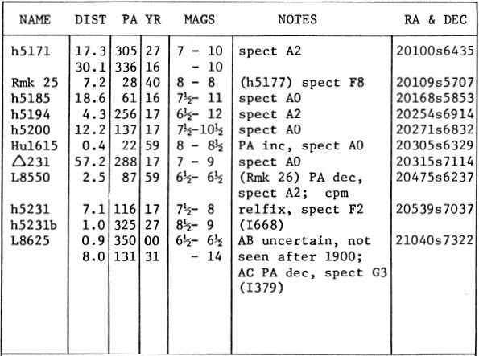
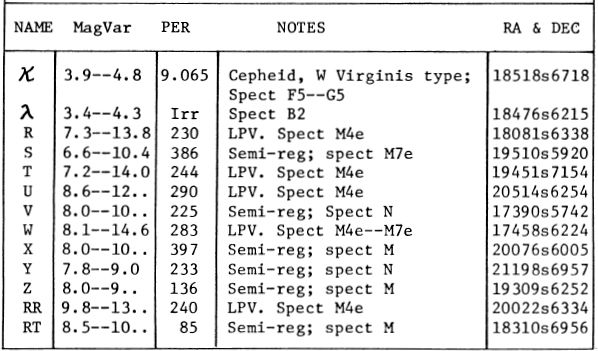

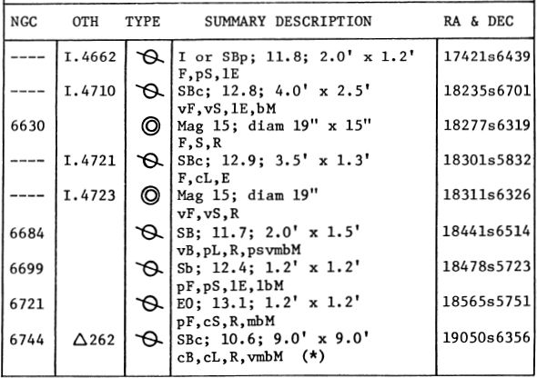

ALPHA
Α
Name– The “Peacock Star”, honoring the bird sacred to Juno; the constellation name is of no great antiquity, however, as it was introduced by Bayer in the early 17th century. Magnitude 1.93; spectrum B3 IV; position 20217s5654. The computed distance is about 310 light years, and the actual luminosity about 1200 times the Sun. Alpha Pavonis shows an annual proper motion of 0.09”; the radial velocity is 1.2 mile per second in recession. Spectroscopic studies show that the star is a close binary with a period of 11.753 days.
名称-“孔雀之星”，以纪念朱诺神圣的鸟；但是，星座名称并不是很古老，正如拜耳在17世纪初引入的那样。大小1.93; 频谱B3 IV; 位置20217s5654。计算出的距离约为310光年，而实际光度约为太阳的1200倍。阿尔法·帕沃尼斯（Alpha Pavonis）的年度正常运动值为0.09英寸；在衰退中，径向速度为每秒1.2英里。光谱研究表明，恒星是一个封闭的双星，周期为11.753天。
BETA
测试版
Magnitude 3.42; spectrum A5 IV; position 20405s6623. The distance is about 160 light years and the actual luminosity about 90 times the Sun. The annual proper motion is 0.05”; the radial velocity is 6 miles per second in recession.
大小3.42; 频谱A5 IV; 位置20405s6623。距离约为160光年，实际光度约为太阳的90倍。年度适当运动为0.05英寸；在衰退中，径向速度为每秒6英里。
NGC 6752
NGC 6752
Globular star cluster. Position 19064s6004, about 10° WSW from Alpha Pavonis. One of the finest of the globular clusters, though almost unknown to observers in North America or Europe owing to its far southern location. It was probably first observed by J. Dunlop in 1828, and with a total integrated magnitude of 7.2 ranks as the 7th brightest globular in the sky. In apparent size it possibly holds third place, only Omega Centauri and 47 Tucanae appear to exceed it. The total diameter is about 42′ on the best photographs, though the visual size is about 15′ or 16′ in most telescopes. “One of the gems of the sky” states E.J.Hartung. “On a clear dark night this is a most lovely object……a moderately condensed type of globular cluster, the central region about 3′ wide and the unusually bright outliers extending over 15′, involving an elegant pair (7.7+9.3,  238°). Many of the brighter stars of the cluster are in curved and looped arms, and look distinctly reddish..” The cluster is among, the nearer globulars with a computed distance of about 20,000 light years and a true luminosity of close to 100,000 suns. NGC 6752 contains only two known variable stars, one of which has been known since 1897. The total integrated spectral type is about F6; the radial velocity is a very moderate 23 miles per second in approach.
238°). Many of the brighter stars of the cluster are in curved and looped arms, and look distinctly reddish..” The cluster is among, the nearer globulars with a computed distance of about 20,000 light years and a true luminosity of close to 100,000 suns. NGC 6752 contains only two known variable stars, one of which has been known since 1897. The total integrated spectral type is about F6; the radial velocity is a very moderate 23 miles per second in approach.
球状星团。位置19064s6004，距Alpha Pavonis WSW约10°。最好的球状星团之一，尽管由于位于南端，所以在北美或欧洲的观察者中几乎是未知的。它可能是J. Dunlop于1828年首次观察到的，总积分为7.2，是天空中第七高的球状星。从表面上看，它可能排名第三，只有欧米茄半人马座和47杜鹃花似乎超过了它。最佳照片上的总直径约为42'，尽管在大多数望远镜中，视觉尺寸约为15'或16'。EJHartung说：“天空中的宝石之一”。“在一个晴朗的漆黑的夜晚，这是一个最可爱的物体……一种中等凝结的球状星团，中心区域约3'宽，异常明亮的离群值延伸超过15'，其中包括一对优雅的配对（7。238°）。该星团中有许多明亮的恒星处于弯曲和环状的臂中，并且看上去明显带红色。”该星团位于其中的较近球状体中，计算出的距离约为20,000光年，真正的发光度接近100,000太阳。NGC 6752仅包含两个已知的变星，其中一个自1897年以来就已为人所知。总的综合光谱类型约为F6。进近时径向速度非常适中，每秒23英里。

GLOBULAR STAR CLUSTER NGC 6752 in PAVO. This object ranks among the dozen finest globular clusters in the sky.
PAVO中的球形星团NGC 6752。这个物体位于天空中最好的十个球状星团中。
Radcliffe Observatory
拉德克利夫天文台
SPIRAL GALAXY NGC 6744 in PAVO. This is one of the largest of the barred spirals. The photograph was made with the 74–inch reflector at Mt.Stromlo Observatory in Australia.
PAVO螺旋星系NGC 6744。这是最大的禁止螺旋之一。这张照片是用澳大利亚斯特罗姆洛天文台的74英寸反射镜拍摄的。
PEGASUS
飞马
LIST OF DOUBLE AND MULTIPLE STARS
双星和多星清单


LIST OF VARIABLE STARS
变星清单
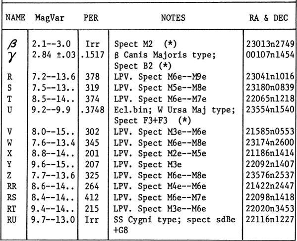
LIST OF STAR CLUSTERS, NEBULAE, AND GALAXIES
星团，星云和星系的清单

DESCRIPTIVE NOTES
描述性注释
ALPHA
Α
Name– MARKAB or MARCHAB, from the Arabian word for Saddle, though the term might also refer to a ship. Other Arabic names were Matn al Faras, the Horse’s Shoulder, and Yed Alpheras, the Horse's Forearm or Hand. Magnitude 2.50; spectrum B9 or A0 III; position 23023n1456. The star marks the southwest corner of the “Great Square of Pegasus”, the huge squarish figure about 18° · 14° that outlines the body of the Horse. Alpha Pegasi lies at a distance of about 110 light years, and has about 95 times the solar luminosity (absolute magnitude about –0.1). The annual proper motion is 0.07″; the radial velocity is 2.2 miles per second in approach, with slight but definite variations. The star lies in a rather blank part of the sky, lacking in faint stars; the interesting spiral galaxy NGC 7479, however, will be found about 2.9° almost directly south. (See photograph on page 1392)
名称-MARKAB或MARCHAB，源于阿拉伯语的“ Saddle”，尽管该术语可能还指船舶。其他阿拉伯名称是Matn al Faras，马的肩膀和Yed Alpheras，马的前臂或手。大小2.50; 频谱B9或A0 III; 位置23023n1456。这颗恒星标志着“飞马座大广场”的西南角，这是一个大约18°·14°的巨大方形图形，勾勒出马的身体轮廓。Alpha Pegasi位于约110光年的距离，其太阳光度约为95倍（绝对值约为–0.1）。年度适当运动为0.07英寸；进近时径向速度为每秒2.2英里，但有微小但确定的变化。恒星位于天空的一片空白中，缺少微弱的恒星。然而，有趣的旋涡星系NGC 7479几乎在南面约2.9°处被发现。（请参阅第1392页的照片）
Pegasus is, of course, the famed Flying Horse of Greek mythology, one of the most curious, but also one of the loveliest concepts created by the ancient myth–makers of the Greek world. In legend he was born from the blood of the Medusa, when that monster had been slain by Perseus, and his name, it is thought, comes from the Greek 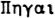 or “Pegae”, the “Springs of the Ocean” at the place of his birth. The word  or “strong” has also been suggested as a possible source of the name. After his creation, the Winged Horse made his first landing on the rocky heights above Corinth, where the blow of his hoof caused the famous spring of Peirene to gush forth; the spot was sacred to the Corinthians, and Pegasus was held in special reverence by the inhabitants of the city. A similar tradition credited Pegasus with having produced the Fount of Hippocrene on Mt.Helicon. Pegasus appears on coins of Corinth as early as 550 BC, where he is shown in a curiously archaic style (Fig.1); some of the later issues, in high classic style, are among the finest of coin creations of the ancient world and are eagerly sought by collectors:
or “strong” has also been suggested as a possible source of the name. After his creation, the Winged Horse made his first landing on the rocky heights above Corinth, where the blow of his hoof caused the famous spring of Peirene to gush forth; the spot was sacred to the Corinthians, and Pegasus was held in special reverence by the inhabitants of the city. A similar tradition credited Pegasus with having produced the Fount of Hippocrene on Mt.Helicon. Pegasus appears on coins of Corinth as early as 550 BC, where he is shown in a curiously archaic style (Fig.1); some of the later issues, in high classic style, are among the finest of coin creations of the ancient world and are eagerly sought by collectors:
当然，飞马座是著名的希腊神话中的飞马，它是最古怪的事物之一，也是古代神话-希腊世界的创造者所提出的最可爱的观念之一。在传说中，他是从美杜莎的血中生出来的，当时那个怪物被英仙座刺杀了，据认为他的名字来自希腊语或“ Pegae”，他出生地的“海洋之泉”。也有人建议使用“ strong” 一词作为该名称的可能来源。创造了翅膀的马之后，他第一次降落在科林斯（Corinth）之上的岩石高地上，在那里，他的蹄声使著名的Peirene泉水涌出。这个地方对哥林多人是神圣的，飞马座受到了城市居民的崇敬。类似的传统归功于Pegasus，他在Helicon山上制作了Hippocrene的喷泉。飞马座早在公元前550年就出现在科林斯的钱币上，在那里以奇特的古风风格出现（图1）。后来的一些发行版本具有很高的古典风格，是古代世界上最好的硬币创作之一，并且热切地 受到收藏家的追捧：

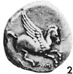


The coin shown in Figure 2 was struck in the early 4th Century BC at Ambracia, while the specimen shown in Fig.4 dates to about 320 BC and was minted at Lokroi in Bruttium. The style was adopted by many cities of the Greek world; the obverse of virtually all of these coins shows a classic head of Athena, wearing the traditional Corinthian helmet. Pegasus also is featured on some of the large bronze coins of Carthage, probably minted in Sicily during the final years of the city’s existence, before its total destruction by the Romans in 146 BC. (Fig.3)
图2中所示的硬币是在公元前4世纪早期在Ambracia 铸造的，而图4中所示的标本可以追溯到公元前320年，并在Bruttium的Lokroi铸造。这种风格被希腊世界的许多城市所采用。几乎所有这些硬币的正面都显示出雅典娜的经典头像，戴着传统的科林斯式头盔。飞马座也出现在迦太基的一些大型青铜硬币上，可能是在该城市存在的最后几年在西西里岛铸造的，在公元前146年被罗马人彻底摧毁之前。（图3）
Pegasus was tamed by Athena or Minerva according to Greek legend, and given to the Muses, in whose service he became the symbol of poetic inspiration; in another tradition he carried the thunder and lightning for Zeus. In another classic tale he became the steed of the Greek hero Bellerophon, Prince of Corinth, and slayer of the fearsome Chimaera, a most unlikely combination of lion, serpent, and goat. Bellerophon tamed the fabulous Flying Horse with the aid of Athena, after spending a night in prayer in her temple, and had many other fabulous adventures with the great horse. Eventually, however, Bellerophon became so bold as to attempt to fly to Olympus itself; the wiser Pegasus refused to attempt the flight and threw his rider to Earth. The tradition which connects Pegasus with the hero Perseus is of more modern origin, and is not supported by the ancient myths. The famous painting by Rubens, which depicts Pegasus present at the Rescue of Andromeda, is a part of this modem mythos; Shakespeare also refers in Troilus and Cressida to “Perseus’ horse”, evidently an allusion to Pegasus. In Greek writings Pegasus is often called simply “The Horse” or occasionally “The Divine Horse”; the Romans called it Equus Gorgoneus or Equus Ales, the “Winged Horse”; another popular title was Alatus or “The Winged One” which appears in the Alfonsine Tables. In other Latin manuscripts it is called Equus Medusaeus which requires no translation. In the 1551 edition of Ptolemy’s Almagest it is given as Equus Pegasus.
根据希腊传说，天马座被雅典娜或密涅瓦人驯服，并送给缪斯女神像，在缪斯女神的服务下他成为诗意灵感的象征。在另一种传统中，他为宙斯带来了雷电。在另一个经典的故事中，他成为了希腊英雄科林斯王子贝勒罗丰的骏马，并杀死了可怕的奇玛拉（Chimaera），后者是狮子，蛇和山羊的最不可能的组合。Bellerophon在雅典娜（Athena）过夜之后，借助雅典娜（Athena）驯服了神话般的飞马庙，并与那匹大马一起进行了许多其他奇妙的冒险。最终，贝莱芬（Beroerophon）变得如此胆大，以至于尝试飞往奥林巴斯。智者飞马拒绝尝试飞行，并将其骑手扔向地球。将飞马与英雄英仙座联系起来的传统起源于现代，并且不受古代神话的支持。鲁本斯的著名绘画描绘了飞马座在仙女座救援中的存在，是这一现代神话的一部分。莎士比亚在Troilus和Cressida中还提到“珀尔修斯的马”，这显然是对飞马座的暗示。在希腊著作中，飞马经常被简单地称为“马”，有时也被称为“神马”。罗马人称其为马属高古猿或马属强麦酒，“翼马”；另一种流行的标题是箭羽或“插翅一号”出现在Alfonsine的表。在其他拉丁文手稿中，它被称为马杜马（Equus Medusaeus），不需要翻译。在托勒密的1551年版的《最大的》（Almagest）中，它被命名为“ 马属飞马座”。
According to R.H.Allen, the constellation is identified as the Horse of Nimrod by ancient Jewish writers; the identification with the Archangel Gabriel is relatively modem, and has been attributed to Julius Schiller.
根据RHAllen的说法，这个星座被古代犹太作家确定为“ 猎人马”。大天使加百列的识别相对较现代，并且被归因于朱利叶斯·席勒（Julius Schiller）。
In the sky Pegasus appears turned over on his back with his body outlined by the Great Square (Alpha, Beta, Gamma, and the Alpha of Andromeda). His front legs are marked by Eta and Iota Pegasi, and his head by Epsilon; the great wings are not clearly indicated, but would lie more or less at the position of the “Circlet of Pisces”, some 10° below the southern edge of the Great Square.
在天空中，飞马座出现在他的背上，大广场（阿尔法，贝塔，伽玛和仙女座阿尔法）勾勒出他的身体。他的前腿由Eta和Iota Pegasi标记，头部由Epsilon标记。巨大的翅膀没有被清楚地标出，但是或多或少地位于“双鱼座圈子”的位置，在大广场的南边缘下方约10°。
BETA
测试版
Name– SCHEAT, from the Arabic Al Sa’id or Sa’d, the “Upper Part of the Arm” or possibly “The Foreleg”. Riccioli has it labeled Sdheat Alpheraz while Bayer has Seat Alpheras. Schickard’s title appears to be very corrupted Arabic: Saidol–Pharazi. Beta Pegasi is magnitude 2.50 (variable); spectrum M2 II or III; the position is 23014n2749. The star marks the northwest corner of the Great Square of Pegasus.
名称-SCHEAT，来自阿拉伯语Al Sa'id或Sa'd，“手臂的上部”或“前肢”。Riccioli将其标记为Sdheat Alpheraz，而Bayer 则将其标记为Seat Alpheras。Schickard的头衔似乎是非常腐败的阿拉伯语：Saidol–Pharazi。Beta Pegasi的幅度为2.50（可变）；频谱M2 II或III; 位置是23014n2749。这颗星标志着飞马座大广场的西北角。
Scheat is an irregular red variable star, similar in behavior to Betelgeuse, but much less extreme in size and luminosity. It varies from magnitude 2.1 to about 3.0 in an irregular period. The star was one of the first to be measured with the beam interferometer on the 100–inch reflector at Mt.Wilson; the apparent angular size was found to be about 0.021″. At the computed distance this corresponds to about 145 times the diameter of the Sun. Beta Pegasi, like Betelgeuse, varies somewhat in size during the course of the light cycle; the maximum diameter may be about 160 times the diameter of our Sun. The true luminosity varies from about 240 suns up to about 500. If Beta Pegasi should replace our sun, the star would not quite fill the Earth’s orbit. E.J.Hartung (1968) comments on the fine appearance of the spectrum of this star, “with broad dark bands in red and orange, and a series of narrower bands in green, blue and violet.”
Scheat是一颗不规则的红色变星，其行为与Betelgeuse相似，但在大小和光度上却没有那么极端。在不规则的时期内，它的大小在2.1到3.0之间变化。这颗星是最早的一颗用光束干涉仪在威尔逊山的100英寸反射镜上进行测量；发现表观角尺寸为约0.021英寸。在计算出的距离上，这大约相当于太阳直径的145倍。像Betelgeuse一样，Beta Pegasi在光照周期中大小也会有所不同。最大直径大约是太阳直径的160倍。真正的光度从大约240个太阳到大约500个太阳不等。如果贝塔·皮加西（Beta Pegasi）代替我们的太阳，那么恒星将无法完全充满地球的轨道。EJHartung（1968）评论了这颗恒星光谱的优美外观，“红色和橙色的暗带很宽，而绿色，蓝色和紫色的带较窄。”
The computed distance is about 210 light years, the surface temperature about 3100°K, the mass about 5 solar masses, and the average density about one millionth that of the Sun. The star shows an annual proper motion of 0.23″ in PA 54°; the radial velocity is 5 miles per second in recession.
计算出的距离约为210光年，表面温度约为3100°K，质量约为5太阳质量，平均密度约为太阳的百万分之一。恒星在PA 54°处的年度固有运动为0.23英寸；在衰退中，径向速度为每秒5英里。
Two faint field stars are listed in the ADS catalogue as companions to Beta Pegasi, but these are optical attendants only, and do not share the proper motion of the bright star:
ADS目录中列出了两颗昏暗的恒星，它们是Beta Pegasi的伴星，但它们仅是光学乘务员，不会共享亮星的正常运动：

The AB separation is slowly increasing from about 80″ in 1828, while the AC distance is diminishing; both changes are the result of the proper motion of the bright star.
AB间隔从1828年的大约80英寸开始缓慢增加，而AC距离逐渐减小。两种变化都是明亮恒星正确运动的结果。
GAMMA
伽玛
Name– ALGENIB, probably from the Arabic Al Janb, “The Side”, though some authorities derive it from Al Jonah, “The Wing”. Magnitude 2.84, spectrum B2 IV, position 00107n1454. The star marks the southeast corner of the Great Square of Pegasus. Gamma Pegasi is a giant star, at a computed distance of about 570 light years, and with an actual luminosity of about 1900 times that of the Sun (absolute magnitude –3.4.) The annual proper motion is about 0.01″; the radial velocity is 2.5 miles per second in recession.
名字– ALGENIB，可能来自阿拉伯语Al Janb，“ The Side”，尽管一些权威人士源自Al Jonah，“ The Wing”。幅度2.84，频谱B2 IV，位置00107n1454。星星标志着飞马座大广场的东南角。伽玛·佩加西（Gamma Pegasi）是一颗巨大的恒星，计算得出的距离约为570光年，其实际光度约为太阳的1900倍（绝对值–3.4。），每年的固有运动约为0.01英寸；在衰退中，径向速度为每秒2.5英里。
One of the Beta Canis Majoris variables, the star has an unusually short period of 0.1517495 day, or about 3 hours and 38 minutes. As in all the stars of this type, the light variations are very slight, only a few hundredths of a magnitude.
这是Beta Canis Majoris变数之一，该恒星具有异常短的0.1517495天，或大约3个小时 38分钟 与所有此类恒星一样，光的变化非常小，仅为百分之一的大小。
The variable radial velocity of this star was first detected by K.Bums at the Lick Observatory in 1911. Owing possibly to the small amplitude of the variations, no further studies of the star were made until 1952 when D.H. McNamara and A.D.Williams at the University of California found the period to be remarkably short, only 3.63 hours. At the time this was the shortest period known for any Beta Canis star, but the star Theta Ophiuchi has since been found to have a period of 3h 22m. Light curves for Gamma Pegasi were measured in different colors by M.Jerzykiewicz in 1970, and it was found that the B magnitude shows slight but regular variations of less than 0.01 magnitude in a period of about 44 minutes, close to 1/5 the main period of the star. The V–B color index becomes smallest around the time of maximum light. Stars of this type are believed to be rather massive, young stars which are beginning to evolve away from the main sequence. (Refer also to Beta Canis Majoris, page 435)
这颗恒星的径向速度是1911年由里克天文台的K.Bums首次发现的。由于变化的幅度很小，直到1952年DH McNamara和ADWilliams进入大学时才对该恒星进行进一步研究。加州发现这段时间非常短，只有3.63小时。当时这是Beta Canis恒星最短的时期，但后来发现Theta Ophiuchi恒星的周期为3h 22m。M.Jerzykiewicz在1970年用不同的颜色测量了Gamma Pegasi的光曲线，发现B幅值在大约44分钟的时间内显示出小于0.01幅值的微小但有规律的变化，接近主要值的1/5明星时期。V–B颜色指数在最大光照时间附近变得最小。这种类型的恒星被认为是相当庞大的年轻恒星，它们开始从主序列中脱离出来。（另请参见Beta Canis Majoris，第435页）
The interesting eclipsing variable U Pegasi lies about 3.8° to the west and slightly north. (See page 1378)
有趣的食变变量U Pegasi位于西约3.8°，稍北。（请参阅第1378页）
EPSILON
爱普生
Name– ENIF, from Al Anf, “The Nose”. Medieval Arabian charts sometimes label it Fum al Faras or “The Horse’s Mouth”. Magnitude 2.31, spectrum K2 Ib, position 21417n0939. The star is at a computed distance of about 780 light years, giving an actual luminosity of about 5800 times that of the Sun, and an absolute magnitude of –4.6. The annual proper motion is 0.025″; the radial velocity is slightly under 3 miles per second in recession. From the position on the H–R diagram, the estimated mass of the star is close to 10 solar masses.
名称-ENIF，来自Al Anf，“鼻子”。中世纪的阿拉伯图表有时将其标记为Fum al Faras或“ The Horse's Mouth”。幅度2.31，频谱K2 Ib，位置21417n0939。这颗恒星的计算距离约为780光年，实际发光度约为太阳的5800倍，绝对值为–4.6。年度适当运动为0.025英寸；在衰退中，径向速度略低于每秒3英里。从H–R图上的位置，恒星的估计质量接近10个太阳质量。
Two faint stars in the field are not true physical companions to Epsilon; the further one, at 143″, has been mentioned in many observing books owing to the statement by Herschel that the star exhibits a curious optical phenomenon: “the apparent pendulum–like oscillation of a small star in the same vertical as the large one, when the telescope is swung from side to side..” Herschel suggested that the seemingly larger arc traversed by the small star was due to the greater time required for its faint light to affect the eye, so that “the reversal of motion is first perceived in the larger object”.
野外的两颗微弱的恒星并不是Epsilon的真正同伴；由于赫歇尔的说法，恒星表现出一种奇怪的光学现象，因此在许多观测书中都提到了另一颗恒星“ 143”。当望远镜左右摇摆时。”赫歇尔建议小恒星穿过的看似较大的弧线是由于其微弱的光线影响眼睛所需的时间更长，因此“在较大的物体中首先会感觉到运动的逆转”。
The fine globular star cluster M15 may be found in binoculars by sweeping an area about 4° to the northwest. (Refer to page 1383)
在双筒望远镜中，可以通过向西北大约4°的范围扫掠来发现细小球状星团M15。（请参阅第1383页）
ZETA
ZETA
Name– HOMAM, probably from the Arabic phrase Sa’d al Humam, the “Lucky Star of the Hero”, though Thomas Hyde derived it from Al Hammam, which seems to mean “The Whispering One”. According to R.H.Allen, the names Sa’d al Na’amah, “The Lucky Star of the Ostriches” and Na’ir Sa’d al Bahaim, “The Bright Fortunate One of the Two Beasts” were also in use among the Arabs. The Chinese, for some unknown reason, connected the star with thunder. Zeta Pegasi is magnitude 3.46, spectrum B8 V, position 22390n1034. The computed distance is about 210 light years, the actual luminosity about 145 times the sun, the annual proper motion is 0.08″, and the radial velocity about 4 miles per second in recession.
名称-HOMAM，可能来自阿拉伯语“ Sa'd al Humam”，“英雄的幸运星”，尽管Thomas Hyde源自Al Hammam，这似乎意味着“低语者”。根据RHAllen的说法，阿拉伯人也使用了Sa'd al Na'amah（鸵鸟的幸运星）和Na'ir Sa'd al Bahaim（两个野兽之一的光明幸运者）的名字。中国人出于某种未知的原因将星星与雷鸣联系起来。Zeta Pegasi的震级为3.46，频谱为B8 V，位置为22390n1034。计算出的距离约为210光年，实际光度约为太阳的145倍，年度固有运动为0.08英寸，在衰退中径向速度约为每秒4英里。
The 11th magnitude companion at 62″ was first noted by S.W.Burnham in 1879, but appears to have no real connection with the primary. The distance between the two stars is slowly decreasing from the proper motion of Zeta itself.
SWBurnham于1879年首次注意到62英寸处的11级伴星，但似乎与主星没有真正的联系。由于Zeta本身的适当运动，两颗恒星之间的距离正在逐渐减小。
ETA
预计到达时间
Name– MATAR, from the Arabic Al Sa’d al Matar, “The Fortunate Rain”. Magnitude 2.96, spectrum G8 II + F?, Position 22407n2958. Eta Pegasi is some 360 light years distant; the actual luminosity is about 630 times that of the Sun (absolute magnitude –2.2). The star shows an annual proper motion of 0.03″; the radial velocity is 2.5 miles per second in recession.
名称-MATAR，来自阿拉伯语Al Sa'd al Matar，“幸运的雨”。幅度2.96，频谱G8 II + F2，位置22407n2958。Eta Pegasi离我们有360光年的路程。实际的光度大约是太阳的630倍（绝对值–2.2）。恒星的年度固有运动为0.03英寸；在衰退中，径向速度为每秒2.5英里。
W.W.Campbell at Lick Observatory in 1898 found the star to be a spectroscopic binary with a period of 818 days and an eccentricity of about 0.155. The primary star is close to 1 AU from the center of gravity of the system and the spectroscopic companion appears to be an F–star of uncertain class.
1898年，里克天文台的WWCampbell发现这颗恒星是一个光谱双星，周期为818天，偏心率约为0.155。主星离系统重心接近1 AU，光谱伴星似乎是不确定类的F星。
A visual companion at 91″ is itself a very close pair of about 0.2″, but probably does not form a true physical system with the bright star. The faint pair was first resolved by S.W.Burnham with the 36–inch refractor at Lick in 1889, and has shown no definite change in PA or separation since that time.
91“处的视觉伴侣本身是一对非常接近的一对，大约为0.2”，但可能不会形成真实的 物理系统与明亮的星星。这对微弱的光束首先由SWBurnham在1889年用Lick的36英寸折射镜解决，从那以后，PA或分离度没有明显变化。
KAPPA
卡帕
Magnitude 4.27; Spectrum F5 IV, Position 21424n2525. The parallactic distance is close to 100 light years, giving a total luminosity of about 16 suns. The annual proper motion is 0.033″; the radial velocity is about 5 miles per second in approach.
大小4.27; 频谱F5 IV，位置21424n2525。视差距离接近100光年，因此总发光度约为16个太阳。年度适当运动为0.033“；进近时径向速度约为每秒5英里。
The 11th magnitude companion at about 14″ has been known since 1776 when it was recorded by William Herschel; the PA has been decreasing slowly and the separation has increased about 2″ in the last century. The observed change can be accounted for by the known proper motion of the primary; thus it appears that the two stars form an optical pair only, and are not physically associated.
自1776年由威廉·赫歇尔（William Herschel）录制以来，它就已经知道约11英寸的11级伴星。在过去的一个世纪中，PA一直缓慢下降，分离距离增加了约2英寸。观察到的变化可以通过原边的已知正确运动来解决；因此，看起来两颗恒星仅形成光学对，并且在物理上不相关。
Kappa itself is a very close binary in rapid motion, discovered by S.W.Burnham in August 1880. Burnham wrote in 1891: “The extreme difficulty of measuring so close a pair seems to have deterred other observers, with a single exception, from doing anything with it…. Since I have been at Mt.Hamilton I have measured the close pair each year with the 36–inch refractor. During the measures of the past year it was extremely difficult, and was a severe test of the power of the great telescope with the very best atmospheric conditions.”
Kappa本身是快速运动中的非常接近的二进制，由SWBurnham在1880年8月发现。Burnham在1891年写道：“测量如此接近的一对的极端困难似乎阻止了其他观察者，只有一个 例外，什么也不用做……。自从我来到汉密尔顿山以来，我每年都用36英寸折射仪测量这对近距离望远镜。在过去的一年中，这非常困难，并且是对具有最佳大气条件的大型望远镜的性能的严格测试。”

T.Lewis, at the Royal Observatory at Greenwich, in a paper written in November 1894, called attention to the fact that the star was the most rapid binary then known, and stated that Burnham’s note “naturally induced an inspection with the 28–inch refractor of the Royal Observatory, Greenwich, which showed them distinctly separated with a power of 1030, and our measures appear to confirm the remarkably short period”.
格林威治皇家天文台的T.Lewis在1894年11月发表的一篇论文中，提请注意以下事实，即恒星是当时已知的最快双星，并指出伯纳姆的笔记“自然地引起了对28英寸望远镜的检查格林威治皇家天文台的折射仪显示出它们以1030的倍数明显分开，我们的措施似乎证实了这一短暂时期。
Modem measurements give the period as 11.53 years; periastron was in late 1955, and the separation reaches about 0.3″ at maximum, as in 1964. Individual magnitudes are 4.8 and 5.2; spectral types are F5 (subgiant) and about K0. From the computed orbit the masses of the two stars are 1.6 and 1.5; the absolute magnitudes are +2.3 and +2.7. Orbital elements, according to W.J.Luyten, are: Semi–major axis= 0.22″ or about 7.5 AU; Eccentricity= 0.30; Inclination= 109°; motion retrograde with periastron= 1909.86. In addition, the brighter star is a spectroscopic binary with a period of 5.9715 days.
调制解调器测量的期限为11.53年；周星云发生在1955年末，与1964年一样，最大间隔达到了0.3英寸。个体震级分别为4.8和5.2。频谱类型为F5（次要），大约为K0。从计算出的轨道来看，两颗恒星的质量分别为1.6和1.5；绝对大小为+2.3和+2.7。根据WJLuyten，轨道元素是：半长轴= 0.22“或大约7.5 AU；偏心率= 0.30；倾角= 109° 腹膜周围运动逆行= 1909.86。此外，明亮的恒星是光谱双星，周期为5.9715天。
MU
亩
Magnitude 3.50; Spectrum G8 III; Position 22476n2420, about 4.5° SW from Beta Pegasi. The parallactic distance is about 100 light years, which gives the star an actual luminosity of about 30 suns. The annual proper motion is 0.15″; the radial velocity is about 8.5 miles per second in recession.
大小3.50; 频谱G8 III; 位置22476n2420，距Beta贝加西（Beta Pegasi）约4.5°SW。视差距离约为100光年，这使恒星实际的发光度约为30个太阳。年度适当运动为0.15“；在衰退中，径向速度约为每秒8.5英里。
37
37
Magnitude 5.47; Spectrum F5 IV; Position 22274n0411, about 4.5° north of Zeta Aquarii which is the central star of the “Water Jar” in Aquarius. 37 Pegasi is a rather close binary system with a period of about 150 years, and a much elongated comet–like orbit which is inclined at only about 2° from the edge–on position. The magnitudes of the two stars have been measured as 5.79 and 6.95, and the apparent separation varies from less than 0.1″ at closest approach (1917) to about 1.1″ (1960). 37 Pegasi lies at a computed distance of about 165 light years, which gives a total absolute magnitude of about +2 and individual luminosities of about 10 and 4 suns. The system shows an annual proper motion of 0.15″; the radial velocity is less than one mile per second in recession.
大小5.47; 频谱F5 IV; 位置22274n0411，位于Zeta Aquarii以北约4.5°处，它是水瓶座“水罐”的中心星。37佩加西是一个相当紧密的双星系统，约有150年的周期，并且彗星状的轨道非常细长，与边缘位置的倾斜度仅为2°。测得的两颗恒星的大小分别为5.79和6.95，其表观间隔从最接近时的小于0.1英寸（1917年）到约1.1英寸（1960年）不等。37佩加西位于计算出的约165光年的距离处，它的总绝对强度约为+2，单个光度约为10和4个太阳。系统显示每年适当运动0.15英寸；在衰退中，径向速度小于每秒1英里。

S.W.Burnham, in the BDS catalogue (1906) wrote that “this system has been difficult to measure with ordinary apertures, and many of the observations are discordant and uncertain”. John Herschel, however, found it not difficult with 6–inch aperture and a power of 320, when near maximum separation. The orbital computations of three different authorities are compared below; the agreement is fairly good considering the difficulties of measurement.
SWBurnham在BDS目录（1906年）中写道：“使用普通孔径很难测量该系统，并且许多观测值是不一致且不确定的”。但是，约翰·赫歇尔（John Herschel）发现，在接近最大间距的情况下，采用6英寸光圈和320的功率并不困难。下面比较了三种不同权威的轨道计算；考虑到测量的困难，该协议相当不错。
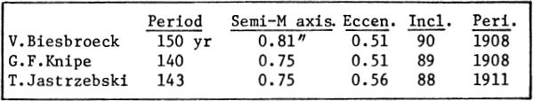
Incidentally, the true dimensions of the 37 Pegasi system are fairly comparable to the size of the Solar System; the computed mean separation is close to 40 AU.
顺便说一句，37 Pegasi系统的真实尺寸与太阳系的尺寸相当。计算出的平均间隔接近40 AU。
Magnitude 5.75; Spectrum G3 V; position 23595n2649, about 1.8° SSW from Alpha Andromedae in the NE corner of the Great Square of Pegasus. This is one of the best studied and most interesting of the binary systems, but unfortunately an object suited for observation only by large telescopes. It was discovered by S.W.Burnham with the 18–inch refractor at Dearborn in 1878. The period is 26.27 years with periastron occurring in 1962 and widest separation about 1970. The star is always a frustratingly difficult object because of the closeness of the pair and the brightness difference of at least three magnitudes.
大小5.75; 频谱G3 V; 位置23595n2649，距飞马大广场东北角Alpha Andromedae约1.8°SSW。这是二元系统中研究最多，最有趣的系统之一，但不幸的是，该对象仅适用于大型望远镜观察。它是由SWBurnham于1878年在迪尔伯恩（Dearborn）用18英寸折射镜发现的。这一周期为26.27年，在1962年出现了星云，并且在1970年出现了最大的分离。由于这对星团的亲密性和亮度，它始终是一个令人沮丧的物体。至少相差三个量级。
Discrepancies in the reported magnitude of the faint star are probably the result of these observational difficulties. The ADS Catalogue gives the small star a magnitude of 11.0, Burnham has 12.5, and the Yale Catalogue of Bright Stars lists a magnitude difference of 2.7 for the two stars which would give the B component a value of 8.45. Orbital elements according to R.G.Hall (1949) are as follows: Period= 26.27 yrs; Semi–major axis= 0.83″; eccentricity= 0.38; inclination 50°; perihelion= 1910.11. At the known distance of about 40 light years the true separation works out to about 9.5 AU, fairly comparable to Saturn and the Sun. 85 Pegasi is thus one of the fairly close binary systems in space, and shows a large proper motion of 1.29″ annually in PA 140°; the radial velocity is 21.5 miles per second in approach. Very similar in type to our own Sun, the primary star has about 70% the solar luminosity; the computed absolute magnitude is +5.2.
所报告的微弱恒星大小的差异可能是这些观测困难的结果。ADS目录为小星提供的星等值为11.0，伯纳姆为12.5，而耶鲁大学明亮星的目录为两颗星提供了2.7的星等差，即B成分的星际差为8.45。根据RGHall（1949）的轨道要素如下：周期= 26.27年；半长轴= 0.83英寸；偏心率= 0.38;倾角50° 近日点= 1910.11。在大约40光年的已知距离处，真正的分离达到9.5 AU，与土星和太阳相当。因此，85 Pegasi是太空中相当接近的双星系统之一，并且在PA 140°中每年显示1.29英寸的大固有运动。进近时径向速度为每秒21.5英里。与我们自己的太阳非常相似，主恒星的太阳光度大约为70％。计算出的绝对大小为+5.2。

The great peculiarity of the system is that the two masses are nearly equal, as shown by the observed orbit, and the fainter star thus violates the mass–luminosity relation to an unusual degree. 0.Struve and V.Zebergs in 1959 found masses of 0.82 and 0.80 suns for the two stars; approximately the same masses were derived by A.A.Wyller in 1956 in a study made with the 24–inch telescope at Sproul. R.G.Hall in 1948, adopting a slightly different parallax, found a smaller total mass of about 1.3 suns, but again found the individual masses nearly equal. Hall suggested that the anomalously large mass of the faint star might be partly explained by the supposition that the star is a close double; current studies suggest that the large discrepancy cannot be completely explained in this way; the faint star is underluminous by a factor of at least 15 and must be an extreme sub–dwarf. No spectrum of the faint component has been obtained, so this is another of those intriguing systems about which astronomers can say “more work needs to be done ”.
该系统的独特之处在于，两个质量几乎相等，如观察到的轨道所示，因此较暗的恒星在不寻常的程度上违反了质量-光度关系。0.Struve和V.Zebergs在1959年发现两颗恒星的质量分别为0.82和0.80太阳；1956年，AAWyller用Sproul的24英寸望远镜进行了一项研究，得出的质量大致相同。RGHall在1948年采用了稍有不同的视差，发现总质量较小，约为1.3个太阳，但又发现各个质量几乎相等。霍尔暗示，这颗微弱恒星的质量异常大，可能是由于该恒星是密闭双星的假设而部分解释的。当前的研究表明，不能以这种方式完全解释大的差异。昏暗的恒星的发光度至少为15，并且必须是极端的亚矮星。没有获得微弱成分的光谱，因此这是天文学家可以说“还需要做更多工作”的那些有趣系统。
Two faint stars in the field at 75.5″ and 109″ are merely optical companions and do not share the large proper motion of the bright system.
场中75.5英寸和109英寸处的两颗微弱恒星仅仅是光学伴星，它们没有共享明亮系统的大型正常运动。
U
ü
Position 23554n1540; Spectra dF3 + dF3. This is one of the best known dwarf eclipsing binary systems, closely resembling W Ursae Majoris, and easily located about 3.8° west and slightly north from Gamma\Pegasi. It was discovered by S.C.Chandler at Harvard in 1894, and the first accurate light curve was obtained by E.C.Pickering as early as 1898; G.W.Myers at that time pointed out that “the distance of centers does not materially differ from the sum of the radii of the components”, implying that the two stars were close to actual contact.
位置23554n1540；光谱dF3 + dF3。这是最著名的矮食双星系统之一，非常类似于W. Ursae Majoris，位置便利，位于Gamma \ Pegasi以西约3.8°处，略北偏北。它是由SCChandler于1894年在哈佛发现的，最早的精确光曲线是早在1898年由ECPickering获得的。GWMyers当时指出“中心的距离与组成部分的半径之和没有实质性差异”，这意味着两颗恒星接近实际接触。

In 1915 the first orbital elements of the star were derived by H.Shapley, using a series of observations obtained by O.C.Wendell in 1909. The period was shown to be 0.3747819 day, or 8h 59m 41.1s, just a few seconds short of 9 hours. During each revolution there are two eclipses, the primary minimum being only 0.1 magnitude fainter than the secondary one. The visual range of the system is 9.2 to 9.9; when observed photographically it is 9.7 to 10.3.
1915年，H.Shapley利用OCWendell在1909年获得的一系列观测结果，推导出了该恒星的第一个轨道元素。该周期显示为0.3747819天，即8h 59m 41.1s，短短9个小时才几秒钟。 。在每转期间，有两次日食，一次最小值比第二次仅微弱0.1级。系统的可视范围是9.2至9.9；用照相观察时为9.7至10.3。
The U Pegasi system consists of two dwarf stars, both of spectral type dF3, separated by about 1.2 million miles center to center. The components are of very nearly equal size and mass, each star being about 60% the solar diameter and close to the solar mass. O.Struve (1949) derived a total mass of 1.98, with individual masses of 1.10 and 0.88; his study of the star at McDonald Observatory showed that the more massive star is in front at time of primary eclipse. The orbital period of the system has been slowly decreasing since discovery, suggesting that the masses of the stars are gradually being altered through an exchange of material. Slight but definite changes in the period of this system have been detected by S.Gaposchkin (1932), by 1379 R.LaFara (1951) and Z.Kopal (1956). In 1958 an extensive series of photoelectric observations was made by L.Binnendijk at the Flower and Cook Observatory of the University of Pennsylvania. The light curve of the star was found to repeat itself over a two–month period when measured both in the yellow wavelengths and the blue, but showed definite differences when compared with the light curve obtained in 1949 and 1950. A binary system of this type presents some interesting problems; the two stellar surfaces are so nearly in contact that considerable exchange of material must occur; not only does this slowly change the relative masses of the two stars and alter the orbital elements, but it undoubtedly affects the pattern of stellar evolution. In 1951, sudden flares of up to 0.3 magnitude were detected at the Tokyo Observatory, implying that outbursts of some sort are occurring on at least one of the components.
U Pegasi系统由两个矮星组成，两个矮星的光谱类型均为dF3，相距约120万英里。这些组件的大小和质量几乎相等，每颗恒星的直径约为太阳直径的60％，接近太阳质量。O.Struve（1949）得出的总质量为1.98，单个质量为1.10和0.88。他在麦当劳天文台对恒星的研究表明，在日食时，更大的恒星位于前方。自发现以来，该系统的轨道周期一直在缓慢减少，这表明恒星的质量正在通过物质交换而逐渐改变。S.Gaposchkin（1932），1379 R.LaFara（1951）和Z.Kopal（1956）发现了该系统周期中的微小但确定的变化。1958年，L.Binnendijk在宾夕法尼亚大学花与库克天文台进行了一系列广泛的光电观测。当用黄色和蓝色测量时，发现该恒星的光曲线在两个月的时间内重复出现，但与1949年和1950年获得的光曲线相比，显示出一定的差异。提出了一些有趣的问题；两个恒星表面几乎接触，必须进行大量的材料交换。这不仅会缓慢改变两颗恒星的相对质量并改变轨道元素，而且无疑会影响恒星演化的模式。1951年，在东京天文台发现了高达0.3级的突然爆发，
An object of the U Pegasi type is regarded by R.P. Kraft (1961) as the probable ancestor of the erratic dwarf novae of the SS Cygni class. From studies by Kraft and W.J. Luyten it is known that the two classes of objects have a very similar distribution in the Galaxy, and are comparable in masses and periods. In the U Pegasi system it appears that the primary star is being accelerated in its evolution toward the hot subdwarf state, which in the future will cause it to more and more resemble systems of the SS Cygni type. The observed flares may indicate that this process is now well underway.
RP卡夫（RP Kraft，1961）将U Pegasi类型的物体视为SS Cygni类的矮矮新星的可能祖先。从卡夫（Kraft）和WJ鲁伊顿（WJ Luyten）的研究中得知，这两类物体在银河系中的分布非常相似，并且在质量和周期上都具有可比性。在U Pegasi系统中，似乎主恒星正朝着热的矮化状态发展，正在加速发展，这在将来将使其变得越来越类似于SS Cygni型系统。观察到的耀斑可能表明该过程正在进行中。
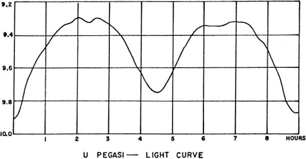
The distance of the U Pegasi system is not accurately known as no measurable parallax has been detected. From the assumed total luminosity, the expected distance must be close to 360 light years. The annual proper motion is 0.09″ and the radial velocity (strongly variable) implies that the orbital velocities of the two stars are about 100 and 123 miles per second. The whole system shows a recession velocity of some 15 miles per second. (Refer also to W Ursae Majoris, SS Cygni, and U Geminorum. Some speculations concerning the relationship of these stars to the classical novae will be found in the article on Nova Aquilae 1918)
由于未检测到可测量的视差，因此无法准确知道U Pegasi系统的距离。根据假定的总光度，预期距离必须接近360光年。年度固有运动为0.09英寸，径向速度（强烈变化）意味着两颗恒星的轨道速度分别为每秒100英里和123英里。整个系统的衰退速度约为每秒15英里。（另请参阅W Ursae Majoris，SS Cygni和U Geminorum。有关这些恒星与经典新星之间关系的一些推测将在1918年的Nova Aquilae上找到）
The sparse grouping of stars called NGC 7772 lies about 1.4° to the west and slightly north. Although plotted on Norton’s Atlas this little group does not appear to be a true cluster, and the members may not even form a physically attached group. The apparent size is about 1.6′ and the individual magnitudes range from 11 to about 14. (Refer to photograph on page 1393)
稀疏的恒星群NGC 7772位于西侧约1.4°，北侧约1.4°。尽管绘制在诺顿地图集上，但这个小组似乎并不是一个真正的集群，成员甚至可能没有组成一个物理上依附的小组。表观尺寸大约为1.6'，各个大小范围从11到大约14。（请参阅第1393页的照片）
AG
股份公司
Position 21486n1223, about 3.3° NE from the bright star Epsilon Pegasi. AG Pegasi is a curious and erratic variable of uncertain class, probably to be regarded as a member of the “symbiotic” or “Z Andromedae” type. The star first came to the attention of the astronomical world in 1894 when bright hydrogen lines were discovered in its spectrum by W.Fleming at Harvard. Later studies showed spectral peculiarities resembling those of the “permanent nova” P Cygni. Light variations of the star were first noticed about 1920, and a check of photographic sky survey plates has made it possible to trace the light changes back to 1890, with a few early visual estimates available for the period 1821– 1890. The star seems to have been a 9th magnitude object until about 1850, brightening over the next 20 years to about 6th magnitude. From studies by A.J.Cannon (1912) it appears that no definite changes in the spectrum were detected from 1893 to 1912. But in 1920 there began a series of remarkable progressive changes, and within two years the spectrum had developed the peculiar composite appearance which is the identifying characteristic of the symbiotic stars. The original spectrum was of type Be, but since 1922 the additional spectrum of an M-star has gradually developed. Bands of titanium oxide, first noticed in 1930, have increased in intensity over the last 40 years, and have become one of the major features of the star’s spectrum. According to P.W.Merrill in 1929, the bright lines of various elements show a cyclic change in intensity and position in a period of about 800 days. This may represent the orbital period of the system, though it is not known to which component the various spectral features should be attributed. The spectrum is further complicated by gas streams around the star and the evident presence of one of more gaseous shells expanding at different rates. Merrill in 1959 reported that at times 50 or more of the bright lines have been accompanied by dark absorption components on the side toward the violet; the typical “P Cygni feature”. “Change rather than stability is the rule in this odd star” wrote Merrill in 1959. “The velocity curve of a particular element may vary from time to time. For example, the average velocity of the bright hydrogen lines changed from a recession of 16 km/sec in 1915 to an approach of 27 km/sec in 1927. So far, however, all velocity curves have maintained the 800–day period. Since 1919 this has been about the only stable feature of AG Pegasi.”
位置21486n1223，距明亮的恒星Epsilon Pegasi约3.3°NE。AG Pegasi是一个不确定类别的奇怪且不稳定的变量，可能被认为是“共生”或“ Z Andromedae”类型的成员。1894年，哈佛大学的弗莱明（W.Fleming）在其光谱中发现了明亮的氢线，这颗恒星首先引起了天文学界的注意。后来的研究表明，光谱特性类似于“永久性新星” P Cygni。最早在1920年左右就注意到了恒星的光变，对星空照相板的检查使追踪光的变化可以追溯到1890年，并提供了一些1821年至1890年的早期视觉估计。直到1850年，它一直是9级的天体，在接下来的20年中一直增亮到6级。来自AJ的研究 Cannon（1912）在1893年至1912年期间未发现光谱发生任何确定的变化。但是在1920年开始出现了一系列显着的渐进式变化，并且在两年之内，该光谱形成了独特的复合外观，这是该光谱的识别特征。共生星。最初的光谱属于Be类型，但自1922年以来，M星的附加光谱逐渐形成。始于1930年的二氧化钛带在过去40年中强度增加，并已成为恒星光谱的主要特征之一。根据PWMerrill在1929年的研究，各种元素的亮线在大约800天的时间内显示出强度和位置的周期性变化。这可能代表系统的轨道周期，尽管尚不清楚应将各种光谱特征归因于哪个组件。恒星周围的气流和明显存在的一种气态壳以不同的速率膨胀，使光谱进一步复杂化。1959年的美林（Merrill）报告说，有时有50条或更多的亮线伴随着朝向紫罗兰的一侧的深色吸收成分。典型的“ P Cygni功能”。美林（Merrill）在1959年写道：“改变而不是稳定是这颗奇异恒星的准则。特定元素的速度曲线可能会随时间而变化。1959年的美林（Merrill）报告说，有时有50条或更多的亮线伴随着朝向紫罗兰的一侧的深色吸收成分。典型的“ P Cygni功能”。美林（Merrill）在1959年写道：“改变而不是稳定是这颗奇异恒星的准则。特定元素的速度曲线可能会随时间而变化。1959年的美林（Merrill）报告说，有时有50条或更多的亮线伴随着朝向紫罗兰的一侧的深色吸收成分。典型的“ P Cygni功能”。美林（Merrill）在1959年写道：“改变而不是稳定是这颗奇异恒星的准则。特定元素的速度曲线可能会随时间而变化。时间。例如，明亮氢线的平均速度从1915年的16 km / sec的衰退变化到1927年的27 km / sec的变化。但是，到目前为止，所有速度曲线都保持了800天的时间。自1919年以来，这一直是AG Pegasi唯一稳定的功能。”

COMPARISON MAGNITUDES: 20 Pegasi= 5.55; 17 Pegasi= 5.59 A= 6.08; B= 6.61; C= 6.73; D= 6.75; E= 7.59; F=7.75; G= 7.91; H= 8.05; J= 8.52;
比较幅度：20 Pegasi = 5.55；17 Pegasi = 5.59 A = 6.08; B = 6.61；C = 6.73; D = 6.75; E = 7.59; F = 7.75; G = 7.91；H = 8.05；J = 8.52；
In a study made in 1967, A.A.Boyarchuk of the Crimean Astrophysical Observatory found that the spectrum of the star showed typical Wolf–Rayet features combined with the spectrum of an M–star. He derived spectral types of WN6 and M3 III, and reported that the W–star resembles the nucleus of a planetary nebula. The star evidently began to show strong flare activity about 1850, and the resulting gaseous shells are now beginning to resemble a true planetary. The similar star FG Sagittae has shown the same type of activity during the last 80 years, and the surrounding nebula can now be seen on photographs. R Aquarii is another object in which the nebulosity is directly observable with modem telescopes.
在1967年进行的一项研究中，克里米亚天体物理天文台的AABoyarchuk发现，该恒星的光谱显示出典型的Wolf-Rayet特征与M恒星的光谱相结合。他推导了WN6和M3 III的光谱类型，并报道了W星类似于行星状星云的原子核。显然，这颗恒星在1850年左右开始表现出强烈的耀斑活动，并且由此产生的气态壳现在开始类似于真正的行星。在过去的80年中，类似的恒星FG射手座表现出了相同的活动类型，现在可以在照片上看到周围的星云。R Aquarii是另一个物体，其中可以用现代望远镜直接观测到雾度。
The light variations of AG Pegasi have not been large in recent years. The general trend has been a slow fading from a maximum of about 6th magnitude in 1870, and the brightness of the star in 1961 was about 8.5. No sudden outbursts of the Z Andromeda type have ever been observed. The true distance and luminosity of the AG Pegasi system is not well known, as the star is too remote to show either a measurable parallax or proper motion. On the assumption that the M–star emits about half the light of the system, the total absolute magnitude may be in the range of –1.5 to –2; the distance must than be something like 3000 light years. (Refer also to Z Andromedae, R Aquarii, BF Cygni, and T Corona Borealis)
近年来，AG Pegasi的光线变化并不大。总体趋势是从1870年的最高6级开始逐渐消失，1961年的恒星亮度约为8.5。从未观察到Z Andromeda类型的突然爆发。AG Pegasi系统的真实距离和光度并不为人所知，因为恒星太遥远，无法显示可测量的视差或适当的运动。假设M–star发出的光大约是系统的一半，则总绝对大小可能在–1.5至–2的范围内；距离必须大约是3000光年。（另请参阅Z Andromedae，R Aquarii，BF Cygni和T Corona Borealis）
M15
M15
(NGC 7078) Position 21276n1157. A beautiful globular star cluster, discovered by Maraldi in September 1746 during the search for the de Cheseaux Comet of that year; the cluster was refound by Messier in 1764, and is generally considered to rank among the dozen finest objects of its type in the northern sky. Easily found about 4° NW of Epsilon Pegasi, the cluster has a total magnitude of about 6½ and may be glimpsed as a fuzzy star–like object in binoculars. Partial resolution is achieved in modest telescopes, though both Messier and Bode described the cluster as a round “nebula” containing no stars. Sir William Herschel, in 1783, was probably the first to realize the true nature of M15.
（NGC 7078）位置21276n1157。一个美丽的球状星团，由Maraldi于1746年9月搜寻当年的de Cheseaux彗星时发现；该星团由梅西埃（Messier）在1764年重新发现，通常被认为是北部天空中同类最佳的十二个物体之一。容易找到的Epsilon Pegasi的西北约4°，该星团的总大小约为6½，可能被双筒望远镜窥视为模糊的星状物体。尽管梅西耶和博德都将星团描述为一个不包含恒星的圆形“星云”，但在适度的望远镜中可以实现部分分辨率。1783年，威廉·赫歇尔爵士可能是第一个认识M15真实本质的人。

GLOBULAR STAR CLUSTER M15 in PEGASUS. This is one of the richer and more compact globular clusters. U.S. Naval Observatory photograph made with the 61–inch reflector.
飞马的星状星团M15。这是更丰富，更紧凑的球状星团之一。美国海军天文台使用61英寸反射镜拍摄的照片。
Admiral Smyth found the cluster “not exactly round… under the best circumstances it is seen with stragglers branching from the central blaze…” “A very fine specimen of a completely insulated cluster” says T.W.Webb, “bright and resolvable, blazing in the center…a glorious object in a 9½” mirror…” H.Shapley confirmed the slightly elliptical shape of the cluster in about PA 35°; the oblate form is most evident in the rich central mass, the distribution of the stars becoming very nearly spherical in the outer portions. Long exposure photographs show several ill–defined dark patches similar to those seen in the great M13 cluster in Hercules. According to Webb, one of these, near the center, was originally discovered by Buffham with a 9–inch mirror.
史密斯海军上将发现该星团“不是完全圆的……在最佳情况下，观察者看到火星从中央火焰分支出来……”“一个完全绝缘的星团的非常好的标本” TWWebb说，“明亮而可分辨，在中心闪耀……” H.Shapley在9½英寸镜子中看到了一个光荣的物体……” H.Shapley证实，在大约PA 35°处，星团略呈椭圆形；扁圆的形式在丰富的中央质量中最明显，恒星的分布在外部变得非常接近球形。长时间曝光的照片显示出几个模糊不清的深色斑点，类似于在大力神的M13星团中看到的斑点。根据韦伯的说法，其中之一是在中心附近，最初是由布汉姆用9英寸镜子发现的。
M15 is one of the richer and more compact globulars, remarkable for the intense brilliance of its central core where the countless stars seemingly crowd together into a blazing nuclear mass; the central condensation is some 20″ in diameter. According to H.B.Sawyer (1947) M15 has a total apparent width of about 12’ and an integrated spectral type of F3. Photographically, the total integrated magnitude has been measured as 7.33, which puts it in 12th place in brightness in the list of known globulars. The cluster has an approach radial velocity of about 66 miles per second.
M15是更丰富，更紧凑的球状体之一，以其中心核心的强烈光芒而著称，无数恒星似乎聚集在一起成为炽热的核物质。中央冷凝器的直径约为20英寸。根据HBSawyer（1947），M15的总表观宽度约为12'，并且积分光谱类型为F3。在摄影上，总积分强度为7.33，在已知小球列表中，其亮度排名第12位。该星团的进近径向速度约为每秒66英里。
A large number of variable stars populate M15, 112 of these stars having been discovered up to 1973. The great majority of these stars are short period variables of the RR Lyrae class, all close to magnitude 15.9 (pg). About a fourth of these stars have been known since the studies by S.I.Bailey in 1897. One object, however, appears to be a Cepheid of type II, with a period of 17.109 days. Another unusual feature of M15 is the presence of a small planetary nebula (K648) on the northeast side of the cluster. This object, of photographic magnitude 13.8, and about 1″ in diameter, was found by F.G.Pease on plates made with the 100–inch telescope at Mt.Wilson in 1927, and in 1928 was found to show a continuous spectrum of type 0 with a few bright lines. From radial velocity measurements it appears certain that the nebula is a true member of the cluster. M15 was identified in 1974 as a source of X–ray energy, which suggests that the cluster may contain one or more supernova remnants, or possibly one of those completely collapsed stars or “black holes” so popular among writers on speculative cosmology. As of 1975, the clusters NGC 1851 in Columba, NGC 6441 in Scorpius, and NGC 6624 in Sagittarius are also known to be X–ray sources, so there is growing evidence that a very massive collapsed body of some sort may exist in the core of such clusters.
直到1973年，大量的变星聚集在M15上，其中有112颗被发现。这些恒星中的绝大多数是RR Lyrae类的短期变星，都接近15.9（pg）级。自1897年SIBailey进行研究以来，已经知道其中约四分之一的恒星。但是，一个天体似乎是II型造父变星，周期为17.109天。M15的另一个不寻常特征是在星团的东北侧存在一个小型行星状星云（K648）。FGPease在1927年用威尔逊山（Mt.Wilson）的100英寸望远镜制作的平板上发现了该物体，其照片大小为13.8，直径约为1英寸，并于1928年发现其显示出0型连续光谱，且具有几条亮线。从径向速度测量来看确定星云是星团的真正成员。M15于1974年被确定为X射线能量的来源，这表明该星团可能包含一个或多个超新星遗迹，或者可能是那些完全坍塌的恒星或“黑洞”之一，因此在投机宇宙学的作者中如此流行。自1975年起，还已知X射线源位于哥伦巴的NGC 1851，天蝎座的NGC 6441和人马座的NGC 6624，因此，越来越多的证据表明，核中可能存在非常大的坍塌体。这样的集群。
SPIRAL GALAXY NGC 7331 in PEGASUS. A system similar in type and size to our own Milky Way Galaxy. Palomar Observatory photograph made with the 200–inch reflector.
飞马的SPIAL GALAXY NGC 7331。该系统的类型和大小与我们自己的银河系类似。使用200英寸反射镜拍摄的帕洛玛天文台照片。
Shapley’s original studies gave a distance of about 42,000 light years for M15, a value which has not been too radically revised since the 1930’s. H.C.Arp in 1965 found the best modern value to be 10.47 kiloparsecs or about 34,000 light years. A study of the two color–magnitude diagrams suggests that M15 is about 1.7 times more remote than the Hercules cluster M13; this would give a distance of about 39,000 light years. From these results the total luminosity of the group is close to 200,000 times the Sun; the cluster diameter is about 130 light years. The most luminous members are red giants of absolute magnitude –2. (Refer also to the Hercules star cluster M13, page 978)
Shapley最初的研究为M15带来了约42,000光年的距离，自1930年代以来，该值从未作过太大修改。1965年的HCArp发现，最佳现代值是10.47千帕秒或约34,000光年。对两个色度图的研究表明，M15的距离是大力神星团M13的1.7倍；这将产生约39,000光年的距离。根据这些结果，该组的总发光度接近太阳的200,000倍；团簇直径约为130光年。最发光的成员是绝对强度为–2的红色巨人。（另请参阅第978页的大力神星团M13）
NGC 7331
NGC 7331
Position 22348n3410. Spiral galaxy, located about 4.3° north and slightly west from Eta Pegasi. NGC 7331 is a galaxy whose photograph is often used in astronomy texts to illustrate the probable appearance of our own Milky Way system if seen from intergalactic space. It is a highly tilted spiral of type Sb, appearing in moderate telescopes as an oval mass about 10′ x 2½’ and with a total magnitude of about 10. The orientation is 15° or 20° from the edge–on position, and the heavy dust lanes bordering the west rim indicate that this is the closer side to our own galaxy. Many bright nebulous regions mark the outer arms, and A.Sandage at Palomar finds that the spiral pattern can be traced to within 12″ of the nucleus. From photometric studies the total integrated magnitude (pg) is 10.27; the integrated spectral type is G8. As seen in the sky the tilt of the long axis is toward PA 163°.
位置22348n3410。旋涡星系，位于埃塔·佩加西（Eta Pegasi）的北约4.3°，西稍。NGC 7331是一个星系，其照片经常用于天文学，以说明从星际空间看我们自己的银河系的可能外观。它是Sb型的高度倾斜的螺旋形，在中等望远镜中以大约10'x2½'的椭圆质量出现，总大小约为10。其取向与边缘对开位置成15°或20°，并且与西缘接壤的尘埃密集道表明这是离我们自己的银河系更近的一侧。许多明亮的星云状区域标记在外臂上，帕洛玛（Palomar）的A.Sandage发现螺旋形图案可以追溯到核的12英寸以内。根据光度学研究，总积分强度（pg）为10.27；积分光谱类型为G8。
A detailed study of NGC 7331 has been made by V.C. Rubin, E.M. and G.R.Burbidge, D.J.Crampin, and K.H.Prendergast (1964). They describe the galaxy as similar in type and structure to the great Andromeda Galaxy M31, but about 23 times more distant. The apparent diameter is about 1/20 the Andromeda system, which implies a distance close to 50 million light years. Humason, Mayall and Sandage report a corrected red shift of about 656 miles per second. From a study of the radial velocity at various positions in the system, the total mass appears to be about 80 billion solar masses, out to a radius of 10 kiloparsecs (32,000 light years) from the center. The faint outer portions probably increase the total mass to about 140 billion suns. From the same studies the total absolute magnitude (pg) is about –21.2, and the total luminosity about 50 billion suns.
VC Rubin，EM和GRBurbidge，DJCrampin和KHPrendergast（1964）对NGC 7331进行了详细研究。他们将星系描述为相似类型和仙女座大星系M31的结构相同，但相距约23倍。表观直径约为仙女座系统的1/20，这意味着距离接近5,000万光年。Humason，Mayall和Sandage报告了每秒约656英里的校正红移。通过对系统中各个位置的径向速度的研究，总质量看起来大约是800亿太阳质量，离中心10半径（32,000光年）半径。较暗的外部部分可能使总质量增加到大约1400亿个太阳。根据相同的研究，总绝对强度（pg）约为–21.2，总光度约为500亿个太阳。

SUPERNOVA IN NGC 7331. This exploding star (arrow) appeared in the galaxy in the summer of 1959.
SUPERNOVA IN NGC7331。1959年夏天，这颗爆炸星（箭头）出现在银河系中。
Lick Observatory
里克天文台
A supernova of apparent magnitude 12.7 (pg) appeared in the galaxy in 1959; it was located in the most prominent spiral arm, to the west of the nucleus. At the computed distance the derived luminosity of this star was about –18.
1959年，银河系中出现了12.7（pg）的超新星。它位于原子核的最突出的螺旋臂中。在计算出的距离上，该恒星的推导光度约为–18。
Half a degree from NGC 7331, to the SSW, is the tight little group of remote galaxies called “Stephan’s Quintet”, consisting of NGC 7317, 7318A & B, 7319, and 7320. This is the best known case of an apparent cluster of galaxies in which measurements show widely discordant red shifts. NGC 7320 has a red shift of about 480 miles per second, but the other four members show a mean value of about 3600. The obvious explanation would be that 7320 is simply a foreground system, but photographs seem to show that it is connected to the other members by faint tidal streamers. In addition, the degree of photographic resolution seems to imply that the other four members are not as remote as their red shift values would indicate. One tentative theory is that we may have here an expanding or exploding group; an analysis by G.R. & E.M.Burbidge (1959) shows that the Quintet must be disintegrating unless the individual masses are in excess of one trillion suns. The scatter in the individual velocity measurements seems to support the idea that this group may be expanding or disintegrating:
从NGC 7331到SSW的半个学位是称为“ Stephan五重奏”的一小部分遥远星系，由NGC 7317、7318A和B，7319和7320组成。这是最明显的表观星团。测量结果显示广泛不一致的红移的星系。NGC 7320的红移约为每秒480英里，但其他四个成员的平均值约为3600。显而易见的解释是7320只是一个前景系统，但是照片似乎表明它是与前景系统相连的。其他成员则由淡淡的潮汐带。另外，摄影分辨率的程度似乎暗示着其他四个成员并不如其红移值所指示的那样遥远。一种试探性的理论是，我们这里可能会有一个扩大或爆炸的群体。GR＆EM的分析 Burbidge（1959）指出，除非个别质量超过一万亿个太阳，否则五重奏必定会崩溃。单个速度测量中的散点似乎支持以下观点：该组可能正在扩展或分解：

STEPHAN’S QUINTET. This small group of galaxies lies some 30′ south from NGC 7331. The largest member of the group is NGC 7320. Lick Observatory
斯蒂芬五重奏。这小群星系位于NGC 7331向南约30'处。星系中最大的成员是NGC7320。里克天文台

GALAXY NGC 7814 in PEGASUS. An example of a precisely edge–on galaxy, showing a prominent equatorial dust–lane. Mt.Wilson Observatory photograph.
飞马的GALAXY NGC 7814。一个精确位于银河系边缘的例子，显示出一个明显的赤道尘埃带。威尔逊山天文台照片。
SPIRAL GALAXY NGC 7479 in PEGASUS. This S–shape barred spiral lies about 3° south of Alpha Pegasi. U.S. Naval Observatory photograph with the 61–inch reflector.
飞马的SPIAL GALAXY NGC 7479。这个S形条纹螺旋位于Alpha Pegasi以南3°处。美国海军天文台使用61英寸反射镜拍摄的照片。

DEEP SKY OBJECTS IN PEGASUS. Top: The small cluster NGC 7772 photographed at Lowell. Below: The many–armed spiral galaxy NGC 7217 as photographed at Palomar.
飞马的深空物体。上图：在Lowell拍摄的小型星团NGC 7772。下图：在Palomar拍摄的多臂旋涡星系NGC 7217。
PERSEUS
佩尔修斯
LIST OF DOUBLE AND MULTIPLE STARS
双星和多星清单


LIST OF VARIABLE STARS
变星清单

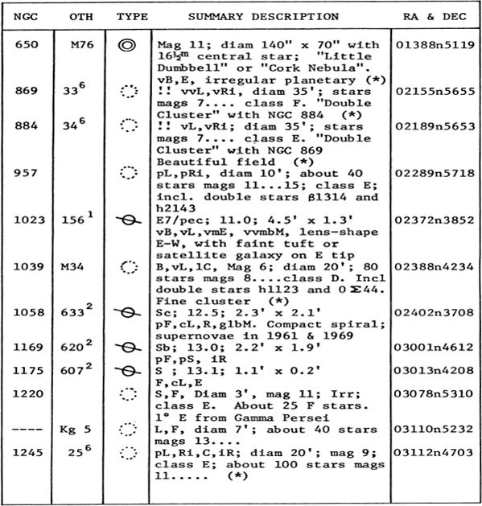

ALPHA
Α
Name– MIRFAK or MARFAK; the star also appears on various star–maps as ALCHEMB or ALGENIB, evidently through some age–old confusion, as the latter name is also given to both Gamma Persei and Gamma Pegasi. Magnitude 1.79; spectrum F5 Ib; position 03207n4941. The star lies in the center of the constellation, and dominates the curving row of stars extending from Eta Persei to Delta and 48 Persei, a pattern often referred to as the “Segment of Perseus”. Alpha is the brightest star in the constellation; the name signifies “The Elbow”.
名称-MIRFAK或MARFAK；这颗恒星还出现在各种恒星图上，如ALCHEMB或ALGENIB，这显然是由于一些古老的混淆，因为后者的名字也被赋予了Gamma Persei和Gamma Pegasi。大小1.79; 频谱F5 Ib; 位置03207n4941。这颗恒星位于星座的中心，并在从Eta Persei到Delta和48 Persei的弯曲的一排恒星中占据主导地位，这种模式通常被称为“ Perseus”。阿尔法（Alpha）是星座中最亮的恒星；名称表示“肘部”。
Like Hercules and Orion, the star pattern of Perseus was identified in many ancient cultures with prominent national heroes or gods. According to Lalande, the Egyptians regarded it as their god khem, while to the Persians it represented Mithras; Biblically minded star–watchers saw it as David with the Head of Goliath, or as St.George slaying the Dragon. The modern name was in use in the days of the classical Greeks, who also referred to the constellation as “The Champion”, “The Rescuer”, or occasionally ‘ , “The Horseman”. The Moorish name Almirazgual is from the Arabic Hamil Ras al Ghul, the “Bearer of the Demon’s Head”. Another Arabic name, kullab, refers to the hero’s weapon, and is probably the source of the Celeub or Chelub of the Almagest and Bayer’s Uranometria.
, “The Horseman”. The Moorish name Almirazgual is from the Arabic Hamil Ras al Ghul, the “Bearer of the Demon’s Head”. Another Arabic name, kullab, refers to the hero’s weapon, and is probably the source of the Celeub or Chelub of the Almagest and Bayer’s Uranometria.
像赫拉克勒斯和猎户座一样，英仙座的星状图案在许多古代文化中都被认为具有突出的民族英雄或神灵。根据拉兰德（Lalande）的说法，埃及人将其视为他们的上帝khem，而在波斯人中，它代表密特拉（Mithras）；听圣经的恒星观察者将其视为戴高利安首领戴维（David）或圣乔治（George）杀死巨龙。现代名称是在古典希腊人时代使用的，他们也将星座称为“冠军”，“救助者”，有时也称为“骑士”。摩尔人名字Almirazgual来自阿拉伯语Hamil Ras al Ghul，“恶魔之头的承担者”。另一个阿拉伯名字kullab，指的是英雄的武器，可能是源Celeub或基绿的的天文学大成和拜耳的测天图。
Perseus in mythology was one of the greatest of the ancient Greek heroes, the great–grandfather of Hercules and traditionally the ancestor of the Persians. Like many other ancient heroes, Perseus was of partly divine parentage; his mother Danae had been visited by Zeus in the form of a shower of gold. Owing to a prophecy that the son of Danae would slay his grandfather, King Acrisius of Argos, both mother and son were imprisoned in a wooden chest and cast into the sea. The chest, however, floated safely to the island of Seriphus, where it was found by the fisherman Dictys, father or brother of King Polydectes of the island. Here Perseus grew to manhood, and to eventually fulfill his destiny.
神话中的珀尔修斯是古希腊最伟大的英雄之一，大力神的曾祖父，传统上是波斯人的祖先。像许多其他古代英雄一样，英仙座也有一部分是神的血统。宙斯以金色的花洒拜访了他的母亲达娜（Danae）。根据预言，达纳埃之子将杀死他的祖父阿戈斯国王阿克里修斯，母子俩被囚禁在一个木制的箱子里，被扔到海里。但是，该箱子安全地漂浮到了塞里普斯岛，那里是渔民迪基斯（Dictys）所发现的，该岛是该岛国王保利德特国王的父亲或兄弟。在这里，英仙座成长为男子气概，并最终实现了他的命运。
It was at the request of Polydectes that Perseus undertook his most famous exploit, the slaying of the fearsome Medusa, one of the three Gorgons whose glance turned men to stone. With the aid of Athena and Hermes, who supplied him with winged sandals, sword, and a helmet of invisibility, Perseus found his way to the realm of the Gorgons on the farthest shores of Oceanus, near the isles of the Hesperides, and slew the monster while looking at her reflection in his polished shield. Another tradition places the lair of the Gorgons in a “sea–girt cave” near Tartessus, the Biblical Tarshish on the southern coast of Spain, west of Gibraltar near modem Cadiz. It was while Perseus was returning from this adventure that he found the princess Andromeda chained to a rock on the Ethiopian coast as a sacrifice to the sea–monster Cetus, sent by the sea god to punish the kingdom for the boastful vanity of Queen Cassiopeia. Gods, even the best of them, seem to lack the most elementary sense of justice; they dispense punishments at random and appear to be quite satisfied as long as someone suffers sufficiently in order to “atone” for the original offense. Perseus rescued Andromeda, destroyed the monster, and, it is to be hoped, warned the vain Cassiopeia to be more careful in the future. Although these events presumably took place on the Ethiopian coast somewhere along the southern shore of the Red Sea, a great rock formation on the Israeli coast near Jaffa (Joppa) is also identified as the site of Andromeda’s rescue. Returning to the court of Polydectes, the hero turned the scheming king and all his noblemen to stone by showing them the Gorgon’s head. Dictys became king of the island, and the head of Medusa was presented to Athena who set it in the center of her shield.
应Polydectes的要求，珀尔修斯（Perseus）进行了他最著名的利用，即杀死了可怕的美杜莎（Medusa），这是三个使人to目结舌的G狼之一。在雅典娜和爱马仕的帮助下，他为他提供了带翅膀的凉鞋，剑和头盔隐身，珀尔修斯找到了通往最遥远的欧西努斯海岸，黑斯佩里德群岛附近的戈贡斯王国的途径，并杀死了怪物，一边看着他在光滑的盾牌上的反射。另一种传统将the实人的巢穴放在西班牙南部海岸的塔特苏斯附近的“海鸥洞穴”中，该塔希什人位于西班牙南部海岸，直布罗陀西部，靠近加的斯。珀尔修斯从冒险之旅中回来时，他发现公主仙女座被拴在埃塞俄比亚海岸的一块岩石上，作为对海怪Cetus的牺牲，由海神派遣来惩罚该国，因为该国因仙后皇后的虚荣虚荣而受到惩罚。众神，即使是其中最好的，似乎也缺乏最基本的正义感。他们会随机分配惩罚，只要有人为了“赎罪”原罪，遭受了足够的苦难。珀尔修斯（Perseus）拯救了仙女座（Andromeda），消灭了这个怪物，并且希望，它警告徒劳的仙后座在未来会更加谨慎。尽管这些事件可能发生在红海南岸某处的埃塞俄比亚海岸，但也将以色列海岸贾法（Joppa）附近的一块巨大岩层确定为仙女座的救援地点。返回Polydectes宫廷，英雄通过向他们展示高尔贡的头颅，将诡计多端的国王及其所有贵族变成了石头。迪基蒂斯成为该岛的国王，美杜莎的头颅被献给雅典娜，雅典娜将其置于盾牌的中央。
According to another tradition, Perseus released the titan Atlas from his wearisome task of holding up the Heavens; he showed the giant the Gorgon’s head, and transformed him into a great rock (the Atlas Mountains) in southwest Morocco. Later, while attending the funeral games of the king of Larissa in Thessaly, Perseus fulfilled the prophecy made at his birth when he unintentionally struck Acrisius with a discus and killed him.
根据另一种传统，珀尔修斯从举起举世无用的繁琐任务中释放了泰坦巨人阿特拉斯。他向巨人展示了org实人的头部，并把他变成了摩洛哥西南部的一块大石头（阿特拉斯山脉）。后来，珀尔修斯在色萨利参加拉里萨（Larissa）国王的葬礼时，履行了他出生时的预言，当时他无意中用铁饼击打了阿克里修斯并杀死了他。
Many of the characters of the Perseus legend appear in the sky as constellations, including Perseus himself, Andromeda, Cetus the Sea–monster, Queen Cassiopeia, and King Cepheus. Perseus is one of the most extensive constellations, stretching from the borders of Cassiopeia to almost the Pleiades in Taurus. He is depicted standing, holding aloft the Medusa’s head with one arm and grasping his sword with the other. In art he usually appears in the same pose, as in the great statue by Benvenuto Cellini, completed about 1554 after nine years of labor, and now in the Piazza della Signoria in Florence. A similar composition by Antonio Canova, created about 1806, is one of the treasures of the Metropolitan Museum of Art in New York. Ancient coin portraits of Perseus are much rarer than those of Hercules; the most striking surviving specimens are the coins of King Perseus of Macedonia, last king of the line of Alexander, and who lost his throne to the Romans in 168 BC. King Perseus evidently regarded himself as a descendant or incarnation of the ancient hero, and had himself so depicted on his coins:
英仙座传说中的许多人物都以星座的形式出现在天空中，包括英仙座本人，仙女座，海怪Cetus，仙后座女王和仙王座国王。英仙座是最广泛的星座之一，从仙后座的边界一直延伸到金牛座的the宿星。他被描绘成站着，一只手高举美杜莎的头，另一只手抓住剑。在艺术中，他通常以相同的姿势出现，就像本韦努托·切利尼（Benvenuto Cellini）的伟大雕像一样，经过九年的工作，大约在1554年完成，现在出现在佛罗伦萨的西奥尼亚广场。安东尼奥·卡诺瓦（Antonio Canova）的类似作品创作于1806年左右，是纽约大都会艺术博物馆的宝藏之一。珀尔修斯的古钱币画像比赫拉克勒斯的更为稀少。幸存下来的最惊人的标本是马其顿国王珀尔修斯的硬币，亚历山大家族的最后一位国王，他在公元前168年将宝座丢给了罗马人。珀尔修斯国王显然将自己视为古代英雄的后代或化身，并在硬币上如此描绘：

THE ALPHA PERSEI GROUP. This scattered cluster forms a splendid group for binoculars. Alpha is the bright star at upper left. Lowell Observatory 5–inch camera photograph.
ALPHA PERSEI集团。这个分散的星团形成了一个出色的双筒望远镜组。阿尔法是左上方的亮星。洛厄尔天文台5英寸照相机照片。
Alpha Persei is a giant star, with an actual luminosity of over 4000 suns; the computed distance is about 570 light years and the absolute magnitude about –4.4. Both Mary Proctor and R.H.Allen have called the color “lilac” though to most modern observers it is merely white or even slightly yellowish. The star shows an annual proper motion of 0.04″ and the radial velocity is about 1 mile per second in approach. Small periodic shifts in the spectral lines have been detected in a cycle of about 4 days; it is not certain whether this indicates that the star is a close binary. In view of the very short period for so large a star, it seems more likely that the cyclic shifts result from pulsations in the atmosphere of a single star.
阿尔法·珀塞（Alpha Persei）是一颗巨大的恒星，其实际光度超过4000太阳。计算出的距离约为570光年，绝对大小约为–4.4。玛丽·普罗克托（Mary Proctor）和RH·阿伦（RHAllen）都称这种颜色为“丁香”，尽管对大多数现代观察者来说，它只是白色，甚至略带黄色。这颗恒星显示出每年0.04英寸的固有运动，进近时径向速度约为每秒1英里。在大约4天的周期内，检测到谱线出现小的周期性变化。尚不确定这是否表明恒星是密闭双星。考虑到这么大的恒星的周期很短，周期移位似乎更可能是由单个恒星大气中的脉动引起的。
Lying directly in the Milky Way, Alpha Persei is the center of a fine field of stars which form a rich and brilliant group for small telescopes; the region appears as a large and scattered cluster even without optical aid, and is truly splendid in good binoculars. Modern studies confirm the reality of this cluster as a true moving group in space. According to O.Heckmann and K.Lubeck (1958) 124 members are now recognized, though the membership of perhaps a dozen are uncertain. In a study made in 1971 by W.W.Morgan, W.A.Hiltner, and R.F.Garrison, 106 stars were accepted as members; the resulting color–magnitude diagram (below) is plotted from their measurements made at the McDonald Observatory. With the exception of Alpha itself, the cluster stars appear to form a well defined main sequence in which the earliest type stars are spectral class B3 with absolute magnitude –1.0, and the latest are about G3 with absolute magnitude about +4.6. The entire group lies about 175 parsecs from the Sun, and is moving about miles per second in the general direction of Beta Tauri or PA about 140°.
Alpha Persei直接位于银河系中，是一小片恒星的中心，这些恒星形成了小型望远镜的丰富而灿烂的一群。即使没有光学辅助装置，该区域也显示为分散的大簇，并且在出色的双筒望远镜中确实非常出色。现代研究确认这个星团是真实的太空移动群体。根据O.Heckmann和K.Lubeck（1958）的研究，现在有124个成员被认可，尽管可能有十几个成员不确定。WWMorgan，WAHiltner和RFGarrison在1971年进行的一项研究中，接受了106星。从麦当劳天文台的测量结果中绘制出最终的色度图（下）。除阿尔法本身外，簇星似乎形成了一个定义明确的主序列，其中最早的恒星是光谱级为B3的绝对幅度为–1.0，最晚的恒星是G3的绝对幅度为+4.6。整个小组距离太阳大约175秒差距，并且在Beta Tauri或PA的大致方向上以约140°的速度每秒移动约数英里。
After Alpha itself, the most prominent members are Psi, 30, 34, 29, and 31 Persei; the bright stars Delta and Epsilon show approximately the same motion. At the present rate of motion, however, the group will require about 90,000 years to change its position by 1° in the sky.
在Alpha之后，最杰出的成员是Psi，30、34、29和31 Persei；明亮的星星Delta和Epsilon显示出大致相同的运动。但是，按照目前的运动速度，该小组将需要大约90,000年的时间才能将其位置在空中改变1°。
BETA
测试版
Name– ALGOL, the “Demon Star”, the most famous of the eclipsing variables. Magnitude 2.15 (variable); Spectrum B8 V; Position 03049n4046. The name is from the Arabic Al Ra’s al Ghul, “The Demon’s Head”. To the writers of classical times the star represented the head of Medusa held by Perseus in the mythological outline of the constellation. This is the Gorgoneum Caput of Vitrivius and the Caput Gorgonis of Hyginus; Manilius, in the days of Augustus, called it Gorgonis Ora. The Hebrews, according to R.H.Allen, knew the star as Rosh ha Satan or “Satan’s Head”, but in some other traditions it is identified with the mysterious and sinister Lilith, the legendary first wife of Adam. On 17th Century maps the star often appears with the label Caput Larvae, “The Spectre’s Head”. Ancient and medieval astrologers considered Algol the most dangerous and unfortunate star in the heavens, which seems to suggest that its strange variability might have been noticed in antiquity; this reasonable conjecture, however, remains unsupported by any other real evidence.
名称-ALGOL，“魔鬼之星”，最著名的蚀变变量。幅度2.15（可变）; 频谱B8 V; 位置03049n4046。该名称来自阿拉伯语Al Ra's al Ghul，“恶魔的头”。对于古典时代的作家来说，在星座的神话轮廓中，恒星代表珀尔修斯（Perseus）持有的美杜莎的头。这是维特里维乌斯的高粱属植物Caput和Hyginus 的高粱属植物山org。在奥古斯都时代，马尼利厄斯（Maniulius）称它为戈尔戈尼斯（Gorgonis Ora）。根据RHAllen所说，希伯来人知道这颗恒星是Rosh ha Satan或“ Satan's Head”，但在其他一些传统中，它被认为是神秘而险恶的Lilith，亚当的传奇第一任妻子。在17世纪的地图上，这颗恒星经常以Caput幼虫的标签出现，“幽灵的头”。古代和中世纪的占星家都认为Algol是天堂中最危险，最不幸的一颗星，这似乎表明它的奇异变异可能在古代就已被发现。但是，这种合理的推测仍然没有任何其他真实证据支持。
In Greek and Roman tradition, Medusa was the most famous of the three Gorgons, the serpent–haired sisters whose glance was literally petrifying, and who, as the bright schoolboy wrote, “looked like women, only more horrible”. The gorgon legend is of very great antiquity, as we find them mentioned in Book II of the Odyssey, which is thought to date from the period of the 9th – 6th centuries BC. The three sisters, it would seem, had been guilty of the same sin as Cassiopeia, and had angered the gods by their excessive vanity. For the next few centuries they found themselves with a great deal of leisure time in which to ponder the mysteries of divine retribution as they rested on the wet sea–rocks of the farthest shores of Oceanus, thoughtfully combing their snakes. Medusa, according to a curious feature of the legend, was the only one of the three who could be killed; her two sisters were immortal. She was eventually slain by the hero Perseus, who avoided the monster’s poisonous glance by looking at her reflection in his polished shield; from the gorgon’s blood sprang forth the winged horse Pegasus, whose strange origin has suggested a flock of allegorical interpretations. Medusa’s head was later presented to Athena, who had it set, as a rather impressive centerpiece, in her shield. The gorgon’s head, about six times natural size, was one of the striking features of the great statue of Athena which once graced the Parthenon at Athens. Although this particular statue vanished centuries ago, the Corfu Museum still displays its own carving of the Medusa (Fig.3) from the west pediment of the Temple of Artemis on Corfu, dating from the early 6th Century BC. This relief resembles most of the early coin portraits of Medusa (Fig.1) which are done in a very stiff and archaic style and portray the snaky enchantress as a hideous monstrosity, complete with fangs and a long protruding tongue. These grotesque representations must be classed among the few real failures of Greek art; to the modern mind they seem about as frightening as a Halloween mask designed by a six–year–old child.
在希腊和罗马的传统，美杜莎是最有名的三个蛇发女妖，蛇头发的姐妹，其一目了然字面上僵化，和谁，如同璀璨的男生写道：“看上去像女人，只有更可怕”。戈贡的传说非常古老，正如我们在《奥德赛》第二卷中提到的那样，据认为可以追溯到公元前9至6世纪。看来这三个姐妹与仙后座一样犯了同样的罪，并因他们的虚荣心激怒了众神。在接下来的几个世纪中，他们发现自己有大量的闲暇时间，在它们沉浸在大洋洲最远的海岸湿润的岩石上，若有所思地梳理着蛇时，他们在思考神圣的报应之谜。根据传说中的一个奇怪的特征，美杜莎是三人中唯一可以被杀死的人。她的两个姐妹是不朽的。她最终被英雄英仙座狼杀死，英仙座天使通过看着他在光滑的盾牌上的反射避免了怪物的毒气。有翼的飞马从戈贡的血中喷涌而出，其奇怪的来历暗示了许多寓言的解释。美杜莎的脑袋后来交给了雅典娜，后者将其设置为在她的盾牌中相当令人印象深刻的核心。戈贡的头部大约是自然尺寸的六倍，是雅典娜巨大的雅典娜雕像的显着特征之一。尽管这个特殊的雕像在几个世纪前就消失了，但科孚岛博物馆仍然展示着自己的美杜莎雕像（图3），该雕像来自科孚岛阿耳emi弥斯神庙的西墙，可追溯到公元前6世纪初。这种浮雕类似于美杜莎的早期硬币肖像（图1）。）以非常僵硬和古朴的风格完成，并将蛇形的女妖刻画成可怕的怪兽，并带有牙和长而突出的舌头。这些怪诞的表现形式必须归入希腊艺术的少数真正失败之中。在现代人看来，它们似乎和一个六岁的孩子设计的万圣节面具一样令人恐惧。
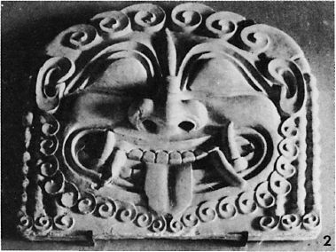


(1) Coins from Neapolis, c.450 BC. (2) Greek Sculpture from Syracuse. (3) Gorgon from Temple on Corfu, 6th Cent. BC. (4) Roman Bronze Pyxis Lid, 1st Cent. AD. (5) The Rondanini Medusa. (6) “Dying Medusa”, National Museum, Rome.
（1）大约公元前450年来自Neapolis的硬币。（2）锡拉丘兹的希腊雕塑。（3）来自第六美分科孚岛神庙的Gorgon。公元前。（4）罗马青铜皮西斯盖，第一分。广告。（5）朗丹尼·美杜莎（Rondanini Medusa）。（6）“死去的美杜莎”，国家博物馆，罗马。
In time, however, the Greeks seem to have learned. By Hellenistic times the Medusa has become a figure of strange and sinister beauty, the prototype perhaps of the supernaturally lovely and infinitely terrifying “witch queen” or “white goddess” who haunts the pages of H.Rider Haggard, A.Merritt, and other writers in the classic “lost civilization” tradition. Edgar Allen Poe, in many of his somber tales, followed the ancient tradition of what might be called the “Medusa syndrome”; that curious but infinitely fascinating juxtaposition of beauty and horror, love and death, and the shadow of inexorable fate; we find it again in the eternal appeal of the story of Cleopatra, and in the Tristan and Isolde legend, the “most splendid love story of the western world”. Shelley, after seeing the famous painting of the Medusa in the Uffizi Gallery, put it into words perhaps as effectively as any poet has ever done:
然而，随着时间的流逝，希腊人似乎已经学会了。在古希腊时代，美杜莎已经成为一个怪异而险恶的美丽人物，它的原型可能是超自然的可爱和无限恐怖的“女巫女王”或“白女神”，他们缠着H.Rider Haggard，A.Merritt等人的书页。经典“迷失文明”传统的作家。埃德加·艾伦·坡（Edgar Allen Poe）在许多阴沉的故事中都遵循了古老的传统，即所谓的“水母综合症”。将美丽与恐怖，爱与死，以及无情的命运阴影并存的好奇而又无限迷人的事物；我们在克娄巴特拉的永恒魅力以及特里斯坦和伊索尔德的故事中再次找到了它传说，“西方世界最灿烂的爱情故事”。雪莱在乌菲齐美术馆（Uffizi Gallery）看了著名的美杜莎（Medusa）画后，把它写成文字的效果可能和任何诗人都一样有效：
“Its horror and its beauty are divine.
Upon its lips and eyelids seem to lie
Loveliness like a shadow, from which shine,
Fiery and lurid, struggling underneath,
The agonies of anguish and of death….”
“它的恐怖和美丽是神圣的。
在它的嘴唇和眼皮上似乎
像是一个阴影般笼罩着可爱，它从
下面闪耀着炽烈而炽烈的光芒，挣扎在下面，
痛苦和死亡的痛苦 ……。”
The painting which inspired these lines was in Shelley’s time attributed to Leonardo da Vinci, but is now thought to be the work of some unidentified member of the school of Caravaggio. Another widely known painting of the Medusa, certainly one of the most repellent works of art in existence, was created by Peter Paul Rubens in the early 17th Century and now graces – or disfigures – a wall of the Kunsthistorisches Museum in Vienna. The ancient Greek vase painters often showed their warriors carrying shields adorned with the figure of the gorgon; Achilles, Patroclus, and other heroes of the Trojan War are depicted in this way.
启发这些线条的那幅画是在雪莱时期归因于达芬奇（Leonardo da Vinci），但现在被认为是卡拉瓦乔学校某个身份不明成员的作品。美杜莎的另一幅广为人知的画作，彼得·保罗·鲁本斯（Peter Paul Rubens）于17世纪初创造了无疑是现有的最令人反感的艺术品之一，如今，它在维也纳艺术史博物馆的墙壁上正装（或变相）。古希腊的花瓶画家经常展示他们的战士们手持装饰着戈贡雕像的盾牌。这样描绘了阿喀琉斯，帕特罗克鲁斯和特洛伊战争的其他英雄。
The much–admired “Rondanini Medusa” (Fig.5) in the Glyptothek in Munich, is one of the most effective “modem” interpretations of the theme, though its actual age is not definitely agreed upon; usually thought to be Hellenistic in style, it could be a later Roman or Renaissance copy. Equally mysterious is the “Dying Medusa” (Fig.6) in the National Museum in Rome, possibly created, according to some scholars, for the great Altar of Zeus at Pergamum in the 3rd Century BC. Even the identification of this haunting portrait as Medusa has been questioned, since the expected serpentine hair is only subtly suggested, if at all. This, however, is equally true of the Rondanini portrait.
尽管并没有明确约定其实际年龄，但在慕尼黑Glyptothek 备受赞誉的“ Rondanini Medusa”（图5）是该主题最有效的“现代”解释之一。通常被认为是古希腊风格的，可能是后来的罗马或文艺复兴时期的副本。同样神秘的是罗马国家博物馆中的“垂死的美杜莎”（图6），据一些学者称，它可能是为公元前3世纪的佩加格姆的宙斯大祭坛而创建的。甚至连这个令人难以忘怀的肖像都被认为是美杜莎，也遭到了质疑，因为即使有的话，也只能巧妙地暗示出预期的蛇形头发。然而，隆达尼尼的肖像也是如此。
The gorgon’s head was an immensely popular subject in Greek and Roman art, and appears on ancient amulets and talismans, wall reliefs, coins, household objects, and on ornate sarcophagi well up into the Middle Ages. Joan Evans of St.Hugh’s College, Oxford, in the book Magical Jewels of the Middle Ages and the Renaissance (1922) stated that “the majority of extant Roman camei are carved with the prophylactic head of Medusa”, and that English manuscripts of the High Gothic period refer to the use of the gorgon’s head on magical engraved gems. A 12th Century manuscript in the collection of the Bodleian Library contains the following intriguing passage:
戈贡的头部是希腊和罗马艺术中非常流行的主题，并且出现在古代护身符和护符，墙壁浮雕，硬币，家用物品以及直到中世纪的华丽石棺上。牛津大学圣休学院的琼·埃文斯（Joan Evans）在《中世纪与文艺复兴的魔法珠宝》（1922年）一书中指出：“现存的大多数罗马驼色都是用美杜莎的预防性头部雕刻而成的”，高哥特时期指的是在雕刻的魔法宝石上使用戈贡的头部。Bodleian图书馆藏书中的12世纪手稿包含以下有趣的段落：
“Borallus vel Corallus vocatur lapis quidam qui valet ad incantaciones et derisiones et iras si in eo sit nomen hoc nocticula scultum et serpens scilicet gorgon et valet scilicet ad omnes inimicos, et ad victoriam et plagam et pavorem…”
“ Borallus vel Corallus vocatur lapis quidam qui valet ad incantaciones et derisiones et iras si eo situum et hoc nocticula scultum et serpens scilicet gorgon et valet scilicet ad omnes inimicos，ad victoriam et plagam …
One who engraves the name and form of the gorgon on a gem of coral, according to this text, will receive magical protection against injury and the attack of enemies.
一个谁刻的名字和珊瑚宝石芡实的形式，根据这段文字，会收到反伤神奇的保护和敌人的攻击。
Algol is one of the most famous variable stars in the sky, and its name seems to suggest that the light changes were known to the medieval Arabs. The first definite statement on the matter, however, was made by the Italian astronomer Geminiano Montanari of Bologna, about 1667. Although both Maraldi and Palitzsch confirmed the occasional fading of the star, the regularity of the period was first determined in 1782 by John Goodricke; he suggested that the periodic dimming might be attributed to the partial eclipse of the star by a dark companion revolving about it. Thus did astronomers become aware of the existence of “eclipsing binaries”. The theory was generally accepted, but remained a hypothesis until 1889 when H.C.Vogel at Potsdam proved it to be true by spectroscopic analysis. Algol is the most suitable object of its type for amateur observations, as the light changes may be readily followed with no optical aid whatever. The star is normally of magnitude 2.1 but at intervals of 2.86739 days it fades away to magnitude 3.4 and then slowly brightens again. The entire eclipse lasts some 10 hours; the exact period between minima is 2d 20h 48m 56s.
阿尔高（Algol）是天空中最著名的变星之一，它的名字似乎暗示着光的变化是中世纪阿拉伯人所知道的。然而，关于此事的第一个明确声明是由波洛尼亚的意大利天文学家Geminiano Montanari于1667年左右做出的。尽管Maraldi和Palitzsch都确认了这颗恒星偶尔会褪色，但这一时期的规律性是由John Goodricke于1782年首次确定的; 他建议周期性的变暗可能是由于恒星绕着它旋转而产生的部分月蚀。这样，天文学家就意识到了“黯淡的双星”的存在。该理论已被普遍接受，但一直是一种假设，直到1889年波茨坦的HCVogel通过光谱分析证明它是正确的。Algol是同类产品中最适合业余观察的对象，因为在没有任何光学辅助的情况下，可以轻松跟踪光线变化。该恒星通常为2.1级，但以2.86739天的间隔消失到3.4级，然后再次缓慢变亮。整个月食持续约10个小时；极小值之间的确切间隔是2d 20h 48m 56s。

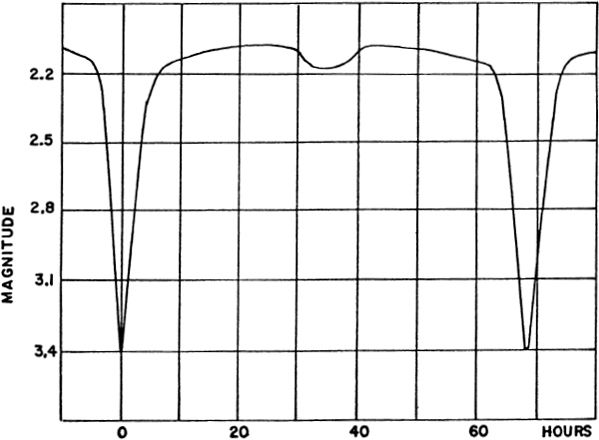
At a distance of about 100 light years, Algol is one of the nearest of all the eclipsing binaries, and has certainly been one of the most thoroughly studied. Yet the star still presents certain puzzles which await solution. One difficulty is the invisibility of the eclipsing component; completely lost in the glare of the bright primary, it has never been seen visually, and was detected spectroscopically for the first time as recently as 1978, at the McDonald Observatory. From the combined results of studies of the light curve, radial velocity measurements, and the combined spectra, our present picture of the system may be summarized as follows:
在大约100光年的距离内，Algol是所有日食双星中最接近的之一，并且无疑是最深入研究的双星之一。然而，这颗恒星仍然呈现出一些谜团，等待解决。一个困难是遮盖部分的隐身性。完全消失在明亮原色的眩光中，从视觉上从未见过，最近在1978年，在麦当劳天文台首次在光谱上进行了检测。从光曲线研究，径向速度测量结果和组合光谱的综合结果来看，我们目前对系统的了解可归纳如下：
The primary star is a white B8 main sequence star about 100 times the solar luminosity, and close to 2.6 million miles in diameter. The mass of the star is not definitely determined, but is most probably between 3½ and 4 times the solar mass. The “dark” companion is known to be relatively dark only by comparison to the primary; actually it must be a half magnitude or so brighter than the Sun. The diameter is slightly over 3 million miles. From the computed size and luminosity the spectral type is most probably late G or early K. The mass is uncertain, but is not likely to be much greater than 1 solar mass. This fainter star seems to have the characteristics of a typical subgiant.
主星是一颗白色B8主序星，大约是太阳光度的100倍，直径接近260万英里。恒星的质量并不确定，但很可能介于太阳质量的3½至4倍之间。仅与主要对象相比，已知“黑暗”伙伴相对较暗。实际上它必须比太阳亮半个数量级。直径略超过300万英里。从计算出的大小和光度来看，光谱类型很可能是G晚期或K早期。质量是不确定的，但不可能大于1个太阳质量。这颗微弱的恒星似乎具有典型亚巨星的特征。
The orbit of the bright star is well determined from spectroscopic studies, and it is found that the bright star is just over a million miles from the center of gravity of the system. The faint star, being less massive, has a larger orbit around the gravitational center, and the true separation of the two stars is probably about 6½ million miles, center to center. From spectroscopic studies the eccentricity of the system is about 0.033, and the inclination about 82°. At primary eclipse, approximately 79% of the bright star is hidden by the larger companion. A slight secondary minimum midway between the eclipses, is noticeable on the light curve, and is produced when the companion is partly eclipsed by the bright primary. Thus the relative luminosities may be deduced from the derived orbit and the relative depths of the two minima; this makes it evident that the companion is not really a “dark” star at all.
明亮的恒星的轨道是由光谱研究确定的，发现明亮的恒星距离系统重心仅一百万英里。较弱的恒星质量较轻，绕重力中心具有较大的轨道，而两颗恒星之间的真正分离可能是距中心约6千5百万英里。根据光谱研究，系统的偏心率约为0.033，倾斜度约为82°。在初蚀时，较大的同伴将大约79％的明亮恒星隐藏起来。在月食之间的次要最小中间距离，在光曲线上很明显，当伴星部分被明亮的初次食入时产生。因此，可以从导出的轨道和两个极小值的相对深度推导出相对光度。

ECLIPSE OF ALGOL, March 15, 1977. The star appears near minimum (top) and at normal light (below). Photographed by R.Burnham, Jr., with a 1.7–inch Xenar lens.
1977年3月15日，阿尔高（ELGIPSE OF ALGOL）。该恒星出现在最小值附近（顶部）和法线光线（下面）。由小R.Burnham摄影，并配有1.7英寸Xenar镜头。
According to a study by G.Hill, J.V.Barnes, J.B. Hutchings, and J.A.Pearce of the Dominion Astrophysical Observatory (1971), the masses and luminosities for the components of the Algol system are close to the values in the following table:
根据Dominion天体物理观测站的G.Hill，JVBarnes，JB Hutchings和JAPearce的研究（1971年），Algol系统各组成部分的质量和光度接近下表中的值：
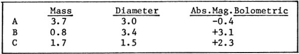
In another study, made with the 100–inch reflector, A.S.Meltzer of Princeton University derived the results given below:
在另一项使用100英寸反射镜进行的研究中，普林斯顿大学的ASMeltzer得出以下结果：
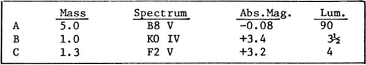
The discrepancy in the derived masses is partly due to the uncertainty in the exact distance; measured parallaxes range from 0.03″ to about 0.041″, giving a range of from 101 light years down to about 79. Algol shows a very small annual proper motion, less than 0.01″; the radial velocity is about 2.5 miles per second in recession with large variations.
推导质量的差异部分是由于精确距离的不确定性所致。测量的视差范围从0.03英寸到约0.041英寸，范围从101光年到约79光年。Algol显示很小的年度固有运动，小于0.01英寸；在衰退中径向速度大约为每秒2.5英里，变化很大。
Some additional facts of interest appear from a study of the light curve. It will be noticed that the light is not constant at maximum, but continues to rise slowly after the end of primary eclipse, reaching a peak just before the slight secondary eclipse. This is explained as a reflection effect; the faint star reflects light from the primary and shows moon–like phases as it revolves in its orbit. The “full moon” phase must obviously come when the fainter star is seen beyond the brighter one, so that the whole illuminated face is turned toward the earth. This moment comes just before and after secondary eclipse, so it is naturally at this time that the combined light of the system is at a maximum. A study of this effect shows that the faint star appears about 1.7 times brighter on the side turned toward the primary.
从光曲线的研究中可以发现一些有趣的事实。将会注意到，光的最大值不是恒定不变的，而是在一次主要食期结束后继续缓慢上升，并在轻微次要食源期之前达到峰值。这被解释为反射效果。昏暗的恒星反射来自原初的光，并在其绕轨道旋转时显示出类似于月亮的相位。显然，当看到较暗的恒星超出较亮的恒星时，“满月”阶段必定到来，以便使整个照亮的面孔转向地球。此刻恰好在次蚀前后，因此自然而然，此时系统的组合光最大。对这种效应的研究表明，昏暗的恒星朝向主恒星的一侧出现的亮度大约是它的1.7倍。


ALGOL, photographed with the 13–inch camera at Lowell Observatory on January 27 and 28, 1965. The star appears at normal light (top) and at primary minimum (below).
ALGOL，于1965年1月27日至28日在洛厄尔天文台用13英寸相机拍摄。该恒星出现在正常光线下（顶部），而出现在初等最小值处（下方）。
Another effect, called limb darkening, also slightly alters the form of the light curve. Limb–darkening is the result of the greater thickness of the star’s atmosphere lying along the line of sight at the rim of the disc; this causes the disc of any star to appear brighter in the center than at the edge. Since the limb of a star is occulted first during a stellar eclipse, the loss of light at first appears gradual, but grows increasingly more rapid as the brighter central portion of the disc is hidden. The light curve of an eclipsing binary shows this effect.
另一种效应，称为肢体变黑，也会稍微改变光曲线的形式。边缘变暗是由于恒星大气层沿视盘边缘的视线更厚所致。这会导致任何星星的圆盘在中心比在边缘显得更亮。由于在恒星月食时首先掩盖了恒星的肢体，所以光的损失起初似乎是逐渐的，但由于隐藏了光盘的较亮的中央部分，因此逐渐变得越来越快。日食双星的光曲线显示了这种效果。
Algol has been identified as a source of radio energy by C.M.Wade and R.M.Hjellming at the National Radio Astronomy Observatory in Green Bank, Virginia. They state that the radio emission is “best described as erratic, with occasional periods of strong flaring and long quiescent periods”. The authors suggest that the radio flares are possibly the result of sudden changes in the stellar structure, best described as “starquakes”. “The sudden energization of a large and very hot thermal plasma would be the basic source of the typical radio flares”. Radio emission has also been detected from red giant stars, as Betelgeuse and Antares, as well as from red dwarf flare stars of the UV Ceti type.
弗吉尼亚州格林布克国家射电天文台的CMWade和RMHjellming已将Algol确定为无线电能来源。他们指出，无线电发射“最能形容为不稳定的，偶有强烈的爆发期和较长的静止期”。作者认为，无线电耀斑可能是恒星结构突然变化的结果，最好形容为“星震”。“大而热的热等离子体的突然通电将是典型无线电耀斑的基本来源”。还从红色巨星（例如Betelgeuse和Antares）以及从UV Ceti类型的红色矮星耀斑恒星中检测到无线电辐射。
DISTANT COMPONENTS OF THE ALGOL SYSTEM. The fact that the Demon Star is not a simple two–star system was recognized as early as 1869. For nearly a century it has been noticed that the period of the eclipsing pair is subject to small but definite changes. Modem studies show that the major axis is gradually changing its orientation in space in a period of about 32 years; an analysis of this effect proves the existence of a third star in the system, and the possibility of a fourth companion has been suspected.
ALGOL系统的远程组件。早在1869年，人们就认识到“恶魔之星”不是一个简单的两星系统。近一个世纪以来，人们一直注意到，日食对的时期会发生微小但确定的变化。现代研究表明，主轴在大约32年的时间内逐渐改变其在空间中的方向。对这种影响的分析证明了系统中存在第三颗恒星，并且已经怀疑有第四颗伴星的可能性。
The third star, called “Algol C”, has now been detected spectroscopically, and has the characteristics of an F–type star of the main sequence. It appears to be at least a magnitude brighter than our Sun, and is definitely more luminous than the “dark” star of the eclipsing pair. It revolves about the AB pair in a period of 1.862 years, at a distance of about 50 million miles. P.van de Kamp finds that the orbit of the third star is not in the same plane as the eclipsing pair; a study in 1951 gave the inclination as about 63° with considerable uncertainty. The orbit of the A–C system is also more eccentric (about 0.21) than the eclipsing pair.
第三颗恒星，称为“ Algol C”，现已在光谱上被检测到，并具有主要序列的F型恒星的特征。它看起来至少比我们的太阳亮一个数量级，并且绝对比日食对的“暗”星发光。它在1.862年的时间内围绕AB对旋转，距离约5000万英里。范·德·坎普（P.van de Kamp）发现，第三颗恒星的轨道与日食对不在同一平面上。1951年的一项研究给出了大约63°的倾斜度，并且存在很大的不确定性。相对于日食对，AC系统的轨道也更偏心（约0.21）。
Of the suspected fourth star, Algol D, little is known, except that the period about the system has been calculated at about 188 years. Studies in 1971, however, cast some doubt on the reported perturbations from which this figure was derived, and there appears to be no definite evidence that the fourth body actually exists.
在可疑的第四颗恒星Algol D中，鲜为人知，但有关该系统的周期已计算为约188年。然而，1971年的研究使人们对所报道的扰动产生了怀疑，该扰动是由此数字衍生出来的，似乎没有确凿的证据表明第四体确实存在。
EVOLUTION OF THE ALGOL BINARIES. A peculiar feature of the Algol system, shared by other binaries of the type, is that the fainter and less massive component has evolved to the subgiant stage, while the primary remains a main sequence object. This is an evolutionary paradox, for if the stars are of the same age, it should be the brighter and more massive star which evolves more rapidly.
2002年第02期二进制双数的演化。该类型的其他二进制文件共享的Algol系统的一个特殊功能是，较弱且质量较轻的组件已演化到次要阶段，而主要组件仍是主要序列对象。这是一个进化悖论，因为如果恒星的年龄相同，那么它应该是更明亮，质量更大的恒星，并且演化得更快。
Fred Hoyle has suggested an interesting and plausible solution. He assumes that the fainter star was originally the more massive and luminous of the pair. As it began its evolutionary expansion, it lost great quantities of matter to the close companion. It thus grew fainter as it evolved to the subgiant stage. At the same time the companion grew more brilliant as the result of its increased mass. The small separation of an Algol–type binary makes this interpretation seem quite logical, and it is fairly evident that a similar sequence of events is occurring also on systems of the Beta Lyrae type. (Refer also to Beta Lyrae, U Cephei, and U Sagittae)
弗雷德·霍伊尔（Fred Hoyle）提出了一个有趣而合理的解决方案。他认为，较暗的恒星原先是这对恒星中质量更大且发光的。当它开始进化扩展时，它失去了很多物质给亲密的同伴。因此，随着它发展到亚足阶段，它变得越来越微弱。同时，同伴由于体重增加而变得更加聪明。Algol型二进制文件的微小分隔使这种解释看起来很合乎逻辑，而且很显然，在Beta Lyrae类型的系统上也发生了类似的事件序列。（另请参阅Beta Lyrae，U Cephei和U Sagittae）
Observers of Algol will find tables giving predicted times of minima in the yearly Handbook of the British Astronomical Association; predictions for each month are also carried in Sky and Telescope magazine.
阿尔戈尔（Algol）的观察者将在英国天文学协会的年度手册中找到列出预测最小时间的表格；《天空和望远镜》杂志还提供了每个月的预测。
GAMMA
伽玛
Magnitude 2.91; Spectrum G8 III and A3 V; Position 03012n5319. The star is labeled “Algenib” on some star charts, but this name is also given to both Alpha Persei and Gamma Pegasi. The star is thought to be about 150 light years distant, but there is some uncertainty, as the distance derived from a direct parallax is about double the value found from the luminosity criteria. The total absolute magnitude, from the spectral types, should be about –0.4; the annual proper motion is less than 0.01″; the radial velocity is about 1 mile per second in recession.
大小2.91；频谱G8 III和A3 V; 位置03012n5319。在某些恒星图上，该恒星被标记为“ Algenib”，但同时也为Alpha Persei和Gamma Pegasi赋予了这个名称。人们认为这颗恒星的距离约为150光年，但存在一定的不确定性，因为从直接视差得出的距离大约是从发光度标准得出的值的两倍。来自光谱类型的总绝对量级应约为–0.4；年度适当运动小于0.01“；在衰退中，径向速度约为每秒1英里。
Gamma Persei is a very close and difficult binary star with an orbital period of 14.647 years; the orbit was originally determined spectroscopically, but it may be seen as a visual pair in large telescopes when at greatest separation, about 0.4″. The widest separation occurs in 1954, 1969, 1983, etc.; the apparent orbit is a nearly edge–on ellipse, with the true separation varying from 3 AU (1947) up to about 20 AU (1954). D.B.McLaughlin, in his detailed study of the system, found the following values for mass, luminosity, etc:
伽玛·波斯（Gamma Persei）是一颗非常紧密且困难的双星，其轨道周期为14.647年。该轨道最初是由光谱确定的，但在最大间隔约为0.4英寸时，它可以看作是大型望远镜中的视觉对。最广泛的分离发生在1954、1969、1983等。视在轨道几乎是边缘椭圆形，真正的间隔从3 AU（1947）到大约20 AU（1954）不等。DBMcLaughlin在对系统进行详细研究时，发现以下质量，亮度等值：

The primary of the system thus resembles the brightest component of Capella, while the fainter star closely matches Sirius. A third star, at 57″ and magnitude 11, is not known to be a true physical companion to the system.
因此，系统的主要部分类似于Capella的最亮部分，而较暗的恒星则与Sirius紧密匹配。不知道第三颗恒星为57英寸，震级为11，是该系统的真正物理伴侣。
About 4° north of Gamma Persei is the radiant point of the very dependable Perseid Meteors, which reach their maximum each year on August 10––12. The Perseids are celestial debris from the Swift–Tuttle Comet (1862 III), but seem to be so evenly distributed around the orbit that the number remains very nearly the same from year to year; at maximum about 60 per hour may be expected. The comet itself has a computed period of about 120 years, with a probable uncertainty of several years either way. The Perseids are sometimes called The Tears of Saint Lawrence in honor of the early Christian martyr whose feast day is August 10.
高度可靠的英仙座流星的辐射点位于伽玛波斯星以北约4°，每年8月10日至12日达到最高点。英仙座是来自斯威夫特-塔特彗星（1862 III）的天体残骸，但似乎在轨道上分布均匀，每年的数量几乎保持不变。最高每小时大约60个。彗星本身的计算周期约为120年，而两种方式的不确定性可能都为数年。英仙座有时被称为“圣劳伦斯之泪”，以纪念节日为8月10日的早期基督教烈士。
DELTA
三角洲
Magnitude 3.00; Spectrum B5 III; position 03394n4738, about 3½° SE of Alpha Persei. The star is a bluish giant over 1700 times more luminous than our Sun (absolute magnitude –3.3) and lies at a computed distance of about 590 light years. Delta Persei seems to show about the same space motion as the Alpha Persei group and may be a member of that aggregation. The annual proper motion is 0.05″; the radial velocity is 5½ miles per second in approach.
大小3.00; 频谱B5 III; 位置03394n4738，大约Alpha Persei的东南3½°。这颗恒星是一颗蓝色的巨人，比我们的太阳发光（绝对强度–3.3）高1700倍，位于大约590光年的计算距离内。三角洲Persei似乎显示出与Alpha Persei组大约相同的空间运动，并且可能是该集合的成员。年度适当运动为0.05英寸；进近时径向速度为每秒5½英里。
Variations in the ultraviolet emission of this star have been detected by the 0A0–2 satellite in July 1971. According to M.R.Molnar of the Laboratory for Atmospheric and Space Physics, “although these observations are insufficient to determine the exact period and nature of the photometric variations, the amplitude is on the order of 0.03 magnitude and the period may be around one day”.
1971年7月，0A0-2卫星检测到了该恒星紫外线发射的变化。据大气与空间物理实验室的MRMolnar称，“尽管这些观察结果不足以确定光度学变化的确切周期和性质，振幅约为0.03量级，周期可能约为1天。”
EPSILON
爱普生
Magnitude 2.88; Spectrum B0 or B1 V; position 03545n3952, about 8° east of Algol. Epsilon Persei is another B–type giant star, some 2500 times more luminous than our Sun (absolute magnitude –3.7) and lying at a computed distance of about 680 light years. The star shows an annual proper motion of 0.04″; the radial velocity is less than 1 mile per second in approach.
大小2.88; 频谱B0或B1 V; 位置03545n3952，位于Algol以东约8°的位置。Epsilon Persei是另一颗B型巨星，其发光强度是我们太阳的2500倍（绝对大小–3.7），其计算出的距离约为680光年。恒星显示每年的适当运动量为0.04英寸；进近时径向速度小于每秒1英里。
For the small telescope, the star is a visual double with an 8th magnitude companion lying about 9″ distant. Webb calls the colors “greenish and bluish–white” while E.J.Hartung finds them “pale yellow and slate–coloured”; the spectral type of the faint star is B8. This is a common motion pair, but has shown no definite change in separation or PA since the early measurements of F.G.W.Struve in 1832. The projected separation is about 2000 AU. “Not an easy double” says C.E.Barns. Although lying some 10° from the Alpha Persei group, Epsilon shows about the same space motion, and is probably an outlying member of that large aggregation. The primary star is also a spectroscopic binary of uncertain period.
对于小型望远镜，该恒星是一个视觉双星，其第8级伴星位于约9英寸远的地方。韦伯称这些颜色为“绿色和蓝白色”，而埃哈顿则认为它们为“淡黄色和石板色”。暗星的光谱类型是B8。这是一个常见的运动对，但自1832年FGWStruve的早期测量以来，分离度或PA并未显示出明确的变化。预计的分离度约为2000 AU。CEBarns说：“这不容易。” 尽管与Alpha Persei组相距约10°，但Epsilon表现出大致相同的空间运动，并且可能是该大型聚集体的外围成员。主星也是不确定周期的光谱双星。
ZETA
ZETA
Magnitude 2.83; Spectrum B1 Ib; position 03510n3144, in the Foot of Perseus, about 8° north of the Pleiades cluster in Taurus. This is one of the most luminous stars in Perseus and lies at an estimated distance of about 1000 light years; the actual luminosity is about 6300 times that of the Sun, and the computed absolute magnitude about –4.7. Zeta Persei shows an annual proper motion of 0.02″; the radial velocity is 13 miles per second in recession.
大小2.83; 频谱B1 Ib；位于珀尔修斯山脚下的位置03510n3144，位于金牛座the宿星团以北约8°的位置。这是英仙座中最发光的恒星之一，估计位于约1000光年的距离。实际光度约为太阳的6300倍，计算出的绝对光度约为–4.7。Zeta Persei的年度正常运动为0.02英寸；在衰退中，径向速度为每秒13英里。
For the small telescope the star has several faint companions; the 9th magnitude star at 12.9″ seems to share the proper motion of the primary, though the projected separation is about 4000 AU. Webb calls the colors greenish white and ashy. If the derived distance is correct, the faint star has about 13 times the luminosity of the Sun; no spectrum appears to have been obtained for the companion.
对于小型望远镜，恒星有几个微弱的伴星。尽管预计的间隔约为4000 AU，但12.9英寸处的9级星似乎共享了原初的正确运动。韦伯称这种颜色为绿白色和灰白色。如果得出的距离正确，那么这颗昏暗的恒星的亮度约为太阳的13倍；似乎没有为同伴获得频谱。
Zeta Persei is the brightest member of the stellar association “II Persei”, an expanding group of bright 0 and B stars which appear to be moving outward from a common center at a velocity of about 12 km/sec. It would seem that this group must be exceedingly young on the astronomical time–scale, since expansion to the present size would have required scarcely more than a million years. The Zeta Persei group is thus of great interest to astronomers who are specializing in problems of stellar formation and evolution. Among the brighter members of the group are Omicron Persei, Xi Persei, 40 and 42 Persei, the double star ∑448, and about 15 other stars brighter than 6th magnitude. The expansion of the group is illustrated by the diagram on page 1422, where the length of the arrows represents the motion for each star for the next half–million years; the diagram is based on a study by A.Blaauw at Palomar. Known members of the Zeta Persei group extend over an area about 100 light years in diameter.
Zeta Persei是“ II Persei”恒星协会中最明亮的成员，这是一个由0和B明亮恒星组成的扩展组，它们似乎以大约12 km / sec的速度从一个共同的中心向外移动。在天文时间尺度上，这个群体似乎必须非常年轻，因为要扩展到现在的规模几乎不需要一百万年。因此，Zeta Persei小组对专门研究恒星形成和演化问题的天文学家非常感兴趣。在该组最亮的成员中，有Omicron Persei，Xi Persei，40和42 Persei，双星∑448和大约15个比6级更亮的星。第1422页的图表说明了该组的扩展，其中箭头的长度表示接下来的50万年中每颗恒星的运动。该图基于帕洛玛（Palomar）的A.Blaauw的研究。Zeta Persei小组的已知成员遍布直径约100光年的区域。

ZETA PERSEI REGION. Zeta is the brightest star on the print; Xi Persei and the nebula NGC 1499 are at the top. Lowell Observatory 5–inch camera photograph.
ZETA PERSEI地区。Zeta是版画上最亮的星星；Xi Persei和星云NGC 1499位于顶部。洛厄尔天文台5英寸照相机照片。
Some very conspicuous nebulosity still exists in the group, implying that star formation may not be completely ended in this region of space. Omicron Persei is involved in the faint cloud IC 438; the star itself is a B–type ellipsoidal variable and also has a close visual companion. Xi Persei, on the north edge of the association, is the earliest type star in the group with a spectral class of 07e; it also appears to be the illuminating star for the huge “California Nebula” NGC 1499 which lies just to the north and which evidently shares the outward expansion of the group. A difficult object visually, the nebula extends over a 2½° field, and shows much filamentary detail on redsensitive long exposure photographs.
该组中仍然存在一些非常明显的星云，这意味着恒星形成可能不会在该空间区域中完全结束。Omicron Persei参与了微弱的云IC 438；恒星本身是B型椭圆形变量，并且具有紧密的视觉伴侣。协会北缘的西珀塞（Xi Persei）是该光谱组中最早的类型恒星，光谱等级为07e。它也似乎是巨大的“加利福尼亚星云” NGC 1499的照明之星，NGC 1499位于北部，显然与该群体的向外扩张有共同点。从视觉上看，这是一个困难的物体，星云在2½°的视野上延伸，并在长时间曝光的红色感光照片上显示出许多丝状细节。
The position of the mysterious disappearing star SZ Persei is about 2.6° to the NNW of Zeta Persei. (See page 1426)
神秘消失的恒星SZ Persei的位置与Zeta Persei的NNW约2.6°。（请参阅第1426页）
RHO
RHO
Magnitude 3.30; Spectrum M4 II or III; position 03020n3839, about 2¼° south of Algol and slightly west. The star is a semi–regular variable resembling Alpha Herculis; a primary cycle of about 33 days is given in the Yale Catalogue of Bright Stars (1964) while the Moscow Variable Star Catalogue reports a probable period of about 40 days. At least one much longer cycle of about 1100 days seems to be involved. The variations, never very sudden, have a total amplitude of about 0.7 magnitude in the visual. From a direct parallax measurement, Rho Persei appears to be some 260– 300 light years distant, which gives it a mean absolute magnitude of close to –1. The annual proper motion is 0.17″ in PA 129°; the radial velocity is about 17 miles per second in recession.
大小3.30; 频谱M4 II或III; 位置03020n3839，位于阿尔高（Algol）以南约2¼°，略西。恒星是类似于Alpha Herculis的半规则变量。耶鲁大学“亮星”目录（1964年）给出了大约33天的主要周期，而莫斯科可变星目录报告的大概周期大约为40天。似乎涉及至少一个更长的约1100天的周期。这些变化从来不会非常突然，在视觉上总振幅约为0.7。通过直接视差测量，Rho Persei似乎相距约260-300光年，这使其平均绝对值接近–1。PA 129°的年度固有运动为0.17英寸；在衰退中，径向速度约为每秒17英里。

THE CALIFORNIA NEBULA. This is NGC 1499, which lies at the north edge of the Zeta Persei Association. Photographed in red light with the Lowell Observatory 13–inch camera.
加利福尼亚星云。这是NGC 1499，位于Zeta Persei协会的北端。洛厄尔天文台13英寸相机在红光下拍摄。
Rho Persei shows very nearly the same space motion as the interesting binary Zeta Herculis. Dr.O.J.Eggen has made a search for other possible members of this group and and has identified about a dozen stars which appear to show the same motion, including Iota Reticuli, Beta Hydri, TV Piscium, 84 Virginis, Phi–1 Lupi, and Epsilon Octantis. As the presumed members are scattered well around the sky the reality of such a “group” remains questionable.
Rho Persei展示了与有趣的二进制Zeta Herculis几乎相同的空间运动。OJEggen博士搜寻了该组中其他可能的成员，并鉴定出大约十二颗似乎表现出相同运动的恒星，包括Iota Reticuli，Beta Hydri，TV Piscium，84 Virginis，Phi–1 Lupi和Epsilon Octantis。由于假定的成员散布在天空周围，因此这种“团体”的现实仍然值得怀疑。
SZ
深圳
Suspected nova. Position 03439n3410, about 1° ENE from 40 Persei, and some 10° due north of the Pleiades in Taurus. This is the star BD+33°715, which appears on the BD charts (1862) as an object of magnitude 9.5. On a photograph made in October 1891 it could not be found, but was seen again at about 10th magnitude in 1894. In 1908 it had apparently vanished once more. Aside from these few observations, virtually nothing is known about this star, which may be a recurrent nova or an erratic type of variable. No star brighter than 14th magnitude exists at this position on plates made from 1959 to 1976.
疑似新星。位置03439n3410，距Persei 40约1°ENE，距金牛座the宿星以北约10°。这是BD + 33°715星，在BD图表（1862）上显示为9.5级的天体。在1891年10月拍摄的照片上找不到它，但在1894年再次以大约10级的高度被看到。在1908年，它显然又消失了。除了这些很少的发现外，关于这颗恒星几乎一无所知，这可能是复发的新星或不稳定的变星。从1959年到1976年制作的平板上，此位置上没有比14级更亮的恒星。

Nova Persei 1901. Position 03278n4344, about 4½° NE of Algol. The first bright nova of the 20th Century, first noticed on February 21, 1901, by the amateur astronomer T.D.Anderson of Edinburgh, Scotland. At that time the star was of the 2nd magnitude, but within 2 days it had increased its light more than 6 times, and attained its maximum brilliancy of magnitude 0.2 on February 23.
Nova Persei1901。位置03278n4344，Algol约4½°NE。1901年2月21日，苏格兰爱丁堡的业余天文学家TD安德森首次注意到这是20世纪的第一颗明亮新星。当时的恒星为2级，但在2天之内它的光照增加了6倍以上，并在2月23日达到0.2级的最大亮度。
The new star began to fade almost immediately, and had fallen to magnitude 2 by February 28. It dropped about 4 magnitudes in the first three weeks, then began a peculiar series of oscillations with a perid of about 4 days and an amplitude of about 1.5 magnitudes. Sir Robert Ball of the University Observatory at Cambridge gave an amusing account of his experiences during the oscillation phase of Nova Persei; one night he went out on his lawn to show some visitors the new star but it had disappeared from view; two nights later he invited other friends to “observe the star which had disappeared” but when they looked, there it was “as large as life”. Two nights later other visitors were invited to see the star that had apparently come to life again so miraculously, but it had disappeared once more!
新星几乎立即开始衰落，到2月28日降到2级。在开始的三周内它下降了约4级，然后开始了一系列奇特的振荡，周期约为4天，振幅约为1.5数量级。剑桥大学天文台的罗伯特·鲍尔爵士生动地讲述了他在新星波赛时期的经历。一天晚上，他在草坪上向参观者展示了这颗新星，但它已经消失了。两天后，他邀请其他朋友“观察消失的星星”，但是当他们看时，那颗星星“就像生命一样大”。两天后，邀请其他游客参观这颗看起来很神奇的恒星，但是它又一次消失了！
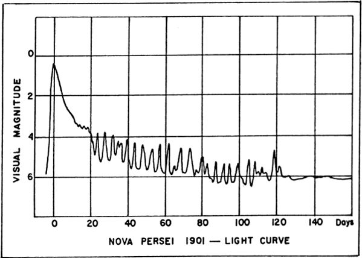
NOVA PERSEI Identification Chart, from a 13–inch telescope plate made at Lowell Observatory. The circle is 1° in diameter with north at the top; stars to about 14m are shown.
NOVA PERSEI识别表，来自洛厄尔天文台制造的13英寸望远镜板。圆的直径为1°，顶部为北。显示的星长约为14 m。
About four months after maximum the oscillations ceased and the star, then at 6th magnitude, faded slowly from sight.
Previous photographs of the region of Nova Persei showed that the star had been a 13th magnitude object up to three days before the outburst. At the maximum it was some 200,000 times more luminous than our Sun, an increase of 13 magnitudes in only a few days. The computed distance of the star was about 1300 light years which implies an absolute magnitude of about –8.4 at the peak brightness.
之前，新星佩尔塞地区的照片显示，在爆发前三天，该恒星是第13级的天体。最多，它的发光量是太阳的200,000倍，仅几天就增加了13个数量级。计算出的恒星距离约为1300光年，这意味着在峰值亮度时的绝对量约为–8.4。
A few months after the appearance of the nova, photographs were taken which showed a faint area of luminosity surrounding the star; this nebulous aura was probably first noticed by Dr.Max Wolf at Heidelberg in the spring of 1901. Successive plates revealed that this nebulosity was growing at the astonishing rate of about 2″ per day, an expansion which, at the assumed distance of the star, corresponded to a speed about equal to the velocity of light! Evidently the light of the nova was merely illuminating a dark nebula which had already existed, and the apparent expansion of the nebula was actually due to the light of the star traveling outward. From an analysis by P.Couderc (1939) it seems that the illuminated nebula probably had the form of a thin sheet of material oriented “flat–side–on” as seen from the Earth and lying slightly closer to us than the star itself. Such a “light echo” seems to be unique among novae, though several diffuse nebulae show rapid changes which seem to be attributable to a similar process. NGC 2261 in Monoceros (Hubble’s Variable Nebula) is probably the most notable case.
在新星出现几个月后，拍摄了照片，显示出恒星周围有一个微弱的发光区。这种星云状的光环可能最早是由1901年春天在海德堡的麦克斯·沃尔夫博士注意到的。连续的板块显示，这种星云以每天约2英寸的惊人速度增长，在假定的恒星距离处膨胀，相当于大约等于光速的速度！显然，新星的光只是照亮了已经存在的暗星云，而星云的明显膨胀实际上是由于恒星向外传播的光所致。根据P的分析。Couderc（1939）看来，被照亮的星云可能是从地球上看时定向成“平侧朝上”的薄薄材料形式，并且比恒星本身更靠近我们。这种“光回声”似乎在新星中是独特的，尽管几个弥散星云显示出快速的变化，这似乎是由于类似的过程所致。Monoceros（哈勃的可变星云）中的NGC 2261可能是最值得注意的情况。

Almost 15 years after the outburst, the actual nebular shell around Nova Persei finally became visible; its appearance in 1949 is shown in the photograph on page 1431. This shell is a portion of the outer layers of the star, blown off into space during the explosion at a velocity of about 750 miles per second. The existence of this shell was known from spectroscopic analysis, and it was expected to eventually become visible in the telescope. Similar nebular shells were photographed surrounding Nova Aquilae 1918 and Nova Herculis 1934; these resemble the planetary nebulae superficially, but are rather short–lived phenomena, usually vanishing after a few years. A peculiar fact about the shell of Nova Persi was its unsymmetrical appearance, suggesting that the matter had been ejected chiefly from one hemisphere of the star. Still expanding slowly, the cloud is now gradually fading; the expansion rate has been fairly uniform at about 0.4″ per year.
爆发后将近15年，终于可以看见新星Persei周围真正的星状壳了。它在1949年的外观显示在第1431页的照片中。该壳是恒星外层的一部分，在爆炸过程中以每秒750英里的速度吹入太空。从光谱分析中知道了该壳的存在，并有望最终在望远镜中看到它。在1918年的新天鹰座和1934年的新星大力士周围拍摄了类似的星状壳；这些在表面上类似于行星状星云，但是是短暂的现象，通常在几年后消失。关于Nova Persi壳的一个奇特事实是它的不对称外观，表明该物质主要是从恒星的一个半球弹出的。还在缓慢扩张，云正在逐渐消失；扩张速度一直相当稳定，每年约0.4英寸。
GK Persei still shows the largest light variations of any of the former novae which have been thoroughly studied. It is usually a 13th magnitude object, but may brighten to nearly 11.0 or fade to 14.0; there does not appear to be any regular periodicity. The star has been quite active in recent years; in August 1966 it rose to 11th magnitude, with another short outburst in September 1967. After an erratic period of oscillations it faded to 13th magnitude but in January 1975 rose again to 12.0 over the short interval of 6 days. The color of the star is equivalent to class 0 or early B, with emission features; the star may be classed as a subdwarf but not a true white dwarf; the absolute magnitude is near +5.
GK Persei仍然显示出经过全面研究的任何新星中最大的光变体。它通常是13级的物体，但可能增亮到接近11.0或褪色到14.0。似乎没有任何定期性。近年来，这颗星星非常活跃。1966年8月升至11级，在1967年9月又一次短暂爆发。经过一段不稳定的波动期后，它退至13级，但1975年1月又在短短6天之内再次升至12.0。恒星的颜色相当于0级或早期B级，具有发射特征；这颗恒星可以被归类为亚矮星，而不是真正的白矮星；绝对大小接近+5。

NOVA PERSEI 1901. The nebulous shell is well shown in this photograph made with the 200–inch reflector at Palomar, almost 50 years after the outburst of the star.
NOVA PERSEI1901。这张照片很好地展示了星云，这是用200英寸反射镜在帕洛玛拍摄的，距恒星爆发近50年。
Observers with adequate telescopes will find it rewarding to follow any future variations of GK Persei. The identification field on page 1429 shows a 15’ area centered on the star, with stars to about 16th magnitude shown. Comparison magnitudes, courtesy of the AAVSO, are given with decimal points omitted to avoid confusion with star images; thus “137″ indicates a magnitude of 13.7.
配备足够望远镜的观察员会发现，跟随GK Persei的任何未来变型都是有益的。第1429页的标识字段显示了一个以恒星为中心的15'区域，其中恒星的大小约为16级。为了避免与星图混淆，AAVSO提供了比较幅度，省略了小数点。因此“ 137”表示幅度为13.7。
The most important discovery about novae in recent years has been the finding that some of the post–nova stars are close and rapid binaries. Nova Herculis 1934 was the first to be so identified; the period is a mere 4.65 hours. Nova Aquilae 1918 is a similar system with a period of about 3h 20m. GK Persei now joins the list of former novae recognized as double stars; the period is 1.904 days but the components, in this case, do not appear to form an eclipsing binary system. R.P.Kraft (1963) found the spectrum composite, consisting of a “blue continuum with emission lines of hydrogen, helium, ionized oxygen, and the absorption lines of a late–type star”; the derived spectral types are sdBe and about K2 IV, with computed masses of at least 1.29 and 0.56 respectively. From its color, luminosity and mass, the explosive blue component would appear to have a density of several hundred times that of the Sun, nowhere near the density of a true white dwarf. Refer also to Nova Aquilae 1918, Nova Herculis 1934, Nova Puppis 1942, Nova Pictoris 1925, and Nova Cygni 1975. Eruptive “dwarf novae” are described chiefly in the articles on SS Cygni and U Geminorum; for recurrent novae see T Corona Borealis, RS Ophiuchi, and WZ Sagittae)
近年来，关于新星的最重要发现是发现某些后新星是近距离和快速双星。1934年的新星大力士（Nova Herculis）是第一个被发现的人。周期仅为4.65小时。Nova Aquilae 1918是一个类似的系统，周期约3h 20m。GK Persei现在加入了被认为是双星的前新星的名单；周期为1.904天，但在这种情况下，组件似乎没有形成黯淡的二进制系统。RPKraft（1963）发现了光谱复合物，它由“蓝色连续体组成，具有氢，氦，离子化氧的发射谱线和晚型恒星的吸收谱线”；推导的光谱类型为sdBe和大约K2 IV，计算质量分别至少为1.29和0.56。从颜色，亮度和质量来看，爆炸性的蓝色成分的密度似乎是太阳的数百倍，远不及真白矮星的密度。还可以参考Nova Aquilae，1918，Nova Herculis，1934，Nova Puppis，1942，Nova Pictoris，1925和Nova Cygni，1975。有关复发新星的信息，请参阅北极光T，电蛇RS和蛇蝎WZ）
M34
M34
(NGC 1039) Postion 02388n4234. A bright open star cluster easily located about 5° WNW from Algol, near the Perseus–Andromeda border. This is one of Charles Messier’s discoveries, found in August 1764, and entered in his famous catalgue as “a cluster of small stars a little below the parallel of Gamma Andromedae; in an ordinary telescope of 3 feet one can distinguish the stars… its position was determined by Beta Persei….diameter 15′ Bode in 1774 found M34 visible to the naked eye under good conditions, and T.W.Webb called it “a very grand low power field; one of the finest objects of its class”. To Admiral Smyth it was “a scattered but elegant group…8– –13 mag on a dark ground; several of them form coarse pairs”. The experienced observer Walter Scott Houston calls this a rather sparse cluster and finds it “not more spectacular in large telescopes, as it does not seem to have the needed fainter stars to buttress the view. Rather I feel that 15 × 65 binoculars give the best impression.………more magnification merely spreads out the few bright stars that the binoculars show perfectly well”.
Bode in 1774 found M34 visible to the naked eye under good conditions, and T.W.Webb called it “a very grand low power field; one of the finest objects of its class”. To Admiral Smyth it was “a scattered but elegant group…8– –13 mag on a dark ground; several of them form coarse pairs”. The experienced observer Walter Scott Houston calls this a rather sparse cluster and finds it “not more spectacular in large telescopes, as it does not seem to have the needed fainter stars to buttress the view. Rather I feel that 15 × 65 binoculars give the best impression.………more magnification merely spreads out the few bright stars that the binoculars show perfectly well”.
（NGC 1039）位置02388n4234。一个明亮的开放星团，很容易位于距英仙座（Algol）西北约5度的地方，靠近英仙座-仙女座边界。这是查尔斯·梅西耶（Charles Messier）的发现之一，于1764年8月发现，并以“一群位于比伽玛Andromedae平行线以下的小恒星；在一个3英尺的普通望远镜中，可以分辨恒星……它的位置由贝塔·佩尔塞决定……直径15'鲍德在1774年发现M34在良好条件下肉眼可见，TWWebb称其为“非常大的低功率场；同类中最好的物体之一”。对史密斯海军上将来说，这是“一个分散而又优雅的团体……在黑暗的地面上有8-13磁石；其中几个形成粗对。” 经验丰富的观察员沃尔特·斯科特·休斯顿（Walter Scott Houston）称其为稀疏星团，并发现它“在大型望远镜中并不更加壮观，因为它似乎没有所需的较暗恒星来支撑视线。相反，我觉得15×65的双筒望远镜给人留下最好的印象。…………放大倍数只会散布双筒望远镜表现得很好的几颗明亮的星星。”
STAR CLUSTER M34 in PERSEUS. This bright group lies about midway between Algol and Gamma Andromedae. Lowell Observatory photograph with the 13–inch camera.
PERSEUS中的STAR CLUSTER M34。这个明亮的群体大约位于Algol和Gamma Andromedae之间。洛厄尔天文台用13英寸相机拍摄的照片。
In general appearance, brightness and size, M34 resembles the cluster M36 in Auriga; both clusters appear at their best with fairly low power wide–angle eyepieces. The central knot of bright stars measures about 9′ in size and the total diameter of the group may be about 20′. A study by A.Wallenquist, however, has identified probable members out to more than 20′ from the cluster center; his estimate for the star density at the center is about 21 stars per cubic parsec. Some 80 stars are presently recognized as true cluster members; the brightest of these are several white giants of spectral type B8 and apparent magnitude 8½; each of these stars has about 60 times the solar luminosity. H.L.Johnson (1957) in a photometric study of M34 derived a true modulus of 8.2 magnitudes, giving the distance as 1430 light years. A somewhat greater distance of about 1500 light years was obtained by Wallenquist; the true diameter of the 9′ central mass is then about 4 light years, and the extreme diameter of the whole group about 18 light years. Color–magnitude studies of the cluster seem to imply that it is a somewhat older group than the famous Pleiades or M36; the current estimate of age is slightly over 100 million years.
在外观，亮度和大小上，M34类似于奥里加（Auriga）的星团M36。两个聚光镜均以功率较低的广角目镜呈现最佳状态。明亮恒星的中央结的大小约为9'，该星团的总直径可能约为20'。然而，沃伦奎斯特（A.Wallenquist）进行的一项研究已经确定了距离聚类中心20'以上的可能成员。他对中心恒星密度的估计约为每立方秒21颗恒星。目前大约有80颗恒星被认为是真正的星团成员。其中最亮的是光谱类型为B8且视星等为8½的几个白色巨人。这些恒星中的每一个都具有约60倍的太阳光度。HLJohnson（1957）在对M34的光度研究中得出了8.2量级的真实模量，得出的距离为1430光年。Wallenquist获得了大约1500光年的更大距离。那么9'中心质量的真实直径约为4光年，而整个组的极端直径约为18光年。对星团的色度研究似乎暗示它比著名的P宿星或M36年龄稍大。目前的年龄估计略超过一亿年。
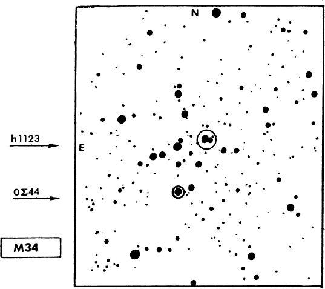
The easy double star hll23 lies in the heart of the cluster, and is identified at the center of the chart on page 1434. This fixed white pair has a separation of 20″ with magnitudes both close to 8½. A more difficult pair is 0∑44, about 6′ to the SSE; it has a fixed separation of 1.3″ with possibly a slight decrease in PA since the early measurements of 1850. The spectral type is about B9.
容易的双星hll23位于星团的中心，并在第1434页的图表中央被识别。这对固定的白色对具有20英寸的距离，其大小都接近8½。较难配对的是0∑44，距SSE大约6'；自1850年早期测量以来，它的固定间距为1.3英寸，PA可能会略有下降。光谱类型约为B9。
M76
M76
(NGC 650) Position 01388n5119. Faint planet ary nebula, usually called the “Little Dumbbell” or the “Barbell” Nebula. It is located in the extreme western portion of the constellation, a little less than a degree NNW from Phi Persei, and about 8° SW of the great Perseus Double Cluster. Often regarded as the faintest of the Messier objects, M76 is also one of the more irregular examples of a planetary nebula and appears as a roughly rectangular or box–shaped mass measuring about 2′ x 1′. The appearance is fairly similar to the brightest portion of the “Dumbbell Nebula” M27 in Vulpecula; hence the popular name. In the NGC catalogue it was listed as two objects and often appears in modem lists as NGC 650 and 651.
（NGC 650）位置01388n5119。昏暗的行星状星云，通常称为“小哑铃”或“杠铃”星云。它位于该星座的最西端，距离皮尔波斯（Phi Persei）仅NNW度，并且距英仙座双星团约8°SW。M76通常被认为是梅西埃天体中最薄弱的一个，也是行星状星云中较不规则的例子之一，表现为大小约为2'x 1'的大致矩形或盒形质量。外观与Vulpecula的“哑铃状星云” M27的最亮部分非常相似。因此得名。在NGC目录中，它被列为两个对象，通常在调制解调器列表中显示为NGC 650和651。
Discovery of M76 is credited to P.Mechain in September 1780; Charles Messier found it some 6 weeks later and thought that it might be comprised of “small stars containing nebulosity…. the least light employed to illuminate the micrometer wires causes it to disappear”. T.W.Webb found it a “pearly–white nebula, double, a curious miniature of M27 and, like it, gaseous….the preceding portion a little brighter”. Lord Rosse thought to find some hint of a spiral structure with “subordinate nodules and streamers” but Isaac Roberts in 1891 suggested that the appearance was probably that of a broad ring seen edge–wise.
1780年9月，发现M76归功于P.Mechain；查尔斯·梅西耶（Charles Messier）大约在6周后发现了它，并认为它可能由“含星云的小恒星组成……”。照亮千分尺导线的最少光导致它消失。” TWWebb发现它是“珍珠白色的星云，是双重的，是M27的一个奇特的缩影，并且像它一样，是气态的…………前一部分要亮一些”。Rosse勋爵想找到一些带有“从属结节和流光”的螺旋结构的暗示，但1891年Isaac Roberts提出，其外观可能是从边缘看去的宽环。


PLANETARY NEBULA M76 in PERSEUS. An example of a planetary which lacks the usual disc shape. The photographs were made at Lowell Observatory (top) and at Palomar (below).
英仙座行星状星云M76。缺少通常的圆盘形状的行星齿轮的示例。这些照片是在洛厄尔天文台（上）和帕洛玛（下）制作的。
Long exposure photographs show that the nebulous filaments seen by Lord Rosse, which project outward from the four corners of the rectangular central mass, are not portions of a spiral pattern, but instead form parts of great arcs or loops which encircle the main structure.
长时间曝光的照片显示，从矩形中央质量块的四个角向外突出的罗塞勋爵看到的星云状长丝不是螺旋形图案的一部分，而是形成了环绕主体结构的大弧形或环状部分。
According to Lick Publications XIII, the nebula is “quite irregular, but evidently to be included as one of the larger members of the planetary class. The central and brighter portion…. is an irregular, patchy oblong 87″ X 42″ in PA 40° from the ends of which faint, irregular, ring–like wisps extend; total length 157″ in PA 128° brightest patch at southern end of central part”. Various observers rate the central star as magnitude 16, 16½, or 17; the Skalnate Pleso Catalogue gives it as 16.6, and the total integrated light of the nebula is given as 12.2.
根据里克出版物十三，星云“非常不规则，但显然被列为行星类中较大的成员之一。中央和较亮的部分…。是一个不规则的，不规则的，椭圆形的椭圆形87“ X 42”，PA 40°，从其末端延伸出微弱的，不规则的，环状的小束。中心部分最南端的PA 128°最亮片中的总长度为157英寸”。各种观测者将中央恒星的等级定为16、16½或17。Skalnate Pleso Catalog将其定为16.6，星云的总积分光定为12.2。
As with virtually all the planetary nebulae, the exact distance is not well determined. C.R.O’Dell (1963) gives a rather precise figure of 537 parsecs or about 1750 light years; I.S.Shklovsky (1961) obtained 820 parsecs; the Skalnate Pleso catalogue has 2510, while L.Kohoutek (1961) has 1070. O’Dell’s value for the distance would give the nebula an actual diameter of about 1 light year and a total luminosity of 2 to 3 times that of the Sun. The central star, from these results, must have an absolute magnitude of about +8, or about 0.07 the solar luminosity. B.A. Voroncov–Vel’jaminov (1948) derived a much larger distance for the nebula of about 2000 parsecs; this would increase the luminosity of the central star to about that of the Sun. The star is, however, one of the hottest known, with a computed temperature of about 60,000°K. Radial velocity measurements indicate a speed of approach of about 15 miles per second. (A general outline of facts and theories about the planetary nebulae will be found in the article on M57 in Lyra)
与几乎所有的行星状星云一样，确切的距离还不确定。CRO'Dell（1963）给出了537帕秒或大约1750光年的相当精确的数字。ISShklovsky（1961）获得820秒差距；Skalnate Pleso目录中有2510，而L.Kohoutek（1961）的距离为1070。奥德尔的距离值将使星云的实际直径大约为1光年，总光度为太阳的2至3倍。根据这些结果，中心星必须具有大约+8的绝对大小，或者太阳光度的大约0.07。BA Voroncov–Vel'jaminov（1948）得出了大约2000秒差距的星云更大的距离。这将使中央恒星的光度增加到大约太阳的光度。然而，恒星是已知最热的恒星之一，计算出的温度约为60,000°K。径向速度测量表明接近速度为每秒15英里。（有关天文星云的事实和理论的概述可在天琴座的M57文章中找到）
NGC 869
NGC 884
NGC 869
NGC 884
Mean Position 02172n5654. This is the famous “Double Star Cluster” in Perseus, one of the truly classic examples of a galactic cluster, and a wonderfully beautiful object for moderate telescopes. Among the all–time favorites for amateur observers, it may be seen without optical aid as a hazy patch of light about midway between the stars of Perseus and the familiar “W” figure of Cassiopeia. A small telescope reveals that this luminous spot consists of two fine open star clusters together in the field, the pair forming one of the most impressive and spectacular objects in the entire heavens. In the mythological outline of the constellation it marks the “Sword Handle” of Perseus and is often identified on star atlases by the inconsistent designation “h – X” Persei. The cluster called “h” is NGC 869, and “X” is NGC 884.
平均位置02172n5654。这是珀尔修斯著名的“双星星团”，是银河星团真正经典的例子之一，也是中型望远镜的绝妙物体。在业余观察者的历来最爱中，没有光学辅助的情况下，它可能会被视为在珀尔修斯星与熟悉的仙后座“ W”形星体之间的朦胧光线。一架小型望远镜揭示了这个发光点由两个细小的开放星团组成，它们在野外聚集在一起，构成整个天堂中最令人印象深刻和最壮观的物体之一。在星座的神话轮廓中，它标志着英仙座的“剑柄”，通常在星图集上以不一致的名称“ h – X” Persei来标识。名为“ h”的群集是NGC 869，而“ X”是NGC 884。
A low power wide–angle eyepiece with a field of about 1° is needed in order to get both clusters together in the field of view. A power of 15X is suitable on a 2–inch glass and 30X on a six–inch. With an 8–inch or 10–inch, powers of 40X or 50X may be used. Short focus telescopes of the RFT or “rich–field” design are excellent on objects of this type. W.T.Olcott considered this the finest cluster for a small telescope in the heavens. “The field is simply sown with scintillating stars, and the contrasting colors are very beautiful”. The present writer remembers a night in the autumn of 1963 when he attached a wide–angle Erfle eyepiece to the 13–inch refractor at Lowell Observatory, in order to show the Double Cluster to a group of friends; the view was absolutely dazzling (with brilliant rainbow flares around every star image, since the 13–inch is actually an astrographic camera and is not corrected for use as a visual objective!)
为了使两个聚类在视场中聚在一起，需要一个低功率的广角目镜，其视场约为1°。在2英寸的玻璃上适合使用15倍的功率，在6英寸的玻璃上适合30倍的功率。对于8英寸或10英寸，可能会使用40倍或50倍的功率。RFT或“富视场”设计的短焦距望远镜非常适合此类物体。WTOlcott认为这是天上小型望远镜的最佳组合。“田地上只布满了闪烁的星星，对比的颜色非常漂亮”。本作者记得1963年秋天的一个夜晚，他在洛厄尔天文台的13英寸折射镜上安装了广角Erfle目镜，以便向一群朋友展示双星团。风景绝对令人眼花（乱（每颗恒星图像周围都闪耀着耀眼的彩虹，
THE DOUBLE STAR CLUSTER IN PERSEUS. This splendid group contains some of the most brilliant stars known. Eight–inch reflector photograph by Kent de Groff.
英仙座的双星团。这个灿烂的星团包含一些已知的最灿烂的恒星。肯特·德格罗夫（Kent de Groff）的八英寸反射镜照片。
The existence of the Perseus clusters was noted at least as far, back as 150 BC; Hipparchus and Ptolemy both mention the group, but refer to it as a “nebula” or “cloudy spot”, one of the half dozen then recognized. The actual nature of such objects remained a mystery until the invention of the telescope. Another mystery, incidentally, lies in the fact that this splendid object was never included by Charles Messier in his famous catalogue, although it was certainly known in his day, and he included other bright clusters such as Praesepe and the Pleiades.
至少早在公元前150年就注意到了英仙座星团的存在。Hipparchus和Ptolemy都提到了该小组，但称其为“星云”或“阴云点”，当时仅有五分之一。在望远镜发明之前，这类物体的实际性质仍然是个谜。顺便提一句，另一个谜团是，虽然这个迷人的物体从未被查尔斯·梅西耶（Charles Messier）列入他的著名画册，尽管在他的时代肯定是众所周知的，而且他还包括了其他明亮的星团，如Praesepe和Pleiades。
Among the early photographs of the Double Cluster is a fine plate made by Isaac Roberts with his 20–inch reflector in January 1890. In describing the result, Roberts stated that “the photograph presents to the eye the stars in the two clusters and in the surrounding part of the sky with a completeness and accuracy of detail never before seen.....an appearance of grandeur that can only be fully realized by aid of the photographic method. Any written description will convey only a very inadequate idea of it. The stars are shown in their true relative positions and magnitude to about the 16th, and among them are many apparent double, triple, and multiple stars. They also appear to be arranged in clusters, curves, festoons and patterns that are suggestive of some physical connection between the groups..... Again, we see that these clusters appear to be quite free from nebulosity, and therefore, by this hypothesis, are anterior in time to any of the other nebulae or clusters which have been referred to. We seem to be thus on the way, by the aid of photography, to an intelligible classification of some of the stages in the evolution of the Universe, but of course we must proceed with due caution….”
在双星团的早期照片中，有一个由艾萨克·罗伯茨（Isaac Roberts）于1890年1月用他的20英寸反射镜制作的精美板。在描述结果时，罗伯茨说：“这张照片向人们展示了两个星团和星团中的恒星。围绕天空的一部分，具有前所未有的细节完整性和准确性.....一种宏伟的外观，只有借助摄影方法才能完全实现。任何书面描述都只会传达一个非常不足的想法。显示的恒星的真实相对位置和大小大约为16星，其中有许多明显的双星，三星和多星。它们似乎还排列成簇，曲线，花彩和图案，暗示着群体之间的某种物理联系。我们看到这些星团似乎完全没有星云，因此，根据这一假设，这些星团的出现时间早于所提及的任何其他星云或星团。因此，借助于摄影，我们似乎正在对宇宙演化的某些阶段进行清晰的分类，但是当然我们必须谨慎行事……”
In a short description of the Double Cluster, published in the Harvard Annals in 1908, I.S.Bailey gave the apparent diameter of each cluster as 30′; in a star count reaching to the 12th magnitude, he found some 400 stars in NGC 869 and about 300 stars in NGC 884. As early as 1913, W.S.Adams and A.van Maanen had measured the radial velocity of the cluster and found it to be about 26 miles per second in approach. The stars chosen for radial velocity measurements were bright B and A stars displaying the so–called “c” characteristic, unusually sharp spectral lines, now known to be one of the identifying features of the supergiants. Astronomers began to realize that the Double Cluster was an object of exceptional interest. During the past 30 years it has been one of the most intensively studied clusters in the heavens.
在1908年在《哈佛年鉴》上发表的“双星团”的简短描述中，ISBailey给出了每个星团的表观直径为30'。在一颗恒星数达到12级时，他发现了大约400颗恒星NGC 869和NGC 884中的约300颗恒星。早在1913年，WSAdams和A.van Maanen就测量了星团的径向速度，发现它的进近速度约为每秒26英里。被选作径向速度测量的恒星是明亮的B和A恒星，它们具有所谓的“ c”特征，异常清晰的光谱线，现在被认为是超巨星的识别特征之一。天文学家开始意识到双星团是一个特别令人感兴趣的对象。在过去的30年中，它一直是天堂中研究最深入的星团之一。
The distance of the great swarm of stars cannot be measured directly, since it is too remote to show the slightest measurable parallax. In a spectroscopic study the bright members are found to be supergiants of types A, B, and 0; stars of exceedingly great luminosity which must be at a vast distance in order to appear as faint as they do. These stars may be used as “standard headlights” but the problem is complicated by the necessity of correcting the observations for some loss of light due to absorption by dust in space. Although there is no visible nebulosity in the immediate vicinity of the cluster, the surrounding region is heavily mottled with irregularly distributed dust clouds. These show plainly on some of Dr.E.Barnard’s fine Milky Way photographs. Current evidence suggests that the light of the cluster stars is dimmed by about 1.6 magnitudes by interstellar material.
大群恒星的距离无法直接测量，因为它太远而无法显示出最小的可测量视差。在光谱研究中，发现亮成员是A，B和0型的超巨星。具有极大光度的恒星，它们必须相距很远才能看起来像它们一样微弱。这些恒星可以用作“标准头灯”，但由于需要对观测结果进行校正，以纠正由于空间中的尘埃吸收而导致的部分光损失，从而使问题变得复杂。尽管在星团的附近没有可见的星云，但周围区域杂乱无章，分布着尘埃云。这些清晰地显示在E.Barnard博士的精美银河系照片中。目前的证据表明，簇状星的光暗了约1。
In a thorough study of the cluster, H.L.Johnson and W.A.Hiltner (1955) found the corrected modulus to be about 11.8 magnitudes; the resulting distance is about 7400 light years. This result is in fairly good agreement with the estimate of about 8000 light years given by Harlow Shapley some 25 years earlier. Supporting this distance determination is another result obtained though a different line of inquiry; the investigation of the structure of our Galaxy. The Sun is located in one of the spiral arms of the system, and the Perseus cluster, the nucleus of a great swarm of giant stars, would seem to mark the next spiral arm going outward, away from the galactic center. The distance of the Perseus cluster is estimated by this method to be some 7000 to 8000 light years. Here we may use our Sun as a comparison object. At a distance of 7400 light years it would appear as a star of magnitude 16.6; if actually in the Perseus cluster it would, of course, be further dimmed by dust in the intervening space, and would appear about 18.2. Star no brighter than our Sun are thus very difficult to detect at the distance of the cluster, and even fainter stars are completely out of range. The bright members, which present such a glittering spectacle in the small telescope, are all great blazing supergiants of almost unimaginable brilliance.
HLJohnson和WAHiltner（1955）在对星团进行了彻底的研究后，发现校正后的模量约为11.8。由此产生的距离约为7400光年。这个结果与25年前Harlow Shapley给出的大约8000光年的估计非常吻合。支持这一距离确定的是通过不同的查询途径获得的另一个结果。对我们银河系结构的研究。太阳位于系统的一个旋转臂中，而珀尔修斯星团（一个巨大的恒星群的核）似乎标志着下一个旋转臂向外移动，远离银河系中心。用这种方法估计英仙座星团的距离约为7000至8000光年。在这里，我们可以将Sun作为比较对象。在7400光年的距离上，它看起来像是一颗16.6级的恒星。如果实际上是在英仙座星团中，它当然会由于中间空间的尘埃而进一步变暗，并出现在18.2左右。因此，在团簇的距离很难检测到比我们的太阳还亮的恒星，甚至更暗的恒星也完全不在范围内。明亮的成员在小型望远镜中呈现出如此闪闪发光的景象，它们都是几乎无法想象的光辉灿烂的超级巨星。
THE DOUBLE CLUSTER IN PERSEUS. The two splendid star groups are just half a degree apart. Lowell Observatory photograph made with the 13–inch camera.
珀尔修斯的双重集群。两个灿烂的恒星群相距仅半度。洛厄尔天文台用13英寸相机拍摄的照片。
According to studies by Johnson, Morgan and Hiltner the 10 brightest cluster members have the following magnitudes and spectra:
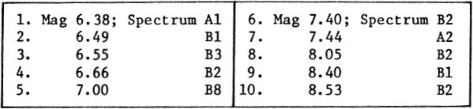
All these stars are A & B type supergiants with absolute magnitudes ranging from –7.3 to –4.9; these figures have been corrected for a light loss of 1.6 magnitudes by absorption in space. The brightest stars of the cluster thus have luminosities approaching 60,000 times that of the Sun, and are comparable to such supergiants as Rigel in the Orion Association. There are 17 other stars in the central portions of the clusters which have absolute magnitudes brighter than –2. In addition, both clusters are embedded in a vast swarm of giant stars forming an association about 7° x 5° in size, or several hundred light years in diameter and containing over 100 early type stars of spectral types 0, B, and A, The absolute magnitudes of these stars range from –3.3 to about –7.5.
所有这些恒星都是A＆B型超巨星，其绝对大小范围为–7.3至–4.9；这些数字已通过空间吸收被校正为1.6级的光损失。因此，星团中最亮的恒星的光度接近太阳的60,000倍，可与猎户座协会的里格尔这样的超级巨星相媲美。在星团中心部分还有17个恒星，其绝对大小比–2亮。此外，这两个星团都镶嵌在庞大的巨型恒星群中，形成约7°x 5°或直径几百光年的关联，并包含100多个光谱类型为0，B和A的早期恒星，这些恒星的绝对数量级范围从–3.3到大约–7.5。
A very interesting feature of the Perseus clusters is the presence of M–type red supergiant stars, a number of which may be detected in amateur telescopes. Herschel, D’Arrest, Smyth, Rosse, and Webb all recorded their presence, and T.E.Espin in 1892 listed nine of them down to magnitude 10.5. According to Espin, there are three red stars in NGC 884, none in NGC 869, four lying between the clusters, and two in the outlying regions. In a list of M– type supergiants near the Double Cluster, V.M.Blanco (1955)published magnitudes and spectra for 17 such stars. These ranged in brightness from magnitude 7.6 to 9.2, with spectral classes from MO to M5. The brightest star on this list has an absolute magnitude of about –5.7 and a luminosity of some 15,000 suns, comparable to Betelgeuse in Orion. Among other red supergiants lying within a few degrees of the cluster, and believed to be probable members, are the pulsating variables S, T, RS, SU, and YZ Persei, all with semi–regular variations.
英仙座星团的一个非常有趣的特征是存在M型红色超巨型恒星，其中一些可能在业余望远镜中被发现。Herschel，D'Arrest，Smyth，Rosse和Webb都记录了它们的存在，而TEEspin在1892年列出了其中的9种，直到10.5级。根据Espin的说法，NGC 884中有三颗红星，NGC 869中无三颗星，四颗位于星团之间，而两颗位于外围区域。在双簇附近的M型超级巨人列表中，VMBlanco（1955）发表了17颗这样的恒星的星等和光谱。它们的亮度范围为7.6至9.2，光谱等级从MO到M5。该清单上最亮的恒星绝对星等约为–5.7，光度约为15,000个太阳，与猎户座的贝特尔吉斯相当。位于星团几度范围内的其他红色超巨星（被认为是可能的成员）是脉动变量S，T，RS，SU和YZ Persei，均具有半规则变化。
To modem astronomers, these are important objects which have much to teach us about stellar evolution. The highly luminous supergiants are “spendthrift stars” which cannot maintain their enormous energy output for very long and must have been formed relatively recently. If we plot the members by magnitude and color on the familiar H–R diagram, we find that some of the most luminous stars, near absolute magnitude –7.5, are still main sequence stars. At the same time we see that some of these objects have already evolved to the red giant stage and now populate the upper right section of the diagram. These are evidently stars of exceptionally large mass which were the first cluster members to begin their evolution. In the beautiful “Jewel Box” cluster NGC 4755 in Crux we find an identical situation. These two clusters are apparently quite identical in type and age, and rank among the youngest star groups yet identified. Although an estimated age of only about one million years has been quoted frequently in astronomical texts, current research (1976) suggests that both of these clusters may be several times that age. There is also some evidence that the two portions of the Double Cluster are not exactly the same age, and possibly do not form a truly physical pair.
对于现代的天文学家来说，这些都是重要的物体，它们对我们恒星的演化有很多启示。超级发光的超级巨人是“节约之星”，它们不能长时间维持其巨大的能量输出，因此必须在最近才形成。如果我们在熟悉的H–R图上按大小和颜色绘制成员，我们会发现一些绝对亮度约为7.5的最发光的恒星仍是主序星。同时，我们看到其中一些对象已经演化为红色巨人阶段，现在填充在该图的右上部分。这些显然是质量特别大的恒星，是最早开始进化的星团成员。在Crux美丽的“珠宝盒”星团NGC 4755中，我们发现了相同的情况。这两个星团在类型和年龄上显然是完全相同的，并且在目前确定的最年轻的恒星群中排名。尽管在天文文献中经常引用的估计年龄只有一百万年左右，但目前的研究（1976年）表明，这两个星团可能都是该年龄的几倍。还有一些证据表明，双星团的两个部分年龄不完全相同，并且可能没有形成真正的物理对。

NSC 869. The distribution of stars to about 16th magnitude, from a study by P.T.Oosterhoff at Leiden Observatory.
NSC869。PTOosterhoff在莱顿天文台的一项研究显示，恒星的分布约为16级。
This suspicion dates back at least to 1930 when R.J. Trumpler found a difference of about 0.5 magnitude in the computed distance moduli of the two groups. W.P.Bidelman (1943), K.A.Barkhatova (1950), W.Becker (1963) and A.Blaauw and J.Borgman (1964) have all obtained similar results; the computed difference in the two moduli range from 0.3 to 0.5 magnitude. A study of all the data has been made by Yerkes astronomer R.E.Schild and published in the Astrophysical Journal in October 1965. His conclusion is that NGC 869 is a less–evolved cluster than NGC 884, and that 869 is also somewhat closer than its neighbor cluster. Further studies having verified these findings, Schild wrote in 1966 that “NGC 884 is found to be 350 parsecs more distant than 869, and five million years older. Distances found are, respectively, 2500 and 2150 parsecs, and ages determined are 11.5 and 6.4 million years. Surrounding 884 appears to be an association of stars 65 parsecs in diameter.....and of the age and distance of 884. The M–supergiants and extreme Be stars appear to be associated with the 884 stellar population.”. The study also showed that the other cluster, 869, appears to be associated with another younger stellar population which extends over 200 parsecs; some of the farther members may lie about midway between the two clusters, but none appear to be sufficiently distant so as to actually link the two groups.
这种怀疑至少可以追溯到1930年，当时RJ Trumpler发现两组计算出的距离模量相差约0.5个量级。WPBidelman（1943），KABarkhatova（1950），W.Becker（1963）以及A.Blaauw和J.Borgman（1964）均获得了相似的结果。两个模量的计算差值范围为0.3到0.5。Yerkes天文学家RESchild已对所有数据进行了研究，并发表在《天体物理学杂志》上他在1965年10月提出的结论是，NGC 869比NGC 884演化程度较小，而869也比其邻近簇更近。Schild在1966年写道，进一步的研究证实了这些发现，“ NGC 884的距离比869年的距离差了350帕秒，而且距今已有500万年的历史。发现的距离分别为2500和2150秒差距，确定的年龄为11.5和640万年。周围的884似乎是直径65帕秒的恒星的关联，并且与884的年龄和距离有关。M超巨星和极端Be恒星似乎与884恒星群有关。” 研究还显示，另一个星团869似乎与另一个年轻的恒星族有关，它们的延伸超过200秒差距。

NGC 884. The distribution of the stars to about 16th magnitude, from a study by P.T.Oosterhoff at Leiden Observatory.
NGC884。根据莱顿天文台的PTOosterhoff的一项研究，恒星的分布约为16级。
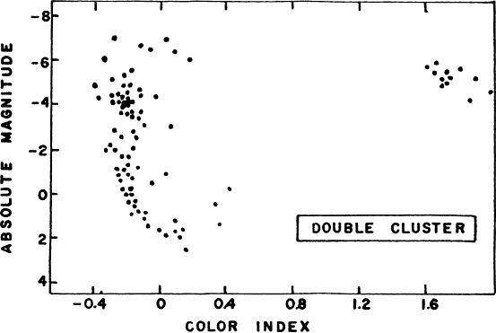
The H–R Diagram for the Perseus Clusters, from observations by H.L.Johnson and W.A.Hiltner.
英仙座星团的H–R图，来自HLJohnson和WAHiltner的观察。
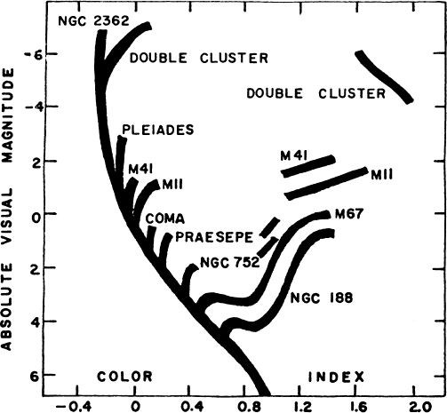
A comparison of diagrams for various clusters.
各种集群图的比较。
Each of the clusters has an actual diameter of about 70 light years; the total mass of both clusters may be near 5000 times the solar mass, and the total light output is something like 200,000 times that of the Sun. NGC 869, as we have seen, is now thought to be the younger cluster of the two, and still among the youngest star groups known; only a few clusters have been identified as being probably still younger, as NGC 2362 in Canis Major. At the other extreme are such objects as the globular star clusters, and a few very ancient galactic clusters such as NGC 188 in Cepheus, all believed to be more than 10 billion years old. The difference in stellar population is strikingly shown when each of these clusters is portrayed on the H–R diagram. A pattern resembling that of the Perseus clusters is indicative of extreme youth, while one resembling NGC 188 implies great age. (For a discussion of the use of the H–R diagram in cluster age–dating, refer to M13 in Hercules.)
每个星团的实际直径约为70光年。两个星团的总质量可能接近太阳质量的5000倍，总光输出约为太阳的200,000倍。如我们所见，NGC 869现在被认为是两者中较年轻的星团，并且仍然是已知的最年轻的恒星群。如Canis Major的NGC 2362所示，只有少数几个星团可能还更年轻。另一个极端是球状星团和一些非常古老的银河团，例如塞弗斯的NGC 188，它们都被认为具有超过100亿年的历史。当在HR图上描绘这些星团中的每个星团时，将显着显示出恒星种群的差异。与英仙座星团相似的图样表明极端青年，而类似NGC 188的游戏机则意味着伟大的年龄。（有关在群集年龄约会中使用H–R图的讨论，请参阅Hercules中的M13。）
The Double Cluster lies in the richest region of the Perseus Milky Way. “Here again we enter upon one of the most splendid portions of the Galaxy” says T.W.Webb. “Night after night the telescope might be employed in sweeping over its magnificent crowds of stars..” While observing in the area, note also the smaller cluster NGC 957, about l½° to the ENE, described by C.E.Barns as a “field shot with diamond dust”.
双星团位于英仙座银河最富裕的地区。TWWebb说：“我们再次进入银河最辉煌的部分之一。” “夜幕降临后，可能会用望远镜扫过它巨大的恒星群。”在观察该区域时，还要注意较小的NGC 957星团，它与ENE呈1.5°角，被CEBarns描述为“钻石尘”。
NGC 1275;
NGC 1275；
(Perseus A) Position 03164n4120. An unusual galaxy, a most interesting and controversial object, listed in the Shapley–Ames catalogue as an E–type system of magnitude 12.7. It is the brightest member of a small cluster of galaxies lying about 2° to the east of Algol, and slightly north. The nearby elliptical galaxy NGC 1270 is undoubtedly a member of the same cluster; both systems show a nearly identical red shift of about 3280 miles per second. The distance of the group is currently thought to be about 300 million light years.
（英仙座A）位置03164n4120。一个不寻常的星系，一个最有趣和有争议的天体，在Shapley-Ames目录中列为12.7级的E型系统。它是一小群星系中最亮的一个，位于阿尔高以东约2°，稍北处。附近的椭圆星系NGC 1270无疑是同一星团的成员。两种系统都显示出几乎相同的每秒3280英里的红移。目前，该小组的距离约为3亿光年。
NGC 1275 is a strong source of radio emission, and bears the number 3C84 in the Third Cambridge Catalogue of radio sources; it is also known as “Perseus A”. Photographs with large modem telescopes show that the galaxy has a peculiar distorted appearance; the main body may be either an SO galaxy or a very compact spiral, but there are huge dust and gas clouds all along the entire northern edge. Some of these patches show a red shift about 1800 miles per second greater than that of the main body.
NGC 1275是强大的无线电发射源，在《剑桥第三号无线电目录》中的编号为3C84；它也被称为“ Perseus A”。用大型现代望远镜拍摄的照片显示，银河系具有奇特的畸变外观。主体可能是SO星系，也可能是非常紧凑的螺旋形，但整个北边缘遍布巨大的尘埃和气云。其中一些斑块显示出比主体快1800英里/秒的红移。
W.Baade and R.Minkowski have suggested that this object actually consists of two galaxies which appear to be passing through each other. The main galaxy may be a compact spiral or a large elliptical; the other a loose later–type spiral whose arms are distorted from tidal force. According to this picture, the loose spiral is seen in front of the compact one in the northern part of the system, and in that region the actual collision is now in progress. The total duration of such an inter–passage of galaxies would be on the order of a million years. From spectral studies it may be surmised that the two galaxies are moving through each other with a relative velocity of about 1800 miles per second. Presumably, the southern part of the loose spiral has already penetrated through its brighter neighbor, and is now out of sight beyond its central hub. One difficulty with this interpretation is that the system does not really look like a double galaxy at all; the fainter galaxy (if such it is) shows neither a nucleus nor a definite spiral pattern. If actually a galaxy it may be an irregular system rather than a spiral.
W.Baade和R.Minkowski已经提出，该天体实际上是由两个似乎彼此通过的星系组成。主星系可以是紧凑的螺旋形或大的椭圆形。另一个是松散的后来型螺旋，其臂因潮汐力而变形。根据这张照片，在系统的北部，在紧凑型螺旋桨的前面可以看到松散的螺旋，在该区域中实际的碰撞正在进行中。这样的星际互通的总持续时间约为一百万年。从光谱研究可以推测，两个星系以每秒约1800英里的相对速度互相移动。据推测，松散螺旋形的南部已经穿透了它较明亮的邻居，现在已经超出了其中心枢纽的视线。这种解释的一个困难是，该系统看起来根本就不像双星系。较弱的星系（如果确实如此）既不显示核也不显示明确的螺旋状。如果实际上是一个星系，它可能是不规则的系统，而不是螺旋形的。
Some other peculiar galaxies, once thought to be collisional systems, have been discredited for several reasons, and it now seems unlikely that the hypothesis will survive in the ease of NGC 1275. The collision theory attributes the strong radio emission to high temperatures produced in the colliding gas clouds, but it is now certain that a number of “radio galaxies” emit far too much energy to be explained by this mechanism. Cygnus A, whose appearance suggests two systems in contact, is among the most powerful radio sources known, but the energy comes chiefly from two large invisible “lobes” on either side of the visible object. These appear to be connected with a strong magnetic field. In such galaxies it is thought that enormous outbursts of some sort have occurred in the central nuclei; such an outburst seems to be in progress at the present time in the strange galaxy M82 in Ursa Major.
曾经被认为是碰撞系统的其他一些奇特星系由于多种原因而被抹黑，现在看来该假设不太可能在NGC 1275的支持下得以幸存。碰撞理论将强无线电发射归因于太阳系产生的高温。碰撞的气体云，但是现在可以确定的是，许多“射电星系”发出的能量太多，无法用这种机制解释。天鹅座A的出现表明两个系统处于接触状态，是已知的最强大的无线电源之一，但能量主要来自可见物体两侧的两个大的不可见“波瓣”。这些似乎与强磁场有关。在这样的星系中，人们认为在中心核中已经发生了某种形式的巨大爆发。

GALAXY NGC 1275 in PERSEUS. This unusual system is a strong source of both radio energy and X–rays. Palomar Observatory photograph with the 200–inch reflector.
PERSEUS中的GALAXY NGC 1275。这个不寻常的系统是无线电能量和X射线的强大来源。帕洛玛天文台使用200英寸反射镜拍摄的照片。

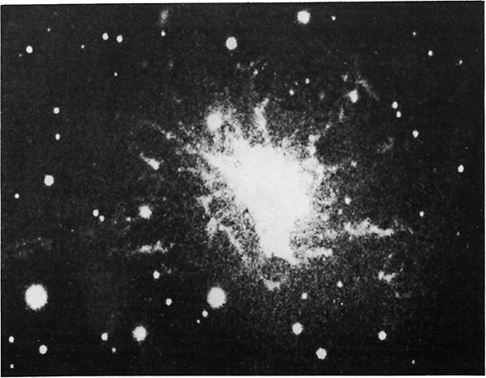
NGC 1275. Top: The field of the eruptive galaxy showing (large circle) NGC 1275, and (at left) NGC 1270. Below: Red light photograph showing the extending filaments .
NGC1275。上图：喷发星系的场，显示（大圆圈）NGC 1275，（左图）显示NGC1270。下图：红光照片显示延伸的细丝。
NGC 1275, in addition to its radio emission, is now known to be a source of X–ray energy as well. The X–ray source, some 35′ in apparent size, is centered on the galaxy, but covers an enormously greater area, fully three million light years in diameter. The tenuous gas pervading this area might explain the observed X–ray emission, if it is at a temperature of about 80,000,000°K. According to another theory proposed in 1974, high energy electrons are accelerated by the magnetic field of the galaxy, and are interacting with the low–energy photons that comprise the 3° background radiation attributed to the original high compression phase or “big bang” stage of the Universe. By this interaction the energies of the photons are increased to the X–ray level, a process known as the “inverse Compton effect”.
NGC 1275，除了它的无线电发射，现在也知道它是X射线能量的来源。X射线源的表面尺寸约为35'，位于银河系的中心，但覆盖的面积却大得多，直径足足有300万光年。如果温度大约为80,000,000°K，则遍布该区域的微弱气体可能解释了观察到的X射线发射。根据1974年提出的另一种理论，高能电子被星系的磁场加速，并与低能光子相互作用，低能光子包含3°背景辐射，这归因于原始的高压缩阶段或“大爆炸”阶段的宇宙。通过这种相互作用，光子的能量增加到X射线能级，这一过程称为“逆康普顿效应”。
Red light photographs show an extensive system of long filaments extending outward on all sides of NGC 1275; the material is exploding into space at a velocity of over 1500 miles per second. The appearance is remarkably similar to the strange galaxy M82, and shows us the same violent outpouring of material on a titanic scale. Vast outbursts or explosions of some sort have evidently occurred in the nuclei of such systems, possibly resulting from the formation of a massive “hyperstar”, “collapsar”, or “black hole” in the heart of the galaxy. One outburst, which might seem trivial by comparison, has been observed in NGC 1275, the appearance of a 15.5 magnitude supernova in 1968.
红光照片显示了在NGC 1275的所有侧面向外延伸的长丝的广泛系统。物质以每秒超过1500英里的速度爆炸进入太空。它的外观与奇怪的银河系M82非常相似，并向我们展示了相同的猛烈暴发。此类系统的核中显然发生了巨大的爆发或爆炸，可能是由于在银河系中心形成了巨大的“超星”，“ collapsar”或“黑洞”。NGC 1275观测到一个爆发，相比之下似乎微不足道，这是1968年出现的15.5级超新星。
(Refer also to 3C273 in Virgo, M82 in Ursa Major, M87 in Virgo, Cygnus A, and NGC 5128 in Centaurus)
（另请参阅处女座的3C273，大熊座的M82，处女座的M87，天鹅座A和半人马座的NGC 5128）

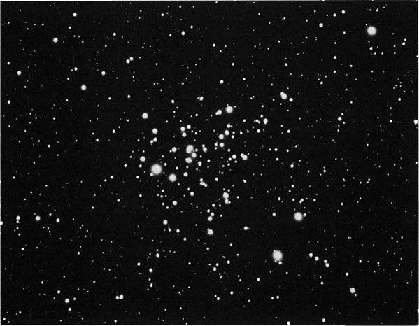
STAR CLUSTERS IN PERSEUS. Top: NGC 1245 is located 3° SW from Alpha Persei. Below: NGC 1528 is about 7.5° east of Alpha. Lowell Observatory 13–inch telescope photographs.
英皇星团。顶部：NGC 1245位于Alpha Persei西南3°处。下图：NGC 1528位于Alpha以东约7.5°。洛厄尔天文台13英寸望远镜的照片。
LIST OF DOUBLE AND MULTIPLE STARS
双星和多星清单

LIST OF VARIABLE STARS
变星清单
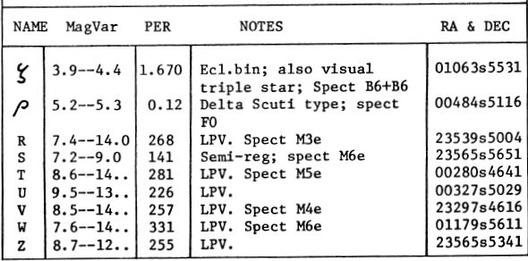

LIST OF STAR CLUSTERS, NEBULAE, AND GALAXIES
星团，星云和星系的清单
(GC 32998) (SAO 231773) Variable. Position 23439s4151, about 6½° west of Alpha Phoenicis. This is one of the most famous of the dwarf cepheids, originally discovered as a star of large proper motion in 1938, and found to show rapid light variations by Dr.O.J. Eggen at Canberra, Australia, in 1952. At that time it had the shortest period known for any type of pulsating star, about 79 minutes. According to the Moscow “General Catalogue of Variable Stars” (1970) the precise period is 0.054965 day, or 79m 10s. The visual magnitude ranges from 7.1 to about 7.5; photographically it is 7.1 to about 7.8, owing to the change in color during the cycle. Some maxima are higher than others by half a magnitude, indicating that the star is oscillating in at least two superimposed periods. The cycle of the amplitude variations is about 4.6 hours, or very close to 3½ times the main period.
（GC 32998）（SAO 231773）变量。位置23439s4151，位于Alpha Phoenicis以西约6½°。这是最著名的侏儒造父变星之一，最初是在1938年被发现为具有适当运动的恒星，并在1952年由澳大利亚堪培拉的OJ Eggen博士发现显示出快速的光线变化。对于任何类型的脉动星来说，最短的时间约为79分钟。根据莫斯科“变星总目录”（1970），精确的时间段是0.054965天，即79m 10s。视觉幅度在7.1到7.5之间；在照相上，由于在循环中颜色的变化，它是7.1至约7.8。一些最大值比其他最大值高一半，这表明恒星至少在两个叠加周期内振荡。振幅变化的周期约为4.6小时，
SX Phoenicis appears to be a subdwarf A–type star; from the computed distance the actual luminosity must be only 2 or 3 times that of the Sun. The Moscow Catalogue reports a probable absolute magnitude of +4.1 which places the star at least two magnitudes below the main sequence. In a study made in 1975 at the European Southern Observatory, R.Haefner found that the spectral type, usually given as A2 to A5, actually reached F4 at a low minimum. From current theories of stellar structure it appears that stars of this type have an unusually low mass for their spectral types; the figure for SX Phoenicis is believed to be about 0.24 solar mass, and the diameter probably about 80% that of the Sun. The star shows an annual proper motion of 0.89″ in PA 163°; the distance may be about 140 light years.
SX腓尼基星似乎是矮矮的A型星；从计算出的距离来看，实际的亮度只能是太阳的2到3倍。《莫斯科目录》报告说，绝对星等可能为+4.1，这使该恒星位于主序列下方至少两个星等。在1975年欧洲南部天文台进行的一项研究中，R.Haefner发现通常由A2至A5给出的光谱类型实际上达到了最低的F4。从目前的恒星结构理论来看，这种类型的恒星在其光谱类型上质量异常低。SX Phoenicis的数字据信约为0.24太阳质量，直径可能约为太阳的80％。恒星在PA 163°处的年度固有运动为0.89英寸；距离可能约为140光年。
In a study of this odd star made at the observatory of the University of Chile in 1970, J.Stock and S.Tapia reported that “an analysis of the radial velocity curves, from 500 spectra, together with photometric data, show that the observations cannot be reconciled with the model of a single pulsating star….In addition, the intensities and profiles of the absorption lines vary rapidly, often within minutes….SX Phoenicis is probably a binary, or even a multiple system”. The stars of this type resemble the RR Lyrae stars, but have smaller masses and lower luminosities. (Refer also to CY Aquarii, AI Velorum, and RR Lyrae)
J.Stock和S.Tapia于1970年在智利大学天文台对这颗奇怪的恒星进行的研究中报告说：“从500个光谱中对径向速度曲线的分析以及光度数据表明，这些观测不能与单个脉动星的模型相吻合……。此外，吸收谱线的强度和分布迅速变化，通常在数分钟之内……。SXPhoenicis可能是双星系统，甚至是多个系统。” 这种类型的恒星类似于RR Lyrae恒星，但具有较小的质量和较低的发光度。（另请参阅CY Aquarii，AI Velorum和RR Lyrae）

SX PHOENICS Identification chart. Stars to about 9th magnitude are shown. Grid squares are 1° high.
SX PHOENICS识别表。显示了大约9级的恒星。网格正方形高1°。
LIST OF DOUBLE AND MULTIPLE STARS
双星和多星清单

LIST OF STAR CLUSTERS, NEBULAE, AND GALAXIES
星团，星云和星系的清单
Nova Pictoris 1925. Position 06352s6236, about 1½° southwest of Alpha Pictoris. A brilliant nova, first seen by R.Watson in South Africa on the morning of May 25, 1925. Watson reported the discovery to the Royal Observatory at the Cape, and the first scientific observations of the new star were made there that same evening. A thorough study of the nova was made at the Cape over a number of years, and a complete analysis of the changing spectral features was presented in a monumental report by H. Spencer Jones in Vol.X of the Annals of the Cape Observatory.
Nova Pictoris，1925年。位置06352s6236，位于Alpha Pictoris西南约1½°。1925年5月25日上午，R.Watson在南非首次看到了一颗明亮的新星。Watson向开普敦的皇家天文台报告了这一发现，并于当晚在该星上进行了首次科学观测。多年来，在开普角对这颗新星进行了彻底的研究，H。Spencer Jones在《开普天文台年鉴》第X卷中的巨著报告中对变迁的光谱特征进行了全面分析。
At discovery the nova was magnitude 2.3, but was soon found to be still brightening, with irregular oscillations, until it reached its peak brightness of magnitude 1.2 on June 9. By July 4 the star had faded to 4th magnitude, but unexpectedly rose again to magnitude 1.9 on August 9. The maximum was thus a long extended one, classifying the star as a “slow nova” in contrast to such rapid and sharp maxima as displayed by Nova Aquilae 1918 and CP Puppis in 1942. The star had been bright for some time before its discovery, as it appears as a 3rd magnitude object on a plate made in mid–April.
在发现时，该新星为2.3级，但很快发现它仍在增亮，并具有不规则的振荡，直到6月9日达到其1.2级的峰值亮度为止。到7月4日，该恒星已褪色至4级，但出乎意料地再次上升至因此，8月9日的1.9级。最大爆发是一个较长的扩展，将恒星归类为“慢新星”，这与1918年新星天鹰座和1942年CP Puppis所显示的快速而尖锐的最大值形成鲜明对比。它被发现之前的某个时间，因为它在4月中旬制成的盘子上以3级星体出现。

ROYAL OBSERVATORY PHOTOGRAPHS
皇家天文台照片
A third, and last, outburst of the star, from magnitude 3.7 to about 2.3, took place some 60 days after the chief maximum; the star thereafter faded with slight fluctuations until it disappeared fron naked–eye view in mid–December. Ten years later it was a 9th magnitude object and still fading slowly. The star appears on previous photographs of the region as an object of magnitude 12.7, and apparently constant in light. In 1975, the nova was close to its pre–outburst magnitude of about 12½.
恒星爆发后的第三次也是最后一次爆发，从3.7级到大约2.3级，发生在最高点之后的大约60天。之后，恒星略微波动地逐渐消失，直到12月中旬从肉眼观察消失。十年后，它是第9级的物体，但仍在缓慢消失。该恒星出现在该区域的先前照片中，是一个大小为12.7的物体，并且显然在光线下是恒定的。1975年，这颗新星接近爆发前的大小约12.5。
Beginning in 1928, telescopic observations revealed that the image of the star, under high powers, appeared as a triple body. Two years later one part had vanished and the other two had expanded outward. The rate of the expansion was about 0.2″ per year, and the separation of the two principal nuclei had increased to 1.0″ in early 1931. These fragments were apparently knots of nebulous material and not stellar bodies. A similar appearance was detected around the image of Nova Herculis 1934 after the outburst.
从1928年开始，通过望远镜观测发现，恒星在高倍镜下的图像为三重天体。两年后，一个零件消失了，另外两个零件向外扩展。每年的膨胀速度约为0.2英寸，两个主核的分离在1931年初已增加到1.0英寸。这些碎片显然是星云状物质的结，不是恒星体。爆发后，在1934年新星大力士的影像周围发现了类似的外观。
With an amplitude of about 11½ magnitudes, Nova Pictoris showed a light increase of about 40,000 times during the outburst. At the peak of its luminosity, spectroscopic studies showed that the outer layers of the star were being blasted into space at a velocity of about 700 miles per second. Still higher velocities, of up to 950 miles per second, were measured some six months later, when the star had declined to the limit of naked–eye visibility.
Nova Pictoris的振幅约为11½幅值，在爆发期间显示出约40,000次的光增加。光谱研究表明，在恒星的亮度达到最高峰时，它的外层正以每秒约700英里的速度爆炸进入太空。大约六个月后，当恒星下降到肉眼能见度的极限时，仍然有更高的速度，高达每秒950英里。
The distance of no nova is known very accurately, as even the nearest have been too distant for trigonometrical parallax measurements. Actual luminosities are thus somewhat uncertain, though it seems clear that the “slow novae” of the RR Pictoris and DQ Herculis type have considerably lower peak luminosities than the “fast novae” such as CP Puppis.
没有新星的距离是非常准确的，因为即使是最近的距离也离三角测量太远了 视差测量。因此，实际的光度尚不确定，尽管看起来很明显，RR Pictoris和DQ Herculis类型的“慢新星”具有比CP Puppis等“快新星”低得多的峰值光度。
According to a summary of the evidence by C.P.Gaposchkin, RR Pictoris had a peak absolute magnitude of about –6.3, equivalent to nearly 30,000 times the light of the Sun. From a study of the expanding nebulosity, D.B.Mclaughlin (1936) obtained a somewhat different result, giving the probable absolute magnitude as –7.3. The pre–nova brightness, in any case, was fairly comparable to the luminosity of the Sun. The computed distance is slightly over 1000 light years; our Sun at that distance would appear as a star of magnitude 12.4.
根据CPGaposchkin的证据总结，RR Pictoris的绝对峰值约为–6.3，相当于太阳光的近30,000倍。通过研究膨胀的星云，DBMclaughlin（1936）得到了一些不同的结果，给出的绝对绝对大小为–7.3。无论如何，新星前的亮度与太阳的光度相当。计算出的距离略超过1000光年；我们在该距离处的太阳将显示为12.4级恒星。
Studies of the post–nova star, in recent years, have brought forth some evidence to support a theory that all novae are close binary stars. In the case of RR Pictoris, the short–period variability occupies a cycle of 0.14498 day, or slightly under 3½ hours. (Refer also to Nova Aquila 1918, GK Persei 1901, DQ Herculis 1934, CP Puppis 1942, and Nova Cygni 1975)
近年来，对后新星的研究提供了一些证据来支持所有新星都是近距离双星的理论。就RR Pictoris而言，短期变化的周期为0.14498天，或略低于3.5小时。（另请参阅Nova Aquila 1918，GK Persei 1901，DQ Herculis 1934，CP Puppis 1942和Nova Cygni 1975）
KAPTEYN’S STAR
卡普汀之星
(LFT 395) (GC 6369) (HD 33793) Position 05097s4500. A faint and inconspicuous star, but remarkable for its unusually large proper motion, exceeding that of any other star in the heavens with the single exception of Barnard’s Star in Ophiuchus. Kapteyn’s Star was discovered in 1897 by Professor J.C.Kapteyn of the University of Groningen. The star is sometimes referred to by its number in the Cordoba Zone catalogue; CZ 5h 243. It is located in a rather blank region of the southern sky, about midway between Canopus and 41 Eridani; the field lies some 8½° NW from Beta Pictoris.
（LFT 395）（GC 6369）（HD 33793）位置05097s4500。一颗淡淡而不起眼的恒星，但因其异常大的正常运动而引人注目，超过了天上任何其他恒星，唯一的例外是巴纳德的《蛇夫座》中的恒星。格罗宁根大学的JCKapteyn教授于1897年发现了卡普汀的星。在科尔多瓦专区目录中有时用星号来指代恒星。CZ 5h243。它位于南部天空的一片空白区域，大约在Canopus和41 Eridani之间。磁场位于Beta Pictoris的西北约8½°。
Kapteyn’s Star has an annual proper motion of 8.70″ in PA 131°, and thus requires some 414 years to change its position by 1° in the sky. Like Barnard’s Star, it is a red dwarf; the apparent visual magnitude is 8.8 and the photographic magnitude about 10.0. The spectral type is dMO. A direct parallax measurement leads to a distance of 12.7 light years, about twice the distance of Barnard’s Star. With an absolute magnitude of about 10.8, Kapteyn’s Star is some 250 times fainter than our Sun, but about 10 times more luminous than Barnard’s Star.
Kapteyn的恒星在PA 131°的年度固有运动为8.70英寸，因此需要大约414年的时间才能在天空中将其位置改变1°。就像巴纳德的星星一样，它是红色的矮人。表观视觉强度为8.8，摄影强度约为10.0。光谱类型为dMO。直接视差测量可以得出12.7光年的距离，大约是巴纳德之星距离的两倍。卡普汀之星的绝对星等约为10.8比我们的太阳微弱约250倍，但比巴纳德之星的发光约10倍。
As in the case of Barnard’s Star, the abnormally large apparent motion is the result of the nearness of the star combined with an unusually high true space velocity of about 175 miles per second, one of the highest known. The motion across the line of sight corresponds to about 100 miles per second, and the radial velocity is 145 miles per second in recession.
就像巴纳德的恒星一样，异常大的视在运动是由于恒星靠近而加上异常高的真实空速（大约每秒175英里）的结果，这是已知的最高之一。跨越视线的运动对应于每秒约100英里，在后退时径向速度为每秒145英里。
The proper motion of the star from 1900 to the year 2050 is shown on the charts below. Stars to about the 10th magnitude are shown; grid squares are 1° on a side with north at the top. (Refer also to Barnard’s Star, page 1251)
下图显示了从1900年到2050年这颗恒星的正确运动。显示了大约10级的恒星；网格正方形的一面为1°，顶部朝北。（另请参阅巴纳德之星，第1251页）

LIST OF DOUBLE AND MULTIPLE STARS
双星和多星清单


LIST OF STAR CLUSTERS, NEBULAE AND GALAXIES
星团，星云和星系清单

DESCRIPTIVE NOTES
描述性注释
Name– AL RISCHA, from the Arabic Al Risha, “The Cord”, possibly derived from the earlier Babylonian Riksu, which also means a cord. Another name, OKDA, is from the Arabic phrase Ukd al H.aitain which seems to refer to a “flaxen cord″ or bond which ties the two fish of Pisces together. Magnitude 3.96; spectrum A2; position 01594n0231. The star is located in the extreme southeastern portion of the constellation, about 7° NW of Mira in Cetus.
名字– AL RISCHA，来自阿拉伯语Al Risha，“绳索”，可能源自较早的巴比伦Riksu，也表示绳索。OKDA的另一个名称是阿拉伯语短语Ukd al H.aitain，它似乎是指将双鱼座的两条鱼绑在一起的“亚麻绳 ”或债券。大小3.96; 频谱A2; 位置01594n0231。这颗恒星位于该星座的最东南部，位于Cetus的Mira的西北角约7°。
Alpha Piscium is a fine binary star for moderate telescopes, first noted by William Herschel in 1779, and gradually becoming more difficult for small instruments as the separation steadily decreases from a measured 3.6″ in 1831. During the first century of observation the PA slowly changed from 336° to 307°; in 1966 it was 292° and the distance between the components had diminished to 1.9″.
Alpha Piscium是中型望远镜的优良双星，最初由William Herschel于1779年注意到，随着分离的间隔从1831年的3.6英寸稳定减小，逐渐变得越来越难于小型仪器。在观测的第一世纪，PA缓慢变化从336°到307°; 1966年为292°，组件之间的距离缩小为1.9英寸。
According to the ADS Catalogue, the individual magnitudes are 4.33 and 5.23; the spectral types about A2 and A3; the fainter star has a peculiar spectrum with strong metallic lines. From an orbit calculation by W.Rabe (1961) the period of the pair may be about 720 years with periastron due about 2060 AD. The semi–major axis of the computed orbit is 2.65″, with an eccentricity of 0.60 and an inclination of 142°. Orbital motion is retrograde, and it appears that both components are spectroscopic binaries of uncertain period.
根据ADS目录，单个大小分别为4.33和5.23；关于A2和A3的光谱类型；较暗的恒星具有特殊的光谱和强烈的金属线。根据W.Rabe（1961）的轨道计算，这对行星的周期可能约为720年，而周星发生于公元2060年。计算机的半长轴ted轨道为2.65英寸，偏心率为0.60，倾角为142°。轨道运动是逆行的，似乎这两个分量都是不确定周期的光谱双星。
A peculiar feature of Alpha Piscium is an apparently illusionary color contrast described by various observers. T.W.Webb calls them “greenish white and blue” but then adds “I found contrast certain, but fainter star troublesome as to color, usually ruddy or tawny, sometimes blue”. In 1855 he thought them “pale yellow and brown yellow” and on other occasions “pale yellow and fawn–colored”. K.McKready in his Beginner’s Star Book (1912) calls the components “pale green and blue”, while C.E.Barns (1929) simply notes “weird coloring” and, perhaps wisely, refuses to commit himself to any more definite statement.
Alpha Piscium的一个独特功能是各种观察者描述的明显虚幻的色彩对比。TWWebb称它们为“绿色白色和蓝色”，但随后又添加了“我发现对比度可以确定，但较暗的恒星在颜色上通常是红润或黄褐色，有时是蓝色，因此很麻烦”。1855年，他认为它们为“浅黄色和棕黄色”，在其他情况下则为“浅黄色和淡黄褐色”。K.McKready在他的《初学者的星光书》（1912年）中称其成分为“浅绿色和蓝色”，而CEBarns（1929年）只是简单地指出“怪异的色彩”，并且也许是明智的选择，拒绝承诺任何更明确的陈述。
A direct parallax measurement gives the probable distance as about 130 light years; the resulting total luminosity of the system is about 35 times that of the Sun. Alpha Piscium shows an annual proper motion of about 0.03″; the radial velocity (somewhat variable) averages some 5 miles per second in recession.
直接视差测量可能的距离约为130光年；系统的总光度约为太阳的35倍。Alpha Piscium显示每年大约0.03英寸的适当运动；在衰退中，径向速度（有些变化）平均每秒约5英里。
The suspected variability of the primary star seems to have first been announced by E.C.Pickering at Harvard in 1879; he found that the magnitude difference between the components appeared to vary from about 0.7 to 1.1, but in no definite period. Miss Agnes Clerke (1905) regarded the variability of at least the primary as certain, but thought that possibly both stars changed in light. No definite evidence of light changes has been noted in recent years.
ECPickering于1879年在哈佛大学首次宣布了疑似恒星的变异性。他发现组件之间的幅度差异似乎在0.7到1.1之间变化，但是没有确定的时间。艾格尼丝·克莱克小姐（1905）认为至少初级的可变性是确定的，但认为可能两颗恒星都在光照下发生了变化。近年来，没有明确的证据表明光线发生了变化。
ZETA
ZETA
Position 01111n0719. A fine easy double star, located virtually on the Ecliptic, about 13° WNW from Alpha Piscium. It seems to have been first recorded by William Herschel in 1781, and the components have shown no certain relative change in nearly two centuries, although the physical association is proven by the common proper motion of 0.15″ per year. With a separation of 23½″ this is an easy object for a beginner’s telescope; Olcott calls it “a fine object” and Barns refers to it as a colorful pair; the tints having been described by various observers as “yellowish and pale lilac”, “white and greyish”, or “pale yellow and rose”. The spectral types are A5 and dF6; the individual magnitudes, according to the ADS Catalogue, are 4.2 and 5.3, but the discrepancies in reported measurements suggest that both stars may be variable. The Harvard photometric magnitudes for the components are 5.57 and 6.49. Both stars show a variable radial velocity, and are assumed to be spectroscopic binaries.
位置01111n0719。一颗容易上等的双星，几乎位于黄道上，距Alpha Piscium约13°WNW。它似乎最早是由威廉·赫歇尔（William Herschel）于1781年记录的，尽管在物理上的关联每年由0.15英寸的常见正常运动所证明，但部件在近两个世纪中都没有显示出任何相对变化。相隔23½英寸，对于初学者望远镜来说，这是一个简单的目标。奥尔科特（Olcott）称其为“精美的物件”，而巴恩斯（Barns）则称其为多彩的一对。各种观察者将这些色调描述为“淡黄色和淡紫色”，“白色和灰色”或“淡黄色和玫瑰”。光谱类型为A5和dF6；根据ADS目录，单个震级分别为4.2和5.3，但报告的测量结果差异表明这两个恒星可能都是可变的。组件的哈佛光度大小为5.57和6.49。两颗星都显示出可变的径向速度，并被认为是光谱双星。

THE MOON AND VENUS near conjunction in the field of Zeta Piscium (image at top of print). The photograph was made by the author with the Lowell 13–inch telescope on March 11, 1959.
Zeta Piscium领域中的月球和金星接近并合（图像顶部印刷）。这张照片是作者于1959年3月11日用洛厄尔13英寸望远镜拍摄的。
A trigonometrical parallax indicates a distance of about 140 light years; the projected separation of the two stars is then about 1000 AU. The primary star has an actual luminosity of about 8 to 10 times that of the Sun. The mean radial velocity of the system is about 6 miles per second in recession.
三角视差表示大约140光年的距离；那么，两颗星的预计间隔约为1000 AU。初级恒星的实际光度大约是太阳的8至10倍。在衰退中，系统的平均径向速度约为每秒6英里。
A 12th magnitude companion to the fainter star, at a distance of 1″, was discovered by S.W.Burnham in 1888. A very difficult object, it has been measured on various occasions (as in 1958) but, according to the Lick Observatory Index Catalogue of Visual Double Stars (1961), it was not visible at all in 1914, 1922, 1936, or 1951. With an absolute magnitude of about +9.1, this third star must be some variety of low–luminosity dwarf; it is doubtful that a spectrum will ever be obtained for this object.
SWBurnham于1888年发现了距离更暗的恒星的12级伴星，相距1英寸。这是一个非常困难的物体，已在各种场合（如1958年）进行了测量，但根据利克天文台指数目录视觉双星（1961），在1914年，1922年，1936年或1951年根本不可见。第三颗恒星的绝对星等大约为+9.1，一定是低发光度矮星的变种。怀疑是否会为此目的获得光谱。
19
19
(TX Piscium) Variable. Position 23438n0313; the star is the easternmost member of the so–called Circlet of Pisces, the oval ring of stars about 7° x 5° which represents the western fish of the pair, and which includes the stars Gamma, Kappa, Lambda, Iota, Theta, 19 and 7 Piscium. 19 Piscium is chiefly of interest for its strong red color, being one of the few N–type stars within range of naked–eye sighting, or available to field glasses. Its spectral class is usually given as NO, but on the new “carbon star” classification system it would be called C62. This is one of the very low temperature giants which show bands of carbon compounds in the spectrum. As in the case of the very similar star Y Canum Venaticorum, no parallax has been detected, proving that the distance must be in the range of 400 light years or more. From theoretical studies, the absolute magnitude of the star is believed to be close to –2.0; the computed distance is then about 1000 light years. 19 Piscium shows an annual proper motion of about 0.04″; the radial velocity (variable) averages about 6.5 miles per second in approach.
（TX Piscium）变量。位置23438n0313; 恒星是所谓的双鱼座环的最东端，大约7°x 5°的椭圆形恒星环，代表这对西方鱼类，其中包括Gamma，Kappa，Lambda，Iota，Theta，19和7 Piscium。19 Piscium主要因其强烈的红色而引起人们的兴趣，它是肉眼可见或可用于野外镜的少数N型恒星之一。其光谱类别通常以NO给出，但在新的“碳星”分类系统中，它将被称为C62。这是极低温的巨人之一，在光谱中显示出碳化合物带。与非常相似的Y Canum Venaticorum恒星一样，也未检测到视差，证明距离必须在400光年或更长时间内。从理论研究来看，恒星的绝对大小被认为接近–2.0。计算出的距离约为1000光年。19 Piscium显示每年大约0.04英寸的适当运动；进近时的径向速度（可变）平均约为6.5英里/秒。
To appreciate the unusual ruddy tint of the star, observers should compare its light with the nearby bluish stars 21 and 25 Piscium, of spectral types A2 and A0 respectively. (See chart, page 1475)
为了欣赏这颗恒星异常的红润色调，观察者应该将其光与附近的光谱类型分别为A2和A0的蓝色恒星21和25 Piscium进行比较。（请参阅第1475页的图表）
As a variable, TX Piscium is not of great interest, as the visual range is only about half a magnitude, from about 5.5 to 6.0. When observed photographically the range increases to about 1 magnitude. Owing to the fairly small amplitude and the unusual color, the light changes are not conspicuous visually, and the variability was considered doubtful for many years. T.E.Espin, however, observed a well defined maximum of 5.2 in August 1884, and O.C.Wendell at Harvard found a range of 0.36 magnitude during a one–year period in 1905–1906. There appears to be no regular periodicity, and T.W.Webb refers to the star as one of a class which “for long intervals are nearly constant in light, and then for a short time rise to a maximum…… In estimating magnitudes of red stars it is well to put them out of focus, and thus compare discs of light instead of points.” (Refer also to Y Canum Venaticorum, R Leporis, V Hydrae, S Cephei, and Omicron Ceti)
作为变量，TX Piscium并没有太大的意义，因为可视范围仅为大约5.5至6.0的一半。当照相观察时，该范围增加到约1个量级。由于振幅很小且颜色不寻常，因此光的变化在视觉上不明显，并且多年来一直认为其可变性令人怀疑。然而，TEEspin在1884年8月观察到了5.2的明确定义，哈佛大学OCWendell在1905年至1906年的一年时间内发现了0.36幅度的范围。似乎没有规律的周期性，TWWebb将该恒星称为“恒星中的一类”，“长间隔在光线下几乎是恒定的，然后在短时间内上升到最大值……在估计红色恒星的大小时，它是很好地将它们放在焦点上，从而比较光盘代替点。”（另请参见Y Canum Venaticorum，R Leporis，V Hydrae，S Cephei和Omicron Ceti）。
VAN MAANEN'S STAR
范·曼恩之星
(Wolf 28) (LFT 76) A whlte dwarf star of unusual interest. Position 00465n0509, about 2° south of Delta Piscium. This is one of the few white dwarf stars which can be seen and identified easily in amateur telescopes. It was discovered by A. van Maanen in 1917 through a comparison of photographs made in 1914 and 1917. With the exception of the faint companions to Sirius and Procyon this is probably the nearest white dwarf star to the Solar System, at a distance of 13.8 light years. The star was discovered through its large proper motion, which amounts to 2.98″ yearly in PA 155½°
（狼28）（LFT 76）矮矮胖星，异常有趣。位置00465n0509，位于三角洲Piscium以南约2°处。这是在业余望远镜中可以轻易看到和识别的少数几个白矮星之一。它是由A. van Maanen在1917年通过比较1914年和1917年的照片而发现的。除了天狼星和普罗西恩的微弱伙伴外，这可能是距离太阳系最近的白矮星，距离为13.8光年。这颗恒星是通过其大的适当运动而发现的，该运动在PA155½°上每年达2.98英寸
Van Maanen’s Star has an apparent visual magnitude of 12.4, and an absolute magnitude of about 14.2; the actual luminosity is about 1/5800 that of the Sun. The spectral type is variously given as either late DF or early DG; the surface temperature is near 6000°K. This was the first of the “late type” degenerate stars to be discovered, though a fair number of DG and DK stars are now known.
范·马嫩（Van Maanen）的“星”的视觉大小为12.4，绝对大小为14.2；实际的光度大约是太阳的1/5800。频谱类型以DF晚期或DG早期给出；表面温度接近6000°K。这是第一个被发现的“晚型”简并星，尽管现在已知相当数量的DG和DK星。
Definitely among the smallest stars known, this very dense star has a computed diameter of about 7800 miles, or very close to the size of our Earth. With a mass comparable to that of the Sun, the density is found to be nearly one million times that of water, or about 20 tons to the cubic inch. This is about 10 times the computed density of the famous Sirius B, most famous of the degenerate stars. The surface conditions on such a body are almost impossible to imagine; the atmospheric pressure on Van Maanen’s Star is about 2000 times that present on Earth, and the surface gravity must exceed 50,000 times that of our own feather–weight planet. Ordinarily an object the size of the Earth would be totally beyond the range of any telescope at a distance of a dozen light years. But the Van Maanen object is a star, visible in the light of its own radiation, even though actual energy production may have ceased ages ago. Presumably such an object must be among the oldest stars in the Universe, and will now spend many additional aeons of slow cooling as it eventually approaches the “black dwarf” state billions of years from now.
在已知的最小恒星中，这颗非常密集的恒星的计算直径约为7800英里，非常接近地球的大小。在质量与太阳相当的情况下，密度约为水的一百万倍，约20吨至立方英寸。这是著名的天狼星B（最著名的退化星）的计算密度的10倍。这种物体的表面状况几乎是无法想象的。Van Maanen恒星上的大气压力大约是地球上存在的压力的2000倍，并且表面重力必须超过我们自己的羽毛重量行星的50,000倍。通常，一个地球大小的物体在十几光年的距离内将完全超出任何望远镜的范围。但是Van Maanen的物体是一颗恒星即使实际的能源生产可能已在很久以前就停止了，但根据其自身的辐射可见。据推测，这样的天体一定是宇宙中最古老的恒星之一，并且现在将花费许多额外的缓慢冷却时间，因为它最终将在数十亿年后接近“黑矮星”状态。


TX PISCIUM. The strong color is illustrated by comparison of red and blue exposures. From Lowell Observatory plates
TX PISCIUM。通过比较红色和蓝色曝光可以说明强烈的色彩。从洛厄尔天文台板块
FIELD OF MAANEN’S STAR. The circle is 1° in diamete with north at the top; stars to about 14th magnitude are shown. Lowell Observatory 13–inch telescope plate.
曼恩之星的领域。圆的直径为1°，顶部为北。显示了大约14级的恒星。洛厄尔天文台13英寸望远镜板。
The identification chart (page 1476) was made from a plate obtained with the 13–inch camera at Lowell Observatory in December 1961. Observers of the future must thus make allowance for the large proper motion of the star, about 5′ per century. The brightest star in the field is GC 959 or LFT 73, magnitude 6.7; this star also has a large proper motion (1.37″ annually) in almost the same direction but from parallax measurements appears to be about twice the distance of Van Maanen’s Star. The two objects are evidently not related. (Refer also to Sirius B (page 394), Procyon B (page 449) and Omicron–2 Eridani (page 890)
识别图（第1476页）是由1961年12月在洛厄尔天文台用13英寸相机获得的板制成的。因此，未来的观察者必须考虑到恒星的大型正常运动，大约每个世纪5'。该场中最亮的恒星是GC 959或LFT 73，强度为6.7；这颗恒星在几乎相同的方向上也有较大的固有运动（每年1.37英寸），但是从视差测量来看，它的距离似乎是范·马嫩星的距离的两倍。这两个对象显然无关。（另请参阅Sirius B（第394页），Procyon B（第449页）和Omicron–2 Eridani（第890页）

THE PROPER MOTION OF VAN MAANEN’s STAR. EACH FIELD IS 18′ WIDE; THE TOTAL DISPLACEMENT IN 46 YEARS IS 137″. FROM LOWELL OBSERVATORY PLATES.
范·曼恩之星的正确运动。每个视野都在18'宽；46年的总位移为137英寸。来自洛厄尔天文台。

SPIRAL GALAXY M74 in PISCES. One of the finest examples of a large face–on spiral. Palomar Observatory photograph made with the 200–inch reflector.
双鱼座的螺旋星系M74。大型面对面螺旋形的最好例子之一。使用200英寸反射镜拍摄的帕洛玛天文台照片。
(NGC 628) Position 01340nl532, about 1½° ENE from Eta Piscium. Large spiral galaxy, first observed by P.Mechain in September 1780, and confirmed by Messier the following month. Mechain described it as a nebula which “contains no star; it is fairly large, very obscure and extremely difficult to observe….One can make it out with more certainty in fine, frosty conditions..” D’Arrest found it “pale and tenuous, very much denser towards the centre; the central part is almost round, diam 40”. Resolved; uncertain whether it has a true nucleus..″ John Herschel, in his General Catalogue of 1864, made the surprising mistake of classifying M74 as a globular star cluster, and this error was carried over into the N.G.C. Lord Rosse, in 1848, was probably the first to detect the spiral form, which was recorded with great clarity by the early astro–photographer Isaac Roberts, in a photograph made in December 1893.
（NGC 628）位置01340nl532，距Eta Piscium约½ENE。大型旋涡星系，于1780年9月由P.Mechain首次观测，并于次月由Messier确认。Mechain将其描述为“不包含恒星；它很大，非常模糊，很难观察……。人们可以在晴朗，寒冷的条件下更加确定地辨认它。” D'Arrest发现它“苍白而脆弱，向中心密集。中心几乎是圆形的，直径40英寸。解决; 不确定它是否具有真正的核。”“约翰·赫歇尔，在他的总目录中1864年，它错误地将M74归类为球状星团，这一错误被带入了NGC罗斯勋爵（Lord Rosse），1848年，它可能是第一个检测到螺旋形式的星体，并在早期就被清晰地记录下来。天文摄影师艾萨克·罗伯茨（Isaac Roberts），摄于1893年12月。
M74 is one of the faintest and most elusive of the Messier objects, and requires a dark clear sky and a suitably low power eyepiece. Under the best conditions it may appear as a circular, quite featureless glow, about 6′ in diameter with averted vision, and with a bright, nearly stellar nucleus. Curiously however, M74 was noted and mapped on the charts of the Bonn Durchmusterung (about the year 1860) which was compiled from observations with a 3–inch telescope; it bears the number BD+15°238. K.G.Jones (1968) points out that an extended object of low surface brightness “may well be easier to see in small telescopes of wide field than in larger instruments”.
M74是最微弱，最难以捉摸的Messier物体之一，它需要黑暗的天空和合适的低倍目镜。在最佳条件下，它可能看起来像是圆形的，无特征的辉光，直径约6英寸，带有避开视力，并具有明亮的近恒星核。然而，奇怪的是，M74被注意到并被绘制在波恩·杜希穆特伦（Bonn Durchmusterung）的海图上（大约1860年），该图是用3英寸望远镜观察到的。它的编号为BD + 15°238。KGJones（1968）指出，低表面亮度的扩展物体“与大仪器相比，在广角小型望远镜中更容易看到”。
On the best long–exposure plates the apparent size increases to about 10′; S.van den Berg (1960) reports a total size of 10.6′ x 9.0′ and a total integrated magnitude (pg) of 9.74. The integrated spectral type is F5.
在最佳的长时间曝光板上，表观尺寸增加到大约10'；S.van den Berg（1960）报告总大小为10.6'x 9.0'，总积分强度（pg）为9.74。积分光谱类型为F5。
M74 is one of the most perfect examples of a face–on Sc–type spiral, resembling the large M101 in Ursa Major but somewhat more symmetrical in form. A.Sandage (1961) in the Hubble Atlas of Galaxies states that the chief spiral arms of the system have a thickness of about 1000 parsecs, and are bordered on their inner edges by thin dust lanes which may be traced deep into the nuclear hub. At a distance of close to 30 million light years, the 9′ diameter corresponds to about 80,000 light years; the total absolute magnitude is about –20½, or about 13 billion times the light of the Sun. The galaxy thus seems to be not greatly inferior in size to our own, but has a much lower luminosity, unless the computed distance is considerably underestimated. E.Holmberg (1964) derived a distance modulus of 29.7 magnitudes for M74, and a total mass of about 40 billion suns. A.Sandage (1961) adopted a distance modulus of 30.0 magnitudes; S.van den Bergh (1960) has 29.4. All these figures agree in giving a distance in the range of 25 to 33 million light years. The measured red shift of the system, however, is 426 miles per second (corrected for the solar motion in our own Galaxy), which, according to the presently accepted value for the Hubble constant, implies a somewhat greater distance of about 42 million light years. As in the notable case of the edge–on spiral NGC 4565 in Coma, we have a situation here in which the known red shift gives too large a distance. The greater distance, however, would bring the luminosity and computed mass into closer agreement with the figures obtained for many other large spirals.
M74是面朝上Sc型螺旋的最完美示例之一，类似于Ursa Major中的大型M101，但形状上更为对称。哈勃星系图集的 A.Sandage（1961）指出，该系统的主要螺旋臂的厚度约为1000帕秒，并在其内部边缘被细的尘埃带接壤，该尘埃带可追溯到核中心。距离近3千万光年，直径为9'相当于约80,000光年；总的绝对大小约为–20½，或大约是太阳光的130亿倍。因此，除非计算出的距离被大大低估了，星系的大小似乎并不比我们自己小得多，但是它的光度要低得多。E.Holmberg（1964）得出M74的距离模量为29.7量级，总质量约为400亿个太阳。A.Sandage（1961）采用的距离模量为30.0。S.van den Bergh（1960）拥有29.4。所有这些数字都可以得出25至3,300万光年的距离。但是，系统测得的红移为每秒426英里（已针对我们自己的银河系中的太阳运动进行了校正），根据目前公认的哈勃常数值，意味着大约4200万光年的更大距离。就像在昏迷中的边缘螺旋NGC 4565上的显着情况一样，在此情况下，已知的红移给出了太大的距离。然而，更大的距离将使亮度和计算质量与从许多其他大螺线获得的数字更加接近。

The field of M74, with stars to about 9th magnitude. The grid squares are 1° high with north at the top.
M74的领域，恒星约为9级。网格正方形的高度为1°，顶部为北。
SPIRAL GALAXY NGC 488 in PISCES. A compact spiral with a fine pattern of delicate spiral arms. Palomar Observatory photograph made with the 200–inch reflector.
双鱼座的螺旋星系NGC 488。紧凑的螺旋形，上有精美的精致螺旋臂图案。使用200英寸反射镜拍摄的帕洛玛天文台照片。

UNUSUAL GALAXIES IN PISCES. Top: NGC 128 has an odd box–shaped central mass. Below: NGC 520, a distorted or erupting system. Palomar Observatory 200–inch telescope plates.
双鱼座中的异常星系。顶部：NGC 128有一个奇怪的盒子形中央质量。下图：NGC 520，变形或喷发的系统。帕洛玛天文台200英寸望远镜板。
LIST OF DOUBLE AND MULTIPLE STARS
双星和多星清单
LIST FO STAR CLUSTERS, NEBULAE AND GALAXIES
列出星团，星云和星系
Name– FOMALHAUT, from the Arabic Fum al Hut, the “Mouth of the Fish”. The 18th brightest star in the sky; magnitude 1.17; Spectrum A3 V. Position 22549s2953. Opposition date (midnight culmination) is about September 6.
名字– FOMALHAUT，来自阿拉伯文的“ Fum al Hut”，“鱼的嘴”。天空中第18最亮的星星；幅度1.17; 频谱A3 V.位置22549s2953。反对日期（午夜高潮）大约是9月6日。
Sometimes called “The Solitary One”, Fomalhaut lies in a rather empty region of the southern Autumn skies, and to dwellers at the latitude of New York it is the southernmost of the visible 1st magnitude stars. “On early acquaintance,” said Martha E. Martin (1907) “the loneliness of the star, added to the sombre signs of approaching autumn, sometimes gives one a touch of melancholy….In November and December, when… the winter stillness has fallen upon us, a glance toward the southwest will discover Fomalhaut, still placid and alone, on its way to adorn the warmer southern skies…”
Fomalhaut有时被称为“孤零零的一个”，它位于南部秋季天空的一个相当空旷的区域，对于纽约纬度地区的居民来说，它是最明显的一等恒星的最南端。“早熟，”玛莎·马丁（Martha E. Martin，1907年）说，“ 恒星的寂寞，加上临近秋天的阴沉迹象，有时给人一种忧郁的感觉。在11月和12月，当 …… 冬季静止时，落在我们身上，向西南一瞥，就会发现仍然平静而寂寞的Fomalhaut，正准备装饰温暖的南方天空 ……”
Strangely, Fomalhaut is often described in observing books as “reddish” although it is actually an A–type star nearly as white as Deneb. R.H.Allen and Mary Proctor both repeat this curious error. Possibly the effects of the Earth’s atmosphere are responsible for this impression, as the star is always seen at a rather low altitude by observers in the northern hemisphere.
奇怪的是，Fomalhaut在观察书中经常被描述为“微红色”，尽管它实际上是A型恒星，几乎与Deneb一样白。RHAllen和Mary Proctor都重复了这个奇怪的错误。可能是由于地球大气层的影响，因为北半球的观察者总是在较低的高度看到恒星。
According to Admiral Smyth, the star appears as Fom Alhout Algenubi in an almanac manuscript dated 1340. The Alfonsine Tables of 1521 call it Fomalhant, while Riccioli has Phomaut, Fomauth, Phomelhaut, and other variations. Lalande labels it Fumalhant and Phomahant; Schickard calls it Fomalcuti. An alternate Arabic name, according to R.H. Allen, was Al Difdi al Awwal, “The First Frog”. Fomalhaut is associated in Greek legend with the terrifying monster Typhon, who, it was believed, now lies imprisoned under the fuming mass of Mt.Etna in Sicily. In Syrian and Canaanite lands it was honored as the symbol of the sea god or fish–god Dagon, whose temple at Gaza (possibly the Biblical Azzah) was so dramatically destroyed by the Hebrew strongman Samson, as related in the 16th Chapter of the Book of Judges. The Biblical story, however, does not tell us if Dagon’s temple, as some modern astro–archeologists suspect, was oriented to the rising of Fomalhaut. Incidentally, the identification of Dagon as a sea god or fish–god has been questioned by Isaac Asimov; he suggests that the name does not derive from the Semitic dag (fish) but from dagan or “grain”. If so, Dagon may have been an agricultural deity rather than a sea god. Schickard seems to be the originator of the relatively modern legend that Fomalhaut symbolizes the New Testament story of St.Peter and the coin found in the mouth of the Fish. Fomalhaut was known to the star–watchers of ancient Persia as one of the four “Royal Stars” of Heaven, the others being Regulus, Aldebaran, and Antares.
根据史密斯海军上将的说法，这颗星在1340年的年历手稿中以Fom Alhout Algenubi的形式出现。1521 年的Alfonsine表将其命名为Fomalhant，而Riccioli则具有Phomaut，Fomauth，Phomelhaut和其他变体。Lalande将其标记为Fumalhant和Phomahant；Schickard称它为Fomalcuti。根据RH Allen的说法，另一个阿拉伯语名称是Al Difdi al Awwal，“第一只青蛙”。Fomalhaut在希腊传说中与可怕的怪物Typhon有关，据信他现在被囚禁在西西里岛埃特纳火山发烟的群众中。在叙利亚和迦南土地上，它被尊为海神或鱼神的象征达贡（Dagon）在加沙的庙宇（可能是圣经中的Azzah）被希伯来强人参孙（Samson）严重毁坏，与《士师记》第十六章有关。但是，圣经中的故事并没有告诉我们，正如一些现代天文考古学家所怀疑的，达贡的神庙是否是针对Fomalhaut的崛起而建造的。偶然地，艾萨克·阿西莫夫（Isaac Asimov）质疑将达贡（Dagon）识别为海神或鱼神；他建议这个名字确实不是源自闪族人的dag（鱼），而是源自dagan或“谷物”。如果是这样，达贡可能是一个农业神灵，而不是一个海洋神。Schickard似乎是相对较现代的传说的创始人，Fomalhaut象征着新约圣经中的圣彼得故事以及在鱼嘴中发现的硬币。Fomalhaut被古代波斯的观星者称为天堂的四个“皇家之星”之一，其他分别是Regulus，Aldebaran和Antares。
Fomalhaut lies at a distance of 23 light years, and is a main sequence A3 star about twice the diameter of our Sun and 14 times more luminous. The computed absolute magnitude is about +2.0. The star shows an annual proper motion of 0.37″ in PA 117°; the radial velocity is 4 miles per second in recession.
Fomalhaut处于23光年的距离，是一颗主要的A3恒星，大约是我们太阳直径的两倍，而发光强度是它的14倍。计算出的绝对大小约为+2.0。恒星在PA 117°处的年固有运动为0.37英寸；在衰退中，径向速度为每秒4英里。
A companion star of the 14th magnitude at 30″ was reported by T.J.J.See in 1897; it appears to be merely a faint field star, having no real connection with Fomalhaut. Proper motion studies of the region, however, have identified a much more distant companion which does seem to show the same parallax and motion as the bright star; it is located just 2° distant toward the south. This is the star GC 31978 or BS 8721; it appears in W.J.Luyten’s Catalogue of proper motion stars as LTT 9283. The star is a dwarf of spectral type dK5, apparent magnitude 6.49, about 10% the luminosity of our Sun. This is an exceptional case of a wide common motion pair; the true separation (minimum) must be some 51,000 AU, or nearly one light year! It seems quite unlikely that the two stars form a truly gravitationally connected pair today; the attraction over such a vast space is negligible. We might speculate that Fomalhaut and its distant companion are the last surviving members of a low density cluster which gradually dispersed and scattered, as such clusters as the Coma Berenices group appear to be doing today.
TJJSee于1897年报道了一颗14级的30“伴星。它似乎只是一颗微弱的野外星，与Fomalhaut并没有真正的联系。然而，对该区域进行适当的运动研究后，发现了距离较远的同伴，它的确显示出与明亮恒星相同的视差和运动。它位于向南仅2°的位置。这是明星GC 31978或BS 8721; 它出现在WJLuyten的“适当运动的星体目录”中，其名称为LTT9283。该星体是光谱类型为dK5的矮星，视星等为6.49，大约是太阳光度的10％。这是广泛的通用运动对的特例；真正的间隔（最小间隔）必须约为51,000 AU，或接近一光年！如今，两颗星似乎不太可能形成真正的引力连接对。在如此广阔的空间上的吸引力微不足道。我们可能会推测，Fomalhaut及其遥远的同伴是低密度星团中最后一个幸存的成员，这些星团逐渐散布和散布，例如像Coma Berenices团这样的星团今天正在这样做。
THE DISTANT COMPANION TO FOMALHAUT lies 2° south of the bright star; the position is 22536s3150
遥远的FOMALHAUT伴侣位于明亮恒星以南2°；位置是22536s3150
LACAILLE 9352
拉卡里9352
(LFT 1758) (Cordoba 31353) Position 23026s3609, in the extreme southeast corner of the constellation, about 1° SSE of Pi Pisces Austrinus. This small star is noted for its remarkably large annual proper motion, the fourth fastest known. This amounts to 6.90″ per year in PA 79°, and the star thus requires about 520 years to traverse 1° in the heavens. The only stars known with a larger proper motion are Barnard’s Star in Ophiuchus (page 1251); Kapteyn’s Star in Pictor (page 1462); and Groombridge 1830 in Ursa Major.(Page 1978) A list of star of large proper motion appears on page 1257.
（LFT 1758）（Cordoba 31353）位置23026s3609，在星座的最东南角，南极洲双鱼座约1°SSE。这颗小恒星以其异常大的年度固有运动着称，是已知第四快的运动。每年在PA 79°时总计为6.90英寸，因此，恒星在空中穿越1°大约需要520年。唯一已知运动较大的恒星是蛇夫的巴纳德星（第1251页）。卡普特因的《皮克托之星》（第1462页）; 以及《大熊座》中的Groombridge1830。（第1978页）第1257页上出现了具有适当运动的恒星列表。
Lacaille 9352 is a red dwarf of spectral class dM2e with an apparent visual magnitude of 7.39, and a photographic magnitude of about 8.6. It is one of the nearest stars to our Solar System at a distance of 11.9 light years, just a little more distant than 61 Cygni or Tau Ceti. With an absolute magnitude of about +9.6, the actual luminosity is about 1/85 that of our Sun.
Lacaille 9352是光谱等级为dM2e的红矮星，其视觉目视大小为7.39，摄影大小为大约8.6。它是距我们太阳系最近的恒星之一，相距11.9光年，仅比61 Cygni或Tau Ceti稍远。绝对亮度约为+9.6，实际亮度约为太阳的1/85。
The computed space velocity of the star is about 75 miles per second, and the motion is almost directly “side–on” as seen from the Earth; the radial velocity is a relatively slight 5.8 miles per second in recession. The large apparent motion of the star is thus a result of this circumstance, combined with the small distance of the star. It is interesting to reflect that an equally near star might go unnoticed for some time, if it was moving directly in the line of sight, either toward or away from us, as there would then be no large proper motion to call attention to its nearness. Most of the faint nearby neighbors of the Sun have been detected by proper motion surveys, which have shown us also that low–luminosity dwarfs vastly outnumber giant stars in space.
计算出的恒星空速约为每秒75英里，从地球上看，其运动几乎是直接“侧向”的。在衰退中，径向速度相对较小，为每秒5.8英里。因此，这种情况会导致恒星产生较大的视在运动，而恒星的距离也较小。有趣的是，如果一颗同样接近的恒星直接在视线内移动，朝向或远离我们，可能会在一段时间内被忽略这样就不会有什么大的适当动作来引起人们对其注意的关注。通过适当的运动调查发现了附近大多数太阳微弱的邻居，这也向我们表明，低发光度的矮人远远超过太空中的巨星。
The chart of the field of Lacaille 9352 is based on plates obtained at Lowell Observatory in 1964. Stars to about 11th magnitude are plotted, and north is at the top. The grid squares are 1° on a side. The arrow indicates the direction of motion of the star, and the distance covered during the interval 1860 – 2060 AD. (Refer also to Bamard’s Star in Ophiuchus)
Lacaille 9352的视场表基于1964年在洛厄尔天文台获得的板块。标绘了大约11级的恒星，而北则位于顶部。网格正方形的侧面为1°。箭头指示恒星的运动方向，以及公元1860年至2060年间隔内的覆盖距离。（另请参阅《蛇夫座的巴马尔之星》）

LIST OF DOUBLE AND MULTIPLE STARS
双星和多星清单

LIST OF VARIABLE STARS
变星清单


DESCRIPTIVE NOTES
描述性注释
ZETA
ZETA
Magnitude 2.25; Spectrum 05; position 08018s 3952. Zeta Puppis is a supergiant star, one of the most luminous stars known in our Galaxy; at a computed distance of about 2400 light years, the actual luminosity is close to 60,000 times that of the Sun, and the derived absolute magnitude is –7.1. The star is comparable to Rigel in energy output; if such a star were as near to us as Vega, it would appear to us about 12 times brighter than Venus at her best! Zeta Puppis shows an annual proper motion of about 0.03″; the radial velocity is 14½ miles per second in approach.
大小2.25; 频谱05; 位置08018s3952。Zeta Puppis是一颗超巨星，是我们银河系中最明亮的恒星之一；在大约2400光年的计算距离上，实际光度接近太阳的60,000倍，并且得出的绝对量为–7.1。这颗恒星在能量输出方面可与Rigel媲美。如果这样的一颗恒星像维加一样靠近我们，那么在我们看来，它的亮度最好是维纳斯的12倍！Zeta Puppis显示每年大约0.03英寸的正常运动；进近时径向速度为每秒14½英里。
The star is located in a rich region of the winter Milky Way (to Northern Hemisphere observers) and the owner of a good wide–field telescope will find many stunning fields in the surrounding region. Just 2½° to the northwest is the splendid rich star cluster NGC 2477, while 5° NNE is the spot where the brilliant nova CP Puppis flared up in November 1942. The star AP Puppis, shown on the Skalnate Pleso Atlas, about 1° west, is a cepheid with a 5–day period of oscillation.
这颗恒星位于冬季银河系的一个富裕地区（对北半球观测者而言），一架好的宽视场望远镜的拥有者会在周围地区发现许多令人惊叹的领域。灿烂的富星团NGC 2477位于西北2½°，而5°NNE是1942年11月爆发的灿烂新星CP Puppis爆发的地方。显示在Skalnate Pleso Atlas上的AP Puppis恒星向西约1°是一个有5天振荡周期的造父变星。
Magnitude 3.18; Spectrum B7 or B8 III; position 06362s4309, about 10° NNE from the brilliant star Canopus. The computed distance of the star is about 600 light years, giving the true luminosity as 1600 times that of the Sun (absolute magnitude –3.2). The annual proper motion is 0.01″; the radial velocity is 17 miles per second in recession.
大小3.18; 频谱B7或B8 III; 位置06362s4309，离亮星Canopus约10°NNE。计算出的恒星距离约为600光年，给出的真实光度是太阳的1600倍（绝对值–3.2）。年度适当运动为0.01“；在衰退中，径向速度为每秒17英里。
XI
XI
Magnitude 3.34; Spectrum G3 Ib; position 07472s2444. Xi Puppis is a yellow supergiant star with a computed actual luminosity of about 5800 suns (absolute magnitude –4.6); the derived distance is about 1200 light years. The annual proper motion is less than 0.01″; the radial velocity is 1.6 miles per second in recession.
大小3.34; 频谱G3 Ib; 位置07472s2444。Xi Puppis是一颗黄色的超级巨星，其计算出的实际光度约为5800个太阳（绝对值–4.6）。得出的距离约为1200光年。年度适当运动小于0.01“；在衰退中，径向速度为每秒1.6英里。
The 13th magnitude companion at 4.8″ was first noted by S.W.Burnham with the 36–inch refractor at Lick Observatory in 1889. The projected separation of the pair is 1770 AU, but it is not certain that the two stars are physically related; there has been no definite relative change in the pair since discovery. The faint star, if it is at the same distance as the primary, has an actual luminosity about equal to our Sun.
SWBurnham于1889年在利克天文台首次用36英寸折射镜注意到了4.8英寸的13级伴星。该对的预计分离距离为1770 AU，但不确定两颗恒星在物理上是否相关；这两个恒星之间的距离是多少？自发现以来，这对货币对没有确定的相对变化。如果这颗微弱的恒星与主恒星的距离相同，则其实际光度大约等于我们的太阳。
Xi Puppis lies in a fine region of the Puppis Milky Way, rich in myriads of faint stars. The difficult double star B146 lies 0.5° to the NE, and the attractive cluster M93 is just 1.6° to the NW. Note also the curious diffuse nebula NGC 2467, about 1.7° to the SSE.
Xi Puppis座落在Puppis银河系的一个良好区域，富含无数微弱的恒星。困难的双星B146与NE相距0.5°，有吸引力的星团M93与NW仅相距1.6°。还要注意好奇的弥散星云NGC 2467，与SSE约1.7°。
PI
PI
Magnitude 2.81; Spectrum K4 or K5 III. Position 07154s3700, about 8° below the stars Eta and Epsilon in Canis Major, which mark the feet of Orion’s Great Dog. Pi Puppis is a moderate sized giant star, probably somewhat over 100 times the solar luminosity (computed absolute magnitude –0.3). It is some 140 light years distant. Slight variability has been suspected; the range of catalogue magnitudes is from 2.70 to about 2.85. The annual proper motion is 0.01″; the radial velocity is 9½ miles per second in recession.
大小2.81；频谱K4或K5 III。位置07154s3700，位于Canis Major中的Eta和Epsilon星下方约8°，这是猎户座大狗脚的标志。皮普皮斯（Pi Puppis）是一颗中等大小的巨星，可能是太阳光度的100倍以上（计算的绝对强度为–0.3）。距离我们约有140光年。怀疑有轻微的变化；目录量级的范围是从2.70到大约2.85。年度适当运动为0.01“；在衰退中，径向速度为每秒9½英里。
Pi Puppis forms a charming color contrast group with the two components of Upsilon Puppis, which lies 26′ to the NNE. The two stars are magnitudes 4.7 and 5.1, with a separation of about 4′; both spectra are B3 V. These two bluish stars possibly form a true pair, as the measured proper motions, although only 0.01″, agree closely, as do the radial velocities of 12 and 14 miles per second in recession. The western star has an emission line spectrum while the eastern component shows a variable radial velocity and is probably a spectroscopic binary. The bluish pair contrasts beautifully with the bright orange tint of Pi itself. From the lack of any measurable parallax, the two B–stars appear to be at least three times more remote than Pi itself; their distance is probably about 500 light years, and each star has about 100 times the luminosity of the Sun.
Pi Puppis与Upsilon Puppis的两个成分形成了一个迷人的色彩对比组，位于NNE的26'处。两颗星分别是4.7级和5.1级，分离约4'；这两个光谱都是B3V。这两个蓝色的恒星可能形成一个真正的对，因为测得的适当运动（尽管只有0.01英寸）非常一致，在衰退时径向速度分别为每秒12和14英里。西方恒星具有发射谱线，而东方恒星具有可变的径向速度，可能是光谱双星。蓝色对与Pi本身的明亮橙色形成鲜明对比。由于缺乏任何可测量的视差，因此两颗B星的距离似乎至少比Pi远三倍。它们的距离大概是500光年，每颗恒星的亮度大约是太阳的100倍。
RHO
RHO
Magnitude 2.80 (slightly variable). Spectrum F6 IIp; Position 08054s2410. Rho Puppis is one of the brightest and best known examples of a “Delta Scuti” type of variable star, a small class of pulsating stars which resemble the RR Lyrae (cluster variables) stars, but have shorter periods and smaller amplitudes. The variability of Rho Puppis was discovered by O.J.Eggen at Mt.Stromlo in Australia, and was independently detected at the Cape Observatory in South Africa. Visually, the star is not a very exciting variable, as the amplitude is only 0.15 magnitude; the range is about 2.72 to 2.87. This star, however, has one of the shortest periods known for any pulsating variable, only 3h 23m, or 0.14088143 day. The star Delta Scuti, often regarded as the standard star of the type, has a slightly longer period (4.65 hours) and a slightly earlier spectral class (F3). The two stars appear to be quite comparable in actual luminosity; the absolute magnitude in each case is about +0.3. In actual luminosity these are among the brightest of the Delta Scuti stars; other examples range from about +1.0 to +2.2. Stars of the class often seem to be somewhat underluminous for their spectral types; a normal F6 II star, for example, should have an absolute magnitude of about –2.0.
幅度2.80（略有变化）。频谱F6 IIp; 位置08054s2410。Rho Puppis是“ Delta Scuti”型变星的最明亮和最著名的例子之一，变星是一类脉动星，类似于RR Lyrae（群变量）星，但周期更短，振幅更小。Rho Puppis的变异性是由OJEggen在澳大利亚的斯特罗姆山发现的，并在南非的开普天文台独立检测到。从视觉上看，恒星并不是一个非常令人兴奋的变量，因为振幅仅为0.15幅度；范围约为2.72至2.87。然而，这颗恒星具有任何脉动变量已知的最短周期之一，只有3h 23m或0.14088143天。Delta Scuti恒星通常被认为是该类型的标准恒星，其周期略长（4。65小时）和稍早的光谱等级（F3）。这两颗星的实际发光度似乎相当。每种情况下的绝对大小约为+0.3。在实际的光度中，这些是最明亮的三角洲星系中的恒星。其他示例的范围从+1.0到+2.2。同类恒星的光谱类型通常看起来有些暗淡。例如，一颗普通的F6 II星应具有大约–2.0的绝对大小。
Rho Puppis is approximately 100 light years distant, and shows an annual proper motion of 0.10″; the radial velocity is 28 miles per second in recession. (Refer also to Delta Scuti, Epsilon Cephei, and RR Lyrae)
Rho Puppis距我们约有100光年，其年适当运动量为0.10英寸；在衰退中，径向速度为每秒28英里。（另请参阅Delta Scuti，Epsilon Cephei和RR Lyrae）
Magnitude 3.28; Spectrum K5 III; Position 07276s4312, about 7½° NW from Gamma Velorum. Sigma Puppis is a common proper motion double star with a fixed separation of 22.4″ in PA 74°; magnitudes 3.3 and 8½. E.J.Hartung (1968) refers to it as “a brilliant orange star with white (by. contrast) companion.…a fine sight in the star sprinkled field.…7.5 cm shows it well.” At a computed distance of 180 light years the actual luminosity of the faint star is about equal to our own Sun; the primary is some 120 times more luminous. The two stars share the proper motion of 0.20″ annually in PA 336°; the spectral types are K5 III and G5 V; and the projected separation of the two stars is about 1200 AU.
大小3.28; 频谱K5 III; 位置07276s4312，与Gamma Velorum约7½°NW。Sigma Puppis是常见的自然运动双星，在PA 74°中的固定间隔为22.4英寸；分别为3.3和8½。EJHartung（1968）称其为“一颗明亮的橙色恒星，带有白色（对比）伴侣。...在星散场上的视野很好。...7.5 cm很好地展示了它。”在计算出的180光年距离处，实际昏暗恒星的光度大约等于我们自己的太阳；主要的是发光的120倍。两颗恒星每年在PA 336°共享0.20英寸的适当运动；光谱类型为K5 III和G5 V；两颗星的预计分离距离约为1200 AU。
The third magnitude primary is itself a spectroscopic binary with a period of 257.8 days and an eccentricity of 0.17; the mean radial velocity is about 54 miles per second in recession.
第三次量级本身是光谱二元，周期为257.8天，偏心率为0.17；在衰退中，平均径向速度约为每秒54英里。
TAU
AU
Magnitude 2.95; Spectrum K0 III; Position 06487s5033, at the southern edge of the constellation, about 4.3° NE of Canopus. The computed distance of the star is about 125 light years; the resulting actual luminosity is 75 times that of the Sun (absolute magnitude +0.1). Tau Puppis shows an annual proper motion of 0.08″; the radial velocity is 22 miles per second in recession. The star is a spectroscopic binary with a period of 1066 days and an eccentricity of 0.088.
大小2.95；频谱K0 III; 位置06487s5033，在星座的南边缘，约Canopus东北角4.3°。算出的恒星距离约为125光年。产生的实际光度是太阳的75倍（绝对值+0.1）。Tau Puppis的年度正常运动为0.08英寸；在衰退中，径向速度为每秒22英里。这颗恒星是一个光谱双星，周期为1066天，偏心率为0.088。
L2
大号2
Magnitude 3.0 (variable); Spectrum M5e; Position 07120s4433, about 2.7° SW of Sigma Puppis. The star Is also designated GC 9604 and h3943. One of the brightest of the red variable stars, usually classed as a semi–regular type, occasionally as a member of the Omicron Ceti or LPV type. It was discovered by B.A. Gould in 1872, and the average period of about 141 days was first determined by Isaac Roberts. The star is a naked–eye object throughout much of its cycle, falling to 6th magnitude at minimum, and rising sometimes to brighter than 3rd at maximum. A rather symmetrical light curve is one of the unusual features of the star; the time required to rise from minimum to maximum is almost exactly half of the total period. At maximum the spectral class is gM5e.
幅度3.0（可变）; 频谱M5e; 位置07120s4433，大约Sigma Puppis的2.7°SW。该星也称为GC 9604和h3943。红色变星中最亮的一颗，通常被分类为半规则类型，有时是Omicron Ceti或LPV类型的成员。它是由BA Gould在1872年发现的，平均约141天的时间首先由Isaac Roberts确定。恒星在整个周期的大部分时间内都是肉眼可见的物体，最小降到第六级，有时上升到比第三级更亮。相当对称的光曲线是恒星的不寻常特征之一。从最小到最大所需的时间几乎是整个周期的一半。光谱等级最大为gM5e。
L2 Puppis is also the visual double star h3943, the companion being a 9½ magnitude star about 1′ distant in PA 214°; the last measurement reported in the Lick Observatory Index Catalogue of Visual Double Stars was made in 1913, when the separation was 62″. The fairly large proper motion of the primary, however, is carrying it away from the faint star, and the separation is increasing steadily. Hence the star no longer appears in most modem lists of double stars.
L 2 Puppis也是可见的双星h3943，伴星是在PA 214°处约1'距离的9½级恒星；里克天文台索引目录中的“视觉双星”报告的最后一次测量是在1913年进行的，当时的间隔为62英寸。然而，原边的相当大的适当运动使它离开了这颗昏暗的恒星，并且间隔逐渐增加。因此，该星不再出现在大多数现代双星列表中。
From the spectral features, the assumed luminosity of the star is about –3.1, or over 1400 times the light of the Sun; this implies a distance in the range of 600 – 650 light years. Direct parallax measurements, however, lead to a much smaller distance of about 200 light years, and the moderately large proper motion supports the smaller distance estimate. The annual proper motion is 0.34″ in PA 18°; at 650 light years this corresponds to a transverse velocity of about 320 miles per second, an improbably high value. Also, of course, a star at 650 light years would scarcely show a measurable parallax. Evidently this is one star in which the spectroscopic features are not a reliable indicator of luminosity. Tentatively accepting the smaller distance of about 200 light years, the actual luminosity at maximum appears to be about 200 times the Sun, and the absolute magnitude about –1.0. This suggests a luminosity class of II or III. The star shows a radial velocity of 32 miles per second in recession, which varies somewhat during the course of the star’s pulsations. (Refer also to Omicron Ceti)
从光谱特征来看，恒星的假设光度约为–3.1，或超过太阳光的1400倍；这意味着距离在600到650光年之间。但是，直接视差测量会导致更小的距离（大约200光年），并且适度较大的适当运动会支持更小的距离估计。PA 18°的年度固有运动为0.34英寸；在650光年时，这相当于每秒约320英里的横向速度，这是一个非常高的值。而且，当然，一颗650光年的恒星几乎不会显示出可测量的视差。显然，这是一颗恒星，其中的光谱特征并不是发光度的可靠指标。暂时接受约200光年的较小距离，最大的实际光度似乎是太阳的200倍，绝对大小约为–1.0。这表明亮度等级为II或III。恒星在后退时显示出每秒32英里的径向速度，该速度在恒星的脉动过程中有所变化。（另请参阅Omicron Ceti）
V
V
Position 07568s4907. A bright eclipsing variable star of the Beta Lyrae type, discovered by A.S.Williams in 1886. It is located in the extreme SE corner of the constellation, a little more than 8° southeast of L2 Puppis, and 2½° southwest of Gamma Velorum. The star consists of two brilliant B–type giants revolving nearly in contact in a period of 1.4544877 day, or 1d 10h 54m 28s. As the orbit is oriented only 15° from the edge–on position, both components alternately eclipse each other in the course of each revolution. The star never drops below naked–eye visibility during its cycle; the photographic range, according to the Moscow General Catalogue of Variable Stars (1970) is 4.74 to 5.25. A binary of this type shows a continuously varying magnitude; the light curve is a sinusoidal wave with minima of two different depths midway between the maxima. In this case, the primary minimum is only a few hundredths of a magnitude deeper than the secondary one, indicating that the two stars do not differ very greatly in size or brightness. V Puppis is one of those stars which presents us with the “Beta Lyrae problem”; the distortion of the radial velocity measurements by moving gas streams between the stars, making the derived orbital elements unreliable. Thus the masses of about 19 suns each, derived from the direct analysis of the radial velocity curves, are now thought to be in error. In his comprehensive table of eclipsing binary stars, S.Gaposchkin adopted the following dimensions, masses and luminosities for the system, based on studies by H.van Gent and D.M.Popper:
位置07568s4907。由ASWilliams于1886年发现的一种明亮的，食天琴座的日蚀变星。它位于星座的东南极角，在L 2 Puppis 东南仅8°多一点，在Gamma Velorum西南2½°处。这颗恒星由两个辉煌的B型巨星组成，它们在1.4544877天（即1d 10h 54m 28s）内几乎相互接触旋转。由于轨道的位置与边缘对开位置仅15°，因此在每次旋转过程中，两个分量交替地相互偏食。这颗恒星在其周期内永远不会掉到肉眼能见度以下。根据《莫斯科变星综合目录》，确定了摄影范围（1970）是4.74至5.25。这种类型的二进制文件显示出连续变化的幅度；光曲线是正弦波，在最大值之间的中间有两个不同深度的最小值。在这种情况下，一次极小值仅比次要深几十分之一度，这表明两颗恒星的大小或亮度差别不大。V Puppis是为我们带来“贝塔琴天琴问题”的明星之一。通过使气体在恒星之间移动而引起的径向速度测量值的失真，从而导致导出的轨道元素不可靠。因此，从径向速度曲线的直接分析得出的每个大约19个太阳的质量现在被认为是错误的。S.Gaposchkin在他的全面的双星黯淡表中采用以下维度，

L2 PUPPIS and V PUPPIS FIELD. The chart is about 12° high. Numbers indicate comparison magnitudes according to the AAVSO, with decimal points omitted.
L 2 PUPPIS和V PUPPIS字段。图表高约12°。数字表示根据AAVSO的比较幅度，省略了小数点。

The computed separation of the two stars, center to center, is about 5.3 million miles, which implies that their surfaces are nearly in contact. Both stars are ovoid in shape as a result of rapid rotation and tidal distortion; the amplitude of the radial velocity curve is close to 360 miles per second. No eccentricity can be detected in this system; the orbits seem perfectly circular. Spectroscopic studies show that the gas stream moves from the fainter star to the brighter one, gradually altering the masses of the components, and changing the orbital elements. Like Beta Lyrae, this system is being observed at a critical point in its evolution.
从中心到中心，两颗恒星的计算间距约为530万英里，这意味着它们的表面几乎处于接触状态。由于快速旋转和潮汐变形，两颗恒星的形状均为卵形。径向速度曲线的幅度接近每秒360英里。在该系统中无法检测到偏心率；轨道看起来完全是圆形的。光谱研究表明，气流从微弱的恒星移动到更亮的恒星，逐渐改变了各组分的质量，并改变了轨道元素。与Beta Lyrae一样，该系统正处于进化的关键时刻。
From the derived luminosities, the distance appears to be about 1300 light years. The annual proper motion is 0.02″; the mean radial velocity is about 12 miles per second in recession.
根据得出的光度，该距离似乎约为1300光年。年度固有运动为0.02英寸；在衰退中，平均径向速度约为每秒12英里。
V Puppis is also the visual double star h4025, but it is not certain that the companions are physically associated with the bright star. The closer star is a 10th magnitude object at 7.0″; there are two more distant stars at 19.0″ and 39.2″. (Refer also to Beta Lyrae)
V Puppis还是可见的双星h4025，但不确定伴星与亮星在物理上是否相关。较接近的恒星是7.0英寸处第10个大小的物体；在19.0英寸和39.2英寸处还有另外两个遥远的恒星。（另请参阅Beta Lyrae）
Nova Puppis 1942. Position 08009s3512, about 5° NNE from Zeta Puppis. One of the brightest novae of modem times, probably first noticed by Bernhard Dawson at the University Observatory, La Plata, Argentina, on the night of November 8, and soon found independently by other observers. The first report from the United States was made by the amateur observer and AAVSO member F.Hartmann of St.Albans, Long Island, on the morning of November 9. The following morning the star was independently discovered by Dr.Edison Pettit at Mt.Wilson; the brightness was then about 1st magnitude, and the maximum of about 0.3 was reached the following day.
Nova Puppis1942。位置08009s3512，距离Zeta Puppis NNE约5°。11月8日晚间，最明亮的新星之一，可能最早是由阿根廷拉普拉塔大学天文台的Bernhard Dawson注意到的，并很快被其他观察者独立发现。美国的第一份报告是由业余观察员和长岛圣阿尔班斯的AAVSO成员F.Hartmann于11月9日做出的。第二天早晨，爱迪生·佩蒂特（Edison Pettit）博士在山上独立发现了这颗恒星。威尔逊 然后亮度大约为第一量级，第二天达到最大值约0.3。
The nova faded rapidly at a rate of about 0.5 magnitude per day, and became invisible to the naked eye by the end of November. The star was thus one of the “fast novae” characterized by a single sharp maximum and a rapid decline. A “slow nova” such as DQ Herculis or RR Pietoris may remain near peak brightness for several weeks.
这颗新星以每天约0.5个量级的速度迅速消失，并在11月底变得肉眼看不见。因此，这颗恒星是“快速新星”之一，其特征是单个尖锐的最大值和一个快速的下降。DQ Herculis或RR Pietoris等“慢新星”可能会在峰值亮度附近保持数周。
The pre–nova brightness of CP Puppis is not definitely known, as it does not appear on previous photographs of the region which show stars to nearly 18th magnitude. On Lowell Observatory 13–inch camera plates, no image at all appears at the position; these plates reach to about magnitude 17.3. The total light range was thus at least 17% or 18 magnitudes; at the time this was the greatest range observed for any of the normal or “classical” novae. Nova Cygni 1975, however, surpassed this record when it flared up with a 19–magnitude increase in the summer of that year. The abnormally large ranges have suggested to some astronomers that these two stars were actually supernovae or possibly intermediate types. The light curves, spectra, and expansion velocities were all reasonably normal, however, and it is now thought that CP Puppis and Nova Cygni were possibly “virgin novae”, stars which have not previously exploded. On this theory it is assumed that probably all novae are recurrent, though the intervals between outbursts may be many centuries or millenia.
CP Puppis的新星前亮度并不确定，因为以前在该地区的照片中没有出现，这些照片显示恒星接近18级。在洛厄尔天文台的13英寸摄象机板上，该位置完全没有图像出现。这些板块达到大约17.3的大小。因此，总光范围至少为17％或18个大小；当时，这是任何正常或“经典”新星观测到的最大射程。但是，Nova Cygni 1975在当年夏天爆发时以19级的幅度猛增，超过了该记录。异常大的范围向一些天文学家暗示，这两个恒星实际上是超新星或可能是中间星。光曲线，光谱和膨胀速度都相当正常，但是，现在人们认为CP Puppis和Nova Cygni可能是“原始新星”，以前没有爆炸过。根据这一理论，尽管爆发之间的间隔可能是几个世纪或几千年，但假设所有新星都可能复发。
There is some reason to believe, however, that CP Puppis did have an unusually high absolute magnitude. Since the distance of the star is not accurately known, the true luminosity can be computed only by rather indirect methods.
但是，有一些理由认为，CP Puppis确实具有异常高的绝对幅度。由于无法精确知道恒星的距离，因此只能通过间接方法来计算真实的光度。
The expansion velocity at the maximum was about 600 miles per second, and velocities of up to 1200 miles per second were measured a few days later. These are typical expansion velocities for the outer gaseous shells of the normal novae. The nebulous shell of Nova Puppis was detected photographically by Dr.F.Zwicky in 1956; its diameter on 200–inch telescope plates was found to be about 5.5″. From observations of the nova–shell, Zwicky finds a distance of about 5200 light years, and a true luminosity of 1.3 million suns at maximum, the computed absolute magnitude being –10.5 without correction for absorption. In a spectroscopic study at Mt.Wilson, R.F.Sanford obtained rather similar results, giving the distance as about 4800 light years and the absolute magnitude as slightly brighter than –10. This places the star among the most brilliant normal novae, and there appears to be no doubt that it had one of the highest actual luminosities on record. Dr.Pettit estimated that it radiated as much energy in two months as the Sun does in 20,000 years. D.B.McLaughlin calculated that should our Sun favor us with such a dazzling display, the resultant radiation would be sufficient to melt the crust of the Earth to a depth of 12 miles. Some hint of the violence of such an outburst may be realized from the fact that an 18–magnitude rise corresponds to an increase of about 15 million times in luminosity. C.P.Gaposchkin in her book The Galactic Novae (1957) describes CP Puppis as “a noteworthy star on account of its large range, rapid development, high terminal excitation, and the presence of [Fe II]”. Whether or not the star is a close binary, as are so many other novae, is not definitely known. R.P.Kraft, however, in 1964, found that the star’s spectrum shows “enormous radial velocity variations in the course of a few hours” which suggests that it is probably a very close and rapidly rotating pair of stars.
最大膨胀速度约为每秒600英里，几天后测得的速度高达每秒1200英里。这些是正常新星外气壳的典型膨胀速度。F.Zwicky博士于1956年通过摄影方法发现了Nova Puppis的星云壳；发现它在200英寸望远镜板上的直径约为5.5英寸。通过对新壳的观测，兹威基发现了大约5200光年的距离，并且最大真实光度为130万太阳，计算得出的绝对量为–10.5，未经吸收校正。在威尔逊山进行的光谱研究中，RFSanford获得了相当相似的结果，得出的距离约为4800光年，绝对强度比–10稍亮。这使该恒星跻身于最明亮的普通新星之中，毫无疑问，它是有史以来最高的真实光度之一。佩蒂特博士估计，它在两个月内辐射的能量与太阳在20,000年内辐射的能量一样多。DBMcLaughlin计算得出，如果我们的太阳以这种令人眼花display乱的显示来偏爱我们，那么产生的辐射将足以将地球的地壳融化到12英里深。从这样的事实可以看出，这种爆发是暴力的，即18度的增加对应于亮度增加了1500万倍。CPGaposchkin在她的书中 麦克劳克林（McLaughlin）计算得出，如果我们的太阳以如此耀眼的显示来偏爱我们，那么产生的辐射将足以将地球的地壳融化到12英里深。从这样的事实可以看出，这种爆发是暴力的，即18度的增加对应于亮度增加了1500万倍。CPGaposchkin在她的书中 麦克劳克林（McLaughlin）计算得出，如果我们的太阳以如此耀眼的显示来偏爱我们，那么产生的辐射将足以将地球的地壳融化到12英里深。从这样的事实可以看出，这种爆发是暴力的，即18度的增加对应于亮度增加了1500万倍。CPGaposchkin在她的书中Galactic Novae（1957）将CP Puppis形容为“一颗引人注目的星，因为它的射程大，发展迅速，末端激发高以及[Fe II]的存在”。像其他许多新星一样，恒星是否是近距离双星还不确定。然而，RPKraft于1964年发现，该恒星的光谱显示“在数小时的过程中径向速度的巨大变化”，这表明它可能是一对非常紧密且快速旋转的恒星。

FIELD OF NOVA PUPPIS 1942. The circle is 1° in diameter with north at the top; stars to about 16th mag are shown. From a Lowell Observatory 13–inch camera plate.
1942年新星野猪的领域。圆的直径为1°，顶部为北。显示了大约16磁星的恒星。从洛厄尔天文台的13英寸相机板上。
The identification chart on page 1507 was made from a Lowell Observatory 13–inch camera plate, obtained by the author in January 1965. The star at that time was close to magnitude 15.0, of a strong bluish color, and still fading slowly. (Refer also to Nova Aquilae 1918, Nova DQ Herculis 1934, Nova Persei 1901, Nova Pictoris 1925, and Nova Cygni 1975. Recurrent novae are described chiefly under T Corona Borealis and RS Ophiuchi)
第1507页的识别图是由作者于1965年1月获得的洛厄尔天文台13英寸摄象机板制成的。当时的恒星接近15.0级，具有强烈的蓝色，并且仍在缓慢褪色。（另请参阅Nova Aquilae 1918，Nova DQ Herculis 1934，Nova Persei 1901，Nova Pictoris 1925和Nova Cygni1975。复发性新星主要描述于T Corona Borealis和RS Ophiuchi下）
M46
M46
(NGC 2437) Position 07396s1442. A rich open star cluster, beautifully situated in the glowing stream of the Puppis Milky Way, some 14½° east of the brilliant star Sirius in Canis Major. M46 appears in small telescopes as a fine circular cloud of small stars, nearly half a degree in diameter. Charles Messier, who discovered the cluster in 1771, achieved only partial resolution and thought the group to contain a little nebulosity. “The stars cannot be distinguished except in a good telescope” hr wrote. John Herschel called it “superb”, while Admiral Smyth recorded it as “a noble though loose assemblage of stars 8 to 13 mag. Most compressed trending S.f. & N.p.” T.W.Webb describes it as “a beautiful circular cloud of small stars”; D’Arrest found it well sprinkled with many multiple stars in groups.
（NGC 2437）位置07396s1442。丰富的开放星团，精美地坐落在Puppis银河系炽热的溪流中，在Canis Major明亮的恒星Sirius以东约14½°处。M46在小型望远镜中以细小的圆形恒星云的形式出现，直径约为半度。查尔斯·梅西耶（Charles Messier）于1771年发现了该星团，但仅取得了部分解决方案，并认为该星团有些模糊。hr写道：“只有用好望远镜才能分辨出星星。” 约翰·赫歇尔（John Herschel）称其为“精湛”，而史密斯海军上将将其记录为“一种高贵但松散的8到13颗恒星组合。TWWebb将压缩趋势Sf和Np压缩最多，将其描述为“美丽的小恒星圆形云”。德阿雷斯特发现它散布着许多多颗恒星。
At least 150 stars between magnitudes 10 and 13 are recognized as cluster members; the total population is very probably in excess of 500 stars. The brightest members are blue giants near spectral class A0, each having about 100 times the solar luminosity. According to a study by J.Cuffey (1941) the distance of the group is about 4700 light years; a more recent figure, based on a study of the cluster H–R diagram, is about 5400 light years. The true diameter of the group is then about 30 light years. A.Wallenquist, however, adopts a considerably smaller distance of about 3200 light years; he identifies 197 probable members, and finds a star density of about 9 stars per cubic parsec in the cluster center. The total integrated photographic magnitude of M46 is about 6.6; the apparent size is given by various observers as 25′, 27′ or “about 30′ on long exposure photographs”. For the visual observer it is at its best in a good 10–inch or 12–inch reflector with a 1° ocular, and evokes the impression of a celestial meadow strewn with fireflies.
至少有150颗恒星在10和13之间，被认为是星团成员。总人口很可能超过500星。最亮的成员是靠近光谱等级A0的蓝色巨人，每个巨人的太阳光度约为100倍。根据J.Cuffey（1941）的研究，该小组的距离约为4700光年。根据对群集H–R图的研究，最近的数据大约是5400光年。这样，该组的真实直径约为30光年。但是，Wallenquist采用的距离要短得多，大约为3200光年；他确定了197个可能的成员，并在星团中心发现了大约每立方秒9颗恒星的恒星密度。M46的总综合摄影强度约为6.6；不同观察者给定的视在大小为25'，27'或“长时间曝光的照片上约30'”。对于视觉观察者而言，最好是在具有1°目镜的10英寸或12英寸反射器中使用，并让人联想起撒满萤火虫的天体草地。

NOVA PUPPIS 1942. The region is shown five years before the outburst (top) and about a month after maximum (below). Lowell Observatory 13–inch telescope photographs.
NOVA PUPPIS1942。显示该区域的时间是爆发前五年（上图），最大爆发后一个月（下图）。洛厄尔天文台13英寸望远镜的照片。
A curious feature of M46 is the presence of the small planetary nebula NGC 2438, located well within the apparent borders of the cluster, some 7′ north of the center. This was first noticed by Sir William Herschel, and was described by John Herschel in 1827 as “exactly round, of a fairly equable light.…has a very minute star a little north of center.…it is not brighter in the middle or fading away, but a little velvety at the edges…” Lalande and Lord Rosse found it annular; the ring is about 65″ in apparent size, with a faint central star.
M46的一个奇怪特征是小行星状星云NGC 2438的存在，它位于星团的明显边界内，位于中心以北约7'。威廉·赫歇尔爵士首先注意到了这一点，约翰·赫歇尔爵士在1827年将其描述为“恰好是圆形的，具有相当均等的光。。。。。。。。。。。。。。。。。。。。。。。拉兰德和罗瑟勋爵发现它呈环状；“走开了，但边缘有些丝滑……” 这枚戒指的表观尺寸约为65英寸，中央一颗微弱的恒星。
Controversy over the possibility of true membership in the cluster is now ended by radial velocity measurements which show that the two objects have different motions in space. The cluster is receding at about 25 miles per second but the nebula is moving at about 47 miles per second, also in recession. C.R.O’Dell (1963) derives a distance of some 3300 light years for the nebula, and an actual diameter of 70,000 AU, or just a little over one light year. It appears that the nebula is probably closer to us than the cluster, but the distance of neither object is known with sufficient precision to make this definite. The central star of the nebula appears about 16th magnitude visually, but is a relatively easy object to photograph, owing to its strong radiation in the blue and ultraviolet; the computed surface temperature is about 75,000°K, one of the hottest stars known.
现在，通过径向速度测量结束了对集群中真正成员身份的可能性的争论，径向速度测量表明两个物体在空间中具有不同的运动。星团以每秒约25英里的速度后退，但星云以每秒约47英里的速度运动，同样处于衰退中。CRO'Dell（1963）得出星云的距离约为3300光年，实际直径为70,000 AU，或仅略高于一个光年。看起来星云可能比星团更靠近我们，但是两个物体的距离都不是足够精确的已知距离。星云的中央恒星在视觉上大约出现16级，但是由于其强烈的蓝色和紫外线辐射，所以它是一个相对容易拍摄的物体。计算出的表面温度约为75,000°K，
The bright cluster M47 lies about 1½° distant, toward the west. (See page 1512)
明亮的星团M47朝向西方约有1½°的距离。（请参阅第1512页）

STAR CLUSTER M46 in PUPPIS. Note the small planetary nebula on the north edge of the group. Lowell Observatory photograph with the 13–inch telescope.
PUPPIS中的STAR CLUSTER M46。请注意该组北边缘的小型行星状星云。洛厄尔天文台用13英寸望远镜拍摄的照片。
(NGC 2422) Position 07343s1422. A bright open star cluster located a little more than 1½° to the west of M46, and discovered by Messier at the same time, in February 1771. Owing to an erroneous position, M47 has long been regarded as one of the “missing” Messier objects, but the identification with NGC 2422 now seems definite. M47 is a brighter and sparser group than M46, and is described by Admiral Smyth as “a very splendid field of large and small stars dispersed somewhat in a lozenge shape and preceded by a 7 mag. with a companion about 20″ N.f. of it…” T.W.Webb found it a “grand broad group visible to the naked eye: too large even for 64X. Some brilliant 5 or 6 mag. stars including ∑1121″. Walter Scott Houston (1973) gave a brief description in his Deep–Sky Wonders column in Sky & Telescope magazine: “a coarse scattering of bright stars lies on a dim sheen of fainter ones, so a 10–inch is really needed to enjoy its splendor fully”.
（NGC 2422）位置07343s1422。一颗明亮的开放星团位于M46以西约1½°处，并于1771年2月被梅西耶发现。由于位置错误，M47长期以来一直被认为是梅西尔“缺失”的一颗对象，但现在使用NGC 2422进行识别似乎是确定的。M47比M46明亮而稀疏，被史密斯海军上将描述为“一个非常大的大小恒星，散布成菱形，并以7磁极开头。TWWebb发现它有一个大约20英寸Nf的同伴……” TWWebb发现它是“肉眼可见的广阔人群：即使对于64倍，也太大了。一些出色的5或6 mag。包括∑1121″的星星。沃尔特·斯科特·休斯顿（Walter Scott Houston，1973）在《天空与望远镜》的《深空奇观》专栏中作了简短描述。 杂志：“明亮的星星散布在暗淡的星星上，所以真正需要10英寸才能充分享受它的辉煌”。
M47 appears to be from one half to one third the distance of M46, and must be in reality a somewhat smaller group than its more distant neighbor. T.Schmidt–Kaler in his table of star clusters (1976) gives the probable distance as 0.48 kiloparsec, or about 1540 light years;
M47似乎是M46距离的一半到三分之一，并且实际上必须比更远的邻居小一些。施密特-卡勒（T.Schmidt-Kaler）在其星团表（1976）中得出的可能距离为0.48千帕秒，约1540光年。

STAR CLUSTERS IN PUPPIS. The rich group M46 is at the top; the bright M47 is near the lower edge of the print. Lowell Observatory photograph with the 13–inch telescope.
在星际争霸中。富人组M46在顶部；明亮的M47位于打印件的下边缘附近。洛厄尔天文台用13英寸望远镜拍摄的照片。
A.Wallenquist (1959) had reported a probable distance of about 1780 light years, and a diameter of 17 light years. Some 45 stars are identified as true cluster members; the brightest of these is a B2 giant of magnitude 5.7. All the other bright stars of the cluster are B and A–type stars. Wallenquist derives a central density of 16 stars per cubic parsec. The stellar population is fairly comparable to the Pleiades, suggesting that this is a rather young star cluster. Two orange stars are known in the group, marked by the asterisk symbol on the chart on page 1512; these atre magnitudes 7.83 and 7.93, and have the color indices of early K–type giants. If true members of the cluster, the actual luminosity of each star is about 200 suns.
沃伦奎斯特（A.Wallenquist，1959）报告说，可能的距离约为1780光年，直径约为17光年。大约有45颗恒星被确定为真正的星团成员；其中最亮的是5.7级的B2巨人。星团中所有其他明亮的恒星都是B型和A型恒星。Wallenquist得出的中心密度为每立方秒16星。恒星的数量与the宿星相当，表明这是一个相当年轻的星团。该组中有两个橙色的星星，在第1512页的图表上用星号标记；这些原子大小分别为7.83和7.93，并具有早期K型巨人的颜色指数。如果是真正的星团成员，那么每颗恒星的实际光度约为200太阳。
Near the center of the cluster is the easy double star ∑1121, a neat 7½″ pair of fixed separation and PA; both spectra are B9, and. the apparent magnitudes about 7 and 7½. The projected separation at the accepted distance is about 4100 AU, a gap which would nicely hold 50 orbits of Pluto, lined up edge–to–edge. From such considerations we can comprehend something of the scale involved in a typical galactic star cluster. (∑1121 is indicated by the encircled image on the chart, page 1512). Another pair, on the west edge of the cluster, and the brightest object on the chart, is ∑1120; magnitudes 6 and 9½, separation about 20″, spectrum B5.
靠近星团中心的是容易的双星∑1121，它是一对纯净的7½英寸固定间隔和PA；这两个光谱都是B9和。表观量级约为7和7½。在可接受的距离上的预计间隔约为4100 AU，这个间隔可以很好地容纳Pluto的50个轨道，并排成一列。从这些考虑，我们可以理解典型银河星团中涉及的规模。（∑1121由图表上的圆圈图像表示，第1512页）。另一对，在星团的西边缘，也是图中最亮的物体，是∑1120；幅值6和9½，间隔约20英寸，光谱B5。
M93
M93
(NGC 2447) Position 07424s2345. A bright open star cluster in the Puppis Milky Way, just 9° south from M46. This is another of Messier’s discoveries, found in March 1781, and described as “a cluster of small stars without nebulosity…between Canis Major and the prow of [Argo] Navis”. Messier gave the apparent size as 8′. T.W.Webb refers to it as “a bright cluster in a rich neighborhood” and Smyth calls it “a neat group of a star fish shape…S.p. portion being brightest, with individuals of 7 – 12 mag… Mistaken for a comet by Chevalier d’Angos of the Grand Master’s Observatory in Malta..” Walter Scott Houston finds M93 visible to the naked eye under excellent sky conditions.
（NGC 2447）位置07424s2345。Puppis银河系中一颗明亮的开放星团，距M46以南9°。这是梅西埃（Messier）的另一项发现，发现于1781年3月，被描述为“一群小恒星，没有星云，在Canis Major和[Argo] Navis的船首之间”。梅西埃的视在大小为8'。TWWebb称其为“一个富人社区中的明亮星团”，Smyth称其为“整齐的星鱼形状……Sp部分最亮，个体为7到12 mag ...误认为是Chevalier d'Angos的彗星沃尔特·斯科特·休斯顿（Walter Scott Houston）发现，M93在出色的天空条件下肉眼可见。
M93 is a smaller but brighter group than M46; the central mass being distinctly triangular or wedge–shaped with outer branches and scattered sprays of stars to a diameter of about 24′; to K.G.Jones (1968) the over–all pattern suggests a butterfly with open wings. A.Wallenquist (1959) adopts a total diameter of about 18′ and finds 63 probable members within this area; his value for the distance is about 3400 light years. At this distance, each minute of arc corresponds to 1 light year; the true diameter of the group, then, is about 18 light years. Several blue giants of type B9 are the brightest members of M93.
M93比M46小但亮。中央质量明显为三角形或楔形，带有外部分支和分散的星状喷雾，直径约24'。对KGJones（1968）来说，总体格局表明它的蝴蝶翅膀张开。沃伦奎斯特（A.Wallenquist，1959年）采用了大约18'的总直径，并在该区域内发现了63个可能的成员。他的距离值约为3400光年。在这个距离上，弧的每一分钟对应于1光年。那么，该组的真实直径大约是18光年。一些B9型蓝色巨人是M93的最亮成员。

STAR CLUSTERS in PUPPIS. Top: The compact group M93. Below: NGC 2539 and the bright star 19 Puppis. Lowell Observatory photographs made with the 13–inch telescope.
PUPPIS中的明星集群。上：紧凑型M93。下图：NGC 2539和明亮的恒星19 Puppis。洛厄尔天文台用13英寸望远镜拍摄的照片。
While sweeping the starry fields of the Milky Way near M93, the observer may find, about 3° to the SE, the curious nebulosity NGC 2467, appearing in small telescopes as a hazy glow some 2′ in radius, surrounding an 8th magnitude B–type star. Palomar Observatory 48–inch Schmidt camera plates show a complex field of irregular streamers extending to the NE, filling a 301 field. This little–known nebula lies at a computed distance of about 3000 light years, comparable to the distance of M93.
观察者在扫掠M93附近的银河系的星空时，可能会发现它与东南方向约3°，是一个奇怪的星云NGC 2467，它出现在小型望远镜中，其半径约为2'，是朦胧的辉光，围绕着B的八分之一震级。输入星号。Palomar天文台的48英寸Schmidt摄象机板显示了延伸到NE的不规则拖缆的复杂区域，填充了30 1视野。这个鲜为人知的星云的计算距离约为3000光年，与M93的距离相当。
NGC 2477
NGC 2477
(Dunlop 535) Position 07505s3825, about 2½° NW from Zeta Puppis. Probably the finest of the galactic clusters in Puppis, but not noted by Messier and omitted also from many observing guides because of its position low in the southern winter sky. It is a striking group, somewhat smaller than M46, but richer and more compact, containing about 300 stars crowded into a 20′ field. All the observers of NGC 2477 have commented on the unusual richness of this cluster; P.Doig in 1925 called it “almost globular”, while Harlow Shapley in his book Star Clusters (1930) found it “in superficial appearance…the richest of galactic clusters; or perhaps it is the loosest of globular clusters” According to A.Becvar’s Atlas Coeli catalogue (1951) the over–all diameter is about 25′; H.B.S.Hogg in her list in the Handbuch der Physik gives the integrated magnitude as 5.7, suggesting naked–eye visibility under good conditions.
（Dunlop 535）位置07505s3825，与Zeta Puppis相距约2½°NW。可能是Puppis中最好的银河星系团，但Messier并未注意到，由于其在南部冬季天空中的位置较低，因此在许多观测指南中也未提及。这是一个引人注目的组，比M46稍小，但更丰富，更紧凑，包含大约300个挤入20'视场的恒星。NGC 2477的所有观察者都评论了这个星团的异常丰富。P.Doig 1925年称之为“几乎球状”，而哈罗·沙普利在他的书中星团（1930）发现了它“在表象......最富有的银河星团的; 也许是最疏松的球状星团。”根据A.Becvar的Atlas Coeli的说法目录（1951年）的总直径约为25'；HBSHogg在《物理学手册》中的列表给出的综合强度为5.7，表明在良好条件下肉眼可见。
Published values for the distance of NGC 2477 are very discrepant; R.J.Trumpler, from a study of the spectral types, found about 860 parsecs; Shapley has 1200, Hogg has 700, D.H.Menzel gives 1000, and Becvar about 1900. From Shapley’s comparative studies, it seems that NGC 2477 is probably about 1.7 times more remote than M46. (Refer also to M46, page 1508)
NGC 2477的距离的公布值差异很大。通过对光谱类型的研究，RJTrumpler发现了大约860秒差距；Shapley拥有1200，Hogg有700，DHMenzel拥有1000，Becvar约为1900。从Shapley的比较研究来看，NGC 2477的遥远性大概是M46的1.7倍。（另请参阅第1508页的M46）

STAR CLUSTER NGC 2477 in PUPPIS. An unusually rich galactic star cluster in the Puppis Milky Way. Lowell Observatory photograph made with the 13–inch telescope.
PUPPIS中的STAR CLUSTER NGC 2477。Puppis银河系中一个异常丰富的银河星团。洛厄尔天文台用13英寸望远镜拍摄的照片。
LIST OF DOUBLE AND MULTIPLE STARS
双星和多星清单

LIST OF VARIABLE STARS
变星清单

T
Ť
Recurrent nova. Position 09026s3211, about 4° ENE from Alpha Pyxidis. One of the few known repeating novae, and the present record–holder for the greatest number of observed outbursts. The star is normally an object of magnitude 14, but during an outburst it may rise to 6½ or 7. Five maxima have been recorded for the star; in 1890, 1902, 1920, 1944, and 1966.
复发性新星。位置09026s3211，距Alpha Pyxidis约4°ENE。鲜为人知的重复新星之一，也是目前观测到的爆发最多的记录保持者。恒星通常是14级的物体，但在爆发时可能升至6½或7。在1890、1902、1920、1944和1966年。
The first outburst to be detected was that of May 1902, “discovered” some time later on Harvard photographic plates. The star attained a peak brightness of magnitude 7.3 on May 2, and had faded only to magnitude 8.7 by July 3. Plates made in January 1903 showed it once again in its normal 14th magnitude state. The discovery of the nova stimulated a search of the Harvard plate collection, and a previous maximum in the spring of 1890 was discovered. The interval of about 12 years suggested a possible reappearance of the nova about 1914, but no outburst was detected although a close watch was kept. In March 1920, however, the star was found to be magnitude 7.7 and still growing in brightness. On April 6th the maximum was reached at magnitude 6.4; the star faded slowly and was still magnitude 8.5 in early June.
第一次爆发是在1902年5月，此后不久在哈佛照相板上被“发现”。这颗恒星在5月2日达到7.3级的峰值亮度，到7月3日仅衰减到8.7级。1903年1月制成的板再次显示出它处于正常的14级状态。新星的发现刺激了对哈佛板块收藏的搜寻，并且在1890年春季发现了以前的最大值。间隔约12年表明该新星可能会在1914年左右重新出现，但仍保持密切监视，但未发现爆发。然而，在1920年3月，发现该恒星的强度为7.7级，并且亮度仍在增长。4月6日达到最大值6.4。恒星慢慢消失，到六月初仍保持在8.5级。
Spectra obtained at the 1920 outburst left no doubt that T Pyxidis should be classed with the novae, although the remarkable circumstance of three separate outbursts appeared to place it in a class by itself. In 1938 a spectrum of the star at minimum was obtained by M.L.Humason at Mt.Wilson; the spectrum appeared to be a virtually continuous one, tentatively classed as type 0, but with superimposed bright lines. The range of about 7 magnitudes corresponds to a light increase of about 600 times; much less than a typical “classical” nova.
在1920年爆发时获得的光谱无疑将T Pyxidis归类为新星，尽管三个独立爆发的显着情况似乎使它本身成为一类。1938年，MLHumason在威尔逊山获得了最低限度的恒星光谱。该光谱似乎是一个几乎连续的光谱，暂定为0型，但有重叠的亮线。大约7个量级的范围对应于大约600倍的光增加。比典型的“经典”新星要少得多。
The fourth explosion of T Pyxidis, in 1944, was not actually detected until April 1945, more than four months after peak brightness. A check of earlier plates, made at Bloemfontein, South Africa, showed that the star had reached a maximum magnitude of about 7.1 about November 21, 1944. Spectra obtained by A.H.Joy at Mt.Wilson revealed expansion velocities of up to 1250 miles per second, fully comparable to those observed in typical classical novae.
直到1945年4月，才在1944年4月发现了第四次T Pyxidis爆炸，距离峰值亮度超过四个月。在南非布隆方丹检查了较早的板块后，发现该恒星在1944年11月21日达到了最大震级约7.1。AHJoy在威尔逊山获得的光谱显示，其扩张速度高达每秒1250英里，完全可以与典型经典新星中观察到的媲美。
The date of the fifth outburst is given by different authors as either 1966 or 1967; the star began to brighten in December 1966, but did not reach maximum until the following January. The variable star observer Albert Jones of Nelson, New Zealand, was probably the first to report the eruption of the star when he found it to be magnitude 12.9 on December 7, 1966. Within two nights it had increased by an additional four magnitudes. For the next month the nova brightened slowly, oscillations sometimes being noticed in a period of mere hours, until it attained magnitude 6.3 on January 11. The fading of the star then began, and the irregular fluctuations became larger and more erratic. As the star began to dim, the color changed from white to definite yellowish, and finally reddish.
第五次爆发的日期是由不同的作者给出的，即1966年或1967年。恒星在1966年12月开始变亮，但直到次年1月才达到最大值。1966年12月7日，新西兰纳尔逊的变星观测员阿尔伯特·琼斯可能是第一个报告恒星爆发的观测者。他在1966年12月7日发现恒星为12.9级。在两夜之内，它又增加了四个量级。在接下来的一个月中，新星缓慢地变亮，有时仅在几个小时内就出现振荡，直到1月11日达到6.3级。然后恒星开始衰落，不规则波动变得更大且更不稳定。随着恒星开始变暗，颜色从白色变为明显的淡黄色，最后变为淡红色。
Although several other recurrent novae are now known, T Pyxidis still displays several unique features. The light curve is that of a slow nova; at each outburst the star faded at the leisurely rate of about one magnitude per month, and also showed considerable oscillations when near maximum. In contrast, the typical recurrent novae T Coronae, RS Ophiuchi, U Scorpii, and WZ Sagittae have all shown extremely sudden outbursts with sharp maxima and very rapid fading. T Pyxidis also has the shortest average interval between maxima, and furthermore appears to show a gradual progressive increase in the interval between explosions; from 12 years to 18 to 24; the fourth interval (22 years) was nearly as long as the third, and much longer than the first two. The explanation for this feature, if real, is unknown.
尽管现在还知道其他一些复发性新星，但T Pyxidis仍显示出几个独特的特征。光曲线是慢新星的曲线。在每次爆发时，恒星以每月大约一个量级的悠闲速率消退，并且在接近最大值时也显示出相当大的振荡。相比之下，典型的复发性新星T Coronae，RS Ophiuchi，U Scorpii和WZ Sagittae都表现出极突然的爆发，并具有尖锐的最大值和非常迅速的衰落。T Pyxidis的最大值之间的平均间隔也最短，而且似乎显示出爆炸之间的间隔逐渐增加。从12岁到18至24岁；第四间隔（22年）几乎与第三间隔相同，并且比前两年更长。对此功能的解释（如果是真实的）是未知的。

NOVA T PYXIDIS. Identification field, from a plate made with the 13–inch telescope at Lowell Observatory. North is at the top; the circle is 1° in diameter.
NOVA T PYXIDIS。识别区域，来自用Lowell天文台的13英寸望远镜制成的板块。北部在顶部；圆的直径为1°。
The distance and true luminosity of this star is not accurately determined, and any estimate depending on an assumed absolute magnitude is made doubtful by the fact that the observed recurrent novae appear to be classifiable into two very different types. T Coronae and RS Ophiuchi reach very high luminosities at maximum (about –8.5 absolute) but WZ Sagittae is a dwarf star which rises to only about 30 times the luminosity of the Sun. The status of U Scorpii is uncertain, but is suspected of being a “dwarf nova” like WZ Sagittae. To which class should T Pyxidis be assigned? If a member of the high–luminosity type, the distance must be well over 10,000 light years; the absolute magnitude at maximum possibly about –6.5. This is the value deduced from a study of the light curve, and appears to be supported by W.J.Luyten’s findings that the proper motion of the star is not greater than about 0.005″ per year. The figure is in fact close to the probable error of the measurement, so it seems safe to say that the star effectively has no certain proper motion; this implies that the true distance is unlikely to be less than several thousand light years. From the strength of the interstellar calcium lines in its spectrum, a distance of at least 3400 light years has been derived; the peak absolute magnitude (uncorrected for absorption) is then about –3.5. Despite the expected discrepancies in these results, it seems clear that the star is not a dwarf nova of the WZ Sagittae type, but has a luminosity of at least –4 or –5 at maximum.
这颗恒星的距离和真正的光度无法准确确定，而且由于观测到的复发新星似乎可以分为两种非常不同的类型，因此任何基于假定绝对大小的估计都令人怀疑。T Coronae和RS Ophiuchi最高可以达到很高的光度（大约为–8.5绝对值），但是WZ Sagittae是矮星，仅上升到太阳光度的30倍左右。U Scorpii的状态尚不确定，但被怀疑是WZ Sagittae之类的“矮新星”。T Pyxidis应该分配给哪个类？如果是高发光类型的成员，则距离必须远超过10,000光年；最大绝对值可能约为–6.5。这是通过研究光曲线得出的值，似乎得到了WJ的支持 Luyten的发现表明恒星的正常运动每年不大于约0.005英寸。该数字实际上接近于测量的可能误差，因此可以肯定地说恒星实际上没有一定的适当运动。这意味着真实距离不可能小于数千光年。根据星际钙谱线的强度，得出了至少3400光年的距离。峰值绝对幅度（未经校正的吸收）约为–3.5。尽管这些结果存在预期的差异，但显然该恒星不是WZ射手座类型的矮新星，而是具有至少–4或–5的光度。因此可以肯定地说，恒星实际上没有一定的运动。这意味着真实距离不可能小于数千光年。根据星际钙谱线的强度，得出了至少3400光年的距离。峰值绝对幅度（未经校正的吸收）约为–3.5。尽管这些结果存在预期的差异，但显然该恒星不是WZ射手座类型的矮新星，而是具有至少–4或–5的光度。因此可以肯定地说，恒星实际上没有一定的运动。这意味着真实距离不可能小于数千光年。根据星际钙谱线的强度，得出了至少3400光年的距离。峰值绝对幅度（未经校正的吸收）约为–3.5。尽管这些结果存在预期的差异，但显然该恒星不是WZ射手座类型的矮新星，而是具有至少–4或–5的光度。峰值绝对幅度（未经校正的吸收）约为–3.5。尽管这些结果存在预期的差异，但显然该恒星不是WZ射手座类型的矮新星，而是具有至少–4或–5的光度。峰值绝对幅度（未经校正的吸收）约为–3.5。尽管这些结果存在预期的差异，但显然该恒星不是WZ射手座类型的矮新星，而是具有至少–4或–5的光度。
At the 1966 outburst, T Pyxidis was intensively studied by O.J.Eggen in Australia, A.U.Landolt at Cerro Tololo in Chile, R.M.Catchpole at Radcliffe Observatory, as well as at more northern stations. Continuing observations, up to the unusually faint minimum of 15.1 in early 1969, have shown that the color of the star is bluest near maximum; rapid “flickerings” of nearly 0.1 magnitude were also detected, possibly indicating that this star, like many other novae, is a close and rapid binary. (Refer also to T Corona Borealis, RS Ophiuchi, WZ Sagittae, and U Scorpii)
1966年爆发时，澳大利亚的奥杰根（OJEggen），智利的塞罗·托洛洛（Cerro Tololo）的AULandolt，拉德克利夫天文台（Radcliffe Observatory）的RMCatchpole以及更北部的站点对T Pyxidis进行了深入研究。持续的观测，直到1969年初异常微弱的最小值15.1，才表明恒星的颜色在最大时接近蓝色。还检测到近0.1级的快速“闪烁”，这可能表明这颗恒星与许多其他新星一样，是近距离且快速的双星。（另请参阅北极光电晕，RS Ophiuchi，WZ射手座和U Scorpii）
LIST OF DOUBLE AND MULTIPLE STARS
双星和多星清单

LIST OF VARIABLE STARS
变星清单
LIST OF STAR CLUSTERS, NEBULAE AND GALAXIES
星团，星云和星系清单
LIST OF DOUBLE AND MULTIPLE STARS
双星和多星清单


LIST OF NEBULAE, STAR CLUSTERS, AND GALAXIES
星云，星团和星系的清单

U
ü
Position 19166n1931. One of the finest of the Algol–type eclipsing variable stars, discovered by F.Schwab in 1901, and announced in the Astronomische Naohrichten, Vol.157, in November 1901. U Sagittae is a system in which the bright primary star is totally eclipsed by a larger but fainter companion revolving about it; the system closely resembles the eclipsing binary U Cephei. The star is easily located about 1.7° west of the coarse star group called “Collinder 399” in Vulpecula, the snail–shaped asterism which includes the stars 4, 5, and 7 Vulpeculae, and which appears on the left edge of the identification chart on page 1531.
位置19166n1931。F.Schwab于1901年发现并在1901年11月的Naohrichten 天文学中宣布了其中最好的Algol型日食变星之一。由一个更大但较暗淡的同伴围绕着它旋转；该系统非常类似于黯淡的二进制U Cephei。这颗恒星很容易位于Vulpecula的粗大恒星群西侧约1.7°，称为“ Collinder 399”，这是一种蜗牛状星号，其中包括恒星4、5和7的恒星，出现在识别图的左边缘第1531页。
The variability of U Sagittae is easily observed in a small telescope or even in binoculars, and is best followed by comparing the star with the nearby ∑2504. At normal light U Sagittae is somewhat brighter than this star, while at minimum it is nearly 10 times fainter. The exact period between eclipses is 3d 9h 08m 05s. Primary eclipse is total and the star at this time remains at a constant minimum of magnitude 9.2 for approximately 1h 40m.
在一个小型望远镜甚至双筒望远镜中都容易观察到射手鱼的变异性，最好将其与附近的∑2504进行比较。在正常光照下，射手座比这颗恒星要亮一些，而至少要暗淡近十倍。蚀之间的确切周期是3d 9h 08m 05s。一次全食是全部，这次的恒星在大约1h 40m内保持在9.2的恒定最小值。
The brighter component is a bluish main sequence star of type B8 or B9; the faint companion, whose spectrum can be studied only when the primary is in eclipse, has a subgiant spectrum of about type G2; its luminosity class may be either III or IV. N.G.Roman in 1956, however, assigned types of B7 III and K1 III on the basis of spectra obtained with the Yerkes 40–inch refractor. The Moscow General Catalogue of Variable Stars (1970) gives the photographic range of the system as 6.31 to 9.92; the visual range is about 6.4 to 9.2. The fading of the star at total eclipse is much more striking than that of Algol, whose eclipses, of course are only partial.
较亮的成分是B8或B9型的蓝色主序星。昏暗的伴星只有在初蚀时才可以研究其频谱，它的亚次要频谱约为G2型。其亮度等级可以是III或IV。NGRoman在1956年根据使用Yerkes 40英寸折射镜获得的光谱分配了B7 III和K1 III类型。《莫斯科变星总目录》（1970年）给出了该系统的摄影范围，范围为6.31至9.92；视觉范围约为6.4至9.2。与Algol相比，恒星在全食时的衰落要明显得多，而Algol的日蚀当然只是部分。

ECLIPSE OF U SAGITTAE. The star is shown in its normal state (top) on Sept.3, 1964, and during a primary minimum (below) two nights later. Lowell Observatory photographs.
U SAGITTAE的日食。1964年9月3日，该恒星处于正常状态（上图），而在两晚之后的一次基本最小值（下图）中，该恒星被显示出来。洛厄尔天文台照片。
From the derived orbital elements, the two stars appear to be about 8½ million miles apart, center to center and the orbit has an eccentricity of 0.035 and an inclination of close to 90°. As with many close binaries, there is some doubt concerning the precise orbital elements, owing to the distortion of the radial velocity measurements by moving streams of gas between the stars. Studies in 1951 revealed that the hydrogen emission lines give systematically different velocities than other lines; in addition to a gas stream between the components, there also seems to be a flattened cloud or disc of gas surrounding the brighter star.
从派生的轨道要素来看，两颗恒星似乎从中心到中心大约相距8千5百万英里，并且该轨道的偏心率为0.035，倾角接近90°。与许多紧密的双星一样，由于在恒星之间移动气流而引起的径向速度测量值的失真，因此对精确的轨道元素存在一些疑问。1951年的研究表明，氢气排放管线的速度与其他管线系统不同。除了组件之间的气流外，似乎还围绕着明亮的恒星形成了扁平的云层或气碟。
In one of the first comprehensive studies of this system, made at Mt.Wilson by A.H.Joy in 1930, the following results were obtained:
在AHJoy于1930年在威尔逊山对该系统进行的首批综合研究之一中，获得了以下结果：
These figues may be compared with more recent results obtained by D.H.McNamara and K.A.Feltz, Jr., at Brigham Young University in 1976:
这些数字可以与1976年在百翰姆杨大学的DHMcNamara和KAFeltz，Jr.获得的最新结果进行比较：
Slight changes in the period probably result from the exchange of material between the stars. The Moscow catalogue gives the precise period as 3.3806184 days; but in 1975 the best determination was 3.3806205 days. The very similar star U Cephei has shown the same type of period changes.
周期中的微小变化可能是由于恒星之间交换物质造成的。莫斯科目录给出的精确期限为3.3806184天；但在1975年，最好的决定是3.3806205天。非常相似的恒星U Cephei显示了相同类型的周期变化。
From the total expected luminosity of about 130 suns, the distance of U Sagittae would appear to be in the range of 750 – 800 light years, making no correction for loss of light through absorption in space. Obscuration of half a magnitude would reduce the true distance to about 630 light years. U Sagittae shows an annual proper motion of 0.017″; the radial velocity is about 10% miles per second in approach.
从预期的约130个太阳的总光度来看，射手座的距离似乎在750-800光年的范围内，因此无法校正由于吸收空间造成的光损失。半个数量级的遮挡将使真实距离减少到大约630光年。U射手座的年度正常运动为0.017英寸；进近时径向速度约为每秒10英里。
THE IDENTIFICATION FIELD (below) shows stars to about 11th magnitude. North is at the top; the grid squares are 1° on a side. The chart is based on plates made with the 13–inch telescope at Lowell Observatory.
标识字段（如下）显示恒星约为11级。北部在顶部；网格方格在侧面为1°。该图基于洛厄尔天文台用13英寸望远镜制作的板块。


V SAGITTAE Identification chart made from a 13–inch telescope plate at Lowell Observatory. The circle is 1° in diameter with north at the top; limiting magnitude about 15
V SAGITTAE由洛厄尔天文台的13英寸望远镜板制成的识别图。圆的直径为1°，顶部为北。极限幅度约15
Position 20180n2057, in the extreme northeast portion of the constellation, about 1° ESE from 18 Sagittae. V Sagittae is a curious erratic variable star discovered by L.Ceraski at Moscow in 1902. Its exact classification is uncertain, though it may be related to the cataclysmic variables of the SS Cygni type or to the novae; C.P.Gapschkin refers to it as a “potential nova”. It is a hot blue star with a type 0 spectrum and strong radiation in the ultraviolet. E.Hartwig, in 1903, found an estimated period of about 96 days, but observations at Harvard (1903–1907) showed the variability to be often rapid and irregular, with a range of about 9.5 to 12 or 13.
位置20180n2057，在星座的最东北部，与18个箭手座约1°ESE。射手座V是一颗好奇的不稳定变星，由L.Ceraski在1902年在莫斯科发现。它的确切分类尚不确定，尽管它可能与SS Cygni型的催化变量或新星有关。CPGapschkin将其称为“潜在新星”。这是一颗炽热的蓝星，具有0型光谱和强紫外线辐射。E.Hartwig在1903年发现了大约96天的时间，但是在哈佛大学（1903-1907）的观察结果表明，这种变化通常是迅速且不规则的，范围在9.5至12或13之间。
There appear to be three discernible periods involved in the variations of this star. This was probably first realized by P.M.Ryves who made an intensive series of observations during 1910–12 and 1923–31, at the Cambridge and Leyden Observatories, and at Madrid and Zaragoza in Spain; the star was examined on a total of 1243 nights. He found increases as rapid as 0.9 magnitude in one day and 2.1 magnitudes in five days, as well as decreases of 2 magnitudes in three days. Ryves also noted that the most rapid fluctuations tended to occur just after a high maximum. “The smaller fluctuations sometimes show a marked periodicity, which is different in different seasons. In 1910 a period of 12± days was in evidence, in 1927 one of 17 to 18 days, and in 1928 a very constant period of 16 days was in operation……An interesting point in connection with all these short term variations is the fact that, however violent they may be and however large the range, they generally do not alter the general trend of the long–term variation…”
这颗恒星的变化似乎涉及三个可辨别的时期。这可能是PMRyves首次意识到的，他们在1910–12和1923–31期间在剑桥和莱顿天文台以及西班牙的马德里和萨拉戈萨进行了一系列密集的观测。该恒星总共进行了1243个晚上的检查。他发现一日内增加幅度高达0.9级，五天内增加幅度高达2.1级，三天内减少了2级。Ryves还指出，最快速的波动往往发生在最高值之后。较小的波动有时会显示明显的周期性，不同季节会有所不同。在1910年有12±天的证据，在1927年是17至18天的其中之一，
From the work of Ryves it was shown that the long oscillation had an amplitude of about 2 magnitudes and a period of about 530 days. A secondary variation occupied a cycle of about 130 days, and the third cycle about 2 weeks. Some of the more rapid variations are shown on an enlarged portion of the light curve, below.
从Ryves的工作中可以看出，长时间振荡的振幅约为2个量级，周期约为530天。次要变化的周期约为130天，第三个周期约为2周。在下面的光曲线的放大部分上显示了一些更快速的变化。
A very thorough study of V Sagittae was made at the Lick Observatory in 1964 by G.H.Herbig, G.W.Preston, J.Smak, and B.Paczynski; both the 120–inch and the Crossley reflectors were used. The complex light variations were shown to be the result of at least three separate activities:
1964年，GHHerbig，GWPreston，J.Smak和B.Paczynski在利克天文台进行了一次非常彻底的研究，研究了射手V。同时使用了120英寸和Crossley反射镜。结果表明，复杂的光变化是至少三个单独活动的结果：
I. The star is a short –period eclipsing binary which resembles many of the post novae; the period is 0.514195 day.
I.恒星是一个短周期的黯淡双星，类似于许多后新星。期限是0.514195天。
II. The star shows occasional sudden brightenings by as much as three magnitudes.
二。恒星偶尔会突然变亮多达三个数量级。
III. There are constant minor fluctuations with a time–scale of several days; additional “flickerings” with a time–scale of about an hour are evident when the star is faint.
三，持续不断的微小波动，时间跨度为几天；当恒星微弱时，还会出现约一个小时的时间尺度的“闪烁”。
The odd spectrum of the star, as A.H.Joy pointed out at Mt.Wilson in 1930, resembles that of a Wolf–Rayet star of about type WN5; there are broad and hazy emission lines of hydrogen, ionized helium, oxygen, and neon. The sharpest features of the spectrum are the rare emission ″0 III″ features at λ3132 and λ3444 which are often observed in the spectra of planetary nebulae and novae in their late stages. It was at Lick in 1962 that these 0 III lines were found to become alternately double and single in a cycle of about 12.3 hours; thus was the binary nature of V Sagittae first revealed. According to the Lick astronomers, the two stars form one of those strange systems which we meet again and again in the cataclysmic variables:
正如AHJoy在1930年向威尔逊山指出的那样，这颗恒星的奇光谱类似于WN5型的沃尔夫-雷耶特恒星。氢，离子氦，氧和氖有宽阔且朦胧的发射线。光谱中最尖锐的特征是在λ3132和λ3444处罕见的发射“ 0 III”特征，这些特征通常在行星状星云和新星的晚期光谱中观察到。正是在1962年的里克（Lick），发现这些0 III线以大约12.3小时的周期交替变成双线和单线。因此，V Sagittae的二元性质首次被揭示出来。根据里克天文学家的说法，这两颗恒星形成了一个奇怪的系统之一，我们在大地变数中一次又一次相遇：

The smaller and brighter star is the one eclipsed at the primary minimum; it moves in an orbit about 1.75 million miles in radius about the gravitational center of the pair, a point actually beneath the surface of the cooler star. At times of major eruptions, the hot star emits a semiopaque shell of gases which expands at 250– 300 miles per second and rapidly engulfs the entire system. Much of the material goes into orbit around the larger and cooler star, but there is also evidence of continuous mass loss from the system in the form of an expanding spiral stream of gas. From the derived absolute magnitudes, the distance of the star appears to be about 9000 light years.
较小且较亮的恒星是在最基本的最低点上黯淡无光的一颗。它围绕该对的引力中心绕半径约175万英里的轨道运动，该点实际上位于较冷恒星表面的下方。在大爆发时，炽热的恒星散发出半透明的气体壳，其膨胀速度为每秒250-300英里，并迅速吞没整个系统。许多物质进入较大且较冷的恒星周围的轨道，但也有证据表明，该系统以不断扩大的螺旋气流形式不断损失质量。根据推导的绝对量，恒星的距离似乎约为9000光年。
V Sagittae is of special interest from its similarity to the known post–nova stars. It was very possibly a nova at some time in the past, or may be preparing for such an outburst in the future. As a binary system, it strongly resembles the former novae DQ Herculis and V603 Aquilae.
V Sagittae与已知的后新星相似，因此特别受关注。在过去的某个时候，它很可能是一颗新星，或者可能在将来为这种爆发做准备。作为二进制系统，它非常类似于以前的新星DQ Herculis和V603天鹰座。
Recurrent nova. Position 20053n1733, about 2.8° SE from Gamma Sagittae. This is one of the few known examples of a repeating nova. Three maxima have been recorded, in 1913, 1946, and 1978, but it is possible that some outbursts have been missed. The star is normally beyond the range of amateur telescopes, but rises to nearly naked–eye visibility at maximum.
复发性新星。位置20053n1733，距伽玛射手座约2.8°SE。这是重复新星的少数已知例子之一。在1913年，1946年和1978年记录了三个最大值，但是有可能错过了一些爆发。恒星通常超出业余望远镜的范围，但会上升到近乎肉眼可见的最大程度。
The first recorded outburst occurred on November 22, 1913, and the star reached magnitude 7.0 at maximum. The fading was steady, but slower than for some recurrent novae and the star declined by only 3½ magnitudes during the first month. A year later it had faded to 14th magnitude, but with irregular variations of about 0.8 magnitude total amplitude.
第一次记录的爆发发生在1913年11月22日，恒星最大达到7.0级。衰落是稳定的，但比一些新星慢，并且在第一个月中恒星仅下降了3½级。一年后，它已经衰减到第14个量级，但是总振幅大约为0.8个量级的不规则变化。
Between 1935 and 1940 the star continued to oscillate slightly between magnitudes 15 and 16; the total range of the nova outburst was thus about 9 magnitudes, or about 4000 times in actual light increase. The observed range is less than in the normal or “classical” novae, but this appears to be a property of recurrent novae in general.
在1935年至1940年之间，恒星继续在15和16级之间轻微振荡。因此，新星爆发的总范围约为9个量级，是实际增光的4000倍左右。观测到的范围小于正常或“经典”新星，但这通常是复发性新星的特性。

The second explosion of WZ Sagittae occurred on June 28, 1946, when the star was discovered to be brightening at the rate of about ½ magnitude per hour. On the following night the maximum was reached at magnitude 7.7 and the star then began to fade, declining by 3 magnitudes in the first 21 days, and reaching 13th magnitude 40 days after the outburst. A third maximum occurred in December 1978.
WZ射手座的第二次爆炸发生在1946年6月28日，当时该恒星被发现以每小时大约½级的速度增亮。在第二天晚上，最大值达到7.7级，然后恒星开始衰落，在开始的21天下降3级，并在爆发40天后达到第13级。1978年12月达到第三高。
A comparison of WZ Sagittae with the two brightest recurrent novae – T Coronae and RS Ophiuchi – brings to light some interesting and seemingly contradictory facts. The relatively small ranges of the recurrent novae suggested originally that such “repeating” stars might be comparatively low–luminosity objects. Studies of T Coronae and RS Ophiuchi, however, brought forth surprising evidence that these stars attain high luminosity at maximum, and apparently equal the normal or “classical” novae. For WZ Sagittae, on the other hand, the evidence indicates that this one star, at least, is a true “dwarf nova”. An annual proper motion of about 0.08” first suggested that the star must be relatively nearby and therefore intrinsically faint. The presently accepted distance is about 300 light years, but the figure must be regarded as somewhat uncertain.
WZ射手座与两个最亮的周期性新星T Coronae和RS Ophiuchi的比较揭示了一些有趣且看似矛盾的事实。相对较小的循环新星最初表明，此类“重复”恒星可能是相对低亮度的物体。然而，对T Coronae和RS Ophiuchi的研究提出了令人惊讶的证据，这些恒星最大程度地具有高发光度，并且显然等于正常或“经典”的新星。另一方面，对于WZ射手座来说，证据表明这颗恒星至少是真正的“矮新星”。每年约0.08英寸的适当运动首先表明，恒星必须相对较近，因此本质上是微弱的。目前公认的距离大约是300光年，但是这个数字必须被认为是不确定的。
J.L.Greenstein, from spectroscopic studies, finds the star at minimum to have the characteristics of a true white dwarf with an absolute magnitude of about +10.5, and a luminosity of about 1/175 that of the Sun. During a nova outburst, the luminosity rises to about 25 or 30 times that of the Sun, whereas the normal novae usually exceed 100,000 suns. WZ Sagittae, then, seems to be the first authentic “dwarf nova” to be discovered; this raises the question of whether the star should still be classed as a true nova, or reclassified as an extreme sort of SS Cygni star. The enigmatic U Scorpii may be another object of this class; its apparent faintness and high galactic latitude make it a suspicious object. The four observed outbursts have all been very brief, and the first spectra were obtained only in 1979. The star at minimum is an 18th magnitude object and has never been intensively studied.
来自光谱学研究的JLGreenstein发现，该恒星至少具有真实白矮星的特征，其绝对量级约为+10.5，而光度约为太阳的光度的1/175。在新星爆发期间，光度会上升到太阳的25或30倍，而正常的新星通常会超过100,000个太阳。因此，WZ射手座似乎是第一个被发现的地道“矮新星”。这就提出了一个问题，即该恒星仍应归类为真正的新星，还是应重新归类为SS Cygni的极端星。神秘的U Scorpii可能是此类的另一个对象。它的明显模糊和高银河纬度使其成为可疑物体。观测到的四个爆发都非常短暂，第一张光谱仅在1979年获得。
The known duplicity of T Coronae, RS Ophiuchi, and objects of the SS Cygni type brings out a point of special interest. Stars of these types all seem to be close and rapid binaries, suggesting that the repeating outbursts may be attributed to some process of interaction between two close stars, one of which is a partially degenerate dwarf or subdwarf. The theory is strengthened by the discovery (1961) that WZ Sagittae is not only a rapid spectroscopic double, but also an eclipsing pair with the extremely short period of 81.6 minutes. As of 1976, this is still the most rapid binary known. Primary eclipse has a depth of about 0.4 magnitude, and the secondary minimum about 0.2. The accompanying light curve is based upon observations made by W.Krzeminski at the Lick Observatory in the summer of 1961. The extremely short period implies unusually small diameters; evidently both stars are dwarfs or subdwarfs revolving nearly in contact. DQ Herculis (Nova 1934) and the SS Cygni stars appear to be very similar systems. WZ Sagittae, however, shows one peculiarity which is quite rare among the white dwarfs, the presence of emission lines of hydrogen. These appear to originate in a gas cloud which forms a rotating ring around the star, and which is supplied by material streaming from the companion star at a velocity of about 500 miles per second. At principal eclipse, it is not only the white dwarf which is hidden, but also the encircling ring. This situation explains the peculiar fact that the light curve is “out of phase” with the radial velocity curve; the maximum recession velocity is measured near the time of primary eclipse.
T Coronae，RS Ophiuchi和SS Cygni类型物体的已知双重性引起了人们的特别关注。这些类型的恒星似乎都是近距离和快速的双星，这表明重复爆发可能是由于两个近距离恒星之间相互作用的过程所致，其中之一是部分退化的矮星或近矮星。1961年的发现进一步加强了这一理论，即WZ射手座不仅是快速的光谱对，而且还是极短的81.6分钟的日食对。截至1976年，这仍然是已知最快的二进制文件。初蚀的深度约为0.4量级，次生最小值约为0.2。随附的光曲线基于1961年夏天W.Krzeminski在利克天文台的观测结果。极短的时间意味着直径异常小。显然，两颗恒星都是矮小或近乎矮小的旋转的近矮。DQ Herculis（Nova 1934）和SS Cygni恒星似乎是非常相似的系统。然而，WZ射手座显示出一种特质，这在白矮星中非常罕见，因为存在氢的发射线。这些似乎起源于气体云，该气体云在恒星周围形成旋转环，并由伴星以每秒约500英里的速度流过的物质提供。在主要月食时，不仅隐藏了白矮星，而且还环绕了它的环。这种情况解释了一个奇特的事实，即光曲线与径向速度曲线“异相”。最大衰退速度是在初蚀时间附近测得的。显然，两颗恒星都是矮小或近乎矮小的旋转的近矮。DQ Herculis（Nova 1934）和SS Cygni恒星似乎是非常相似的系统。然而，WZ射手座显示出一种特质，这在白矮星中非常罕见，因为存在氢的发射线。这些似乎起源于气体云，该气体云在恒星周围形成旋转环，并由伴星以每秒约500英里的速度流过的物质提供。在主要月食时，不仅隐藏了白矮星，而且还环绕了它的环。这种情况解释了一个奇特的事实，即光曲线与径向速度曲线“异相”。最大衰退速度是在初蚀时间附近测得的。显然，两颗恒星都是矮小或近乎矮小的旋转的近矮。DQ Herculis（Nova 1934）和SS Cygni恒星似乎是非常相似的系统。然而，WZ射手座显示出一种特质，这在白矮星中非常罕见，因为存在氢的发射线。这些似乎起源于气体云，该气体云在恒星周围形成旋转环，并由伴星以每秒约500英里的速度流过的物质提供。在主要月食时，不仅隐藏了白矮星，而且还环绕了它的环。这种情况解释了一个奇特的事实，即光曲线与径向速度曲线“异相”。最大衰退速度是在初蚀时间附近测得的。DQ Herculis（Nova 1934）和SS Cygni恒星似乎是非常相似的系统。然而，WZ射手座显示出一种特质，这在白矮星中非常罕见，因为存在氢的发射线。这些似乎起源于气体云，该气体云在恒星周围形成旋转环，并由伴星以每秒约500英里的速度流过的物质提供。在主要月食时，不仅隐藏了白矮星，而且还环绕了它的环。这种情况解释了一个奇特的事实，即光曲线与径向速度曲线“异相”。最大衰退速度是在初蚀时间附近测得的。DQ Herculis（Nova 1934）和SS Cygni恒星似乎是非常相似的系统。然而，WZ射手座显示出一种特质，这在白矮星中非常罕见，因为存在氢的发射线。这些似乎起源于气体云，该气体云在恒星周围形成旋转环，并由伴星以每秒约500英里的速度流过的物质提供。在主要月食时，不仅隐藏了白矮星，而且还环绕了它的环。这种情况解释了一个奇特的事实，即光曲线与径向速度曲线“异相”。最大衰退速度是在初蚀时间附近测得的。氢的发射线的存在。这些似乎起源于气体云，该气体云在恒星周围形成旋转环，并由伴星以每秒约500英里的速度流过的物质提供。在主要月食时，不仅隐藏了白矮星，而且还环绕了它的环。这种情况解释了一个奇特的事实，即光曲线与径向速度曲线“异相”。最大衰退速度是在初蚀时间附近测得的。氢的发射线的存在。这些似乎起源于气体云，该气体云在恒星周围形成旋转环，并由伴星以每秒约500英里的速度流过的物质提供。在主要月食时，不仅隐藏了白矮星，而且还环绕了它的环。这种情况解释了一个奇特的事实，即光曲线与径向速度曲线“异相”。最大衰退速度是在初蚀时间附近测得的。而且是环绕的环 这种情况解释了一个奇特的事实，即光曲线与径向速度曲线“异相”。最大衰退速度是在初蚀时间附近测得的。而且是环绕的环 这种情况解释了一个奇特的事实，即光曲线与径向速度曲线“异相”。最大衰退速度是在初蚀时间附近测得的。
WZ SAGITTAE FIELD, from a Lowell Observatory 13–inch telescope plate. The circle is 1° in diameter with north at the top; limiting magnitude about 16. The central portion of the field is shown enlarged in the chart on page 1540.
洛厄尔天文台13英寸望远镜的WZ SAGITTAE FIELD。圆的直径为1°，顶部为北。极限幅度约为16。在1540页的图表中，该区域的中心部分放大显示。
From studies made in 1964, the separation of the two dwarf components appears to be something like 230,000 miles or about the distance between the Earth and the Moon! In a study by R.P.Kraft and W.Krzeminski, the following data were obtained, which appears to be our best present picture of this very odd system:
根据1964年的研究，两个矮星部分的分离似乎约为230,000英里，大约相当于地球与月球之间的距离！在RPKraft和W.Krzeminski进行的一项研究中，获得了以下数据，这似乎是我们对这个非常奇怪的系统的最好呈现：


The derived diameter of the white dwarf primary is about 11,000 miles, not even twice the size of the Earth; and the computed density is 270,000 times that of the Sun, or some 7 tons to the cubic inch. It is also interesting to note that the companion, about equal in size to Jupiter, has a computed mass of 0.04 sun, which places it among the smallest stellar masses known. The famous star UV Ceti, usually considered the record–holder, also has a mass of close to 0.04. (Refer also to T Coronae Borealis, RS Ophiuchi, T Pyxidis, U Scorpii, DQ Herculis, and Nova Aquilae 1918) WZ SAGITTAE– 10′ field. The bright star is BD+17° 4225.
白矮星初级的派生直径约为11,000英里，甚至不到地球大小的两倍。计算出的密度是太阳的270,000倍，即约7吨至立方英寸。有趣的是，这颗伴星的大小与木星大致相等，其计算质量为0.04个太阳，这使其处于已知的最小恒星质量之中。通常被认为是记录保持者的著名恒星UV Ceti的质量也接近0.04。（另请参见北极光日冕，蛇蝎RS，斐济迪斯尼，天蝎座，DQ Herculis和Nova Aquilae 1918）WZ SAGITTAE-10'场。明亮的星星是BD + 17°4225。

Position 20097n2011, about 0.7° SE of Theta Sagittae. An unusual variable star, possibly of a unique type, discovered in 1943 by C.Hoffmeister and his colleagues at Sonneberg Observatory in Germany. The star is sometimes referred to by its original provisional designation ″377–1943″. At first considered an irregular type, FG was found to be of special interest when a study of Heidelberg plates and Harvard plates revealed a slow and apparently linear increase in brightness over the last several decades; the star was about 13.7 magnitude in 1890, 10.3 in 1959, and about 9.4 in 1967. Simultaneously with the light increase, a gradual change in spectral type has occurred. The star was first classified as type Be p by K. Henize in 1955; it was about B9 in 1960, A3 in 1965, and about A5 in 1967. At all times, the spectral features were those of a supergiant of luminosity class la, though it is virtually certain that the star has a much lower luminosity than this type would imply.
位置20097n2011，θ射手座约0.7°SE。1943年C.Hoffmeister及其同事在德国Sonneberg天文台发现了一颗不寻常的变星，可能是独特的恒星。有时用其原始的临时命名“ 377-1943”来指代该星。最初被认为是不规则类型，当对海德堡板和哈佛板进行的一项研究显示过去几十年中亮度缓慢且明显呈线性增长时，人们就特别关注FG。这颗恒星在1890年大约是13.7级，在1959年大约是10.3级，在1967年大约是9.4级。随着光的增加，光谱类型逐渐发生了变化。1955年，恒星首次将其归类为Be p型。大约是1960年的B9、1965年的A3和1967年的A5。
The slightly fuzzy appearance of the star on Palomar 48–inch Schmidt plates prompted an investigation with larger telescopes. In June 1960, photographs were obtained at Lick Observatory with the new 120–inch reflector; these revealed a round nebulous disc centered on the star, about 30″ in diameter. Spectra showed the usual features common to planetary nebulae, including the usual emission lines of ionized oxygen and nitrogen. In this odd star it seems that we are witnessing the formation of a planetary nebula. In a study by G.Herbig and A.A.Boyarchuk (1968) a probable distance of about 2.5 kiloparsecs (8150 light years) has been derived; the diameter of the nebulous shell is then about 74,000 AU, or about 1.2 light years. From the known ejection velocity of 70 km/sec, the age of the visible shell must be some 3000 years. Since the spectroscopic studies show that mass ejection is underway at the present time, it appears that a second gaseous shell is now being produced.
帕洛玛48英寸施密特板上的恒星略显模糊，促使人们用更大的望远镜进行了研究。1960年6月，使用新的120英寸反射镜在里克天文台拍摄了照片；这些显示出一个圆形的星云状圆盘，位于恒星的中心，直径约30英寸。光谱显示了行星状星云的常见特征，包括电离的氧气和氮气的放射线。在这颗奇异的恒星中，似乎我们正在目睹行星状星云的形成。在G.Herbig和AABoyarchuk（1968）的研究中，得出的可能距离约为2.5千帕秒（8150光年）。那么，雾状壳的直径约为74,000 AU，即约1.2光年。从已知的70 km / sec喷射速度来看，可见壳的寿命必须为3000年左右。
An independent estimate of distance has been made by D.J.Faulkner and M.S.Bessell at the Mt.Stromlo and Siding Springs Observatories in Australia. They find that in 1955 the star had an effective temperature of about 12,000° K, a diameter of about 6 suns, and a luminosity of 670 suns; by 1965 the temperature had decreased to 8600°K; the diameter was 13.5 suns, and the luminosity about 880. From these results they find a somewhat smaller distance (about 4900 light years) than the Lick astronomers; the diameter of the cloud would then be about 45,000 AU. The formation of a planetary nebula, on their model, proceeds in stages, with an interval of several thousand years between major outbursts. Each stage of emission is thought to last about a century. Possibly the star has now passed the peak of its current cycle of activity; the apparent magnitude has declined slightly since 1970. Small irregular variations continue, however; in 1971 the star was varying by about 0.45 magnitude (measured in yellow light) and a rough periodicity of about 60 days seemed to be in evidence.
DJFaulkner和MSBessell在澳大利亚的Stromlo山和Siding Springs天文台进行了独立的距离估计。他们发现，在1955年，恒星的有效温度约为12,000°K，直径约为6个太阳，而光度为670个太阳。到1965年，温度降至8600°K；直径为13.5个太阳，光度约为880。从这些结果中，他们发现距离（比里克天文学家小得多）（约4900光年）。云的直径将约为45,000 AU。在它们的模型上，行星状星云的形成是分阶段进行的，两次重大爆发之间的间隔为数千年。排放的每个阶段被认为持续约一个世纪。可能这颗恒星现在已经超过了其当前活动周期的峰值。自1970年以来，表观幅度已略有下降。1971年，恒星的变化幅度约为0.45级（以黄光测量），大约60天的粗略周期性似乎很明显。
FG SAGITTAE Identification chart, with stars to about 10th magnitude. Grid squares are 1° high with north at the top.
FG SAGITTAE鉴定图，恒星约为10级。网格正方形的高度为1°，顶部为北。

DEEP SKY OBJECTS IN SAGITTA. Top: The star FG Sagittae and its nebula, photographed at Lowell and Lick Observatories. Below: The cluster M71, photographed at Mt.Wilson.
萨格塔的深空物体。上图：在洛厄尔和里克天文台拍摄的FG射手座星云及其星云。下图：在威尔逊山拍摄的M71星团。
In a summary of the research on FG Sagittae published in 1974, R.P.Kraft reported that the decrease in temperature of the star had proceeded at the rate of about 250° K per year; in 1972 the temperature closely matched that of Alpha Persei (about 6500°K) which is type F5 lb. In actual luminosity, however, FG Sagittae remains at least three magnitude below that of a normal supergiant of equivalent type. The star’s atmosphere seems to be no longer expanding and the earlier “P–Cgyni” type spectral features are no longer in evidence. Kraft called attention to the growing intensity of the spectral lines of barium, strontium, zirconium, and some of the rare–earths elements, which began about 1967. “Over the past decade, the atmosphere of FG Sagittae has been contaminated by these heavy elements to about 25 times their normal solar abundances…on the other hand…the abundances of iron, titanium, and chromium have remained approximately constant and similar to the solar values…”
在1974年发表的关于FG射手座的研究的摘要中，RPKraft报告说，恒星的温度下降以每年约250°K的速度进行。1972年，温度与F5 lb型Als Persei的温度（约6500°K）非常接近。但是，在实际的光度下，FG射手座仍比同等类型的正常超级巨星低至少三个量级。恒星的大气似乎不再膨胀，更早的“ P–Cgyni”型光谱特征也不再明显。卡夫（Kraft）提请注意钡，锶，锆和一些稀土元素的光谱线的强度在不断增长，这种现象始于1967年。“在过去的十年中，
“Perhaps”, Kraft speculated, “before our very eyes this star is making the transition from a normal giant to a barium star or possibly an S–type star”. If so, the odd nebula surrounding the star is probably not a “normal” planetary, since the evidence seems reasonably conclusive that the majority of planetaries are produced by very old stars which are approaching the white dwarf state. (Refer also to M57 in Lyra for a general survey of theories regarding the planetary nebulae)
卡夫推测，“也许”，“在我们眼前，这颗恒星正在从普通巨星转变为钡恒星或可能是S型恒星”。如果是这样，围绕恒星的奇异星云可能不是“正常”的行星，因为有证据显示，大多数行星是由接近白矮星的非常老的恒星产生的。（有关天体星云理论的一般调查，也请参考天琴座的M57）
M71
M71
(NGC 6838) Position 19519n1839, about midway between Delta and Gamma Sagittae, but somewhat south of a line joining them. M71 is a rich and compact cluster of faint stars, of uncertain type, lying in the Milky Way about 10° north of Altair. It was probably first observed by J.G.Koehler at Dresden about the year 1775, but may have been noted by de Cheseaux as early as 1746. In June 1780 it was rediscovered by P.Mechain, which prompted Messier to search for it later that year; he found it “very faint…it contains no star…The least light extinguishes it…diam 3½′ …it was reported on the chart of the comet of 1779..″
（NGC 6838）位置19519n1839，位于Delta和Gamma Sagittae之间，但在连接它们的直线的南边。M71是一颗密密麻麻的模糊恒星簇，不确定类型，位于Altair以北约10°的银河中。JGKoehler大约在1775年首次在德累斯顿观测到了它，但是de Cheseaux可能早在1746年就注意到了它。1780年6月，P.Mechain重新发现了它，促使Messier在当年晚些时候进行搜索。他发现它“非常微弱……它没有恒星……最少的光将其熄灭……直径3½'…在1779年的彗星图上报告。”
John Herschel found M71 to be “very large….a rich cluster, with stars 11…16 mag”. T.W.Webb, with more modest telescopic equipment, thought it “large and dim, hazy to low power with 3.7–inch; yielding to a cloud of faint stars to higher powers…Interesting specimen of the process of nebular resolution. About l°S.p. M71 is a beautiful L.P.field containing pair and triple group, all about 8 or 9 mag…” This last comment may refer to the scattered cluster called H20 which is centered about 30′ SSW of M71.
约翰·赫歇尔（John Herschel）发现M71“非常大……星团丰富，星团11…16 mag”。TWWebb配备了较为适中的伸缩设备，认为它“大而昏暗，朦胧至低功耗（3.7英寸）。产生一团微弱的恒星云，达到更高的功率……有趣的星云分辨过程样本。大约l°Sp M71是一个美丽的LP场，包含成对和三重基团，全都约8或9 mag…”这最后的评论可能是指被称为H20的分散星团，其中心位于M71的30'SSW中心。
Isaac Roberts, on a photograph made in the 1890′s with his 20–inch reflector, thought to find some evidence for a spiral arrangement in the stars: “…the surrounding region densely crowded with stars down to about 17 mag.… arranged in remarkable curves and lines which are very suggestive of having been produced by the effects of spiral movements…” Six red M–type giants are known in this cluster, and are indicated by asterisk symbols on the chart on page 1545. Probably true members of the cluster, one of them is the irregular variable Z Sagittae, with a magnitude range (photographic) of about 13.5 to 14.9.
艾萨克·罗伯茨（Isaac Roberts）在1890年代用20英寸反射镜拍摄的照片上，认为是为恒星呈螺旋形排列找到了一些证据：“…周围区域密集拥挤着大约17磁星以下的恒星。明显的曲线和线条非常暗示是由螺旋运动的影响产生的。”在该星团中，已知有六个红色的M型巨人，并在第1545页的图表中用星号标记表示。聚类，其中之一是不规则变量Z射手座，其幅度范围（照片）约为13.5至14.9。

M71 is one of those unusual clusters whose precise classification is somewhat in doubt. R.J.Trumpler and H. Shapley both considered it as a galactic cluster, though an unusually rich one. In most modem lists it is included as a globular, though it lacks the dense central compression found in most globulars. A study by J.Cuffey (1959) of Indiana University has not totally resolved the uncertainty. Using the McDonald 82–inch reflector, he found an H–R diagram very different from a typical open cluster; the usual main sequence is not present; the diagram reveals a red giant sequence resembling that of a globular, but with some unique differences. The red giant sequence shows an unusually large scatter and a steeper slope than normal; the usual horizontal branch – if it exists at all – shows only a rough sprinkle of plotted points with large scatter, and there appear to be no RR Lyrae stars at all in the group. Spectra show that the cluster stars are metal–rich, which does not support the classification as a globular. According to a study of various clusters by T.Kinman (1957) the distance is probably about 18,000 light years; the full diameter of about 6′ then corresponds to about 30 light years. The radial velocity is 50± miles per second in approach, consistent with either type of cluster.
M71是其中一些不确定的星团之一，其精确分类有些疑问。RJTrumpler和H. Shapley都将其视为银河系星团，尽管它异常丰富。在大多数调制解调器列表中，它都包含在小球中，尽管它缺少大多数小球中密集的中央压缩。印第安纳大学的J.Cuffey（1959）进行的一项研究尚未完全解决不确定性问题。使用麦当劳82英寸反射镜，他发现与典型的开放星团截然不同的H–R图。通常的主序列不存在；该图显示了类似于球形的红色巨型序列，但有一些独特的区别。红色巨型序列显示出异常大的散布和比正常陡的斜率。通常的水平分支（如果有的话）仅显示散布在较大分散点上的绘制点，并且该组中似乎完全没有RR天琴星。光谱显示，簇状星富含金属，不支持分类为球状。根据T.Kinman（1957年）对各种星团的研究，该距离大约为18,000光年。那么，大约6'的整个直径相当于大约30光年。进近时径向速度为每秒50±英里，与任一类型的星团一致。
LIST OF DOUBLE AND MULTIPLE STARS
双星和多星清单


LIST OF VARIABLE STARS
变星清单


DESCRIPTIVE NOTES
描述性注释
GAMMA
伽玛
Name– EL NASL. Magnitude 2.97; Spectrum KO III. Position 18026s3026. The name is from the Arabic Al Nasl, “The Point”; an alternate name is Al Wazl, the “Junction”. The star marks the tip of the Arrow aimed by the centaur  the Chiron of the Greeks, although the constellation Centaurus has also been identified with the figure of Chiron. In one Greek tradition, Sagittarius was placed in the sky by Chiron to guide the Argonauts in their voyage, and was entitled “the Archer”; Aratus calls it “the Bow–stretcher”, and Ovid speaks of it as Thessalicae Sagitta, from the legend that Thessaly was the original home of the centaurs. According to R.H. Allen, the ancient Hebrews saw in it a tribal symbol of Manasseh and Ephraim, from Jacob’s last words to their father Joseph: “His bow abode in strength”. In later Christian times, Sagittarius was sometimes identified with the apostle Matthew. Babylonian records refer to the star pattern as “the Archer God of War” or the “Giant King of War”; these titles, however, also appear in inscriptions honoring the god Nergal, who was identified with the planet Mars. Akkadian inscriptions refer to the group as the “Stars of the Bow”. In early India the constellation appears to have been regarded as a horse or horse’s head, occasionally as a horse and rider. The later Hindu name Taukshika was evidently derived from the Greek word for “archer”.
the Chiron of the Greeks, although the constellation Centaurus has also been identified with the figure of Chiron. In one Greek tradition, Sagittarius was placed in the sky by Chiron to guide the Argonauts in their voyage, and was entitled “the Archer”; Aratus calls it “the Bow–stretcher”, and Ovid speaks of it as Thessalicae Sagitta, from the legend that Thessaly was the original home of the centaurs. According to R.H. Allen, the ancient Hebrews saw in it a tribal symbol of Manasseh and Ephraim, from Jacob’s last words to their father Joseph: “His bow abode in strength”. In later Christian times, Sagittarius was sometimes identified with the apostle Matthew. Babylonian records refer to the star pattern as “the Archer God of War” or the “Giant King of War”; these titles, however, also appear in inscriptions honoring the god Nergal, who was identified with the planet Mars. Akkadian inscriptions refer to the group as the “Stars of the Bow”. In early India the constellation appears to have been regarded as a horse or horse’s head, occasionally as a horse and rider. The later Hindu name Taukshika was evidently derived from the Greek word for “archer”.
名称– EL NASL。大小2.97；Spectrum KO III。位置18026s3026。名称来自阿拉伯语Al Nasl，即“ 要点 ”；别名是Al Wazl，即“结点”。尽管半人马星座也被认定为凯龙星的身影，但该星标为半人马希腊 凯龙星瞄准的箭的尖端。按照一种希腊传统，射手座被凯龙星（Chiron）置于天空中，以引导阿尔贡人的航行，并被称为“弓箭手”。Aratus称它为“弓箭手”，Ovid将其称为Thessalicae Sagitta，来自传说，色萨利是半人马座的原始住所。根据RH Allen的说法，从雅各的遗言到他们的古希腊人，希伯来人在其中看到玛拿西和以法莲的部族象征。父亲约瑟夫：“他的弓居中”。在基督教后期，射手座有时被称为使徒马修。巴比伦的记录称该星型为“战争的弓箭手之神”或“战争之王”。然而，这些头衔也出现在纪念纳尔加尔神（Nergal）的铭文中，纳尔加尔神与火星一起被发现。阿卡德语铭文称该团体为“弓之星”。在印度早期，这个星座似乎被视为马或马的头，偶尔也被视为马和骑手。后来的印度教名字Taukshika显然源于希腊语“ archer”。
Gamma Sagittarii is a K–type giant star, about 125 light years distant, and about 85 times more luminous than our Sun (absolute magnitude +0.1). The star shows an annual proper motion of 0.20″ in PA 195°; the radial velocity is somewhat variable, but averages about 13 miles per second in recession. The star is probably a close binary.
伽玛射手座是K型巨星，距离我们约125光年，并且其发光强度是太阳的85倍（绝对值+0.1）。恒星在PA 195°处的年度固有运动为0.20英寸；径向速度有些变化，但平均在衰退时约为每秒13英里。这颗恒星可能是一颗接近的双星。
One of the finest portions of the Sagittarius Milky Way lies immediately north and west of Gamma; the bright star clouds in this region mark the general direction of the central hub of our Galaxy, and are streaked by many curious dark winding lanes of dust and nebulosity. From radio studies, the actual Galactic Nucleus appears to be located in this region, about 4° WNW from Gamma. (Refer to page 1619)
人马座银河系中最好的部分之一位于伽玛的北部和西部。该区域中明亮的星云标志着我们银河系中心枢纽的总方向，并被许多尘埃和雾状的奇特黑暗蜿蜒小道所覆盖。通过无线电研究，实际的银河核似乎位于该区域，距伽马约4°西西北。（请参阅第1619页）
Several interesting objects will be found in the vicinity of Gamma. Some 50′ north is the bright cepheid variable W Sagittarii, visible to the naked eye, and going through its cycle in a period of 7.5947 days. About half a degree from Gamma, to the north and west, will be found two remote globular star clusters, NGC 6522 and 6528, both discovered by William Herschel in 1784. Another cluster of similar appearance is NGC 6558, about 1.6° to the SSE; it is listed in various catalogues as either a globular or a very small and dense galactic type.
在伽玛附近会发现一些有趣的物体。向北约50'是明亮的造父变星W Sagittarii，肉眼可见，并在7.5947天的周期内经历其周期。从伽玛到北，西大约半度，将发现两个遥远的球形星团，NGC 6522和6528，这两个星团都是由威廉·赫歇尔（William Herschel）在1784年发现的。另一个类似星团的星团是NGC 6558，与SSE约1.6°。 ; 它在各种目录中以球状或非常小且密集的银河类型列出。
DELTA
三角洲
Name– MEDIA, or KAUS MERIDIANALIS, the “Middle of the Bow”. Magnitude 2.71; Spectrum K2 III; Position 18178s2951. A star of similar type to Gamma, but possibly slightly less luminous and somewhat closer to us. The computed distance is about 85 light years; the actual luminosity about 60 times that of the Sun (absolute magnitude about +0.7). The annual proper motion is 0.05″; the radial velocity is about 12 miles per second in approach Several faint companions to the star are listed in standard catalogues, but it is not certain that any of them are more than independent field stars. The 14th magnitude star at 25.8″ was first reported by T.J.J.See in 1896.
名称– MEDIA，或KAUS MERIDIANALIS，“弓的中间”。大小2.71；频谱K2 III; 位置18178s2951。一颗与伽玛类似的恒星，但发光程度可能略低，离我们更近一些。计算出的距离约为85光年；实际光度大约是太阳的60倍（绝对值大约+0.7）。年度适当运动为0.05英寸；在进近过程中，径向速度约为每秒12英里。标准目录中列出了该恒星的一些微弱伴星，但不能确定它们中的任何一个都比独立的野外恒星还要多。TJJSee于1896年首次报道了145.8级的恒星。

REGION OF GAMMA SAGITTARII. Gamma is the bright star just below center; the Sagittarius Star Cloud occupies the top half of the print. Lowell Observatory photograph.
GAMMA地区的地区。伽玛（Gamma）是位于中心下方的明亮恒星；射手座星云占据了上半部分。洛厄尔天文台照片。
In the low power field of Delta Sagittarii, about 45′ to the SE, the telescope will reveal the faint globular cluster NGC 6624. This object, though not very impressive visually, is one of the few globulars identified as sources of X–ray energy; a better known example is the bright M15 in Pegasus. The light of the cluster is dimmed by an estimated two magnitudes in this very dusty region of the galaxy; the total integrated magnitude might be about 6.5 if the cluster could be seen completely clear of obscuration. NGC 6624 is another of William Herschel’s discoveries, found in June 1784, and now estimated to be about 45,000 light years distant; the radial velocity is 42 miles per second in recession. E.J.Hartung finds the cluster resolvable with an aperture of 30 cm.
在射电三角洲的低功率场中，距东南约45英尺，望远镜将显示出微弱的球状星团NGC6624。尽管从视觉上看，这个物体虽然不是很令人印象深刻，但却是被识别为X射线能量来源的少数球状星之一。 ; 一个比较著名的例子是飞马座的明亮M15。在这个非常尘土飞扬的星系区域中，星团的光线被估计了两个量级的暗光。如果可以完全看不到星团被遮挡，则总积分强度可能约为6.5。NGC 6624是威廉·赫歇尔（William Herschel）的另一项发现，发现于1784年6月，距今约45,000光年。在衰退中，径向速度为每秒42英里。EJHartung发现孔径为30 cm的可分辨簇。
EPSILON
爱普生
Name– KAUS AUSTRALIS, “The Southern Bow” or the “Southern Segment of the Bow”. Magnitude 1.81; Spectrum B9 IV; Position 18209s3425. This is the brightest star in the constellation, located about 4.6° to the south of Delta. Epsilon Sagittarii appears to be at about the same distance as Gamma, roughly 125 light years; the actual luminosity is then about 250 times that of the Sun, and the absolute magnitude about –1.1. With a small telescope the bluish–white tint of the star forms an interesting contrast with the bright yellow tint of both Gamma and Delta. Epsilon shows an annual proper motion of 0.13″; the radial velocity is 6.5 miles per second in approach.
名称– KAUS AUSTRALIS，“南部弓”或“南部弓”。大小1.81; 频谱B9 IV; 位置18209s3425。这是星座中最亮的恒星，位于三角洲以南约4.6°。Epsilon人马座似乎与Gamma距离相同，大约125光年。那么实际的光度大约是太阳的250倍，绝对值大约为–1.1。用小型望远镜，恒星的蓝白色调与伽玛和三角洲的亮黄色调形成有趣的对比。Epsilon的年正常运动量为0.13英寸；进近时径向速度为6.5英里/秒。
A 7th magnitude field–glass companion lies 3.3′ to the north and slightly west; this is GC 25096, magnitude 6.8, spectrum B9. The two stars are not physically associated. T.J.J.See also mentions a 14th magnitude companion to the bright star at 32″ in PA 295° (1896).
第七级野外玻璃伴侣位于北部3.3'，稍西。这是GC 25096，幅度6.8，频谱B9。两颗星没有物理联系。TJJSee还提到了PA 295°（1896）中32英寸处亮星的第14级伴星。
About 35′ SE is the spot where Nova V909 Sagittarii flared up in 1941, reaching a maximum magnitude of about 6.8; it is now fainter than 16.0.
1941年，Nova V909射手座爆发，距东南约35英尺，最大震级约为6.8。现在比16.0弱。
Name– ASCELLA, from the Latin Axilla, the Arm or Armpit of the Centaur. Magnitude 2.61; spectrum A2 III + A2 V; Position 18594s2957. Zeta is a very close and difficult binary star, discovered by W.C.Winlock at Washington in 1867; the components have completed five full revolutions since discovery and in 1972 were in precisely the same alignment as in the year of discovery. From an orbit computation by van den Bos (1960) the period is 21.14 years with retrograde motion and periastron in 1963. Other orbital elements are: Semi–major axis = 0.532″; eccentricity = 0.205; and inclination 110.6°. The greatest apparent separation occurs in 1954, 1975, etc.
名称- ASCELLA，来自拉丁文腋窝，半人马的手臂或腋下。大小2.61; 频谱A2 III + A2 V; 位置18594s2957。Zeta是一颗非常接近且困难的双星，由WCWinlock在1867年于华盛顿发现。自发现以来，这些组件已经完成了五次完整的革命，并且在1972年与发现之年完全一致。根据van den Bos（1960）的轨道计算，该周期为21.14年，1963年发生逆行运动和周变。其他轨道要素为：半长轴= 0.532英寸；偏心率= 0.205; 倾斜度为110.6°。最大的明显分离发生在1954年，1975年等。
Both stars seem to be of spectral type A2, but the brighter star is a giant of luminosity class III whereas the other appears to be a main sequence object. The two stars differ only slightly in apparent magnitude; the published figures are 3.2 and 3.4. At a distance of about 140 light years, the mean separation works out to about 23 AU, roughly the separation of Uranus and the Sun; the total luminosity must be about 145 suns, and the combined absolute magnitude about +0.1. Zeta Sagittarii shows an annual proper motion of 0.02″; the radial velocity is 13 miles per second in recession.
两颗恒星似乎都是光谱类型A2，但较亮的恒星是亮度等级III的巨星，而另一颗似乎是主要的序列天体。两颗星的视星等仅略有不同。公布的数字是3.2和3.4。在约140光年的距离上，平均间隔约为23 AU，与天王星和太阳的间隔大致相同。总光度必须约为145个太阳，并且绝对绝对值约为+0.1。Zeta射手座的年度正常运动为0.02英寸；在衰退中，径向速度为每秒13英里。
There is also a 10th magnitude star at 75″, apparently not a true member of the system.
在75英寸处还有一颗10级星，显然不是系统的真正成员。
Zeta Sagittarii is the southernmost star of the figure called the “Milk Dipper”, consisting of Zeta, Sigma, Tau, and Phi; the handle, we may imagine, extends to Lambda and then on to the bright spot of nebula M8. The small but bright globular star cluster M54 lies about 1.5° from Zeta, to the WSW; another Messier globular, M70, will be found about midway between Zeta and Epsilon.
Zeta Sagittarii是该图中最南端的星，称为“ Milk Dipper”，由Zeta，Sigma，Tau和Phi组成；我们可以想象，它的手柄延伸到Lambda，然后延伸到星云M8的亮点。小而明亮的球状星团M54从Zeta到WSW约1.5°。在Zeta和Epsilon之间的中途会发现另一个Messier球形M70。
ETA
预计到达时间
Name– ARKAB. Magnitude 3.15; Spectrum M3 II; Position 18142s3647, about 2½° SSW from the bright star Epsilon. Eta Sagittarii has a computed distance of about 90 light years; the actual luminosity is some 40 times that of the Sun, and the absolute magnitude about +1.1. The star shows an annual proper motion of 0.22″ in PA 220°; the radial velocity is very slight, about 0.3 mile per second in recession.
名称-ARKAB。大小3.15; 频谱M3 II; 位置18142s3647，距明亮的恒星Epsilon约2½°SSW。射手座（Eta Sagittarii）的计算距离约为90光年；实际的亮度大约是太阳的40倍，绝对值大约为+1.1。恒星显示在PA 220°处的年度固有运动为0.22英寸；径向速度非常小，在衰退时约为每秒0.3英里。
The star forms a common proper motion pair with the 9th magnitude companion at 3.6″; the small star was first noted by S.W.Burnham with a 6–inch refractor in 1879. There is only slight evidence for orbital motion in this pair, which has a true separation of about 100 AU; the PA has possibly increased by about 4° since discovery, and the separation of the stars has widened from 2.8″ to 3.6″. “This brilliant orange star,” says E.J.Hartung, “dominates a field sown with scattered stars on a profuse faint ground and the white companion close Sf. is steadily visible with 7.5 cm.”
这颗恒星与第9级伴星在3.6英寸处形成一个共同的固有运动对；这颗小星星最早由SWBurnham在1879年发现，并带有6英寸折射镜。这对卫星中只有很少的证据表明轨道运动，其真实间隔约为100 AU。自发现以来，PA可能已增加了约4°，并且恒星的间隔从2.8英寸扩大到3.6英寸。EJHartung说：“这颗璀璨的橙色星主宰着一片散布着星光的田野，散布在昏暗的地面上，白色同伴靠近Sf。在7.5厘米处稳定可见。”
More distant companions include a 13th magnitude star at 33″ in PA 276°, and a 10th magnitude star at 93″ in PA 303°. These are not physically associated with the bright star, and the separation in both cases is slowly increasing from the proper motion of Eta itself.
更遥远的同伴包括PA 276°中33英寸处的第13级星和PA 303°中93英寸处的第10级星。这些在物理上与明亮的恒星无关，并且在两种情况下，由于Eta本身的适当运动，其间隔正在缓慢增加。
The very fine naked–eye star cluster M7 in Scorpius lies some 4½° to the WNW.
LAMBDA
兰巴达
Name– KAUS BOREALIS, the “Northern Part of the Bow.” Magnitude 2.80; Spectrum K2 III; Position 18249s2527. The star marks the handle of the “Milk Dipper” of Sagittarius. This is another yellow giant star closely resembling Delta in type and luminosity. It lies about 70 light years distant; the actual luminosity may be about 35 times that of the Sun, and the computed absolute magnitude about +1.1. The star shows an annual proper motion of 0.19″; the radial velocity is 26 miles per second in approach.
名称– KAUS BOREALIS，“弓的北部”。幅值2.80；频谱K2 III; 位置18249s2527。星星标志着射手座“北斗七星”的手柄。这是另一颗黄色巨星，其类型和光度与Delta非常相似。它在距离我们约70光年；实际光度可能约为太阳的35倍，计算出的绝对值约为+1.1。恒星的年度固有运动为0.19英寸；进近时径向速度为每秒26英里。
Lambda Sagittarii lies in a fine Milky Way field, thoroughly peppered with countless faint star images, and streaked with dark lanes of cosmic dust. Just 0.8° to the NW will be found the bright globular star cluster M28; slightly closer to the bright star, toward the east, lies another, fainter globular, NGC 6638. Absorption in this part of the Galaxy averages 2 to 2½ magnitudes, making the resolution of these clusters more difficult than usual. After observing these two clusters, the observer should move the telescope to a spot about 2.3° NE of Lambda, for a refreshing view of one of the most stunning globular clusters, the great M22. (Refer to page 1596)
Lambda Sagittarii位于银河系中的一片美丽田野中，上面充满了无数微弱的恒星图像，并在黑暗的宇宙尘埃带上形成了条纹。明亮的球状星团M28与西北偏北仅0.8°。另一个较暗的球状星团NGC 6638稍微靠近明亮的恒星，位于东方。在这部分银河中的吸收平均为2至2½个量级，这使这些星团的分辨比平常更加困难。观察到这两个星团后，观察者应将望远镜移至Lambda约2.3°NE的位置，以刷新最令人惊叹的球形星团之一，即M22。（请参阅第1596页）
XI2
XI 2
Magnitude 3.51; Spectrum K1 III; position 18548s2110, just 5° north of the Milk Dipper. Another K–type giant star, probably about 160 light years distant. With a computed absolute magnitude of 0.0 the actual luminosity is equivalent to 90 suns. The star shows an annual proper motion of 0.04″; the radial velocity is about 12 miles per second in approach.
大小3.51; 频谱K1 III; 位置18548s2110，在北斗七星以北5度处。另一颗K型巨星，可能相距约160光年。在计算出的绝对值为0.0时，实际亮度等于90个太阳。恒星显示每年的适当运动量为0.04英寸；进近时径向速度约为每秒12英里。
The star ξ1 is 0.5° to the north, forming a wide pair with interesting color contrast; the fainter star is magnitude 5.06, spectrum A0. The two stars, however, do not form a true physically associated pair.
星ξ 1是0.5°到北部，形成一个宽的一对有趣的色彩对比; 较暗的恒星为5.06，光谱A0。但是，两颗星并不构成真正的物理对。
PI
PI
Magnitude 2.89; Spectrum F2 II or III. Position 19068s2106. This star is a very close and difficult triple, suitable only for large telescopes. According to measurements by W.S.Finsen in 1939, the A–B pair has a separation of about 0.1″; magnitudes both about 4.0; the third fainter star, magnitude 6, lies at 0.4″. The last observations reported in the Lick Observatory Index Catalogue of Visual Double Stars are those of 1939; it would be of great interest to obtain more modern measurements of this very tight triple; the close pair, at least, might be expected to show fairly rapid orbital motion.
大小2.89; 频谱F2 II或III。位置19068s2106。这颗恒星是非常接近且困难的三颗星，仅适用于大型望远镜。根据WSFinsen在1939年的测量，AB对的间距约为0.1英寸；幅度均为4.0左右；第三颗微弱的恒星6级位于0.4英寸。里克天文台指数双目星表中的最后观测结果是1939年的观测。获得对此非常紧密的三元组的更现代的度量将是非常令人感兴趣的；至少可以预期接近的一对会表现出相当快的轨道运动。
The computed distance of Pi Sagittarii is about 250 light years, which gives a total luminosity of some 360 suns, and a total absolute magnitude of –0.7. The star shows an annual proper motion of 0.04″; the radial velocity is about 6 miles per second in approach.
Pi Sagittarii的计算距离约为250光年，这给出了约360个太阳的总光度，总绝对量值为–0.7。恒星显示每年的适当运动量为0.04英寸；进近时径向速度约为每秒6英里。
SIGMA
适马
Name– NUNKI, from the Babylonian Tablet of the Thirty Stars; the name is said to signify “The Star of the Proclamation of the Sea”, probably from the fact that the appearance of the star heralds the approach of the “watery” constellations Capricomus, Aquarius, and Pisces, as well as Cetus and Pisces Austrinus. Another name, Sadira, appears on some modem charts. Magnitude 2.12; Spectrum B2 V; Position 18522s2622. The star is the brightest and the northernmost of the stars that outline the so– called “Milk Dipper” of Sagittarius; the bowl of the Dipper consisting of Sigma, Tau, Zeta and Phi. This pattern is referred to in some ancient Chinese writings as “The Ladle” but on various Oriental star charts it also appears as a “Sacred Shrine” or a temple.
名字– NUNKI，来自《三十颗星巴比伦书简》；据说这个名字象征着“海洋宣言之星”，这可能是由于恒星的出现预示着“水状”星座摩ri座，水瓶座和双鱼座以及塞图斯和双鱼座。另一个名称Sadira出现在某些现代图表上。大小2.12；频谱B2 V；位置18522s2622。恒星是最明亮，最北端的恒星，勾勒出所谓的射手座“北斗七星”；北斗七星的碗，由Sigma，Tau，Zeta和Phi组成。这种模式在中国古代的一些著作中被称为“钢包”，但在各种东方星图上也被称为“神殿”或庙宇。
The computed distance of the star is about 300 light years, which gives an actual luminosity of about 1100 suns and an absolute magnitude of about –2.7. The annual proper motion is 0.06″; the radial velocity is 6h miles per second in approach.
这颗恒星的计算距离约为300光年，这使它的实际光度约为1100太阳，绝对值约为–2.7。年度适当运动为0.06英寸；进近时径向速度为6h英里每秒。
TAU
AU
Magnitude 3.30; Spectrum K1 II or III. The position is 19038s2745. This is the easternmost of the four stars that comprise the “Milk Dipper”, lying about 2.6° ESE from Sigma. The computed distance is about 85 light years; the actual luminosity about 30 times that of our Sun. Tau Sagittarii shows an annual proper motion of 0.26″ in PA 192°; the radial velocity is 27 miles per second in recession.
大小3.30; 频谱K1 II或III。职位是19038s2745。这是组成“牛奶北斗星”的四颗星中最东端的一颗，距Sigma ESE约2.6°。计算出的距离约为85光年；实际的亮度大约是我们太阳的30倍。Tau Sagittarii在PA 192°的年固有运动为0.26英寸；在衰退中，径向速度为每秒27英里。
UPSILON
UPSILON
(46 Sagittarii) Position 19189s1603. Magnitude 4.35 (variable); Spectrum about B8p. Upsilon Sagittarii is an unusual binary system and eclipsing variable of small amplitude, possibly one of the largest and most luminous systems known, though the evidence is still not entirely conclusive. The variability of the star was first announced by S.Gaposchkin in 1939; an examination of about 600 plates in the Harvard collection showed that the light curve appeared to be that of an eclipsing binary of the Beta Lyrae type with a period of 137.939 days and two minima alternating between depths of 0.15 and 0.08 magni– tudes. According to the Moscow General Catalogue of Variable Stars (1970) the photographic range is from 4.34 to 4.44, and the secondary minimum is about 4.40. R.E.Wilson at Lick Observatory had previously identified the star as a spectroscopic binary, with a period identical to that of the light variations. Gaposchkin in 1944 demonstrated that the two minima coincide exactly with the points in the velocity curve that would represent eclipses of one star by the other, but that the comparison of the two graphs (below) revealed the strange situation that the supposedly brighter star is actually in front of the other at primary eclipse! Only one star is detected spectroscopically; if the unseen star is actually the more luminous of the two it is necessary to explain why its light does not appear in the spectrum. The most probable explanation is that the lines of the second star are greatly broadened, apparently to the point of obliteration, by turbulent motions in the atmosphere of the star and in a gaseous “shell” surrounding it. In the binary system of Capella we find a similar circumstance.
（46射手座）位置19189s1603。大小4.35（可变）; 关于B8p的频谱。Upsilon人马座是一个不寻常的二元系统，它的振幅变小，可能是已知的最大，最发光的系统之一，尽管证据还没有完全定论。恒星的变异性是由S.Gaposchkin于1939年首次宣布的；考试哈佛收集的约600个板块表明，光曲线似乎是一种Beta Lyrae型的日蚀双星，其周期为137.939天，两个最小值在0.15和0.08磁极之间交替。根据莫斯科变星总目录（1970年）的摄影范围是从4.34至4.44，次要最小值约为4.40。里克天文台的REWilson先前将这颗恒星确定为光谱双星，周期与光变周期相同。Gaposchkin在1944年证明，这两个极小值与速度曲线上的点恰好重合，这两个点代表一个恒星的日食，但通过对两个图的比较（下图），我们发现了一个奇怪的情况，即所谓的更亮的恒星实际上在另一个月食面前！用光谱法只能检测到一颗恒星。如果看不见的恒星实际上是两者中发光度最高的，则有必要解释为什么它的光不在光谱中出现。最可能的解释是第二颗恒星的线条大大加宽了，显然是由于恒星大气层和围绕它的气态“壳”中的湍流运动而达到消灭的目的。在Capella的二元系统中，我们发现了类似的情况。
From the small amplitude of the light curve, it would appear that the eclipses of this system are nearly grazing occultations; Wilson’s computed orbit is inclined about 43° from the line of sight. A Beta Lyrae type light curve is distinctly unusual for a system of such long period, however, as it suggests that the stars must be of very great size. In his study of 1944, Gaposchkin derived probable diameters of about 160 suns for both stars, and a total mass of about 32 suns; the individual masses appear to be roughly equal. From the spectral class of type B or early A, and the adopted radius, the computed luminosity of the visible star is close to absolute magnitude –6.7; the total light of the system is possibly about –7.5, or over 80,000 times the light of the Sun. If these results are even close to the truth, Upsilon Sagittarii must be one of the most luminous objects known in the Galaxy.
从光曲线的小振幅来看，该系统的日食似乎几乎是掠食性的遮掩。威尔逊的计算轨道与视线倾斜约43°。然而，对于如此长的系统来说，Beta Lyrae型光曲线显然是不寻常的，因为它暗示恒星必须非常大。在1944年的研究中，Gaposchkin得出两颗恒星的直径约为160个太阳，总质量约为32个太阳；各个质量看起来大致相等。从B类或A早期的光谱类别以及所采用的半径来看，可见恒星的计算光度接近绝对值–6.7；该系统的总光线可能约为–7.5，或超过太阳光线的80,000倍。如果这些结果甚至接近事实，
The spectrum of this strange star is difficult to classify. J.L.Greenstein noted in 1940 that the hydrogen lines are unusually weak, and that the lines of the metals are comparatively strong, when compared to normal spectra of B–stars. Wilson called them B3 and about A2; the Moscow General Catalogue has B8p and F2p, but reports also that W. Bidelman in 1954 classed the system as “Ape” which may seem a little odd until one realizes that the symbols stand for “Type A, peculiar, with emission lines”. The spectral type of the second component, of course, is derived from its relative surface brightness, as deduced from a study of the light curve. Its very turbulent atmosphere may indicate that the star is an eruptive giant resembling P Cygni, and is continually surrounded by an expanding gaseous envelope. Gas streams between the stars undoubtedly affect the radial velocity measurements, so it is difficult to say whether the derived masses and radii are entirely accurate. Beta Lyrae itself presents the same constellation of problems.
这颗奇怪恒星的光谱很难分类。JLGreenstein在1940年指出，与B星的正常光谱相比，氢线异常弱，并且金属线相对较强。威尔逊称他们为B3，大约为A2。莫斯科总目录中有B8p和F2p，但也有报道称W. Bidelman在1954年将该系统归类为“ Ape”，直到人们意识到符号代表“特有的A型，带有发射线”才显得有些奇怪。当然，第二成分的光谱类型是从其相对表面亮度得出的，该相对亮度是根据对光曲线的研究得出的。它非常湍急的大气可能表明这颗恒星是一个类似于P Cygni的喷发巨星，并不断被膨胀的气态包壳包围。恒星之间的气流无疑会影响径向速度的测量，因此很难说得出的质量和半径是否完全准确。Beta Lyrae本身也存在同样的问题。
In a study made In 1967, T.A.Lee and K.Nariai pointed out that the spectrum of Upsilon Sagittarii was unique, in that “the lines of both neutral helium and numerous metals are seen at the same time; moreover, the hydrogen lines are no stronger than those of the metals…. All the lines show the same radial velocity variations, and, therefore, they must originate in the same star…” In a study made in 1962, M.Hack and L.E.Pasinetti found that the star is deficient in hydrogen by a factor of about 200, and that the peculiarities of the spectrum make it impossible to assign a normal spectral type. The star’s effective temperature, however, is about 13,000°K, equivalent to a type near B6. Possibly this is an evolving star which has lost its outer hydrogen–rich layer, and is producing heavier elements; as in other very close binaries the exchange of material may be affecting the normal pattern of evolution of both components.
在1967年进行的一项研究中，TALee和K.Nariai指出了Upsilon人马座的光谱是独特的，因为“中性氦和多种金属的线同时出现；而且，氢线不比金属线强。在1962年进行的一项研究中，M.Hack和LEPasinetti发现，该恒星的氢缺乏系数约为200倍，因此，所有这些线都显示出相同的径向速度变化，因此它们必须起源于同一颗恒星。而且频谱的特殊性使其无法分配正常的频谱类型。但是，恒星的有效温度约为13,000°K，相当于B6附近的温度。可能这是一颗正在演化的恒星，失去了其外部富氢层，并产生了更重的元素。就像在其他非常接近的二进制文件中一样，物质的交换可能会影响两个组件的正常演化模式。
If the derived luminosity of Upsilon Sagittarii is reasonably correct, the distance must be close to 8000 light years. The star shows only a slight proper motion of about 0.003″; the radial velocity (mean value) is about 5½ miles per second in recession. (Refer also to Beta Lyrae)
如果得出的Upsilon人马座的光度是合理正确的，则距离必须接近8000光年。恒星仅显示大约0.003英寸的轻微适当运动；在衰退中，径向速度（平均值）约为每秒5.5英里。（另请参阅Beta Lyrae）
Magnitude 3.20; Spectrum B8 III; Position 18425s2703. This is the westernmost star in the “Milk Dipper” and marks the junction of the bowl with the handle; it lies about 2° WSW from Sigma Sagittarii. Phi is another giant star, with a computed distance of about 590 light years, and an actual luminosity of some 1600 times that of the Sun (absolute magnitude about –3.1). The star shows an annual proper motion of 0.05″; the radial velocity is slightly variable, but averages about 13 miles per second in recession. The star is possibly a spectroscopic binary.
大小3.20; 频谱B8 III; 位置18425s2703。这是“牛奶北斗星”中最西端的星星，标志着碗与手柄的交界处。它距Sigma Sagittarii约2°WSW。Phi是另一颗巨大的恒星，其计算出的距离约为590光年，实际发光度约为太阳的1600倍（绝对值约为–3.1）。恒星的年度固有运动为0.05英寸；径向速度略有变化，但平均在衰退时约为每秒13英里。这颗恒星可能是光谱双星。
RY
RY
Unusual variable. Position 19133s3337, in the south central part of the constellation, some 4½° SE of Zeta in the Milk Dipper. RY Sagittarii was discovered by the British observer Col.E.E.Markwick in 1896; it was found independently by J.C.Kapteyn in October of the same year, and by Mrs.W.Fleming at Harvard, from its peculiar spectrum. Kapteyn noted that the star appeared about magnitude 10.2 on a Cape photographic plate made in October 1888, but was found to be magnitude 7.1 in November 1890. RY Sagittarii is an intriguing variable resembling the odd star R Coronae Borealis, and is the brightest star of its type in the southern sky. It is normally about magnitude 6.5, and may remain at that brightness for a year or two at a time, then will suddenly begin to fade, falling within a few weeks to magnitudes as faint as 14. The light curve of this unpredictable star thus resembles a “nova in reverse”, and the return to normal is virtually always much slowerthan the decline, with large oscillations and frequent relapses. No definite periodicity can be detected in these intervals of fading, though the star does appear to show a secondary semi–regular cycle of about half a magnitude with an average periodicity of 39 days; this has been confirmed by both L.Jacchia and L.Campbell (1941) and is mentioned by J.S.Glasby (1969) as a “peculiar pseudo– Cepheid–like variation”.
异常变量。位置19133s3337，在星座的中南部，在北斗七星的Zeta的东南4½°。RY Sagittarii由英国观察家EEMarkwick上校于1896年发现；同年10月，JCKapteyn和哈佛大学的W.Fleming夫人从其独特的光谱中独立发现了它。Kapteyn指出，这颗恒星在1888年10月制作的Cape照相板上出现了大约10.2级，但在1890年11月被发现为7.1级。RY Sagittarii是一个有趣的变量，类似于奇数R Coronae Borealis，并且是南方天空中此类明亮的恒星。通常约为6.5级，并且可能一次保持这种亮度一两年，然后突然开始褪色，在几周内下降到14级的微弱程度。因此，这颗无法预测的恒星的光曲线类似于“逆向新星”，恢复到正常状态实际上总是比下降慢很多，出现大的振荡和频繁的复发。尽管这颗恒星确实显示出约半个数量级的次级半规周期，平均周期为39天，但在这些衰落间隔中未检测到确定的周期。L.Jacchia和L.Campbell（1941）都证实了这一点，而JSGlasby（1969）则将其称为“特殊的伪造父造像变体”。
Owing to its position in a zodiacal constellation and south of the Ecliptic as well, the star cannot be followed throughout the year; it is completely unobservable during December and January while the Sun is passing through Sagittarius. The records of the star are therefore not as complete as those of R CorBor. A typical decline of RY Sagittarii, from the observations of Campbell in 1930, is shown below at left. One of the star’s erratic periods, shown below at the right, occurred in 1933, when the star seemed to be rising from one of its faint periods, but then fell rapidly to an even lower minimum. As these lines were being written in October 1977, RY Sagittarii was well on its way to another minimum, having declined to magnitude 9.5 in mid–September, and to about 10.9 by the end of the month. The total range of this star is about 8 magnitudes, a range which is exceeded by only a few of the long–period variables and the novae, but the light curve goes in the opposite direction! A somewhat idealized or “smoothed–out” light curve for this star is shown below, based on a good series of observations compiled by the AAVSO; the curve covers the period from August 1938 to October 1939. In this case the star dimmed to about 1% of its normal brightness, and required approximately one year to return to normal.
由于它在黄道星座中以及黄道以南的位置，全年都无法跟踪该恒星。在太阳穿过人马座时，它在12月和1月是完全不可观察的。因此，恒星的记录不如R CorBor的记录完整。左下方显示了从1930年的坎贝尔观察到的人马座RY的典型下降。一颗恒星不稳定的时期，如右下方所示，发生在1933年，当时该恒星似乎从其微弱的时期之一升起，但随后迅速下降至更低的最小值。当这些行在1977年10月编写时，RY射手座正步入另一个最低限度，在9月中旬跌至9.5级，到月底跌至10.9级。这颗恒星的总射程约为8个量级，这个范围仅被一些长周期变量和新星所超过，但是光曲线却朝相反的方向！根据AAVSO收集的一系列观测结果，该恒星的光曲线有些理想化或“平滑”。曲线涵盖了从1938年8月到1939年10月的时间。在这种情况下，该恒星变暗至其正常亮度的1％，并且需要大约一年的时间才能恢复正常。


DEEP MINIMUM OF RY SAGITTARII. This is the minimum of June 1931, as photographed with the 13–inch telescope at Lowell Observatory.
Spectra of the RY Sagittarii stars resemble those of supergiants, but show several peculiarities; unusually weak hydrogen features and abnormally strong absorption bands caused by an overabundance of carbon. The star has a spectral type near GO, or possibly late F, and if actually a supergiant may have an absolute magnitude of about –4 or –5. O.J.Eggen in 1970 derived a probable figure of about –3.5 for the star; M.W.Feast at Radcliffe adopted about –4 in his study in 1969. There is some evidence that at least a few of these stars are not as luminous as their spectral types would seem to imply. R CorBor, for example, shows both a measurable parallax and proper motion, which seems to indicate that the star cannot be at the great distance derived from the assumed supergiant luminosity. On the other hand, one star of the type, W Mensae, appears to be a member of the Large Magellanic Cloud, from which its true absolute magnitude is rather quickly found to be about –5.0. Its spectral type is close to F8 Ip, a little earlier perhaps than RY Sagittarii; if the two stars are really very similar in type then an absolute magnitude of about –4 seems quite reasonable for RY Sagittarii. This would imply a distance of about 4000 light years, making no adjustment for interstellar absorption; obscuration of 0.7 magnitude would reduce the true distance to 3000 light years. The star shows only a slight proper motion of 0.02″ annually; no parallax data appears in any of the standard catalogues.
RY射手座恒星的光谱类似于超巨星的光谱，但显示出一些特殊之处。由碳过量引起的异常弱的氢特征和异常强的吸收带。这颗恒星的光谱类型接近GO，或者可能是F晚期，而且如果实际上是一个超巨星，其绝对大小可能约为–4或–5。OJEggen在1970年得出的恒星大概为–3.5。拉德克利夫的MWFeast在1969年的研究中采用了大约–4。有证据表明，这些恒星中的至少一些并不像它们的光谱类型所暗示的那样发光。例如，R CorBor既显示出可测量的视差，又显示出适当的运动，这似乎表明恒星不能处于由假定的超巨型光度得出的远距离。另一方面，一颗类型为W Mensae的恒星 似乎是大麦哲伦星云的一员，从中很快发现其真实绝对大小约为–5.0。它的光谱类型接近于F8 Ip，也许早于RY射手座。如果两颗星的类型确实非常相似，那么对于RY射手座，绝对星等约为–4似乎是非常合理的。这意味着大约4000光年的距离，不对星际吸收作任何调整。0.7级的遮挡将使真实距离减少到3000光年。恒星仅显示每年0.02英寸的轻微适当运动；没有视差数据出现在任何标准目录中。如果两颗星的类型确实非常相似，那么对于RY射手座，绝对星等约为–4似乎是非常合理的。这意味着大约4000光年的距离，不对星际吸收作任何调整。0.7级的遮挡将使真实距离减少到3000光年。恒星仅显示每年0.02英寸的轻微适当运动；没有视差数据出现在任何标准目录中。如果两颗星的类型确实非常相似，那么对于RY射手座，绝对星等约为–4似乎是非常合理的。这意味着大约4000光年的距离，不对星际吸收作任何调整。0.7级的遮挡将使真实距离减少到3000光年。恒星仅显示每年0.02英寸的轻微适当运动；没有视差数据出现在任何标准目录中。
Stars of the type appear to be going through a very unusual phase of stellar evolution. From spectroscopic studies it appears that most of the star’s hydrogen has been consumed or ejected into space, leaving chiefly a helium “core” in which the generation of heavier elements is proceeding. In a study at Mt.Stromlo Observatory in 1964, I.J.Danziger found that the carbon–to–iron ratio in RY Sagittarii is about 35 times the normal value. “In most respects RY Sagittarii is very similar to R CorBor, and the continuous opacity source is probably the same for both – photoionization of neutral carbon”. The occasional fading of the star is thus attributed to the formation of what might be literally called a “soot cloud” around the star. Studies by M.W.Feast in 1969 revealed a large infrared excess for this star, attributed to a cloud of solid particles, presumably graphite grains; the cloud has an apparent angular size of 0.02″ or about 20 AU at the probable distance of about 3000 light years; its temperature is about 900°K and its expansion velocity some 25 km/sec. The secondary cycle of this star, with its period of some 39 days, may be due to a semi–regular pulsation in the outer layers of the star. (Refer also to R Coronae Borealis, page 702)
这种类型的恒星似乎正经历一个非常不寻常的恒星演化阶段。从光谱学研究看来，大多数恒星的氢已被消耗或喷射到太空中，主要留下了一个氦“核”，其中正在继续产生重元素。1964年，IJDanziger在Stromlo山天文台的一项研究中发现，射手座RY的碳铁比约为正常值的35倍。“在大多数方面，RY射手座与R CorBor非常相似，并且连续的不透明性源在两者上都可能是相同的-中性碳的光电离”。因此，恒星偶尔出现的褪色归因于恒星周围形成所谓的“烟云”。MWFeast于1969年进行的研究表明，这颗恒星的红外过量很大，这归因于固体颗粒云，大概是石墨颗粒；在大约3000光年的可能距离上，云的表观角大小为0.02英寸或20 AU；它的温度约为900°K，膨胀速度约为25 km / sec。这颗恒星的次级周期约为39天，可能是由于恒星外层的半规则脉动所致。（另请参阅北极光R，第702页）
M8
M8
(NGC 6523) Position 18016s2420. This is the “Lagoon Nebula” in Sagittarius, one of the finest of the diffuse nebulae, located about 4.7° west and slightly north from Lambda Sagittarii in the handle of the “Milk Dipper”, and plainly visible to the naked eye as a glowing comet–like patch just off the main stream of the Sagittarius Milky Way. In the small telescope it is seen to consist of a fine irregular nebulosity enveloping the scattered open cluster NGC 6530. Discovery of M8 is often credited to LeGentil in 1747, though it seems that it was recorded by Flamsteed as a “nebulosum” preceding the “Bow of Sagittarius” as early as 1680; de Cheseaux in 1746 also refers to a “cluster in Sagittarius’ bow” which is probably M8. LeGentil described it as “a small nebulosity like the tail of a comet with numerous stars….like the more transparent and whitish localities of the Milky Way”. Messier in 1764 saw it as “a cluster which looks like a nebula in an ordinary telescope of three feet but in a good instrument one observes only a large number of small stars… A fairly bright star nearby is surrounded with a very faint glow; this is 9 Sagittarii, 7 mag. The cluster appears elongated NE–SW. Diam 30′.″
（NGC 6523）位置18016s2420。这是人马座中最好的弥散星云之一的“泻湖星云”，位于Lambda Sagittarii的西边约4.7°，在“牛奶北斗星”的手柄处稍稍向北，并且肉眼可见，像发光的一样就像彗星一样的补丁，就在射手座银河的主流附近。在小型望远镜中，它是由包裹在分散的疏散星团NGC 6530上的精细的不规则星云组成的。M8的发现通常归功于LeGentil，在1747年，尽管Flamsteed似乎将其记录为“星云”，射手座之弓”早在1680年；1746年的德切索（de Cheseaux）也指“射手座弓上的集群”，可能是M8。LeGentil将其形容为“像一颗彗星尾巴上有许多恒星的小星云……”。例如银河系中比较透明和发白的地方”。梅西耶在1764年将其视为“一个星团，在三英尺的普通望远镜中看起来像一个星云，但在一个好的仪器中，它只能观察到许多小恒星……附近一颗相当明亮的恒星被微弱的辉光所包围；这是9射手座，7 mag。群集出现拉长的NE–SW。直径30'。”
THE SAGITTARIUS MILKY WAY. The bright spot above center is the nebulous cluster M8; the Small Sagittarius Star Cloud appears at the top of this print. Photographed by David Healy with a 50 mm f/1.8 lens.
射手座银河系。中心上方的亮点是星云M8。小射手座星云出现在此打印的顶部。戴维·希利（David Healy）用50毫米f / 1.8镜头拍摄。
William Herschel, with his great reflector, described “an extensive milky nebulosity divided into two parts; the north part being the strongest. Its extent exceeds 15′; the southern part is followed by a parcel of stars….” To which John Herschel added the observation that M8 consisted of “a collection of nebulous folds and matter surrounding and including a number of dark, oval vacancies and in one place coming to so great a degree of brightness as to offer the appearance of an elongated nucleus. Superimposed upon this nebula and extending in one direction beyond its area, is a fine and rich cluster of scattered stars which seems to have no connection with it as the nebula does not, as in the region of Orion, show any tendency to congregate about the stars..” On this latter point, John Herschel was definitely in error, as modem studies leave no doubt that the cluster, which occupies the east half of the nebula, is intrinsically connected with the nebulosity.
威廉·赫歇尔（William Herschel）用他出色的反射镜描述“广泛的乳状星云，分为两部分；北部是最强的。范围超过15'；南部接着是一片恒星……。”约翰·赫歇尔（John Herschel）向其中补充说，M8包括“围绕周围包括许多暗椭圆形空位的云状褶皱和物质的集合，并且在一个地方变得如此巨大提供长形核外观的亮度。覆盖在该星云上并沿一个方向延伸到其范围之外的是一个细而丰富的散落星团，它似乎与它无关，因为该星云并不像在猎户座地区那样具有聚集的趋势。后半点，约翰·赫歇尔（John Herschel）绝对是错误的，
T.W.Webb referred to M8 as “a splendid galaxy object; visible to naked eye. In a large field we find a bright coarse triple star, followed by a resolvable luminous mass, including two stars, or starry centres, and then by a loose and bright cluster enclosed by several stars: a very fine combination…” C.E.Bams saw here “myriads of low–mag stars and a few brighter units resembling somewhat the Pleiades, involved in wide wastes of incandescent hydrogen and helium, overflung with dark absorbing patches..…A naked–eye wonder.”
TWWebb将M8称为“出色的星系物体；肉眼可见。在一个大视野中，我们发现一颗明亮的粗糙三颗星，然后是可分辨的发光物质，包括两颗星或繁星点点的中心，然后是由几颗恒星包围的疏松明亮的星团：非常精细的组合……”数不清的低磁星和一些更明亮的单位，类似于le宿星，涉及到大量白炽氢和氦的废物，上面充斥着深色吸收斑块。…………肉眼奇观。”
With a diameter of over ½°, a wide–field ocular is needed to observe the full extent of this object. On long exposure photographs the nebula is a magnificent object, showing a wealth of intricate detail in the mixed bright and dark nebulosity. The most prominent detail is the wide curving dark channel that cuts nearly through the middle of the cloud, dividing it in half; its course is from NE to SW and its width averages about 2′ along much of its path. The dark lane is not completely “dark” but shows some bright filaments which run approximately parallel to the sides of the channel, particularly on the west side. This central dusky area is the source of the name “Lagoon Nebula” which, according to John C.Duncan, was probably first used by Miss Agnes M.Clerke in the first edition of her book The System of the Stars in 1890. The name does not seem entirely appropriate, however, as the central dark feature resembles a channel rather than a lagoon. In addition to the major dark lane, there are numerous other smaller dust clouds scattered here and there against the bright background. A few of these appear in Prof.E.E.Barnard’s Catalogue of 182 Dark Markings in the Sky (1919), and may be seen on the photograph on page 1581 of this book. The peculiar cometshaped dark cloud at left center is B88; the very irregular dark marking just above the bright star at the bottom is B89.
直径超过½°时，需要使用广角镜来观察该物体的整个范围。在长时间曝光的照片上，星云是一个宏伟的物体，在明暗混合的星云中显示出许多复杂的细节。最突出的细节是弯曲的深色通道，几乎切穿云层的中央，将其分成两半；它的路径是从NE到SW，并且沿着其大部分路径的宽度平均约为2'。黑暗车道并非完全“黑暗”，而是显示出一些明亮的细丝，这些细丝大致平行于通道的侧面，尤其是在西侧。该中心昏暗区域的名称是“礁湖星云”，它的来源，根据约翰C.Duncan，可能是第一次使用小姐艾格尼丝M.Clerke在她的第一本书版星星的系统在1890年。这个名称似乎并不完全恰当，因为中央的深色特征类似于一个通道而不是泻湖。除了主要的黑暗车道外，还有许多其他较小的尘埃云散布在明亮的背景下。其中一些出现在EEBarnard教授的《天空中的182个黑暗标记》目录中（1919年），可以在本书第1581页的照片中看到。左中心奇特的彗星状暗云为B88；B89是底部明亮星星上方非常不规则的深色标记。

REGION OF NEBULA M8 in SAGITTARIUS. The larger object in this low–power view is M8; the Trifid Nebula M20 appears at the top of the print. Lowell Observatory photograph with the 13–inch camera. .
SAGITTARIUS的星云M8区域。在该低功耗视图中，较大的对象是M8。Trifid Nebula M20出现在打印的顶部。洛厄尔天文台用13英寸相机拍摄的照片。。

NEBULA M8 in SAGITTARIUS. The Lagoon Nebula, one of the finest objects of its type. Lowell Observatory photograph made with the 42–inch reflector.
SAGITTARIUS的NEBULA M8。泻湖星云，同类中最好的天体之一。洛厄尔天文台使用42英寸反射镜拍摄的照片。
The west half of M8 is dominated by two bright stars just 3′ apart; the southern star is 9 Sagittarii, spectrum 05, magnitude 5.97. This would appear to be the chief illuminating star of the nebula, though W.Baade has suggested that several additional extremely hot stars probably exist in the cloud, but are totally obscured by masses of dark nebulosity. Just 3′ WSW from 9 Sagittarii lies the brightest segment of the nebulosity, a “figure 8″ shaped knot about 30″ in size and often called from its shape “The Hourglass”; this is the first detail to appear on photographic plates, and shows clearly on a 1–minute exposure with the Lowell Observatory 42–inch reflector. The Hourglass, incidentally, has been identified as a source of radio emission, first detected with certainty in 1973 at the National Radio Astronomy Observatory at Green Bank, West Virginia. Immediately to the west of the Hourglass lies a small dark cloud in which is centered the illuminating star called Herschel 36, magnitude 9½, spectral type about 07.
M8的西半部由两颗相距3'的明亮恒星控制；南部的恒星是9射手座，光谱05，震级5.97。尽管W.Baade建议，这似乎是星云的主要照明星。可能还有另外几颗极热的恒星存在于云中，但被大量的暗雾状星团完全掩盖了。来自人马座9号的WSW只有3′，是星云中最明亮的部分，一个“图8”形的结，大小约为30英寸，通常被称为“沙漏”形状。这是第一个出现在照相板上的细节，并且在洛厄尔天文台42英寸反射镜曝光1分钟后清晰可见。顺便说一句，沙漏被确定为无线电发射源，最早于1973年在西弗吉尼亚州格林班克的国家射电天文台确定地发现。在沙漏的西边，有一小片乌云，中心是名为赫歇尔36的照明恒星，中心星为9½，光谱类型约为07。
The eastern half of M8 contains as its most prominent feature the loose star cluster NGC 6530, about 10′ in diameter; the brightest members are subgiants of type BO IV. Using the Lowell 42–inch reflector in 1919, C.O.Lampland identified 18 erratic variable stars in the cluster and in the surrounding nebulosity; these appear to be flare stars and irregular variables of the T Tauri type, which have not yet reached a stable main sequence state. An H–R diagram for the cluster stars, and the other bright members of the M8 complex, is shown on page 1579, based on studies by M.F. Walker in 1957. This diagram shows the expected features of a very young star group; the main sequence extends only from spectral type 05 to about A0, and all fainter members are displaced well above the normal position, by up to 4 or 5 magnitudes. (The solid line in the diagram represents the normal main sequence) These are thought to be stars which are still in the process of gravitational contraction and are probably not yet producing thermonuclear energy. M8 has an H–R diagram resembling that of the NGC 2264 group in Monoceros; both groups are among the youngest clusters known, and are thought to be not more than a few million years old. M8 is one of the great nebulous aggregates now called “H II” regions by astronomers; it is in such clouds of dust and gas that we find star formation in progress.
M8的东半部最突出的特征是直径约10英尺的疏散星团NGC 6530。最聪明的成员是BO IV型亚族。1919年，COLampland使用Lowell 42英寸反射镜，在星团和周围的星云中识别出18个不稳定的变星。这些似乎是耀斑恒星和T Tauri类型的不规则变量，尚未达到稳定的主序列状态。基于MF Walker在1957年的研究，第1579页显示了星团恒星以及M8复杂群的其他亮成员的H–R图。该图显示了一个非常年轻的恒星群的预期特征。主序列仅从光谱类型05延伸到大约A0，并且所有微弱成员的位移远高于正常位置，最多位移4或5个量级。（图中的实线表示正常的主序列）。这些恒星被认为是仍在重力收缩过程中的恒星，可能尚未产生热核能。M8具有类似于Monoceros中NGC 2264组的H–R图；这两个群体都是已知的最年轻的星团之一，据认为年龄不超过几百万年。M8是现在被天文学家称为“ H II”区域的巨大星云团之一；正是在这样的尘埃和气体云中，我们发现恒星正在形成。这两个群体都是已知的最年轻的星团之一，据认为年龄不超过几百万年。M8是现在被天文学家称为“ H II”区域的巨大星云团之一；正是在这样的尘埃和气体云中，我们发现恒星正在形成。这两个群体都是已知的最年轻的星团之一，据认为年龄不超过几百万年。M8是现在被天文学家称为“ H II”区域的巨大星云团之一；正是在这样的尘埃和气体云中，我们发现恒星正在形成。
One of the remarkable features of the Lagoon Nebula is the presence of very tiny circular dark nebulae known as “globules”, appearing as so many little black dots on the luminous background; a number of them can be detected in the photograph on page 1581. These small round clouds have actual diameters of 7000 to about 10,000 AU, and are thought to be “protostars” or new stars in their earliest stages of formation. The great Rosette Nebula complex in Monoceros (NGC 2237–2244) also contains numerous globules.
泻湖星云的显着特征之一是存在一个非常小的圆形暗星云，称为“小球”，在发光背景上出现了这么多小黑点。在第1581页的照片中可以检测到其中的一些。这些小圆形云的实际直径为7000到约10,000 AU，被认为是最早的形成阶段中的“原恒星”或新星。Monoceros（NGC 2237-2244）中的玫瑰花状星云复杂，也包含许多小球。
DETAILS IN NEBULA M8. The cluster NGC 6530 appears just below the center of the print; the dark comet–shaped marking at the left edge is Barnard’s Nebula B88. Lowell Observatory photograph made with the 42–inch reflector.
NEBULA M8中的详细信息。簇NGC 6530出现在打印中心的正下方。巴纳德的星云B88在左侧边缘呈暗彗星状标记。洛厄尔天文台使用42英寸反射镜拍摄的照片。
The exact distance of M8 is still somewhat uncertain, owing to strong but variable obscuration throughout the entire region, but is almost certainly greater than the 770 parsec figure given in the Skalnate Pleso Atlas Coeli Catalogue, or the approximate “round figure” of 3000 light years quoted in a number of modem observing lists. From studies at Lick Observatory, C.R.O’Dell has found a probable distance modulus of 11.0 magnitudes; at Yerkes Observatory W.A.Hiltner, W.W.Morgan, and J.S.Neff (1964) have obtained approximately the same results, giving a distance of about 5150 light years for M8. The apparent dimensions of the nebula as it appears on most photographs (0.7°x 0.5°) then corresponds to about 60 x 44 light years; fainter outlying portions increase the total size to about 115 light years. The cluster shows a radial velocity of about 5½ miles per second in recession.
由于整个区域的强烈但可变的遮盖，M8的确切距离仍然不确定，但几乎可以肯定比Skalnate Pleso Atlas Coeli给出的770秒差距更大。目录，或一些现代观测清单中所引用的大约3000光年的“整数”。根据里克天文台的研究，CRO'Dell发现距离模数可能为11.0。在Yerkes天文台的WAHiltner，WWMorgan和JSNeff（1964）得出的结果大致相同，M8的距离约为5150光年。大多数照片中出现的星云的视在尺寸（0.7°x 0.5°）相当于大约60 x 44光年；较暗的外围部分使总大小增加到约115光年。在衰退中，星团的径向速度约为每秒5.5英里。
The surrounding region contains many fine views for a good 8–inch or 10–inch telescope. Just 1½° to the NNW will be found another prominent diffuse nebula, M20, the “Trifid”, in the same low–power field with the compact star cluster M21. Sweeping an area 1° SE of M8, the diligent observer may be able to detect the very remote globular cluster NGC 6544, about l’ in diameter; another 1° to the SE will bring a second globular, NGC 6553, into view; this is one of the most difficult globulars to resolve, as the obscuration in the region appears to exceed 6 magnitudes! About 1½° to the ENE of M8 is a field containing a number of nebulous bits, including NGC 6559 and IC 4681; each part illuminated by one or more faint B–type stars, and possibly connected to the M8 complex by a continuous faint nebulous haze. A tenuous gas evidently pervades this entire region, becoming visible in the presence of any high–temperature star. The Trifid Nebula and M8 may actually be portions of the same vast nebulous aggregation; the derived distances are fairly comparable. (Refer also to M20)
对于8英寸或10英寸的优质望远镜，周边地区享有许多美景。在与紧凑型星团M21相同的低功率场中，与NNW仅有1½°处将发现另一个突出的弥散星云M20，即“ Trifid”。扫视M8的1°SE区域，勤奋的观察者也许能够探测到非常遥远的球形星团NGC 6544，直径约为1'。与SE的另一个1°将进入另一个球状NGC 6553；这是最难解决的小球之一，因为该区域的遮盖力似乎超过6个量级！与M8的ENE呈大约1½°的区域是一个包含许多模糊比特的字段，包括NGC 6559和IC 4681；每个部分都由一个或多个微弱的B型恒星照亮，并且可能通过连续的微弱的雾状霾与M8复杂系统相连。整个区域几乎都弥漫着微弱的气体，在任何高温恒星的存在下都变得可见。三叉星云和M8实际上可能是同一巨大星云聚集的一部分；得出的距离相当可比。（另请参阅M20）
DETAILS IN M8. Top: The “Hourglass” Region, photographed with the Lowell Observatory 42–inch reflector. Below: The field of 7 Sagittarii on the west side of M8. U.S.Naval Observatory photograph.
M8中的详细信息。上图：“沙漏”区域，由洛厄尔天文台42英寸反射镜拍摄。下图：M8西侧的7个射手座区域。美国海军天文台的照片。
(NGC 6618) Position 18180s1612. The “Swan” Nebula, also called the “Omega” Nebula or the Horseshoe Nebula; one of the most prominent of the diffuse nebulae. It is located near the northern border of Sagittarius, about 2° NNE of the center of the Small Sagittarius Star Cloud, and some 2° south from M16 in Serpens. Ml7 was probably first noted by the Swiss astronomer de Cheseaux in the spring of 1764, and was found independently by C. Messier in June of the same year, de Cheseaux referred to it as “A nebula which has never been discovered; it has a shape quite different from the others; it has the perfect form of a ray or the tail of a comet, 7′ long and 2′ wide. Its sides are exactly parallel and well terminated. The centre is whiter than the edges…. It makes an angle of 30° with the meridian..”
（NGC 6618）位置18180s1612。“天鹅”星云，也称为“欧米茄”星云或马蹄星云；弥散星云中最突出的星云之一。它位于射手座北部边界附近，距小射手座星云中心约2°NNE，而在塞尔彭斯M16以南约2°。Ml7可能最早是由瑞士天文学家de Cheseaux于1764年春季发现的，并于同年6月由C. Messier独立发现，de Cheseaux称其为“从未发现的星云；它的形状与其他形状完全不同。它具有射线或彗星尾巴的完美形式，长7'，宽2'。它的侧面完全平行且末端良好。中心比边缘更白。它与子午线成30°角。”
Messier, a few weeks later, saw M17 as “A train of light without stars, 5′ or 6′ in extent, in the shape of a spindle, a little like that in Andromeda’s belt [M31] but the light is very faint. In a good sky, seen very well with a 3½ foot telescope…” Sir William Herschel, in 1785, spoke of it as “A wonderful extensive Nebulosity of the milky kind… There are several stars visible in it but they can have no connection with that nebulosity and are, doubtless, belonging to our own system scattered before it….” Admiral Smyth described “a magnificent arched and irresolvable luminosity occupying more than a third of the area in a splendid group of stars, principally from 9 to 11 magnitude, reaching more or less all over the field…” Sir William Huggins, in 1866, was the first to study the light of M17 with the spectroscope; he announced that the cloud was truly a mass of glowing gas, and not merely an unresolved cluster of stars. Isaac Roberts, in 1893, obtained the earliest known photograph of M17, with his 20–inch reflector and an exposure of two hours. In Lick Publications XIII the nebulosity is described as filling an area about 26′ x 20′; the full dimensions of the outer fainter portions are about 45′ x 35′, one of the largest nebulae in the sky.
几周后，梅西耶（Messier）将M17视作“一串没有恒星的光，范围为5'或6'，呈纺锤形，有点像仙女座皮带[M31]，但该光非常微弱。在晴朗的天空中，用3.5英尺的望远镜可以很好地看到……”威廉·赫歇尔爵士（Sir William Herschel）于1785年称其为“乳白色的奇妙的广泛星云……其中有几颗恒星可见，但它们与史密斯海军上将描述：“巨大的拱形且无法解决的光度占据了灿烂的恒星组中三分之一以上的区域，主要是9至11级，威廉·哈金斯爵士（Sir William Huggins）于1866年率先使用分光镜研究了M17的光；他宣布，云确实是大量发光的气体，而不仅仅是未解决的恒星团。艾萨克·罗伯茨（Isaac Roberts）于1893年用20英寸的反射镜拍摄了两个小时，获得了已知的最早的M17照片。在Lick出版物XIII中，雾度描述为填充约26'x 20'的区域；外微弱部分的整个尺寸约为45'x 35'，是天空中最大的星云之一。
For the visual observer, the main feature of M17 is the long bright comet–like streak across the north edge; on the west end a curved “hook” gives the whole nebula a resemblance to a ghostly figure ″2″ with the bright streak forming the base. It requires only the slightest use of the imagination to transform this pattern into the graceful figure of a celestial swan floating in a pool of stars, perhaps that legendary swan of Finnish mythology, who, as Jea Sibelius tells us in his evocative tone poem, floats eternally on the black lake surrounding the mysterious kingdom of Tuonela. Herschel saw the swan’s head as the curving top of a Greek “omega” (Ω) while other observers have seen it as a horseshoe or a “2–hooked” bar of nebulosity. The space enclosed by the neck of the swan is evidently an obscuring cloud of some sort, and looks quite black when compared to the star–strewn sky beyond. Fainter luminous masses extend to the east and north, forming a large irregular loop around the whole structure. With long exposure photographs much patchy detail is seen in the nebula; filaments and shreds of nebulosity, and numerous dark slender streaks which seem to radiate out from a point near the base of the swan’s neck.
对于视觉观察者来说，M17的主要特征是长亮的彗星状条纹，横穿北边缘。在西端，弯曲的“钩”使整个星云类似于幽灵般的人物“ 2”，而明亮的条纹形成了底部。它只需要一点点的想象力就可以将这种模式转换成漂浮在星星潭中的优美天鹅的身影，也许就是传说中的芬兰神话中的天鹅，正如杰亚·西贝柳斯（Jea Sibelius）在其令人回味的音调诗中告诉我们的那样永远围绕着神秘的图奥内王国（Tuonela）的黑湖。赫歇尔把天鹅的头看成是希腊“欧米茄”（Ω）的弯曲顶端，而其他观察家则把它看作是马蹄形或“两钩”的星云。天鹅脖子周围的空间显然是某种模糊的云，与超越星空的天空相比，看上去很黑。较弱的发光质量块向东和向北延伸，在整个结构周围形成一个大的不规则环。长时间曝光的照片在星云中可以看到很多斑驳的细节。雾状的细丝和细丝，以及似乎从天鹅脖子底部附近的一点放射出的许多细长的黑色条纹。

FIELD OF NEBULA M17 in SAGITTARIUS. A low power view showing the Swan Nebula and (top) the star cluster M18. South is at the top in this print. Lowell Observatory photograph with the 13–inch camera.
SAGITTARIUS中星云M17的领域。低功率视图显示了天鹅星云和星团M18（顶部）。南在此打印图中居首。洛厄尔天文台用13英寸相机拍摄的照片。

THE SWAN NEBULA. M17 in Sagittarius is one of the brightest of the diffuse nebulae. Lowell Observatory photograph made with the 42–inch reflector.
天鹅星云。射手座的M17是弥散星云中最亮的星云之一。洛厄尔天文台使用42英寸反射镜拍摄的照片。
This nebula, unlike M8, contains no conspicuous star cluster, though the entire field is sprinkled with multitudes of glittering star–points, from magnitude 9 or so down to the limit of visibility. Perhaps the chief illuminating stars of M17 are hidden in the thick masses of nebulosity. From studies made in 1965, however, it seems that at least 35 stars in the vicinity are actual members of the M17 complex, and that the total mass of the visible nebulosity is sufficient for the formation of about 800 stars of the solar type. This nebula, like many others, is a moderately strong source of radio emission.
与M8不同，这个星云没有明显的星团，尽管整个视场上散布着许多闪闪发光的星点，从9级左右到可见度极限。也许M17的主要照明恒星隐藏在厚重的星云中。但是，从1965年的研究来看，附近至少有35颗恒星是M17复杂群的实际成员，可见星云的总质量足以形成约800个太阳型恒星。像许多其他星云一样，这个星云是一个中等强度的无线电发射源。
Published distances for M17 are rather discordant, but the best modem estimate is probably about 1.7 or 1.8 kiloparsecs, close to 5700 light years. The bright mass which forms the body of the swan is about 12 light years in length, and the full extent of the fainter outer portioiB is about 40 light years.
M17的公布距离相当不协调，但现代的最佳估计是大约1.7或1.8千帕秒，接近5700光年。形成天鹅体的明亮块的长度约为12光年，而较暗的外部部分的整个范围约为40光年。
M18
M18
(NGC 6613) Position 18170s1709, about 1° south of the Swan Nebula and slightly west. This is a small galactic star cluster which must be classed among the minor objects in Sagittarius. It was discovered by Messier in June 1764, and described as “a cluster of small stars, a little below M17; surrounded by a slight nebulosity. Easier to see than M16…Appears nebulous in a 3½ foot telescope; with a better telescope the stars can be seen….Diam 5′.” The whole object is little more than a loose grouping of about a dozen stars, the brighter members arranged in several coarse pairs, on a background flecked with countless faint star–points. Smyth speaks of the field as containing “a long and straggling assemblage of stars…The whole vicinity is very rich and there are several splendid fields about a degree to the south”. Webb also mentions a “region of surpassing splendor” to the south of M18; both descriptions refer to the star–crowded mass of the Small Sagittarius Star Cloud, listed by Messier under the designation M24.
（NGC 6613）位置18170s1709，位于天鹅星云以南约1°处，稍向西。这是一个小型银河星团，必须将其分类在射手座的次要物体之中。它是由梅西耶（Messier）在1764年6月发现的，被描述为“一群小恒星，略低于M17。被微雾笼罩。比M16更容易看……在其中出现模糊3½英尺望远镜；有了更好的望远镜，就可以看到恒星了……直径5'。”整个物体不过是由大约十二颗恒星组成的松散组合，明亮的成员以几对粗略的排列，在背景上散布着无数暗淡的恒星，点。史密斯认为该领域包含“长而散乱的恒星聚集……整个地区非常丰富，并且在南向大约一个角度有几个出色的领域”。韦伯还提到了M18南部的“辉煌地区”。两种描述均涉及梅西耶（Messier）列出的小射手座星云的星状拥挤，其名称为M24。
M18 is one of the most neglected of the Messier objects, and is often omitted from lists of galactic star clusters. H.S.Hogg gives it an apparent diameter of about 7′ and an integrated magnitude of 8.0; the distance is not accurately known, but is probably close to 1.5 kiloparsecs or about 4900 light years. The impression of nebulosity in the group, reported by Messier, was doubtless due to the unresolved background of faint stars. Modem photographs, made with the 48–inch Schmidt telescope at Palomar, do show a faint nebulosity enveloping the cluster, but this cannot be detected visually, and was far beyond the range of Messier’s modest instruments. (See photograph on page 1585.)
M18是Messier物体中最被忽略的物体之一，通常在银河星团列表中被忽略。HSHogg给出的表观直径约为7'，积分强度为8.0；该距离尚无法准确得知，但可能接近1.5千帕秒或约4900光年。梅西耶（Messier）报告说，由于微弱的恒星背景尚未解决，人们对星云的印象是毋庸置疑的。用帕洛玛（Palomar）的48英寸施密特（Schmidt）望远镜拍摄的现代照片确实显示出笼罩着微弱的星云，但这在视觉上无法察觉，并且远远超出了梅西耶（Messier）普通仪器的范围。（请参阅第1585页的照片。）
A FIELD OF STAR CLUSTERS IN SAGITTARIUS. M24 is the large group at center. M25 is at the left edge and M23 at the right edge; M16 in Serpens is near the top of the print with M17 below. Bright nebula M8 is at lower right.
射手座星团的领域。M24是位于中心的大型团体。M25在左边缘，M23在右边缘；Serpens中的M16位于打印顶部附近，M17在下方。明亮的星云M8位于右下方。

REGION OF THE TRIFID NEBULA. M20 is one of the major show objects in Sagittarius. The star cluster in the field is M21. Lowell Observatory 42–inch telescope photograph.
三角状星云的区域。M20是射手座的主要表演对象之一。该领域的星团是M21。洛厄尔天文台42英寸望远镜照片。
(NGC 6514) Position 17589s2302. The Trifid Nebula, one of the major deep–sky objects in Sagittarius, located about 1½° NNW from the Lagoon Nebula M8, and possibly a part of the same vast complex of cosmic nebulosity. It was probably first observed by LeGentil in 1747, during his examination of M8, and was rediscovered by Messier in June 1764. Messier, however, seems to have seen it only as a cluster of faint stars, the nebulosity probably lying below the limit of detection in his telescope. Admiral Smyth also found its presence “indicated only by a peculiar glow” which surrounded “the delicate triple star in the center of its opening, the nebulous matter resisted light of my telescope…” Sir William Herschel found the nebulosity conspicuously divided by a curious pattern of dark lanes, and catalogued the brightest portions as four separate objects. John Herschel was probably the first to call it the “Trifid” Nebula, and described it as “consisting of 3 bright and irregularly formed nebulous masses, graduating away insensibly externally, but coming up to a great intensity of light at their interior edges where they enclose and surround a sort of 3–forked rift or vacant area, abruptly and uncouthly crooked and quite void of nebulous light… A beautiful triple star is situated precisely on the edge of one of these nebulous masses just where the interior vacancy forks into two channels”.
（NGC 6514）位置17589s2302。Trifid星云是射手座主要的深空天体之一，位于离M8泻湖星云约NNW约1½°的位置，并且可能是同一庞大的宇宙星云团的一部分。它可能是LeGentil于1747年首次对M8进行检查时首次观察到的，并于1764年6月被Messier重新发现。然而，Messier似乎仅将其视为一团微弱的恒星，其星云性可能低于其极限。用他的望远镜探测。史密斯海军上将还发现它的存在“仅由奇特的辉光表明”，它的周围是“开孔中心的精致三重星，星云物质阻挡了我望远镜的光……”威廉·赫歇尔爵士发现星云明显地被一种奇怪的图案分开了。黑暗车道，并将最亮的部分归类为四个单独的对象。
The nebula, on Lowell Observatory 13–inch telescope plates, measures about 20′ x 15′ but faint outer portions increase the total size to about 25′. The “Trifid” pattern will be found in the bright southern portion of the nebula, where the three dark rifts radiate out from the central triple star HN 40 or GC 24537, an 07 type giant with a computed absolute magnitude of about –5.2. This star appears as a double in small telescopes and as a multiple system in larger ones; the chief components are magnitudes 6.9, 8.0, and about 10.5, with distances of 10.6″ and 5.4″. Using the great 36–inch refractor at Lick Observatory, S.W.Burnham found a total of six stars in this system; details are given in the short table on page 1593. The primary of HN 40 appears to be the chief source of illumination of the nebula though it is possible that other very hot stars exist in M20, totally hidden by the dark obscuring masses.
洛厄尔天文台13英寸望远镜板上的星云大小约为20'x 15'，但昏暗的外部将其总大小增加至约25'。“ Trifid”模式将出现在星云的明亮南部，在那里三个暗裂从中央三重星HN 40或GC 24537（一种07型巨星，计算出的绝对强度约为–5.2）放射出来。这颗恒星在小型望远镜中看起来像是双星，在大型望远镜中看起来像是多星系统。主要成分是震级6.9、8.0和大约10.5，距离分别为10.6英寸和5.4英寸。SWBurnham使用Lick天文台的大型36英寸折射镜，在该系统中总共发现了六颗恒星；有关详细信息，请参见第1593页的简短表格。
THE TRIFID NEBULA. Fine detail in the dark rifts appears in this photograph made at Lick Observatory with the 120– inch reflector.
三重星云。这张照片是在利克天文台用120英寸反射镜拍摄的，照片中出现了暗裂痕。
Modern observers will find the “trifid” structure fairly easy to detect in a good 8–inch or 10–inch telescope with moderate powers; the author of this book has always found it quite noticeable with a 10–inch and good sky conditions; in the U.S. Naval Observatory 40–inch reflector at Flagstaff, Arizona, it looks for all the world like a huge illuminated transparency, the dark rifts appearing just as they do on photographs. C.E.Bams described M20 as “a dark night revelation, even in modest apertures…. Bulbous image trisected with dark rifts of interposing opaque cosmic dust–clouds…” Each of the three dark lanes measures about 45″ in width; the east and west lanes merge into the surrounding blackness of the sky on the edges of the nebula, but the path of the southern lane is blocked by one of those “bright rim” features which we find also in the outer environs of M8.
现代观察家会发现，在功率适中的8英寸或10英寸优质望远镜中，“三叉”结构相当容易被发现。这本书的作者总是发现它在10英寸的天空条件下非常引人注目；在位于亚利桑那州弗拉格斯塔夫的美国海军天文台40英寸反射镜上，它看起来像一个巨大的照明透明物体，整个世界看起来像黑暗的裂痕，就像它们在照片上一样。CEBams将M20描述为“即使在中等光圈下，也是漆黑的夜晚……”。球茎影像被不透明的宇宙尘埃-云团之间的黑暗裂痕一分为三。“三个暗道的宽度均为45英寸。东边和西边的车道融合到星云边缘周围的天空中，
The claim that large–scale changes have occurred in the Trifid since Herschel’s time appears to rest on some 150–year–old drawings which show the central star located precisely in the middle of one of the dark channels, rather than inside the tip of one of the three luminous lobes as it appears today. No evidence of any real change has been detected in the approximately 80 years since the Trifid was first photographed.
自赫歇尔（Herschel）时代以来，三叉戟发生了大规模变化的说法似乎停留在大约150年的图纸上，这些图纸显示中心恒星恰好位于其中一个暗通道的中间，而不是位于一个暗通道的尖端。今天出现的三个发光叶中的一个。自Trifid首次拍摄以来的大约80年中，没有发现任何真正变化的证据。
As with most of the diffuse nebulae, published distances for M20 show considerable discrepancies, ranging from the Skalnate Pleso Atlas Coeli Catalogue value of 670 parsecs up to C.R.O’Dell’s result of 2340 parsecs obtained from a study at Lick Observatory in 1963. A “compromise” figure of about 1600 parsecs is quoted in a number of modem lists, and matches reasonably well the probable distance of the Lagoon Nebula M8. Possibly the two objects are portions of one huge H II association. The Lick studies, however, suggest that the difference in the two distance moduli may be as great as 0.8 magnitude, which would place M20 about 1500 light years more distant than M8. The most that can be said, then, is that the possible connection of the two is not proven, and apparently not supported by the best current distance estimates. Both objects are sources of fairly strong radio emission.
与大多数弥散星云一样，M20的已公布距离也显示出相当大的差异，范围从Skalnate Pleso Atlas Coeli目录值670 secsec到CRO'Dell的2340 secsec的结果，这是从1963年在Lick天文台的一项研究中获得的。调制解调器列表中引用了大约1600秒差距的数字，并且与Lagoon Nebula M8的可能距离相当吻合。可能这两个对象是一个庞大的H II协会的一部分。然而，Lick研究表明，两个距离模量之差可能高达0.8个数量级，这将使M20距离M8约1500光年。因此，可以说的最多的是，两者之间的可能连接尚未得到证明，并且最佳电流距离估计显然也无法支持。这两个物体都是相当强的无线电发射源。
The small compact star cluster M21 is located in the field with M20, about 0.7° to the NE.
小型致密星团M21位于M20的野外，与NE约0.7°。
M21
M21
(NGC 6531) Position 18018s2230. Galactic star cluster, easily found in the same low–power field with the Trifid Nebula, about 0.7° to the NE. M21 is one of Messier’s discoveries, found in June 1764 during observations of the Trifid. Messier identified the brightest star of the cluster as 11 Sagittari!, which is something of a puzzle, as the star which now bears that designation is more than 2° distant, toward the SE. He also thought to find some hint of nebulosity in the group although there is none within the range of small telescopes. The cluster is a fairly compact group highlighted by about six 8th–mag stars in a tight knot, surrounded by several dozen more scattered members. Admiral Smyth described it as “A coarse cluster of telescopic stars in a rich gathering galaxy region… About the middle is a conspicuous pair, A, 9 mag.yellowish; B, 10 mag.ash–coloured; PA 317°, d. 30.9″ (1875). Messier included some outliers in his description and what he mentions as nebulosity must have been the grouping of minute stars in view…” T.W.Webb gives no real description of the cluster, but merely states that it is located in “a lucid region”.
（NGC 6531）位置18018s2230。银河星团，很容易在与Trifid星云相同的低功率场中找到，与NE相距约0.7°。M21是梅西耶（Messier）的发现之一，于1764年6月观测三叉戟时发现。梅西耶将星团中最亮的恒星定为“ 11 Sagittari！”，这有点令人困惑，因为现在这颗恒星承担着指向东南方超过2°角的指称。他还认为，尽管小型望远镜的范围内没有任何东西，但他们仍能找到一些星云的暗示。该星团是一个相当紧凑的群，以紧密的结点突出约六颗8磁星，周围又散布着数十个成员。史密斯海军上将将其描述为“在一个聚集的星系区域内的一堆由可伸缩恒星组成的粗糙星团……在中间大约有一对显眼的A，9磁黄。B，10 mag.ash色；PA 317°，d。30.9英寸（1875年）。梅西埃在描述中包括了一些离群值，他所说的星云一定是对微小恒星的分组……” TWWebb没有给出对星团的真实描述，而只是说它位于“一个清澈的区域”。
In a field about 12′ in diameter some 3 dozen stars of 8th to 12th magnitude populate this cluster. From a study by S.N.Svolopoulos in 1953, the actual membership of 57 stars in the area seems clearly demonstrated; the brightest stars are giants of type B0. The derived distance of M21 is 680 parsecs or about 2200 light years; evidently it is a much closer object than the Trifid itself. A.Wallenquist reports an actual diameter of about 17 light years, and a central density of 9.36 stars per cubic parsec. (Refer to photograph on page 1590)
在直径约12'的区域中，大约3颗8至12级的恒星聚集在该星团中。根据SNSvolopoulos在1953年进行的一项研究，该区域内57颗恒星的实际成员似乎得到了明确证明；最亮的恒星是B0型巨星。M21的推导距离为680帕秒或约2200光年；显然，这是一个比Trifid本身更近的对象。沃伦奎斯特（A.Wallenquist）报告说，其实际直径约为17光年，中心密度为每立方秒9.36颗恒星。（请参阅第1590页的照片）
STAR CLUSTERS IN SAGITTARIUS. Top: The galactic cluster NGC 6645. Below: The great globular cluster M22. Lowell Observatory photographs made with the 13–inch telescope.
射手星团。上：银河星团NGC6645。下：大球状星团M22。洛厄尔天文台用13英寸望远镜拍摄的照片。
(NGC 6656) Position 18333s2358, just above the Sagittarius Milk Dipper, about 2.3° NE from Lambda Sagittarii. M22 is a wonderful globular star cluster, ranking among the six finest in the entire heavens and is equalled, in the northern sky, only by the great M13 in Hercules. Discovery of M22 is usually credited to the obscure German astronomer Abraham Ihle in 1665; virtually nothing appears to be known about Ihle, however, and it has even been suggested that the name is a misprint for “Hill”. Admiral Smyth mentions the fact that an Abraham Hill was a member of the first council of the British Royal Society, “and was wont to dabble with astronomy….Hevelius, however, appears to have noticed it [M22] previous to 1665.” Hailey mentions it in 1716, and LeGentil observed it in 1747 in a telescope of 18–foot focal length, wherein it was seen as “very irregular, long–haired, and spreading some kind of rays of light all around its diameter”. Lacaille in 1752 compared it to the nucleus of a comet; Messier in 1764 described it simply as a “round nebula without stars, near 25 Sagittarii”.
（NGC 6656）位置18333s2358，在射手座北斗七星上方，距Lambda射手座约2.3°NE。M22是一个奇妙的球状星团，在整个天堂中排名第六，在北部天空中仅与大力神M13相等。M22的发现通常归功于1665年默默无闻的德国天文学家亚伯拉罕·伊勒（Abraham Ihle）；实际上，关于Ihle的消息似乎一无所知，甚至有人建议说该名称是“ Hill”的错字。史密斯海军上将提到亚伯拉罕·希尔（Abraham Hill）是英国皇家学会第一届理事会成员的事实，“不会涉足天文学……。但是，海弗利乌斯（Hevelius）似乎在1665年之前就注意到了它（M22）。” Hailey LeGentil在1716年提到它，LeGentil在1747年用18英尺焦距望远镜观察到它，其中被视为“非常不规则，长发，并在其直径范围内散布了某种光线”。拉卡耶（Lacaille）在1752年将其与彗星核进行了比较。1764年，梅西耶将其简单描述为“射手座25附近的无星圆形星云”。
William Herschel was apparently the first observer to recognize M22 as a dense cluster of faint stars; his son John Herschel found it to be “a magnificent globular star cluster; gradually brighter in the middle but not to a nucleus. All the stars of two sizes: 10 and 11 mag., and 15 mag., as if one shell over another…larger ones ruddy.” Admiral Smyth described M22 as “a fine globular cluster: consists of very minute and thickly condensed particles of light with a group of small stars preceding by 3 min. somewhat in a crucial form”. T.W.Webb pointed out that the clear resolution of the cluster gave a valuable clue to the structure of “many more distant or difficult nebulae”.
威廉·赫歇尔（William Herschel）显然是第一个将M22识别为密集的微弱恒星团的观察者。他的儿子约翰·赫歇尔（John Herschel）发现它是“宏伟的球状星团”。在中间逐渐变亮，但不至核。所有两种大小的恒星：10和11磁星，以及15磁星，仿佛一个壳在另一个壳上……更大的红润。”史密斯海军上将形容M22为“细小球状星团：由非常微小且稠密的在3分钟之前先点燃一组小星星。某种程度上很关键”。TWWebb指出，星团的清晰分辨率为“许多更遥远或更困难的星云”的结构提供了有价值的线索。
It has always seemed to the author of this book that J.R.R.Tolkien, in his delightful fantasy The Hobbit, unwittingly created an exquisite description of M22 when he spoke of the fabulous jewel called the “Arkenstone of Thrain”: “It was as if a globe had been filled with moon light and hung before them in a net woven of the glint of frosty stars….”
它似乎总是这本书的作者是托尔金在他愉快的幻想霍比特人，无意中创造了M22的一个精致的描述，当他谈到被称为“神话中的宝石的一个 Thrain的rkenstone”：“这是因为如果一个地球仪充满了月光， 并悬挂在冰霜星光闪烁的网眼中 ……”
In total light, M22 probably ranks in third place among all the known globulars in the heavens; it is exceeded only by Omega Centauri and 47 Tucanae, while the great M13 holds fourth place. It is also one of the easiest of the globulars to resolve; the brightest members are 11th magnitude, and hundreds of its stars are within range of a good 8–inch telescope. About 75,000 star images were actually counted on a plate obtained by John C.Duncan with the Mt.Wilson 60–inch reflector in 1918; the total population of the cluster is thought to be at least half a million stars. M22 is distinctly elliptical in outline; Harlow Shapley found about 30% more stars along the major axis than along the minor; the longer dimension is tilted toward PA 25°. S.I.Bailey, in 1902, reported 16 variable stars in the cluster; another 16 have been detected up to 1973. The majority of these are short–period pulsating stars of the RR Lyrae type. One long period variable star, noted by Bailey, appears to be a Mira–type variable with a cycle of about 200 days and a variation of about magnitude 14.5 to 17.5. This star, and four other long–period variables in the field, do not appear to be true members of the cluster.
总的来说，M22可能在所有已知的小球中排名第三。仅Omega Centauri和47 Tucanae超越了它，而M13则排名第四。它也是最容易解决的小球之一。最亮的成员是11级，它的数百颗恒星都在8英寸望远镜的范围内。约翰·C·邓肯（John C.Duncan）在1918年用威尔逊山（Mt.Wilson）60英寸反射镜获得的盘子上实际上算出了约75,000个恒星图像。该星团的总人口被认为至少有100万颗星。M22的轮廓明显为椭圆形；哈洛·沙普利（Harlow Shapley）沿长轴发现的恒星比沿短轴长的恒星多30％；较长的尺寸向PA 25°倾斜。1902年，SIBailey报告了星团中有16个变星。到1973年为止，又发现了16个。其中大多数是RR天琴星型的短周期脉动星。贝利（Bailey）指出，一颗长周期变星似乎是米拉型变星，其周期约为200天，变化幅度约为14.5至17.5。该星号和该字段中的其他四个长周期变量似乎不是集群的真实成员。

GLOBULAR STAR CLUSTER M22 in SAGITTARIUS. One of the finest of the star clusters, a great globe of several hundred thousand suns. Mt.Wilson Observatory photograph
SAGITTARIUS的球形星团M22。最好的恒星团之一，一个拥有数十万个太阳的巨大地球。威尔逊山天文台照片
According to H.B.S.Hogg’s Bibliography of Individual Globular Clusters (First Supplement, 1963) the total integrated magnitude of M22 is 6.48, the total apparent size about 17′, the integrated spectral type is F6, the apparent modulus about 14.15 magnitudes, and the radial velocity is 89 miles per second in approach.
根据HBSHogg的个体球状星团参考书目（第一增刊，1963年），M22的总积分大小为6.48，总表观大小为17'，积分光谱类型为F6，表观模量约为14.15大小，径向速度为进场速度为每秒89英里。
There can be do doubt that M22 is one of the nearest of all the globulars, and is definitely closer than any globular in the northern sky. Shapley in 1919 estimated the distance as about 27,000 light years, but later revised this to 22,000. Both figures are now thought to be serious over–estimates since the full extent of stellar obscuration in the region was not recognized at the time. From the H–R diagram of the cluster, the apparent modulus is seen to be about 14.1 magnitudes, but a correction of about 1.8 mags is required due to the light loss from absorption in space. The final result is then (m–M=12.3) or about 9600 light years. The true diameter of the cluster is not easy to determine; not only is there much dimming by cosmic dust, but the field is crowded with faint stars of the Milky Way. The bright central mass, however, measures about 50 light years in diameter. This is one of the closest globulars to the galactic plane. It also lies less than a degree from the Ecliptic, so astrophotographers will occasionally have an opportunity to record a bright planet in the field with the cluster; the planet Mercury, for example, passed through the field on December 12, 1977; Venus was in nearly the same position in early January, 1978. Such events are not always mentioned in astronomical publications, so the observer must make his own predictions by periodically checking planetary positions in the Nautical Almanac.
毫无疑问，M22是所有小球中最接近的小球之一，并且绝对比北方天空中的任何小球都近。Shapley在1919年估计距离为27,000光年，但后来将其修改为22,000光年。现在，两个数字都被认为是严重的高估，因为当时尚未认识到该地区的全部恒星遮盖力。从团簇的HR图，可以看到表观模量约为14.1量级，但是由于空间吸收引起的光损耗，因此需要校正约1.8 mags。最终的结果是（m–M = 12.3）或大约9600光年。簇的真实直径不容易确定。不仅有很多尘埃使宇宙变暗，而且该领域还挤满了银河系微弱的恒星。但是明亮的中央质量 直径约50光年。这是离银河平面最近的球状之一。它也距黄道不到一个度，因此天文摄影师偶尔会遇到有机会在星团上记录下一颗明亮的星球；例如，水星在1977年12月12日通过了该领域。金星在1978年1月上旬处于几乎相同的位置。在天文出版物中并不总是提到此类事件，因此观察者必须通过定期检查“ 航海年历”中的行星位置来做出自己的预测。
About a degree to the WNW will be found the small and faint cluster NGC 6642, looking like a fuzzy spot less than l’ in diameter, and first noted by Herschel in 1789. This object has appeared in catalogue lists as either a remote globular cluster or a very compact galactic type. On Lowell Observatory plates it resembles a distant globular, and was identified as such by W.Baade at Palomar in 1948. There are a number of very faint and heavily obscured clusters in this region whose exact classification is uncertain.
大约在WNW处度的地方，会发现小而微弱的星团NGC 6642，看起来像直径小于l'的模糊点，并于1789年由Herschel首次注意到。该物体已在目录列表中以远程球状星团出现或非常紧凑的银河系 在洛厄尔天文台板块上，它类似于一个遥远的球状，并于1948年在帕洛玛（Palomar）的W.Baade进行了鉴定。该区域有许多非常微弱且非常模糊的星团，其确切分类尚不确定。
M23
M23
(NGC 6494) Position 17540s1901. An attractive galactic star cluster located in the NW part of Sagittarius, approximately on a line between ξ Serpentis and μ Sagittarii, about 4.7° NW from the latter. M23 was probably first observed by Messier in June 1764, and was described as a cluster about 15′ in diameter with stars “very close to one another”. John Herschel found about 100 stars in the group, from 9th magnitude to about 13th; these are scattered more or less evenly across the whole field, with very little concentration toward the center. A number of the stars, however, appear to be arranged in curving arcs and chains, which to the imaginative observer may suggest the outline of a Chinese temple, or perhaps some bit of oriental calligraphy. Flammarion saw near the center a circle of six stars, with “nine stars in an arc” in the NE portion of the cluster. K.G.Jones (1968) points out that “three or more” of the star chains appear to be portions of concentric arcs which are seemingly focussed toward the bright star (mag 8.23) on the NE side of the cluster. That tireless observer Admiral Smyth described M23 as “A loose cluster, an elegant sprinkling of telescopic stars over the whole field under moderate magnification. The most clustering portion is oblique in a direction S.p. and N.f……. Precedes a rich outcropping of the Milky Way”. A chain of faint stars runs out to the bright (mag 6.52) white star on the NW, some 18′ from the cluster center. The author of this book finds the most pleasing view of M23 to be obtained with about 45X on a 10–inch f/6 reflector; the field of a wide–angle ocular just takes in the cluster with a rim of dark sky all around. C.E.Bams (1929), with his usual exuberance, calls the whole group “a blazing wilderness of starry jewels”.
（NGC 6494）位置17540s1901。位于人马座西北部的吸引力银河星团，大约位于ξ之间的一条线上蛇形和人马座，距后者约4.7°NW。M23可能最早是由Messier在1764年6月观测到的，被描述为直径约15英尺的星团，星团“非常接近”。约翰·赫歇尔（John Herschel）在该星系中发现了大约100颗恒星，从9级到13级。它们或多或少均匀地分散在整个视野中，几乎没有集中向中心。然而，许多星星似乎排列成弯曲的弧形和链状，这对于富有想象力的观察者可能会暗示中国庙宇的轮廓，或者也许有些东方书法。Flammarion在中心附近看到了六颗星的圆圈，星团的NE部分中有“九颗星成弧形”。公斤 琼斯（Jones，1968）指出，“三个或更多”的恒星链似乎是同心弧的一部分，似乎集中在星团NE侧的亮星（mag 8.23）上。那个不知疲倦的观察者史密斯海军上将将M23描述为“一个松散的星团，在适度的放大倍率下，优雅的可伸缩恒星散布在整个视野中。最聚集的部分在Sp和Nf……方向倾斜。在银河系露头之前”。一串微弱的恒星流向西北，离星团中心约18'的亮白星（mag 6.52）。这本书的作者发现，在10英寸f / 6反射镜上以约45倍的分辨率可获得M23的最令人愉悦的视野；广角镜的视野正好与周围一片黑暗的天空包围在一起。CEBams（1929），他一如既往的热情，
STAR CLUSTER M23 in SAGITTARIUS. One of the many attractive objects in Sagittarius for the small telescope. Lowell Observatory photograph made with the 13–inch telescope.
SAGITTARIUS的STAR CLUSTER M23。小型望远镜是射手座众多吸引人的物体之一。洛厄尔天文台用13英寸望远镜拍摄的照片。
From color and magnitude studies, the majority of the members appear as somewhat reddened main sequence stars; the most luminous members are of type B9. Several G–type giants exist in the group, however; the brightest example in the main mass of the cluster will be found in the small elliptical formation of 6 stars at the cluster center; it is the westernmost star of this flattened ring. In a field slightly over half a degree in diameter, A.Wallenquist has identified 129 probable cluster members, and derived a central density of about 31 stars per cubic parsec. In another study made in 1953 at the Norman Lockyer Observatory in Devon, about 150 stars were identified as probable members within a radius of 13.6′ from the cluster center. From these and other studies, the best value for the distance of M23 appears to be about 660 parsecs, or somewhat over 2000 light years; the extreme diameter of about 25' then corresponds to about 15 light years. The Trifid Nebula M20 will be found about 4° to the SSE (Refer to page 1591).
根据颜色和大小的研究，大多数成员看起来像是有些发红的主序星。发光最多的成员是B9型。但是，该小组中有几个G型巨人。在星团主体中最亮的例子是在星团中心的6星的小椭圆形中。它是这颗扁平环的最西端的恒星。在直径略超过半度的一个领域中，沃伦奎斯特（A.Wallenquist）已识别出129个可能的星团成员，并得出了大约每立方秒31颗恒星的中心密度。1953年在德文郡的诺曼·洛克耶天文台进行的另一项研究中，在距星团中心13.6'半径内的大约150颗恒星被确定为可能的成员。根据这些研究和其他研究，M23距离的最佳值似乎约为660秒差距，或超过2000光年；那么大约25'的极端直径就相当于大约15光年。Trifid Nebula M20将与SSE约4°（请参阅第1591页）。
THE SMALL SAGITTARIUS STAR CLOUD. This appears to be the Messier object M24. Mt.Wilson Observatory photograph made with the 10–inch Bruce telescope.
小射手星云。这似乎是Messier对象M24。威尔森山天文台用10英寸布鲁斯望远镜拍摄的照片。
Milky Way star cloud, containing the galactic cluster NGC 6603. Position 18155s1827. This is the bright star cloud between the Lagoon Nebula M8 and the Swan Nebula M17 complex; it is located approximately 6° NE from M8, and is the brightest portion of the Milky Way to be found in the stretch between the Scutum Star Cloud and the great Sagittarius Cloud which marks the direction to the Galactic Center, just above Gamma Sagittarii. M24 is often called the “Small Sagittarius Star Cloud” to distinguish it from the larger cloud near Gamma. Although visible to the naked eye, it does not appear to have been mentioned by any observer until catalogued by Messier as a large cluster, in June 1764. Roughly rectangular in shape, the cloud measures about 2° x 1° with the longer dimension oriented more or less NE and SW; it may be seen at the top of the photograph on page 1575. Several very distinct dark nebulae border the cloud along its northwest rim.
银河系星云，包含星系团NGC6603。位置18155s1827。这是泻湖星云M8和天鹅星云M17之间的明亮恒星云。它位于距M8东北约6°的位置，是银河系中最亮的部分，位于盾形星云和巨大的射手云之间，这标志着通往银河系中心的方向，就在伽玛射手座的上方。M24通常被称为“小射手座星云”，以区别于伽玛附近的较大云。尽管用肉眼可见，但直到1764年6月被梅西耶分类为大型星团时，似乎没有任何观察者提及它。形状大致为矩形，云的尺寸约为2°x 1°，而较长的维度指向或多或少的NE和SW；
There has long been confusion regarding the exact identification of M24; some catalogues identify it with the large star cloud itself, and others with the much smaller cluster NGC 6603 located in the northern portion. It seems certain that the small cluster could not have been detected with Messier’s modest telescopes, and that his description refers to the entire Milky Way cloud: “Cluster on the parallel of the preceding and near the tip of Sagittarius’ bow, in the Milky Way; a large nebulosity in which there are many stars of different magnitudes; the light which is spread throughout this cluster is divided into several parts….Diam 1° 30′.” Admiral Smyth described the whole complex as “a beautiful field of stars; the whole is faintly resolvable, though there is a gathering spot with much star–dust. A double star, H&S 264, follows in S.f.quadrant and a wider one, H&S 263, S.p.” “A magnificent region..…visible to the naked eye as a kind of protuberance in the Galaxy” says T.W.Webb. According to Miss Agnes Clerke in 1905, the star cloud was named Delle Caustiche by Father Secchi from “the peculiar arrangement of its stars in rays, arches, caustic curves and intertwined spirals”. The field is indeed one of the finest and richest in the heavens for wide–angle telescopes; even the Great Cloud near Gamma does not produce so fine a spectacle since it appears to be much more remote and the individual stars are much dimmer.
关于M24的准确识别，一直存在困惑。一些目录将其识别为具有较大的恒星云本身，而其他目录则具有位于北部的较小的星团NGC 6603。似乎可以确定，用梅西耶的适度望远镜无法探测到小团簇，并且他的描述指向整个银河系云：“在银河系中，射手座弓的前部附近和尖端附近平行的集群; 大星云，其中有许多不同大小的恒星；散布在整个星团中的光分为几个部分……直径1°30′。”史密斯海军上将形容整个建筑群为“美丽的恒星领域；尽管有一个星尘多的聚集点，但整体还是可以分辨的。旧金山发生了双星H＆S 264 TWWebb说：“象限和一个更大的象限，H＆S 263，Sp。”“一个宏伟的区域，.....肉眼可见，作为银河系中的一种突起。” 根据艾格尼丝·克莱克小姐在1905年的说法，星云被命名为Secchi神父的Delle Caustiche，摘自“其星在射线，拱形，苛性曲线和交织的螺旋中的特殊排列”。对于广角望远镜，该领域确实是天堂中最丰富，最丰富的领域之一。甚至伽玛附近的大云也不会产生如此出色的景象，因为它看起来更遥远，而且各个恒星都暗淡得多。
The enclosed cluster, NGC 6603, is located in the northern portion of the star cloud, just 15′ east and a little north from the star GC 24950, magnitude 6.4; this is the brightest star centered in the narrowest portion of the cloud. Evidently the “gathering spot” mentioned by Admiral Smyth, NGC 6603 is a faint but very rich group about 5′ in size, but not easy to detect in any aperture smaller than 8 inches. H.B.S.Hogg gives the total integrated magnitude as 11.4; the brightest stars are about 14th, however, so that the cluster usually appears as Flammarion described it: “a little nebulous patch”. A distinct ruddy–hued star will be noticed immediately to the south. A distance of about 5 kiloparsecs, or 16,000 light years has been quoted for the cluster in Becvar’s Atlas Coeli Catalogue; K.G. Jones also gives the same figure, but there appears to be some uncertainty as to whether the star cloud itself is at this same distance. If so, the true diameter of the small cluster is about 20 light years, while the cloud itself measures about 560 light years across the longer dimension.
封闭的星团NGC 6603位于星云的北部，东距星际GC 24950仅15'，向北仅一点点，星等为6.4。这是位于云层最窄部分的最明亮的恒星。显然，史密斯海军上将提到的“聚集点”，NGC 6603是一个微弱但非常丰富的群体，大小约为5'，但在小于8英寸的任何孔径中都不容易被发现。HBSHogg给出的总积分强度为11.4; 但是，最亮的恒星大约是第14位，因此该星团通常如Flammarion所描述的那样出现：“一点点星云”。南方立即会发现一颗独特的红润星。Becvar的Atlas Coeli中的星团被引用了大约5千帕秒或16,000光年的距离目录; KG Jones也给出了相同的数字，但是对于恒星云本身是否处于相同的距离似乎存在一些不确定性。如果是这样，小团簇的真实直径大约是20光年，而云本身在更长的维度上大约为560光年。
The prominent dark nebula B92 may be seen on the photograph (pg 1602) just above the center of the cloud; it measures about 15′ x 10′ and contains a single 12th magnitude star apparently floating in a black vacancy. This particular example is one of the easier ones to detect visually, and is shown in a “close–up” view on page 1605. Once regarded as true “holes” or tunnels between masses of stars, such dark patches are now recognized as clouds of non–luminous dust blocking off the light from stars beyond. Another interesting example, B86, will be found in the heart of the great Sagittarius Star Cloud near Gamma; it is shown in the photograph on page 1643.
突出的暗星云B92可以在云中心上方的照片（第1602页）上看到；它的大小约为15'x 10'，并包含一颗显然漂浮在黑色空位中的十二等星。此特定示例是更容易从视觉上检测到的示例之一，并显示在第1605页的“特写”视图中。曾经被视为真正的“孔”或恒星质量之间的隧道，如今这些暗斑被识别为云的非发光尘埃阻挡了来自外面恒星的光。另一个有趣的例子，B86，将出现在伽玛附近的射手座星云的心脏。它显示在第1643页的照片中。
M25
M25
(I.C. 4725) Position 18288s1917, about 3.5° east of the Small Sagittarius Cloud. M25 is a scattered galactic star cluster, a bright but not especially rich aggregation containing about 50 stars brighter than 12th magnitude, and perhaps several dozen fainter members. It was discovered by de Cheseaux in 1746 and was reobserved by Messier in 1764 as “a cluster of small stars in the neighborhood of the two previous clusters… the nearest star is 21 Sagittarii, 6 mag…the stars seen with difficulty in a 3½– foot telescope. No nebulosity seen. Position determined from Mu Sagittarii….Diam 10′.” J.E.Bode thought the cluster somewhat nebulous; T.W.Webb called it coarse and brilliant. The most detailed description is that of Admiral Smyth who found here “a loose cluster of large and small stars; the gathering portion of the group attains an arched form and is thickly strewn in the South where a pretty knot of minute glimmers occupies the centre, with much star–dust around”. M25, through some error, was not mentioned in John Herschel’s General Catalogue of 1864, and as a result was also passed over during the compilation of the great N.G.C. The designation IC 4725 is its number in the Index Catalogue of 1908, a supplement to the NGC.
（IC 4725）位置18288s1917，在小射手座云以东约3.5°。M25是一个分散的银河星团，是一个明亮但并不特别丰富的聚集体，包含比第12级高出约50颗恒星，并且可能有数十个微弱的成员。它是由德·切索（De Cheseaux）在1746年发现的，并在1764年被梅西耶尔（Messier）重新观测为“前两个星团附近的一小颗星团……最近的恒星是21射手座，6磁星……在3½–5处很难看见的恒星–脚望远镜。没有看到模糊。位置由Mu Sagittarii决定。...直径10'。” JEBode认为星团有些模糊。TWWebb称之为粗糙而辉煌。最详细的描述是史密斯海军上将的描述，他在这里发现“散乱的大小星团；该组的聚集部分呈弓形，并散布在南部，那里中心散布着微弱的微光，周围散布着许多星尘。M25，由于某种错误，在约翰·赫歇尔（John Herschel）的著作中未提及1864年的总目录，因此也在伟大的NGC的编制过程中被移交。IC 4725是1908年的索引目录中的编号，它是对NGC的补充。

DETAILS IN THE SMALL SAGITTARIUS STAR CLOUD. Top: The cluster NGC 6603, photographed at Lowell Observatory with the 13–inch telescope. Below: Dark nebula B92.
小射手星云中的详细信息。上图：NGC 6603星团，由13英寸望远镜在洛厄尔天文台拍摄。下图：黑暗星云B92。
According to studies by A.Sandage in 1960 and A.U. Landolt in 1963, the cluster has a corrected distance modulus of close to 8.9 magnitudes, giving the probable distance as slightly over 2000 light years. The apparent size of 35′ then corresponds to about 20 light years. The most luminous main sequence stars of M25 are type B4; at least two G–type giants are also known to be members. From a study by A.Wallenquist (1959) 86 members have been identified in a 34′ diameter field; the computed over–all density is then 0.7 stars per cubic parsec, rising to about 18.4 stars per cubic parsec in the cluster center. M25 shows a radial velocity of about 2.5 miles per second in recession.
根据A.Sandage在1960年和AU Landolt在1963年的研究，该星团的校正距离模量接近8.9个量级，给出的距离可能略超过2000光年。那么35'的表观大小对应于约20光年。M25的最明亮的主序星是B4型。至少也有两个G型巨人是成员。根据A.Wallenquist（1959）的一项研究，在一个直径为34的直径场中已经确定了86个成员。这样，计算出的总体密度为0.7颗每立方秒差距，在星团中心上升到大约18.4颗每立方秒差距。M25在衰退中显示出每秒约2.5英里的径向速度。
This cluster is unusual in containing, as one of its members, the bright classical cepheid variable star called U Sagittarii, first noticed by J.Schmidt in 1866; the probability of membership in the cluster was discussed by P. Doig in 1925. From studies by J.B.Irwin in 1955, it seems that the star is almost certainly a true cluster member. U Sagittarii is a normal cepheid with a visual range of magnitude 6.3 to 7.1 and a period of 6.744925 days; the spectral range is from type F5 to about Gl. The presence of this star is unusual since cepheids are extremely rare in galactic clusters, and only a few such cases are known. Another example is S Normae, which appears to be a member of NGC 6087. The presence of cepheids in galactic clusters is interesting not only from its connection with problems of stellar evolution, but is also important for the purpose of accurately calibrating the cepheid period–luminosity relation. Allowing for considerable absorption in the area, the absolute magnitude of U Sagittarii at mean brightness appears to be about –3.6 visual or close to –3.0 photographic. As with all the cepheids, the color of the star becomes somewhat yellower as the star fades to minimum; the photographic range is thus greater than the visual. U Sagittarii is also a visual double star, apparently first measured by S.W.Burnham in 1879; the 9½ mag companion is 66.5″ distant in PA 253°. Since both stars are thought to be true members of the cluster, this can be regarded as a physical pair, with a projected separation of about 40,000 AU. It appears in double star catalogues under the number 3966, or ADS 11433. According to measurements reported in the ADS Catalogue, the fainter star is itself a close pair with a separation of about 0.7″ in PA 122°; no certain change has occurred in this pair since the early measurements of Burnham in 1880. The Lick Observatory Index Catalogue of Visual Double Stars gives the individual magnitudes of the BC pair as 9.6 and 10.1; their projected separation is about 430 AU.
这个星团不寻常地包含着明亮的古典造父变星，称为U Sagittarii，这是它的成员之一，J.Schmidt于1866年首次注意到它。P. Doig在1925年讨论了该星团中隶属的概率。根据JBIrwin在1955年的研究，似乎几乎可以肯定该恒星是真正的星团成员。U射手座是正常的造父变星，其视差范围为6.3至7.1，周期为6.744925天；光谱范围从类型F5到大约G1。由于造父变星在银河系星团中极为罕见，而且只有少数这种情况是已知的，所以该恒星的出现是不寻常的。另一个例子是S Normae，它似乎是NGC 6087的成员。造父星团在银河星系团中的存在不仅从其与恒星演化问题的联系着，而且很有趣。但是对于准确校准造父变星的周期-发光度关系也很重要。考虑到该区域的大量吸收，在平均亮度下射手座的绝对大小似乎约为–3.6视觉或接近–3.0摄影。如同所有造父变星一样，随着恒星逐渐褪色至最小，恒星的颜色会变黄。因此，摄影范围大于视觉范围。U人马座也是一颗视觉双星，显然是由SWBurnham在1879年首次测量的；9½磁伴星在PA 253°中相距66.5英寸。由于两个恒星都被认为是星团的真正成员，因此可以将其视为物理对，预计分离约40,000 AU。它出现在双星目录中，编号为3966，或ADS 11433。根据ADS目录中报告的测量结果，微弱的恒星本身是一对紧密配对，在PA 122°处的间距约为0.7英寸；自从伯纳姆（Burnham）于1880年进行早期测量以来，这对货币对没有发生任何确定的变化。里克天文台视觉双星索引目录给出了BC对的单独大小，分别为9.6和10.1；它们的预计分离距离约为430 AU。

STAR CLUSTER M25 in SAGITTARIUS. A bright group for small telescopes, this cluster contains the cepheid variable star U Sagittarii. Lowell Observatory photograph.
SAGITTARIUS的STAR CLUSTER M25。这是一个小型望远镜的亮群，它包含造父变星U Sagittarii。洛厄尔天文台照片。
U SAGITTARII FIELD. Top: The cluster M25, showing the location of the star. The field is 30′ in diameter. Below: The visual light curve of U Sagittarii.
U SAGITTARII场。顶部：星团M25，显示恒星的位置。场的直径为30'。下图：射手座的可见光曲线。
(NGC 6626) Position 18215s2454. Globular star cluster, easily found in the low–power field of Lambda Sagittarii, about 0.8° to the NW. It was first noted by Messier in July 1764, and described briefly as a “nebula containing no star…. round, seen with difficulty in 3%–foot telescope; Diam 2′.” William Herschel was the first observer, apparently, to resolve M28; John Herschel found it to be “very bright, round, very much compressed, resolved into stars 14…15 mag. A fine object”. Owing to an estimated 2½ magnitudes of obscuration in this dusty region of the Milky Way, M28 is not one of the more striking globulars for moderate telescopes; it appears as a round fuzzy spot requiring considerable aperture for real resolution. Also, of course, it suffers by comparison with the great M22 which is only 3° away. M28 is, however, one of the more compact and denser clusters; J.H.Mallas (1970) calls the center “intense” and finds it “oddly shaped” in small telescopes. H.Shapley had previously measured the somewhat elliptical outline of the cluster; the longer axis is oriented toward PA 50°. E.J.Hartung (1968) finds it well resolved with an aperture of 30 cm.
（NGC 6626）位置18215s2454。球状星团，很容易在Lambda Sagittarii的低功率场中找到，与西北约0.8°。最早由梅西耶（Messier）在1764年7月注意到，并简短地描述为“不包含恒星的星云……”。圆形，很难在3％英尺的望远镜中看到；直径2'。”威廉·赫歇尔（William Herschel）显然是第一个解决M28的观察者。约翰·赫歇尔（John Herschel）发现它“非常明亮，圆形，非常压缩，分解为14…15 mag星”。一个好的对象”。由于在银河系这个尘土飞扬的地区估计有2½级的遮挡，M28并不是中等望远镜中最引人注目的球状体之一；它看起来像一个圆形的模糊点，需要较大的孔径才能实现真实分辨率。当然，与仅相距3°的M22相比，它受到的影响也更大。M28是，较紧凑和密集的集群之一；JHMallas（1970）称中心为“强烈”，并在小型望远镜中发现其“形状奇特”。H.Shapley之前曾测量过星团的椭圆轮廓；较长的轴朝向PA 50°。EJHartung（1968）发现其孔径为30 cm时分辨率很好。
According to comprehensive lists published by H.B.S. Hogg (1963) M28 has a total apparent diameter of about 15′ and a total integrated photographic magnitude of 8.48; the integrated spectral type is F9. The average magnitude of the 25 brightest stars is given as 14.73. M28 shows only a slight radial velocity, less than 1 mile per second in recession. Allowing for the strong absorption in this region, the estimated distance appears to be about 5 kiloparsecs; T.D.Kinman in 1959 derived a figure of 4.8 kpsc, or slightly over 15,000 light years. The 15′ apparent size then corresponds to about 65 light years; the corrected absolute magnitude of the cluster is close to –7, or about 50,000 times the light of the Sun. Eighteen variable stars have been detected in M28 up to 1973; most of these are RR Lyrae type stars, but A.H.Joy in 1949 detected one star which appears to be a Population II cepheid, resembling W Virginis, with a period of 12.937 days. Another odd star in this cluster is Variable #17, with a period of about 90 days; it appears to be an object of the RV Tauri type, with a 2–magnitude light range.
根据HBS Hogg（1963）发布的综合清单，M28的总表观直径约为15'总的综合摄影度为8.48；积分光谱类型为F9。25个最亮的恒星的平均大小为14.73。M28仅显示轻微的径向速度，在衰退时小于每秒1英里。考虑到该区域的强吸收性，估计距离似乎约为5千帕秒。TDKinman在1959年得出的数字为4.8 kpsc，即略超过15,000光年。然后，15'视在大小对应于约65光年；校正后的星团的绝对大小接近–7，大约是太阳光的50,000倍。到1973年，在M28上已经发现了18个变星；其中大多数是RR天琴座型恒星，但是1949年AHJoy发现一颗恒星，看起来像是II类造父变星，类似于维珍尼亚W，周期为12.937天。这个星团中的另一颗奇怪的恒星是17号变星，周期约为90天。它似乎是RV Tauri类型的物体，具有2级的光照范围。
M54
M54
(NGC 6715) Position 18520s3032. A bright but rather small globular star cluster, found without difficulty about 1.5° WSW from Zeta Sagittarii, which is the southernmost star of the bowl of the “Milk Dipper”. M54 is one of Messier’s discoveries, found in July 1778 and described as a “very bright nebula, discovered in Sagittarius… It is bright in the centre and contains no star, seen with an achromatic telescope of 3½–feet (F.L.). Its position has been determined from Zeta Sagittarii, 3rd magnitude”. John Herschel found the cluster “at first gradually, then suddenly much brighter in the middle; well resolved, clearly seen to consist of stars which are chiefly of 15 mag. with a few outliers of 14 mag. 2½′ diam.” On the best photographic plates the extreme diameter increases to about 6′. H.B.S.Hogg gives for this cluster a total integrated magnitude of 8.74 and an integrated spectral type of F7. M54 seems perfectly round, showing no evident ellipticity, and has a rather high surface brightness which permits fairly high magnification. Although quite bright and strongly compressed, this is not an easy cluster to resolve; under good conditions it may show some sign of granularity with a 10–inch to 12–inch aperture; smaller telescopes show only a round fuzzy spot.
（NGC 6715）位置18520s3032。明亮但很小的球形星团，毫不费力地从Zeta Sagittarii到WSW约1.5°处发现，Zeta Sagittarii是“北斗七星”碗最南端的恒星。M54是梅西耶的发现之一，发现于1778年7月，被描述为“非常明亮的星云，发现于人马座……它的中心很明亮，没有恒星，用3½英尺的消色差望远镜可以看到。它的位置由Zeta Sagittarii（3级）确定。约翰·赫歇尔（John Herschel）逐渐发现了星团，然后中间突然变得明亮得多。解析度很好，清楚地看出主要由15格的恒星组成。与14 mag的一些离群值。直径为2½英寸。在最好的照相板上，最大直径增加到约6英寸。哈佛商学院 霍格为此集群提供了8.74的总积分幅度和F7的积分光谱类型。M54看起来很圆，没有明显的椭圆度，并且表面亮度很高，可以放大很多。尽管它非常明亮且压缩得很厉害，但这并不是一个容易解决的问题。在良好条件下，孔径为10英寸至12英寸时，可能会显示出一些颗粒感；较小的望远镜仅显示圆形模糊点。

STAR CLUSTERS IN SAGITTARIUS. Top: M28 as photographed at Lowell Observatory with the 5–inch and 42–inch telescopes. Below: M55 as photographed at Mt.Wilson Observatory.
射手星团。上图：在洛厄尔天文台用5英寸和42英寸望远镜拍摄的M28。下图：在威尔逊山天文台拍摄的M55。
Hogg gives the apparent distance modulus of M54 as 17.4 magnitudes, but a correction of about 1.4 mags must be made for obscuration; the true distance is then found to be 15.1 kiloparsecs, or close to 50,000 light years. The extreme diameter of the cluster is about 70 light years. Up to 1973, the large total of 82 variables had been identified in this cluster; the majority are again RR Lyrae type stars, but two semi–regular red variables are known in the group, with periods of about 77 and 101 days. The cluster shows the large radial velocity of about 76 miles per second in recession.
霍格给出的M54视在距离模量为17.4量级，但必须进行约1.4磁的校正才能掩盖；然后发现真实距离为15.1千帕秒，或接近50,000光年。团簇的最大直径约为70光年。到1973年，在这个集群中已经确定了82个变量。多数还是RR Lyrae型恒星，但在该组中已知两个半规红变星，周期分别为77天和101天。该星团在衰退中显示出大约每秒76英里的大径向速度。
M55
M55
(NGC 6809) Position 19369s3103. A large but loose–structured globular star cluster located about 7° to the east and slightly south from Zeta Sagittari in the “Milk Dipper”. It was discovered by Lacaille in 1752 while observing at the Cape of Good Hope, and described as resembling the “shadowy nucleus of a large comet”. Messier, in the summer of 1778, confirmed its existence and found it resembling “a nebula which is a whitish spot; extending for 6′ around the light is even and does not appear to contain a star..” Messier had apparently searched for it as early as 1764, but without success; the Herschels with their great reflectors resolved it easily into a circular swarm of faint stars. J.E.Gore, observing with a 3–inch refractor in India, thought to see “glimpses of stars in it with power 40X; it will not bear higher powers with this aperture”. Flammarion found M55 “plainly stellar….a huge agglomeration of stars uniformly distributed and immersed in a pale nebulosity. Diam.about 6′ but a little elongated N–S. This cluster should be admirable in the southern hemisphere; for us it is a little pale”.
（NGC 6809）位置19369s3103。一个大型但结构松散的球状星团，位于“北斗七星”中，距Zeta Sagittari东部约7°，略向南。它是由拉卡耶（Lacaille）于1752年在好望角（Cape of Good Hope）观察时发现的，被描述为类似于“大彗星的阴影核”。梅西埃（Messier）在1778年夏天证实了它的存在，并发现它类似于“一个发白的星云；梅西耶早在1764年就曾搜寻过它，但没有成功；它在光周围延伸6'时是均匀的，并且似乎没有包含星星。Herschels带有出色的反射镜，可以轻松地将其分解为圆形的昏暗恒星。杰戈尔（JEGore）在印度用3英寸折射镜观察时，认为“以40倍的功率可以看到其中的星星闪烁；这样的光圈将不会承受更高的功率”。Flammarion发现M55“纯净的恒星……。巨大的团聚恒星均匀分布并沉浸在苍白的星云中。直径约6′，但拉长了N－S。该团簇在南半球应该令人钦佩；对我们来说有点苍白”。
The modern observer will find M55 easily visible in a good pair of field glasses as a hazy “star” of about 7th magnitude; in the small telescope it appears as a circular glow about 10′ wide and the apparent size increases to 15′ on photographic plates. Early observers commented on the unusual “openness” of this cluster, and found the center to be so little compressed that individual stars could be counted easily, with apparently blank sky between. This impression is due to the fact that only a relatively small percent of the members exceed a brightness of 13th– 14th magnitude, and the cluster does not begin to “fill in” until one reaches about 17th where a vast swarm of stars quite suddenly appears. On 48–inch Schmidt camera plates made at Palomar, the center is a solid mass of light.
现代观察者会发现，在一对好的野外镜中，M55很容易被看见，它是大约7级的朦胧“星”。在小型望远镜中，它表现为约10'宽的圆形辉光，在照相板上的视在尺寸增加到15'。早期的观察者评论了该星团异常的“开放性”，并发现该中心的压缩程度很小，以至于可以容易地对单个恒星进行计数，而它们之间显然是空白的天空。这种印象是由于以下事实造成的：只有相对较小的成员比例超过了13-14岁直到大约17日，星团才开始“填满”，那里突然出现了一大群恒星。在帕洛玛（Palomar）生产的48英寸Schmidt照相板上，中心是一团坚实的光。
H.B.S.Hogg (1963) gives the total apparent diameter of M55 as 14.8′ and the integrated photographic magnitude as 7.08. Six short–period variables are known in the group, all of which appear to be RR Lyrae type stars. The measured radial velocity of the cluster is about 105 miles per second in recession; the average magnitude of the 25 brightest stars is 13.58. M55 is believed to be among the nearer globular clusters, and is estimated to be a little less than 20,000 light years distant; the derived diameter is then about 80 light years, and the actual luminosity close to 100,000 times the Sun. (Photograph on page 1611)
HBSHogg（1963）给出M55的总表观直径为14.8'，综合照相幅值为7.08。该组中有六个短周期变量，它们似乎都是RR天琴座型恒星。在衰退中，测得的星团径向速度约为每秒105英里；25个最亮的恒星的平均大小为13.58。M55被认为是较近的球状星团之一，估计距离距离不到20,000光年。那么得出的直径大约是80光年，实际的光度接近太阳的100,000倍。（第1611页的照片）
M69
M69
(NGC 6637) Position 18281s3223, about 2½° NE from Epsilon Sagittarii. Small globular star cluster, discovered by Lacaille at the Cape of Good Hope in 1752; he found it resembling “the small nucleus of a comet” and detected no sign of resolution. Messier observed it in August 1780, and described it as a “nebula without star in Sagittarius…Near to it is a 9 mag.star; the light is very faint; can be seen only in a good sky, and the least illumination of the micrometer wires extinguishes it.……The position was determined from Epsilon Sagittarii. This nebula has been observed by M.de LaCaille and reported in his catalogue. It resembles the nucleus of a little comet…. Diam 2′.” John Herschel, with his 18–inch reflector, found it “all clearly resolved into stars, 14—15 mag. A blaze of stars”. In moderate telescopes it is a mere hazy spot, however, becoming truly impressive only in large instruments. The apparent diameter is given by various observers as 2′ or 3′; it increases to about 4′ on long exposure photographs.
（NGC 6637）位置18281s3223，距Epsilon射手座约2½°NE。小球状星团，由Lacaille在1752年在好望角发现。他发现它类似于“彗星的小核”，没有发现任何分辨率的迹象。梅西埃在1780年8月对其进行了观测，并将其描述为“射手座中没有恒星的星云……在它附近是9磁星。光线很微弱。只能在良好的天空中才能看到，并且千分尺电线的最小照度可以将其熄灭。……位置由Epsilon Sagittarii确定。M.de LaCaille观测到了这个星云，并在他的目录中对其进行了报告。它类似于小彗星的核……。直径2'。”约翰·赫歇尔（John Herschel）用他的18英寸反射镜，发现它“都清楚地分解为14-15磁星。星光灿烂”。在中等望远镜中，它只是一个朦胧的地方，仅在大型乐器中才真正令人印象深刻。表观直径由各种观察者指定为2'或3'；在长时间曝光的照片上，它增加到大约4'。
H.B.S.Hogg, in the First Supplement to her detailed Bibliography (1963) gives the integrated photographic magnitude as 8.94, the integrated spectral type as G5, and the apparent size as 3.8′. The radial velocity is 59 miles per second in recession. The 9th magnitude star in the field, mentioned by Messier, lies 4.3′ distant to the NNW, toward PA 325°. Eight variable stars are known in M69, including two long period variables (196 days ±), one of which rises to magnitude 13.0 at maximum.
霍布斯·霍格（HBSHogg）在其详细书目的第一本增补本（1963年）中给出的综合摄影量级为8.94，综合光谱类型为G5，表观尺寸为3.8'。在衰退中，径向速度为每秒59英里。梅西耶（Messier）提到，该磁场中的第9级恒星位于NNW处，距PA 325°距离4.3'。M69已知有八颗变星，包括 两个长期变量（196天±），其中一个变量最大增加到13.0。
A.Sandage and F.D.A.Hartwick (1968) have made a study of M69 with the 200–inch reflector at Palomar; 467 stars in and around the cluster were measured. The resulting H–R diagram resembles that of the great cluster 47 Tuc– anae. M69 was also found to be one of the most metal–rich globular clusters known. From this study, a modulus of 15.2 magnitudes was derived, giving the probable distance as about 36,000 light years. The absolute magnitude is about –8.1 and the actual diameter about 70 light years. T.D. Kinman, in 1959, had derived a somewhat smaller distance of about 7.5 kiloparsecs; the Atlas Coeli Catalogue (1960 edition) gives a value of 7.2, whereas H.B.S.Hogg has 7.0.
A.Sandage和FDAHartwick（1968）在帕洛玛使用200英寸反射镜对M69进行了研究。对该星团及其周围的467颗恒星进行了测量。最终的H–R图类似于47 Tuc–anae大星团的图。还发现M69是已知的金属含量最高的球状星团之一。从这项研究中，得出了15.2量级的模量，给出的可能距离约为36,000光年。绝对大小约为–8.1，实际直径约为70光年。TD金曼（TD Kinman）在1959年得出的距离略短，约为7.5公里/秒；在阿特拉斯Coeli目录（1960年版）给出7.2的值，而HBSHogg具有7.0。
The similar globular cluster M70 lies about 2° away toward the east, and a smaller cluster, NGC 6652, is 1° distant, toward the SE. The double star β1128 lies about 1° to the south.
相似的球状星团M70朝东约2度，而较小的星团NGC 6652则朝东南1度。双星β1128位于南约1度。
M70
M70
(NGC 6681) Position 18400s3221. A small globular star cluster located about midway between Zeta and Epsilon Sagittarii, some 2° east of M69. It was discovered by Messier in August 1780, and described as “a nebula without star, near the preceding [M69] and on the same parallel. Near to it is a 9 mag.star and four small telescopic stars, almost in the same straight line, close to one another and situated below the nebula as seen in a reversing telescope. The [position of] the nebula determined from the star Epsilon Sagittarii . Diam 2′.” The Herschels found M70 to be a compact globular, with stars 14––17 magnitude, and a bright condensed center. The appearance is very similar to that of M69; on Lowell Observatory 13–inch camera plates M70 seems slightly the fainter of the two, and also somewhat more irregular in outline, with a more granular or “clumpy” structure around the outer edges. In total light the two clusters are very nearly equal.
（NGC 6681）位置18400s3221。一个小的球形星团，位于Zeta和Epsilon人马座之间，大约在M69以东2°。它是由梅西耶（Messier）在1780年8月发现的，被描述为“一个没有恒星的星云，在前[M69]附近且在同一平行线上。靠近它的是一颗9磁星和四颗小的望远镜恒星，它们几乎在同一直线上，彼此靠近，并且位于星云下方，这在反向望远镜中可以看到。星云的位置由恒星射手座确定。直径2'。”赫歇尔人发现M70是一个紧凑的球状星体，恒星14–17级，中心明亮。外观与M69非常相似。在洛厄尔天文台（Lowell Observatory）的13英寸M70摄版机板上，两者看起来有些暗淡，轮廓也更加不规则，在外边缘周围具有更细的或“笨拙的”结构。从总体上看，两个簇非常接近。
H.B.S.Hogg gives the apparent size of M70 as 4.1′ and the total integrated magnitude as 8.95; the integrated spectral type is G2, and the measured radial velocity is 123 miles per second in recession. Only two variable stars have been discovered in this cluster, both apparently RR Lyrae type variables. The 9th magnitude star mentioned by Messier is 14′ to the west and a little south. On the NE edge of the cluster there is also a small extending arc of stars described by K.G.Jones as “a little slightly curved ‘tail’ of small stars, shooting off like sparks to the NNE. These may be the stars mentioned by Messier”. This group consists of a small clump connected with the cluster, plus two brighter field stars. E.J.Hartung finds an aperture of 15 cm necessary to demonstrate the resolution of M70; the nucleus appears to be more compressed than that of M69, however, requiring higher powers. Although the two clusters seem so similar in size and brightness, M70 is thought to be a more remote group than M69. T.D.Kinman finds a probable distance modulus of about 16.5 magnitudes, equivalent to about 20 kiloparsecs or 65,000 light years; the true diameter is then about 80 light years.
HBSHogg给出M70的视在尺寸为4.1'，总积分幅度为8.95；积分光谱类型为G2，在衰退时测得的径向速度为每秒123英里。在该星团中仅发现了两个变星，两个星显然都是RR天琴座类型变量。梅西耶提到的第9级星是在西14点，南一点。在星团的NE边缘，还有一小块延伸的恒星弧，由KGJones形容为“稍稍弯曲的小尾巴的小恒星”，像火花一样喷向NNE。这些可能是梅西耶提到的星星。这一组包括一个与星团相连的小团块，外加两颗更明亮的场星。EJHartung发现证明M70分辨率所需的15厘米孔径；核似乎比M69受到更大的压缩，但是需要更高的功率。尽管这两个群集在大小和亮度上看起来非常相似，但M70被认为比M69更遥远。TDKinman发现可能的距离模量约为16.5量级，相当于约20公里/秒或65，000光年；则真实直径约为80光年。
Flammarion mentions that the cluster is “decorated with a pretty double star to the NE”; this may be the pair of stars in the “tail” described above; there is also a wider pair some 200″ due north of the cluster, both stars 12th magnitude, with a separation of 75″.
Flammarion提到该星团“在NE上装饰了一颗漂亮的双星”。这可能是上述“尾巴”中的一对星星；在星团北边还有一个更宽的对，大约200英寸，两个恒星均为12级，相隔75英寸。
M75
M75
(NGC 6864) Position 20032s2204. A small but very rich globular star cluster located in a rather blank region in eastern Sagittarius, less than half a degree from the Capricomus border, about 8° SW of Beta Capricomi. M75 was probably first seen by P.Mechain in August 1780 and was confirmed by Messier within two months; Messier listed it as a “Nebula without stars”, but thought it possibly “composed of very small stars and to contain nebulosity”. William Herschel, in 1784, described it as “a miniature of M3 and pale to the gaze”; he also made an attempt to estimate its distance on the assumption that the average bright star in the cluster was equal in actual luminosity to Sirius. His results, in modem units, imply a distance of a little more than 6000 light years, which is much too small, but which remains a remarkably intelligent guess, considering that at the time the distance of not a single star was known.
（NGC 6864）位置20032s2204。一个小但非常丰富的球状星团，位于射手座东部一个相对空白的区域，距离卡普里科摩斯边界不到半度，大约是Beta Capricomi的西南角8°。M75可能是1780年8月由P.Mechain首次发现的，并在两个月内被Messier确认；梅西耶将其列为“没有恒星的星云”，但认为它可能“由很小的恒星组成并包含星云”。1784年，威廉·赫歇尔（William Herschel）将其描述为“ M3的缩影，面色苍白”。他还尝试估计星团的距离，假设星团中的平均亮星的实际光度与Sirius相等。以调制解调器为单位的结果表明，距离略超过6000光年，虽然太小了，但仍然是一个非常明智的猜测，
M75 is one of the more compact globular clusters, and resolvable only in fairly large telescopes. In standard catalogues it is assigned to class I, the highest degree of concentration, and is claimed by some observers to be the equal of the better known globular M80 in Scorpius, listed by Herschel as the most compressed cluster he had ever observed, M75 is both a fainter and more distant object, however, and is only clearly resolved in large telescopes; the average magnitude of the 25 brightest stars is given by Hogg as 17.06. Other data from her catalogue are presented here: Total apparent diameter = 4.6′, total (pg) magnitude = 9.50, integrated spectral type = Gl, radial velocity about 123 miles per second in approach. About a dozen variables have been identified in the cluster, but periods and light ranges are not yet determined.
M75是更紧凑的球状星团之一，仅在相当大的望远镜中才可分辨。在标准目录中，它被分配给最高等级的I类浓度，并且被一些观察者声称与天蝎座中更知名的球状M80相等，被赫歇尔列为他所观察到的压缩程度最高的星团，但是M75既是微弱的又是距离较远的物体，并且仅在大型望远镜中清楚地分辨；霍格给出的25个最亮恒星的平均大小为17.06。她的目录中的其他数据显示在这里：总表观直径= 4.6'，总（pg）大小= 9.50，积分光谱类型= G1，进近时径向速度约为123英里/秒。在集群中已经确定了大约十二个变量，但是尚未确定周期和光照范围。
Admiral Smyth described the cluster as “a lucid white mass among some glimpse stars” and thought that Messier’s claim of suspected resolution was distinctly “bold”. There are, however, four or five 12½ – 14 magnitude stars in the field, surrounding the cluster in a neat semi–circle on the N, E, and S; the brightest star of this arc is 1.5′ out from the cluster on the SE side. Very possibly these stars were glimpsed by Messier and gave the impression of partial resolution.
史密斯海军上将将星团描述为“一些瞥见的恒星中的白色透明物质”，并认为梅西耶关于可疑分辨率的说法显然是“大胆的”。但是，在该场中，有四个或五个12½– 14量级恒星，围绕着星团在N，E和S上的整齐的半圆围绕着它。该弧最亮的恒星位于东南侧距星团1.5'处。这些星星很可能被梅西尔瞥见，并给人以部分分辨率的印象。
M75 is very probably the most remote globular in the Messier Catalogue; its distance is currently thought to be about 95,000 light years, and the full diameter about 125 light years. Interstellar absorption is about 0.5 magnitude in the region; after allowing for this degree of dimming, the true absolute magnitude (pg) is found to be close to –8.3, or approximately 160,000 times the solar luminosity.
M75很可能是Messier目录中最偏远的球状；目前认为它的距离约为95,000光年，而整个直径约为125光年。该区域的星际吸收约为0.5级。在允许这种程度的调光之后，发现真实的绝对大小（pg）接近–8.3，或大约16万倍的太阳光度。
NGC 6822
NGC 6822
(“Barnard’s Galaxy”) Position 19421s1453, a little less than 2° NE from the wide double star 54 Sagittarii, in the NE portion of the constellation. This is an irregular dwarf galaxy generally considered to be a member of the Local Group of Galaxies, and was discovered by the sharp–eyed E.E.Barnard with a 5–inch refractor in 1884. For the small telescope it is not a particularly easy object, though its visibility depends chiefly upon the darkness of the sky and the type of telescope used. Hubble found it “fairly conspicuous” in a short focus 4–inch finder with a low–power ocular, but “barely discernible at the primary focus of the 100–inch”. Low powers are essential on objects of this nature. The author of this book has always found the galaxy not particularly difficult on 6 to 10–inch telescopes with wide–angle oculars; it is actually somewhat easier to detect than the Veil Nebula in Cygnus, and is one of the few dwarf members of the Local Group within range of small instruments. W.T.Olcott (1929) referred to it as “one of the most remarkable objects in the heavens” but called it “a marvellous star cluster” and gave the calculated distance as 700,000 light years; this passage, of course, was written several decades before the major revision of the extra–galactic distance scale which occurred in the 1950′s.
（“巴纳德星系”）位置19421s1453，在该星座的NE部分中，与宽双星54射手座相距NE略小于2°。这是一个不规则的矮星系，通常被认为是银河系本地组织的成员，并于1884年由拥有5英寸折射镜的锐利EEBarnard发现。对于小型望远镜来说，这并不是一个特别容易的物体。它的可见性主要取决于天空的黑暗和所用望远镜的类型。哈勃在使用低倍目镜的短焦距4英寸取景器中发现它“非常显眼”，但“在100英寸的主焦点上几乎看不到”。在这种性质的物体上，低功率至关重要。本书的作者一直发现，在具有广角镜的6至10英寸望远镜中，银河并不特别困难。实际上，它比天鹅座的面纱星云更容易发现，并且是小型仪器范围内本地群中为数不多的矮人之一。WTOlcott（1929）称其为“天堂中最杰出的物体之一”，但称其为“奇异的星团”，计算出的距离为700,000光年。当然，这篇文章是在1950年代对银河外距离量表进行重大修订之前几十年撰写的。

IRREGULAR GALAXY NGC 6822 in SAGITTARIUS. A system which resembles a smaller version of the Magellanic Clouds. Mt. Wilson Observatory photograph with the 100–inch telescope.
SAGITTARIUS中的不规则星系NGC 6822。一个类似于麦哲伦星云的较小版本的系统。公吨。威尔逊天文台用100英寸望远镜拍摄。
The maximum dimensions of NGC 6822 are about 20′ x 11′ but the brightest portion is an elongate central core or bar measuring about 8′ x 3′ and oriented almost due N–S. With large telescopes the galaxy is well resolved into an irregular mass of hundreds of thousands of stars, gathered here and there into irregular clumps and clusters; the brightest individual stars being about 15th magnitude. This is one of the closest objects of its kind, and is estimated to be about 75% the distance of the great Andromeda spiral M31, or about 1.7 million light years. At this distance the actual dimensions are found to be about 10,000 X 5,000 light years, and the total luminosity perhaps equal to 50 million suns. Compared with the Large Magellanic Cloud, however, this is a relatively minor system, and has been usually passed over in astronomical guidebooks. In a list published in 1975, S.van den Bergh gave the total integrated magnitude of the system as 9.2 (photographic); the object is difficult visually only because of its large area and low surface brightness.
NGC 6822的最大尺寸约为20'x 11'，但最亮的部分是细长的中心核或棒，尺寸约为8'x 3'，几乎定向为N–S。用大望远镜将星系很好地分解成不规则的成千上万的恒星质量，在这里和那里聚集成不规则的团块和星团；最亮的单个恒星约为15级。这是同类中最接近的天体之一，估计大约是仙女座大螺旋星M31的距离的75％，即约170万光年。在此距离下，实际尺寸约为10,000 X 5,000光年，总光度可能等于5000万个太阳。与大麦哲伦星云相比，这是一个相对较小的系统，通常已被天文学指南忽略。在1975年发布的清单中，S.van den Bergh给出了该系统的总集成度为9.2（照片）；仅由于其面积大且表面亮度低，很难在视觉上实现目标。
E.P.Hubble found the stellar population of NGC 6822 to be similar to that of the Magellanic Clouds. The most luminous members are blue giants with absolute magnitudes of up to –7; there are 5 patches of diffuse nebulosity in the system, and a number of cepheid variables have been identified with periods ranging from 12 to 64 days. Hubble in 1925 measured a corrected red shift of about 60 miles per second for one of the brighter emission patches; the mean value for the entire system is possibly somewhat less, about 45 miles per second according to a study by Sandage and Humason.
EPHubble发现NGC 6822的恒星种群与麦哲伦星云相似。发光度最高的成员是蓝色巨人，其绝对大小最高为–7；该系统中有5个弥散性星云块，并且已识别出许多造父变星，其周期为12至64天。哈勃（Hubble）在1925年对其中一个较亮的发射斑块测得校正的红移约为每秒60英里；根据Sandage和Humason的一项研究，整个系统的平均值可能会更低一些，大约为每秒45英里。
Having found this galaxy, the observer may find it interesting to attempt to find the small planetary nebula NGC 6818, located in the same field, about 36′ to the north and slightly west. This appears as a small pale bluish or grey–green disc about 20″ in diameter, with a slightly elliptical outline. The central star, about 15th magnitude, is visible only in large instruments. This nebula, of course, has no connection with NGC 6822, but is a much closer object, lying perhaps about 3000 light years away.
在发现了这个星系之后，观察者可能会发现尝试寻找位于同一区域，向北约36'且位于西偏西的小型行星状星云NGC 6818很有意思。它表现为直径约20英寸的淡蓝色或灰绿色小圆盘，轮廓略呈椭圆形。仅在大型仪器中才能看到大约15级的中心星。当然，这个星云与NGC 6822没有任何联系，但是它是一个更近的天体，可能位于约3000光年以外。
THE SAGITTARIUS MILKY WAY
射手座银河系
For observers in the Northern Hemi–sphere, the finest portions of the Milky Way lie in the constellations Cygnus, Scutum, and Sagittarius. The brightest part of all lies just north of the star Gamma Sagittarii, and is known as the Great Sagittarius Star Cloud; here we find a vast milky swarm of millions of stars, marking the direction to the center of the Galaxy, some 30,000 light years distant. As the entire system rotates in space, the Sun moves around the Center at a velocity of about 250 km/sec., requiring roughly 200 million years to make one revolution, a period which has been called the “cosmic year”. Interstellar dust and dark absorbing material is so thick in the region of the Great Cloud as to hide completely whatever lies beyond. Therefore, the actual nucleus of the Galaxy will probably never be seen, although the Sagittarius Cloud is considered to be a portion of the actual central hub.
对于北半球的观察者来说，银河系中最好的部分位于天鹅座，Scutum和射手座。所有恒星中最亮的部分位于恒星Gamma射手座以北，被称为大射手座星云。在这里，我们发现了由数百万颗恒星组成的巨大乳状群，标志着距银河系中心约30,000光年远的方向。当整个系统在太空中旋转时，太阳以大约250 km / sec的速度绕中心飞行，这大约需要2亿年的时间才能进行一圈旋转，这一时期被称为“ 宇宙年””。星云间的尘埃和暗吸收物质在大云区域是如此之厚，以至于完全掩盖了任何其他物体。因此，尽管射手座云被认为是实际中央枢纽的一部分，但可能永远不会看到银河系的实际核。
Standing in some clear, open spot, late on a moonless night in June or July, we can trace the path of the Milky Way across the entire heavens, as a wide glowing band, from the Perseus–Cassiopeia region, now low in the northeast, up through the bright star clouds of Cygnus, nearly overhead, and thence southward through Aquila and Scutum, to the culminating splendor of the Sagittarius Cloud above the southern horizon. Brilliant Vega sparkles nearly in the zenith at this hour, and white Altair approaches its culmination high in the south; between the two bright stars we can follow the course of the “Great Rift” which now begins to divide the Milky Way into two parallel streams all the way to the southern horizon. The Rift, of course, is nothing more or less than the dark band of dust clouds that appears so prominently in many of the edgewise spiral galaxies such as NGC 891 in Andromeda and NGC 4565 in Coma Berenices. From the Earth, we are seeing such a galaxy – our own – close up, and our view toward the center is blocked by the equatorial dust–lane. Wide–angle photographs of the Milky Way strikingly resemble such systems as NGC 891; this technique also demonstrates that we are nowhere near the center of our Galaxy, but are observing from a point more than halfway out, on one of the outer spiral arms.
站在一个清晰，开放的地方，在六月或七月的无月之夜，我们可以追溯到银河系从整个英仙座–仙后座地区现出的整个天体的路径，这是一个宽广的发光带，现在位于东北偏低穿过天鹅座明亮的恒星云，几乎在头顶上方，然后向南穿过天鹰座和Scutum，一直到南方地平线上方的射手座云高潮。辉煌的维加（Vega）在这个小时几乎在天顶闪闪发光，白色的Altair在南方接近其顶点。在两颗明亮的星星之间，我们可以遵循“大裂谷”的过程，该过程现在开始将银河系分成两条平行的流，一直流到南部地平线。当然，裂谷例如仙女座（Andromeda）的NGC 891和昏迷的贝伦尼采（Coma Berenices）的NGC 4565。从地球上，我们正在看到这样一个星系-我们自己的-正在关闭，而我们对中心的视野被赤道的尘埃带挡住了。银河系的广角照片惊人地类似于NGC 891等系统；这项技术还表明，我们不在银河系中心附近，而是在外螺旋臂之一上从超过一半的角度观察。
In the mythology of many ancient cultures the Milky Way is a heavenly River, a Sky–road, a Great Path to the world beyond the land of Men, a cosmic bridge linking Heaven and Earth. In these concepts we find a deep though obvious symbolism involving the metaphor of life itself as a journey or voyage, and Man as both the traveler and the bridge between the worlds. Rivers, roads, and bridges, of course, are all symbols of the journey of life, and the endless journey that the Universe itself appears to be making, toward an unknown destination. “Life is a bridge,” writes an ancient Zen master, “Build no house upon it. But walk on!” Ovid, in the first book of the Metamorphoses, introduces the Milky Way as the Road of the Gods:
在许多古代文化的神话中，银河系是一条天河，一条天路，一条通向超越人类之地的世界的大路，一条连接天地的宇宙桥梁。在这些概念中，我们发现了深刻而明显的象征意义，其中涉及生命本身的隐喻，作为旅途或航行，而人类既是旅行者，又是世界之间的桥梁。当然，河流，道路和桥梁都是生命之旅的象征，也是宇宙本身似乎正在朝着未知目的地进行的无尽旅程。一位古老的禅宗大师写道：“ 生命是一座桥梁，不要在其上建造房屋。但是走吧！”奥维，在第一本书变形记，介绍了银河系作为神的道：
“There is a way on high, conspicuous in the clear heavensj called the Milky Way, birLlliant with its own brightness. By it the gods go to the dwelling of the great Thunderer and his royal abode. Right and left of it the halls of the illustrious gods are thronged through open doors; the humbler deities dwell further away, but here the famous and mighty inhabitants of heaven have their homes.. This is the region which I might make bold to call the Palatine of the Great Sky…”
“在通向天堂的高处，有一处引人注目的道路叫银河系，有着自己的光芒。通过它，众神进入了伟大的雷霆战士和他的皇家居所。左右的神殿通过开着的门挤满了；卑鄙的神灵居住在更远的地方，但是天堂里著名而强大的居民在这里有了自己的家园。这是我可能会大胆地称呼大天空的帕拉蒂诺地区的地方……”
Anaxagoras and Eratosthenes refer to it as the Circle of the Galaxy; Aratus titles it “that Shining Wheel which men call the Galaxios”; the name is from the Greek gala or galactos which simply means “milk”. Hence the Latin term Via Galactica or “Milky Way”. Near–Eastern peoples seem to have regarded it as a heavenly River; according to R.H. Allen the Akkadian name seems to mean The River of the Divine Lady, though in other inscriptions it seems to be connected with the concept of a huge River Serpent or Great Serpent encircling the world. The ancient Arabian title was simply Al Nahr, “The River”, transformed by later Semite tribes into Al Nahr di Nur, “The River of Light”. The Hebrew word Aroch or Arocea is thought to be derived from Aruhah, a “long bandage” wound around the sky.
Anaxagoras和Eratosthenes称其为星系圆 ; Aratus称其为“ 那个被人们称为Galaxios的光辉之轮”；名称来自希腊语Gala或Galactos，简称为“牛奶”。因此，拉丁词Via Galactica或“银河”。近东民族似乎将其视为天河。根据RH艾伦阿卡名字似乎意味的河 神性女神，尽管在其他铭文中似乎与环绕大河的巨蛇或大蛇的概念有关。古老的阿拉伯头衔简称为Al Nahr，即“河”，后来的塞米特部落将其转变为Al Nahr di Nur，即“光之河”。希伯来语Aroch或Arocea一词被认为源自Aruhah，一种缠绕在天空中的“长绷带”。
In an anonymous Pre–Confucian poem in the Shih Ching or Book of Songs, occur the following lines in which the vast and impersonal majesty of the Heavens is contrasted with the futile overbusyness of the world of man:
在一个匿名预儒家诗在诗经或诗经，发生在天堂的辽阔和客观的威严是对比与人类世界的徒劳overbusyness下面几行：
“The men of the East, working endlessly,
“东方人不停地工作，
But gaining no comfort;
但是没有得到安慰；
The men of the West, splendid in their fine garments;
西方人，穿着精美的衣服；
The sons of the boatmen,
船工的儿子，
Rudely olad in the skins of the bear;
熊皮上粗鲁的奥拉德；
The sons of the slave,
奴隶的儿子，
Taking whatever may be found;
采取可能发现的一切；
If they have rioh wine
如果他们有里奥葡萄酒
They find no virtue in simple fare;
他们凭简单的票价找不到美德。
Their jade pendants are long
他们的玉吊坠很长
Yet they wish them longer…
但是他们希望他们更长 ……
While above
在上面
The Milky Way in Heaven
天上的银河系
Shines on all brightly.
明亮地照耀着所有人。
The Weaving–Lady labors there, beside the River,
织女在河边工作，
Asking no rewards of Earth.
要求地球没有任何回报。
The Ox–Star glitters and shines,
牛星闪闪发光，
Yoked to no cart of man..
ked到没有人的车 ..
In the East shines the Opener of the Dawn,
在东方闪耀着黎明的开启者，
In the West gleams the Star of Evening.
在西方闪烁着夜晚的星星。
Curved are the wide nets of Heaven;
弯曲的是宽阔的天网。
From the ancient days, in their appointed places..”
从远古时代开始，在他们指定的地方。”
In various Chinese writings we find the Milky Way referred to as the River of Heaven, the Great Path, the Celestial River, or the Han River; in one legend it is regarded as the ultimate source of the earthly Yellow River of central China. The legend of the “Weaving–Girl” or the “Lady of the Han River”, identified with the star Vega, is one of the most popular tales of Old China. It is mentioned again in a poem of the Han Dynasty, of unknown authorship, written about the time of Christ:
在各种中国文章，我们发现银河系被称为天堂河，大径天朝河，或汉江; 在一个传说中，它被认为是中国中部黄河的最终源头。以织女星（Vega）命名的“织女”或“汉江夫人”的传说是旧中国最受欢迎的故事之一。汉代的一首诗，作者身份不详，关于基督的时代再次被提及：

“Look now upon the River of Heaven,
Sky–Road of the Immortals,
White with the star–frost of a billion years…”
“现在看一看天河，
仙人的天空，
白色，十亿年的星霜……”
“Infinitely apart lie the Herd–boy star
And the streaming whiteness
Of the Lady of the Han River,
Working endlessly at her loom…
….How vast a distance separates them!
Always the immeasurable River yawns before them;
Forever gazing….never able to speak….”
“无限除了躺在牧羊童星
和流白
汉江的夫人，
工作不停在她织机 ...
...。它们之间相隔多远！
永远无法估量的河在他们面前打着哈欠。
永远凝视着 ……。永远不会说话 ...。”
Except on one night of the year, we are told, when a bridge of birds spans the Celestial River and allows the Heavenly Lovers to meet, on the “seventh night of the seventh moon”. A thousand years after the story was first told, that sensitive and solitary young T’ ang Dynasty poet Li Ho, meditated on the Milky Way from his small garden at Ch’un Ku, and evoked for us the slow fading of the year in his Song of the Twelve Moons:
除了一年中的一个晚上，我们被告知，在“第七个月亮的第七个晚上”，当一座鸟类的桥跨过天河并允许天上的恋人相遇时。故事被首次讲述一千年后，那个敏感而孤独的年轻唐代诗人李荷，从他在春古的小花园里在银河系中沉思，并为我们唤起了当年缓慢的衰落。十二月之歌：
“The barrboo mat tonight is cool as Autumn jade;
“今晚的草席酷似秋玉。
Near the Milky Way the stars grow cold;
在银河系附近，星星变冷。
Bubbles of dew form on the stairs;
楼梯上结露的气泡；
A last flower trembles on its branch….
最后一朵花在它的树枝上颤抖 ……。
Grasses fade in the empty garden;
草在空旷的花园里褪色；
The night sky is paved with jade;
夜空中铺着玉石。
How swiftly the moving wind sweeps past!
风速如何扫过！
The northern constellations glitter
北部星座闪闪发光
And curve down the sky;
弯下天空；
In the summer palace
在颐和园
The fireflies have lost their way….”
萤火虫迷路了 ……。”
Li Ho strikes off images “like sparks from flint” says Robert Payne, one of the most knowledgeable students of Chinese literature, “and the sparks turn into fireflies and will–o’–the–wisps”. Gazing on the endless pageant of the stars, Li Ho views the cycle of the dying year with a motionless serenity, a calm detachment in which we can see something of the cardinal viewpoint of Zen: “If you want to see into it, see into it directly. If you begin to think about it, it is altogether missed.” Or, as our own sage, Walt Whitman would certainly have phrased it:
中国文学史上最博学的学生之一罗伯特·佩恩（Robert Payne）说，李浩画出的图像“像火石般的火花”，“这些火花变成了萤火虫和垂头丧气的小精灵”。李浩凝视着无休止的星空选美，以一动不动的宁静观望着垂死的一年的循环，平静的分离使我们可以看到禅宗的基本观点：“如果你想看到它，就可以看到直接。如果你开始 思考 它，它是完全错过了。”或者，我们自己的圣人，惠特曼肯定会的话来说：
Just wander off by yourself
And look up from time to time
In perfect silence
At the stars….
Using the metaphor of the Great Path, the monk Ekai, in the 13th Century, put it into words as the essence of his teaching, in four lines as simple as they are profound:
以13世纪的僧侣Ekai 用大路径的隐喻，用四行简单而深刻的词句将其表达为他的教学的精髓：
“The Great Path has no gates;
Thousands of roads enter it.
When one passes through this gateless gate
He walks freely between heaven and earth.”
“大径没有门；
成千上万的道路进入。
当一个人穿过这扇无门的大门时，
他在天地之间自由行走。”
The much–admired 4th Century hermit–poet Tao Yuan Ming, bom some 900 years before, shared much of Ekai’s vision. Finding rather early in life that society attached no particular value to his talents, and that he could no longer “kow–tow for five pecks of rice a day”, Tao Yuan Ming returned to his own private world where he devoted himself to the things which he loved; the world of nature, flowers, children, poetry and wine, and his tiny garden with its three paths and five willows, where, on summer evenings, he might watch the rising of the Milky Way over the eastern fence. For over 1500 years no Chinese scholar has been able to read any reference to “five willows” or the “eastern fence” without thinking immediately of Tao Yuan Ming’s very special little world, and the infinite serenity with which the old hermit–sage contemplated both the earth and the heavens:
约900年前出生的广受推崇的4世纪隐士诗人陶渊明拥有埃凯的远见。陶渊明在生命的早期发现社会对他的才华没有特别的价值，并且他不再“一天拖五克饭”，陶渊明回到了自己的私人世界，在那里他全身心投入他所爱；自然，花卉，儿童，诗歌和美酒的世界，以及他的小花园，其中有三条小径和五棵柳树，在夏天的傍晚，他可能会看到银河系在东栅栏上的升起。 在超过1500年的时间里，没有一个中国学者能够立即读到“五柳”或“东方篱笆”的任何提法，而没有立即想到陶渊明非常特殊的小世界，以及旧隐士们对这两者的无限宁静。地球和天堂：
“Somewhere there lies a deeper meaning…
“ 在某个地方有更深的含义 ……
I would like to say it,
我想说的是，
But have forgotten the word…”
但是忘记了这个词 ……”
The 11th Century Sung Dynasty poet Su T’ung–Po, living perhaps in more troubled times, finds it difficult to achieve the freedom and the serenity of the ancient sages; in his moody self–awareness he is much closer to the doubt–ridden and restless anxiety which plagues the modem world. Even while contemplating the silent cirgling of the stars and the majestic panorama of the Celestial River, he finds himself tormented by doubts concerning his own destiny:
11世纪的宋朝诗人苏通宝（Su T'ung-Po）也许生活在更加动荡的时代，发现难以实现古代圣贤的自由和宁静。在他喜怒无常的自我意识中，他更接近困扰现代世界的充满疑虑和不安的焦虑。即使在考虑星星的沉默和天河的壮丽全景时，他仍然对自己的命运感到疑惑而深感痛苦：
“It is nightfall; the clouds have vanished;
The sky is clear.
Pure and cold…
Silently I watch the River of Stars,
Turning in the Jade Vault…
Tonight I must enjoy life to the full,
For if I do not,
Next month, next year,
Who can know where I shall be?”
“是夜幕降临；乌云消失了；
天空晴朗。
纯粹而寒冷 ……
静静地看着星河，
在翡翠穹顶中转弯……
今晚我必须充分享受生活，
因为如果我不享受，
下个月，明年，
谁能知道我会在哪里？”
One of the delights of Chinese poetry is the skillful use of what one might call “multi–dimensional ideographs”, words and phrases which can express two or three different thoughts simultaneously; each line of such a poem may be read and understood at several different levels of meaning. The Milky Way, with its deep symbolical undercurrents, is often used in this way, creating effects which tend to remind one of a surrealistic canvas by Salvador Dali. Consider a simple poem by the 8th Century painter–poet Wang Wei, one of the founders of the great Chinese tradition of landscape painting, and justly praised for his unrivalled ability to “paint pictures with words”:
中国诗歌的乐趣之一是巧妙地使用了一种可以被同时表达两种或三种不同思想的“多维表意文字”，单词和短语。这样一首诗的每一行都可以以几种不同的含义来阅读和理解。银河系具有深深的象征性暗流，经常以这种方式使用，产生的效果往往使人联想起萨尔瓦多·达利（Salvador Dali）的一种超现实主义画布。考虑一下八世纪画家诗人王伟的一首简单的诗，王伟是中国山水画传统的奠基人之一，因其无与伦比的“用文字绘画”能力而受到称赞：
“The cold mountain fades into green twilight;
The autumn stream flows murmuring on….
Leaning on my gnarled staff beside the rustic gate,
In the rushing wind I hear the cry of the aged cicada.”
“寒冷的山脉渐渐变成了绿色的暮色；
秋天的溪流在 ……上喃喃自语。
倚在我那粗糙的门旁粗糙的工作人员
那里，在狂风中，我听到了蝉鸣的叫声。”
A simple evocation of autumn nostalgia, we may say, without realizing that the “autumn stream” is almost certainly a symbolic reference to the Milky Way, as well as to the stream of time, whose image reappears again in the “rushing wind”, as the poet contemplates both the autumn of the year and the autumn of his own life, both fading now into the “green twilight”. In the “cold mountain” the “gnarled staff” and the cry of the cicada, the poet creates visions of rich symbolic significance to the Chinese reader, while the image of the “rustic gate” evokes that indefinable mood which the Japanese call “sabi” for which there is no exact English equivalent, but which might be roughly defined as that direct inward perception by which we find deep significance or great artistic quality in some outwardly simple and unpretentious object. A diamond bracelet from Tiffany’s for example, might contain no sabi while a woodcarving by a simple uneducated fisherman might be packed to the (ahem) gills with it.
我们可能会说，简单地唤起秋天的怀旧之情，却没有意识到“ 秋天的溪流 ”几乎可以肯定地是对银河系以及时间流的象征性提及，它们的形象再次在“ 奔波的风 ”中重新出现，正如诗人所设想的那样，他既是一年的秋天，又是他自己的生活的秋天，现在两者都逐渐淡入了“ 绿色的曙光”。在“ 寒山”，“粗糙的工作人员 ”和蝉鸣中，诗人为中国读者创造了富有象征意义的景象，而“ 乡村门 ”的形象”唤起了一种被日本人称为“ sabi”的不确定的情绪，没有确切的英语对等物，但可以粗略地定义为一种直接的内向感知，通过这种直接内向的感知，我们在某些简单的外表中发现了深远的意义或出色的艺术品质和朴实的对象。例如，蒂芙尼（Tiffany's）的钻石手链可能不含沙比，而一个简单的未受过教育的渔夫的木雕则可能会被装在（hem）ill上。
The image of the Milky Way, as both the River of Heaven and the Great Path of life, appears frequently in the works of the unrivalled Tu Fu of the T’ang Dynasty, whose poems, more than those of any other writer, evoke for us the very heart and mind of eternal China. Waiting for an imperial audience on a spring night, Tu Fu watches the River of Heaven moving over the “ten thousand households” of the city, and wonders trhow long the night wilt last”. Visiting an old friend, he catches a glimpse of the heavens over the roof and contemplates the fact that “our lives have moved on – as do the stars in clusters”. Watching the new moon suddenly engulfed in storm clouds, he raises his eyes to the Milky Way, “shining unchanging, over the freezing mountains of the border”, then sees that the same white star–frost has covered his garden… In times of war he writes of the drums and bugles of battle and the bitter years of endless strife, but over it all he finds that the stars still shine, remote and serene in the heavens, and “Over the Triple Gorge the Milky Way pulsates between the stars..” Spending a restless night, far from home, he watches the night dew turn to thick mist, until “one by one the stars go out… only the fireflies are left….”
银河系的图片，既是天河，又是人生的大路，在唐代无与伦比的涂甫作品中经常出现，其诗歌比任何其他作家的诗歌都多我们永恒的中国人的心灵。等待在春晚上的帝国观众，杜甫手表天堂河移动在“ 万户”的城市，奇事TR夜萎持续多久”。去拜访一个老朋友，他抓住天在屋顶的一瞥，并考虑一个事实，即“我们的生活已经转移 - 因为这样做的星星集群”。看着新月突然被暴风雨乌云吞噬，他抬头望向银河系，“在边界的冰冷的山脉上闪闪发亮，保持不变 ”，然后看到同样的白色星星霜覆盖了他的花园……在战争时期，他写着战鼓和军号以及无尽纷争的辛酸岁月，但是他发现，所有的星星仍然在天堂发光，遥远而宁静，并且“在三峡附近，银河系在星星之间脉动。”在离家不远的不安的夜晚，他看着夜露变得浓密雾，直到“星星一一熄灭……只剩下萤火虫 ……”。
Tu Fu, as one of the most intelligent, perceptive, and sensitive men of his age, naturally found it difficult to conform to the demands of his society and, like Tao Yuan Ming several centuries before, spent much of his life in chronic insecurity or in official or unofficial retirement. In his later years he became something of the eternal wanderer or traveling hermit, sailing up and down the great rivers of China in the little boat which had become his final home; the Milky Way appears in his poems of those years as both the celestial river and the earthly river; he himself as a traveler on both this earth and the world beyond. One night in the early summer of 768 AD, Tu Fu watched the eternal panorama of the stars from the deck of his little craft on the vast Yangtze River, and wrote his Night Thoughts While Traveling, a poem which has preserved for us, after 1200 years, the most perfect picture of his last days, and remains possibly the loveliest farewell gift that any poet has given to the world:
屠夫，他那个时代最聪明，最感性和最敏感的人之一，自然发现很难适应他的社会的要求，就像几个世纪前的陶渊明一样，他的大部分时间都生活在长期的不安全感或正式或非正式退休。在他的晚年，他成为了永恒的流浪者或旅行隐士，乘着小船成为中国最后的家，在中国的大河上航行。银河系在他那几年的诗歌中既是天河又是人间河。他本人是这个地球乃至整个世界的旅行者。公元768年初夏的一个夜晚，杜甫观看了他在广阔的长江上的小手艺甲板上恒星的永恒全景，并写下了他的“旅行时的夜想”。，这首诗为我们保留了1200年后最完美的图画 过去的日子，可能仍然是任何诗人送给世界的最可爱的告别礼物：
“A light breeze rustles the reeds
Along the river banks. The
Mast of my lonely boat soars
Into the night. Stars blossom
Over the vast desert of
Waters. Moonlight flows on the
Surging river. My poems have
Made me famous but I grow
Old, ill and tired, blown hither
And yon; I am like a gull
Lost between heaven and earth. “
微风拂过河岸的芦苇
。
我寂寞的小船的桅杆高耸
入夜。星星
在广阔的
水域沙漠上开花。月光在
汹涌的河面上流淌。我的诗
使我成名，但我变
老了，生病了，累了，吹到现在
。我就像一只
迷失在天地之间的海鸥。“
TRANSLATED BY KENNETH REXROTH
由Kenneth Rexroth翻译
The Milky Way, in American Indian legend, is the Path to the land of the hereafter; the Algonquins saw the campfires of the departed warriors in the bright stars along the way. Longfellow, in the Song of Hiawatha, tells us that the Iroquois had a similar tradition:
在美洲印第安人的传奇中，银河系是通往后世之地的道路。一路上，阿尔冈昆人在明亮的星星中看到了已故战士的篝火。朗费罗在《Hiawatha之歌》中告诉我们，易洛魁族人也有类似的传统：
“Showed the broad white road in heaven,
Pathway of the ghosts, the shadows,
Running straight across the heavens,
Crowded with the ghosts, the shadows,
To the Kingdom of Ponemah,
To the land of the hereafter….”
“显示了天堂中宽阔的白色道路，
幽灵，阴影的通道，
直奔天堂，
拥挤着幽灵，阴影，
通往庞玛王国，通往
以后的土地 ……。”
The mysterious Kingdom is evidently the subject of the ancient chant or dirge attributed to the Chippewas:
神秘的王国显然是奇珀瓦人的古老颂歌或歌颂的主题：
“To the golden lodge of evening…
To the land of the departed..
Who knows their pathway?
Their lodge of evening?
All the Old Men have not seen it…
All the Wise Men know nothing of it…”
“去傍晚的金色小屋……
去死者的土地。。
谁知道他们的路？
他们晚上的小屋？
所有的老人都没有看到过……
所有的智者对此一无所知……”
In these lines we find a humble and pleasing agnosticism which many modern scientists and theologians might do well to emulate. The concept of the Milky Way as the Road to Heaven appears again in Milton as the “Broad and ample road whose dust is gold, and pavement stars……The Way to God’s eternal house..” The Norsemen had a very similar tradition, and saw the Milky Way as the Path of the slain warriors on their way to Valhalla; hence the name Wuotanes Weg or “Wotan’s Way”, sometimes rendered Vetrarbraut, the “Winter Path”, or simply “The Path of the Spirits”. In some versions of the legend, the Milky Way is the Asgard Bridge or Bridge to Valhalla, though in later tradition it is the Rainbow Bifrost which becomes the celestial bridge, as in the majestic closing scene of Wagner’s myth–drama Das Rheingold. In Anglo–Saxon lore the Milky Way is Irenges Weg or Iringe’s Way, honoring one of the descendants of the legendary King Waetla or Ivalde, whose giant sons were said to have constructed the ancient Roman Road from London to Dover, still called Watling Street or Walsyngham Way. From this legend is derived the name Vatlant Street or Watlinga– strete, the “Path of the Waetlings”.
在这些方面，我们发现了谦虚而令人愉悦的不可知论，许多现代科学家和神学家可能会很好地效仿。银河系“通往天堂之路”的概念在米尔顿再次出现，是“尘土飞扬，道路铺满星光的宽阔路 …… ” 神永恒的家。”在古代挪威人有一个非常相似的传统，看到银河系的途中瓦尔哈拉被杀害的勇士之路; 因此，名称Wuotanes Weg或“ Wotan的方式”有时会表示Vetrarbraut，“冬季之路”或简称为“精神之路”。在传说的某些版本中，银河系是阿斯加德桥或通向瓦尔哈拉的桥，尽管在后来的传统中，彩虹双霜成为天桥，就像瓦格纳神话中戏剧性的戏剧《达斯·莱因戈德》中雄伟的收场一样。在盎格鲁撒克逊传说中，银河系是艾伦格斯·韦格或艾林格之道（Iringe's Way），以纪念传说中的国王瓦特拉（Waetla）或艾瓦尔德（Ivalde）的后裔之一，据说他们的大儿子修建了从伦敦到多佛的古罗马路，仍被称为沃特林街或Walsyngham Way。从这个传说中衍生出名字Vatlant Street或Watlinga– strete，即“哭泣之路”。
A similar legend, possibly of quite modem origin, identifies the Milky Way with King Arthur’s Causeway, the road which in olden times ran from the mysterious ruins of Glastonbury Abbey to the traditional site of Camelot at South Cadbury. Somewhere in this legend–haunted countryside, it is said, King Arthur rests in enchanted sleep, to awaken in some future day of great national crisis, and lead the Britons once again to victory over their enemies. But this will only happen, it is prophecied, in the reign of “King George, son of King George”.
一个类似的传说，可能起源于现代，将银河系与亚瑟王的铜锣一样，这条古道从古老的格拉斯顿伯里修道院遗址一直延伸到南吉百利的卡梅洛特传统遗址。据说，在这个传说缠身的乡村中的某个地方，亚瑟王沉醉于迷人的睡眠中，在未来的大民族危机中醒来，并再次带领英国人战胜了敌人。但预言这只会在“乔治国王之子乔治国王”统治期间发生。
According to R.H.Allen, the Milky Way was called the Hutde Strasse or “Saint Hilda’s Street” by the Midland Dutch; it was the Arianrod or “Silver Street” to the Celts, and the Wiar Strasse or “Weather Street” to the people of Westphalia. It was the Milch Strasse in Germany, the Melkpath in East Friesland, the Strada di Roma in medieval Italy, and the Linnunrata or “Bird’s Way” in Finland. In Sweden it is the “Winter Street”, and in the well known lines by Miss Edith Thomas is depicted as the path of the celestial pilgrims on their way to heaven:
RHAllen认为，银河系被米德兰荷兰人称为Hutde Strasse或“圣希尔达街”。对凯尔特人来说是Arianrod或“银街”，对威斯特伐利亚人来说是Wiar Strasse或“天气街”。它是德国的米尔奇大街（Milch Strasse），东弗里斯兰（East Friesland）的Melkpath，中世纪意大利的斯特拉达迪罗马（Strada di Roma），以及芬兰的Linnunrata或“鸟之路”。在瑞典，这里是“冬季街”，在伊迪丝·托马斯小姐的知名线路中，描绘的是朝圣者前往天堂的路径：
“Silent with star–dust, yonder it lies –
The Winter Street, so fair and so white;
Winding along through the boundless skies,
Down heavenly vale, iqp heavenly height…
Faintly it gleams, like a summer road,
When the light in the west is sinking low,
Silent with star–dust! By whose abode
Does the Winter Street in its windings go?
And who are they, all unheard and unseen –
0, who are they, whose blessed feet
Pass over that highway smooth and sheen?
What pilgrims travel the Winter Street?”
“它与星尘无声，在它的下方–
冬天街，那么白皙又洁白；
蜿蜒穿过无边的天空，
沿着天堂的山谷，沿着天堂般的高度……隐隐约约地
闪烁着光芒，就像夏日的道路，
当西方的光线
低沉时，星尘般的寂静！蜿蜒的冬天街走到谁的住所？而且他们是谁，都闻所未闻和看不见的 -
0，他们是谁，他们的祝福脚
越过那道平滑和光泽？
朝圣者走过冬季街？”
The Turks had a similar tradition with their title Hagjiler Yulij “The Pilgrim’s Road”; various Arabic names such as Al Majarrah and Tarik al Laban all mean something close to “The Milky Path” or “Milky Track”, while another Arabian title, Umm al Sama, is translated “The Mother of the Sky”. R.H.Allen states that both the Eskimos and the Bushmen of Africa called the Milky Way The Path of Ashes.
土耳其人也有类似的传统，他们的头衔是Hagjiler Yulij “朝圣者之路”。各种阿拉伯名称（例如Al Majarrah和Tarik al Laban）的意思都接近“银河系”或“银河道”，而另一个阿拉伯语名称Umm al Sama被翻译为“天空之母”。RHAllen指出，爱斯基摩人和非洲的布什曼人都称银河系为灰烬之路。
In Old England it was the Way of Saint James, the equivalent of the Spanish El Camino de Santiago; the name originating, it is said, from a popular legend that Theo– domir, Bishop of Idria, was guided by a miraculous star to find the burial place of St.James in 835 AD. From the Field of the Star or “Campus Stella” where the discovery was made evidently comes the title St. James of Compostella. In still another tradition, popular in the Middle Ages, the Milky Way represented the Biblical Jacob’s Ladder upon which the angels descend to Earth. In Welsh legend the angels are replaced by the powerful enchanters and spirits of Celtic myth, and the Milky Way becomes the Caer Gwydyon, the celestial stronghold of Gwydyon, that curious figure of Welsh lore who appears to be a combination hero, wizard, fairy, and demigod. The Biblical Mazzaroth of the Book of Job is possibly a reference to the Milky Way, though the identification with the Circle of the Zodiac now appears to be more likely.
在旧英格兰，这就是圣詹姆斯之路，相当于西班牙的埃尔卡米诺·圣地亚哥；据说这个名字起源于一个广为流传的传说，即伊德里亚的主教西奥·多米尔（Theo– domir）由一位神奇的恒星指引，于公元835年找到圣詹姆斯的墓地。显然是从“星际领域”或“校园斯特拉”那里获得的，这就是孔波斯特拉的圣詹姆斯头衔。在中世纪流行的另一种传统中，银河系代表圣经中的雅各布梯子，天使降落在梯子上。在威尔士传说中，天使被凯尔特神话中强大的附魔和灵魂所取代，而银河系则成为凯尔·格威顿（Caer Gwydyon），是Gwydyon的天体据点，那是威尔士传说的奇特人物，似乎是英雄，巫师，仙女和半神半人的组合。圣经十二宫的的约伯记可能是银河系的参考，但与十二生肖的圆形标识现在看来是更容易。
The 19th century Finnish dramatist and poet Zachris Topelius gives us a Milky Way legend which seems to echo the ancient Chinese tale of the Heavenly lovers and the River of Stars:
19世纪的芬兰戏剧家和诗人Zachris Topelius给我们带来了银河系的传说，这似乎回响了中国古代关于天上的恋人和星河的故事：
“They toiled and built a thousand years
In love’s all powerful might;
And so the Milky Way was made –
A starry bridge of light….”
“他们
用爱的全部力量辛苦地建造了一千年。
这样就形成了银河系 –
繁星点点的光辉 ……。”
Al Biruni, in the 11th Century, gives the Sanskrit title of the Milky Way as Akash Ganga, “The Bed of the Ganges”; another name in use in North India was Bhagwan ki Kachahrij translated “The Court of God”. In Roman tradition it was the Coeli Cingulum or “Heavenly Girdle”; sometimes it is referred to as the Milky Circle, and in one legend is identified with the blazing path scorched across the sky by the rash Phaeton when he attempted to drive the Chariot of the Sun. This legend is immortalized in the Roman name Vestigium Solis. Manilius, in the days of Julius Caesar, sees it as the path of the illustrious heroes to the celestial realms; hence the classical title Eeroum Sedes. Still another Roman name, Circulus Junonius. honors the Queen of Heaven, and may possibly be traced back to the Egyptian legend of the goddess Isis, who is said to have created the Galaxy by scattering grains of corn across the sky. In one of the Homeric hymns we find a reference to Galaxure, “The Lovely One”, possibly a personification of the Milky Way. In ancient Mexico she was the “Sister of the Rainbow”.
阿尔·比鲁尼（Al Biruni）在11世纪将银河的梵文称呼为Akash Ganga，“恒河之床”。印度北部使用的另一个名称是Bhagwan ki Kachahrij，翻译为“上帝的朝廷”。在罗马传统中，它是Coeli Cingulum或“天堂腰带”；有时被称为银河系（Milky Circle），在一个传说中，皮埃尔·辉腾（Phaton Phaeton）试图驾驶太阳战车时，皮疹辉腾在天空中焦灼，形成了炽热的道路。这个传说以罗马名Vestigium Solis永生。在尤利乌斯·凯撒（Julius Caesar）时代，马尼利乌斯（Maniulius）将其视为杰出的英雄们通往天界的道路。因此是古典头衔Eeroum Sedes。Circulus Junonius还有一个罗马名字。纪念天后女王，并且可能可以追溯到埃及传说中的女神伊希斯（Isis），据说伊西斯是通过将玉米粒散布在天空中而创造出银河系的。在一部荷马史诗中，我们找到了关于银河系的参考书，“可爱的那个人”，可能是银河系的拟人化。在古代墨西哥，她是“彩虹之姐”。
Western poets have found the Milky Way an inexhaustible source of rich imagery, explaining Swift’s satirical Edict of 1720 in which hopeful authors and poets are specifically forbidden to make any mention of it. To William Wordsworth, whose vision perhaps comes closest to that of the great Chinese poets, it was “heaven’s broad causeway paved with stars..” The earlier English poet Edward Young spoke of it as “this gorgeous arch with golden worlds inlaid..” W.H.Hayne saw there
西方诗人发现银河系是丰富的意象的不竭来源，解释了斯威夫特（1720）的讽刺法令，其中明确禁止有希望的作家和诗人提及它。对于威廉·华兹华斯（William Wordsworth）来说，它的视野也许最接近中国伟大的诗人的视野，它是“ 天堂铺满星星的宽阔的堤道。”早期的英国诗人爱德华·杨（Edward Young）将其称为“镶嵌着金色世界的华丽拱门。” WHHayne看到了
“Pure leagues of stars from garish tight withdrawn Behind celestial lace–work pale as foam….”
“从扎眼的紧缩的星星中抽出纯净的星星，在天体的花边后面–像泡沫一样苍白 ……”
John Milton, in Paradise Lost, refers to
约翰·米尔顿（John Milton）在《失落的天堂》中指
“……………. that Milky Way
Which nightly as a circling zone thou seest
Powder'd with stars..…”
“ ………………。那条银河系，您
每天晚上都将其看作是一个
绕圈地带的星星 ..… ”
And Dante, in the Paradiso, finds it
然后，但丁在天堂里找到了它
“Distinct with less and greater lights
Glimmering between the two Poles of the world…”
“越来越少的灯光
在世界的两个波兰人之间闪烁着光芒……”
Longfellow, in The Galaxy, sees the Milky Way as a
朗费罗（Longfellow）在《银河系》中，将银河系视为
“… torrent of light and river of the air,
Along whose bed the glimmering stars are seen
Like gold and silver sands in some ravine….
………..The Spaniard sees in thee the pathway
Where his patron saint descended in the sheen
Of his celestial armor, on serene
And quiet nights
When all the heavens were fair…”
“…… 光山和空气的洪流，
在他们的床上可以看到闪闪发光的星星，
就像一些沟壑中的金沙和银沙 ……。
………….. 西班牙人在您眼中看到了
他的顾客圣人降落在
他的天体盔甲的光泽中的那条路，在宁静
而宁静的夜晚，
当所有天堂都美好的时候……”
Matthew Arnold, in A Summer Night, contemplates the vast and ageless world of the stars, and finds there
马修·阿诺德（Matthew Arnold）在《夏日之夜》中思考了广阔而永恒的恒星世界，并在那找到了
“Plainness and clearness without shadow of stain! Clearness divine! Ye heavens, whose pure dark regions have no sign Of languor, though so calm, and, though so great, Are yet untroubled and unpassionate; Who, though so noble, share in the world’s toil, And, though so task'd, keep free from dust and soil! I will not say that your mild deeps retain A tinge, it may be, of their silent pain Who have long'd deeply once, and long'd in vain – But I will rather say that you remain A world above man’s head, to let him see How boundless might his soul’s horizons be. How vast, yet of what clear transparency! How it were good to abide there, and breathe free; How fair a lot to fill Is left to each man still!
“纯净和透明，没有污点阴影！清澈神圣！诸天，其纯净的黑暗地区没有疲倦的迹象，尽管如此平静，虽然如此伟大，却依然毫无动静和无情。谁，尽管如此高贵，却在世界的辛劳中分担着自己的责任，尽管如此，却要远离尘土和土壤！我不会说您温和的内心深处仍然保留着淡淡的痛苦，可能是他们沉默的痛苦，他们曾经深深地曾经一次，却徒然地渴望着–但我宁愿说您仍然是一个超越人头的世界，让他看看他的灵魂的视野有多大。多么广阔，却又有什么清晰的透明度！在那里住着自由呼吸是多么的好。填补多少公平还留给每个男人！
The almost legendary Chinese sage Lao Tzu, speaking to us across a gulf of 2500 years, finds the ultimate source of wisdom in the contemplation of the infinite; in lines which foreshadow some of the speculations of modern cosmologists he tells us, in the Tao Teh Ching or “Book of Tao”:
在2500年的鸿沟中，我们几乎可以说是传说中的中国贤哲老子，他在思考无限时找到了最终的智慧来源。在《道德经》或《道德经》中，他预言了现代宇宙学家对我们的一些推测：
“Before the heavens and Earth existed
There was something nebulous,
Silent, infinite, unfathomable,
Without beginning or end,
Standing alone, changing not,
Ever present and revolving eternally,
The source of the ten–thousand things…
I do not know its name
And call it Tao;
If a name must be given,
I shall call it the Ultimate…
“在天堂和地球存在之前，存在着
一种模糊的，
无声的，无限的，深不可测的东西，
没有起点或终点，
独自站立，没有变化，
永远存在并永恒旋转，
万种事物的源头……
我不知道它的名字
叫涛
如果必须给出名称，
我将其称为Ultimate …
……..
……..
The Way of heaoen achieves all without striving;
Answers all without speaking;
Accomplishes all without deliberate design;
The net of Heaven is broad, with wide meshes,
Yet nothing slips through..
heaoen的方式成就了一切而没有努力；
全部回答而无需说话；
无需精心设计即可完成所有任务；
天堂的网很宽阔，网眼很宽，
但没有任何东西滑过。
……..
……..
He who walks in harmony with the eternal Way Shall be the master of eocistence; Knowing the ancient beginning Is the essence of enlightenment. This is the mystic unity of the Way…”
与永恒之路和谐相处的人将成为高尚的大师。了解远古的开端是启蒙的本质。这是方式的神秘统一 ……”
*
*
HEART OF THE GALAXY. The Great Sagittarius Star Cloud is a portion of the Hub of the Galaxy. The bright spot at the top of the print is the nebula M8. Lowell Observatory photo made with the 5–inch camera.
The probable composition of the Milky Way appears to have first been suspected by the Greek philosopher Democritus in the days of Socrates, though it seems that Pythagoras also held the view that the Circle of the Galaxy was composed of vast numbers of faint stars. Manilius, at about the beginning of the Christian era, refers to this theory when he writes:
在苏格拉底时代，银河系的可能组成似乎首先是由希腊哲学家德cri克利特斯怀疑的，尽管毕达哥拉斯似乎也认为银河系是由大量微弱的恒星组成的。大约在基督教时代初期，马尼利厄斯（Manilius）在写道时提到了这一理论：
“Is the spacious band serenely bright
From little stars, which there their beams unite,
And make one solid and continued light?”
Diodorus of Sicily, a few decades before, had noticed that the Milky Way formed a great circle around the sky, and theorized that the Galaxy marked the line where the two starry hemispheres had been joined. Aristotle is credited with the view that the Milky Way was a “gathering of celestial vapors’*, but various other theories are also attributed to the great philosopher–scientist down through the Middle Ages. Francis Bacon, in the time of Shakespeare, wrote that
几十年前，西西里岛的狄奥多罗斯（Diodorus）注意到银河系在天空周围形成了一个巨大的圆圈，并认为银河系标志着两个繁星密布的半球连接在一起的界线。亚里士多德被认为银河系是“天体的汇聚” *，但其他各种理论也归因于中世纪以来伟大的哲学家-科学家。莎士比亚时代的弗朗西斯·培根写道
“The way of fortune is like the Milky Way in the sky which is a meeting or knot of a number of small stars, not seen asunder, but giving light together….”
“发财的方式就像天空中的银河系，是许多小星星的汇合或结，这些星星虽然看不见，但是却共同发光 ……”。
It was Galileo, of course, who set the matter at rest for all time when he made the first telescopic observations of the Via Galactica in 1609– 1610:
当然是伽利略（Galileo）在1609年至1610年对Galactica街进行首次望远镜观测时，始终使此事处于静止状态：
“I have observed the nature and material of the Milky Way. With the aid of the telescope this has been scrutinized so directly and with such ocular certainty that all the disputes which have vexed philosophers through so many ages have been resolved, and we are at last freed from wordy debates about it. The Galaxy is, in fact, nothing but a congeries of innumerable stars grouped together in clusters..”
“我观察了银河系的性质和物质。在望远镜的帮助下，这一问题已经被如此直接和严格的审查，以至于解决了困扰哲学家许多世纪的所有争端，我们终于摆脱了冗长的辩论。实际上，银河不过是无数恒星聚集在一起而形成的聚集体。 ”
Galileo’s conclusions were soon confirmed, with the exception of that naive and wistful expectation that the philosophers would henceforth be freed from “wordy debates” about it.
伽利略的结论很快得到了证实，只是那种天真的和渴望的期望，即哲学家们从此以后将不再对此进行“冗长的辩论”。
The idea that the Milky Way formed the “framework of the sidereal universe” was probably first suggested by Thomas Wright of Durham, England, in 1750; he pictured the galactic system as a vast disc–shaped aggregation in which the Sun was embedded among myriads of other stars. Several decades later, Sir William Herschel began to compile strong observational evidence in support of this view; by making star counts in various parts of the sky he found that the number of faint stars increased enormously as his survey approached the Milky Way, and that the structure of the galactic system must be something like a great disc or “grindstone”. At the time, the distance of not a single star was known, so Herschel could only make sagacious conjectures about the probable dimensions of the whole stellar system. A century later, the studies of J.C.Kapteyn proved the essential correctness of Herschel’s model of the Galaxy which was now estimated to contain at least 45 billion stars.
1750年，英国达勒姆的托马斯·赖特（Thomas Wright）首次提出了银河系形成“恒星宇宙框架”的想法。他将银河系描绘成一个巨大的盘状聚集体，其中太阳嵌入了无数其他恒星之间。几十年后，威廉·赫歇尔爵士开始汇编有力的观察证据以支持这一观点。通过对天空各个部分的恒星计数，他发现随着他的调查接近银河系，昏暗恒星的数量大大增加，并且银河系的结构必须类似于巨大的圆盘或“磨石”。当时，没有一颗恒星的距离是已知的，因此赫歇尔只能对整个恒星系统的可能尺寸做出明智的猜测。一个世纪后，JC的研究
Harlow Shapley, in 1918, summarized the results of his attempts to measure the scale of the Galaxy by a study of its star clusters, and reported that “the method succeeds in the gross, but not in detail. We may confidently expect that analyses of star motions, star clouds, and individual stellar distances will in time reveal with more than present clarity the significance of our galactic system in the total material universe”. Shapley’s studies made it clear that the approximately 100 known globular star clusters were distributed in space in the form of a roughly spherical system, and that the center of this vast system was undoubtedly the center of the Galaxy. Since the full extent of stellar obscuration was not realized in the 1920′s, the over–all size of the Galaxy was much overestimated; Shapley’s figure of about 300,000 light years, however, is still a reasonably accurate value for the full diameter of the Milky Way’s family of globular clusters. The actual galactic disc is now believed to be approximately 100,000 light years in diameter, and possibly 10,000 light years thick at the central hub; the Sun is located some 30,000 light years out from the center. Probably at least 300 billion stars populate the Galaxy, which is now definitely known, from radio studies, to be a large spiral resembling the Andromeda Galaxy M31. The exact type is not quite certain, but is probably Sb or an intermediate Sb–Sc. From a recent analysis of probable models by M. Schmidt at Palomar, the total mass of the system appears to be about 180 billion solar masses; a rounded figure of “about 200 billion” often appears in modem texts.
哈洛·沙普利（Harlow Shapley）在1918年总结了他通过研究银河系星团来测量银河系规模的尝试的结果，并报告说“该方法在总体上是成功的，但未详尽。我们可能有信心地期望，对恒星运动，恒星云和单个恒星距离的分析将及时地比目前更加清楚地揭示我们的银河系在整个物质宇宙中的重要性。” Shapley的研究清楚地表明，大约有100个已知的球状星团以大致球形的形式分布在空间中，而这个庞大系统的中心无疑是银河系的中心。由于在1920年代还没有实现恒星的完全遮盖，因此银河的整体大小被高估了；Shapley的大约30万光年的数字对于银河系球状星团的整个直径仍然是一个相当准确的值。现在认为实际的银河盘直径约为100,000光年，而中心轮毂的厚度可能为10,000光年。太阳位于距中心约30,000光年的地方。至少有3000亿颗恒星分布在银河系中，根据广播研究，银河系现已广为人知，就像仙女座星系M31一样大。确切的类型还不确定，但可能是Sb或中间的Sb-Sc。根据帕洛玛（Palomar）的施密特（M. Schmidt）最近对可能模型的分析，该系统的总质量似乎约为1800亿太阳质量。在现代文本中通常会出现四舍五入的数字“约2000亿”。
THE GALACTIC CENTER. Looking toward the Sagittarius Star Cloud, then, we are looking across some 300 light centuries of space, toward the center of the Galaxy. For a fair–size telescope, especially the rich–field variety, the region is a truly fascinating area for exploration. “These magnificent star clouds are the finest in the sky” wrote Prof. E.E.Barnard in 1913. “They are full of splendid details; one necessarily fails in an attempt to describe this wonderful region of star masses. They are like the billowy clouds of a summer afternoon; strong on the side toward the Sun, and melting away…on the other side. Forming abruptly at their western edge against a thinly star strewn space, these star clouds roll backwards toward the east in a broadening mass to fade away into the general sky…In the dimmer regions, below the great bright clouds, the dark details become more interesting and delicate……” It was Barnard who, in the summer of 1889, made the first really successful wide–angle photographs of the Milky Way at Lick Observatory, using the 6–inch f/7 Willard portrait lens which had been purchased second–hand from a photographer in San Francisco. With this lens, and later with the 10–inch Bruce doublet, Barnard and E.B.Frost compiled a superb collection of Milky Way photographs, eventually published as A Photographic Atlas of Selected Regions of the Milky Way, in two volumes, by the Carnegie Institution in 1927. In describing Plate 26 of the Atlas, which depicts the huge Sagittarius Star Cloud, Barnard stated that “These great clouds… are the most magnificent of the galactic clouds visible from this latitude. For many years I had been familiar with their remarkable structures, while comet–seeking with a 5–inch refractor at Nashville. Previous efforts to photograph them with several different lenses had been a failure, mainly because the lenses were too slow……The Willard lensj with its short focus and large aperture, brought out for the first time the remarkable forms and structural details of these immense star clouds…… The whole star cloud is broken up with many rich structures which it would be difficult to describe. Nebulous matter seems to be spread through parts of this great cloud; but perhaps this appearance may be due to masses of extremely distant small stars…”
银河中心。然后，朝射手座星云看，我们正朝着银河系中心看过约300个光世纪的空间。对于一个中等大小的望远镜，特别是丰富领域的望远镜来说，该地区是真正令人着迷的探索领域。EEBarnard教授在1913年写道：“ 这些宏伟的星云是天空中最好的。“它们充满了精彩的细节；一定无法尝试描述这一奇妙的恒星区域。它们就像夏日午后的滚滚乌云。在朝向太阳的一侧很强，然后在另一侧融化…… 这些星云在它们的西边缘突然形成一个稀疏的星空，然后向东方滚滚并向后方扩展，逐渐消失在一般的天空中……在昏暗的地区，巨大的明亮云层之下，黑暗的细节变得更加有趣精致而精致 ……”巴纳德（Barnard）在1889年夏天使用6英寸f / 7威拉德（Willard）肖像镜头（第二次购买）在里克天文台拍摄了第一幅真正成功的银河系广角照片，来自摄影师的手旧金山。有了这个镜头，再加上后来的10英寸布鲁斯·杜瓦特，巴纳德和EBFrost编撰了精美的银河系照片集，最终由卡内基学会于1927年作为两册出版为《银河系精选地区摄影集》。在描述地图集的第26板块时，巴纳德描述了巨大的射手座星云，“这些巨大的云……是从这一纬度可见的银河系云朵中最壮观的。多年来，我一直很熟悉它们的卓越结构，同时在纳什维尔（Nashville）寻找彗星并使用5英寸折射镜。以前用几种不同的镜头拍摄它们的努力失败了，主要是因为镜头太慢了 ……短焦距和大光圈的威拉德透镜首次展示了这些巨大恒星云的引人注目的形式和结构细节 …… 整个恒星云被许多难以描述的丰富结构分解。星云似乎散布在这片大云的各个部分。但也许这种现象可能是由于大量极远的小恒星所致 ……”
Since Barnard’s time, special extremely wide–angle optical systems have been designed for sky photography. In the remarkable photograph opposite, the entire sweep of the central Milky Way is shown as portrayed with the extra wide–field Henyey–Greenstein camera. The three dark spikes are the supports for the camera which photographs the reflection of the sky in a bowl–shaped mirror. The Great Sagittarius Cloud is just to the upper left of the intersection of the spikes, and the Great Rift is remarkably well shown. The photograph should be compared with one of a typical edge–on galaxy, as NGC 891 in Andromeda, shown on page 155.
自巴纳德（Barnard）时代以来，就已经为空中摄影设计了特殊的超广角光学系统。在对面的非凡照片中，银河中央的整个扫掠显示为使用超宽视野的Henyey-Greenstein相机拍摄。三个黑暗的尖峰是相机的支撑物，可以在碗形镜中拍摄天空的反射。大射手云正好位于尖峰交点的左上方，并且大裂谷非常明显。应当将照片与典型的边缘星系之一进行比较，如仙女座的NGC 891，请参见第155页。
If we now approach the Sagittarius Cloud itself, we will find a view resembling the photograph on page 1632; the central portion is shown on a larger scale on page 1639. Here lie untold millions of stars, clustering about the very hub of our Galaxy; here lie stars beyond stars until vision fails, and the fainter stars merely blend into an unresolvable background. Here too, the telescope picks up great obscuring masses and ill–defined dark clouds, some of which appear to wind like black lanes through the bright starry clouds of the Galaxy. Somewhat north of the center of the Cloud is one of the most prominent dark nebulae in the sky, known as Barnard 86. It rims the west edge of the compact little open cluster NGC 6520, and appears as a distinct inky spot against the surrounding star–shimmer. This is one of the few dark nebulae that may be appreciated in amateur telescopes, and lies 2.7° north and slightly west from Gamma Sagittarii. It may be seen near the center of the photograph on page 1639, and is shown in detail on page 1643. A few degrees to the west, the star clouds are obscured by the dust masses of the Great Rift, which here closely delineates the central line of the Galactic plane. Beyond this obscured region, about 4° WNW from Gamma, lies the actual nucleus of the Galaxy, at position 17425s2859; the nearest bright star to the spot is the cepheid variable X Sagittarii (4th mag) located 1.2° to the NNE. The chart below shows star to about 8th magnitude; the grid squares are 1° high with north at the top.
现在，如果我们接近人马座云本身，我们将在1632页上找到类似于照片的视图。中央部分在第1639页上以更大的比例显示。这里无数颗恒星聚集在我们银河系的中心。在这里，恒星位于恒星之上，直到视力下降为止，而微弱的恒星仅融合到无法分辨的背景中。望远镜在这里也能捕捉到巨大的模糊团和模糊不清的暗云，其中有些看上去像黑色车道一样蜿蜒穿过银河系的明亮星空。在云中心以北的某个地方是天空中最突出的暗星云之一，被称为巴纳德86。它位于紧凑的小型开放星团NGC 6520的西边缘，与周围的恒星形成鲜明的墨点–微光。这是少数在业余望远镜中可以欣赏到的暗星云之一，位于离伽玛射手座以北2.7°偏西的位置。可以在第1639页的照片中心附近看到它，并在1643页上进行了详细显示。在向西数度的地方，星云被东非大裂谷的尘埃团所遮盖，在这里仔细地描绘了中央银河平面的线。在距Gamma约4°WW的该遮盖区域之外，银河的实际核位于17425s2859位置；离该点最近的亮星是距离NNE 1.2°的造父变星X Sagittarii（4 mag）。下图显示了大约8级的恒星；网格正方形的高度为1°，顶部为北。可以在第1639页的照片中心附近看到它，并在1643页上进行了详细显示。在向西数度的地方，星云被东非大裂谷的尘埃团所遮盖，在这里仔细地描绘了中央银河平面的线。在距Gamma约4°WW的该遮盖区域之外，银河的实际核位于17425s2859位置；离该点最近的亮星是距离NNE 1.2°的造父变星X Sagittarii（4 mag）。下图显示了大约8级的恒星；网格正方形的高度为1°，顶部为北。可以在第1639页的照片中心附近看到它，并在1643页上进行了详细显示。在向西数度的地方，星云被东非大裂谷的尘埃团所遮盖，在这里仔细地描绘了中央银河平面的线。在距Gamma约4°WW的该遮盖区域之外，银河的实际核位于17425s2859位置；离该点最近的亮星是距离NNE 1.2°的造父变星X Sagittarii（4 mag）。下图显示了大约8级的恒星；网格正方形的高度为1°，顶部为北。距伽玛约4°西北偏西，是银河系的实际原子核，位于位置17425s2859；离该点最近的亮星是距离NNE 1.2°的造父变星X Sagittarii（4 mag）。下图显示了大约8级的恒星；网格正方形的高度为1°，顶部为北。距伽玛约4°西北偏西，是银河系的实际原子核，位于位置17425s2859；离该点最近的亮星是距离NNE 1.2°的造父变星X Sagittarii（4 mag）。下图显示了大约8级的恒星；网格正方形的高度为1°，顶部为北。
VIEW OF THE SOUTHERN MILKY WAY, looking toward the Center of the Galaxy, as photographed with the Henyey–Greenstein camera. The brightest portion is the Sagittarius Cloud.
用Henyey-Greenstein相机拍摄的南银河向银河中心的视图。最亮的部分是射手座云。
In the search for the actual Galactic Nucleus, forever obscured by the cosmic dust of the Great Rift, various techniques have been developed, based on the fact that many other types of radiation possess a much greater penetrating power, as infrared, radio radiation, and X–rays. In 1951 the Soviet astronomer A.A.Kaliniak and his associates were the first to detect infrared energy coming from the region of the Galactic Center; later studies by J.Stebbins and A.E.Whitford at Mt.Wilson revealed an elongated region of infrared radiation extending some 8° along the central line of the Rift, and centered at about –29° declination. From studies by E.E.Becklin and G.Neugebauer at Mt.Wilson in the summer of 1966, the actual Galactic Nucleus has been ident– tified as a sharp “core” less than 15″ in diameter, lying in the center of a larger feature some 5′ across. These observations were made at wavelengths of 2.0 to 2.4 microns or about 22,000 angstroms, far beyond the region of visible light.
为了寻找永远被大裂谷的宇宙尘埃所遮盖的真正的银河系核，已经开发了各种技术，其依据是许多其他类型的辐射具有更大的穿透力，例如红外线，无线电辐射和X光片。1951年，苏联天文学家AAKaliniak和他的同伴率先探测到来自银河中心区域的红外能量。后来由J.Stebbins和AEWhitford在威尔逊山进行的研究发现，红外辐射的拉长区域沿裂谷的中心线延伸了大约8°，偏角约为–29°。根据1966年夏季在威尔逊山的EEBecklin和G.Neugebauer进行的研究，实际的银河核被确定为直径小于15英寸的尖锐“核”，位于较大特征的中心，相距5'。这些观察是在2.0到2.4微米或大约22,000埃的波长下进行的，远远超出了可见光区域。

THE SAGITTARIUS STAR CLOUD. This is the richest section of the Milky Way. The small dark nebula B86 appears above the center of the print. Lowell Observatory photograph.
射手座星云。这是银河系中最丰富的部分。小暗星云B86出现在打印中心上方。洛厄尔天文台照片。
The infrared position coincides with the source of microwave radiation received by radio telescopes as a faint “cosmic static”. The reception of this radiation was first announced by K.G.Jansky of the Bell Telephone Laboratories in 1932; further research has shown that it comes from a number of areas of the sky, but is strongest along the line of the Milky Way, particularly in the star clouds of Cygnus and Sagittarius and in the neighboring constellations of Ophiuchus and Scorpius. The greatest intensity comes from the direction of the Galactic Hub, producing the strong radio source called “Sagittarius A”, now identified as the actual Galactic Nucleus itself.
红外位置与无线电望远镜接收到的微波辐射源一致，这是微弱的“宇宙静止”。贝尔电话实验室的KGJansky于1932年首次宣布接收这种辐射。进一步的研究表明，它来自天空的许多区域，但沿银河系最强，特别是在天鹅座和人马座的星云以及邻近的蛇夫座和天蝎座中。最大的强度来自银河枢纽的方向，产生了称为“射手座A”的强大无线电源，现在已将其确定为实际的银河核本身。
In using the term “nucleus” astronomers are not referring merely to the great starry hub of the Milky Way, but to the much smaller nucleus believed to exist within it. In observing the Great Andromeda Galaxy M31, for example, we find an extremely sharp increase in brightness in the center, producing the appearance of a nearly stellar nucleus. This object remains unresolvable even in large telescopes and measures about 2.5″ x 1.5″; the actual size must be about 50 light years. Such an object may be something like a super–globular star cluster, containing perhaps more than 10 million stars. Observations with the Lick Observatory 120–inch reflector indicate that the density of such a nucleus is about 1700 solar masses per cubic parsec; the average separation between stars would be only a few hundred AU. In some unusual galaxies, we see very violent outbursts of some sort occurring in the nuclei; the strange “Seyfert galaxies” (as M77 in Cetus) are mild examples of this eruptive activity, while really violent specimens (as M82 in Ursa Major) appear to be undergoing vast explosions involving masses of several hundred million suns. In such phenomena, according to various theorists, we may be seeing whole chains of supemovae, explosions of “hyperstars”, or matter collapsing with titanic violence into black holes. Evidently, the nucleus of a galaxy is more than merely a super–cluster of stars.
在使用术语“核”时，天文学家不仅指银河系繁星点点，还指的是其中存在的小得多的核。例如，在观察大仙女座星系M31时，我们发现中心的亮度极大地增加，产生了近乎恒星的核外观。即使在大型望远镜中，该物体仍然无法分辨，尺寸约为2.5“ x 1.5”；实际大小必须大约为50光年。这样的天体可能是一个超球状星团，可能包含一千万颗恒星。用里克天文台的120英寸反射镜进行的观测表明，这种原子核的密度约为每立方秒1700个太阳质量。恒星之间的平均间隔仅为数百AU。在一些不寻常的星系中，我们看到非常猛烈细胞核中发生某种形式的爆发；奇怪的“塞弗特星系”（如Cetus中的M77）是这种爆发活动的温和例子，而真正暴力的标本（如Ursa Major中的M82）似乎正在经历涉及数亿太阳质量的巨大爆炸。根据各种理论家的说法，在这种现象中，我们可能会看到超视蛋白的整个链条，“超级巨星”的爆炸或物质与泰坦尼克号暴力一起坍塌成黑洞。显然，银河系的核心不仅仅是一个超级星团。

From radio observations and infrared studies, we have learned of the existence of a similar nucleus in our own Galaxy, but all attempts to record it photographically have failed. In his book Evolution of Stare and Galaxies (1963), W.Baade described his work on the problem, using both the 48–inch Schmidt telescope and the 200–inch reflector at Palomar. Exposures of up to 7 hours were made on red sensitive plates, but revealed nothing except a number of exceedingly reddened globular star clusters. The computed position of the Galactic Nucleus appeared quite blank except for a faint sprinkling of distant stars. Baade originally estimated that the absorption in front of the nucleus must be some 9 or 10 magnitudes; a great under–estimate as it turned out, since the figure is currently believed to be about 25 to 30 magnitudes! But although the mysterious Nucleus may remain forever unseen, its position has been very accurately determined by radio studies; the precise figures are: 17h 42m 29.5s –28° 59′ 20″. This corresponds to a galactic longitude of 327.8° on the older coordinate system; on the newer system the Nucleus is the zero point for computing galactic longitude, and is called 0°. The position is less than ½° from the Ophiuchus border.
从无线电观测和红外研究中，我们了解到我们自己的银河系中存在类似的核，但是以照相方式记录它的所有尝试均以失败告终。在他的《凝视与星系的进化》一书中W.Baade（1963）用48英寸的施密特望远镜和Palomar的200英寸反射镜描述了他对这一问题的研究。在红色敏感板上进行长达7小时的曝光，但除了许多过度发红的球形星团外，什么都没有曝光。除了微弱的远处恒星散布，银河核的计算位置显得非常空白。Baade最初估计，原子核前面的吸收量必须约为9或10个数量级。事实证明这是一个大大的低估，因为目前认为该数字约为25到30个量级！但是，尽管神秘的原子核可能永远都看不见，但通过无线电研究已经非常准确地确定了它的位置；精确的数字是：17h 42m 29.5s –28°59′20″。这对应于银河经度327。在较旧的坐标系上为8°；在较新的系统上，核是计算星系经度的零点，称为0°。该位置距离蛇夫座的边界小于½°。
DARK NEBULA BARNARD 86, photographed (top) with the 13–inch camera at Lowell Observatory, and (below) with the Mt.Wilson 100–inch reflector.
DARK NEBULA BARNARD 86，在Lowell天文台用13英寸相机拍摄（上），在Wilson 100英寸反射镜上拍摄（下）。
At least three processes appear to contribute to the radio energy from the region: (1) Simple emission resulting from the combination of free electrons with hydrogen nuclei; (2) Synchrotron radiation from electrons accelerated to high velocities in strong magnetic fields; (3) The 21– centimeter radiation of neutral hydrogen, by which the spiral pattern of the Galaxy has been traced. It was through this latter radiation, also, that an expanding cloud or ring of gas has been detected in the region of the Center, apparently indicating that a violent outburst of some sort occurred there about 10 million years ago. The ring, some 300 parsecs in radius, is expanding at about 100 km/sec., and involves a total mass of about 100 million suns. The actual Galactic Nucleus is found to be about 10 parsecs in diameter with a 1.5 parsec “core”; the average density of matter in the core is some 10 million times that in our own familiar region of the Galaxy.
至少有三个过程有助于该区域的无线电能：（1）自由电子与氢核结合产生的简单发射；（2）在强磁场中，电子产生的同步辐射加速到高速；（3）中性氢的21厘米辐射，通过该辐射追踪了银河系的螺旋形。也是通过后一种辐射，在中心区域发现了膨胀的云层或气环，显然表明大约在一千万年前在那里发生了某种形式的暴力爆发。该环的半径大约为300帕秒，正在以大约100 km / sec的速度扩展，总质量约为1亿个太阳。发现实际的银河核直径约为10帕秒，“核心”为1.5帕秒。
The region near the Galactic Center has been a “happy hunting ground”, as Bart J.Bok phrases it, for astronomers looking for new and exotic molecular lines. Formaldehyde, carbon monoxide, and the OH radical have been identified, while the presence of methyl alcohol was detected in 1970. Writing in the March 1975 issue of the Astrophysical Journal, B.Zuckerman and B.E.Turner stated that a “truly astronomical source of ethyl alcohol” had been located in the cloud called Sagittarius B2; “preliminary estimates indicate that the alcoholic content…. if purged of all impurities and condensed, would yield approximately 1028 fifths at 200 proof”, a quantity which vastly exceeds the entire mass of the Earth (6 X 1027 grams).
正如巴特·J·博克（Bart J.Bok）所说，银河中心附近的区域一直是“快乐的狩猎场”，对于寻求新奇的分子线的天文学家来说。已鉴定出甲醛，一氧化碳和OH自由基，而在1970年检测到了甲醇的存在。1975年3月出版的《天体物理学杂志》上，B.Zuckerman和BETurner指出“ 乙醇的真正天文来源” ”位于称为射手座B2的云中；“初步估计表明酒精含量…。如果清除所有杂质并进行冷凝，则在200打样下将产生大约10 28五分之二”，这一数量大大超过了地球的整体质量（6 X 10 27克）。
(Refer also to the sections on the Milky Way in Aquila, Cygnus, Scutum, and Scorpius)
（另请参阅关于天鹰座，天鹅座，Scutum和天蝎座的银河系的部分）
LIST OF DOUBLE AND MULTIPLE STARS
双星和多星清单


LIST OF VARIABLE STARS
变星清单

LIST OF STAR CLUSTERS, NEBULAE AND GALAXIES
星团，星云和星系清单


DESCRIPTIVE NOTES
描述性注释
Name– ANTARES, from the Greek the “Rival of Mars”, so called from its conspicuous red color. The Roman name Cor Scorpionis, the “Heart of the Scorpion”, is the equivalent of the Arabic title Kalb al ‘Akrab, and the French Le Coeur du Scorpion. Antares is the 15th brightest star in the sky. Magnitude 0.92 with slight irregular variations; Spectrum M1 Ib; Position 16264s2619. Opposition date (midnight culmination) occurs about May 30. There are only two M–type supergiants among the 1st magnitude stars; the other example is Betelgeuse in Orion.
名字– ANTARES，希腊语中的“火星对手”，因其显眼的红色而得名。罗马名称Cor Scorpionis，“ 蝎子的心”，相当于阿拉伯语的“ Kalb al'Akrab ”和法国的“ Le Coeur du Scorpion”。Antares是天空中第15颗最明亮的星星。大小为0.92，轻微不规则变化；频谱M1 Ib; 位置16264s2619。反对日期（午夜高潮）发生在5月30日左右。1级恒星中只有两个M型超巨星。另一个例子是Orion中的Betelgeuse。
In Greek and Roman tradition the constellation represents the Scorpion whose sting caused the death of Orion; in another legend it appears as the monster which frightened the horses of Phaeton when that bold youth attempted to drive the Chariot of the Sun. Scorpius is one of the most prominent and most striking of the summer constellations, and has been known by its present name throughout recorded history. According to an ancient Persian tablet from Susa, Scorpius was known as Akrabu and was associated with the 8th month of the year, Arah shamna. Another name in Persian tradition was Kazhdum, which refers to a scorpion or a scorpion–monster; the Turkish name Uzun Koirughi seems to mean “The Long–tailed One”. The ancient Akkadian name Girtab has been translated “The Stinger”.
在希腊和罗马的传统中，星座代表蝎子，其刺痛导致猎户座的死亡。在另一个传说中，当那个大胆的年轻人试图驾驶太阳战车时，它看起来像是吓坏了辉腾马匹的怪物。天蝎座是夏季星座中最杰出，最引人注目的星座之一，在整个记录的历史中都以它的现名而闻名。根据古代来自苏萨的波斯碑文，天蝎座被称为阿克拉布（Akrabu），与一年中的第8个月有关，即Arah shamna。波斯传统中的另一个名称是Kazhdum，它是指蝎子或蝎子-怪兽。土耳其名字Uzun Koirughi似乎意味着“长尾的那个”。古老的阿卡德语名称吉尔塔布（Girtab）已被翻译为“毒刺”。
The Biblical Chambers of the South in the Book of Job may be a reference to Scorpius, since the Pleiades, almost directly opposite Scorpius on the celestial sphere, are mentioned in the same passage. The Jewish writer Aben Ezra, in the 12th Century, identifies Scorpius with the Hebrew Kesil or Akrabh, the tribal emblem of Dan, usually depicted as a basilisk or crowned serpent. The constellation, in very early times, occupied the area which is now divided into Scorpius and Libra; the names for α and β Librae, the “Southern Claw” and the “Northern Claw”, still preserve the ancient tradition. Aratus calls the entire group the “Great Sign”; Riccioli labels it with the phrase Aorobo Chaldaeis, apparently honoring the priestly stargazers of ancient Babylonia. In Mesopotamian lands, and on Phoenician cylinder seals, we find the constellation portrayed as a half–human “scorpion–man”; amulets engraved with the figure of this mysterious divinity were probably intended to protect the wearer from scorpion stings. R.H. Allen states that, other Babylonian titles for Scorpius were Bilu–sha–ziri, “The Lord of the Seed”; Lugal Tudda, the “King of Lightning” or the “Lusty King”, and Kakkab Bir, “The Vermillion Star”, the last name referring more specifically to Antares itself.
圣经南方的庭在约伯记可以是斯科皮参考，因为昴，几乎直接天蝎座相对天球上的，在相同的通道被提及。犹太作家阿文以斯拉，在12世纪，识别与希伯来天蝎座Kesil或Akrabh，部落徽记丹，通常被描绘为蛇怪或加冕蛇。星座在很早的时候就占据了这个区域，现在分为天蝎座和天秤座。α 和 β天秤座，“南爪”和“北爪”的名称仍保留着古老的传统。Aratus召集整个团队 “好兆头”；里乔利（Riccioli）用短语Aorobo Chaldaeis标记它，显然是为了纪念古代巴比伦的祭司观星者。在美索不达米亚的土地上以及腓尼基的海豹身上，我们发现该星座被描绘成一个半人的“蝎人”。刻有这种神秘神性的护身符可能是为了保护佩戴者免受蝎子st伤。艾伦（RH Allen）指出，天蝎座的其他巴比伦头衔是“种子之王” Bilu-sha-ziri。Lugal Tudda，“闪电之王”或“ Lusty King”，以及Kakkab Bir，“朱红之星”，姓氏更具体地指Antares本身。


SCORPIUS IN ANCIENT TRADITION. (1) On the Egyptian zodiac at Denderah. (2) On a Ptolemaic age sarcophagus. (3) On the mace–head of the Pharaoh Ip. (4) Scarab of the 18th Dynasty (5) Carved cowrie shell. (6) The Chinese “Azure Dragon”.
天蝎座的古代传统。（1）在登德尔（Denderah）的埃及十二生肖上。（2）在托勒密时代的石棺上。（3）在法老王叶上。（4）18世纪的圣甲虫（5）雕刻的贝壳。（6）中国的“天青龙”。
On the famous Egyptian Zodiac at the Temple of Denderah, Scorpius is shown (Fig.1) much as it appears on the charts of modern astrologers; another portrayal of the constellation is seen on a sarcophagus of late style, probably dating from the Ptolemaic period (Fig.2) and now in the British Museum. In a very ancient Egyptian legend we are told that Horus, son of Osiris, was once slain by a scorpion’s sting, but was restored to life by his mother Isis, with the aid of certain magical formulae supplied by Thoth, god of wisdom, science, literature, and astronomy. From this legend grew the custom of protecting buildings, homes, and temples from the attacks of evil spirits by the presence of engraved tablets or stelae called “Cippi of Horus”. The finest known example is the Metternich Stele found during excavations in Alexandria in 1828, and apparently erected to protect the city temple from the attacks of scorpions. According to the text, it was made for the prophet and scribe Ankh–Psemtik, about 370 BC.
在著名的登德尔神庙（Edward of Denderah）的埃及十二生肖上，天蝎座（Scorpius）的位置（图1）与现代占星家图表上的位置相同。该星座的另一种描绘出现在一个晚期风格的石棺中，可能是托勒密时期（图2），现在在大英博物馆中。在一个非常古老的埃及传说中，我们被告知，奥西里斯的儿子荷鲁斯曾经被蝎子的ing子杀死，但在他的母亲伊希斯的帮助下，托特（智慧之神，科学之神）提供了某些神奇的配方，使他得以重生。 ，文学和天文学。从这个传说开始，人们就习惯了通过刻有“荷鲁斯城堡”的碑刻或碑刻来保护建筑物，房屋和庙宇免受恶魔的袭击。最好的例子是梅特涅希·斯蒂尔（Metternich Stele）于1828年在亚历山大发掘期间发现，显然是为了保护这座城市圣殿免受蝎子的袭击而建。根据经文，它是为先知和抄写员安赫-普姆西克制作的，大约在公元前370年。
The symbol of the Scorpion was one of the oldest of the Egyptian hieroglyphics, and appears in inscriptions pre–dating the beginning of the 3rd millenium BC. According to Prof. E.A.Wallis Budge, it was pronounced “serq”, and was the personal symbol or signature of the very early Pharaoh called “Ip” or “The Scorpion King” who ruled in Upper Egypt shortly before the unification of the “Two Lands” under Narmer or Menes, founder of the 1st Dynasty, about 3100 BC. The mace–head of the Scorpion King, with his hieroglyphic symbol, was found in the ruins of ancient Hierakonpolis, and is now in the Ashmolean Museum at Oxford (Fig.3). The figure of the scorpion appears also on scarabs and Egyptian jewelry items, undoubtedly for use as a talisman; the scarabIshown in Fig.4 is thought to date from the time of the 18tti Dynasty, about 1400 BC. A similar carving on a cowrie shell, the work of a modern Indian lapidary, is shown in Fig.5. Evidently, the ancient traditions have lost none of their power.
蝎子的象征是埃及最古老的象形文字之一，并出现在公元前3世纪开始之前的铭文中。根据EAWallis Budge教授的说法，它被发音为“ serq”，是早期法老王的个人符号或签名，称为“ Ip”或“蝎子王”，在“两个土地”统一之前不久就统治了上埃及。 ”是第一王朝的创始人纳默或梅内斯（Narmer or Menes）统治下的，大约在公元前3100年。蝎子王的狼牙棒，带有象形文字，在古老的希拉孔波利斯遗址中被发现，现在在牛津的阿什莫林博物馆中（图3）。蝎子的身影也出现在圣甲虫和埃及珠宝上，无疑是用作护身符。圣甲虫人们认为图4可以追溯到18tti王朝时期，大约是公元前1400年。图5显示了在贝壳壳上进行的类似雕刻，这是现代印度修道院的作品。显然，古代传统没有失去任何力量。
The ancient Egyptian priesthood of sorcerers and healers called the “Charmers of Selket” was dedicated to the service of the Scorpion goddess Selket or Selkis. The goddess herself appears to have been one of the many manifestations of Isis; hence Antares became a star sacred to Isis. The English archeologist F.C.Penrose believed that a number of early Greek temples were oriented to the rising of Antares, including the temple at Corinth (about 750 BC) and the first Temple of Apollo at Delphi (about 630 BC). Antares was one of the four Royal Stars of Persia, the other three being Regulus, Aldebaran, and Fomalhaut. But the reverence for the great star was tempered by a certain degree of fear; the name Insidiata, given by Philip Caesius in his Coelum Astronomico–Poeticum of 1662, signifies “The Lurking One”. Pliny’s term, rutilans, appears in the lists of the Rudolphine Tables and simply means “with a red glow”.
被称为“Selket的有魅力的男人”的巫师和术士的古埃及祭司是献给女神蝎子的服务Selket或Selkis。女神本人似乎是伊希斯的众多表现之一。因此，安塔雷斯（Antares）成为了伊希斯（Isis）的神圣之星。英国考古学家FCPenrose认为，许多早期的希腊神庙都是针对安塔尔人崛起的，包括科林斯神庙（约公元前750年）和德尔福的第一个阿波罗神庙（约公元前630年）。Antares是波斯的四颗皇家之星之一，另外三颗分别是Regulus，Aldebaran和Fomalhaut。但是对这位伟大巨星的敬畏由于某种程度的恐惧而减弱了。名称Insidiata菲利普·卡西乌斯（Philip Caesius）在其1662年的《天文物理学》一书中给出的标志是“潜伏者”。普林尼（Pliny）的术语rutilans出现在鲁道夫表的列表中，其简单含义是“发出红色光芒”。
It is interesting to find that the Pre–Columbian cultures of ancient America also saw a scorpion in the pattern of the constellation; according to V.W.von Hagen, the Mayan title “Zinaan ek” is translated “The Stars of the Scorpion”.
有趣的是，古代美洲的前哥伦布时期文化也看到了蝎子的星座图案。根据VWvon Hagen的说法，玛雅人的头衔“ Zinaan ek”被翻译为“蝎子之星”。
George F.Kunz, in The Curious Lore of Precious Stones (1913) states that the figure of Scorpius was one of the most popular subjects for ancient and medieval amulets:
乔治·昆兹（George F.Kunz）在《宝石的好奇传说》（1913）中指出，天蝎座的身材是古代和中世纪护身符中最受欢迎的题材之一：
“….in the case of the bezoar stone, a generally recognized antidote for all sorts of poisons, it was held that the scorpion’s bite could be most effectively healed by a bezoar upon which the creature ’s figure had been cut during the time when the constellation Scorpio was in the ascendancy”.
”。以牛黄石为例，它是一种公认的各种毒药解毒剂，据认为，蝎子的咬伤可以最有效地被牛黄治愈，因为在星座天蝎座的时候，牛黄被切开了生物的身影。处于优势地位”。
The mysterious bezoar stone, incidentally, is not any recognized variety of mineral or gem; according to medieval writers it is a type of hard concretion occasionally found in the digestive organs of certain ruminant animals, particularly the wild goat of Persia! Pliny gives his opinion that “red agate” or carnelian was an especially effective talisman against scorpions; the medieval Arabic writer Ahmad ibn Yusuf, some 750 years ago, further specified that the image of the scorpion should be engraved, on the gem “when the Moon is in that sign”.
顺便说一下，神秘的牛黄石并不是任何公认的矿物或宝石。根据中世纪作家的说法，这是某些反刍动物尤其是波斯的野山羊的消化器官中偶尔发现的一种硬结石！普林尼认为“红玛瑙”或红玉髓是对付蝎子的特别有效的护身符。大约750年前的中世纪阿拉伯作家艾哈迈德·本·尤素夫（Ahmad ibn Yusuf）进一步规定，应该在宝石“ 月亮在那个星座上时 ” 上刻出蝎子的图像。
Scorpius, in the Middle Ages, became something of a symbol of unyielding fortitude, from the legend that the creature, if surrounded by enemies, would sting itself to death rather than submit to capture. Lord Byron refers to this tradition when he writes
在中世纪，天蝎座成为了坚毅不屈的象征，因为传说中的生物，如果被敌人包围，会ing死而不是屈服。拜伦勋爵在写作时提到了这一传统
“The mind that broods o’er guilty woes
Is tike the Scorpion girt by fire……”
“沉迷于罪恶感的思想使
蝎子被火烧伤 ……”
In ancient China, however, the constellation was not seen as a scorpion; it was the major portion of the large and regal figure of the Azure Dragon or Dragon of the East (Fig.6) while Antares itself was titled “The Fire Star”. On some oriental charts the region of Antares – and the bright stars nearby – is labeled Ming T’ang, the “Hall of Light” or the “Emperor’s Council–Hall”. The term Fang, a celestial hall or “room” was applied to the pattern formed by Beta, Delta, Pi, and Rho, which we now identify as the Scorpion’s head. It was in this region that a bright nova is said to have appeared in the summer of 134 BC, causing Hipparchus to begin the compiling of a comprehensive catalogue of stars. The authenticity of this story, however, has been questioned by some modem astronomers, who suspect that the account of this object may be confused with the bright comet of 136 BC, observed by the Romans. Another archaic Chinese text describes an occasion when “the Sun and the Moon have not met harmoniously in Fang”; this may be a reference to a solar eclipse.
但是，在中国古代，这个星座不被视为蝎子。它是天蓝色的巨龙或东方巨龙（图6）中富丽堂皇的人物的主要部分，而安塔雷斯本身被称为“火星 ”。在一些东方图表上，安塔雷斯（Antares）区域-以及附近的明亮星星-被标记为明唐（Ming T'ang），“光之殿”或“皇帝会议厅-殿”。术语芳，将天厅或“房间”应用于Beta，Delta，Pi和Rho形成的图案，我们现在将其识别为蝎子的头部。据说是在该地区，在公元前134年夏天出现了一颗明亮的新星，这使希波帕库斯开始编制完整的恒星目录。然而，这个故事的真实性遭到了一些现代天文学家的质疑，他们怀疑这个物体的描述可能与罗马人观察到的公元前136年的明亮彗星相混淆。另一本古老的中文文本描述了“ 方舟上的日月未和谐相遇 ” 的场合；这可能是日食的参考。
A curious type of artifact called a “ju–i” is found occasionally in ancient Chinese tombs; it takes the form of a curved and twisted rod or sceptre, sometimes made entirely of jade but more often of precious wood, lacquer, or animal hom, frequently inlaid with jade stones. It appears to have been some variety of ceremonial sceptre, used by the Emperor and the court nobles during important rituals. The name literally means “as you wish” or perhaps “may you obtain your desires”, suggesting that the ju–i was possibly used in some type of prayer to Heaven, or in supplication to the Emperor. Dame Una Pope–Hennessy, in her book Early Chinese Jade, has suggested that the form of the ju–i was derived from the star pattern of the celestial Azure Dragon which we now call Scorpius. On this hypothesis, the flattened flower–like head of the ju–i symbolizes the portion of the constellation called Fang, though it may also represent, as some Chinese scholars claim, the sacred ling chih fungus which became one of the Taoist symbols of immortality. There are references in old Chinese texts to various types of wands or staffs used by wizards and diviners who could “read the secrets of the stars”. The Chinese undoubtedly also saw additional symbolic significance in the fact that the Azure Dragon is seen in the sky with his tail still immersed in the Milky Way; he is emerging from his home in the Celestial River as he prepares to descend to Earth, to confer great blessings on the sages who do him reverence. The Chinese dragon, of course, is not the hideous maiden–devouring monster of medieval Christian myth; he is the wise and majestic incarnation of the awesome power and infinite splendor of Nature. When portrayed with 5 claws, as in Figure 6, photographed from a Chinese dragon vase, he becomes the Imperial Dragon, a symbol of the King or Emperor, and the Mandate of Heaven under which he rules.
在中国古代墓葬中偶尔会发现一种奇怪的文物“ jui”。它采用弯曲和扭曲的杆或权杖的形式，有时完全由玉石制成，但更常见的是由贵重的木材，漆器或动物的家畜制成，经常镶嵌有玉石。皇帝和宫廷贵族在重要的仪式上似乎使用了各种仪式上的权杖。这个名字的字面意思是“随心所欲”，或者“可能满足您的愿望”，这表明ju–i可能用于对天堂的祈祷，或对天皇的祈求。圣母院纳·波普·亨尼西，在她的书中国早期玉器，已建议的形式菊-I源自天蓝色天龙的星型，我们现在将其称为天蝎座。在此假设下，ju-i的扁平花状头象征着星座的一部分，称为Fang，尽管正如某些中国学者所言，它也代表着神圣的灵芝。木耳成为道家永生的象征之一。在古老的中文文本中，巫师和占卜者会使用各种类型的魔杖或法杖，这些巫杖或法杖可以“读懂星星的秘密”。毫无疑问，中国人还看到了另外的象征意义，那就是在天空中看到了天蓝色的巨龙，其尾巴仍然沉浸在银河系中。他正准备降落到地球上，从天河里的家中现身，向敬拜他的贤哲们致以极大的祝福。当然，中国龙不是中世纪基督教神话中骇人的吞噬食人魔的怪物。他是自然的超凡力量和无限辉煌的明智而庄严的化身。用5个爪子描绘时，如图6所示从中国龙花瓶拍摄的照片，他成为帝国龙，国王或皇帝的象征以及他统治下的天命。


Jade carvings and amulets of the Azure Dragon are known from a very early period in Chinese history; two fine specimens from the late Chou Dynasty (about 350 BC) are shown above in Figures 8 and 9. These bear a very curious resemblance to the traditional portrayals of the great god Quetzalcoatl of the Toltecs, the Kukulcan of the Maya, and worshiped throughout ancient America as the Feathered Serpent. Quetzalcoatl is shown in Fig.10 as he appears on a carved stone lintel, dating from about 800 AD, at the ruins of Yaxchilan in Southern Mexico, near the Guatemala border. The strange similarity in these heavily stylized representations becomes even more intriguing when we realize that at least a thousand years separates the Chinese carvings from the Mayan one. We might speculate that the pattern of the constellation Scorpius provided the original inspiration for the traditional portrayals of Quetzalcoatl, but there is no direct evidence that this Is true; on at least one of the few surviving Pre–Columbian codices the strange Feathered Serpent seems to be identified with the stars of Draco.
在中国历史的早期，就已经知道天青龙的玉雕和护身符。上图8和9展示了两个来自周朝晚期（约公元前350年）的精美标本。这些与托尔特克人的大神Quetzalcoatl，玛雅人的库库尔坎人的传统写照非常奇怪，并且在整个古代美洲都被当作羽毛蛇崇拜。Quetzalcoatl如图10所示，出现在墨西哥南部Yaxchilan遗址附近，危地马拉边界附近的石stone石上，可追溯到公元800年。当我们意识到中国雕刻与玛雅雕刻之间至少相距一千年的时候，这些重重风格化表示中的奇怪相似性就变得更加引人入胜。我们可能会推测，天蝎座的模式为Quetzalcoatl的传统刻画提供了最初的灵感，但没有直接的证据证明这是真的。在至少几个幸存的前哥伦布时期的抄本中，至少有一个奇怪的“羽毛之蛇”似乎与德拉科的星星相识。
To observers in the Earth’s northern hemisphere, Antares becomes visible each year in the southeastern sky about mid–Spring, its ruddy glow heralding the approach of Summer. “I am not sure that the color of Antares is any reason why it should be associated with the blooming of red flowers,” wrote Martha E.Martin in The Friendly Stars, “but I find in my journal of out–of–door things that I have unconsciously made the association. One entry, on June 30, says: ‘Antares is shining splendidly tonight and rivals in color the wild red lilies that were blooming today in the coppice down beyond the spring’..… its redness is still further intensified by the white sweep of the Milky Way, which is now very bright, and which lies within a few degrees of Antares..” Although Antares is often referred to in star books as the reddest of the bright stars, actual photoelectric measurements have shown that Betelgeuse in Orion has a slightly deeper tint; a color index (B–V) of +1.87 has been measured for Betelgeuse, and +1.80 for the Heart of the Scorpion. Since both stars are somewhat variable however, neither figure is an absolutely permanent value. Admiral Smyth called Antares “fiery red”, but T.W. Webb thought the tint not uniform: “The disc appears yellow with flashes of deep crimson alternating with a less proportion of fine green, the latter mixture perhaps accounted for by the 7 mg [companion] star near enough to be usually involved in the flaming rays of the principal…” E.J. Hartung (1968) calls it “a brilliant orange red star with a fine spectrum of well–distributed dark lines and bands”.
对于地球北半球的观察者来说，每年春季左右的东南天空中都会看到Antares，它的红润光辉预示着即将到来的夏天。“我不确定Antares的颜色是为什么它应该与红色花朵盛开相关联的任何原因，” Martha E.Martin在《友善之星》中写道，“但我在户外用品杂志上发现了我不知不觉地建立了联系。6月30日的一篇文章说：“今晚，Antares闪耀着灿烂的光芒，竞争对手在今天的小灌木丛中绽放了野生的红色百合花，直到春天到了春天。”…… 白色的大扫除仍进一步加剧了它的红色。银河系，现在非常明亮，位于Antares几度之内。”尽管Antares在星空书中经常被称为最红的明亮恒星，但实际的光电测量表明，猎户座中的Betelgeuse的色调略深。槟榔的颜色指数（BV）为+1.87，蝎子之心的颜色指数为+1.80。但是，由于两颗星都有一定的可变性，所以两个数字都不是绝对永久的值。史密斯海军上将称安塔雷斯为“火红”，但TW韦伯认为色调并不均匀：“圆盘呈黄色，深红色闪烁，而鲜绿色的比例降低，后者混合物可能占7毫克[同伴] EJ Hartung（1968）称它为“一颗明亮的橙红色星，具有分布良好的暗线和条带的光谱”，足够靠近该星，通常会参与到主体的火焰中。
Antares is a supergiant star of exceptionally great dimensions; among the bright stars it is probably exceeded in size only by Betelgeuse. Actual interfermometer observations have shown that the star has an easily measurable apparent disc of about 0.041″ diameter; to obtain the true diameter, in miles, this figure is used as the quantity (d) in the formula:
安塔雷斯（Antares）是超大尺寸的超级巨星；在明亮的星星中，只有Betelgeuse才可能超过它的大小。实际的干涉仪观测表明，该恒星的直径约为0.041英寸，易于测量。为了获得以英里为单位的真实直径，此数字用作公式中的数量（d）：
COR SCORPIONIS. The red giant Antares is at center; the globular cluster in the field is M4. Lowell Observatory photograph made with the 5–inch Cogshall camera.
COR SCORPIONIS。红色巨人安塔雷斯（Antares）在中心。该字段中的球状星团是M4。洛厄尔天文台用5英寸Cogshall相机拍摄的照片。

where π is the annual parallax in seconds of arc. The solution of the equation gives the diameter of the star as about 600 million miles, or about 700 times the size of the Sun. This result is about double the value which has been given in older texts; the difference is due to a recent revision of the distance, now believed to be about 520 light years. The new distance estimate is based upon the spectral characteristics rather than upon a direct parallax which, in any case, is almost immeasurably small. Antares, from this result, appears to have an absolute magnitude of about –5.1, and an actual luminosity of 9000 times that of the Sun. The measurement of the star’s diameter is somewhat complicated by the fact that Antares may not even be truly spherical in shape. There are irregularities in its light curve during times of occultation by the Moon which suggest that the disc has the form of a flattened oval, about 0.041″ across the equator and 0.026″ through the poles. A curious fact is that the center of brightness is not precisely at the center of the ellipsoid; possibly the star is somewhat egg–shaped.
其中π是弧度秒的年度视差。该方程的解使恒星的直径约为6亿英里，约是太阳大小的700倍。结果大约是旧书中给出的值的两倍。造成这种差异的原因是最近对距离进行了修改，目前认为距离约为520光年。新的距离估计基于光谱特性，而不是直接视差，在任何情况下，其几乎都无法测量。从这个结果来看，Antares似乎具有大约–5.1的绝对大小，并且实际光度是太阳的9000倍。由于Antares甚至可能不是真正的球形，因此对恒星直径的测量有些复杂。在月球掩藏期间，其光曲线存在不规则性，这表明圆盘呈扁平的椭圆形，横过赤道约0.041英寸，穿过两极约0.026英寸。一个奇怪的事实是，亮度的中心并不精确地位于椭球的中心；可能恒星有点蛋形。
The huge size of Antares is deceptive, for the mass is probably not over 10 or 15 times that of the Sun, and the resulting density is thus much less than a millionth of the density of the Sun. The surface temperature is a comparatively cool 3100°K. Recent studies have shown that the star is slightly variable in light; the range appears to be about magnitude 0.86 to 1.06, though the Moscow Catalogue of Variable Stars (1970) gives the extreme minimum as 1.8, with a semi–regular periodicity of about 1733 days, or 4.75 years. The variability might explain the often–mentioned fact that Antares is rated as fainter than Beta Librae in the catalogue of Ptolemy, but as the latter star is classed as 1st magnitude, the variability of both stars would be required to fully explain this discrepancy.
Antares的巨大尺寸具有欺骗性，因为其质量可能不超过太阳的10倍或15倍，因此，其密度远小于太阳密度的百万分之一。表面温度相对较低，为3100°K。最近的研究表明，恒星的光线略有变化。该范围似乎在0.86至1.06的范围内，尽管《莫斯科可变星目录》（1970年）给出了极小值，为1.8，半定期周期约为1733天，即4.75年。变异性可能解释了经常被提及的事实，即托勒密目录中的Antares比Beta Librae更弱，但是由于后者的恒星被归类为1级，因此需要两颗恒星的变异性才能充分解释这种差异。
Betelgeuse and Antares both show slow and erratic pulsations, during which, as the light fluctuates, the diameter varies also. The radial velocity of Antares ranges from 0.0 to about 1.8 miles per second in approach; the slight differences are presumably due to the pulsation of the star. According to a note in the A.D.S.Catalogue, a periodicity of about 5.8 years in the radial velocity has been detected, but it is not certain that this variation, even if confirmed, implies binary motion. It is of some interest to note that the main period of Betelgeuse also appears to be about six years. Antares shows an annual proper motion of about 0.03″, shared by a number of other bright stars in this region of the sky. (See Page 1668)
槟榔和Antares都显示出缓慢而不稳定的脉动，在此期间，随着光线的波动，直径也会发生变化。进近时，Antares的径向速度范围为0.0到约1.8英里/秒；细微的差异大概是由于恒星的脉动。根据ADSCatalogue中的注释，已检测到径向速度的周期约为5.8年，但是即使确定这一变化，也不能确定是否暗示了二进制运动。值得注意的是，Betelgeuse的主要时期似乎也大约是六年。Antares的年适当运动量约为0.03英寸，并由天空中该区域的许多其他明亮恒星共享。（请参阅第1668页）
Antares was one of the first stars to be detected with radio telescopes. Using a three–element tracking interferometer at Green Bank, West Virginia in March 1970, C.M.Wade and R.M.Hjellming of the National Radio Astronomy Observatory detected weak radio emission from the star at a wavelength of 11.1 cm.; the observations were confirmed by additional studies made in June and November of the same year. The radio spectrum, in this case, indicates that the radio energy does not originate in the tenuous gas cloud which surrounds the star, but in the much denser atmosphere of the star itself. Betelgeuse has also been identified as a source of radio radiation.
安塔尔（Antares）是最早用射电望远镜探测到的恒星之一。美国国家射电天文台的CMWade和RMHjellming使用1970年3月在西弗吉尼亚州格林班克的三元素跟踪干涉仪，检测到恒星发出的弱无线电辐射的波长为11.1 cm。这些观察结果在同年6月和11月进行的其他研究得到了证实。在这种情况下，无线电频谱表明无线电能不是起源于围绕恒星的脆弱的气体云，而是起源于恒星本身更稠密的大气层。槟榔还被认为是无线电辐射的来源。
THE COMPANION TO ANTARES. Alpha Scorpii has a small companion star, usually described as green in color, possibly an optical effect due to contrast with the deep “saffron–rose” of the primary. It was probably first observed by Prof. Burg at Vienna on April 13, 1819, during an occultation of Antares by the Moon; the reappearance occurring at the dark limb: “At 12h 03m 17. ls I observed the emersion of a star 6. 7 mag, which, about 5 seconds after suddenly appeared to me like a star of the first magnitude, and it is from this transition that I have dated the time of emersion. Perhaps Antares is a double star, and the first observed small one is so near the principal star that bothy viewed even with a good telescope, do not appear separated…” The small star was seen again by Grant in India in 1844, and independently by Prof. O.M.Mitchel with the 11.7–inch refractor at the Cincinnati Observatory in 1845–1846.
伴侣的宠物-2.45155。Alpha Scorpii有一个小的伴星，通常被描述为绿色，由于与初生的深“藏红花玫瑰”形成对比，可能是光学效应。伯格（Burg）教授最早是在1819年4月13日在月球掩盖安塔列斯（Antares by the Moon）时在维也纳发现的；在黑暗的肢体上出现的再现：“在12 h 03 m 17. ls我观察到一颗恒星的出现6。7 mag，大约5秒钟后突然像第一颗恒星一样出现在我眼前，正是从这一转变中我确定了出土的时间。也许是心宿二双星，和第一观察小一如此的主要明星，无论近ÿ即使使用好的望远镜也无法观察到 …… “小星星”于1844年在印度再次被格兰特再次发现，并在1845-1846年间由辛辛那提天文台的OMMitchel教授与11.7英寸折射镜独立出现。
ANTARES. North is at the left in this photograph made with the Lowell Obseryatory 13–inch camera. The bright globular cluster is M4; the fainter one at left edge is NGC 6144.
肛门 这张照片的左侧是使用Lowell Obseryatory 13英寸相机拍摄的照片。明亮的球状星团是M4；左边缘较暗的是NGC 6144。
The companion is 3.0″ from the primary in PA 275°, and about magnitude 6.5, not a particularly easy object for small telescopes, though, as in the case of Sirius, the visibility depends critically upon the steadiness of the air. When seeing conditions are good, it appears quite plainly in a 6–inch telescope as a little spark of glittering emerald, almost drowned out in the blazing ruddy light of the giant Antares. W.Dawes, in the 1850’s, observed the star repeatedly with an aperture of 6 inches; E.J.Hartung (1968) finds it visible “in good conditions with 7.5 cm”. W.Edgecomb used Antares as a test object for his new 15½” mirror in July 1887, and reported that “the companion…. stands out clear and bold with 140 [X]. Images very fine.” The author of this book has always found it fairly easy in the Lowell Observatory 7–inch refractor when the air is calm. As to the color of the elusive companion, there are the usual differences of opinion; Hartung finds it “pale green which I have seen well with 30 cm in bright sunshine against the blue sky”. W.T.Olcott calls it “vivid green”, while K.McKready (1912) refers to it as blue; Mary Proctor in Evenings With the Stars (1924) speaks of it as “the wily companion of verdant hue”, while E.Crossley, J.Gledhill, and J.M.Wilson, in their Handbook of Double Stars (1879) quote the color estimates of various observers: “blue”, “purple”, “very blue”, and “green”. From the effect of contrast alone, it is not surprising that the small star should appear greenish. Dawes, however, observed the star emerging from the dark limb of the Moon during an occultation in 1856, and noted the tint as greenish, before the red primary itself had appeared. Hartung points out that even in such circumstances only a few seconds are available for judgment; he thinks that the true color is a pale yellow. Interested observers should not fail to take advantage of occultations of Antares, particularly those which occur between full moon and new, when the reappearance will take place at the moon’s dark edge, and the companion will emerge first, remaining visible for 5 or 6 seconds before the primary appears. Occultations of Antares occur in “seasons” as in the long series beginning September 10, 1967, and ending September 14, 1972; the star was occulted at every passage of the Moon during this interval, for a total of 64 occultations!
伴星距离PA 275°的初级高度为3.0英寸，大约为6.5级，对于小型望远镜而言，这并不是一个特别容易的物体，但就Sirius而言，可见性主要取决于空气的稳定性。当看到情况良好时，它在6英寸望远镜中显得很明显，像是一颗闪烁的翠绿色的火花，几乎被巨型Antares的红润光芒淹没了。道斯（W.Dawes），在1850年代，以6英寸的孔径重复观察了这颗恒星。EJHartung（1968）发现它“在7.5厘米的良好条件下”可见。W.Edgecomb在1887年7月将Antares用作他的新的15½”镜子的测试对象，并报告说“同伴……”。140 [X]清晰醒目。图像非常好。本书的作者总是发现，在空气平静的情况下，在洛厄尔天文台的7英寸折射器中相当容易。至于难以捉摸的同伴的肤色，通常存在意见分歧。Hartung认为它是“浅绿色，在明亮的阳光下30厘米，映衬在蓝天下，我看得很好”。WTOlcott将其称为“鲜绿色”，而K.McKready（1912）则将其称为蓝色。玛丽·普罗克特晚上与星（1924年），它说成是“青翠的色调老谋深算的伴侣”，而E.Crossley，J.Gledhill和JMWilson，在他们的双星手册（1879）引用了各种观察者的颜色估计：“蓝色”，“紫色”，“非常蓝色”和“绿色”。仅从对比度的影响来看，小星星看上去会发绿色并不奇怪。然而，道斯在1856年的一次掩星过程中观察到了这颗恒星从月球的黑暗肢体中浮出，并注意到在红色原色本身出现之前，该色是绿色的。Hartung指出，即使在这种情况下，也只有几秒钟可供判断。他认为本色是淡黄色。感兴趣的观察者应该充分利用Antares的掩星，尤其是发生在满月和新月之间的掩星，这时月亮的暗边缘会重新出现，并且伴星会首先出现，并在可见之前保持5或6秒主要出现。从1967年9月10日到1972年9月14日这一系列漫长的系列中，安塔雷斯的掩星发生在“季节”中。在此时间间隔内，恒星在月球的每个通道都被掩盖了，总共进行了64次掩盖！
The companion star has a spectral type of about dB4, and an absolute magnitude of about +0.5. With a luminosity of about 50 times that of our Sun, it is definitely under– luminous for its type. The exact classification of this odd star is uncertain; the spectral lines are much broadened by rapid rotation and there are peculiar features, such as emission lines of doubly ionized iron, apparently produced in a turbulent cloud surrounding the star. This “shell” is evidently some 4″ or 5″ in diameter, but has not been seen visually in any telescope. Antares definitely forms a true physical pair with the green companion, as both stars share a common proper motion of about 0.03″ per year, but there has been no evidence for orbital motion since discovery. The projected separation of the components is about 500 AU, or about 6 times the diameter of the orbit of Pluto. The orbit for Antares published by J.Hopmann in 1957 must be classed as completely fictional; though impossible to disprove it cannot be verified either! It gives the system a computed period of 853 years with periastron in 1888, and a semi–major axis of 3.27″ with an eccentricity of 0.0. The orbit is assumed to be oriented nearly edge–on as seen from the Earth, and the companion is assumed to be moving, at this time, almost directly toward or away from us, so there is no evident orbital motion or change in PA. On this hypothesis, the companion should, in the next few centuries, move closer in toward the primary, eventually vanishing into its light and then reappearing on the other side. At closest apparent separation, possibly around the year 2115 AD, the pair should be irresolvable in even the greatest telescopes. Greatest apparent separation of about 3.0″, on the opposite side of Antares (PA about 91°) is predicted for 2300 AD. Another set of possible orbital elements, by W.D.Heintz (1955) lead to a rather similar result; he finds a probable period of about 900 years, and an inclination of about 86°.
伴星的光谱类型约为dB4，绝对大小约为+0.5。它的亮度大约是我们太阳的50倍，因此其类型绝对不那么明亮。这颗奇异恒星的确切分类尚不确定；光谱线通过快速旋转而大大加宽，并且具有特殊的特征，例如双离子铁的发射线，显然是围绕恒星的湍流云产生的。这个“壳”的直径显然约为4英寸或5英寸，但在任何望远镜中都没有目测到。Antares肯定与绿色同伴形成了真正的物理对，因为这两个恒星每年共享大约0.03英寸的共同固有运动，但是自发现以来，没有证据表明轨道运动。预计组件分离约为500 AU，或约为冥王星轨道直径的6倍。霍普曼（J.Hopmann）在1957年发表的《安塔瑞斯》轨道必须归为完全虚构。尽管不可能进行反驳，但也无法进行验证！它为该系统提供了853年的计算周期（1888年为periastron），而半长轴为3.27英寸，偏心率为0.0。从地球的角度看，该轨道被假定为几乎是边缘指向的，并且此时该同伴被假定为几乎直接向着我们或远离我们移动，因此，PA没有明显的轨道运动或变化。在这个假设下，同伴在接下来的几个世纪中应该朝着主要对象靠近，最终消失在它的光中，然后重新出现在另一端。在最接近的明显间隔，可能是在公元2115年左右，即使是最伟大的望远镜，这对望远镜也无法解决。预计在公元2300年，Antares的另一侧（PA约为91°）的最大视在间距约为3.0英寸。WDHeintz（1955）提出的另一套可能的轨道要素得出了类似的结果。他发现可能的周期约为900年，倾角约为86°。
The Antares system is enveloped in a vast reddish nebula some 5 light years in diameter, very elusive visually but covering an area more than 1° across on red–sensitrve photographs. This cloud evidently shines from reflected light of the star and appears to be composed of fine solid particles of some sort rather than gaseous material; polarization studies suggest that the composition is some sort of metallic dust. Other red giant stars are known to be surrounded by similar clouds, though usually on a much smaller scale. The Antares nebula appears on the Skalnate Pleso Atlas of the Heavens with the designation IC 4606; its apparent dimensions are given as 80′ x 85′.
Antares系统被直径约5光年的巨大微红色星云包裹着，视觉上难以捉摸，但在红色敏感照片上覆盖的区域超过1°。这种云层显然是从恒星的反射光发出的，似乎是由某种细小的固体颗粒而不是气态物质组成的。极化研究表明这种成分是某种金属粉尘。众所周知，其他红色巨星也被类似的云团包围，尽管通常规模要小得多。Antares星云出现在天堂的Skatenate Pleso Atlas上，编号为IC 4606。其外观尺寸为80'x 85'。
Antares lies in a curious and heavily obscured area of the southern sky; immediately to the north of the star a huge murky cloud of some sort begins to blot out the light of distant stars, extending some 4° to the north and merging with several tentacle–like dark lanes which flow out for more than 10° to the east and north east, toward the star clouds of the Ophiuchus Milky Way. Throughout this region, considerable nebulosity appears in the vicinity of many bright stars which illuminate the surrounding murk like street lamps on a foggy night. About 3° NNW from Antares we find the brightest portion of this nebulosity, surrounding the bright double star Rho Ophiuchi; this is IC 4604, and is the bright object near the top of the print on page 1669. About 1.3° almost due west from Antares will be found the large globular cluster M4, easily found even in good binoculars, and undoubtedly one of the nearest of all the globulars. In the same field, 0.7° NW of Antares, will be found a much smaller globular, NGC 6144, a faint blur only in a 6–inch glass. The dark area just to the right of the Rho Ophiuchi nebula is presumably the “hole in the heavens” which William Herschel reported during his comprehensive survey of this part of the sky in 1785.
安塔雷斯（Antares）坐落在南部天空中一个充满好奇和严重遮盖的区域；紧接在恒星的北面，某种巨大的模糊云开始遮挡远处的恒星的光，向北延伸约4°，并与数个触手状的黑暗车道合并，这些车道向恒星的方向流动超过10°。向东和向北，朝着蛇夫座银河系的星云。在整个区域，许多明亮的恒星附近都出现了明显的星云，这些恒星在有雾的夜晚像路灯一样照亮周围的昏暗的人。距安塔尔（Antares）NNW约3°，我们发现了该星云中最明亮的部分，围绕着明亮的双星Rho Ophiuchi；这是IC 4604，它是第1669页上的印刷品顶部附近的明亮物体。将在安塔尔以西约1.3°处找到大型球状星团M4，即使在优质的双筒望远镜中也很容易找到，并且无疑是所有球状镜中最接近的之一。在同一场中，会发现一个较小的球状NGC 6144，即Antares的西北角0.7°，只有在6英寸的玻璃中才有模糊的模糊。Rho Ophiuchi星云右侧的黑暗区域大概是威廉·赫歇尔（William Herschel）在1785年对天空的这一部分进行全面调查时报告的“天上的洞”。
Antares is the brightest member of the huge Scorpio–Centaurus Association, described below.
Antares是庞大的Scorpio-Centaurus协会的最聪明成员，如下所述。
THE SCORPIO – CENTAURUS ASSOCIATION
天蝎座-人马协会
A large scattered aggregation of early–type stars extends over about 90° of the southern sky, and includes many of the bright stars in the constellations of Crux, Centaurus, Lupus, and Scorpius. This aggregation is called the Scorpio Centaurus Association. It is a part of a general population of bright B–type stars in the region defining a larger structure often called the Local System or the Local Star Cloud, a sub–unit in one of the spiral arms of our Galaxy. The Group is the nearest aggregation of early B–type stars, and its study is important for the accurate calibration of the luminosities of stars of this type. The existence of the Scorpio–Centaurus Association was established by J.C. Kapteyn in 1914, from a study of the proper motions of bright southern B–type stars. In 1921 N.H.Rasmusen found that the motions of the stars all converge toward a point in the eastern portion of the constellation Columba. Further studies of the stars and their radial velocities were undertaken by J.S.Plaskett and J.A.Pearce between 1928 and 1936; in 1946 a thorough analysis and summary of the known facts was presented by A.Blaauw in the Publications of the Astronomical Laboratory at Groningen.
早期类型恒星的大量分散聚集延伸到南部天空的大约90°，其中包括Crux，Centaurus，Lupus和Scorpius星座中的许多明亮恒星。这种聚集称为天蝎座半人马协会。它是该区域中众多B型明亮恒星的一部分，该恒星定义了一个更大的结构，通常被称为“本地系统”或“本地星云”，这是我们银河系旋臂之一的子单元。该组是早期B型恒星的最近聚集，其研究对于准确校准此类B型恒星的光度非常重要。JC Kapteyn于1914年通过研究明亮的南部B型恒星的适当运动，成立了天蝎半人马协会。NH在1921年 拉斯穆森发现，恒星的运动全部汇聚到哥伦巴星座东部的某个点。1928年至1936年间，JSPlaskett和JAPearce对恒星及其径向速度进行了进一步研究。1946年，A.Blaauw在格罗宁根天文实验室的出版物。

NEBULOSITY IN THE FIELD OF ANTARES. The red giant is at lower left; the cluster to the right is M4. The Rho Ophiuchi nebulosity appears at top. Lowell Observatory photo.
娱乐领域的秘密。红色巨人在左下方；右边的群集是M4。Rho Ophiuchi星云出现在顶部。洛厄尔天文台照片。
The members of the Scorpio–Centaurus Association show a common space motion toward the southwest, and the computed convergent point is near RA 6 hours and Declination –35° in the vicinity of the star Beta Columbae. The proper motions are all rather small, averaging about 0.03″ annually, but the fact of common motion is clearly evident. The entire group forms a flattened and tilted structure crossing the central plane of the Milky Way in the region of the Southern Cross, and reaching a galactic latitude of about +20° at its eastern end near Beta and Delta Scorpii.
天蝎座-半人马座协会的成员向西南方向显示出一个共同的空间运动，计算出的会聚点在6小时RA附近，在Beta Beta Columbae附近靠近偏角–35°。适当的运动都很小，平均每年约0.03英寸，但是共同运动的事实显而易见。整个星团形成一个扁平且倾斜的结构，与南十字星区的银河系中心平面相交，并在其东端靠近Beta和Delta Scorpii的银河纬度达到+ 20°。
At the present time about 100 stars are recognized members of the Association. The number of possible fainter members is unknown. In a preliminary study by F.C.Bertiau (1958) some 35 fainter stars in the area near Pi and Delta Scorpii were identified as probable members; these are stars of 6th to 8th magnitude, with spectral types ranging from B0 to A0. A thorough study of this group would possibly identify dozens of new members. In a photometric investigation of the group made at Cerro Tololo in Chile in 1962 and 1963, A.Gutierrez–Moreno and H.Moreno confirmed 102 stars as certain or very probable members; their plot of the Association has an elongated shape with the major plane of symmetry lying at an angle of about 18° from the plane of the Galaxy.
目前，约有100颗星已成为该协会的公认成员。较弱的成员数量未知。FCBertiau（1958年）进行的一项初步研究发现，在Pi和Delta Scorpii附近地区约有35个微弱的恒星；这些是6至8级的恒星，光谱类型从B0到A0。对该小组进行深入研究可能会发现数十个新成员。在对1962年和1963年在智利的塞罗·托洛洛（Cerro Tololo）进行的研究小组进行的光度学调查中，古铁雷斯·莫雷诺（A.Gutierrez-Moreno）和莫雷诺（H.Moreno）确认了102颗恒星是某些恒星还是非常有可能的恒星。他们的协会图具有细长的形状，主对称平面与银河系平面成约18°角。
The true space motion of the Association with respect to the Sun is about 15 miles per second; the member stars in Scorpius show slight approach radial velocities (for example Antares itself) but as one proceeds westward toward the convergent point the radial velocities are nearly all found to be positive. The highest velocities, such as that of Delta Crucis, are about 15.5 miles per second, away from the Sun. The distance to the center of the group is close to 550 light years; the apparent center lies near Alpha Lupi and Zeta Centauri. Some of the members appear to be as close as 450 light years.
该协会相对于太阳的真实空间运动约为每秒15英里；天蝎座中的成员恒星显示出略微的接近径向速度（例如Antares本身），但随着一个向西朝收敛点前进，径向速度几乎全部被发现为正。最高速度（例如Delta Crucis的速度）约为每秒15.5英里，太阳。到该小组中心的距离接近550光年；明显的中心位于Alpha Lupi和Zeta Centauri附近。其中一些成员似乎接近450光年。
Antares itself is the brightest member of the huge Association; virtually all the other members, however, are early B–type stars. Prominent among these are Beta Crucis, Sigma Scorpii, Epsilon Centauri, Alpha Lupi, and Delta Scorpii. The peculiar “shell star” 48 Librae is also a member. Several spectral variables of the β Canis Majoris type are included in the group, as Theta Ophiuchi, Beta Crucis, and Sigma Scorpii. Delta and Mu Centauri are emission type B stars with slight variability in light. Double and multiple stars, both visual and spectroscopic, are common in the Association. Typical examples are Beta and Nu Scorpii, Antares, Gamma and Lambda Lupi, and Eta Centauri.
安塔雷斯（Antares）本身是这个庞大协会的最聪明的成员。然而，实际上所有其他成员都是早期的B型星。其中最著名的是Beta Crucis，Sigma Scorpii，Epsilon Centauri，Alpha Lupi和Delta Scorpii。特殊的“壳星” 48天秤座也是成员。βCanis Majoris类型的几个光谱变量包括Theta Ophiuchi，Beta Crucis和Sigma Scorpii。三角洲（Delta）和半人马座（Mu Centauri）是B型发射星，其光的变化很小。在协会中，视觉和光谱上的双星和多星很常见。典型的例子是Beta和Nu Scorpii，Antares，Gamma和Lambda Lupi和Eta Centauri。
In addition to the general drift of the Association, an accurate study of the stellar motions has shown that the group is gradually expanding. From such findings, the age of the group appears to be no more than about 20 million years. One star, Zeta Ophiuchi, if accepted as a member, would be considerably younger than this figure, but its discrepant proper motion seems to make its membership unlikely. Antares itself, which has already reached the red giant stage, may be the most massive star in the group as well as the most evolved. Red supergiants are found also in some other bright clusters of early type stars, as in the great Orion Association, the “Jewel Box” NGC 4755 in Crux, and the magnificent Double Cluster in Perseus.
除了协会的一般漂移之外，对恒星运动的精确研究表明，该组正在逐步扩大。根据这些发现，该小组的年龄似乎不超过2000万年。一颗星Zeta Ophiuchi如果被接纳为会员，它将比这个数字年轻得多，但其适当的相异运动似乎使其成为会员的可能性很小。Antares本身已经达到了红色巨星的阶段，可能是该小组中质量最大的恒星，也是演化最剧烈的恒星。在超大型的猎户座协会，Crux的“珠宝盒” NGC 4755和英仙座的宏伟双星团中，也发现了红色超巨星。
BETA
测试版
Name– GRAFFIAS, sometimes called AKRAB. from Riccioli’s Aakrab schemali. R.H.Allen suggests that “Graffias” is derived from the Greek  which signifies “crab” since “the ideas and words for crab and scorpion were almost interchangeable in the early days, from the belief that the latter creature was generated from the former…. This was held even by the learned Saints Augustine and Basil of the 4th Century”. Beta and Delta are the brightest stars of the Chinese asterism Fang, a room, chamber, or house; the star itself is labeled Tien Tze, a “Chariot of Heaven” on some oriental charts. Magnitude 2.55; Spectrum BO V; Position 16025s1940. The computed distance of the star is about 600 light years; the actual luminosity must then be about 2700 times that of the Sun (absolute magnitude –3.7 or –3.8). Beta Scorpii shows an annual proper motion of 0.027″; the radial velocity is about 4 miles per second in approach. The star is one of the bright members of the Scorpio–Centaurus Association, and is located about 8½° NW from Antares.
which signifies “crab” since “the ideas and words for crab and scorpion were almost interchangeable in the early days, from the belief that the latter creature was generated from the former…. This was held even by the learned Saints Augustine and Basil of the 4th Century”. Beta and Delta are the brightest stars of the Chinese asterism Fang, a room, chamber, or house; the star itself is labeled Tien Tze, a “Chariot of Heaven” on some oriental charts. Magnitude 2.55; Spectrum BO V; Position 16025s1940. The computed distance of the star is about 600 light years; the actual luminosity must then be about 2700 times that of the Sun (absolute magnitude –3.7 or –3.8). Beta Scorpii shows an annual proper motion of 0.027″; the radial velocity is about 4 miles per second in approach. The star is one of the bright members of the Scorpio–Centaurus Association, and is located about 8½° NW from Antares.
名称-GRAFFIAS，有时也称为AKRAB。摘自Riccioli的Aakrab schemali。RHAllen认为“格拉菲亚”源自希腊语，意为“螃蟹”，因为“螃蟹和蝎子的想法和词语在早期几乎是可以互换的，因为人们相信后者是前者产生的……”。甚至由四世纪博学的圣徒奥古斯丁和罗勒也举行过。Beta和Delta是中国星号Fang（房间，房间或房屋）中最亮的星星；这颗恒星本身被标为“天子”（Tien Tze），在某些东方图表上是“天堂的战车”。大小2.55; 频谱BO V; 位置16025s1940。计算的恒星的距离约为600光年；那么实际的光度必须约为太阳的2700倍（绝对值–3.7或–3.8）。Beta Scorpii的年度正常运动为0.027英寸；进近时径向速度约为每秒4英里。这颗恒星是天蝎-半人马座协会的明亮成员之一，位于距安塔尔西北约8½°NW处。
Beta Scorpii is one of the finest bright double stars in the sky for small telescopes, and will be found not at all difficult in a good 2–inch refractor. Individual magnitudes for the components have been measured as 2.63 and 4.92; separation 13.7″ in PA 23°. There has been no certain change in distance or PA since the early measures of the younger Herschel and J.South in 1823; the stars, however, show the same proper motion. There is very little color contrast in this pair, though C.E.Bams calls them “intense and colorful”. To T.W.Webb they were “pale yellow and greenish”, W.T.Olcott has them “white and bluish”, Mary Proctor thought them “white and lilac”, while E.J.Hartung speaks of them as a “splendid pale yellow pair”. Seen in daylight they do give the impression of a yellowish tint, probably due to contrast with the blue sky. Against a dark night sky most observers will find them simply white with perhaps a tinge of greyish or bluish in the fainter star.
Beta Scorpii是小型望远镜中天空中最好的明亮双星之一，在优质的2英寸折射镜中不会发现困难。组件的各个大小分别为2.63和4.92；在PA 23°中分离13.7英寸。自1823年年轻的Herschel和J.South采取早期措施以来，距离或PA并没有任何确定的改变。但是，星星显示出相同的正确运动。尽管CEBams称它们为“浓烈而多彩”，但是这对色差很小。对TWWebb来说，它们是“浅黄色和绿色”，WTOcotte将它们称为“白色和蓝色”，Mary Proctor认为它们是“白色和淡紫色”，而EJHartung则称它们为“锦绣的淡黄色对”。在白天看时，它们确实给人以淡黄色的印象，这可能是由于与蓝天形成了对比。
A second companion, of magnitude 9½, was discovered by S.W.Burnham with an aperture of 18½ inches in 1879, and is difficult to observe even in large telescopes. Hartung thinks it was possibly visible with 30 cm in 1960, but has since closed down somewhat, to about 0.5″; the PA increased from 88° in 1880 to about 132° in 1959. Evidently the two stars are in slow orbital revolution with a period probably approaching 1000 years. During an occultation of β Scorpii by the Moon on July 8, 1976, the faint star was found to be considerably brighter than expected, probably about magnitude 6.5. Either the star is variable, or the estimate of magnitude 9½ was a great underestimate resulting from the difficulty of observation. This close pair, incidentally, is called “A–B”; the third star at 13.7″ is designated “C”.
SWBurnham在1879年发现了第二个伴星，幅度为9½，其孔径为18½英寸，即使在大型望远镜中也很难观察到。Hartung认为在1960年的30厘米处可能可见，但此后有所缩小，约为0.5英寸；PA从1880年的88°上升到1959年的132°。显然，两颗恒星正在缓慢的轨道旋转，周期可能接近1000年。1976年7月8日，月球掩盖了天蝎座β天蝎座，发现这颗昏暗的恒星比预期的要亮得多，可能约为6.5级。要么是恒星是可变的，要么是由于观测的困难而导致的9½的估计值被大大低估了。顺带一提，这对近邻称为“ AB”；13.7英寸处的第三颗星标为“ C”。
In addition to these two visible companions, the bright primary is a spectroscopic binary with a period of 6.828145 days. From the known orbit, the masses of the two components appear to be about 21 and 13 solar masses, and the orbit of the brighter component is about 8 million miles from the gravitational center of the system, with an eccentricity of 0.27.
除了这两个可见的伴星外，明亮的主星是一个光谱双星，周期为6.828145天。从已知轨道上看，这两个分量的质量大约是21和13太阳质量，并且 较亮部分的轨道距系统的重力中心约800万英里，偏心率为0.27。
A widely observed and rare event was the occultation of the Beta Scorpii system by Jupiter on May 13, 1971. On this occasion the bright component passed behind the disc of the planet very close to its south pole, remaining hidden for about 90 minutes; the 5th magnitude “C” component at 13.7″ was occulted nearly centrally for a 2.2 hour interval of “totality”. On reappearance, each star was first seen as a faint point of light apparently inside Jupiter’s limb, the brighter star requiring about 7 minutes to regain full brilliance. Both stars brightened irregularly with “flares”, apparently the result of the stratified structure of Jupiter’s atmosphere. During this event, an even rarer phenomenon was observed; the occultation of Beta Scorpii C by Jupiter’s satellite Io. The star remained hidden for 4m 11S as observed in Jamaica, and slightly over 5 minutes as seen from the Observatory of the University of Florida. During this event, strong evidence was found for the close duplicity of Beta Scorpii C; according to astronomers at McDonald Observatory the star is probably a close pair of about 0.10″ separation in PA 308° with a brightness difference of about 2 magnitudes. The Beta Scorpii system then becomes a quintuple, though only the bright A–C pair will be seen in most amateur telescopes.
1971年5月13日，木星掩盖了Beta天蝎座系统，这是一个广为人知且罕见的事件。在这种情况下，明亮的部分在非常接近其南极的圆盘后面经过，并隐藏了约90分钟。第五中心的“ C”分量在13.7英寸处几乎被隐匿了2.2小时。重新出现时，首先将每颗恒星看成是木星四肢内部明显的微弱点，较亮的恒星大约需要7分钟才能完全恢复光彩。两颗恒星都以“耀斑”不规则地增亮，这显然是木星大气分层结构的结果。在此事件中，观察到一种更为罕见的现象。木星卫星Io对Beta Scorpii C的掩盖。这颗星隐藏了4在牙买加观察到m 11 S，从佛罗里达大学天文台观察到略微超过5分钟。在此事件中，有力证据证明Beta Scorpii C的重复性非常接近；根据麦当劳天文台的天文学家的说法，这颗恒星可能是PA 308°中约0.10英寸间隔的近距离对，亮度差约为2个量级。然后，Beta Scorpii系统变成五倍体，尽管在大多数业余望远镜中只能看到明亮的A–C对。
DELTA
三角洲
Name– DSCHUBBA, thought to be a confused version of the Arabic Al Jabhah, the “Forehead” or Front of the Scorpion. Another Arabic term was Iklil al Akrab, the “Crown of the Scorpion”, which included also several of the nearby stars; this is evidently the source of Riccioli’s Aakrab genubi. According to R.H.Allen the Babylonian title Gis–gan–gu–sur was applied to the group formed by Delta, Beta, and Pi; the translation The Tree of the Garden of Light suggests some possible connection with the legend of Eden. This same group was the Persian Nur, “Bright”, and the Coptic Stephani, “the Crown”.
名字– DSCHUBBA，被认为是阿拉伯Al Jabhah的混淆版本，“额头”或“蝎子前线”。另一个阿拉伯术语是“蝎子的冠冕” 伊克利尔·阿克拉卜（Iklil al Akrab），其中还包括附近的几颗恒星。这显然是Riccioli的Aakrab genubi的来源。根据RHAllen的说法，巴比伦的称谓Gis–gan–gu–sur适用于由Delta，Beta和Pi组成的小组；翻译《光明之树》暗示了与伊甸园传说的某种可能联系。同一组是波斯努尔（“ Bright”）和科普特斯蒂芬尼（Coptic Stephani）“王冠”。
Delta Scorpii is magnitude 2.34; Spectrum B0 V; Position 15574s2229, just 7° NW from Antares and 3° SSW from Beta. At a computed distance of 590 light years, the star is at approximately the same distance as Beta, and is one of the prominent members of the Scorpio–Centaurus Association. At the derived distance, the true luminosity of the star is found to be about 3300 times that of the Sun (absolute magnitude –4.0). Delta Scorpii shows an annual proper motion of 0.032″; the radial velocity is 8.5 miles per second in approach.
天蝎座的星等为2.34；频谱B0 V; 位置15574s2229，距Antares仅7°NW，距Beta仅3°SSW。以590光年的计算距离，恒星与Beta的距离大致相同，并且为天蝎座-半人马座协会的杰出成员之一。在得出的距离上，发现恒星的真实光度约为太阳的3300倍（绝对值–4.0）。Delta Scorpii的年度正常运动为0.032英寸；进近时径向速度为每秒8.5英里。
A curious tendril of faint nebulosity connects Delta Scorpii with the group consisting of the stars 1, 2, 3 and Pi Scorpii, some 3½° to the SSW. This was first detected on wide–angle Milky Way plates made by E.E.Barnard in the 1890’s, but is virtually impossible to observe visually in any telescope. The star 2 Scorpii itself is a 2.5″ double showing common proper motion, but only slight relative change, if any. E.J.Hartung thinks that the separation may be decreasing slowly, and suggests that the system may be a binary with the orbit nearly edgewise to the line of sight. He calls the color of the primary “bright yellow” and finds that the companion “looks whiter”. The pair is another member of the great Scorpio–Centaurus Association. “Enchanting environs” says C.E.Bams.
好奇的微弱星云把天蝎座天蝎座与由1、2、3和Pi天蝎座的恒星组成，与SSW成3½°角。这是在1890年代由EEBarnard制造的广角银河系板块上首次发现的，但实际上几乎不可能用望远镜观察到。恒星2天蝎座本身是2.5英寸的双星，显示出正常的正常运动，但只有微小的相对变化（如果有）。EJHartung认为间隔可能会缓慢减小，并建议该系统可能是双星，其轨道几乎垂直于视线。他称原色为“亮黄色”，并发现同伴“看起来更白”。他们是伟大的天蝎座-半人马座协会的另一成员。CEBams说：“迷人的环境”。
EPSILON
爱普生
Magnitude 2.28; Spectrum K2 III or IV. Position 16469s3412. Epsilon Scorpii appears to have no proper name in any of the standard atlases, although it is a bright star and occupies an important spot in the constellation, marking the beginning of the tail of the Scorpion. It lies about 9° SSE from Antares. This is one of the nearer stars in Scorpius, lying some 65 light years distant, and is a subgiant with an absolute magnitude of about +0.7 (luminosity about 45 suns). The star may be slightly variable in light. The annual proper motion is 0.66″ in PA 247°; the radial velocity is about 1½ miles per second in approach. This is one of the few bright stars in the constellation which is not a member of the Scorpio–Centaurus Association.
大小2.28；频谱K2 III或IV。位置16469s3412。Epsilon Scorpii在任何标准地图集中似乎都没有专有名称，尽管它是一颗明亮的星星，并在星座中占据重要位置，标志着蝎子尾巴的开始。它位于Antares的南纬9度左右。这是天蝎座较近的恒星之一，距离我们约65光年，是绝对绝对星等约为+0.7（发光度约为45个太阳）的亚变星。恒星的光线可能略有变化。PA 247°的年度固有运动为0.66英寸；进近时径向速度约为每秒1.5英里。这是星座中不属于天蝎座-半人马座协会成员的少数几个亮星之一。
The cepheid variable star RV Scorpii lies in the same wide–angle field, about 1½° to the ENE.
造父变星RV Scorpii位于同一个广角场，与ENE呈大约1½°。
ZETA
ZETA
Position 16511s4217. A wide naked–eye double star, forming an interesting color–contrast pair for binoculars or small telescopes. The components, about 6.8′ apart, are oriented almost due east and west, and lie about 4½° south of the similar but brighter pair Mu Scorpii. The components of Zeta Scorpii do not form a true physical pair, as both the parallaxes and the proper motions differ widely.
位置16511s4217。宽大的裸眼双星，为双筒望远镜或小型望远镜形成了有趣的色彩对比对。组件之间的距离大约为6.8'，几乎位于东西方向，并且位于相似但更明亮的一对天蝎座南约4½°。Zeta Scorpii的组成部分不构成真正的物理对，因为视差和适当的运动都相差很大。
The eastern component, called Zeta–2, is visually the brighter of the two stars; it is magnitude 3.62, spectrum K5 III, and is an orange subgiant lying about 155 light years distant, according to a direct trigonometrical parallax. The annual proper motion is 0.27″ in PA 208°; the radial velocity is about 12 miles per secoiid in approach.
在东部，称为Zeta-2的分量在视觉上是两颗恒星中更亮的。根据直接三角视差，它的大小为3.62，光谱为K5 III，是一个橙色的亚种，距离约155光年。PA 208°的年度固有运动为0.27英寸；进近时径向速度约为每英里12英里。
The western star, Zeta–1, is a vastly more distant and more luminous star; it is a blue supergiant of type B1 and luminosity class la; the spectral features suggest that the energy output probably exceeds that of Rigel. Zeta–1 is believed to be a member of the great cluster NGC 6231 which is centered just ½° to the north, and whose estimated distance is about 5700 light years. If a true member of the cluster, the star, at apparent magnitude 4.80, must have an absolute magnitude of close to –8, and a luminosity exceeding 100,000 suns. (Refer also to NGC 6231, page 1722 )
西方恒星Zeta-1是距离更远，发光程度更高的恒星。它是类型为B1且亮度等级为la的蓝色超级巨人；光谱特征表明能量输出可能超过Rigel。Zeta-1被认为是大星团NGC 6231的成员，该星团的中心距北部仅½°，其估计距离约为5700光年。如果星团是真正的星团，那么星体的视星等必须在4.80左右，绝对星等必须接近–8，并且光度必须超过100,000个太阳。（另请参阅NGC 6231，第1722页）
ETA
预计到达时间
Magnitude 3.33; Spectrum given in various catalogues as F0, F1 or F2, luminosity class III or IV. This is the southernmost of the bright stars in the tail of Scorpius, lying a little below the midpoint of a line drawn from Zeta to Theta Scorpii; as in the case of a number of other bright stars in the constellation, it seems never to have been honored with a proper name. Eta Scorpii is one of the nearer stars in the constellation, at a distance of about 50 light years; it has an actual luminosity of about 10 suns, and an absolute magnitude of +2.3. The annual proper motion is 0.29″ in PA 176°; the radial velocity is about 17 miles per second in approach.
大小3.33; 在各种目录中给出的光谱为F0，F1或F2，发光度级别为III或IV。这是天蝎座尾部最明亮的恒星，位于从Zeta到Theta Scorpii的直线的中点以下；就像星座中还有许多其他亮星一样，似乎从来没有被冠以专有名称。埃塔蝎子（Eta Scorpii）是该星座中较近的恒星之一，相距约50光年。它的实际发光度约为10个太阳，绝对大小为+2.3。PA 176°的年度固有运动为0.29英寸；进近时径向速度约为每秒17英里。
A little more than 1° distant, toward the ENE, the observer will find a nearly equilateral triangle of three 8th magnitude stars, measuring about 7′ on a side, and neatly enclosing two easy little pairs of faint stars; this little pyramid–shaped asterism is the galactic cluster NGC 6322. Easily found, it is a rather sparse group, lacking in faint stars. The position of Eta Scorpii is 17086s4311, the cluster is at 17152s4250.
距ENE略大于1°的距离，观察者将发现一个由三颗8级星构成的几乎等边的三角形，其边长约为7'，并整齐地封闭了两对简单的微弱的小恒星对。这个小小的金字塔状星号是银河星团NGC6322。很容易发现，它是一个稀疏的群体，没有微弱的恒星。Eta Scorpii的位置是17086s4311，群集的位置是17152s4250。
Name– SARGAS, from the ancient Babylonian title; R.H.Allen suggests that the Persian Vanant, “The Seizer” or “The Smiter” also referred to this star. Theta Scorpii is magnitude 1.87; Spectrum FO lb; Position 17337s4258. This star and Eta, 4° apart, are the two southernmost stars in the curving tail of Scorpius. Strangely, Allen refers to Theta as a red star, although it is an early F–type supergiant nearly as white as Altair. From a spectroscopically derived luminosity the distance appears to be about 650 light years; the spectral features suggest an absolute magnitude of about –4.6 and a true luminosity of perhaps 5800 suns. The annual proper motion is 0.01″; the radial velocity is about 0.7 mile per second in recession.
名称-SARGAS，来自古代巴比伦的称号；RHAllen表明波斯Vanant “的Seizer”或“Smiter”中也提到这颗星。天蝎座Theta Scorpii的震级为1.87; 频谱FO lb; 位置17337s4258。这颗恒星和Eta相隔4°，是天蝎座弯曲尾部的两个最南端的恒星。奇怪的是，艾伦称塞塔为红星，尽管它是早期的F型超巨星，几乎与阿尔泰星一样白。从光谱得出的光度来看，该距离约为650光年。光谱特征表明绝对强度约为–4.6，真实的亮度可能约为5800太阳。年度适当运动为0.01“；在衰退中，径向速度约为每秒0.7英里。
R.H.Allen quotes a statement made by Prof. T.J.J.See that a 14th magnitude “greenish” companion to Theta was discovered in 1897, separation 6.77″ in PA 316.9°. There appear to be no references to this star in modem double star catalogues, though Prof.See, according to Allen, spoke of it as “a system of surpassing interest; one of the most difficult of known double stars”. Possibly, through some error, this description actually refers to some other star. A check of the Lick Index Catalogue reveals that there is a faint double star (h4963) almost exactly 1° north of Theta, and with virtually the same measurements (6.9″ in PA 316°; 1897) although the magnitudes are much fainter, at about 8½ and 10½. Perhaps somewhere a measurement or line of description has been accidentally transferred to the wrong star.
RHAllen引用了TJJ教授的声明，他看到1897年发现了Theta的第14级“绿色”伴星，在PA 316.9°处的距离为6.77“。在现代双星星表中似乎没有提及这颗星，尽管艾伦认为，希尔教授将其称为“一个超越兴趣的系统；最著名的双星之一”。可能由于某种错误，此描述实际上是指其他一些恒星。对Lick Index Catalog的检查发现，有一个微弱的双星（h4963）几乎在Theta以北1°处，并且实际上具有相同的测量值（PA 316°中为6.9英寸； 1897年），尽管其量级较弱，在大约8½和10½。可能是某个地方的度量或描述线意外转移到了错误的恒星上。
Just 1.7° south of Theta Scorpii, the observer will find the bright compressed globular star cluster NGC 6388, easily located, but resolved only with fairly large apertures. It is some 4′ in size with a total magnitude of 7, but the individual stars are fainter than 16th. Light loss through absorption is estimated at about 2 magnitudes in the region; allowing for this effect, the true distance of the cluster may be about 35,000 light years.
观测者将在Theta天蝎座以南1.7°处发现明亮的压缩球状星团NGC 6388，其位置很容易，但只有较大的孔径才能分辨。它的大小约为4'，总大小为7，但单个恒星比第16个暗。通过吸收，该区域的光损失约为2个数量级。考虑到这种影响，星团的真实距离可能约为35,000光年。
Another deep–sky object in the vicinity of Theta is the faint planetary nebula IC 4663, lying about 2.3° SE from the star. It appears as a pale greyish disc about 15″ in size, floating spectral–like in a field of faint stars.
Theta附近的另一个深空天体是微弱的行星状星云IC 4663，与恒星之间的距离约为2.3°SE。它看起来像一个浅灰色的圆盘，大小约为15英寸，像一团微弱的恒星一样漂浮着光谱。
Magnitude 2.99; Spectrum F2 Ia; Position 17441s4007. This is the easternmost star in the curve of Scorpio’s tail, lying just 3½° NE from Theta. Iota Scorpii is another huge supergiant star with a computed absolute magnitude of about –7.1 and a true luminosity of nearly 60,000 times that of the Sun. The distance is thought to be about 3400 light years. The star shows an annual proper motion of less than 0.005″; the radial velocity is about 16 miles per second in approach, but with variations suggesting that the star is a spectroscopic binary.
大小2.99；频谱F2 Ia; 位置17441s4007。这是天蝎尾巴曲线中最东端的恒星，位于距Theta仅3½°NE处。艾奥塔蝎子（Iota Scorpii）是另一颗巨大的超巨星，其绝对值经计算约为–7.1，真实光度约为太阳的60,000倍。距离被认为是大约3400光年。恒星的年度固有运动小于0.005英寸；进近时径向速度约为每秒16英里，但变化表明该恒星是光谱双星。
A companion of the 13th magnitude was recorded by Prof. T.J.J.See in 1897 at a separation of 37.5″ in PA 95°; the pair appears in his lists under the designation λ338. The star is very likely not a true physical companion to Iota; if it is actually at the same distance the projected separation is about 38,000 AU, or 0.6 light year.
TJJSee教授在1897年记录了一个13级的伴星，其在PA 95°的间隔为37.5英寸；该对出现在他的列表中，标记为338。这颗恒星很可能不是爱奥塔的真正伴侣。如果实际距离相同，则预计的间距约为38,000 AU，即0.6光年。
Iota itself is often labeled Iota–1 on star charts; the fainter field star called Iota–2 lies 15′ distant to the east; it is magnitude 4.80 and spectral type A3. The two stars do not appear to be physically associated. Iota–2 shows an annual proper motion of 0.01″; the radial velocity is 11 miles per second in approach. A faint companion to the star was detected at Harvard Observatory in 1900; it is magnitude 11, separation 32.6″ in PA 37°. As in the case of Iota–1, it is not known if the faint star is a true companion to the primary; no measurements for either of these stars are recorded in standard catalogues since 1903!
在星图上，Iota本身通常被标记为Iota-1；名为Iota-2的微弱的野外恒星位于东方15'处；幅度为4.80，光谱类型为A3。两颗星似乎没有物理联系。Iota–2的年度固有运动为0.01英寸；进近时径向速度为每秒11英里。1900年在哈佛天文台发现了这颗恒星的微弱伴侣。它是11级，在PA 37°中分离32.6英寸。就像在Iota–1的情况下一样，还不清楚这颗昏暗的恒星是否是原初的真正伴侣。自1903年以来，标准目录中均未记录这两种恒星的测量值！
The faint galactic star cluster called H17 will be found about 1.2° to the west; this is a fairly inconspicuous group containing an 8th magnitude star on its NW edge, and about 20 or so fainter members.
位于西约1.2°处的名为H17的微弱星系星团将被发现。这是一个相当不起眼的群体，在其西北边缘有一颗8级的恒星，约有20个左右微弱的成员。
KAPPA
卡帕
Magnitude 2.39 (slightly variable); Spectrum B2 IV; Position 17390s3900, about 1.4° NW from Iota Scorpii. The computed distance of Kappa is about 470 light years, the actual luminosity about 1900 times that of the Sun, and the absolute magnitude about –3.4. The star shows an annual proper motion of 0.03″; the radial velocity is about 6 miles per second in approach.
大小2.39（稍有变化）; 频谱B2 IV; 位置17390s3900，距Iota天蝎座约1.4°NW。计算得出的Kappa距离约为470光年，实际光度约为太阳的1900倍，绝对量约为–3.4。恒星的年度固有运动为0.03英寸；进近时径向速度约为每秒6英里。
From studies made in 1974–1976, Kappa Scorpii is now recognized as a Beta Canis Majoris variable, with the very slight magnitude range of about 2.39 to 2.42, and a period of 0.19987 day, or 4h 47.8m . As in many stars of this type the star shows a secondary period, of 0.20544 day, and the two interfering cycles produce a harmonic oscillation or “beat period” of 14.74 days. Stars of this class are all early B–type subgiants which appear to be in the early stages of stellar evolution away from the main sequence. Beta Cephei and Beta Canis Majoris are the two standard examples of the type.
根据1974–1976年的研究，卡帕蝎蝎（Kappa Scorpii）现在被认为是Beta Canis Majoris变量，轻微的幅度范围约为2.39至2.42，周期为0.19987天，或4 小时 47.8 m。像许多此类恒星一样，该恒星显示出一个次级周期0.20544天，并且两个干扰周期产生了14.74天的谐波振荡或“跳动周期”。此类恒星都是早期的B型亚种，似乎处于远离主要序列的恒星演化的早期阶段。Beta Cephei和Beta Canis Majoris是该类型的两个标准示例。
Kappa Scorpii is located 2½° SE of Lambda, near the end of the Scorpion’s tail. The faint galactic cluster H17 is 1° distant to the SSW.
Kappa Scorpii位于Lambda的东南2½°，靠近蝎子尾巴的末端。微弱的银河星团H17与SSW相距1°。
LAMBDA
兰巴达
Name– SHAULA, “The Sting”. Magnitude 1.62; Spectrum B1 V; Position 17302s3704. This is the 24th brightest star in the sky, ranking immediately after Castor (α Geminorum) on the list of the 25 brightest stars. The name is thought to be derived from the Arabic Al Shaulah, “The Sting”, though A1 Biruni, in the 11th Century, gave the source as the word Mushalah, which appears to mean “Raised”, evidently referring to the position of the Scorpion’s sting. The Coptic Minamref and the Babylonian Sarur refer to Lambda and Upsilon together. These two bright stars are 35′ apart and mark the end of Scorpio’s tail.
名称– SHAULA，“刺痛”。大小1.62; 频谱B1 V; 位置17302s3704。这是天空中第24最亮的恒星，在25个最亮的恒星中紧随其后的是Castor（αGeminorum）。该名称被认为源自阿拉伯语Al Shaulah，“ St”，尽管11世纪的A1 Biruni给源起了Mushalah一词，它的意思是“升起”，显然是指蝎子的刺痛。科普特的Minamref和巴比伦的Sarur一起指的是Lambda和Upsilon。这两个亮星相距35'，标志着天蝎尾巴的末端。
The computed distance of Lambda Scorpii is about 310 light years, and the actual luminosity about 1700 times that of the Sun (absolute magnitude –3.3). The star shows an annual proper motion of 0.03″; the radial velocity is very near zero, but with cyclic shifts in a period of 5.6 days. Possibly the star is a spectroscopic binary. From recent studies, it has also been identified as a short–period variable of the Beta Canis Majoris type, with a very slight magnitude range of about 1.59 to 1.65, in a period of 0.21370 day, or 5h 07.7m. A secondary period of 0.106852 day has been identified, and a resulting “beat period” of 10.15 days. As of 1977 this appears to be the brightest known star of its class. The spectral type is given by various authorities as B1 or B2, luminosity class IV or V.
Lambda Scorpii的计算距离约为310光年，实际光度约为太阳的1700倍（绝对值–3.3）。恒星的年度固有运动为0.03英寸；径向速度非常接近零，但在5.6天的周期内具有周期性变化。恒星可能是光谱双星。从最近的研究中，它也被确定为Beta Canis Majoris类型的短周期变量，在0.21370天或5 h 07.7 m的时间内，幅度范围很小，约为1.59至1.65。。确定了次要时间为0.106852天，结果为“节拍时间”为10.15天。截至1977年，它似乎是同类中最明亮的星。光谱类型由各种权威机构指定为B1或B2，亮度等级为IV或V。
The small galactic star cluster called H16 will be found in the field, 0.5° to the NW; the similar cluster NGC 6400 lies 1.3° east and slightly north.
在野外发现了一个名为H16的小型银河星团，它与西北偏北0.5°。类似的星团NGC 6400位于东经1.3°，稍北。
REGION OF LAMBDA SCORPII. This is the star which marks the tip of the Scorpion’s tail. The star cluster in the field is H16. Lowell Observatory 13–inch telescope photograph.
LAMBDA SCORPII地区。这是标记蝎子尾巴尖端的星星。该领域的星团是H16。洛厄尔天文台13英寸望远镜照片。
Magnitude 3.12; Spectrum B2 V; Position 16485s 3758. The star forms a wide naked–eye pair with Mu–2, which is magnitude 3.56, spectrum B2 IV. This is the conspicuous pair which will be noted about 3.8° south from Epsilon Scorpii. They are 346″ apart, oriented almost due E–W, with the brighter star, Mu–1, to the west. W.W.Gill has preserved for us a Polynesian legend which sees in the two stars the Piri–ere–ua, “The Inseparable Ones”, two children fleeing their wicked parents, rather resembling the Hansel and Gretel story. The whole curve of the southern part of Scorpius, from Mu to Lambda, was in other Polynesian tradition the Fish–hook of Maui, with which that god is said to have dredged up various South–Sea islands from the depths of the sea, particularly the island of Tongareva which lies to the west of the Marquesas.
大小3.12; 频谱B2 V；位置16485s3758。这颗恒星与Mu-2形成一个宽肉眼对，其强度为3.56，光谱B2 IV。这是明显的一对，将在Epsilon Scorpii向南约3.8°处注意到。它们相距346英寸，几乎定为E-W方向，更明亮的恒星Mu-1位于西侧。WWGill为我们保留了波利尼西亚的传说，该传说在两颗星中都看到了Piri–ere–ua，“密不可分”，两个孩子逃离了邪恶的父母，这很像Hansel和Gretel的故事。在波利尼西亚的其他传统中，从Mu到Lambda的天蝎座南部的整个曲线是毛伊岛的鱼钩据说，这位神从海底挖出了多个南海岛屿，尤其是位于马克斯萨斯（Marquesas）西边的汤加里瓦（Tongareva）岛。
The components of Mu Scorpii may be considered an actual physical pair, since they show the same proper motion, and both are members of the Scorpio–Centaurus group which includes many of the bright stars in Scorpius. The actual separation, however, is very great; the minimum value, on the assumption that the two stars are at exactly the same distance, is about 55,000 AU, or 0.88 light year! The computed distance is about 520 light years; the annual proper motion is 0.03″; and the radial velocity is about 15 miles per second in approach.
天蝎座的组成部分可以看作是实际的物理对，因为它们表现出相同的正确运动，并且都是天蝎座-半人马座的成员，其中包括天蝎座的许多亮星。但是，实际间隔非常大。的最低值，在假设这两颗星在完全相同的距离，是约55,000 AU，或0.88光年！计算出的距离约为520光年。年度适当运动为0.03英寸；进近时径向速度约为每秒15英里。
Mu–1, the western component, is a double–line spectroscopic binary, one of the first to be identified, discovered by S.I.Bailey in 1896. In 1920, Miss A.C.Maury at Harvard found that the components form an eclipsing system of the β Lyrae type; modern observations give the period as 1.44027 days. The eclipses are of little interest visually, being of rather small amplitude. Primary minimum has a depth of about 0.3 magnitude; secondary minimum only about half as much. The chief facts about the components, from the combined studies of Maury, Rustnick, Elvey, and Gaposchkin, are given in the table:
Mu–1是西方成分，是双线光谱双星，是最早发现的一种，由SIBailey于1896年发现。1920年，哈佛大学的ACMaury小姐发现这些成分形成了β天琴座类型的日蚀系统。 ; 现代观测得出的期限为1.44027天。日食在视觉上没有什么意义，幅度很小。初级最小值的深度约为0.3大小；中学最低仅约一半。下表列出了有关这些组件的主要事实，这些事实是通过对Maury，Rustnick，Elvey和Gaposchkin的综合研究得出的：
REGION OF MU SCORPII. The bright double star is at lower right. Star cluster NGC 6242 is at lower left and NGC 6281 is at the top. Lowell Observatory photograph.
MU SCORPII地区。明亮的双星位于右下角。星团NGC 6242位于左下方，NGC 6281位于顶部。洛厄尔天文台照片。
As with most binaries of this type, there are considerable uncertainties concerning the dimensions of the system and the exact orbital elements. According to Miss Maury the orbit of the system is very nearly circular, with the slight eccentricity of 0.05; the separation of the two stars appears to be about 6 million miles, which places their surfaces nearly in contact.
与大多数此类二进制文件一样，在系统尺寸和确切的轨道元素方面存在很大的不确定性。根据莫里小姐的说法，该系统的轨道非常接近圆形，偏心率为0.05；两颗恒星的分离距离大约为600万英里，这使它们的表面几乎处于接触状态。
Sweeping an area about 2.3° to the east, the observer will find the fairly compact and elongated galactic cluster NGC 6281; another similar group, NGC 6242, lies about 1.5° to the SSE. (See photographs, page 1681)
扫视向东约2.3°的区域，观察者将发现相当紧凑且细长的银河星团NGC 6281；另一个类似的组NGC 6242位于与SSE约1.5°的位置。（请参阅第1681页的照片）
NU
NU
Quadruple star. Position 16091s1921, about 1.5° east and slightly north from the bright star Beta Scorpii. Nu Scorpii is a 4–star system arranged as two close pairs; it is sometimes referred to as a “fine quaternary system” while other lists describe it as a “double–double” resembling Epsilon Lyrae. Miss Agnes Clerke (1905) calls it “perhaps the most beautiful quadruple group in the heavens, from the narrow limits within which the brilliant objects composing it are crowded. As a wide pair it was noticed by C.Mayer in 1776; after seventy years the smaller star was divided by O.M.Mitchel at Cincinnati, and the larger one of fourth magnitude yielded similarly, in 1874, to the insistence of S.W.Burnham…Both pairs share with several neighboring stars a slow drift through space”.
四星。定位16091s1921，距明亮的恒星Beta天蝎座约1.5°东和稍北。Nu Scorpii是四星系统，分为两个紧密对。它有时被称为“精细四元体系”，而其他列表则将其描述为类似于Epsilon天琴座的“双重-双重”系统。艾格尼丝·克莱克小姐（1905）称其为“也许是天堂中最美丽的四人组，因为狭窄的范围内拥挤着组成它的明亮物体。1776年，梅耶（C.Mayer）注意到了这一点。七十年后，较小的恒星在辛辛那提被OMMitchel分割，而四分之一的较大恒星在SWBurnham的坚持下也产生了类似的结果……两对星体都与几颗相邻的恒星共享在太空中的缓慢漂移。
With any good small telescope, the observer will first note the wide pair, called “A–C”; these are 41.4″ in separation, PA 336°; magnitudes 4.0 and 6.23; Spectra B2 and AO, both subgiants of luminosity class IV. Then with somewhat higher powers, the “C” component may be resolved into a 2.3″ pair (C–D) which has possibly widened somewhat and also shown a slight PA increase since discovery. These were first resolved by Prof.Mitchel in 1846, and discovered independently by Prof.Jacobs the following year. E.J.Hart– ung finds the CD pair resolvable with 7.5 cm, but Olcott thinks something larger than 3–inch aperture is required. The present author finds them obvious and steady with a 6– inch. The bright A–B pair, on the other hand, is not an easy object, though S.W.Burnham detected them originally with an aperture of only 6 inches: “I examined it several times under the most favorable circumstances, but could not get rid of an apparent elongation of the principal star in a direction nearly north and south. I requested Professor C.A.Young to examine it with the splendid 9.4 inch Clark refractor of the Dartmouth College Observatory. He examined it several times, and at last when the air was very steady he was rather inclined to think it double, although he could not even notch it..” In presenting the medal of the Royal Astronomical Society to S.W.Burnham in 1894, in recognition of his unrivalled achievements in the discovery, cataloguing, and measurements of double stars, Captain W. de W.Abney stated that “the discovery of this pair [v Sco AB] is a remarkable feat with a 6–inch, and the more so as another companion to v Scorpii had been measured by many observers before, and the chief component must have been well scrutinized…”
使用任何好的小型望远镜，观察者首先会注意到被称为“ A–C”的宽对。这些是分离的41.4英寸，PA 336°；数量级4.0和6.23; 光谱B2和AO，均为亮度等级IV的子子级。然后，以更高的功率，“ C”分量可以分解为2.3”对（C–D），该对可能已经稍微变宽了，并且自发现以来显示出略微的PA增加。这些首先由米切尔教授于1846年解决，并于次年由雅各布斯教授独立发现。EJHart–ung发现CD对可分辨为7.5厘米，但Olcott认为需要大于3英寸孔径的东西。本作者发现它们明显且稳定，只有6英寸。另一方面，明亮的A–B对并非易事，尽管SWBurnham最初检测到它们的孔径仅为6英寸：摆脱主星在几乎南北方向上的明显伸长。我请CAYoung教授用达特茅斯学院天文台出色的9.4英寸Clark折射镜进行检查。他检查了好几次，最后，当空气非常稳定时，他宁愿认为它会翻倍，尽管他甚至无法切开。” 1894年，皇家天文学会奖章颁发给SWBurnham，以表彰W. de W.Abney上尉在发现，分类和测量双星方面取得了无与伦比的成就，他说：“ 这对双星的发现 [ v Sco AB]6英寸是一个了不起的壮举，更何况v Scorpii的另一个伴侣之前曾被许多观察家测量过，而且主要成分必须经过仔细检查 ……”

The AB pair has possibly widened somewhat since the time of Burnham; in 1876 it was claimed to be about 0.7″ but a measurement in 1967 gave 1.2″ in PA 2°. According to the Yale Catalogue of Bright Stars (1964) the magnitudes are AB= 4.6 & 5.6; CD= 7.0 & 7.7. In another list, by A. Slettebak (1963) the four components are rated 4.4, 6.4, 6.8, and 7.8. Slettebak classes the A–C spectra as B2 V and B9 Vp, but states that the C component shows silicon [Si II] lines which are too strong for the assigned type. All four stars undoubtedly form a vast common motion group and also appear to be members of the Scorpio–Centaurus Association; the annual proper motion of about 0.03″ very closely matches that of Beta Scorpii, about 1.5° away. The radial velocity of the system is about 4 miles per second in approach, with the CD pair showing a somewhat higher velocity than the bright primary. V.M.Slipher at Lowell Observatory found large variations in the radial velocity of star A, and classed the star as a spectroscopic binary. No orbit computation, or even a period, seems to have been obtained for this star. Parallax measurements for Nu Scorpii have also been rather discordant; the distance is currently thought to be at least 400 light years, which is the tentative figure obtained from the computed dynamic parallax of the CD pair. The 41″ separation of the wide pair then corresponds to about 5000 AU, which suggests the vastness of this system.
自伯纳姆时代以来，AB对可能有所扩大。在1876年，它声称约为0.7英寸，但在1967年的测量结果为PA 2°为1.2英寸。根据耶鲁大学“亮星目录”（1964年），其大小分别为AB = 4.6和5.6；CD = 7.0和7.7。在A. Slettebak（1963）的另一个清单中，这四个组件的等级分别为4.4、6.4、6.8和7.8。Slettebak将A–C光谱分类为B2 V和B9 Vp，但指出C成分显示的硅[Si II]线对于指定的类型来说太强了。毫无疑问，这四颗恒星组成了一个庞大的共同运动群，并且似乎也是天蝎座-半人马座的成员。协会; 每年约0.03英寸的固有运动非常接近约1.5°的Beta Scorpii的固有运动。该系统的径向速度在进近时约为每秒4英里，其中CD对显示的速度略高于明亮的初级。洛厄尔天文台的VMSlipher发现恒星A的径向速度存在较大变化，并将该恒星归类为光谱双星。这颗恒星似乎没有获得轨道计算，甚至没有周期。Nu Scorpii的视差测量也相当不协调。目前认为该距离至少为400光年，这是从计算出的CD对动态视差获得的暂定数字。宽对之间的41英寸间隔相应于约5000 AU，这表明该系统非常庞大。
Nu Scorpii is located in the midst of a large but faint nebulosity, IC 4592, first noticed by E.E.Barnard on wide–angle Milky Way plates made in March 1895. He found it wing–like, resembling the hazy outline of some great bird, well defined, and brightest at the western edge; the total length from east to west being about 2.5°. This appears to be a portion of the same diffuse cosmic haze which is seen again a few degrees to the south and east, gleaming faintly around Rho Ophiuchi and Antares.
Nu Scorpii位于大而微弱的星云中，IC 4592，是EEBarnard在1895年3月制造的广角银河系板块上首次发现的。他发现它呈翼状，类似于一些大鸟的朦胧轮廓，轮廓分明，在西边最亮；从东到西的总长度约为2.5°。这似乎是同一弥漫性宇宙阴霾的一部分，又一次向南和向东几度可见，在Rho Ophiuchi和Antares周围微弱地闪着光芒。
XI
XI
Multiple star. Position 16016s1114 in the northernmost portion of the constellation, some 8½° due north from Beta Scorpii. Magnitude 4.17; Spectra F5 IV. This is one of the most interesting of the multiple star systems, discovered by Sir William Herschel in 1782. The close pair, A–B, are magnitudes 4.8 and 5.1, and form a binary system with direct motion, but with a very eccentric orbit, in a period of 45.69 years. At peri– astron in 1951 the apparent separation was 0.2″ but at the widest separation, as in 1976, it increases to about 1.25″. According to orbit computations by P.Baize, the semi–major axis of the orbit is 0.72″, the inclination is about 37° and the eccentricity has the large value of 0.74. In a good telescope with fairly high powers this close pair shines with a bright golden tint; when near maximum separation they form a fair test for a 4–inch aperture. Both star are subgiants of type F5 IV with computed absolute magnitudes of 2.9 and 3.1, and computed masses of 1.45 and 1.34 solar masses. The parallax of Xi Scorpii is accurately known from a thorough study at Sproul Observatory, and indicates a distance of about 80 light years. From this the average separation of the AB pair is about 18 AU, more or less comparable to Uranus and the Sun.
聚星。位置16016s1114在星座最北端，距Beta天蝎座以北约8½°。大小4.17; 光谱F5 IV。这是威廉·赫歇尔爵士在1782年发现的最有趣的多星系统之一。近对的A–B分别为4.8和5.1，形成具有直接运动但有非常偏心轨道的双星系统，期限为45.69年。1951年在peri-astron时，表观间隔为0.2“，但在最宽间隔时，如1976年，它增加到约1.25”。根据P.Baize进行的轨道计算，轨道的半长轴为0.72英寸，倾角约为37°，偏心率的最大值为0.74。在一个具有相当高功率的优质望远镜中，这对近距离望远镜以明亮的金色调发光。当接近最大间距时，它们构成4英寸光圈的合理测试。两颗星都是F5 IV类型的子星，具有计算的绝对量级为2.9和3.1，计算出的质量为1.45和1.34太阳质量。通过Sproul天文台的深入研究，可以准确地知道Xi Scorpii的视差，它的距离约为80光年。据此，AB对的平均间隔约为18 AU，与天王星和太阳差不多。
The third component of the system is 7.4″ distant in PA 52°; it is a dG7 orange dwarf of magnitude 7.2. This star is in slow retrograde motion around the system in a period which probably exceeds 1000 years. A decrease of about 18° has been measured in the PA during the last century. The earliest measurement reported for the A–C pair in the A.D.S.Catalogue was made by F.G.W.Struve in 1825; the PA was then 79°, whereas a measurement made at Lowell in 1968 gave 52°.
系统的第三部分在PA 52°处的距离为7.4英寸；它是7.2级的dG7橙色矮星。这颗恒星可能在超过1000年的时间内绕系统缓慢地逆行。上个世纪以来，在PA中测得的下降幅度约为18°。FGWStruve于1825年对ADSCatalogue中的A–C对进行了最早的测量。当时的PA为79°，而1968年在Lowell进行的测量则为52°。
The double star ∑1999, located 283″ to the south in the field, is now recognized as a physical member of the Xi Scorpii system, showing the same parallax, proper motion and radial velocity. The components are 11.4″ apart in PA 100°, magnitudes 7.4 and 8.1, spectra dK0 and about dK3. The projected separation from Xi AB is some 7000 AU.
双星∑1999，位于野外南部283英寸处，现在被认为是Xi Scorpii系统的物理成员，显示出相同的视差，适当的运动和径向速度。组件在PA 100°中相距11.4英寸，幅度为7.4和8.1，光谱为dK0和大约dK3。与Xi AB的预计分离距离约为7000 AU。

Very little change, if any, has taken place in the E1999 system in the last century. The separation has perhaps widened slightly; F.G.W.Struve obtained a measurement of 10.5″ in 1831. E.J.Hartung refers to this as “a deep yellow pair”, while R.H.Allen reports colors of “bright white, pale yellow, and gray” for the components of Xi Scorpii itself. The whole vast multiple system shows an annual proper motion of 0.07″; the radial velocity is 20 miles per second in approach.
上个世纪E1999系统几乎没有任何变化。分离可能稍微扩大了；FGWStruve在1831年获得的尺寸为10.5英寸。EJHartung将其称为“深黄色对”，而RHAllen报告称Xi Scorpii本身的成分为“亮白色，浅黄色和灰色”。整个庞大的多重系统显示每年的正常运动为0.07英寸；进近时径向速度为每秒20英里。
PI
PI
Magnitude 2.90; Spectrum B1 V; Position 15558s2558, about 6° west of Antares. The star is another bright member of the Scorpio–Centaurus Group, lying at a computed distance of about 570 light years, and shining with about 1700 times the light of the Sun. The annual proper motion is 0.034″; the radial velocity is about 2 miles per second in approach. Pi Scorpii is a double–line spectroscopic binary with a period of 1.571 day. According to a computation by O.Struve, the orbit of the brighter component has a semimajor axis of some 3 million kilometers; the eccentricity is 0.05. The star lies in a region of faint diffuse nebulosity which also envelops the scattered group of stars lying to the west, consisting of 1, 2, 3 and 4 Scorpii.
大小2.90; 频谱B1 V; 位置15558s2558，位于Antares以西约6°。这颗恒星是天蝎座-半人马座组的另一个明亮成员，它的计算距离约为570光年，并以太阳光的1700倍发光。年度适当运动为0.034“；进近时径向速度约为每秒2英里。Pi Scorpii是双线光谱双星，周期为1.571天。根据O.Struve的计算，较亮部分的轨道的半长轴约为300万公里；偏心率是0.05。这颗恒星位于一个微弱的弥散星云区域，该区域还包裹着位于西侧的散布星群，包括1、2、3和4个天蝎座。
A faint companion star of the 12th magnitude was recorded by S.W.Burnham in 1878 at 51″ in PA 132°. This pair appears in catalogues as β622, but the published measurements are not yet sufficient to prove the possibility of common proper motion.
SWBurnham于1878年在PA 132°51英寸处记录了一颗微弱的12星伴星。这对齿轮在目录中显示为β622，但已发布的测量值仍然不足以证明可能发生正常的正常运动。
SIGMA
适马
Name– AL NIYAT, of somewhat uncertain meaning but thought to signify “The Support of the Heart” or possibly “The Shield of the Heart”. Magnitude 2.86 (slightly variable); Spectrum B1 III; Position 16181s2529, easily found about 1.8° NW from Antares. Sigma is an unequal but not particularly difficult double star for moderate telescopes; it seems to have first been measured by John Herschel in 1822. The 9th magnitude companion is 20″ distant in PA 273° and evidently shares the proper motion of the bright star; the separation and angle have remained fixed since discovery. T.W.Webb gives no color estimates for this pair; Olcott calls them white and blue. Hartung finds them “brilliant pale yellow” and white. The small star has a spectral type of about B9. In addition to the visible companion, the bright primary is at least a spectroscopic pair, and quite probably a triple.
名称– AL NIYAT，含义有些不确定，但被认为表示“心脏的支持”或“心脏的盾牌”。大小2.86（稍有变化）; 频谱B1 III; 位置16181s2529，很容易找到距Antares约1.8°NW的地方。对于适中的望远镜，西格玛是不平等但并非特别困难的双星；它似乎最早是由约翰·赫歇尔（John Herschel）在1822年进行测量的。9级伴星在PA 273°处相距20英寸，显然具有明亮恒星的适当运动；自发现以来，间隔和角度一直保持不变。TWWebb没有给出这对颜色的估计值。奥尔科特称它们为白色和蓝色。Hartung发现它们是“鲜艳的浅黄色”和白色。小星的光谱类型约为B9。除了可见的伴侣外，明亮的原色至少是光谱对，很可能是三对。
F.Henroteau in 1918 first identified the star as a spectroscopic binary with a period of about 33 days; in the 3rd Supplement to the Moscow Catalogue of Variable Stars (1976) the period is given as 34.1 days. The computed orbit has the visible star about 9 million miles from the center of gravity of the system; the eccentricity is 0.33. But in addition to the spectroscopic pair, the presence of a more distant companion seems clearly indicated by observations of Sigma Scorpii during occultations by the Moon. This was probably first realized during the occultation of March 12, 1860, observed at the Cape of Good Hope, where the reappearance of the star occurred in two stages, separated by about 0.5 second. On July 21, 1972, an occultation of the star was observed at the South African Astronomical Observatory at Capetown; an analysis by R.E.Nather, J.Churns, and P.A.Wild shows that the star has a companion 2.2 magnitudes fainter than the primary, 0.49″ distant in PA 268°. This star is much too distant from Sigma to be the 34–day companion; the derived orbital period is some 300 to 400 years.
亨罗多（F.Henroteau）在1918年首次将恒星鉴定为光谱双星，周期约为33天。在莫斯科变星目录的第三增刊中（1976年）的期限为34.1天。计算出的轨道具有距系统重心约900万英里的可见恒星；偏心率为0.33。但是除了分光镜对之外，似乎还有更遥远的同伴的存在，这可以通过月球掩星期间对西格玛蝎的观察清楚地表明。这可能是在1860年3月12日的掩盖好望角期间首次发现的，在那颗恒星的重现发生在两个阶段，相隔约0.5秒。1972年7月21日，在开普敦的南非天文台上观测到了恒星的掩星。RENather，J.Churns和PAWild进行的分析表明，该恒星比PA 268°的初生主星（距其0.49英寸）的暗度低2.2级。这颗星离Sigma太远，无法成为34天的同伴；衍生的轨道周期约为300至400年。
In addition to its growing collection of companions, Sigma itself is a pulsating variable of the Beta Canis Majoris type; it has a magnitude range of about 0.1 mag and a period of 0.24684 day, or 5h 55.4m. This is one of those strange stars which shows unpredictable changes in period and unexpected secondary oscillations. In a study made in 1962–1965, A.van Hoof found that the star pulses in two superimposed periods, of 0.2468406 and 0.2396710 day; the interfering oscillations produce a “beat period” of 8.252 days, which is very close to 1/4 of the spectroscopic orbital period. This correlation, if real, suggests that the pulsations may be connected in some way with the tidal effect of the close companion. In the years from 1916 to 1955, the main period of the star increased slightly, from 0.246829 to 0.246846 day; since 1955 it has been slowly decreasing. Secondary oscillations are detected in many of the light curves, reaching amplitudes of up to 0.4 magnitude in the visual, and 0.075 in the ultraviolet.
除了不断增加的同伴收藏外，Sigma本身也是Major Canis Majoris类型的脉动变量。它的震级范围约为0.1 mag，周期为0.24684天，或5 h 55.4 m。这是那些奇怪的恒星之一，显示出不可预测的周期变化和意外的二次振荡。在1962年至1965年的一项研究中，A.van Hoof发现恒星在两个叠加周期中脉动，分别为0.2468406天和0.2396710天。干扰振荡会产生8.252天的“跳动周期”，非常接近光谱轨道周期的1/4。这种相关性（如果存在的话）表明，脉动可能以某种方式与亲密伴侣的潮汐效应有关。从1916年到1955年，恒星的主周期略有增加，从0.246829天增加到0.246846天。自1955年以来，它一直在逐渐减少。在许多光曲线中都检测到了二次振荡，在视觉上达到了0.4级，在紫外线下达到了0.075级。
The distance of the Sigma Scorpii system does not appear to be accurately known, as values of from 500 to about 1300 light years have appeared In various catalogues. In a study made at Steward Observatory in 1966, a probable distance of a little more than 900 light years was adopted; this gives the primary star an absolute magnitude of about –4.4 (luminosity = 4500 suns) if no correction is assumed for absorption. The star is another of the bright members of the Scorpio–Centaurus Association. The annual proper motion is 0.03″; the measured radial velocity is very close to zero.
似乎尚未准确知道Sigma Scorpii系统的距离，因为在各种目录中都出现了500至1300光年的值。1966年在Steward天文台进行的一项研究中，采用的可能距离大约为900光年。如果未对吸收进行校正，则这将使主星的绝对量级约为–4.4（光度= 4500太阳）。这颗恒星是天蝎半人马协会的另一位杰出成员。年度适当运动为0.03“；测得的径向速度非常接近零。
The fine globular star cluster M4 lies about 1° distant, toward the SSE. (See page 1699)
细小球形星团M4朝向SSE的距离大约为1°。（请参阅第1699页）
TAU
AU
Magnitude 2.85; Spectrum B0 V; Position 16328s2807. Tau Scorpii is the first bright star below Antares, about 2.1° to the SSE; it is another of the bright stars belonging to the Scorpio–Centaurus Association and lies at a computed distance of about 750 light years. The derived absolute magnitude is about –4.0 (luminosity about 3300 suns). The star shows an annual proper motion of about 0.03″ and a radial velocity of about 0.5 mile per second in approach.
大小2.85; 频谱B0 V; 位置16328s2807。Tau Scorpii是Antares以下的第一颗亮星，与SSE约2.1°；它是天蝎半人马协会的另一颗明亮的恒星，位于大约750光年的计算距离内。得出的绝对大小约为–4.0（发光度约为3300个太阳）。这颗恒星在进近时显示出约0.03英寸的年度固有运动和每秒约0.5英里的径向速度。
The surrounding field is rich in faint stars but contains no particular objects of interest. About 1° to the ENE lies the faint double star h4878, an 8″ pair with both stars about 8½ mag. The southern component is a very close and equal pair of about 0.1″, an excellent test object for large telescopes.
周围的领域充满了微弱的恒星，但没有特定的感兴趣的物体。昏暗的双星h4878与ENE呈1°角，这是一对8英寸的双星，两颗星的距离约为8½mag。南部部分非常接近且相等，大约为0.1英寸，这是大型望远镜的绝佳测试对象。
UPSILON
UPSILON
Name– LESUTH or LESATH, from the Arabic Al Las ’ ah, “The Sting”. The star forms a bright 35′ pair with Lambda Scorpii, the two stars marking the end of Scorpio’s tail. Lesuth is magnitude 2.71; Spectrum B3 lb; Position 17274s3715. The computed distance is about 540 light years, the derived absolute magnitude about –3.4, and the true luminosity about 1900 times that of the Sun. The star shows an annual proper motion of 0.04″ and a radial velocity of 11 miles per second in recession with measurable variations. The star may be a spectroscopic binary, but no period has yet been derived. The cluster H16 lies in the field, 0.5° north of the star.
名称-LESUTH或LESATH，来自阿拉伯语Al's ah，““”。这颗星与Lambda Scorpii形成明亮的35'对，这两颗星标志着Scorpio尾巴的末端。莱斯特等级为2.71；频谱B3 lb; 位置17274s3715。计算出的距离约为540光年，得出的绝对量约为–3.4，真实光度约为太阳的1900倍。这颗恒星在衰退中显示出每年0.04英寸的固有运动和每秒11英里的径向速度，并具有可测量的变化。该恒星可能是光谱双星，但尚未得出任何周期。H16星团位于恒星以北0.5°的野外。
Position 17465s3702. Magnitude 3.20; Spectrum K1 III. This is the 3rd magnitude star which lies a little less than 3° due east from Lambda Scorpii in the tail of the Scorpion; on some star maps it marks the tip of the sting. The computed distance is about 100 light years; the actual luminosity must be about 45 times that of the Sun, and the absolute magnitude about +0.7. The star shows an annual proper motion of 0.06″; the radial velocity is 15 miles per second in recession.
位置17465s3702。大小3.20; 频谱K1 III。这是三级星，位于蝎尾，距Lambda天蝎座以东不到3°。在某些星图上，它标志着刺的尖端。计算出的距离约为100光年；实际的亮度必须是太阳的45倍左右，绝对值大约为+0.7。恒星显示每年0.06英寸的适当运动；在衰退中，径向速度为每秒15英里。
Immediately following G Scorpii in the field, about 4.5′ to the east, will be found the hazy glow of the faint globular star cluster NGC 6441, difficult to resolve in small telescopes owing to the estimated 3 magnitudes of absorption in this region. In larger apertures, observers may obtain a somewhat clearer view by occulting the bright star with some sort of obscuring bar placed in the focal plane of the eyepiece. With a diameter of about 3′, the cluster has a total integrated magnitude (pg) of 8.9, and an integrated spectral type of G2. The computed distance is about 26,000 light years.
紧随野外的G Scorpii，向东约4.5′，将发现微弱的球状星团NGC 6441的朦胧辉光，由于在该区域估计有3个吸收量，因此在小型望远镜中难以分辨。在较大的光圈中，观察者可以通过在目镜焦平面上放置某种遮挡条来遮盖明亮的恒星，从而获得较为清晰的视图。簇的直径约为3'，总积分强度（pg）为8.9，光谱类型为G2。计算出的距离约为26,000光年。
T
Ť
Nova Scorpii 1860. Position 16141s2252. This is the first known nova to appear in a globular star cluster; it flared up near the center of cluster M80 in the spring of 1860. (Refer to M80, page 1716)
Nova Scorpii1860。位置16141s2252。这是最早出现在球状星团中的新星；它在1860年春天在M80簇的中心附近爆发。（请参阅M80，第1716页）
U
ü
Recurrent Nova. Position 16196s1746, about 8½° north of Antares, near the Scorpius–Ophiuchus border, 1.3° NW from Chi Ophiuchi. This is one of the few known examples of a repeating nova, with observed outbursts in 1863, 1906, 1936, and 1979. Owing to its position only a few degrees from the Ecliptic, the region is unobservable for a considerable period in November and December while the Sun is passing through Scorpius. Thus it is possible that one or more maxima of the star have been missed.
循环新星。位置16196s1746，位于Antares以北约8.5°，靠近天蝎座-蛇夫座边界，距Chi Ophiuchi北纬1.3°。这是鲜为人知的重复新星的例子之一，在1863年，1906年，1936年和1979年观测到爆发。由于距黄道仅几度的位置，该地区在11月和12月的相当长一段时间内都无法观测到。当太阳穿过天蝎座时。因此，有可能错过了一个或多个恒星的最大值。
The first recorded outburst occurred on May 20, 1863 when the star was discovered by N.Pogson at magnitude 9.1. The nova faded rapidly, however, and had fallen to the 12th magnitude within a week. It seems to have been last seen at magnitude 13.3 on June 10. Pogson’s observations are the only ones known for the outburst of 1863, and the light curve is based entirely on his data.
第一次记录的爆发发生在1863年5月20日，当时N.Pogson以9.1级发现了这颗恒星。但是，新星迅速消退，并在一周之内降到了第12级。它似乎最后一次出现在6月10日的13.3级。波格森的观测是唯一因1863年爆发而闻名的观测，其光曲线完全基于他的数据。
U SCORPII FIELD. The large circle is 1° in diameter with north at the top; stars to about 16th magnitude are shown. From a Lowell Observatory 13–inch telescope plate.
U SCORPII领域。大圆圈的直径为1°，顶部为北。显示了大约16级的恒星。来自洛厄尔天文台的13英寸望远镜板。
On May 12, 1906, U Scorpii blazed up for the second time and reached a magnitude of 8.8 (pg). The outburst went unobserved at the time, but was discovered many years later by H.L.Thomas of Harvard Observatory, through a check of photographic plates. The only other recorded observation of the 1906 outburst was made on June 11, when the star was magnitude 11.7 and still fading rapidly.
1906年5月12日，天蝎座第二次起火，震级达到8.8（pg）。当时爆发没有发现，但多年后由哈佛天文台的HLThomas通过检查照相底片发现了。对6月11日爆发的唯一记录是在6月11日，当时恒星的星等为11.7级，并且仍在迅速消失。
The third maximum occurred on June 22, 1936, and is well covered by Harvard plates. The rise of the nova was found to be amazingly rapid, as appears to be characteristic of recurrent novae in general. The increase from magnitude 10.96 to 8.99 was accomplished in an interval of 2h 56m and the nova reached a maximum of 8.8 approximately 19½ hours later. The decline was equally rapid; within two days the nova had dimmed to magnitude 10.4, and by July 14 it was down to 15th magnitude. Between outbursts the star remains at about 18th magnitude, and is difficult to observe visually even in large telescopes. Consequently, U Scorpii has not been subjected to the detailed studies with which astronomers have honored T Corona Borealis and RS Ophiuchi; both of these stars may be observed when at minima in relatively small telescopes.
第三次最大值发生在1936年6月22日，被哈佛板块很好地覆盖了。发现新星的上升速度惊人得惊人，因为这似乎是一般复发新星的特征。从10.96到8.99的增加幅度是在2 h 56 m的时间内完成的大约19½小时后，新星最高达到8.8。下降同样迅速。在两天内，该新星已变暗至10.4级，到7月14日，它已降至第15级。在爆发之间，恒星保持在18级左右，即使在大型望远镜中也很难目视观察。因此，U Scorpii尚未进行过详细的研究，而天文学家曾将其授予T Corona Borealis和RS Ophiuchi荣誉。当在相对较小的望远镜中处于最小值时，都可以观察到这两个恒星。

The light range of U Scorpii at each explosion was about 9 magnitudes, corresponding to a luminosity increase of about 4600 times. The real brightness of the star is still a matter for investigation, since the distance is not accurately known. Studies of the two brightest recurrent novae have made it virtually certain that these stars attain an absolute magnitude of –7 or –8 at maximum, and thus have luminosities comparable to the normal “classical” novae. If U Scorpii is really a member of this same group, its apparent faintness implies an enormous distance. C.P. Gaposchkin has derived a distance of nearly 45,000 light years, and the resulting absolute magnitudes and luminosities are:
每次爆炸时，U Scorpii的光范围约为9个量级，对应于发光度增加了约4600倍。由于距离的准确度未知，恒星的真实亮度仍需研究。对这两个最亮的周期性新星的研究几乎可以确定，这些恒星的绝对绝对值最大为–7或–8，因此其光度可与正常的“经典”新星相媲美。如果U Scorpii确实是同一团体的成员，那么它的明显模糊意味着相距甚远。CP Gaposchkin得出了近45,000光年的距离，其绝对强度和光度为：
At maximum –6.8 = Luminosity of 50,000 X Sun
最高–6.8 = 50,000 X太阳的光度
At minimum +2.5 = Luminosity of 9 X Sun
至少+2.5 = 9 X太阳的光度
These values are consistent with the results obtained for T CorBor and RS Ophiuchi, but lead to another peculiar difficulty. At a distance of 45,000 light years the apparent galactic latitude of 20° corresponds to an actual distance of about 16,000 light years above the plane of the Galaxy. This is an improbably high value, and suggests either that the star is heavily obscured by interstellar haze in the Milky Way, or that the star is a “dwarf nova” and is not comparable in luminosity to the T CorBor stars. In either case the computed distance would be much overestimated.
这些值与T CorBor和RS Ophiuchi的结果一致，但又带来了另一个特殊的困难。在45,000光年的距离上，表观银河纬度20°对应于银河系平面上方约16,000光年的实际距离。这是一个极高的价值，暗示这颗恒星被银河系中的星际阴霾严重遮盖了，或者该恒星是“矮新星”，并且在亮度上无法与T CorBor恒星媲美。无论哪种情况，计算出的距离都会被高估。
The postulated existence of dwarf novae is a most interesting suggestion. The recurrent nova WZ Sagittae is one star, at least, which appears to fall definitely into this category. An investigation by J.L.Greenstein has shown the star to be a white dwarf with an absolute magnitude at minimum of +10 or +11; from the observed range of 9 magnitudes the maximum luminosity is seen to be about 25 times that of the Sun. In range and interval between outbursts WZ Sagittae resembles the recurrent novae, but in actual luminosity it more nearly compares with the explosive dwarf “SS Cygni” or “U Geminorum” stars. Possibly the dwarf novae represent an intermediate stage between these two classes.
推测存在矮新星是一个最有趣的建议。周期性新星WZ射手座至少是一颗恒星，看来绝对属于这一类。格林格林斯坦（JLGreenstein）的一项调查显示，这颗恒星是白矮星，绝对星等至少在+10或+11。从观测到的9个量级的范围中，可以看到最大发光度约为太阳的25倍。在爆发之间的距离和间隔中，射手座射手座类似于反复出现的新星，但在实际光度上，它与爆炸性矮星“ SS Cygni”或“ U Geminorum”恒星相比更为接近。矮新星可能代表了这两类之间的中间阶段。
It is interesting to note that T Coronae and RS Ophiuchi are both close binary stars, and that all the well studied SS Cygni stars are also close double systems. In each case, the explosive star is a hot dwarf or subdwarf, and, according to one theory, its outbursts are probably “triggered” by the steady accretion of material from the cooler companion. WZ Sagittae was found to be an extremely close binary in 1961; the period is 1.36 hour and the system closely resembles both the SS Cygni stars and the classical nova DQ Herculis. It would therefore be extremely interesting to learn whether U Scorpii is also a close binary. Unfortunately the star is so faint at minimum that it remains virtually unstudied, and no spectra have been obtained during the brief maxima. The observed outbursts have been so short that it is quite likely a number have been missed. This is one star which should be kept under continual survey. Interested observers should become thoroughly familiar with the field (Page 1690) so that any reappearance of the nova will be immediately detected and reported. The position of the star is shown by the small circle at the center of the field; the star itself is beyond the range of the telescope employed, except during an outburst. The brightest star on the chart, near the top, is GC 22018, magnitude 6.7.
有趣的是，T Coronae和RS Ophiuchi都是近距离双星，并且所有经过充分研究的SS Cygni恒星也是近距离双星系统。在在每种情况下，爆炸星都是热矮星或亚矮星，根据一种理论，它的爆发可能是由较冷的伴星不断增加的物质“触发”的。1961年，WZ射手座被发现是非常接近的二元体。周期为1.36小时，系统与SS Cygni恒星和经典新星DQ Herculis极为相似。因此，了解U Scorpii是否也是密闭二进制文件将非常有趣。不幸的是，这颗恒星至少是如此微弱，以至于几乎没有被研究，并且在短暂的最大值期间没有获得任何光谱。观测到的爆发时间太短，很可能错过了一些爆发。这是一颗恒星，应该不断对其进行调查。有兴趣的观察者应该完全熟悉该领域（第1690页），以便立即发现并报告该新星的任何出现。星星的位置由场中心的小圆圈表示；除了爆发期间，恒星本身超出了望远镜的范围。图表上最亮的恒星是顶部附近的GC 22018，星等6.7。
(Refer also to T Corona Borealis, RS Ophiuchi, WZ Sagittae, and T Pyxidis. The SS Cygni stars are described under SS Cygni, U Geminorum, SS Aurigae, and Z Camelopardalis. For a brief survey of the “classical” novae, refer to Nova Aquilae 1918)
（另请参阅北极星T，日冕RS，蛇蝎WX，射手座T和Pyxidis。SSCygni，U Geminorum，SS Aurigae和Z Camelopardalis下描述了SS Cygni恒星。有关“经典”新星的简要调查，请参见到新天鹰座（1918）
RR
RR
Variable star. Position 16534s3030, about 6½° SE of Antares. This is the brightest of the Mira–type stars in Scorpius, and the only one which reaches naked–eye visibility on occasion, rising to magnitude 5.1 or 5.2. It lies approximately 1° WSW from the bright globular star cluster M62, where it may usually be identified without much difficulty from its fine ruddy tint, which resembles that of R Leonis. RR Scorpii was discovered by Mrs. W.Fleming at Harvard in 1894; ten maxima of the star were observed in the interval from July 1889 to August 1903 and the derived period was 281 days. According to the Moscow General Catalogue of Variable Stars (1970) the best mean value for the period at present is 279.74 days. The star declines to magnitude 12 or so at minimum, and may then be somewhat difficult to locate among the many faint stars in the field. With sufficient aperture, however, the strong red color makes the identification somewhat easier. In period, range, and appearance, the star closely resembles R Leonis, but is not as well known an object owing to its position rather low in the southern sky. The light curve below is based on the observations of Leon Campbell of the AAVSO, and shows that the star has a somewhat more symmetrical cycle than many of the long–period variables; the time required to reach maximum is only slightly less than one–half the mean period. During the rise to peak luminosity the spectral type changes slowly from M8 to M6e, showing the usual bright lines of hydrogen. The spectral features suggest a luminosity class of II or III. From its estimated distance of about 600 light years, RR Scorpii would appear to have an actual peak luminosity of about 250 times that of the Sun; the absolute magnitude may be about –1 or –1.5. The star shows an annual proper motion of 0.02″; the radial velocity is about 28 miles per second in approach.
变星。位置16534s3030，位于Antares约6½°SE。这是天蝎座Mira型恒星中最亮的恒星，并且是唯一一次有时肉眼可见的恒星，上升到5.1或5.2级。它与明亮的球状星团M62相距WSW约1°，在这里通常可以很容易地从其类似于R Leonis的红润色调中识别出来。RR Scorpii由W.Fleming夫人于1894年在哈佛发现。从1889年7月到1903年8月，观测到了10个最大恒星，派生期为281天。根据莫斯科变星总目录（1970）当前的最佳平均值是279.74天。该恒星至少会下降到12级左右，然后可能很难在该领域的许多微弱恒星中定位。但是，如果有足够的光圈，则强烈的红色会使识别更加容易。在时间，范围和外观上，这颗恒星与R Leonis极为相似，但由于其在南方天空中的位置较低而并未广为人知。下面的光曲线是基于AAVSO的Leon Campbell的观察得出的，它显示出恒星比许多长周期变量具有更对称的周期。达到最大值所需的时间仅略少于平均时间的一半。在上升到峰值光度期间，光谱类型从M8缓慢变化到M6e，显示出通常的氢亮线。光谱特征表明亮度等级为II或III。从估计的约600光年的距离来看，天蝎座RR的实际峰值光度似乎是太阳的约250倍。绝对大小可能约为–1或–1.5。恒星的年度固有运动为0.02英寸；进近时径向速度约为每秒28英里。
RR SCORPIT CHART, adapted from an AAVSO chart. The circle is 1° in diameter with north at the top; stars to about magnitude 12.5 are shown.
RR SCORPIT图表，改编自AAVSO图表。圆的直径为1°，顶部为北。显示了大约12.5级的恒星。
COMPARISON MAGNITUDES (AAVSO) A= 6.4; B= 6.8; C= 7.4; D= 7.5; E= 8.1; F= 8.7; G= 9.9; H= 10.2; J= 10.6; K= 10.8; L= 11.7; M= 12.0; N= 12.1; P= 12.2; Q=12.7;
比较幅度（AAVSO）A = 6.4；B = 6.8；C = 7.4；D = 7.5; E = 8.1；F = 8.7；G = 9.9；H = 10.2; J = 10.6；K = 10.8；L = 11.7；M = 12.0；N = 12.1；P ＝ 12.2。Q = 12.7；
To identify RR Scorpii when the star is faint, the chart on page 1696 will be found of value. The circle is 30′ in diameter with north at the top, and the scale is close to 20″ per mm. Comparison magnitudes, courtesy of the AAVSO, are given with decimal points omitted; thus ″121″ indicates a magnitude of 12.1. The star V380, about 16′ to the north and slightly west, is a semi–regular red variable which ranges from about 9.5 to 10.5 in a cycle of about 187 days; it is a red giant of type M0.
为了在恒星微弱时识别RR Scorpii，将找到第1696页的图表。圆的直径为30'，顶部为北，刻度接近每毫米20英寸。根据AAVSO提供的比较幅度，省略了小数点；因此“ 121”表示幅度为12.1。V380星位于北约16'，西稍西，是一个半规则的红色变量，周期约187天，范围从9.5到10.5。它是M0型的红色巨人。

SCORPIUS X–I
天蝎座X–I
(V818) Position 16171s1531. The strongest discrete X–ray source in the sky, and the first to be identified with an optically visible stellar object. It is located in the northern portion of the constellation, about 5½° NE from Beta Scorpii and some 2.4° north of the recurrent nova U Scorpii. Sco X–1 was first detected in June 1962, during the flight of an Aero– bee rocket launched by a research group headed by R.Giacconi of American Science and Engineering, Inc., and B.Rossi of M.I.T. From the results obtained with two separate counters it was shown that the radiation was in the X–ray region of the spectrum, in the range of 2 – 8 angstroms. The following year a study made at the Naval Research Laboratory determined the position to within 1°, placing it in northern Scorpius.
（V818）位置16171s1531。天空中最强的离散X射线源，第一个被光学可见的恒星物体识别。它位于星座的北部，距Beta天蝎座约5½°NE，而距新星U Scorpii北约2.4°。Sco X-1最早是在1962年6月被美国科学与工程公司R.Giacconi和麻省理工学院B.Rossi领导的研究小组发射的Aero-bee火箭飞行时发现的。两个独立的计数器表明，辐射在光谱的X射线区域内，范围为2-8埃。次年，在海军研究实验室进行的一项研究确定了该位置在1°以内，并将其放置在天蝎座北部。
With this information as a guide, astronomers were able to identify the precise position from observations made from a NASA rocket launched at White Sands, New Mexico on March 8, 1966. By this time it was kndwn that the total X–ray emission of the object was about equivalent to the visible light of a 5th magnitude star; on any reasonable theory of X–ray emission the object was expected to appear 7 or 8 magnitudes fainter in the visible range, giving an expected visual magnitude of about 13. With the position accurately known, astronomers soon found exactly the object expected at the computed spot; a hot, bluish, variable star of the 13th magnitude, resembling a former nova. The identification was probably first made by Prof.M.Oda at Tokyo Observatory in June 1966, and independently by C.B.Stephenson and H.M.Johnson at Kitt Peak. The object showed bright hydrogen and helium emission lines, irregular light variations of as much as a magnitude in 24 hours, and rapid “flickerings” on a time–scale of minutes. A check of the Harvard plate collection has shown that Sco X–1 has been varying in this way since at least 1896, but the over–all mean brightness has not changed significantly in over 70 years. According to the Moscow General Catalogue of Variable Stars (1970) the extreme range is about 3 magnitudes.
借助这些信息作为指导，天文学家能够根据1966年3月8日在新墨西哥州白沙发射的NASA火箭的观测结果确定精确位置。这时人们才知道，卫星的X射线总发射量物体大约相当于五等星的可见光；在任何合理的X射线发射理论上，预期该物体在可见光范围内会显得微弱7或8个量级，从而提供大约13的预期视觉量级。有了精确知道的位置，天文学家很快就可以准确地找到预期的物体。点; 一颗13级的炽热的蓝色变星，类似于前新星。这项鉴定可能最早是由1966年6月在东京天文台的尾田真彦教授进行的，然后由CBStephenson独立进行的和基特峰（HM）的约翰逊（HMJohnson）。该物体显示出明亮的氢气和氦气发射线，在24小时内不规则的光变化高达一个量级，并且在几分钟的时间范围内迅速出现“闪烁”。对哈佛大学版画集的检查表明，至少从1896年以来，Sco X-1一直以这种方式变化，但总体平均亮度在70多年中并未发生显着变化。根据莫斯科变星总目录（1970年），极端范围约为3个量级。
Spectra obtained by Dr.A.Sandage with the 200–inch reflector show a bright continuum with hydrogen and helium emission lines and high–excitation features of nitrogen and carbon (plus very conspicuous mercury lines at λ4047 and λ4358 from the lights of Los Angeles!) The only dark (absorption) lines are those of interstellar ionized calcium; from the strength of these [Ca II] lines the distance of Sco X–1 is thought to be about 500 parsecs (1600 light years); the derived visual luminosity is then about equal to that of the Sun. In color and luminosity Sco X–1 resembles an old nova, but the intense X–ray emission represents about 1000 times more energy than the visible light of the object. Various theoretical models have been proposed to explain this feature, most of them requiring the supposition that the star, like typical former novae, is actually a close binary.
Dr.A.Sandage使用200英寸反射镜获得的光谱显示出一个明亮的连续体，其中有氢气和氦气发射线以及氮和碳的高激发特征（另外还有来自洛杉矶光的λ4047和λ4358处非常明显的汞线！ ）唯一的深色（吸收）线是星际离子钙的线；从这些[Ca II]线的强度来看，Sco X-1的距离大约为500帕秒（1600光年）；则得出的视觉光度大约等于太阳的光度。在颜色和亮度上，Sco X-1类似于旧的新星，但是强烈的X射线发射表示的能量比物体的可见光大1000倍。已经提出了各种理论模型来解释这一特征，其中大多数都要求假定恒星像典型的前新星一样，
G.R.Burbidge and K.H.Prendergast suggested in 1968 that the object is a very thick shell of extremely hot gas growing through accretion, on the surface of a very dense white dwarf. I.S.Shklovsky (1967) finds evidence that “the source is a neutron star forming a comparatively massive component of a close binary system. A stream of gas flowing out of the second component is permanently incident on the neutron star..… It is suggested that the optical object accompanying the X–ray source might be a cool dwarf with half of its surface heated by a strong flux of hard X–rays from the source…” On this model the actual hot disc or shell emitting the X–ray energy is probably comparable in size to the Earth; if the derived distance is reasonably correct its actual diameter must be 1500 to about 15,000 miles. A similar picture of Sco X–1 has been proposed by F.Pacini and E.E.Salpeter of the Center for Radiophysics and Space Research at Cornell, and K.Davidson of the Astronomy Department at Princeton (1971). In their “Cocoon Pulsar Model” a rapidly rotating neutron star is embedded in an extremely hot accretion cloud or disc having a diameter of about 10,000 km.; its computed temperature is close to 50 million degrees K. The source of the cloud is evidently a close companion star.
GRBurbidge和KHPrendergast在1968年提出，该物体是一个非常厚的壳，通过吸积作用在极密的白矮星的表面上生长，产生极热的气体。ISShklovsky（1967）发现了证据，“该源是中子星，它构成了密闭双星系统的相对较大的组成部分。从第二组分流出的气流永久地入射在中子星上。..……建议X射线源附带的光学物体可能是一个冷的矮星，其一半表面被强烈的硬磁通加热。来自源的X射线……”在此模型上，实际的发射X射线能量的热盘或外壳的大小可能与地球相当；如果得出的距离合理正确，则其实际直径必须为1500到15,000英里。康奈尔大学放射物理与空间研究中心的F.Pacini和EESalpeter以及普林斯顿大学天文学系的K.Davidson（1971年）也提出了Sco X-1的相似图。在他们的“茧脉冲星模型”中，一颗快速旋转的中子星嵌入了直径约10,000 km的极热积云或圆盘中。它的计算温度接近5,000万度K。云的来源显然是一颗紧密的伴星。
Evidence for the binary nature of Sco X–1 has been obtained in two studies made in 1975. E.W.Gottlieb, E.L. Wright, and W.Liller have determined magnitudes from 1068 plates in the Harvard collection, and find a definite periodic variation with an amplitude of 0.22 magnitude and a periodicity of 0.787313 day; the plates cover the period from 1889 to 1974. From a study of spectrograms made with the Kitt Peak 2.1 meter reflector, A.P.Cowley and D.Crampton find a periodic variation in the radial velocity, with a range of 120 km/second, in a period of 0.787 day, very closely matching the magnitude variation. Each component seems to have a mass of less than 2 suns, and the computed semi–major axis of the spectroscopic orbit is a little less than 400,000 miles. The secondary is thought to be a star which has evolved somewhat off the main sequence; the X–ray energy originates in the gas stream which is heated to tremendous temperatures as it falls through the extremely strong gravitational field of the degenerate star or neutron star. Sco X–1 is also a radio source, of only moderate intensity, but apparently multiple in nature; two secondary sources are detected beside the main body, at distances of 1.2′ and 1.4′.
1975年进行的两项研究获得了Sco X-1的二元性质的证据。EWGottlieb，EL Wright和W.Liller从哈佛收集的1068个板块中确定了震级，并发现了振幅为0.22量级和0.787313天的周期; 板块覆盖了从1889年到1974年的时间段。APCowley和D.Crampton通过对使用Kitt Peak 2.1米反射器进行的谱图研究发现，在一定时间内，径向速度的周期性变化为120 km / sec 0.787天，非常接近幅度变化。每个分量的质量似乎都小于2个太阳，并且计算出的光谱轨道的半长轴略小于400,000英里。次生被认为是一颗从主要序列中演化出来的恒星。X射线能量起源于气流，当气流通过简并星或中子星的极强引力场落下时，其被加热到极高的温度。Sco X-1也是一个无线电源，强度只有中等，但本质上是多个。在主体旁边检测到两个次要光源，距离为1.2'和1.4'。
Scorpius X–1 also has a variable star designation, V818; its number in the standard catalogue of X–ray objects is 3U1617–15. (Refer also to Cygnus X–1, page 793)
天蝎座X-1的星号也称为V818；它在X射线物体标准目录中的编号是3U1617-15。（另请参阅“天鹅座X-1，第793页”）
M4
M4
(NGC 6121) Position 16206s2624. Fine globular star cluster, one of the largest objects of its type, and also one of the nearest. It is probably the easiest of all the bright globulars to locate; merely point the telescope to Antares, and then move 1.3° directly west, and there you are. M4 is located quite easily in binoculars and may even be detected without optical aid under good sky conditions. John H.Mallas and Walter S.Houston have both found it visible to the naked eye from dark sky sites; to observers in the Southern Hemisphere it nearly equals M13 in Hercules, with a total visual magnitude of about 6½. M4 was probably first observed by P.L. de Cheseaux in 1746; he described it as “close to Antares…. white, round and smaller than the preceding ones. I do not think it has been found before..” Messier, in May, 1764, described it as a “cluster of very small stars; with an inferior telescope it appears more like a nebula; this cluster is situated near Antares and on the same parallel. Observed by M.de la Caille and reported in his catalogue…. Diam 2½′ ″ Bode and Lacaille both thought it resembled the hazy nucleus of a comet. To Admiral Smyth it was “a compressed mass of small stars with outliers and a few small stellar companions in the field. It is elongated N–S and has the aspect of a large pale granulated nebula, running up to a blaze in the centre.”
（NGC 6121）位置16206s2624。细球状星团，是同类最大的物体之一，也是最近的物体之一。它可能是所有明亮的球状体中最容易找到的。只需将望远镜对准Antares，然后向西直接移动1.3°即可。M4可以很容易地放在双筒望远镜中，甚至在良好的天空条件下，即使没有光学辅助也可以检测到。约翰·H·马拉斯（John H.Mallas）和沃尔特·S·休斯顿（Walter S.Houston）都发现它在黑暗的天空中肉眼可见。对南半球的观察者来说，它几乎等于大力神的M13，总视觉强度约为6½。M4大概是1746年PL de Cheseaux首次观察到的；他形容它为“靠近Antares…”。白色，圆形，比前面的小。我认为以前没有发现过。”梅西耶，1764年5月，将其描述为“非常小的恒星簇；劣质的望远镜看起来更像星云；该集群位于安塔雷斯附近，并在同一平行线上。由M.de la Caille观察并在他的目录中报告。直径2½′''的Bode和Lacaille都认为它类似于彗星的朦胧核。对史密斯海军上将来说，这是“小块恒星的压缩物，在野外有一些离群值和一些小的恒星伴星。它是拉长的N–S，具有宽大的浅颗粒状星云，一直延伸到中心的火焰。” 对史密斯海军上将来说，这是“小块恒星的压缩物，在野外有一些离群值和一些小的恒星伴星。它是拉长的N–S，具有宽大的浅颗粒状星云，一直延伸到中心的火焰。” 对史密斯海军上将来说，这是“小块恒星的压缩物，在野外有一些离群值和一些小的恒星伴星。它是拉长的N–S，具有宽大的浅颗粒状星云，一直延伸到中心的火焰。”
STAR CLUSTER M4 in SCORPIUS. One of the closest globular clusters to the Solar System. Lowell Observatory photograph made with the 13–inch telescope.
SCORPIUS中的STAR CLUSTER M4。最接近太阳系的球状星团之一。洛厄尔天文台用13英寸望远镜拍摄的照片。
M4 is a rather loose cluster, showing no great central condensation, and begins to show resolution into stars in a good 4–inch refractor. The brightest detail and the first to appear is a curious central “bar” or chain of 11th magnitude stars, some 2.6′ in length, oriented toward PA 12°; this was noted by Herschel in 1783 and described as a “ridge of 8 or 10 pretty bright stars running from the middle to N.f.” With larger apertures many other chains of stars are discerned around the edges of the cluster, flowing outward in the form of curved loops and streams. The central bar makes the cluster appear quite oblate in small instruments, but long exposure photographs show that the outer distribution of stars is very nearly spherical.
M4是一个相当松散的星团，没有明显的中心凝结，并且开始在优质的4英寸折射镜中显示为恒星。最明亮且最先出现的细节是一个奇特的中心“条”或链状的11级恒星，长约2.6'，指向PA 12°；这在1783年由赫歇尔（Herschel）注意到，并被描述为“从中部到Nf的8或10个漂亮明亮的恒星的脊”。随着孔的增大，在星团的边缘周围还可以看到许多其他恒星链，它们以弯曲的环流。中心条使星团在小型仪器中显得很扁，但长时间曝光的照片显示，恒星的外部分布非常接近球形。

The first detailed study of the stars of M4 was made by J.L.Greenstein in 1939; magnitudes and colors for 660 stars were determined, including all stars brighter than 15.6 (pg) within 13.5′ of the cluster center. The H–R diagram on page 1701 is based on this survey, which showed that M4 is reddened by about 0.8 magnitude by dark nebulosity in the region. Greenstein called M4 a “dwarfish globular compared to other clusters in the Galaxy”, as the population is relatively poor in giant stars. Only 210 stars brighter than absolute magnitude +0.5 (pg) are found in M4, whereas the Hercules Cluster M13 contains at least 1000 such giants. In a star count reaching to magnitude 19.3, slightly over 10,000 star images have been detected in M4; the number of fainter stars will probably never be known.
JLGreenstein于1939年对M4的恒星进行了首次详细研究。确定了660颗恒星的大小和颜色，包括在星团中心13.5'内所有亮度超过15.6（pg）的恒星。第1701页的H–R图基于此调查，该调查显示，该区域中的暗雾状星团使M4变红了约0.8个量级。格林斯坦称M4是“与银河系中其他星团相比呈球状的侏儒”，因为巨星的数量相对较少。在M4中仅发现210个比绝对绝对值+0.5（pg）亮的恒星，而大力神团M13至少包含1000个这样的巨星。在恒星数量达到19.3的数量级中，在M4中检测到略超过10,000个恒星图像；较暗的恒星数量可能永远不会知道。
According to H.B.S.Hogg’s Bibliography of Individual Globular Clusters (First Supplement, 1963) the total apparent diameter of M4 is 22.8′, the total integrated magnitude (pg) is 7.41, and the average magnitude of the 25 brightest stars is 13.1. The cluster is receding at a velocity of 39 miles per second. At the time of the Greenstein survey, 35 variable stars were known in M4; the total known in 1973 was 43, all but three of which appear to be classic short period RR Lyrae type stars. Two semi–regular red variables have been identified with periods of about 60 and 40 days and spectral types of G or K. Another object (Variable #6) has been identified by A.de Sitter as an eclipsing binary of the short–period W Ursae Majoris class, with a range of 13.6 to 14.3, in aperiod of 0.64103 day. All the RR Lyrae stars lie in the very conspicuous “horizontal branch” on the H–R diagram, at apparent red magnitude 13. From studies of these stars, the apparent modulus of the cluster is about 12.4 magnitudes, making this definitely one of the nearest globulars to the Solar System.
根据HBSHogg 关于单个球状星团的参考书目（第一增刊，1963年），M4的总表观直径为22.8'，总积分大小（pg）为7.41，而25个最亮恒星的平均大小为13.1。机群以每秒39英里的速度后退。在格林斯坦调查时，M4已知有35个变星。1973年的已知总数为43，其中除三颗外，其余都是经典的短期RR天琴座型恒星。已识别出两个半规整的红色变量，其周期约为60天和40天，光谱类型为G或K。A.deSitter已将另一个对象（变量＃6）识别为短周期W的黯淡二进制。马修类（Ursae Majoris），范围为13.6至14.3，周期为0.64103天。所有RR天琴星都位于H–R图上非常明显的“水平分支”中，视星等为红色13。
Greenstein, in 1939, derived a distance of about 1900 parsecs (6200 light years) but the accuracy of the figure is uncertain owing to the uneven distribution of heavy obscuring clouds in the vicinity. In a study made in 1975 with the 1 meter telescope at Cerro Las Campanas, G.Alcaino obtained a probable distance of 1.75 kiloparsecs (5700 light years) which is in fair agreement with the earlier value; from these results it would appear that M4 may be closer to the Solar System than NGC 6397 in Ara, usually considered the nearest of the globulars. On the other hand, a recent study by C.R.Sturch (1977) gives a somewhat greater distance, of about 2.2 kiloparsecs; he concludes that “within the accuracy of the determinations, M4 and NGC 6397 are at equal distances from the Sun”.
1939年，格林斯坦（Greenstein）得出了大约1900帕秒（6200光年）的距离，但由于附近大雾云的分布不均匀，因此该图的准确性尚不确定。1975年在塞罗拉斯坎帕纳斯（Cerro Las Campanas）用1米望远镜进行的一项研究中，阿尔卡诺（G.Alcaino）获得了约1.75千帕秒（5700光年）的距离，与先前的值基本吻合；从这些结果看来，M4可能比Ara的NGC 6397（通常被认为是最接近的球状体）更靠近太阳系。另一方面，CRSturch（1977）最近的一项研究给出了更大的距离，大约为2.2千帕秒。他得出结论：“在确定的准确性内，M4和NGC 6397与太阳的距离相等”。
The present author had the opportunity, some years ago, to view M4 through the fine 40–inch Ritchey–Chretien reflector at the U.S. Naval Observatory station in Flagstaff. It happened that a few days before, he had obtained a small but fascinating device called a spinthariscope in which the effect of radioactivity is made visible to the eye; ever since he has mentally associated M4 with alpha particles! As many users of this book may know, the spinthariscope consists of a short metal tube fitted with a viewing lens at one end, and a fluorescent zinc–sulphide screen at the other. A tiny speck of radium is held about H inch over the screen on the tip of a thin metal wire. As thé radium atoms disintegrate, the alpha particles are expelled at a velocity of about 12,000 miles per second, producing an endless rain of star–like flashes on the screen. The observer, after a period of dark–adaption, looks into the lens to see a view resembling M4 “brought to life” with hundreds of microscopic “stars” blazing up and vanishing every second. The experiment is a very beautiful one, and an excellent entertainment for visitors to your observatory on cloudy nights. It is also, incidentally, about as close as one can come to actually seeing an individual atom. The alpha particle, with an atomic weight of 4, contains two protons and two neutrons, and is identical to the nucleus of a helium atom. (Refer also to M13 in Hercules, Omega Centauri, M3 in Canes Venatici, M5 in Serpens, and NGC 6397 in Ara. A series of diagrams illustrating globular cluster age–dating will be found on pages 990– 992)
几年前，本作者有机会通过美国弗拉格斯塔夫海军天文台的40英寸细Ritchey-Chretien反射镜观察M4。几天前，他得到了一个小型但引人入胜的装置，称为旋转镜，其中可以看到肉眼看到的放射性。自从他将M4与alpha粒子联系起来以来！正如本书的许多用户可能知道的那样，旋转式天文望远镜由一根短的金属管组成，一端装有观察镜，另一端装有荧光锌-硫化物屏幕。大约有H的少量镭在一根细金属线尖端的屏幕上方一英寸。随着镭原子的分解，α粒子以每秒约12,000英里的速度被排出，在屏幕上产生无尽的星状闪烁雨。经过一段黑暗的适应之后，观察者向镜头看去，看到的是一个类似于M4的视图，“生动地展现了生命”，数百个微小的“恒星”起火并每秒消失。该实验非常漂亮，在阴天的夜晚也为您的天文台访客提供了绝佳的娱乐体验。顺便说一句，它实际上可以看到一个单独的原子。原子量为4的α粒子包含两个质子和两个中子，并且与氦原子的原子核相同。（另请参阅Hercules，Omega Centauri的M13，Canes Venatici的M3，Serpens的M5，和AGC的NGC 6397。在990–992页上可以找到一系列说明球状星团年龄的图表。
A FIELD OF STAR CLUSTERS IN SCORPIUS. The bright group at upper right is M6; the cluster involved in the star cloud at the left is M7. Lowell Observatory photograph.
天蝎座中的星团。右上方的亮组为M6；左侧星云中涉及的星团是M7。洛厄尔天文台照片。
(NGC 6405) Position 17368s3211, some 5° north of the tail of Scorpius, and about 3½° northwest from the similar cluster M7. These are two of the largest and brightest of the galactic star clusters, and among the most suitable objects of the type for the small telescope. The discovery of M6 is usually credited to P.L. de Cheseaux in 1746, though the cluster is a definite naked eye object, and appears to be mentioned, along with M7, in the catalogue of Ptolemy. They seem to be the Girus ille nebulosus of the 1551 edition of the Almagest, and also appear in Ulug Beg’s star catalogue as the Stella nebulosa quae sequitur aculeum Scorpionis, “The Cloudy Ones Which Follow the Sting”. De Cheseaux, however, was probably the first to identify M6 as “a very fine star cluster”. In 1752 it was noticed by Lacaille who found it “an unusual cluster of small stars disposed in three parallel bands forming a lozenge 20′ – 25′ in diameter…” Messier, in 1764, found it “a cluster of small stars between the bow of Sagittarius and the tail of Scorpius. To the naked eye it resembles a nebula without a star, but even a small telescope reveals it as a cluster of small stars. Diam 15′.” Flammarion saw here “stars of 7 – 10 mag. very dispersed and arranged in a remarkable pattern…Three starry avenues leading to a large square”. The present author regards this as one of the most attractive clusters in the heavens for very small instruments, a completely charming group whose arrangement suggests the outline of a butterfly with open wings. The main portion of M6 just fills a 25′ field, and the cluster is at its best in a good 6 or 8–inch glass with wide–angle oculars. Visually, the brightest member is the golden K– type giant which highlights the NE wing–tip; this is the semi–regular variable BM Scorpii which has a range of about 2 magnitudes and a long cycle of about 850 days. It appears as #1 in the list below and the chart opposite.
（NGC 6405）位置17368s3211，位于天蝎座尾巴以北约5°，距类似星团M7西北约3½°。这是银河系恒星中最大，最亮的两个，也是小型望远镜最合适的天体之一。M6的发现通常归功于1746年的PL de Cheseaux，尽管该星团是绝对的肉眼物体，并且似乎在托勒密的目录中与M7一起被提及。它们似乎是1551年版的《天文学》的Girus ille nebulosus，也出现在Ulug Beg的星表中，名为Stella nebulosa quae sequitur aculeum Scorpionis，“阴云密布”。然而，De Cheseaux可能是第一个将M6识别为“非常出色的星团”的人。1752年，Lacaille注意到了它，发现它“在三个平行带中排列的不寻常的小恒星簇，形成直径为20'– 25'的菱形……” Messier在1764年发现，它是“弓之间的一小颗星簇”射手座和天蝎座的尾巴。在肉眼上，它类似于没有恒星的星云，但即使是小型望远镜也将其显示为一簇小恒星。直径15'。” Flammarion在这里看到了“ 7 – 10磁星。非常分散，并以非凡的方式排列……三个星空大道通往一个大广场”。本作者认为这是非常小的乐器在天堂中最吸引人的星团之一，一个完全迷人的团体，其安排暗示了张开翅膀的蝴蝶的轮廓。M6的主要部分仅占25'视场，而该星团最好装在一块6或8英寸，带有广角镜的优质玻璃中。在视觉上，最亮的成员是金色的K型巨人，突出了NE的翼尖。这是半正规变量BM Scorpii，其范围约为2个量级，并且周期约为850天。它在下面的列表中以＃1出现，并且在相反的图表中。这是半正规变量BM Scorpii，其范围约为2个量级，并且周期约为850天。它在下面的列表中以＃1出现，并且在相反的图表中。这是半正规变量BM Scorpii，其范围约为2个量级，并且周期约为850天。它在下面的列表中以＃1出现，并且在相反的图表中。
In a study by A.Wallenquist (1959) some 80 cluster members were identified in a field 54′ in diameter, giving a computed central density of about 25 stars per cubic parsec, and about 0.6 star per cubic parsec for the over–all density of the entire cluster. The “Butterfly” figure is roughly 9 light years in width, but the total diameter of the entire group is close to 20 light years. In a study made at Harvard’s Boyden Observatory in South Africa in 1958, photoelectric magnitudes and colors were obtained for 132 stars in the cluster by K.Rohlfs, K.W.Schrick, and J. Stock, using the Boyden 60–inch reflector. Their results for the cluster members brighter than magnitude 10.5 are presented in the table on page 1706; star numbers are keyed to the chart below. The great majority of the members are B–type main sequence stars, with the striking exception of star #1 which has evolved to the yellow giant stage. The computed age of the cluster is about 100 million years, older than the Pleiades, but less than half the age of the nearby cluster M7. Published distances for M6 show rather large discrepancies, a common circumstance in objects in heavily obscured regions. Rohlfs and his associates found a value of about 630 parsecs (about 2000 light years) but newer studies of the absorption in the region have reduced the figure to something in the range of 400 – 450 parsecs.
在A.Wallenquist（1959）的一项研究中，在直径为54'的区域中发现了约80个星团成员，计算得出的中心密度约为25颗恒星/立方秒，总密度约为0.6星/立方秒。整个集群。“蝴蝶”数字的宽度大约为9光年，但整个组的总直径接近20光年。1958年在南非哈佛大学的博登天文台进行的一项研究中，K.Rohlfs，KWSchrick和J. Stock使用博登60英寸反射器获得了该星团中132颗恒星的光电强度和颜色。第1706页的表中列出了比10.5级亮的群集成员的结果。星号输入下面的图表。绝大多数成员是B型主序星，除了已经演化为黄色巨人阶段的1号恒星的引人注目的例外。计算出的星团年龄大约比100宿星早一亿年，但不到附近星团M7年龄的一半。M6的已发布距离显示出很大的差异，这是在严重遮盖区域的物体中的常见情况。Rohlfs和他的同事发现了大约630帕秒（约2000光年）的值，但是对该区域吸收的最新研究已将该值降低到400到450帕秒的范围。严重遮挡区域中物体的常见情况。Rohlfs和他的同事发现了大约630帕秒（约2000光年）的值，但是对该区域吸收的最新研究已将该值降低到400到450帕秒的范围。严重遮挡区域中物体的常见情况。Rohlfs和他的同事发现了大约630帕秒（约2000光年）的值，但是对该区域吸收的最新研究已将该值降低到400到450帕秒的范围。


STAR CLUSTER M6 in SCORPIUS, the “Butterfly Cluster”. This print is oriented with south at the top. Lowell Observatory photograph made with the 13–inch telescope.
SCORPIUS中的“星团” M6，“蝴蝶星团”。此印刷品的顶部朝南。洛厄尔天文台用13英寸望远镜拍摄的照片。
A.Becvar, in the 1960 edition of the Skalnate Pleso Atlas Coeli Catalogue, gives the distance as 570 parsecs or about 1860 light years; H.B.S.Hogg in her Catalogue of Galactic Clusters has a value of 0.4 kpsc (1300 light years); while K.G.Jones in his book on the Messier Objects (1968) gives 405 parsecs as the best modern estimate. There is a general agreement that M6 is perhaps 50% more remote than M7.
A.Becvar在1960年的Skalnate Pleso Atlas Coeli目录中给出的距离为570帕秒或1860光年。HBSHogg在她的《银河星团目录》中的值为0.4 kpsc（1300光年）；而KGJones在他的《 Messier Objects》（1968年）一书中给出了405秒差距作为最佳的现代估计。人们普遍认为，M6的距离可能比M7多50％。
Several fainter clusters will be found in the close vicinity of M6. Just 1.2° to the WSW lies the scattered group NGC 6383; the brightest star is the unequal double h4962, magnitudes about 5.5 and 10.5, separation 5.5″. Some 50′ to the east of M6 will be found another sprinkling of star–dust in the form of cluster NGC 6416. A more difficult object is the group called NGC 6404, just 1° south of M6; it is scarcely more than an uncertain concentration of 13th magnitude stars in a Milky Way field. All these clusters lie within 1.5° of the Galactic Equator. The fine cluster M7 is easily located, about 3½° to the southeast.
在M6附近，会发现一些较暗的星团。与WSW仅有1.2°的是散落的NGC 6383群；最亮的恒星是不等的双倍h4962，大小分别约为5.5和10.5，相距5.5英寸。在M6以东约50'处，会发现另一个星团NGC 6416散布的星尘。一个更困难的物体是NGC 6404，位于M6以南1°。它几乎不超过银河系中不确定的13级恒星的浓度。所有这些星团都位于银河赤道的1.5°以内。精细星团M7位置便利，位于东南约3½°处。
M7
M7
(NGC 6475) Position 17507s3448. Fine galactic star cluster lying about 4° NE from Lambda Scorpii in the Scorpion’s tail, and about 3½° SE from M6. M7 is a large and brilliant group, easily detected with the naked eye, and one of the few clusters which can be thoroughly appreciated in a good pair of field glasses. It is mentioned in the catalogue of Ptolemy, and in the 16th Century Latin translation of the Almagest appears as the Girus ille nebulosus, the reference probably including both M7 and M6. The Arabian name Tali al Shaulah is the equivalent of the Latin translation of Ulug Beg’s title: Stella nebulosa quae sequitur aceleum Scorpionis, “That which follows the Sting”. Hevelius includes M7 in a list published in 1690, and it appears again in W.Derham’s short catalogue of “nebulous stars” in 1730. Lacaille observed it at the Cape of Good Hope in 1751, and found it to be “a group of 15 or 20 stars, very close together in a square figure”. Messier, in May 1764, described M7 as “a cluster considerably larger than the preceding [M6]. It appears to the naked eye as a nebulosity; it is situated a short distance from the preceding, between the bow of Sagittarius and the tail of Scorpius. Diameter 30′.” The cluster is seen projected on a background of numerous faint and distant Milky Way stars, while the bright stars of the group are close to naked–eye visibility. On Lowell Observatory 13–inch telescope plates the bright central portion of the cluster just fills a 30′ field; the total apparent diameter is possibly about 50′. According to a study by A.Wallenquist in 1959, M7 contains 80 stars brighter than 10th magnitude in a field 1.2° in diameter. The group as a whole resembles Praesepe (M44) in Cancer, though somewhat smaller, and would certainly be as well known if it were farther north. Incidentally, this is the southernmost object in the catalogue of Messier, and is not too well placed for observers in Great Britain or the northern U.S.
（NGC 6475）位置17507s3448。细银河星团位于蝎尾，距Lambda蝎约4°NE，距M6约SE3½°。M7是一个庞大而辉煌的群体，用肉眼很容易检测到，并且是可以在一副好的野外镜中完全欣赏到的少数星团之一。它在托勒密的目录提到，而在16世纪的拉丁文译本天文学大成显示为Girus伊勒nebulosus，参考可能既包括M7和M6。阿拉伯名称Tali al Shaulah相当于Ulug Beg标题的拉丁翻译：Stella nebulosa quae sequitur aceleum Scorpionis，“ That刺之后”。Hevelius在1690年发布的清单中包括了M7，1730年又出现在W.Derham的“星云”简短目录中。Lacaille在1751年在好望角观察到它，发现它是“一个由15个人组成的团体”或20颗星，彼此非常接近，呈正方形”。1764年5月，梅西耶（Messier）将M7描述为“比之前的[M6]大得多的星团”。用肉眼看起来像是一种模糊。它位于射手座的弓和天蝎座的尾巴之间，与前者相距不远。直径30'。”看到星团投射在众多微弱而遥远的银河系背景上方式恒星，而群中的明亮恒星接近肉眼可见度。在洛厄尔天文台（Lowell Observatory）的13英寸望远镜板上，星团的明亮中央部分恰好充满了30'的视野；总表观直径可能约为50'。根据A.Wallenquist在1959年进行的一项研究，在直径1.2°的磁场中，M7包含80个恒星，比第10个量级亮。该小组总体上与巨蟹座的Praesepe（M44）类似，尽管规模稍小，但如果它偏北，肯定是众所周知的。顺便说一句，这是梅西耶（Messier）目录中最南端的物体，对于英国或美国北部的观察员来说，位置不太合适
M7 has been the subject of several detailed studies, and the distance appear to be well known, at about 800 light years. Some individual results are reported here:
M7是几项详细研究的主题，距离似乎是众所周知的，大约800光年。一些单独的结果报告在这里：
R.J.Trumpler (1930)---------------------- 240 parsecs
RJTrumpler（1930）---------------------- 240秒差距
A.Wallenquist (1931)--------------------- 212 ″
沃伦奎斯特（1931）--------------------- 212''
D.Koelbloed (1959)----------------------- 233 ″
柯布洛（1959）----------------------- 233''
A.A.Hoag & N.L.Appelquist (1965)---- 250 ″
AAHoag和NLAppelquist（1965）---- 250英寸
M.S.Snowden (1975)---------------------- 251 ″
MSSnowden（1975）---------------------- 251''
In the most recent study reported here, that of M.S.Snowden, a precise modulus of 7.06 magnitudes was obtained, which converts to a distance of 818 light years. The color– magnitude diagram for M7, shown on page 1710, is based on the Snowden study, and shows that the members brighter than apparent magnitude 7.5 are somewhat evolved off the main sequence. The derived age of the cluster is about 260 million years, considerably older than the Pleiades, but much younger than the globular clusters.
在此最新报道的MSSnowden研究中，获得了7.06量级的精确模量，转换为818光年的距离。第1710页上显示的M7的色阶图基于斯诺登的研究，表明比表观强度7.5亮的成员在一定程度上是从主序列演变而来的。星团的衍生年龄约为2.6亿年，比the宿星的年龄大得多，但比球状星团年轻得多。
STAR CLUSTER M7 in SCORPIUS. This bright group is easily observed in binoculars or the small telescope. Lowell Observatory photograph made with the 13–inch telescope.
SCORPIUS中的STAR CLUSTER M7。这个明亮的组很容易在双筒望远镜或小型望远镜中观察到。洛厄尔天文台用13英寸望远镜拍摄的照片。

In a study made at the U.S.Naval Observatory in 1961, Dr.A.A.Hoag and his associates measured accurate magnitudes and colors for the M7 members brighter than magnitude 11½; the results for the 22 brightest stars are given in the table opposite, with spectral types from various sources added to the list. From a comparison of different catalogues, it appears that the spectral types, in many cases, may be uncertain by 1 or 2 tenths of a spectral class. Star numbers are keyed to the chart above which shows a field 1° wide (E–W) centered on the cluster; north is at the top.
在1961年美国海军天文台进行的一项研究中，AAHoag博士及其同事为M7成员亮度高于11½的M7成员测量了准确的大小和颜色。相对的表中给出了22个最亮恒星的结果，并将来自各种来源的光谱类型添加到列表中。从不同目录的比较中可以看出，在许多情况下，光谱类型可能不确定光谱类别的十分之一或二十分之一。星号输入上方的图表，该图表显示在星团中心1°宽（E–W）的场；北部在顶部。
Dr.H.A.Abt at Kitt Peak (1970) has identified eight spectroscopic binaries in this cluster, including the stars numbered 3, 7, 9, 13, 15, and 16. According to his study the early type stars of the cluster show unusually slow rotational velocities; whereas the late type members seem to be rotating faster than normal. For the six numbered binaries, he derives the following orbital periods:
Kitt Peak的HAAbt博士（1970）在该星团中发现了8个光谱双星，包括编号分别为3、7、9、13、15和16的恒星。星团的早期型恒星显示出异常慢的旋转速度；而后期类型的成员似乎比正常人旋转得更快。对于六个编号的双星，他得出以下轨道周期：
|
In addition to these stars, the cluster also contains at least three visual double stars. The brightest of these is λ342 on the SW edge of the central mass (#1 on the chart), discovered by T.J.J.See in 1897 and a rather difficult object for moderate telescopes. The components are both about magnitude 6½, separation 0.4″, with a slowly diminishing PA from 286° in 1897 to 242° in 1959. Star #3 is B1871, a very close pair of 0.1″; the PA has increased from 87° in 1929 to about 111° in 1957. Equally difficult is Star #4, found to be a 0.5″ pair by S.W.Burnham in 1889, and catalogued by him as 61123. The separation at discovery was about 0.5″ in PA 213°, but the components have since closed down to about 0.1″ in PA 341° (1959). E.J.Hartung (1968) finds that A342 may be seen elongated, but not truly resolved, with an aperture of 30 cm. The other two doubles are observable in large telescopes only. All these stars show the same radial velocity as the cluster, about 5 miles per second in approach.
除这些恒星外，星团还包含至少三颗视觉双星。其中最亮的是中央质量块西南边缘的λ342（图表中的＃1），这是TJJSee在1897年发现的，对于中等望远镜来说是一个相当困难的物体。分量都约为6½，间隔为0.4“，PA从1897年的286°逐渐减小到1959年的242°。3号星是B1871，非常接近，对为0.1”。功率放大器从1929年的87°上升到1957年的111°。同样困难的是4号星，被SWBurnham在1889年发现为0.5“对，并被他分类为61123。发现时的间隔约为0.5”在PA 213°中，但部件在PA 341°（1959）中已关闭至大约0.1英寸。EJHartung（1968）发现，可以看到A342是细长的，但不能真正分辨，孔径为30厘米。其他两个双打仅在大型望远镜中可见。所有这些恒星都显示出与星团相同的径向速度，进近速度约为每秒5英里。
A faint globular star cluster, NGC 6453, lies in the field of M7, just 20′ NW from star #2; it appears as an 11m fuzzy spot, about l’ in diameter, and was first noticed by John Herschel in June 1837. Some 45′ SE of M7 lies the dim galactic cluster called H18 with about 80 faint stars.
一个微弱的球状星团NGC 6453位于M7区域，距离＃2恒星仅20'NW。它看起来像是一个11 m的模糊点，直径约为l'，并于1837年6月首次由John Herschel注意到。M7的45'SE位于一个名为H18的昏暗星系星团中，大约有80个昏暗的恒星。
STAR CLUSTER M62 in SCORPIUS. A very dense cluster in a rich Milky Way field. Lowell Observatory photograph made with the 13–inch telescope.
SCORPIUS中的STAR CLUSTER M62。银河系中一个非常密集的星团。洛厄尔天文台用13英寸望远镜拍摄的照片。
(NGC 6266) Position 16581s3003. Globular star cluster, located squarely on the Ophiuchus– Scorpius border, about 7° SE from Antares, or about 40½ of the way along a line drawn from Antares to cluster M7. In some observing guides M62 is catalogued under Ophiuchus. The cluster is one of Messier’s discoveries, found in June 1771, and re–observed in 1779 when it was described as “a very fine nebula; it resembles a little comet..It is bright in the centre and is surrounded by a faint glow…” The identification of M62 as a star cluster was first made by William Herschel; he thought it a miniature of the cluster M3 in Canes Venatici. Admiral Smyth saw here “A fine large resolvable nebula; an aggregated mass of small stars running up to a blaze in the centre”. The thickest massing of stars, according to J.E.Gore, is a “perfect blaze, but not quite in the centre”.
（NGC 6266）位置16581s3003。球状星团正好位于Ophiuchus–Scorpius边界上，距安塔尔（Antares）约7°SE，或沿从安塔尔（Antares）到聚类M7的直线的大约40½。在一些观察指南中，M62被分类为“蛇夫座”。该星团是梅西耶的发现之一，发现于1771年6月，并于1779年重新观测，当时被描述为“非常好的星云；它的中心是明亮的，周围是微弱的辉光……” M62被鉴定为星团是威廉·赫歇尔首先提出的。他认为这是Canes Venatici中M3星团的缩影。史密斯海军上将在这里看到“一个可分辨的细大星云；聚集的小恒星聚集到中心的火焰中”。JEGore认为，最厚的恒星质量是“完美的火焰，
H.B.S.Hogg, in the First Supplement to her Bibliography of Individual Globular Clusters (1963) gives the total apparent diameter as 6.3′ and the total integrated magnitude (pg) as 8.16; the integrated spectral type is F8 and the average magnitude of the 25 brightest stars is 15.9. The cluster is seen against, and is probably embedded in, a rich Milky Way star field, so that the area, for many degrees around the group, is sprinkled with multitudes of tiny star–sparks. This is one of the globulars which appears to be actually immersed in the starry hub of the Galaxy. Light loss in the area, from absorption, is estimated to be about 2.4 magnitudes.
HBSHogg在她的《个体球状星团参考书目》的第一本增补中（1963年）得出，总表观直径为6.3'，总积分幅值（pg）为8.16；积分光谱类型为F8，最亮的25个恒星的平均大小为15.9。可以看到该星团，并可能将其嵌入到一个丰富的银河系星场中，因此该群周围许多度的区域都散布着许多微小的星状火花。这是实际上浸没在银河星空中心的小球之一。由于吸收，该区域的光损失估计约为2.4个量级。
M62 is one of the most unsymmetrical clusters; the non–spherical outline was probably first noticed by John Herschel in 1847, and remarked upon by S.I.Bailey in 1915. Shapley called it “the most irregular globular cluster” and from star counts determined that the major axis is oriented toward PA 75°. The lack of symmetry was found to be “marked not only in the distribution of stars but especially in the distribution of variables, 19 being found north of the centre and 7 to the south…” On Lowell Observatory 13–inch telescope plates, the powdering of faint stars seem noticeably richer on the north edge of the cluster, as compared with the south edge; possibly there is greater obscuration along the south rim. K.G.Jones finds that the central condensation is actually “well to the SE of the centre”, and regards M62 as one of the most “comet–like” of all the Messier objects; he thinks that the color is “slightly bluish”. E.J.Hartung calls M62 a “charming object” but sees only beginning resolution with an aperture of 30 cm.
M62是最不对称的星团之一；非球形轮廓可能最早是由约翰·赫歇尔（John Herschel）在1847年注意到的，并在1915年由西伯利（SIBailey）指出。Shapley称其为“最不规则的球状星团”，根据恒星计数确定主轴指向PA 75°。人们发现缺乏对称性“不仅在恒星的分布中尤为明显，而且在变量的分布中尤为明显，在中心以北发现了19个，在南部则发现了7个……”在洛厄尔天文台13英寸望远镜板上，粉末呈粉状与南边缘相比，星团北边缘的暗淡恒星似乎明显丰富；沿南缘的遮盖可能更大。KGJones发现，中央冷凝实际上是“很好地达到了中央的东南方向”，并且将M62视为所有Messier对象中最“像彗星”之一；他认为颜色是“略带蓝色”。EJHartung称M62为“迷人的物体”，但只能看到30厘米孔径的开始分辨率。
Eighty–nine variables have been catalogued in this cluster up to 1973; virtually all of which are short–period RR Lyrae type stars. The derived distance is about 26,000 light years, uncertain because of variable obscuration in this rich region near the Galactic Hub. The cluster shows a radial velocity of 46 miles per second in approach.
截至1973年，该集群中已对89个变量进行了分类。几乎所有这些都是短周期RR天琴座型恒星。得出的距离约为26,000光年，由于在银河中心附近这个富裕地区的变暗程度不明，因此无法确定。该星群在进近中显示出每秒46英里的径向速度。
The bright red variable star RR Scorpii lies just 1° from M62, toward the WSW. (Refer to page 1693)
M80
M80
(NGC 6093 Position 16141s2252. A small but very bright globular star cluster located a little more than 4° NW from Antares, about midway between Antares and Beta Scorpii. The discovery of M80 has been credited to both Messier and Mechain, both of whom recorded the cluster in January 1781; Messier’s observation seems to have preceded that of his friendly rival by about three weeks. Messier described it as “a nebula without star in the Scorpion, between the stars g. [Rho Ophiuchi] and Delta; compared with g. to determine its position. The nebula is round, the centre brilliant and it resembles the nucleus of a little comet, surrounded with nebulosity..” Sir William Herschel in 1785 referred to it as “the richest and most condensed mass of stars which the firmament can offer to the contemplation of the astronomer”. Between the cluster and Rho Ophiuchi begins the large heavily obscured region stretching for about 4° to the east, which Herschel called a “Hole in the Heavens”. The cluster, being on the western edge of this starless gap, suggested to Herschel the whimsical suspicion that “the stars of which it is composed were collected from that place and had left the vacancy..” John Herschel found M80 a fine object, brightening to a central blaze, all resolved into stars 14..15 mag. Some hint of resolution is evident in a good modem 6 or 8–inch telescope, but the true splendor of M80 is reserved for the fortunate few who have access to great telescopes.
在星团与Rho Ophiuchi之间，开始向东延伸约4°的大遮盖区域，Herschel称之为“天堂的洞”。这个星团位于这个无恒星间隙的西边缘，向赫歇尔提出了异想天开的怀疑：“由它组成的恒星是从那个地方收集的，并留下了空位。”约翰·赫歇尔发现M80是一个很好的物体，变亮了到中央烈焰，全部解析为14..15 mag星。好的6或8英寸现代调制解调器可以明显地显示出一些分辨率，但是M80的真正辉煌之处是为幸运的少数能使用大型望远镜的人保留的。向赫歇尔提出了异想天开的怀疑，即“组成它的恒星是从那个地方收集的，并留下了空位。”约翰·赫歇尔发现M80是一个很好的物体，变亮了中心火焰，全部分解为恒星14..15 mag。好的6或8英寸现代调制解调器可以明显地显示出一些分辨率，但是M80的真正辉煌之处是为幸运的少数能使用大型望远镜的人保留的。向赫歇尔提出了异想天开的怀疑，即“组成它的恒星是从那个地方收集的，并留下了空位。”约翰·赫歇尔发现M80是一个很好的物体，变亮了中心火焰，全部分解为恒星14..15 mag。好的6或8英寸现代调制解调器可以明显地显示出一些分辨率，但是M80的真正辉煌之处是为幸运的少数能使用大型望远镜的人保留的。

STAR CLUSTER M80 in SCORPIUS. This very dense cluster is here shown with the Lowell 13–inch telescope (top) and with the 42–inch reflector (below)
SCORPIUS中的STAR CLUSTER M80。此处使用洛厄尔13英寸望远镜（上）和42英寸反射镜（下）显示了这个非常密集的星团
H.B.S.Hogg gives the total angular size as 5.1′ and the total integrated magnitude (pg) as 8.39; the integrated spectral type is about F4. The average magnitude of the 25 brightest members is 14.9. From current studies the distance of this cluster is believed to be about 11 kiloparsecs or roughly 36,000 light years; the actual diameter must then be about 50 light years, M80 shows only a moderate radial velocity of 11 miles per second in recession. Light absorption in the region is estimated to be about 0.9 magnitude; if completely unobscured the total visual magnitude of the cluster would be about 6.8 which corresponds to –8.4 absolute, or about 190,000 times the light of the Sun. At the same distance, the Sun would appear as a star of magnitude 20!
HBSHogg给出的总角度大小为5.1'，总积分大小（pg）为8.39；积分光谱类型约为F4。25个最亮的成员的平均大小为14.9。根据目前的研究，该星团的距离据信约为11千帕秒或约36,000光年。那么实际直径必须大约为50光年，M80在衰退时仅显示11英里/秒的中等径向速度。该区域的光吸收估计约为0.9大小；如果完全不遮挡，则该星团的总视觉强度约为6.8，相当于–8.4绝对值，或约为太阳光的190,000倍。在相同的距离处，太阳将显示为20级的恒星！
Only eight variable stars are known in M80, a count which includes the two long–period red variables R and S Scorpii, thought to be members of the cluster although they are 9′ and 10′ distant, to the E and ENE. These have periods of 223 and 177 days, respectively, and were first detected by J.Chacomac in 1853 and 1854. In each case the magnitude range is from 9.8 or so to about 15.5. An identification field for these stars appears on page 1716. Comparison magnitudes, courtesy of the AAVS0, are given here:
在M80中，只有八颗变星，其中包括两个长周期红色变星R和S Scorpii，尽管它们距E和ENE分别为9'和10'，但仍被认为是星团的成员。这些周期分别为223天和177天，并且是J.Chacomac在1853年和1854年首次检测到的。在每种情况下，震级范围都从9.8到大约15.5。这些恒星的识别字段显示在第1716页。由AAVS0提供的比较量级如下：
A= 8.3; B= 8.7; C= 10.2; D= 11.1; E= 11.6; F= 12.0; G= 12.4; H= 12.6; J= 12.8; K= 13.2; L= 13.4; M= 13.7; N= 14.0; P= 14.2; Q= 14.4; T= 14.5; U= 14.6; V= 15.0.
A = 8.3；B = 8.7；C ＝ 10.2。D = 11.1；E = 11.6; F = 12.0; G = 12.4；H = 12.6; J = 12.8；K = 13.2; L = 13.4；M ＝ 13.7。N = 14.0；P ＝ 14.2。Q = 14.4；T ＝ 14.5。U = 14.6；V ＝ 15.0。
THE NOVA OF 1860. The famous star which is now designated T Scorpii was for many years the only nova on record in a globular star cluster. At least one other case is now known however, a faint nova which appeared in the globular M14 in Ophiuchus in 1938, but remained undetected until 1964. Two such cases favor the probability that these stars were true cluster members, and not merely foreground stars.
1860年的新星。如今，这颗著名的恒星被命名为T Scorpii，多年来一直是球状星团中唯一有记录的新星。然而，现在至少还知道另外一种情况，这是一颗微弱的新星，它于1938年在蛇夫座的球状M14中出现，但直到1964年才被发现。这两种情况都支持这些恒星是真正的星团成员，而不仅仅是前景恒星。
The nova of 1860 was first seen by A.Auwers at Berlin on May 21, at about the 7th magnitude. Dr.Auwers had observed the cluster three nights previously when, according to Miss Agnes Clerke, flit presented its usual appearance of a somewhat hazy ball of light, brightening gradually inward, and resolvable with difficulty into separate stellar points together constituting a closely–packed and most likely excessively remote globular cluster…. he saw that these minnows [now] had a triton in their midst. A seventh magnitude star shone close to the center of the stellar group”. The nova was independently found by N.Pogson on May 28, when the magnitude was estimated to be about 7.6; he found the new star to be nearly central in the cluster, slightly less than 5″ from the geometrical center, The magnitude estimates are undoubtedly rather uncertain owing to the bright background of the cluster; the following figures were published by Dr.Auwers:
5月21日，A.Auwers在柏林首次看到1860年的新星，大约是7级。Dr.Auwers已经观察到的集群三夜先前时，根据小姐艾格尼丝Clerke，FL它呈现其通常的光稍微浑浊球的外观，增亮逐渐向内，并且分辨难以成单独的恒星点一起构成紧密堆积以及极可能是偏远的球状星团…。他看到这些小鱼在它们中间。一颗第七等星在靠近恒星群的中心发光”。这颗新星是由N.Pogson在5月28日独立发现的，当时估计其强度约为7.6。他发现新星几乎位于星团的中心，距几何中心小于5英寸，由于群集的明亮背景，幅度估计无疑是相当不确定的；以下数字由Auwers博士发表：
|
Pogson’s account states that by June 10 nthe stellar appearance had nearly vanished, but the cluster yet shone with unusual brilliancy and a marked central condensation”. The fading was considerably more rapid than usual for novae in general; the star decreased by 2 magnitudes in the first 11 days. No observations after mid–June are recorded. In the Astronomical Journal in 1902, J.Baxendell stated that a re–brightening of the nova to the 9th magnitude had been observed by Pogson in early 1864; but it still seems uncertain whether this report, never published by Pogson, actually refers to the nova T Scorpii. J.Schmidt at Athens kept a close watch on M80 for more than 10 years after the outburst and never saw a reappearance of the star. If a true member of the cluster, the nova had an actual peak luminosity of about –8.5, close to 200,000 times the light of the Sun, and about equal to the combined light of all the rest of the cluster stars put together!
Pogson的帐户指出6月10日ñ恒星的外观几乎已经消失了，但还没有集群闪耀着异常的光辉和标记的聚集中心”。一般而言，新星的衰落速度比平常快得多。在最初的11天中，恒星下降了2级。6月中旬以后没有观察到记录。在天文杂志中1902年，J.Baxendell指出，波格森（Pogson）在1864年初曾观测到新星重新变亮至9级。但是似乎仍然不确定该报告是否由波格森（Pogson）从未发表过，实际上是否涉及新星T Scorpii。爆发后，雅典的J.施密特（J.Schmidt）对M80进行了密切监视，从未见过这颗恒星的再现。如果是真正的星团成员，新星的实际峰值光度约为–8.5，接近太阳光的200,000倍，大约等于所有其余星团的总合光度！
The question of the probability of collisions between stars in a dense globular cluster has been examined by J.G. Hills and C.A.Day (1976) at the University of Michigan. In a globular containing a million stars, some 335 collisions have probably occurred during the cluster’s 12–billion year lifetime. In the case of M80 itself, one of the densest globulars known, the probability rises to about 2700 star collisions since the cluster was formed. Owing to the relatively low velocity of collision, it is uncertain whether a nova outburst might result from such an event; the analysis suggests that the colliding stars “will tend to coalesce, with only a small fraction of their combined mass escaping”. In M80 it seems likely that more than 1.4% of the cluster stars have experienced such an event in the group’s long history, and that the normal pattern of stellar evolution of such stars has been drastically altered. (Refer also to M13 in Hercules, NGC 5139 in Centaurus, M3 in Canes Venatici, M5 in Serpens, M22 in Sagittarius, etc.)
密歇根大学的JG Hills和CADay（1976）研究了稠密球状星团中恒星之间碰撞的可能性问题。在一个包含一百万颗恒星的球状体中，在该星团120亿年的生命周期中可能发生了335次碰撞。在M80本身（已知的最密集的球状体之一）的情况下，自从形成星团以来，概率增加到约2700个恒星碰撞。由于碰撞速度相对较低，因此不确定是否可能因此类事件引起新星爆发。分析表明，相撞的恒星“将趋于合并，只有他们逃脱的一小部分”。在M80中，似乎有超过1.4％的星团恒星在其悠久的历史中曾经历过这样的事件，而且此类恒星恒星演化的正常模式已被彻底改变。（另请参阅Hercules中的M13，Centaurus中的NGC 5139，Canes Venatici中的M3，Serpens中的M5，人马座中的M22等）
DARK NEBULOSITY IN THE SCORPIUS MILKY WAY. The field shown here is about 2° SE of cluster M62. Lowell Observatory photograph made with the 13–inch camera.
天蝎座银河系中暗淡的昏暗状态。此处显示的场约为星团M62的2°SE。洛厄尔天文台用13英寸相机拍摄的照片。
Position 16507s4143. A brilliant galactic star cluster, a striking and impressive object for both the visual observer and the theoretical astronomer. It is located just half a degree north of the bright star Zeta Scorpii, and would require only a more favorable position in the northern sky to make it one of the most famous objects in the heavens. It was probably first noticed by Lacaille during his studies of the southern sky in 1755, but may be seen without optical aid under good conditions. In the small telescope it resembles a miniature edition of the Pleiades, with a central knot of 7 or 8 bright stars. The size of this central mass is about 6′ but the outlying fainter members bring the total size to something like 15′. E.J.Hartung (1968) speaks of it as a “glorious cluster” with many bright stars, pairs and triplets, “which sparkle in patterns of lines and small groups”. To the present author, this cluster produces the impression of a handful of glittering diamonds displayed on black velvet. There is very little color in this cluster; all the brighter stars appear brilliantly white.
位置16507s4143。一个明亮的银河星团，既是视觉观察者又是理论天文学家的引人注目的令人印象深刻的天体。它位于明亮的恒星Zeta天蝎座以北仅半度，只需要将其置于北部天空中更有利的位置即可使其成为天堂中最著名的物体之一。拉卡耶（Lacaille）在1755年研究南方天空时可能首先注意到了它，但在良好条件下可能没有光学辅助就可以看到它。在小型望远镜中，它类似于the宿星的微型版，中央结有7或8个明亮的恒星。该中心质量的大小约为6'，但是外围微弱的成员使总大小达到15'。EJHartung（1968）称它为“光辉的星团”，上面有许多亮星，双星和三胞胎，“以线条和小组形式闪耀”。对于目前的作者来说，这个簇产生的印象是在黑色天鹅绒上展示了少量闪闪发光的钻石。该群集中几乎没有颜色。所有明亮的星星都显得明亮地白色。
NGC 6231 is remarkable for its population of high– luminosity 0 and B–type supergiants, including two Wolf– Rayet stars and several eruptive stars of the P Cygni type. Magnitudes and spectra for the bright members are given in the table below, according to studies made in 1953 by W.W. Morgan and G.Gonzales. Star numbers are keyed to the identification chart on page 1725. These stars are all giant and supergiant objects of intense brilliance; the absolute magnitudes range from about –7.0 for star #1 to about –3.5 for star #20. The brightest of these objects is about equal to Rigel in luminosity, emitting as much light as 60,000 suns. The two Wolf–Rayet members are #7 and #10; these are strange and rare objects showing enormously wide emission bands attributed to the violent expansion of a gaseous shell, or to large–scale atmospheric turbulence. Stars #1 and #3 are P Cygni type objects, showing spectra which have sometimes caused them to be called “permanent novae”. The cluster is rich in double stars; Numbers 2, 4, 5, 8, 15, 17 and 20 are spectroscopic binaries.
NGC 6231以其高亮度0和B型超巨星的数量而著称，其中包括两颗Wolf-Rayet星和几颗P Cygni型喷发星。根据WW Morgan和G.Gonzales在1953年所做的研究，下表给出了亮成员的幅值和光谱。在1725页上，星号被标记在识别表上。这些星都是光彩夺目的巨型和超大型物体。绝对值的范围从1号星的大约–7.0到20号星的大约–3.5。这些物体中最亮的在发光度上大约等于Rigel，发出多达60,000个太阳的光。Wolf-Rayet的两个成员是＃7和＃10；这些奇怪而稀有的物体由于气态壳的剧烈膨胀或大规模的大气湍流而显示出极大的发射带。1号和3号星是P Cygni型天体，显示的光谱有时使它们被称为“永久新星”。该星团富含双星；数字2、4、5、8、15、17和20是光谱二进制文件。
NGC 6231 In SCORPIUS. One of the finest of the galactic star clusters. Zeta Scorpii is the bright star at the lower edge of the print. Lowell Observatory photograph.
NGC 6231在SCORPIUS中。银河系中最好的星团之一。Zeta Scorpii是印刷品下边缘的明亮星星。洛厄尔天文台照片。
From recent studies (1966) the distance of NGC 6231 is believed to be about 5 700 light years, which tells us that the central concentration of the cluster is about 8 light years in diameter. It is interesting to reflect that if this group was as near to us as the Pleiades, the two clusters would appear nearly identical in size, but the members of NGC 6231 would outshine the Pleiades stars by a factor of about 50 times; the brightest members would then shine with about the brilliance of Sirius!
根据最近的研究（1966年），NGC 6231的距离被认为约为5 700光年，这告诉我们该星团的中心浓度直径约为8光年。有趣的是，如果这组像as宿星一样靠近我们，这两个星团的大小看起来几乎相同，但是NGC 6231的成员将比the宿星的亮度高出约50倍；然后，最聪明的成员会为小天狼星的辉煌而大放异彩！
NGC 6231 lies in a remarkable area of the sky. It was noticed many years ago that the cluster itself appears to be merely the nucleus of a large field or association of bright 0 and B stars. A degree north and slightly east of the cluster lies the richest portion of this outlying association, often marked on star atlases as a separate cluster under the designation H12. Modem studies have shown that the connection is definitely real, and that this great field of high–luminosity stars, often called the “I Scorpii Association”, marks the course of one of the spiral arms of our Galaxy. This spiral arm, clearly outlined by an extended stream of giant stars, lies some 5000 to 6000 light years distant, nearer to the Galactic Center than the arm which contains our Sun.
NGC 6231位于天空的显着区域。许多年前注意到，星团本身似乎只是一个大场的核或明亮的0星和B星的关联。该星团以北偏东的程度最远的部分位于该外围关联中最丰富的部分，通常在星图上标记为单独的星团，名称为H12。现代研究表明，这种联系确实是真实的，而且这种高光度恒星的巨大领域，通常被称为“ I Scorpii Association”，标志着银河系旋臂之一的走向。螺旋状的手臂清楚地勾勒出一连串的巨星，与包含我们太阳的手臂相比，距银河系中心更近，距银河系中心约5000至6000光年。
A photographic study of this region has been made with a small wide–angle Schmidt camera at Mt.Stromlo in Australia. In addition to the faint nebulosity IC 4628, which lies about 1.5° north of NGC 6231, a much larger loop of nebulosity was detected which encircles the whole vast I Scorpii Association in a great irregular ring some 4° wide. This huge formation, measuring over 300 light years in diameter, is one of the great “H II” regions which we often see in the external galaxies, outlining the course of the spiral arms like so many “pearls on a string”. In the northern sky the great Double Cluster in Perseus forms the nucleus of a similar association.
在澳大利亚的斯特罗姆山，使用小型广角施密特相机对这一地区进行了摄影研究。除了位于NGC 6231以北约1.5°处的微弱的星云IC 4628之外，还检测到更大的星云环，将整个庞大的I Scorpii协会围成一个宽约4°的巨大不规则环。这种巨大的地层直径超过300光年，是我们经常在外星系中看到的巨大“ H II”区域之一，勾勒出螺旋臂的路线，就像许多“珍珠串”一样。在北部的天空中，英仙座的巨大双星团形成了一个相似联想的核心。
In the small telescope, the stars of the group H12 form a sort of “tail” to NGC 6231, extending north and east in a curve which ends in the region of brightest nebulosity about 1.5° NNE from the main cluster. Another 1° to the north the observer will find the compact little cluster NGC 6242, an attractive group for a good 6–inch telescope, and illustrated on page 1681. Traveling in the opposite direction, to a spot about half a degree south of NGC 6231, will bring the observer to the wide naked–eye star pair called Zeta 1 and 2 Scorpii, about 6.8′ apart, with a very noticeable color contrast. Zeta 1, the western component, is a B–type star (mag 4.80) while Zeta 2 is an orange giant of type K5 (mag 3.62). These appear at the bottom of the photograph on page 1723.
在小型望远镜中，H12群的恒星形成NGC 6231的一种“尾巴”，向北和向东弯曲成一条曲线，并终止于距主星团约1.5°NNE的最亮星云区域。向北再向北1°，观察者会发现紧凑的小型星团NGC 6242，这是一个不错的6英寸望远镜的引力组，在1681页上进行了说明。向相反的方向移动，到达NGC以南约半度的位置6231号观测器将把观测者带到称为Zeta 1和2 Scorpii的宽肉眼恒星对，相距约6.8'，具有非常明显的色彩对比。西方的Zeta 1是B型星（mag 4.80），而Zeta 2是K5型橙色巨人（mag 3.62）。这些出现在第1723页的照片底部。
Zeta 1 is of considerable interest, as it appears to be at the same distance as the cluster, and shows the same radial velocity of about 17½ miles per second in approach. Recent spectroscopic studies confirm the probable membership of this star in the NGC 6231 complex, which gives the star an absolute magnitude of about –8, one of the most luminous stars known in the Galaxy. The spectral class is B1 la with emission features. In a study of the star made at La Plata, Argentina, in 1972, M.and C.Jaschek found very conspicuous and unexpected “variations in the strength of lines belonging to different elements..…the observations suggest a very turbulent state of the outer layers of this star which is probably connected with mass loss from the surface…”
Zeta 1引起了极大的兴趣，因为它似乎与星团处于相同的距离，并且在进近时显示出大约每秒17.5英里的相同径向速度。最近的光谱研究证实了该恒星可能属于NGC 6231复杂分子，这使该恒星的绝对星等约为–8，是银河系中已知的最明亮的恒星之一。光谱类别为具有发射特征的B1la。M.和C.Jaschek在1972年对阿根廷拉普拉塔的一颗恒星进行的研究中，发现了非常明显和出乎意料的“属于不同元素的线的强度变化.....观察结果表明，该恒星处于非常动荡的状态。这颗恒星的外层可能与表面质量损失有关……”
NGC 6231 contains several visual double stars of interest. Star #3, north of the main group, is I 576, a 5″ pair of magnitudes 6 and 12; the primary has a P Cygni type spectrum of type 07e. Star #2 is B1833, a 0.4″ pair; some 56.6″ distant is star #9, a close triple listed by T.J.See under the designation λ294. Star #5, in the cluster center, is another wider triple, called λ297. Star #10 is another difficult pair with a Wolf–Rayet primary; the spectral types are WC6 and about 08. Data for these stars appear in the list on page 1647.
NGC 6231包含多个感兴趣的视觉双星。主星团以北的3号星是I 576，是一对5英寸的6和12级星。初级具有07e型的P Cygni型谱。2号星是B1833，一对0.4英寸；距离56.6英寸远的是9号恒星，这是TJSee列出的编号λ294的近三重星。位于星团中心的5号星是另一个更宽的三星，称为λ297。第10颗星是沃尔夫-雷耶特原作的另一对困难人物。光谱类型为WC6，大约为08。这些恒星的数据出现在第1647页的列表中。
FIELD OF NGC 6231. The bright cluster appears at lower right; the large group near center is H12. The compact cluster at top is NGC 6242. Lowell Observatory.
NGC 6231场。明亮的星团出现在右下角。中心附近的一大群人是H12。顶部的紧凑型星团是NGC6242。洛厄尔天文台。

NGC 6334 in SCORPIUS. This curious field of nebulosity lies about 2½° NW from Lambda Scorpii.
SCORPIUS中的NGC 6334。这个奇怪的星云场位于Lambda Scorpii的西北约2½°NW处。
Mt. Wilson Observatory
公吨。威尔逊天文台

SECTION OF THE SCORPIUS MILKY WAY. This region lies south of star cluster M7 and NE of Lambda Scorpii. Lowell Observatory photograph made with the 5–inch camera.
天蝎座银河系部分。该区域位于星团M7和Lambda Scorpii的NE的南部。洛厄尔天文台用5英寸相机拍摄的照片。
LIST OF DOUBLE AND MULTIPLE STARS
双星和多星清单

LIST OF VARIABLE STARS
变星清单

NGC 55
NGC 55
Position 00125s3950, near the Sculptor–Phoenix border, about 3.6° NNW from Alpha Phoenicis. This is one of the outstanding galaxies of the southern heavens, but rather low in the sky for observers in the United States. NGC 55 is a large, nearly edge–on system which has been classed as either a loose–structured barred spiral or a flattened irregular galaxy resembling the Large Magellanic Cloud. In small instruments it appears as a long spindle–shaped streak some 20’ to 25’ in extent, tilted toward PA 110°,the western portion being brighter, but with no definite central nucleus. The fainter eastern part of the system is sometimes classed under a separate number, IC 1537. On long–exposure photographs the total length is close to 30’ and densitometer studies increase this to 50’; the total visual magnitude is about 7.8.
位置00125s3950，靠近雕刻家–凤凰边界，距阿尔法·腓尼基约NNW 3.6°。这是南部天堂最杰出的星系之一，但是对于美国的观察者来说，它的天空却相当低。NGC 55是一个大型的，接近边缘的系统，已被分类为类似于大麦哲伦星云的松散结构的螺旋形或扁平的不规则星系。在小型仪器中，它表现为长的纺锤形条纹，向PA 110°倾斜，长约20'至25'，西部部分较亮，但没有明确的中心核。系统的较暗的东部有时用一个单独的编号IC 1537进行分类。在长时间曝光的照片上，总长度接近30'，而密度计研究将其增加到50'。总的视觉强度约为7.8。
A good 10–inch reflector begins to show noticeable mottling across the body of this galaxy, while large telescopes reveal great numbers of individual stars, emission nebulosities, and dark dust clouds; supergiant stars begin to appear in large numbers at about magnitude 18.4. Near the center of the main mass, a little to the east of the nuclear region, a very prominent and sharp–edged dust cloud may be seen; smaller masses of this type are scattered across the star clouds of the galaxy. NGC 55 does not, however, show any definite equatorial dust lane which is often so prominent a feature in edge–on galaxies; this seems to support the classification as an irregular system rather than a spiral. G.de Vaucouleurs (1959) classes it as an asymmetric barred spiral, though the edge–on presentation makes it difficult to detect any spiral structure, even if present. The Large Magellanic Cloud seems to show a faint incipient spiral pattern, so it is quite possible that the two classes of galaxies gradually merge into each other. NGC 55 is a source of weak radio emission, first detected by B.Y.Mills in 1959 with the 450–meter cross–type array at Sydney, Australia.
一个好的10英寸反射镜开始在整个星系的整个身体上表现出明显的斑点，而大型望远镜则可以看到大量的单个恒星，发射星云和暗尘云。超级巨星开始以大约18.4的数量大量出现。在主要物质的中心附近，在核区域的东边，可以看到非常突出且边缘锋利的尘埃云。这种较小的质量散布在星系的星云中。但是，NGC 55没有显示出任何明确的赤道尘埃带，这在边缘星系中通常如此突出。这似乎支持分类为不规则系统而不是螺旋形。G.de Vaucouleurs（1959）将其归类为不对称的带状螺旋，尽管边缘显示使即使存在也难以检测到任何螺旋结构。大型麦哲伦星云似乎显示出微弱的初始螺旋形，因此两类星系很有可能逐渐相互融合。NGC 55是弱无线电发射源，
NGC 55 is undoubtedly one of the nearest galaxies beyond the Local Group, though the exact distance is still not known with great accuracy. It is a member of a group of galaxies called the Sculptor Group, or sometimes the “South Galactic Pole Group”, including NGC 253, 300, 7793, NGC 247 in Cetus, and possibly NGC 45. This group and the M81 group in Ursa Major are the two nearest clusters of galaxies to our Milky Way. In a list of nearby galaxies published in 1977, S.van den Bergh gives a distance of 7.5 million light years for NGC 55; J.Sersic, in the Atlas Galaxias Austrates (1968) adopts a figure of 7.8 million, while studies by B.M.Lewis (1972) gave a larger result of about 9.8 million for the group. According to M.L.Humason, the red shift, from a measurement of the bright emission patch near the central mass, is about 110 miles per second. G.de Vaucouleurs obtained a smaller figure, of about 50 miles per second for the nuclear mass itself. From radial velocity measurements at various points, he finds a total computed mass of about 46 billion suns for the system, and a total luminosity of at least 6 billion suns (absolute magnitude about –19). If a distance of 8 million light years is accepted, the true diameter of the 30’ photographic image is close to 70,000 light years, comparable to other large galaxies of this type. (Refer also to NGC 253, page 1736)
NGC 55毫无疑问是本地群以外最接近的星系之一，尽管确切的距离仍然未知。它是被称为雕刻家集团（Sculptor Group）或有时称为“南银河极组”（South Galactic Pole Group）的星系组的成员，包括NGC 253、300、7793，塞图斯的NGC 247，以及可能的NGC 45。主要是距我们银河系最近的两个星系团。在1977年发布的附近星系列表中，S.van den Bergh给出了NGC 55的750万光年的距离；J.Sersic，在Atlas Galaxias Austrates中（1968年）采用的数字为780万，而BMLewis（1972）的研究得出的数字更大，为该组980万。根据MLHumason的说法，从对中心质量附近的明亮发射斑片进行测量得出的红移约为每秒110英里。G.de Vaucouleurs获得了一个较小的数字，其核质量本身约为每秒50英里。通过在各个点的径向速度测量，他发现系统的总计算质量约为460亿个太阳，总光度至少为60亿个太阳（绝对值约为–19）。如果接受800万光年的距离，则30'摄影图像的真实直径将接近70,000光年，与此类其他大星系相当。（另请参阅NGC 253，第1736页）

NGC 55 in SCULPTOR, one of the nearest galaxies beyond the Local Group. The photographs were made at Mt.Stromlo (top) and at Radcliffe Observatory (below).
SCULPTOR中的NGC 55，这是本地群以外最近的星系之一。这些照片是在斯特罗姆洛山（上）和拉德克利夫天文台（下）拍摄的。
Position 00451s2534. Large, much–elongated spiral galaxy, one of the most prominent in the sky for the small telescope, and probably the most easily observed spiral with the exception of the Great Andromeda Galaxy M31. NGC 253 is located near the Cetus– Sculptor border, about 7½° south from Beta Ceti, and was discovered by Caroline Herschel in 1783, during one of her systematic searches for comets. John Herschel, using his 18–inch metallic mirror reflector at the Cape of Good Hope some 50 years later, described it as “very bright and large (24’ in length); a superb object…. Its light is somewhat streaky, but I see no stars in it except 4 large and one very small one, and these seem not to belong to it, there being many near…” Modem observers will find it readily visible in binoculars, though, owing to the southern declination, it should be observed when near the meridian. The main body is about 22’ long, oriented toward PA 53°; with dark skies it may be possible to trace the luminosity out to about 30’ diameter. The central mass is quite bright and has a mottled appearance in 8 or 10–inch telescopes, but without a sharp star–like nucleus. This galaxy is usually classed as an Sc type, though it may possibly be an SBc; it is a little difficult to be certain about a possible barred structure owing to the orientation only 12° from the edge–on position.
位置00451s2534。大型的，长得多的旋涡星系，是小型望远镜在天空中最突出的星系之一，并且可能是最容易观察到的旋涡，除了仙女座大星系M31以外。NGC 253位于Cetus–Sculptor边界附近，距Beta Ceti以南约7½°，是Caroline Herschel于1783年在她的系统搜索彗星过程中发现的。约50年后，约翰·赫歇尔（John Herschel）在好望角（Cape of Hope）使用他的18英寸金属镜面反射镜，形容它“非常明亮且很大（长度为24'）；一个极好的对象...。它的光线有些散乱，但我看不到它，只有4个大的和一个非常小的恒星，而且这些星似乎不属于它，附近有很多……”现代观察家会发现，由于双筒望远镜，它很容易被看见。到南偏 在靠近子午线时应注意观察。主体长约22'，朝向PA 53°；在黑暗的天空中，可以将光度追踪到大约30'的直径。中心质量非常明亮，在8或10英寸望远镜中呈斑驳的外观，但没有尖锐的星形核。尽管这个星系可能是SBc，但通常被归类为Sc型。由于距边缘打开位置仅12°的定向，因此很难确定可能的条纹结构。尽管这个星系可能是SBc，但通常被归类为Sc型。由于距边缘打开位置仅12°的定向，因此很难确定可能的条纹结构。尽管这个星系可能是SBc，但通常被归类为Sc型。由于距边缘打开位置仅12°的定向，因此很难确定可能的条纹结构。
Allen Sandage, in the Hubble Atlas of Galaxies (1961) refers to NGC 253 as “the prototype example of a special subgroup of Sc systems…. photographic images of galaxies of the group are dominated by the dust pattern. Dust lanes and patches of great complexity are scattered throughout the surface. Spiral arms are often difficult to trace…. The arms are defined as much by the dust as by the spiral pattern.”
哈勃星系地图集（1961）中的艾伦·桑德奇（Allen Sandage ）将NGC 253称为“ Sc系统特殊子集的原型示例……”。该组星系的摄影图像以尘埃模式为主。灰尘通道和高度复杂的碎片散布在整个表面上。螺旋臂通常很难追踪……。灰尘和螺旋纹对臂的定义一样多。”
NGC 253 is the brightest member of the “Sculptor Group of Galaxies” or the “South Galactic Pole Group”, a small cluster of galaxies including NGC 55, 300, 7793, NGC 247 in Cetus, and possibly NGC 45; the whole aggregation covers an area about 20° in apparent size. Most of the members are large loose–structured spirals of low surface brightness with the exception of NGC 55, usually classed as a much–elongated irregular system. The group is not well placed for observers in the United States, but is of great interest, as it may be the nearest aggregation of galaxies beyond the Local Group; only the M81 group in Ursa Major appears to be almost equally near. The exact distances, however, are still being investigated. G.de Vaucouleurs, in a study made in 1959, concluded that the Sculptor Group was slightly nearer than the M81 group, and found evidence that the members form an expanding association with a total computed mass of at least 150 billion suns. J.L.Sersic, in the Atlas Galaxias Australes (1968) reports a distance of about 7.8 million light years for the Sculptor galaxies, compared to about 7.4 million for M81. S.van den Bergh, in a list published in 1977, also places the M81 group nearer with a distance of about 6.5 million, compared to about 7.5 million for the Sculptor galaxies. On the other hand, B.M. Lewis and B.J.Robinson (1972) obtained larger distances for both groups (about 9.7 and 10.5 million light years) with the Sculptor aggregation somewhat the closer of the two. There can be no doubt, however, that NGC 253 is one of the very nearest galaxies beyond the Local Group. This is clear not only from the large apparent size, but from the lack of a red–shift in its spectral lines; the corrected radial velocity is about 42 miles per second in approach.
NGC 253是“星系雕刻家组”或“南银河极组”中最聪明的成员，这是一个小型星系团，包括Cetus的NGC 55、300、7793，NGC 247以及可能的NGC 45。整个集合体的外观大小约为20°。除NGC 55以外，大多数构件都是低表面亮度的大的松散结构的螺旋形，通常被归类为拉长的不规则系统。该小组对于美国的观察员来说位置不佳，但意义非凡兴趣所在，因为它可能是超出本地组的星系最近的集合；只有Ursa Major中的M81小组似乎几乎相等。但是，确切的距离仍在研究中。G.de Vaucouleurs在1959年所做的一项研究中得出结论，雕刻家组比M81组稍近一些，并发现证据表明，这些成员构成了一个不断扩大的联系，其总计算质量至少为1500亿个太阳。JLSersic，在Atlas Galaxias澳大利亚（1968年）报告说，雕刻家星系的距离约为780万光年，而M81约为740万光年。范登伯格（S.van den Bergh）在1977年发布的清单中，也将M81距离更近，距离约为650万，而雕刻家星系的距离约为750万。另一方面，BM Lewis和BJRobinson（1972）得出两组的距离都更大（约9.7和1050万光年），而Sculptor的聚合距离两者更近。但是，毫无疑问，NGC 253是本地群以外最接近的星系之一。这不仅从大的表观尺寸上很明显，而且从光谱线中没有红移的现象也很明显。进近时校正后的径向速度约为每秒42英里。

GALAXY NGC 253 in SCULPTOR. One of the largest galaxies of the southern sky. Mt.Wilson Observatory photograph with the 100–inch reflector.
SCULPTOR中的GALAXY NGC 253。南部天空最大的星系之一。威尔逊山天文台与100英寸反射镜合影。
MEMBERS OF THE SCULPTOR GROUP OF GALAXIES. Top: The large spiral NGC 253. Below: The faint and irregular spiral NGC 300.
星际争霸小组的成员。上图：NGC 253大螺旋形。下图：NGC 300微弱且不规则的螺旋形。
Mt. Wilson Observatory photographs
公吨。威尔逊天文台照片
D.S.Evans at the Cape Observatory has measured the rotation of the galaxy, which he finds to reach a maximum value of about 360 miles per second some 5½’ out from the central mass. E.M. and G.R.Burbidge, using the 120–inch reflector at Lick Observatory in 1970, found evidence for an outflow of gaseous material from the center at about 70 miles per second relative to the main body of the system. The central mass contains a group of strong emission regions, but no certain stellar–appearing nucleus. The rotation measurements make it clear that the NW edge of the galaxy is the near side, and that the NE end is moving toward us as the system rotates. NGC 253 is a fairly strong radio source, first identified by B.Y.Mills at Sydney, Australia, and confirmed at other stations. One supernova is recorded for this galaxy, in 1940; evidently it was discovered long after maximum, as the observed magnitude was only 14. According to the Moscow General Catalogue of Variable Stars (1971) the position was 50” west of the nucleus and 17” south. (Refer also to NGC 55, page 1733)
开普天文台的DSEvans测量了银河系的自转，他发现银河系的自转点达到了约360英里/秒的最大值，离中心质量约5½'。EM和GRBurbidge于1970年在里克天文台使用120英寸反射镜，发现有证据表明气态物质相对于系统主体以每秒约70英里的速度从中心流出。中心质量包含一组强发射区域，但没有某些恒星出现的原子核。旋转测量清楚地表明，银河系的NW边缘是近端，并且随着系统旋转，NE端正朝着我们移动。NGC 253是一个相当强大的无线电源，最早由澳大利亚悉尼的BYMills识别，并在其他电台得到证实。1940年，该星系记录了一颗超新星；《变星总目录》（1971年）的位置是原子核以西50英寸，以南17英寸。（另请参阅第1733页的NGC 55）
Position 00570s3400, about 8½° SSE from NGC 253, and 4° south from Alpha Sculptoris. The Sculptor System is an extreme type of dwarf elliptical galaxy, a veritable phantom system which most nearly resembles a giant, extremely rarified, and very dim globular star cluster. Roughly 50 times the size of a large globular, it still remains virtually invisible in any telescope owing to its low star density; it covers a field well over 1° in apparent diameter, but the brightest stars are scarcely above 18th magnitude. This galaxy and a similar object called the “Fornax System” were the first galaxies of this type discovered; both were found at Harvard Obser– vatory in 1938, and for a time were regarded as unique. In more recent years, similar systems have been found in Leo, Draco, and Ursa Minor, all members of the Local Group of Galaxies. There is no reason to doubt that such dwarf galaxies are actually quite common in the Universe, but are impossible to detect at distances beyond the Local Group. When the Sculptor System was first noticed on a photograph, it appeared as a mere indefinite smudge resembling a minor plate defect; more powerful instruments and longer exposures finally revealed the individual stars. The best photographs today show us the sort of object which might result if we could blow up Omega Centauri to about 50 times its present size and then remove 99% of its stars. The star distribution is very smooth, showing only a slight concentration toward the center; the brightest members are 17.8 magnitude.
位置00570s3400，距NGC 253大约SSE的8½°，从Alpha Sculptoris向南4°。雕刻家系统是矮椭圆形星系的一种极端类型，是一种名副其实的幻影系统，几乎类似于一个巨大，极为稀有且非常暗淡的球状星团。它的大小约为大球状星体的50倍，但由于其低的恒星密度，它在任何望远镜中仍然几乎看不见。它覆盖的视场直径远超过1°，但是最亮的恒星几乎不超过18级。这个星系和一个类似的物体称为“ Fornax系统”是最早发现的这种星系。两者都是在1938年在哈佛观察站发现的，一度被认为是独一无二的。近年来，在银河系本地组织的所有成员利奥，德拉科和小熊座中发现了类似的系统。没有理由怀疑这样的矮星系实际上在宇宙中很普遍，但是在超出本地群的距离之外是不可能发现的。当雕塑家系统首次出现在照片上时，它看起来就像是一块微小的印版缺陷，仅是不确定的污点。更强大的仪器和更长的曝光时间最终揭示出了各个恒星。今天最好的照片向我们展示了如果我们将半人马座Omega炸成其当前大小的50倍，然后去除其99％的恒星，可能会导致的物体。恒星分布非常平滑，仅向中心略微集中。最亮的成员是17.8级。当雕塑家系统首次出现在照片上时，它看起来就像是一块微小的印版缺陷，仅是不确定的污点。更强大的仪器和更长的曝光时间最终揭示出了各个恒星。今天最好的照片向我们展示了如果我们将半人马座Omega炸成其当前大小的50倍，然后去除其99％的恒星，可能会导致的物体。恒星分布非常平滑，仅向中心略微集中。最亮的成员是17.8级。当雕塑家系统首次出现在照片上时，它看起来就像是一块微小的印版缺陷，仅是不确定的污点。更强大的仪器和更长的曝光时间最终揭示出了各个恒星。今天最好的照片向我们展示了如果我们将半人马座Omega炸成其当前大小的50倍，然后去除其99％的恒星，可能会导致的物体。恒星分布非常平滑，仅向中心略微集中。最亮的成员是17.8级。今天最好的照片向我们展示了如果我们将半人马座Omega炸成其当前大小的50倍，然后去除其99％的恒星，可能会导致的物体。恒星分布非常平滑，仅向中心略微集中。最亮的成员是17.8级。今天最好的照片向我们展示了如果我们将半人马座Omega炸成其当前大小的50倍，然后去除其99％的恒星，可能会导致的物体。恒星分布非常平滑，仅向中心略微集中。最亮的成员是17.8级。
From the presence of a few cepheid variables in the System, the distance is fairly well known, at about 270,000 light years, roughly 35% more distant than the Magellanic Clouds. The apparent size of 75’ then corresponds to about 5500 light years, and the total luminosity is close to 3 million suns. S.van den Bergh (1977) gives the total (pg) magnitude of the System as about 10.5; the derived absolute magnitude (pg) is –9.2, one of the intrinsically faintest galaxies known. The very similar Fornax System appears to be about 3 magnitudes brighter in actual luminosity, but is also considerably farther away; the Leo I System, near Regulus, is still more distant, probably about 750,000 light years away. (Refer to Fornax, page 903, and Leo, page 1061)
由于系统中存在一些造父变星，这个距离是众所周知的，大约为270,000光年，比麦哲伦星云的距离大35％。75'的视在大小对应于大约5500光年，总光度接近300万个太阳。S.van den Bergh（1977）得出该系统的总（pg）量级约为10.5；得出的绝对大小（pg）为–9.2，这是已知的内在最微弱的星系之一。非常相似的Fornax系统在实际发光度上似乎亮了约3个数量级，但距离还很远。雷古鲁斯附近的Leo I系统距离还很远，可能距离750,000光年。（请参阅Fornax，第903页，和Leo，第1061页）
LIST OF DOUBLE AND MULTIPLE STARS
双星和多星清单

DELTA
三角洲
Variable. Position 18395s0906. Mean visual magnitude 4.74; Spectrum F3 III– IV. Delta Scuti is a short–period pulsating variable of a rather rare type, the standard star of its class. It is located near the center of the constellation, about 2° ESE from Alpha Scuti and roughly 2/3 of the way along a line drawn from Alpha to the star cluster M26. As a visual variable, the star is not of great interest, as the light range is only about 0.15 magnitude, in a period of 0.193770 day, or 4.65 hours. The variability was first detected by E.A.Fath at Lick Observatory in 1935; more recent studies have shown that the star, in addition to its primary cycle, is also oscillating in at least two superimposed periods. In a study by W.S.Fitch (1960) a second overtone of 0.095129 day and a resonance term of 0.186872 day were identified; the resulting “beat period” is 5.24774 days, during which the shape of the light curve changes from cycle to cycle. Delta Scuti shows a light curve resembling those of the RR Lyrae stars, with a rapid rise and a slower fall, but with a much smaller amplitude. Delta Scuti differs also from the RR Lyrae stars and the cepheids in a showing a different type of relationship between the light curve and the radial velocity curve. Greatest brightness occurs about 0.07 period before maximum expansion velocity. In two other stars of the type, Rho Puppis and Delta Delphini, peak brightness occurs at about the midpoint of the ascending portion of the radial velocity curve; in another star, DQ Cephei, it lies about halfway down the descending branch. Apparently there is no definite rule that these stars follow, whereas in typical cepheids the maximum brightness coincides closely with maximum approach velocity.
变量。位置18395s0906。平均视觉强度4.74；频谱F3 III–IV。Delta Scuti是一种相当罕见的短周期脉动变量，属于同类标准恒星。它位于星座中心附近，与Alpha Scuti相距约2°ESE，大约是从Alpha到星团M26的直线的约2/3。作为一个视觉变量，在0.193770天或4.65小时的时间内，该恒星的光线范围仅为0.15幅，因此它并不是人们的主要兴趣所在。1935年，EAFath在里克天文台首次发现了这种变化。最近的研究表明，该恒星除了其初生周期外，还在至少两个叠加周期内振荡。在WSFitch（1960）的一项研究中，确定了第二个泛音0.095129天和一个共振期0.186872天。最终的“拍频期”为5.24774天，在此期间，光曲线的形状会随着周期的变化而变化。Delta Scuti显示出类似于RR天琴座的光曲线星，上升快而下降慢，但振幅小得多。三角洲Scuti与RR天琴星和造父变星的不同之处还在于，光曲线和径向速度曲线之间的关系类型不同。最大亮度出现在最大膨胀速度之前的约0.07个周期。在另外两个类型的恒星Rho Puppis和Delta Delphini中，峰值亮度大约出现在径向速度曲线的上升部分的中点处。在另一颗星DQ Cephei中，它位于下降分支的大约一半处。显然，并没有确定的规则来遵循这些恒星，而在典型的造父变星中，最大亮度与最大进场速度非常吻合。

Stars of the type all appear to be giants of spectral type A or early F, ranging from A3 to about F6; absolute magnitudes range from about 0.0 to +2, though a few stars are known which seem to reach about –2. Delta Scuti itself appears to have an actual luminosity of about +0.3 if the derived distance of 250 light years is reasonably correct; O.J.Eggen in 1960 obtained a somewhat fainter value of +1.1 which corresponds to an actual luminosity of about 30 suns. Delta Scuti stars are roughly comparable to the RR Lyrae stars in actual luminosity, but show a greater spread in individual luminosities. Also, unlike the RR Lyrae stars and the cepheids, Delta Scuti stars remain at very nearly the same spectral type throughout the light cycle. When plotted on the H–R Diagram (see preceding page) they overlap somewhat the realms of both the RR Lyrae stars and the fainter dwarf cepheids; in some cases it is difficult to decide, from period and light range alone, to which class a particular star should be assigned. Dwarf cepheids, however, usually show a larger amplitude of variation.
所有类型的恒星似乎都是光谱类型为A或F早期的巨星，范围从A3到大约F6。绝对星等的范围从约0.0到+2，尽管已知有几颗似乎达到约–2的恒星。如果得出的250光年的距离是合理的，Delta Scuti本身的实际光度大约为+0.3。OJEggen在1960年获得的微弱值为+1.1，对应于约30个太阳的实际光度。Delta Scuti恒星的实际光度大致可与RR Lyrae恒星相媲美，但单个光度的散布更大。同样，与RR Lyrae恒星和造父变星不同，Delta Scuti恒星在整个光周期中都保持几乎相同的光谱类型。当绘制在H–R图上（参见上页）时，它们在一定程度上与RR天琴星和较暗的矮造父变星的领域重叠；在某些情况下，仅从周期和光范围就很难确定应将特定恒星分配给哪个等级。然而，矮造父变星通常表现出较大的变化幅度。
M.S.Frolov, in his contribution to the book Vulsating Stars (1975) has listed 38 Delta Scuti stars known up to that year; the brightest examples being Beta Cassiopeiae, Rho Puppis, Epsilon Cephei, Upsilon Ursae Majoris, Delta Delphini, Delta Scuti, 14 Aurigae, Rho Phoenicis, 1 Monocerotis, and 4 Canum Venaticorum. All the periods of these stars are under 0.2 day; Delta Scuti itself has the longest period known, while 38 Arietis has the shortest, going through its cycle in 50.4 minutes. These very short–period stars, however, show only slight changes in light, in some cases as small as 0.02 magnitude. Frolov suggests that the Delta Scuti stars may comprise one of the most numerous classes of variable, but that as yet only the brightest examples have been detected; “This is a natural consequence of the difficulty in discovering variables with low amplitudes and short periods, which is practically achievable only by photoelectric photometry”.
MSFrolov在其《毁灭之星（Vulsating Stars）》（1975年）一书中的贡献列出了当年已知的38个Delta Scuti星；最明亮的例子是贝塔虎皮科，Rho Puppis，Epsilon Cephei，Upsilon Ursae Majoris，Delta Delphini，Delta Scuti，14 Aurigae，Rho Phoenicis，1 Monocerotis和4 Canum Venaticorum。这些恒星的所有周期都在0.2天以内；Delta Scuti本身的已知周期最长，而38 Arietis的周期最短，其周期为50.4分钟。然而，这些极短周期的恒星在某些情况下仅显示出轻微的光线变化最小0.02级。弗罗洛夫（Frolov）认为，三角洲（Delta Scuti）恒星可能是数量最多的变星类别之一，但到目前为止，仅发现了最亮的例子。“这是发现低振幅和短周期变量的困难的自然结果，而这实际上只能通过光电光度法才能实现。”
Although the Delta Scuti stars resemble the RR Lyrae stars in general behavior, current studies suggest that the two classes of objects have very different histories, and are not directly related. Delta Scuti stars are definitely objects of Population I and seem to be objects which have begun to evolve away from the Main Sequence. Although a few have spectra of luminosity class V (Main Sequence), the majority are classed as giants or subgiants of classes III and IV; a few (as Rho Puppis and 1 Monocerotis) are giants of class II. Delta Scuti stars are occasionally found in relatively young star clusters, and seem to be identified with the flat disc or “plane component” of the Galaxy, not with the galactic halo. Delta Scuti itself, according to O.J.Eggen, appears to share the space motion of the “Taurus Stream” associated with the Hyades cluster, while Delta Delphini is seemingly a member of the Sirius stream. From present theories of stellar evolution, the expected mass of a typical Delta Scuti star is in the range of 1.5 to 2.0 suns; the prototype star itself has a computed mass of 1.9 suns and a diameter of about 3.0 suns. The radial velocity (variable) has a mean value of 29 miles per second in approach; the star shows an annual proper motion of 0.01”.
尽管在一般行为上，三角洲Scuti恒星类似于RR天琴星，但目前的研究表明这两类天体的历史非常不同，并且没有直接关系。Delta Scuti恒星绝对是I种群的对象，并且似乎是已开始偏离主要序列的对象。尽管有些光谱的发光度为V级（主序列），但大多数光谱被归为III级和IV级的巨人或亚种。少数（如Rho Puppis和1 Monocerotis）是II类巨人。德尔塔·库蒂（Scuti）恒星偶尔出现在相对年轻的恒星团中，似乎是由银河系的平盘或“平面成分”而不是银河系晕圈所识别。根据OJEggen的说法，Delta Scuti本身似乎分享了与海德斯星团相关的“金牛座流”的空间运动，而德尔菲尼（Delta Delphini）似乎是天狼星流的一员。从目前的恒星演化理论来看，典型的Delta Scuti恒星的预期质量在1.5至2.0太阳的范围内。原型恒星本身的计算质量为1.9个太阳，直径约为3.0个太阳。进近时径向速度（变量）的平均值为29英里/秒；恒星显示的年度适当运动量为0.01英寸。
Multiple periodicity in a Delta Scuti star, according to one theory, may indicate that the star is a close pair; the secondary periodicity resulting from the tidal effect of a close companion. Beta Cassiopeiae, Delta Delphini, and 14 Aurigae are recognized spectroscopic binaries; Delta Scuti itself has been listed as a spectroscopic binary but no period has yet been derived.
根据一种理论，Delta Scuti恒星的多重周期性可能表明该恒星是近对。由于亲密伴侣的潮汐作用而产生的次要周期性。Beta Cassiopeiae，Delta Delphini和14 Aurigae是公认的光谱双星。Delta Scuti本身已被列为光谱双星，但尚未得出任何周期。
An optical companion of the 10th magnitude lies 52.5” distant in PA 130° and a closer star of the 12th magnitude will be found 15” distant in PA 46°. The brighter companion has a spectral type of about gKO. The galactic cluster M26 is easily located near Delta Scuti, about 0.8° distant to the ESE. (See page 1756)
第十等量级的光学伴星在PA 130°处的距离为52.5英寸，而在PA 46°中则是第15级的近星距离为15“。较亮的伴侣的光谱类型约为gKO。银河星团M26容易位于Delta Scuti附近，距ESE约0.8°。（请参阅第1756页）
Variable. Position 18448s0546. A peculiar semi–regular pulsating star, usually considered to be of the RV Tauri class, discovered by the English observer E.Pigott in 1795. It is located just 1° south of Beta Scuti, near the north edge of the rich Scutum Star Cloud, and about 1° NW of the fine star cluster Mil. This star at discovery was one of about a dozen variables then known; excluding novae, the full list then read: Omicron Ceti, Algol, Chi Cygni, R Hydrae, R Leonis, Beta Lyrae, Delta Cephei, Eta Aquilae, Alpha Herculis, and R Corona Borealis. Two of these, R Scuti and R Coronae, were discovered by Pigott, in the same year.
变量。位置18448s0546。一种奇特的半规则脉动星，通常被认为是RV Tauri类，由英国观察家E.Pigott于1795年发现。它位于Beta Scuti以南1°，靠近丰富的Scutum星云的北边缘。 ，以及密星团Mil的大约1N NW。这颗发现之星是当时已知的大约十二种变量之一。除新星外，完整列表应为：Omicron Ceti，Algol，Chi Cygni，R Hydrae，R Leonis，Beta Lyrae，Delta Cephei，Eta Aquilae，Alpha Herculis和R Corona Borealis。皮格特在同一年发现了其中的两个，R Scuti和R Coronae。
The discoverer presented a paper on the star to the Royal Society in 1797, and in an additional report in 1805 suggested that the variations might be attributed to the slow rotation of a globe mottled with various light and dark areas. He found an interval of 62 days to best represent the probable rotation period, and reported that the star remained at maximum, without any perceptible change, for 9½ days, falling to minimum in approximately 33 days. He found, however, that the “times of the periodical return of brightness are, in general, irregular”. L.Campbell and L.Jacchia in The Story of Variable Stars (1914) refer to R Scuti as “a good friend of many variable star observers” and “a good example of a very fanciful light curve”. The first comprehensive studies of the star were made by H.D. Curtis at Lick Observatory in 1903, and continued by D.B. McLaughlin. A typical section of the light curve, shown above, is based on observations by Campbell.
发现者于1797年向皇家学会提交了有关恒星的论文，并在1805年的另一份报告中提出，这种变化可能归因于 斑驳的地球仪缓慢旋转，上面有各种各样的明暗区域。他发现间隔62天最能代表可能的自转周期，并报告说恒星在没有任何可察觉的变化的情况下保持最大状态持续了9½天，在大约33天内下降到最小。但是，他发现“亮度的定期返回的时间通常是不规则的”。L.Campbell和L.Jacchia在《变星的故事》（1914年）中将R Scuti称为“许多变星观察者的好朋友”和“一个非常奇特的光曲线的典范”。1903年，HD Curtis在利克天文台对恒星进行了首次全面研究，然后由DB McLaughlin继续进行。上面显示的光曲线的典型部分是基于Campbell的观察。

The star has a primary period given by various observers as 146 days, 140 or 144 days, but the amplitude is not at all constant, the star rising at times to magnitude 4.8 or so, and declining usually to about 6.0. Every fourth or fifth minimum is exceptionally low, the magnitude dropping to 8.0 or fainter. The star is evidently oscillating in at least two superimposed periods, as does RV Tauri itself. It differs from RV Tauri, however, in showing no very long– period wave–like cycle (about 1300 days) which in the case of RV Tauri alternately raises and lowers the entire light curve. McLaughlin found that R Scuti, except for the deep minima, resembled a cepheid, but that the measured radial velocity varied greatly in an irregular manner. He classed the spectrum as about G2, on the average, but found that typical red–giant features (titanium–oxide bands) appeared whenever the magnitude dropped below 6.0. At minimum the bands are as strong as in the spectrum of any typical M3 red giant. Bright hydrogen lines appear in the spectrum during the rapid rise to maximum; these gradually turn to absorption lines shortly after peak brightness. This very individualistic star seems to share some of the characteristics of both the cepheids and the long–period red variables. From studies of spectral features, it appears that various layers of the star are expanding (or contracting) at different rates, and that the star has unusually great actual dimensions, at least 100 times the diameter of the Sun. Stars of this type are among the largest and most massive variables known, with absolute magnitudes in the range of –4.5 to –5.0, and Inferred masses of 20 or 25 times that of the Sun. At peak luminosity R Scuti shines with the light of about 8000 suns; the distance is probably in the range of 2500 to 3000 light years, depending on the size of the correction made for light loss through space absorption. This star has the longest period and probably the highest luminosity of any star of the class. In the Moscow General Catalogue of Variable Stars (1970) it is classed as type GOe la (maximum light) and KOp lb when at minimum. J.S.Glasby in his book Variable Stars (1969) reports a range of G8 to M3, however, illustrating the difficulty of accurate classification of stars with complex and anomalous spectral features.
这颗恒星的主要周期是各种观测者给出的146天，140天或144天，但是振幅根本不是恒定的，恒星有时会上升到4.8级左右，通常会下降到6.0级左右。每四分之五或五分之一的最小值都非常低，幅度降至8.0或更弱。与RV Tauri本身一样，恒星显然在至少两个重叠的周期内振荡。但是，它与RV Tauri的不同之处在于，它没有显示出很长的波状周期（大约1300天），在RV Tauri的情况下，它交替地升高和降低整个光曲线。麦克劳克林发现，除了深部极小值以外，R Scuti类似于造父变星，但是测得的径向速度以不规则的方式变化很大。他平均将频谱归类为G2 但是发现，只要强度降到6.0以下，就会出现典型的红色巨人特征（钛氧化物带）。至少这些波段的强度与任何典型的M3红色巨星的光谱一样强。在迅速上升到最大值时，光谱中会出现明亮的氢线；这些在峰值亮度不久后逐渐变成吸收线。这颗非常个人主义的恒星似乎具有造父变星和长周期红色变星的某些特征。从光谱特征的研究来看，恒星的各层似乎以不同的速率膨胀（或收缩），并且恒星的实际尺寸异常大，至少是太阳直径的100倍。这类恒星属于已知的最大和最大质量变星，其绝对大小在–4.5到–5.0之间，推断质量是太阳的20或25倍。在最高峰时，R Scuti会发出约8000太阳的光。该距离可能在2500至3000光年的范围内，具体取决于通过空间吸收对光损失进行校正的大小。这颗恒星的周期最长，可能是同类恒星中发光度最高的。在莫斯科变星总目录（1970年），其最低类别被分类为GOe la（最大光）和KOplb。JSGlasby在他的《可变恒星》（1969年）一书中报道了从G8到M3的范围，这说明了对具有复杂和异常光谱特征的恒星进行准确分类的困难。
THE MILKY WAY IN SCUTUM. The view is centered on the Scutum Star Cloud, Barnard’s “Gem of the Milky Way”. Photographed with a 50 mm Takumar lens by David Healy.
SCUTUM中的银河系。该视图以巴纳德的《银河宝石》 Scutum星云为中心。David Healy用50毫米Takumar镜头拍摄。
R Scuti shows an annual proper motion of 0.06” and a radial velocity (variable) of about 26½ miles per second in recession.
Observers of the star should not fail to examine the very fine cluster Mil which lies about 1° distant, toward the SE. The brightest star between the variable and the cluster is the double Σ2391, an easy object for any small telescope with a separation of 38”, magnitudes 6½ and 9½. The identification chart on page 1747 shows stars to about 10th magnitude; grid squares are 1° high with north at the top. Comparison magnitudes, courtesy of the AAVSO, are shown with decimal points omitted.
恒星的观察者应该检查细小星团Mil，该星团与SE之间的距离约为1°。变量和星团之间最亮的恒星是双Σ2391，这对于任何小型望远镜来说都是容易的物体，它们的间隔为38英寸，幅度为6½和9½。第1747页的识别图显示大约10级的恒星。网格正方形的高度为1°，顶部为北。根据AAVSO提供的比较幅度显示，省略了小数点。
M11
M11
(NGC 6705) Position 18484s0620. Exceptionally fine galactic star cluster, lying on the north edge of the prominent Scutum Star Cloud, and one of the outstanding objects of its type for telescopes of moderate aperture. It was discovered by Gottfried Kirch of the Berlin Observatory in 1681 as a “small, obscure spot with a star shining through and rendering it more luminous”. In 1715 the object was included by Hailey in his short list of “nebulous stars”, but the Rev. Wm.Derham of England seems to have been the first to resolve it into a cluster, in 1732: “It is not a nebula but a cluster of stars somewhat like that which is in the Milky Way”. Le Gentil, in July 1749 saw here “a prodigious cluster of very small stars, forming a large, white cloud; six of the principal stars form a large letter V somewhat similar to the Hyades but with the opening towards the south…” Messier, in May 1764 listed Mil as “A cluster of a great number of small stars which can be seen in a good telescope. In a 3– foot [F.L.] instrument it looks like a comet. The cluster is mingled with a faint light; 8 mag.star in cluster…” William Herschel thought Mil just visible to the naked eye while in his telescope it consisted of “llth magnitude stars divided into 5 or 6 groups noted independently in a 5½ inch. An 8 mag.star is a little within the apex.” The seeming division of the cluster was also noted by D’Arrest who saw Mil as “A magnificent pile of innumerable stars… Irregular and as if divided into several agglomerations”. To Admiral Smyth the main group resembled “a flight of wild ducks”.
（NGC 6705）位置18484s0620。极好的银河星团，位于著名的Scutum星云的北边缘，是中等孔径望远镜的同类杰出物体之一。它是由柏林天文台的戈特弗里德·基尔希（Gottfried Kirch）在1681年发现的，它是“一个朦胧的小地方，有一颗恒星穿过，使它更加发光”。Hailey在1715年将该物体包括在他的“星云”短名单中，但是1732年，英格兰德伦牧师似乎是第一个将其分解为星团的人：“它不是星云，而是一团类似银河系中的恒星”。1749年7月，勒·亨蒂尔（Le Gentil）在这里看到“一群非常小的恒星，形成巨大的白云；六个主要恒星形成一个大字母V，有点类似于Hyades，但向南开口。。。”梅西耶（Messier）在1764年5月将密尔列为“许多小型恒星的星团，可以通过一架好的望远镜看到。 。在3英尺[FL]的仪器中，它看起来像一颗彗星。簇簇混杂着微弱的光线；威廉·赫歇尔（William Herschel）认为密尔只有8颗星。”在望远镜中，密尔只是肉眼可见，而“密尔”由“五等星分成5或6组，分别在5½英寸上标出。八角星略位于顶点之内。” D'Arrest还注意到了星团的看似分裂，他将米尔视为“无数恒星的巨大堆……不规则，好像分成了几个团块”。在史密斯海军上将看来，主要团体类似于“野鸭的飞行”。1764年5月，密尔（Mil）被列为“在良好的望远镜中可以看到的许多小恒星的星团。在3英尺[FL]的仪器中，它看起来像一颗彗星。簇簇混杂着微弱的光线；威廉·赫歇尔（William Herschel）认为密尔只有8颗星。”在望远镜中，密尔只是肉眼可见，而“密尔”由“五等星分成5或6组，分别在5½英寸上标出。八角星略位于顶点之内。” D'Arrest还注意到了星团的看似分裂，他将米尔视为“无数恒星的巨大堆……不规则，好像分成了几个团块”。在史密斯海军上将看来，主要团体类似于“野鸭的飞行”。1764年5月，密尔（Mil）被列为“在良好的望远镜中可以看到的许多小恒星的星团。在3英尺[FL]的仪器中，它看起来像一颗彗星。簇簇混杂着微弱的光线；威廉·赫歇尔（William Herschel）认为密尔只有8颗星。”在望远镜中，密尔只是肉眼可见，而“密尔”由“五等星分成5或6组，分别在5½英寸上标出。八角星略位于顶点之内。” D'Arrest还注意到了星团的看似分裂，他将米尔视为“无数恒星的巨大堆……不规则，好像分成了几个团块”。在史密斯海军上将看来，主要团体类似于“野鸭的飞行”。簇簇混杂着微弱的光线；威廉·赫歇尔（William Herschel）认为密尔只有8颗星。”在望远镜中，密尔只是肉眼可见，而“密尔”由“五等星分成5或6组，分别在5½英寸上标出。八角星略位于顶点之内。” D'Arrest还注意到了星团的看似分裂，他将米尔视为“无数恒星的巨大堆……不规则，好像分成了几个团块”。在史密斯海军上将看来，主要团体类似于“野鸭的飞行”。簇簇混杂着微弱的光线；威廉·赫歇尔（William Herschel）认为密尔只有8颗星。”在望远镜中，密尔只是肉眼可见，而“密尔”由“五等星分成5或6组，分别在5½英寸上标出。八角星略位于顶点之内。” D'Arrest还注意到了星团的看似分裂，他将米尔视为“无数恒星的巨大堆……不规则，好像分成了几个团块”。在史密斯海军上将看来，主要团体类似于“野鸭的飞行”。D'Arrest也注意到了星团的看似划分，他将Mil看作是“无数恒星的巨大堆……不规则，好像分成了几个团块”。在史密斯海军上将看来，主要团体类似于“野鸭的飞行”。D'Arrest也注意到了星团的看似划分，他将Mil看作是“无数恒星的巨大堆……不规则，好像分成了几个团块”。在史密斯海军上将看来，主要团体类似于“野鸭的飞行”。
STAR FIELD IN THE SCUTUM STAR CLOUD. The rich galactic cluster Mil appears near the top of the print. Lowell Observatory photograph made with the 13–inch telescope.
备用星云中的星场。丰富的银河星团Mil出现在照片顶部附近。洛厄尔天文台用13英寸望远镜拍摄的照片。
Modern observers will find this one of the richest and most compact of the galactic clusters. In binoculars or a low–power telescope it at first resembles a globular, but with increasing magnification the stars begin to draw apart, finally revealing Mil as a rich swarm of glittering star points, somewhat triangular in shape with one brighter star near the center, but no real central nucleus. Barnard thought the extreme diameter to be about 35’ and the “wild duck” group about 1/3 of this; Walter S.Houston confirms this estimate with a 10–inch reflector and describes the cluster as “a carpet of sparkling suns to the very center with outlyers swarming on all sides. A good 10–inch shows hundreds of glittering star points all over the field of view”.
现代观测者会发现这是银河系中最丰富，最紧凑的星团之一。在双筒望远镜或低倍望远镜中，它最初看起来像球状，但随着放大倍数的增加，恒星开始散开，最终将密尔显示为丰富的闪闪发光的恒星点，形状呈三角形，中心附近有一颗明亮的恒星，但没有真正的中央核。巴纳德认为极端直径约为35英尺，“野鸭”群体约为这一直径的1/3。沃尔特·休斯顿（Walter S.Houston）使用10英寸的反射镜确认了这一估计，并将该星团描述为“到中心的闪闪发光的太阳地毯，四周都有外围的人群。一个好的10英寸显示器在整个视场中都可以显示数百个闪闪发光的星点。”
Modern studies reveal about 500 stars in the group brighter than 14th magnitude; probably at least 400 of these are true cluster members, while the number of probable members down to magnitude 16% appears to be about 870 according to a study by J.B.McNamara and W.L.Sanders in 1977. The same investigators found a probable total mass of about 2900 suns for Mil including an estimated 800 suns for the contribution from unseen companions. The derived distance of the cluster is about 5500 light years which agrees quite well with the figure of 5400 published by H.L. Johnson and A.R.Sandage in 1956. As the Sun would appear as magnitude 15.9 at that distance, it is evident that all the bright stars of Mil are very luminous giants; members which appear as 11th magnitude stars have a true luminosity of about 100 suns. The total light of the cluster is close to 10,000 times that of the Sun. From the plotted color– magnitude diagram, the majority of the members are found to be main sequence A and F stars, but at least two dozen yellow and red giants also exist in the group. With a computed age of about 500 million years, Mil is intermediate in age between the Pleiades and Praesepe (M44) in Cancer.
现代研究表明，该组中约有500颗恒星比14级亮。JBMcNamara和WLSanders于1977年的一项研究表明，其中可能至少有400个是真正的星团成员，而可能下降到16％的可能的成员数量约为870个。同一研究人员发现，大约2900个太阳的总质量米尔，其中约有800个太阳来自看不见的同伴。该星团的推导距离约为5500光年，这与HL Johnson和ARSandage在1956年发布的5400的数字非常吻合。由于在该距离处太阳将出现15.9级，因此很明显，米尔是非常发光的巨人。表现为11级星的恒星的真实光度约为100个太阳。簇的总光接近太阳的10,000倍。从绘制的色阶图中，发现大多数成员是主序A和F星，但该组中也至少存在十二打黄色和红色巨星。Mil的计算年龄约为5亿年，在癌症中处于the宿星和Praesepe（M44）之间。


STAR CLUSTER Mll in SCUTUM. One of the richest of the galactic clusters. Lowell Observatory photograph made with the 13–inch telescope.
SCUTUM中的STAR CLUSTER Mll。银河系中最丰富的星团之一。洛厄尔天文台用13英寸望远镜拍摄的照片。
The true density of this cloud of remote suns has been the subject of several studies. The 10’ central mass is roughly 15 light years in diameter; from this the central star density has been estimated at about 83 stars per cubic parsec, giving an average separation of less than a light year. R.J.Trumpler (1932) calculated that an observer at the center of Mil would see several hundred 1st magnitude stars in his sky, and possibly 40 or so with an apparent brightness ranging from 3 to 50 times the light of Sirius! The star density is, in fact, not greatly inferior to some of the less condensed globulars. There are a few other galactic clusters known with a similar population density (NGC 2158 in Gemini and NGC 6791 in Lyra) but Mil is probably the closest example known. The rich star field of the Scutum Milky Way adds, of course, to the apparent high star density of the cluster, but Mil is considerably nearer to us than the Scutum Cloud and is not directly involved in it.
这片遥远的太阳云的真实密度已成为多项研究的主题。10'中心质量的直径大约为15光年。据此，中心恒星密度估计约为每立方秒83颗恒星，平均间隔不到一光年。RJTrumpler（1932）计算得出，位于米尔中心的观察者将看到他天空中的几百颗一级星，并且可能看到40颗左右的恒星，其表观亮度是小天狼星的3至50倍！实际上，恒星密度并不比一些凝结程度较低的小球差很多。还有其他一些已知的银河星团，它们具有相似的种群密度（双子座的NGC 2158和天琴座的NGC 6791），但米尔可能是最接近的例子。当然，Scutum银河系的星空丰富，
STAR CLUSTER Mll in SCUTUM. A shorter exposure than that shown on page 1753; this photograph was made with the 42– inch reflector at Lowell Observatory.
SCUTUM中的STAR CLUSTER Mll。比1753页所示的曝光时间短；这张照片是用洛厄尔天文台的42英寸反射镜拍摄的。
The bright and unusual variable star R Scuti will be found about 1° to the NW; another easy object in the field is the double star Σ2391 which lies between the cluster and the variable. (Refer to chart on page 1747)
明亮而与众不同的可变恒星R Scuti将与西北偏向约1°。该字段中的另一个简单对象是位于星团和变量之间的双星Σ2391。（请参阅第1747页的图表）
M26
M26
(NGC 6694) Position 18425s0927. Galactic star cluster in a rich Milky Way field in Scutum, located about 0.8° ESE from Delta Scuti and about 3.5° SSW from Mil. Discovery of M26 is usually credited to Le Gentil at some uncertain date prior to 1750; it was found by Messier in June 1764, who reported it as “not distinguished with a 3½–foot [F.L.] telescope it needed a better instrument… Contains no nebulosity”. In a note to his copy of the catalogue of 1784 he added “I have seen it very well with a Gregorian telescope magnifying 104 X.” Admiral Smyth described M26 as “A coarse but bright cluster of stars in a fine condensed part of the Milky Way. The principal members of this group lie nearly in a vertical position with the equator and the place is that of a small pair in the south of the field”. Messier gave the apparent size as 2’ but the cluster shows a total diameter of about 9’on modem photographs; the total magnitude is about 9½. The cluster is possibly slightly nearer than Mil; the best current distance estimate is about 4900 light years.
（NGC 6694）位置18425s0927。银河星团位于Scutum丰富的银河系，距Delta Scuti约ESE 0.8°，距Mil约SSW 3.5°。通常在1750年之前的某个不确定日期将M26的发现归功于Le Gentil。它由梅西耶（Messier）在1764年6月发现，他称其“没有用3.5英尺[FL]望远镜分辨，它需要更好的仪器……不包含任何星云”。在他对1784年目录副本的注释中，他补充说：“我用104倍的格里高利望远镜观察得很好。”史密斯海军上将形容M26为“在银河系的一个密密的凝结部分中的粗大但明亮的星团”办法。该组的主要成员与赤道几乎处于垂直位置，而该位置是该领域南部的一小对。梅西耶给出的表观大小为2'，但在现代照片上，星团的总直径约为9'。总大小约为9½。该星团可能比Mil更近一些；目前最好的距离估计约为4900光年。
In the small telescope M26 appears as a small but tight group with the brightest star (llm) on the SW corner and two short curving “prongs” of stars pointing upward from the north edge, enclosing a nearly circular dark gap about 2’ wide. About 25 stars may be counted in the group with a 6 or 8–inch telescope; about 70 additional fainter stars are considered to be true cluster members, and the true diameter is in the range of 12 – 16 light years. (See photograph, page 1757)
在小型望远镜中，M26出现在一个小而紧的组中，其中最亮的恒星（ll m）位于西南偏角，并且有两个短弯的“叉状”恒星从北缘向上指向，围成一个约2'宽的近圆形暗隙。用6英寸或8英寸望远镜可以算出25星。大约还有70个较弱的恒星被认为是真正的星团成员，真正的直径在12到16光年的范围内。（请参阅第1757页的照片）

STAR CLUSTERS IN SCUTUM. Top: The compact cluster M26. Below: The bright star Alpha Scuti and the scattered group NGC 6664. Lowell Observatory 13–inch camera photographs.
明星聚居。上图：紧凑型仪表板M26。下图：明亮的恒星Alpha Scuti和散落的星团NGC6664。洛厄尔天文台13英寸相机摄影。
GLOBULAR STAR CLUSTER NGC 6712 in SCUTUM. This cluster lies in a rich region of the Milky Way. Lowell Observatory photograph with the 13–inch telescope.
球形星团NGC 6712（位于SCUTUM中）。这个星团位于银河系的一个富裕地区。洛厄尔天文台用13英寸望远镜拍摄的照片。
LIST OF DOUBLE AND MULTIPLE STARS
双星和多星清单


ALPHA
Α
Name– UNUK AL HAY or UNUKALHAI, from the Arabic Unk al Eayyah, the “Neck of the Snake”. The star has also been called Cor Serpentis. The serpent in this case is the symbol of the divine healer Aesculapius who became the god of medicine, and who appears in the sky as Ophiuchus, the Serpent–bearer. Serpens is the only star group completely divided into two portions: Serpens Caput to the west of Ophiuchus, and Serpens Cauda to the east.
名字-UNUK AL HAY或UNUKALHAI，来自阿拉伯的Unk al Eayyah，“蛇的脖子”。这颗星也被称为Cor Serpentis。在这种情况下，蛇是神圣治疗者Aesculapius的象征，他成为了医学之神，并在天空中以蛇掌符Ophiuchus的身份出现。塞尔彭斯是唯一完全分为两部分的恒星群：蛇夫座以西的塞尔彭斯·卡普托（Serpens Caput）和东方的塞尔彭斯·考达（Serpens Cauda）。
Alpha Serpentis is Magnitude 2.65; Spectrum K2 III; Position 15418n0635. From direct parallaxes the distance is about 70 light years, giving the actual luminosity as 35 times that of the Sun (absolute magnitude +1.0). The star shows an annual proper motion of 0.14″; the radial velocity is a little less than 2 miles per second in recession.
Alpha Serpentis的震级为2.65；频谱K2 III; 位置15418n0635。从直接视差开始，距离约为70光年，实际光度为太阳的35倍（绝对值+1.0）。恒星显示每年的适当运动量为0.14英寸；在衰退中，径向速度每秒小于2英里。
An optical companion of the 12th magnitude was first measured by John Herschel in 1836; the pair appears as hl277 in his catalogue. Both the separation and the PA have decreased somewhat since discovery, the change resulting from the proper motion of the bright star. The Lick Index Catalogue of Visual Double Stars gives the separation as 58.2″ in PA 350°. According to R.H.Allen the colors are pale yellow and blue.
约翰·赫歇尔（John Herschel）于1836年首次测量了12级光学伴侣。这对在他的目录中显示为hl277。自发现以来，分离度和PA均有所下降，这种变化是由亮星的适当运动引起的。视觉双星的里克指数目录在PA 350°中的分离度为58.2英寸。根据RHAllen的说法，颜色是浅黄色和蓝色。
BETA
测试版
Magnitude 3.67; Spectrum A2 IV; Position 15439nl535. Beta Serpentis marks the Head of the Serpent, but appears to have no proper name on standard star charts; R.H.Allen states that the Chinese designated it Chow (or Chou), the name of one of the most important of their ancient dynasties. The parallactic distance is about 95 light years, which leads to an actual luminosity of 23 suns. The annual proper motion is 0.08″; the radial velocity is less than 1 mile per second in approach.
大小3.67; 频谱A2 IV; 位置15439nl535。Beta Serpentis标记着蛇的头，但是在标准星图上似乎没有合适的名字。RHAllen指出，中国人将其命名为“ Chow”（周氏），这是其古代最重要朝代之一。视差距离约为95光年，这导致23个太阳的实际光度。年度适当运动为0.08“；进近时径向速度小于每秒1英里。
The star should first be examined with lowest power, advises K.McKready, “The field near it, especially a little way to the northeast, is a fine spectacle even for the opera–glass or field glass”. Beta itself forms a common proper motion pair with a 9th magnitude companion 30.8″ distant; the small star is a dK3 yellow dwarf with about 1/6 the solar luminosity. This pair has remained relatively fixed since the first measurements of F.G.W.Struve in 1832, but at a projected separation of about 900 AU no sign of orbital revolution is to be expected.
K.McKready建议，首先应以最低的功率检查该恒星，“它的视野，尤其是向东北的一点，即使是戏曲杯或野外镜，也都是不错的眼镜”。Beta本身形成一个普通的适当运动对，其距离为30.8英寸，距离为9级。小星星是dK3黄色矮星，太阳光度约为1/6。自从1832年FGWStruve首次测量以来，这对卫星一直保持相对固定，但是在预计的约900 AU的间隔中，没有轨道旋转的迹象。
Curiously, both McKready and Allen give the colors of the two stars as “both blue”; T.W.Olcott, however, calls them “blue and yellow”.
奇怪的是，麦卡迪（McKready）和艾伦（Allen）都将两颗星的颜色都称为“蓝色”。但是，TWOlcott称它们为“蓝色和黄色”。
Some 27′ from Beta Serpentis, to the west and slightly south, lies another faint double star (Roe 75) which shares the proper motion of Beta and must be a physical member of the system. Located at 15420nl522, it consists of a 6.4″ pair, magnitudes 9 and 9½, PA 326°, spectral types near dGO. According to the Yale Catalogue of Bright Stars this pair is 1642″ distant from Beta, equivalent to a projected separation of about 48,000 AU. This whole multiple system shows very nearly the same space motion as Sirius, and is regarded as a member of the “Sirius stream” for which members have been recruited from virtually every part of the sky.
另一颗微弱的双星（Roe 75）从Beta Serpentis到西约略南约27'，它拥有Beta的适当运动，并且必须是系统的物理成员。它位于15420nl522处，由6.4英寸对组成，幅度分别为9和9½，PA 326°，光谱类型接近dGO。根据耶鲁大学“亮星 ” 目录，这对与Beta的距离为1642英寸，相当于预计的分离距离为48,000 AU。整个多重系统显示出与天狼星几乎相同的空间运动，并且被视为“天狼星流”的成员，几乎从天空的每个部分都招募了天狼星流。
Slightly over 1° from Beta Serpentis, toward the ESE, lies the fine long period red variable star R Serpentis, one of the most suitable variables of the class for observation with small instruments. (Refer to page 1766)
从Beta Serpentis朝ESE稍微超过1°的地方是细长周期红色变星R Serpentis，它是同类小型仪器中最适合观测的变量之一。（请参阅第1766页）
ETA
预计到达时间
Magnitude 3.25; Spectrum K0 III or IV; Position 18187s0255. This is the brightest star lying between the Scutum Star Cloud and the Head of Ophiuchus. The star has no English proper name, though R.H. Allen states that a Chinese name, translated “The Heavenly Eastern Sea”, was applied to both Eta and Zeta Serpentis. Eta is a fairly close neighbor to the Solar System, at about 60 light years distance; its actual luminosity is some 6 times that of the Sun. The star shows a large annual proper motion of 0.89″ in PA 218°; the radial velocity is about 5½ miles per second In recession.
大小3.25; 频谱K0 III或IV; 位置18187s0255。这是位于盾形星云和蛇夫头之间的最亮的恒星。尽管RH Allen指出，Eta和Zeta Serpentis均使用中文名称“天上的东方海”，但该星没有英文专有名称。埃塔（Eta）距离太阳系相当近，相距约60光年。它的实际光度大约是太阳的6倍。恒星显示在PA 218°处有0.89英寸的大的年度固有运动；在衰退中，径向速度约为每秒5½英里。
THETA
塞塔
(63 Serpentis) Name– ALYA, probably from the Arabic name for “serpent”. Magnitude 4.05; Spectrum A5 V; Position 18538n0408. The star lies in the NE portion of the constellation, near the Serpens– Aquila border, and marks the end of the Serpent’s tail. Theta is one of the most attractive double stars in the sky for a very small telescope, and is generally resolvable in good binoculars, or a 1–inch aperture telescope. The components are separated by 22″ and have remained fixed since the early measurements of Struve in 1830. C.E.Barns calls this an “imperial pair in regal setting”; Webb refers to it as a “noble pair, in a very fine field; [it] lies to the naked eye in a dark space between two streams of the Galaxy….” Olcott calls the stars both yellow, while E.J.Hartung lists them as “an attractive pale yellow pair”. The present author, however, sees them as a clear sparkling white. In the Yale Catalogue of Bright Stars the individual magnitudes are given as 4.59 and 4.99; spectra A5 V and A5n; another study by A.Slettebak (1963) has them as A5 V and A7 V. The stars share a common proper motion of 0.05″ annually, with a projected separation of about 900 AU. From a direct Yale Observatory parallax, the distance is about 130 light years and the actual luminosities about 19 and 13 times the Sun. The system is approaching at about 28 miles per second.
（63 Serpentis）名称-ALYA，可能来自阿拉伯语的“蛇”名称。大小4.05; 频谱A5 V; 位置18538n0408。这颗恒星位于该星座的东北部，靠近塞尔彭斯-天鹰座边界，标志着蛇尾的末端。对于非常小的望远镜，Theta是天空中最吸引人的双星之一，通常可以用优质的双筒望远镜或1英寸孔径望远镜解决。组件之间的间距为22英寸，自从1830年对Struve进行早期测量以来，它们一直保持固定。CEBarns称之为“富豪环境中的帝国对”；韦伯称它为“贵族，在非常好的领域”。[它]裸露在银河两流之间的黑暗空间中……。奥尔科特称这些星都是黄色的，而EJHartung则将它们称为“有吸引力的淡黄色对”。但是，本作者认为它们是透明的闪闪发光的白色。在耶鲁大学“明亮恒星 ” 目录中，各个量级分别为4.59和4.99；光谱A5V和A5n；A.Slettebak（1963）的另一项研究将它们分别命名为A5 V和A7V。这些恒星每年共同享有0.05英寸的共同固有运动，预计分离约900 AU。从直接的耶鲁天文台视差开始，距离约为130光年，实际光度约为太阳的19倍和13倍。该系统以每秒约28英里的速度接近。
Admiral Smyth suspected the variability of one or both components on more than one occasion; B.A.Gould in the 1880′s found a total range of about 0.5 magnitude. T.W.Webb states that a difference of 1.3 magnitudes was noted between the stars at Harvard on one occasion. No very certain changes have been detected in recent years.
史密斯海军上将怀疑一种或两种成分的可变性超过一次。BAGould在1880年代发现的总范围约为0.5个量级。TWWebb指出，哈佛的恒星之间有一次相差1.3个量级。近年来没有发现非常确定的变化。
R
[R
Variable. Position 15484n1517, about 1.2° from Beta Serpent is, toward the ESE. The brightest of the long–period red variable stars in Serpens, and the only one which reaches naked–eye visibility on occasion, with a maximum recorded magnitude of about 5.7. The star was first identified as a variable by the German astronomer K.L.Harding in 1826. Harding was also the discoverer of R Aquarii in 1811, and the discoverer of the third known asteroid, Juno, found with a 2–inch refractor in September 1804. R Serpentis, however, had been observed prior to Harding’s time, though not recognized as a variable; it appears on a French chart made by D’Agelet in March 1783, thus preserving for us the approximate date of a very early maximum. Between 1826 and 1868, Argelander thought to find some evidence of a steady decrease in period, of about 1/4 day from cycle to cycle. The present period of 356.75 days, however, does not differ significantly from the figure of 357.2 days published in 1907 in the Harvard Second Catalogue of Variable Stars. The light curve shown on page 1766 is based on studies by L.Campbell of 46 maxima of the star, observed between 1904 and 1949. The mean maximum during this period was magnitude 6.9, and the mean minimum about 13.4. A magnitude brighter than 6 or fainter than 14 is rare for this star; the extreme range appears to be about 5.7 to 14.2.
变量。位置15484n1517（与Beta蛇约1.2°角）朝向ESE。Serpens的长周期红色变星中最亮的，也是唯一一次有时肉眼可见的恒星，最大记录的星等约为5.7。1826年，德国天文学家KLHarding首次将该恒星识别为变星。哈丁1818年也是R Aquarii的发现者，1804年又用2英寸折射镜发现了第三颗已知小行星朱诺的发现。R但是，在哈丁（Harding）时代之前就已经观察到了蛇纹石，尽管它没有被认为是变量。它出现在1783年3月D'Agelet制作的法国图表上，因此为我们保留了非常早的最大值的大概日期。在1826年到1868年之间，阿尔杰兰德（Argelander）认为找到了一些证据表明这段时期逐渐减少，每个周期约1/4天。但是，目前的356.75天与1907年在哈佛大学发表的357.2天没有明显差异变星第二目录。第1766页上的光曲线是根据L.Campbell对1906年至1949年之间观测到的46个最大恒星的研究得出的。在此期间，平均最大值为6.9级，平均最小值约为13.4级。对于这颗恒星，亮度小于6或小于14的数量很少。极限范围似乎在5.7到14.2之间。
R SERPENTIS Identification fields. Comparison magnitudes are given (with decimal points omitted) according to observations of the AAVSO.
R SERPENTIS标识字段。根据AAVSO的观察结果给出了比较幅度（省略了小数点）。

VARIABLE STAR R SERPENTIS. A typical member of the long– period red giant type of variable. Lowell Observatory photographs made with the 13–inch telescope.
可变星R SERPENTIS。长期红色巨人类型变量的典型成员。洛厄尔天文台用13英寸望远镜拍摄的照片。
R Serpentis is a fairly typical member of the Mira class of variables, the spectrum varying from M6e to about M8e as the light declines to a minimum. Stars of the type are all low–density red giants with diameters averaging several hundred times that of the Sun, and with true peak luminosities of about 250 suns. R Serpentis is estimated to be some 600 light years distant; it shows an annual proper motion of 0.05″ and a radial velocity of about 14½ miles per second in recession. (For a brief account of the long period red variables, refer to Omicron Ceti, page 631)
R Serpentis是Mira类变量的一个相当典型的成员，随着光衰减到最小，光谱从M6e到大约M8e不等。这种类型的恒星都是低密度的红色巨星，其直径平均是太阳的几百倍，真正的峰值发光度约为250个太阳。R Serpentis估计距离我们约600光年。它显示出在衰退中的年度固有运动为0.05英寸，径向速度为每秒约14½英里。（有关长期红色变量的简要说明，请参阅Omicron Ceti，第631页）
W
w ^
Variable. Position 18070s1534, near the Ser pens Sagittarius border, about 3° SW of the great nebulous cluster M16. W Serpentis was discovered by Miss A.J.Cannon at Harvard in 1907, and catalogued as an eclipsing binary system with a period of about 14.1 days. According to recent studies the range (photographic) is magnitude 8.9 to 10.3, and the best value for the period is presently 14.15782 days. The very odd light curve of this star makes it virtually unique among eclipsing binaries, and has even raised some doubts as to whether the star is truly an eclipsing system at all! From the first detailed studies of the star, in 1927, W Serpentis has displayed changes and irregularities which can only be described as weird. Not only are there two secondary minima between the primary eclipses (giving effectively three maxima) but the light of the whole system shows irregular changes and the depth of the minima varies unpredictably. Were it not for the well–defined primary minima, it is doubtful that this star would be considered an eclipsing system at all. In addition to the eclipsing components (if this interpretation is correct) at least one of the stars must be intrinsically variable.
变量。位置18070s1534，在Ser Pen射手座边界附近，大约是大星云M16的3°SW。W Serpentis由哈佛大学的AJCannon小姐于1907年发现，被编录为日蚀双星系统，周期约14.1天。根据最近的研究，该范围（照片）范围为8.9至10.3，目前该时期的最佳值为14.15782天。这颗恒星非常奇怪的光曲线使它实际上在全日食双星中是独一无二的，甚至使人们怀疑该恒星是否真的是全日食系统！从1927年对这颗恒星进行的首次详细研究以来，W Serpentis表现出的变化和不规则性只能描述为怪异的。在主要日食之间不仅存在两个次要极小值（有效地给出了三个最大值），但整个系统的光线显示出不规则的变化，并且最小值的深度无法预测。如果不是因为定义明确的初级极小值，那颗恒星是否会被视为全蚀系统是令人怀疑的。除了日食分量（如果这种解释是正确的）之外，至少一颗恒星必须是固有变化的。

In an early study of spectra covering a 9–year interval, Dr.A.H.Joy at Mt.Wilson (1927) found spectral features resembling a cepheid variable, the spectrum varying from G1 to about G4, and showing the sharp–line “c” characteristic, one of the identifying features of the supergiants. “The change in the spectral type….is noticeable mostly near the time of minimum light. At this time the whole spectrum undergoes an interesting transformation. The dark absorption–enhanced lines lose their c–characteristic and seem to approach the condition of emission. The bright edges of the hydrogen lines increase in strength and several lines of ionized iron, together with a number of unidentified lines, show emission of considerable strength…. The lines of ionized iron which show emission at minimum change in about a day to absorption lines….“Prof.Joy found a mean radial velocity of about 14½ miles per second in approach, reached at minimum light, as is always the case with eclipsing variables.
在对覆盖9年间隔的光谱的早期研究中，威尔逊山的AHJoy博士（1927）发现了类似于造父变星的光谱特征，该光谱从G1到大约G4不等，并显示出尖锐的“ c”特征，是超级巨人的特征之一。“光谱类型的变化……在接近最小光的时间几乎是明显的。此时，整个频谱经历了有趣的转变。暗吸收增强线失去了c特性，似乎接近发射条件。光明氢线的边缘强度增加，几条离子化铁线以及许多未标识的线显示出相当大的强度……。电离的铁线在大约一天的时间内显示出最小的变化，而到吸收线…。“乔伊教授发现，进近时的平均径向速度约为每秒14½英里，在最小光下达到，与日食一样。变量。
In 1937 S.Gaposchkin at Harvard derived an accurate light curve from 900 measurements of the star on Harvard patrol plates covering a 40–year span; the result seemed to confirm the star as an eclipsing binary, but the light curve is one of the oddest known for any eclipsing system. In summarizing his studies of this enigmatic star, Dr. Gaposchkin stated that “W Serpentis displays three types of variations: it is an eclipsing star with a range of about 0.9 mag., and a mean period of 14.15326 days; it has short– period intrinsic variation with an amplitude of about 0.2 mag., and a mean period equal to, or half of, the eclipsing period; and it has a long–period fluctuation, with a range of about 0.6 mag., and a possible period of about 270 days”. Gaposchkin adopted a probable absolute magnitude of about –3.7 for the visible star; from the light curve the unseen secondary would appear to be another giant of somewhat later spectral type, probably about gK2. The bright spectral lines evidently originate in a huge and extensive chromosphere of the primary. But in addition to the eclipsing pair, it seems necessary to postulate that at least one of the components is intrinsically variable. Some of the irregular variations of the star may also be due to interaction with the surrounding gas and dust clouds, as there appears to be considerable dark nebulosity in the region at about 3000 light years distance, close to the accepted distance of the star.
1937年，哈佛大学的S.Gaposchkin通过对哈佛巡逻板上900次覆盖40年的恒星进行测量，得出了一条准确的光曲线。结果似乎证实了这颗恒星是日蚀双星，但是光曲线是所有日蚀系统中最奇怪的之一。在总结对这颗神秘恒星的研究时，Gaposchkin博士指出：“ W蛇形星表现出三种变化：它是一颗日蚀范围约0.9磁星的日蚀恒星，平均周期为14.15326天。它具有短周期的内在变化，振幅约为0.2 mag。，平均周期等于或超过蚀变周期的一半；它的周期很长，波动范围约为0.6 mag。，可能的周期约为270天。” Gaposchkin对可见恒星采用了大约–3.7的绝对绝对大小。从光曲线来看，看不见的次级似乎是另一个稍晚一些的光谱类型的巨人，可能约为gK2。明亮的光谱线显然起源于原色的巨大而广阔的色球层。但是，除了日食之外，似乎有必要假设至少一个成分是内在可变的。恒星的某些不规则变化也可能是由于与周围的气体和尘埃云的相互作用所致，因为该区域在大约3000光年的距离（接近恒星的可接受距离）附近似乎存在相当大的暗云雾。但是，除了日食之外，似乎有必要假设至少一个成分是内在可变的。恒星的某些不规则变化也可能是由于与周围的气体和尘埃云的相互作用所致，因为该区域在大约3000光年的距离（接近恒星的可接受距离）附近似乎存在相当大的暗云雾。但是，除了日食之外，似乎有必要假设至少一个成分是内在可变的。恒星的一些不规则变化也可能是由于与周围的气体和尘埃云的相互作用所致，因为该区域在大约3000光年的距离（接近恒星的可接受距离）附近似乎存在相当大的暗云雾。

W SERPENTIS FIELD. The variable (indicated by the circle) is located in a rich Milky Way field. The Swan Nebula M17 is at the left edge; M16 at the top. Lowell Observatory
W SERPENTIS字段。变量（由圆圈表示）位于丰富的银河系字段中。天鹅星云M17位于左边缘；M16在顶部。洛厄尔天文台
In a study made in the summer of 1956, C.R.Lynds confirmed the “many peculiarities for which the system is noted” but in addition found that “the ultraviolet light curve is not at all like that of an eclipsing binary..… The B–V color undergoes a strikingly regular variation which appears to repeat itself from cycle to cycle in contrast to the light variation…” This study showed also that virtually all the visible light of the system comes from the primary star which has the color of a reddened giant of about type F0. M.Hack has classed it as F5, while J.Sahade and 0.Struve (1957) rate it closer to type A. They find evidence that the W Serpentis primary is probably an “undermassive late A–type star which ejects matter at high velocity. The gaseous mass forms an expanding envelope around this [shell] star, and the whole system is surrounded by a very extended atmosphere, not completely transparent. There is also a gaseous stream from the secondary star toward the following hemisphere of the primary….” This gaseous shell probably plays some part in the eclipses of the system, and is partially responsible for the peculiar shape of the light curve.
在1956年夏天进行的一项研究中，CRLynds确认了“该系统所具有的许多独特之处”，但此外还发现“紫外线曲线根本不像日食双曲线那样。.…B–V该颜色还经历了惊人的规则变化，与光的变化相比，它似乎在一个周期又一个周期内重复出现……”该研究还表明，该系统几乎所有可见光都来自原恒星，该恒星的颜色为关于F0类型。M.Hack将其归类为F5，而J.Sahade和0.Struve（1957）则将其评定为更接近A型。他们发现有证据表明W蛇形星初生恒星很可能是“质量欠佳的晚A型恒星，该恒星会在高空喷射物质速度。气态物质围绕着这颗[壳]星形成膨胀的包膜，整个系统周围环绕着非常广阔的气氛，并不完全透明。从次级恒星流向初级恒星的下半球也有气体流。”这种气体壳可能在系统的日食中起一定作用，部分负责光曲线的特殊形状。
From current studies the two components appear to be not greatly different in size; each may be about 6 or 8 times the diameter of the Sun; the computed separation is roughly 14million miles, with an orbital eccentricity of about 0.37. The orbital period is presently increasing at the rate of 20 seconds per year, which suggests that this star, like Beta Lyrae, is a system which is evolving with abnormal rapidity.
从目前的研究来看，这两个成分在大小上似乎并没有太大的不同。每个直径约为太阳直径的6或8倍；计算出的间隔约为1400万英里，轨道偏心率约为0.37。目前，轨道周期以每年20秒的速度增加，这表明这颗恒星像Beta Lyrae一样，是一个以异常快速度发展的系统。
The identification chart on page 1770 shows stars to about magnitude 9½; north is at the top and the grid square pattern indicates intervals of one degree.
第1770页的识别图显示恒星约为9½。北方在顶部，并且网格方形图案指示间隔为1度。
The triple star 3131 lies justr I° distant to the east and the “Swan Nebula” M17 in Sagittarius is just over 2° distant to the ESE. The great nebulous cluster M16 is 3° to the NE. (Refer to page 1783)
三颗星3131距东方仅I°，而射手座的“天鹅星云” M17距ESE仅2°多。大星云团M16与NE呈3°角。（请参阅第1783页）
Position 17370sll55. Peculiar variable star, usually classed as a slow nova, although some investigators have questioned whether it can be called a genuine nova at all. The star lies about 1° NNW from 56 Serpentis, and about 6° SSW from the famous recurrent nova RS Ophiuchi. RT Serpentis was discovered by Max Wolf in Europe and independently by E.E.Barnard at Yerkes. It was first noted as an object of magnitude 13.9 on a plate made in July 1909. Earlier plates going to 16th magnitude do not show it. The star brightened slowly, reaching 11th magnitude in 1910 and 9th magnitude in August 1913. It then remained at a nearly constant maximum for more than ten years. The fading was equally unhurried; the brightness was about 10th in 1930, 11th in 1935, and 14th in 1940. By 1963 the star had declined once again to its original 16th magnitude state.
位置17370sll55。奇异变星，通常被归类为慢新星，尽管一些研究者质疑它是否可以被称为真正的新星。这颗恒星位于56 Serpentis约1°NNW处，而著名的周期性新星RS Ophiuchi约6°SSW。RT Serpentis由欧洲的Max Wolf发现，并由Yerkes的EEBarnard独立发现。最早在1909年7月制成的板上注意到它是13.9级的物体。最早的16级板没有显示它。这颗恒星缓慢地变亮，在1910年达到11级，在1913年8月达到9级。然后，它保持了近十年的恒定最大值。褪色同样不紧绷；它的亮度在1930年大约是第10位，在1935年是第11位，在1940年是第14位。到1963年，恒星再次下降到其最初的16级。
According to C.P.Gaposchkin the spectroscopic features showed the “essential nova character” although it may be significant that this did not become really evident until rather late in the history of the star. The characteristic bright lines were finally detected after the “nova” had fallen to nearly 14th magnitude. But perhaps the oddest feature of RT Serpentis was the complete lack of any high expansion velocity; the radial velocities were at all times positive, giving a speed in recession of about 60 miles per second. A typical nova, of course, shows enormously blue– shifted spectral lines as matter is blasted off the star at velocities of several hundred miles per second. RT Serpentis is the only nova on record which showed no sign of this effect. Are we dealing here with a true nova, or some other more gentle type of stellar outburst, perhaps one of the sort which presumably create the planetary nebulae? The star currently has a spectral type of near A8, but the true luminosity is unknown, since the distance is uncertain. If the present magnitude of 16 represents a normal post–nova luminosity of about 1 sun, then a distance of about 5700 light years is derived, making no correction for light loss through absorption in space. The rise of only 7 magnitudes is unusually small for a nova, however, adding to the unusual puzzle of RT Serpentis. (For an account of novae in general refer to V603 Aquilae, page 213)
根据CPGaposchkin的说法，光谱特征显示出“本质上的新星特征”，尽管这可能很重要，直到直到恒星历史的晚期才真正变得明显。在“新星”下降到近第14级之后，终于发现了特征鲜明的线条。但是也许RT Serpentis最奇怪的特征是完全没有任何高膨胀速度。径向速度始终为正，在衰退时的速度约为每秒60英里。当一颗新星以每秒几百英里的速度从恒星上爆炸时，典型的新星当然会显示出极大的蓝移光谱线。RT Serpentis是有记录的唯一新星，没有显示出这种效应的迹象。我们是在处理真正的新星还是其他更温和的恒星爆发，也许是可能产生行星状星云的那一种？该恒星目前的光谱类型接近A8，但由于距离不确定，因此真正的光度未知。如果当前的16级代表正常的新星后约1个太阳的发光度，那么得出的距离约为5700光年，因此无法校正通过吸收空间造成的光损失。对于一颗新星，只有7个数量级的上升异常小，但是，这增加了RT Serpentis的异常困惑。（有关新星的说明，请参阅V603天鹰座，第213页）则得出约5700光年的距离，没有对通过吸收空间造成的光损失进行校正。对于一颗新星，只有7个数量级的上升异常小，但是，这增加了RT Serpentis的异常困惑。（有关新星的说明，请参阅V603天鹰座，第213页）则得出约5700光年的距离，没有对通过吸收空间造成的光损失进行校正。对于一颗新星，只有7个数量级的上升异常小，但是，这增加了RT Serpentis的异常困惑。（有关新星的说明，请参阅V603天鹰座，第213页）

FIELD OF RT SERPENTIS. The field is 1° in diameter with north at the top; limiting magnitude about 16. Bright star at bottom is 56 Serpentis, mag 4.4.
RT SERPENTIS领域。磁场的直径为1°，顶部为北。极限星等约为16。底部的亮星为56蛇形星，放大倍数为4.4。
Globular star cluster, also known as NGC 5904. Position 15160n0216, a little less than 8° SW from Alpha Serpentis, and about 20′ NNW of the double star 5 Serpentis. M5 is one of the great show objects of the summer sky, ranking with M13 in Hercules and M3 in Canes Venatici as one of the three finest globulars in the north half of the sky. In total integrated light it appears to hold 5th place in the entire heavens, excelled only by Omega Centauri, 47 Tucanae, M22 in Sagittarius, and the great M13 itself.
球状星团，也称为NGC5904。位置15160n0216，距Alpha Serpentis略小于8°SW，大约是双星5 Serpentis的20'NNW。M5是夏日天空的绝佳表演对象之一，在大力神（Mercules）中的M13和在Canes Venatici中的M3（3）是天空北半部三个最好的小球之一。在整体综合照明中，它似乎在整个天堂中排名第五，仅次于欧米茄半人马座，47杜卡纳，射手座的M22和伟大的M13本身。
Discovery of M5 is credited to the German astronomer Gottfried Kirch, who became director of the Royal Observatory in Berlin in 1705. From an account given by his wife, Marie Margarethe, it is known that the discovery occurred on the night of May 5, 1702, while Kirch was looking for a comet. Kirch was also the discoverer of Chi Cygni, the fine star cluster Mll in Scutum, and the sun–grazing comet of 1680. Charles Messier rediscovered M5 in May 1764, recording it as “a fine nebula which I am sure contains no star. Round; seen well in a good sky in a telescope of 1–foot… Diam 3′.″ As with nearly all the globulars, resolution was first definitely achieved by Sir William Herschel; in 1791 he found that the central core of M5 was a thick mass of about 200 stars “although the middle was so compressed that it is impossible to distinguish the components”. In the great reflector of John Herschel the cluster gave the impression of a cosmic snowball; the richer central part seemed to be “projected on a loose, irregular ground of stars”. Admiral Smyth spoke of it as a “superb object…. a noble mass, refreshing to the senses after searching for faint objects, with outliers in all directions and a bright central blaze which even exceeds M3 in concentration”. Lord Rosse, in 1875, thought the central core about 1T in diameter, with “stars 12–15 mag., many going out from the centre in curved lines..” T.W.Webb called M5 “A beautiful assemblage of minute stars, 11–15 mag. Greatly compressed in the centre”.
M5的发现归功于德国天文学家Gottfried Kirch，他于1705年成为柏林皇家天文台的局长。从他的妻子Marie Margarethe的叙述中得知，发现发生在1702年5月5日晚上，而Kirch正在寻找一颗彗星。Kirch还是Chi Cygni的发现者，Scutum的细小恒星团Mll和1680年的放牧太阳彗星。CharlesMessier于1764年5月重新发现了M5，将其记录为“我确定没有星系的细星云”。回合; 在直径1英尺的望远镜中，在晴朗的天空中看得很好……直径3'。”与几乎所有小球一样，分辨率首先由William Herschel爵士确定；在1791年，他发现M5的中心核是一个厚约200颗恒星的质量块“尽管中间的压缩程度如此之大，以至于无法分辨出各个组成部分”。在约翰·赫歇尔（John Herschel）的伟大反光镜中，星团给人一种宇宙滚雪球的印象。较丰富的中央部分似乎“投射在散乱的，不规则的恒星地面上”。史密斯海军上将称其为“精湛的物体……”。高贵的质量，在寻找微弱的物体后会焕发出新的感觉，各个方向都有异常值，中央明亮的火焰甚至超过M3。” 1875年，罗塞勋爵（Lord Rosse）认为，关于 各个方向都有异常值，中央火焰明亮，浓度甚至超过了M3”。1875年，罗塞勋爵（Lord Rosse）认为，关于 各个方向都有异常值，中央火焰明亮，浓度甚至超过了M3”。1875年，罗塞勋爵（Lord Rosse）认为核心思想是直径T，“恒星12–15磁星，许多从中心以曲线形式散出。” TWWebb称M5“ 11-15磁星的美丽的微小恒星集合。在中心被极大压缩”。


GLOBULAR STAR CLUSTER M5 in SERPENS. One of the finest clusters in the heavens. The photograph was made with the 42–inch reflector at Lowell Observatory.
SERPENS中的球形星团M5。天上最好的星团之一。这张照片是用洛厄尔天文台的42英寸反射镜拍摄的。
Mary Proctor, writing in 1924 in Evenings With the Stars, gave an exquisite description of her impressions of M5 as seen through the world’s largest refractor, the great 40–inch lens at Yerkes Observatory: “Myriads of glistening points shimmering over a soft background of starry mist, illumined as though by moonlight, formed a striking contrast to the darkness of the night sky. For a few blissful moments, during which the watcher gazed on this scene, it suggested a veritable glimpse of the heavens beyond….”
玛丽·普罗克特（Mary Proctor）于1924年在《星辰晚会》（Evenings with the Stars）中作了详尽的描述，通过世界上最大的折射镜，即耶克斯天文台的40英寸大镜头，可以清晰地看到她对M5的印象：仿佛被月光照亮的星空，与夜空的黑暗形成了鲜明的对比。短暂的幸福时刻，在此期间，观看者凝视着这一景象，它暗示着对……以外诸天的真实印象。”
Many users of this book will remember Isaac Asimov’s classic science–fiction story Nightfall, dealing with the fate of a civilization on a planet in a six–star system; the inhabitants have always known perpetual daylight, and have no psychological defenses against total darkness which comes to their world only once every 2,049 years………. At the climax of the tale, when the last of their six suns goes into total eclipse, they find that their world is in the center of a giant star cluster, with thirty–thousand mighty suns blazing through the darkness in soul–shattering splendor….
本书的许多使用者会记得艾萨克·阿西莫夫（Isaac Asimov）的经典科幻小说《夜幕降临》，它以六星级系统处理了地球上一个文明的命运。居民们一直都知道永无止境的日光，并且没有针对于每2049年只有一次出现的完全黑暗的心理防御措施…………。在这个故事的高潮中，当六个太阳中的最后一个太阳完全黯然失色时，他们发现自己的世界处于一个巨大的恒星团的中心，三万万个强大的太阳在黑暗中闪耀，令人魂飞魄散。 。
The present author first read Asimov’s apocalyptic tale just two nights after having seen M5 through the fine 40–inch Ritchey–Chretien reflector of the U.S. Naval Observatory station at Flagstaff, Arizona. In that first stunning view it seemed as if the fireflies of a thousand summer nights had been gathered here, frozen forever in time and suspended among the stars. Asimov very likely had no definite star cluster in mind as the scene of Nightfall,but to the author of the Celestial Handbook it will always be M5.
本作者仅在两个晚上之后就读了阿西莫夫的世界末日故事，这是在美国亚利桑那州弗拉格斯塔夫的美国海军天文台站的40英寸细Ritchey-Chretien反射镜上看到M5之后的。在那第一张令人惊叹的景色中，好像一千个夏夜的萤火虫聚集在这里，被永久地冻住并悬浮在星空之中。阿西莫夫（Asimov）很可能没有像夜幕降临那样的确切星团，但是对于《天体手册》的作者来说，它将永远是M5。
GLOBULAR CLUSTER M5, as it appears on a plate made with the 200–inch telescope at Palomar Observatory.
球状星团M5，出现在Palomar天文台用200英寸望远镜制成的板上。
Asimov, incidentally, admits that the original inspiration for the story came from the famous quotation from Emerson in his essay Nature:
“If the stars should appear one night in a thousand years, how would men believe and adore, and preserve for many generations the remembrance of the City of God which had been shown!“
“如果星星要在一千年的夜晚出现，人们将如何相信和崇拜，并世代相传地保存对上帝之城的纪念！”
With a pair of good binoculars, the observer may obtain a glimpse of M5 as a small fuzzy–looking star–like spot of the 7th magnitude; in a 3–inch refractor it is a bright round nebula about 5′ in size. Resolution begins to be apparent in telescopes of 4–inch or larger, and the angular size increases also as fainter outlying stars come into view. Walter S.Houston thinks it attains about 27′ in his 10–inch reflector, under exceptionally clear skies; catalogues report various measurements ranging from 10′ up to nearly 30′ depending on the telescope and the observing techniques employed. H.B.S.Hogg gives the total apparent diameter as 19.9′ and the total integrated magnitude as 7.04, photographic; the integrated spectral type is near F5, and the average magnitude of the 25 brightest members is 13.97. The cluster shows a moderate radial velocity of about 30 miles per second in recession. There is a general agreement that the distance of the group is about 26,000 or 27,000 light years; a little more remote than M13. The two clusters appear to be very nearly identical in size and luminosity; the total population of each is probably in excess of half a million stars, allowing for the large numbers of intrinsically faint stars which cannot be seen at all at such a distance. Our Sun, if placed in M5, would appear as a star of magnitude 19.4; this tells us immediately that the brightest cluster stars must be huge giants of absolute magnitude about –3 or –3.5; the true luminosity of such a star ranges up to 2000 times that of our Sun. The entire cluster radiates with the light of about a quarter of a million suns.
用一副好的双筒望远镜，观察者可能会瞥见M5，它是一个小的，模糊的，看起来像恒星的7级星状斑点。在一个3英寸的折射镜中，它是一个明亮的圆形星云，大小约为5英寸。在4英寸或更大的望远镜中，分辨率开始变得明显，并且随着微弱的外围恒星的出现，角尺寸也增加。沃尔特·休斯顿（Walter S.Houston）认为，在非常晴朗的天空下，他的10英寸反射镜可达到27英寸。目录根据望远镜和所采用的观测技术报告了从10'到近30'的各种测量值。HBSHogg摄影得出的总表观直径为19.9'，总积分值为7.04。积分光谱类型接近F5，最亮的25个成员的平均强度为13.97。该星团在衰退中显示出大约每秒30英里的中等径向速度。人们普遍认为，该组的距离约为26,000或27,000光年；比M13偏远一点。这两个星团的大小和光度似乎几乎相同。每个恒星的总星数可能超过50万颗，这使得大量本质上微弱的恒星无法在这样的距离下完全看到。如果将我们的太阳放置在M5中，它将看起来像一颗19.4级的恒星。这立即告诉我们，最亮的星团恒星必须是绝对星等约为–3或–3.5的巨大巨星；这样一颗恒星的真实光度可达我们太阳的2000倍。整个星团以大约四分之一的太阳辐射。人们普遍认为，该组的距离约为26,000或27,000光年；比M13偏远一点。这两个星团的大小和光度似乎几乎相同。每个恒星的总星数可能超过50万颗，这使得大量本质上微弱的恒星无法在这样的距离下完全看到。如果将我们的太阳放置在M5中，它将看起来像一颗19.4级的恒星。这立即告诉我们，最亮的星团恒星必须是绝对星等约为–3或–3.5的巨大巨星；这样一颗恒星的真实光度可达我们太阳的2000倍。整个星团以大约四分之一的太阳辐射。人们普遍认为，该组的距离约为26,000或27,000光年；比M13偏远一点。这两个星团的大小和光度似乎几乎相同。每个恒星的总星数可能超过50万颗，这使得大量本质上微弱的恒星无法在这样的距离下完全看到。如果将我们的太阳放置在M5中，它将看起来像一颗19.4级的恒星。这立即告诉我们，最亮的星团恒星必须是绝对星等约为–3或–3.5的巨大巨星；这样一颗恒星的真实光度可达我们太阳的2000倍。整个星团以大约四分之一的太阳辐射。比M13偏远一点。这两个星团的大小和光度似乎几乎相同。每个恒星的总星数可能超过50万颗，这使得大量本质上微弱的恒星无法在这样的距离下完全看到。如果将我们的太阳放置在M5中，它将看起来像一颗19.4级的恒星。这立即告诉我们，最亮的星团恒星必须是绝对星等约为–3或–3.5的巨大巨星；这样一颗恒星的真实光度可达我们太阳的2000倍。整个星团以大约四分之一的太阳辐射。比M13偏远一点。这两个星团的大小和光度似乎几乎相同。每个恒星的总星数可能超过50万颗，这使得大量本质上微弱的恒星无法在这样的距离下完全看到。如果将我们的太阳放置在M5中，它将看起来像一颗19.4级的恒星。这立即告诉我们，最亮的星团恒星必须是绝对星等约为–3或–3.5的巨大巨星；这样一颗恒星的真实光度可达我们太阳的2000倍。整个星团以大约四分之一的太阳辐射。允许大量本质上微弱的恒星，在这样的距离下根本看不到。如果将我们的太阳放置在M5中，它将看起来像一颗19.4级的恒星。这立即告诉我们，最亮的星团恒星必须是绝对星等约为–3或–3.5的巨大巨星；这样一颗恒星的真实光度可达我们太阳的2000倍。整个星团以大约四分之一的太阳辐射。允许大量本质上微弱的恒星，在这样的距离下根本看不到。如果将我们的太阳放置在M5中，它将看起来像一颗19.4级的恒星。这立即告诉我们，最亮的星团恒星必须是绝对星等约为–3或–3.5的巨大巨星；这样一颗恒星的真实光度可达我们太阳的2000倍。整个星团以大约四分之一的太阳辐射。
M5 is not a completely circular cluster; it shows a slight ellipticity of perhaps 10%, the longer axis tilted toward PA 50°. It also shows a somewhat irregular distribution of the brighter stars, when compared with a typical “smooth” globular such as Omega Centauri. Radiating star streams are prominent around the edges of the cluster, sometimes giving the impression of a vague spiral pattern; this appearance is common in many bright globulars, and is often mentioned in the descriptions of Lord Rosse and his associates at Birr Castle.
M5不是一个完全圆形的簇。它显示出大约10％的椭圆率，长轴朝PA 50°倾斜。与典型的“光滑”球状星体（如欧米茄半人马座）相比，它还显示出明亮恒星的分布有些不规则。辐射星流在星团边缘周围突出，有时会给人以模糊的螺旋形印象。这种外观在许多明亮的小球中很常见，并且在罗瑟勋爵及其在比尔城堡的同事的描述中经常提到。

DEEP–SKY FIELDS IN SERPENS. Top: The core of globular star cluster M5 as it appears in a short exposure. Below: Star cluster IC 4756. Lowell Observatory photographs.
深层的天空领域。上图：球状星团M5的核心出现在短暂的曝光中。下图：星团IC4756。洛厄尔天文台照片。

NEBULOUS CLUSTER M16, photographed in blue light (top) and red (below) with the 13–inch telescope at Lowell Observatory. North is at the left, to match page 1786.
球状星团M16，在洛厄尔天文台的13英寸望远镜上用蓝色（上）和红色（下）拍摄。北在左侧，以匹配第1786页。
M5 contains an unusually large number of variable stars, 97 having been Identified up to 1975. The great majority of these stars are “cluster variables” of the RR Lyrae type with periods of near 0.5 day; these all have median magnitudes of close to 14.9. Two brighter stars (11th – 12th mags) appear to be cepheids; their periods are 25.74 and 26.42 days. One inusual variable seems to be a faint eruptive star of the SS Cygni class, reaching 17th magnitude at maximum.
M5包含数量异常多的变星，到1975年为止，已经确定了97个。这些恒星中的绝大多数是RR Lyrae类型的“集群变量”，周期接近0.5天。这些都具有接近14.9的中值。造父变星似乎是两个明亮的恒星（11至12磁）。他们的期限分别是25.74天和26.42天。一个异常的变量似乎是SS Cygni类的一颗微弱的爆发星，最大达到17级。
Harlow Shapley, in 1917, made use of the variables of M5 to check a theory that the velocity of light might possibly vary slightly with wavelength. By measuring the maxima of the stars in both blue and yellow light, it was shown that the greatest possible difference in the velocity could not exceed one part in 20,000,000,000. It is now generally agreed that there is no difference detectable, and that all radiant energy travels at the same velocity in space.
Harlow Shapley，在1917年，利用M5的变量检验了一个理论，即光速可能随波长而略有变化。通过测量蓝光和黄光中恒星的最大值，表明速度的最大可能差异不能超过20,000,000,000的一分之一。现在普遍同意，没有可检测到的差异，并且所有辐射能在空间中以相同的速度传播。
M5 is regarded as one of the most ancient clusters known, and like virtually all the globulars, is thought to have originated in the very early period of the history of the Galaxy, probably over 10 billion years ago. According to H.Arp in 1962, M5 has a computed age of about 13 billion years. (Refer also to M13, page 978, and the brief outline of cluster age–dating beginning on page 990).
M5被认为是已知的最古老的星团之一，几乎像所有球状星团一样，M5被认为起源于银河系历史的早期，大概是在100亿年前。根据H.Arp在1962年的说法，M5的计算年龄约为130亿年。（另请参阅第13页的M13，以及从990页开始的群集年龄的简要概述）。
The bright double star 5 Serpentis will be noticed in the same low–power field with M5; it is about 20′ distant, to the SSE. For descriptive data, refer to page 1759.
明亮的双星5 Serpentis将在与M5相同的低功率场中发现；距上证所约20'远。有关描述性数据，请参阅第1759页。
M16
M16
(NGC 6611) Position 18160s1348, near the Serpens–Scutum–Sagittarius intersection, just 3° north of the Swan Nebula M17 in Sagittarius. M16 is a large scattered star cluster immersed in a vast diffuse nebula, a most wonderful object whose full glory is only revealed on long–exposure photographs. The present author has introduced the name The Star–Queen Nebula for this exceptional wonder of deep–space; the name “Eagle Nebula” has also appeared in modern observing guides, but seems perhaps a little too prosaic for a vista of such cosmic splendor, aside from the fact that the eagle is already honored by two first magnitude stars, Vega and Altair.
（NGC 6611）位置18160s1348，靠近Serpens–Scutum–Sagittarius相交点，在人马座的S17星云M3以北仅3°。M16是一个巨大的分散星团，沉浸在广阔的弥散星云中，这是一个最奇妙的物体，其全部荣耀仅在长时间曝光的照片中才能显示出来。作者为这个奇妙的深空奇观引入了“星皇后星云 ”这个名字。名称为“鹰状星云”它也出现在现代的观测指南中，但是对于鹰眼这样的宇宙辉煌来说，似乎有些平淡无奇，除了事实是这只鹰已经被两个第一等恒星Vega和Altair所尊敬。
The Swiss astronomer P.L.de Cheseaux was probably the first observer of M16; he recorded it in 1746 as “a cluster of stars between the constellations of Serpens, Sagittarius and Antinous”. Messier, in June 1764, saw it as “A cluster of small stars enmeshed in a faint light…. In an inferior telescope it appears like a nebula…” This early reference to a “faint light” surrounding the stars is of great interest, as no other early observer recorded any impression of nebulosity in the cluster. The keen–eyed Admiral Smyth saw here “A scattered but fine, large stellar cluster. As the stars are disposed of numerous pairs among the more evanescent points of more minute components, it forms a pretty object in a telescope of moderate capacity”. John Herschel thought the stellar membership to be about 100 stars, and T.W.Webb referred to it as “a grand cluster” but neither observer seems to have detected the diffuse nebulosity which is quite evident today in a good 6–inch or 8–inch telescope. John C.Duncan rated it as “no more difficult than the nebula in the Pleiades” and found it easily visible with the 12–inch refractor at the Whitin Observatory. E.E.Barnard, in 1895, was probably the first to record the nebulosity photographically; it also shows on a plate made by Isaac Roberts with his 20–inch reflector in 1897. Under good conditions the nebulous haze may be traced out to 20′ or 25′; on the best photographs the full extent is about 35′ x 30′.
瑞士天文学家PLde Cheseaux可能是M16的第一位观察员；他在1746年将其记录为“在Serpens，射手座和Antinous星座之间的恒星簇”。梅西耶（Messier）在1764年6月将其视作“一群微弱的恒星在微弱的光线中相互融合……”。在劣等的望远镜中，它看起来像是一个星云……”这种对恒星周围“微弱光”的早期提及引起了极大的兴趣，因为没有其他早期观察者记录到星团中有任何星云。敏锐的史密斯海军上将在这里看到“一个分散但细密的大型星团。由于恒星在更多的微小成分的更短暂点之间被成对的处置，因此在中等容量的望远镜中形成了一个漂亮的物体。” 约翰·赫歇尔（John Herschel）认为恒星成员大约是100星，而TW 韦伯称它为“大星团”，但没有观察者似乎没有检测到弥散的星云，这在如今的6英寸或8英寸好的望远镜中已经很明显了。约翰·C·邓肯（John C.Duncan）认为它“比than宿星云困难得多”，并发现它在惠丁天文台的12英寸折射镜中很容易看到。1895年，EEBarnard可能是第一个通过照相记录雾状性的人。它也显示在艾萨克·罗伯茨（Isaac Roberts）于1897年用他的20英寸反射镜制成的板上。在良好条件下，雾状雾霾可能被追查到20'或25'。在最佳照片上，整个范围约为35'x 30'。邓肯（Duncan）认为它“不比the宿星云困难”，并且发现它在惠丁天文台的12英寸折射镜中很容易看到。1895年，EEBarnard可能是第一个通过照相记录雾状性的人。它也显示在艾萨克·罗伯茨（Isaac Roberts）于1897年用他的20英寸反射镜制成的板上。在最佳照片上，整个范围约为35'x 30'。邓肯（Duncan）认为它“不比the宿星云困难”，并且发现它在惠丁天文台的12英寸折射镜中很容易看到。1895年，EEBarnard可能是第一个通过照相记录雾状性的人。它也显示在艾萨克·罗伯茨（Isaac Roberts）于1897年用他的20英寸反射镜制成的板上。在最佳照片上，整个范围约为35'x 30'。

NEBULOUS STAR CLUSTER M16 in SERPENS. One of the most spectacular examples of a great nebula. The photograph was made with the 200–inch reflector at Palomar Observatory
SERPENS中的星型星团M16。大星云最壮观的例子之一。这张照片是用帕洛玛天文台的200英寸反射镜拍摄的
On photographs obtained with great modem telescopes M16 is one of the most spectacular of the diffuse nebulae, and shows an astonishing amount of fascinating detail. Thrusting boldly into the heart of the cloud rises a huge pinnacle like a cosmic mountain, the celestial throne of the Star Queen herself, wonderfully outlined in silhouette against the glowing fire–mist, where, as modem star pilgrims have learned, countless new stars are to be born. In the vast reaches of the Universe, modem telescopes reveal many vistas of unearthly beauty and wonder, but none, perhaps, which so perfectly evokes the very essence of celestial vastness and splendor, indefinable strangeness and mystery, the instinctive recognition of a vast cosmic drama being enacted, of a supreme masterwork of art being shown. H.P.Lovecraft, in the opening passages of his Dream–Quest of Unknown Kadath, must surely have been seeing some such vision when he wrote:
用大型现代望远镜获得的照片上，M16是弥漫星云中最壮观的望远镜之一，并显示出惊人数量的令人着迷的细节。大胆地冲入云层的中心，升起一个巨大的顶点，就像宇宙山一样，是星后女王的天王座她自己，轮廓鲜明地勾勒出炽热的火雾，正如现代朝圣者们所学的那样，无数新星将在此诞生。在宇宙的广阔范围内，现代望远镜揭示出许多超乎寻常的美丽和奇观，但也许没有，它如此完美地唤起了天文学的广阔和辉煌，难以置信的陌生与神秘，对宇宙大剧的本能认识。被颁布，展示了艺术的至高无上的杰作。HPLovecraft在他的《梦想-未知的凯达斯任务》的开场白中一定会在写到以下内容时看到这种愿景：
“It was a fever of the gods, a fanfare of supernal trumpets and a clash of immortal cymbals. Mystery hung about it as clouds about a fabulous unvisited mountain………. Vaguely it called up glimpses of a far forgotten first youth, when wonder and pleasure lay in all the mystery of days, and dawn and dusk alike strode forth prophetic to the eager sound of lutes and song, unclosing fiery gates toward further and surprising marvels….”
“这是众神的狂热，吹牛的喇叭声和不朽的的碰撞。云雾笼罩着一座神话般的人迹罕至的山峰，神秘感笼罩着它…………。朦胧地，它唤起了一个被人们遗忘的初生青年的瞥见，当奇迹和快乐在所有岁月的奥秘中荡漾，黎明和黄昏同样突如其来地预示着急切的琵琶声和歌声，向着更进一步和令人惊奇的奇迹打开了炽烈的大门…… 。”
Here, in one of the great masterworks of the heavens, we can find something of that world–transcending glory which the young art critic Albert Aurier, in 1890, saw in the art of Vincent van Gogh:
在这里，您可以在天堂的伟大杰作之一中找到世界的某些东西，这些荣耀是年轻的艺术评论家阿尔伯特·奥里耶（Albert Aurier）1890年在文森特·凡·高（Vincent van Gogh）的艺术作品中看到的：
“…skies like molten metals and dissolving crystals, with, sometimes, the torrid, incandescent sun–disks; beneath the incessant and formidable stream of every kind of light; in an atmosphere which is heavy, flaming, scorching, as if thrown off from fantastic furnaces which are vaporizing gold and diamond and strange gems – a disturbing, troubling, strange nature, both truly real and half supernatural……”
“……像熔融金属和溶解晶体一样的天空，有时还带有炽热的白炽太阳盘；在各种光线不断不断的强大下；在一个沉重，燃烧，灼热的气氛中，仿佛是从奇妙的熔炉中甩出来的，这些熔炉蒸发着金，钻石和奇怪的宝石–令人不安，令人不安的，奇怪的性质，既真实又半自然……”
And Tennyson, the Victorian “Poet of Science”, seems to be experiencing a similar vision as he looks into the star–deeps:
维多利亚女王时代的“科学诗人”坦尼森似乎在观察恒星时也经历了类似的景象：

THE STAR QUEEN. This strange formation is the central feature of the great nebulous cluster M16. The print was enlarged from the photograph on page 1786.
明星女王。这种奇怪的形成是巨大的星云团M16的主要特征。图片从第1786页的照片放大。
“Yon myriad–worlded way;
The vast sun–cluster’s gathered blaze;
World–isles in lonely skies,
Whole heavens within themselves, amaze
Our brief humanities….”
Poets have always made the best prophets, it has been said, and in Tennyson’s unerring vision of “whole heavens within themselves” we now find the simplest and most direct statement of astronomical fact. Contemplate for a moment the unearthly scene on the facing page. The great figure of the Star Queen and her Throne rises up to a height of about 6 light years; roughly 36 trillion miles, or about 5000 times the diameter of our Solar System. Surrounding this vast figure, glowing nebulosity extends out in all directions, over an area some 70 light years across. And in this great “world–isle” of star–mist, we are witnessing the birth of new suns, for this is one of the regions of space where star formation is presently in progress.
有人说，诗人一直是最好的先知，而在坦尼森对“自己的整个天堂”的无误认识中，我们现在找到了最简单，最直接的天文学事实陈述。请稍等片刻，以面对面的页面为主题。星际女王和她的宝座的伟大人物上升到大约6光年的高度；大约36万亿英里，大约是太阳系直径的5000倍。围绕着这个巨大的数字，发光的星云向各个方向延伸，覆盖了大约70光年的区域。在这个巨大的星雾“世界岛”中，我们目睹了新太阳的诞生，因为这是目前恒星形成正在进行的空间区域之一。
In the wider view shown on page 1786, we can examine some of the other remarkable features of M16. The major dark projection is one of those sharply–outlined dust clouds which have been called “elephant–trunk” formations by Fred Hoyle; he tells us that in this nebula we are seeing a cloud of hot gas expanding into cooler gas, and that the hot gas is expanding outward like an exploding bomb. Several other major projections are seen at various points in the nebula; all are more or less cone–shaped and oriented in such a way that the dark apex points generally in toward the center of the cloud. On the NE edge of the nebula (lower left on the print) we find the very curious formation shown on page 1791 on a larger scale; this strange feature resembles a towering pillar of black smoke, some 40 trillion miles high, perhaps a cosmic version of Aladdin’s genii rising from the magic lamp. A third major projection is the dark triangular wedge which may be seen at the upper left edge on page 1786; this is fairly distinct visually in apertures of 8 or 10 inches, but only from a truly dark–sky site. Many smaller dark nebulae of very odd and intriguing shapes are scattered across the face of the bright cloud, the interplay of bright and dark features producing many a strange effect.
在第1786页上显示的更广泛的视图中，我们可以检查M16的其他一些显着功能。主要的深色投影是那些轮廓鲜明的尘埃云之一，这些尘云被弗雷德·霍伊尔（Fred Hoyle）称为“大象-树干”地层。他告诉我们，在这个星云中，我们看到一团热气膨胀成冷气，而热气像爆炸的炸弹一样向外膨胀。在星云的不同点还可以看到其他几个主要的投影。所有的物体或多或少都是圆锥形的，其取向使得深色的顶点通常指向云的中心。在星云的NE边缘（打印件的左下角），我们发现了非常奇怪的结构，如第1791页所示，它的比例更大。这个奇怪的特征就像高耸的黑烟柱子，高约40万亿英里，也许是阿拉丁神殿的宇宙版本从魔灯升起。第三个主要投影是深色三角形楔形，可以在第1786页的左上边缘看到。在8或10英寸的光圈中，这在视觉上是相当明显的，但仅在真正的黑暗天空中才可见。许多奇特而有趣的形状较小的暗星云散布在明亮的云层表面，亮暗特征的相互作用产生了许多奇怪的效果。

The involved star cluster lies chiefly in the northwest portion of the nebula, and contains a large number of 0 and B–type giants, stars of great luminosity and high temperature. Magnitudes and spectra for the 25 brightest members are given in the table on page 1784; star numbers are keyed to the charts on page 1785, and the scale is given by the separation of stars 5 and 13, which is almost exactly 7.5′. A color–magnitude diagram for the cluster appears above, excluding star 2 which is known to be a foreground object.
所涉及的恒星团主要位于星云的西北部，并包含大量的0型和B型巨星，这些恒星具有很高的发光度和高温。第1784页的表中给出了25个最亮成员的幅值和光谱；星号被键入到第1785页的图表中，并且比例由星号5和13的间隔给出，这几乎恰好是7.5'。该星团的色度图出现在上方，不包括已知为前景物体的恒星2。
Owing to strong and very variable obscuration and reddening throughout the region, reaching four magnitudes in some areas, an accurate distance for M16 has been very difficult to obtain, and estimates ranging from about 4200 up to 11,000 light years have appeared in various catalogs. M.F.Walker in 1960 derived a distance of about 3300 parsecs; C.R.O’Dell in 1965 found 2000 parsecs; and Y.Terzian in a radio–emission study in 1965 adopted 2500 parsecs. This last figure, of about 8000 light years, is believed to be the best modern estimate; it places M16 in the great Sagittarius spiral arm of the Galaxy, which agrees well with the evidence from radio studies.
由于整个区域的遮盖力和变色强烈且变化很大，在某些区域达到四个数量级，因此很难获得M16的准确距离，并且各种目录中的估计值范围从4200到11,000光年。MFWalker在1960年得出了大约3300秒差距。1965年，CRO'Dell发现了2000秒差距；1965年，Y.Terzian在一项无线电发射研究中采用了2500秒差距。最后的数字，大约8000光年，被认为是最好的现代估计。它把M16放在银河系的伟大的射手座螺旋臂上，这与无线电研究的证据非常吻合。

THE BLACK PILLAR. This curious formation is located in the outer regions of the M16 nebulosity on the NE side.
黑柱子。这种奇怪的构造位于NE侧M16雾状的外部区域。
Palomar Observatory
帕洛玛天文台
Radio emission from the Star Queen was first detected with the 300–foot “dish” at the National Radio Astronomy Observatory of Green Bank, West Virginia. In a later study by Y.Terzian (1965) it was found that the total mass of M16 out to a diameter of 28′ is approximately 12,500 solar masses. At the accepted distance of the nebula 28′ corresponds to an actual diameter of about 70 light years; the bright central portion of M16 is about 25 light years wide, or roughly 20,000 times the diameter of the Solar System.
西弗吉尼亚州格林班克国家射电天文台首次使用300英尺高的“碟”探测到了“星后号”发出的无线电波。Y.Terzian（1965）在后来的研究中发现，直径为28'的M16的总质量约为12,500太阳质量。在星云的可接受距离处，28'对应于约70光年的实际直径；M16的明亮中央部分大约25光年宽，大约是太阳系直径的20,000倍。
True luminosities for the cluster stars have now been computed. In the case of Star 1, which appears magnitude 8.24, the obscuration has been found to be 2.49 magnitudes; if totally unobscured the star would therefore appear about 5.75; at a distance of 8000 light years the true absolute magnitude must be —6.25 and the luminosity about “equal to 26,000 suns. For star 3 the computed absolute magnitude is about –5.7. These are tremendously brilliant stars which must also be relatively young stars, since such giants can maintain their vast outpourings of energy for only a relatively short time.
现在已经计算出了星团恒星的真实发光度。对于星1，它的星等为8.24，发现暗度为2.49。如果完全不被遮挡，恒星将因此出现约5.75；在8000光年的距离上，真实绝对大小必须为–6.25，并且“大约”等于26,000个太阳的光度。对于恒星3，计算出的绝对大小约为–5.7。这些都是非常耀眼的恒星，它们也必须是相对年轻的恒星，因为这些巨人只能在相对较短的时间内保持巨大的能量倾泻。
Extensive photographic and photoelectric studies of M16 have been made by W.F.Walker (1961) and by A.A.Hoag and H.L.Johnson and their associates (1961) at the U.S. Naval Observatory. All the studies show that the cluster has a color–magnitude diagram characteristic of extremely young clusters; the brighter stars are main sequence objects but the fainter members lie above the normal main sequence positions, by up to several magnitudes in some cases. The effect begins to show at about spectral type B5 and virtually all stars later than type B8 still appear to be in the pre–main sequence stage. This interpretation is supported by several other observations: the presence of highly luminous blue giants which are known to be necessarily short–lived stars, the presence of small dark nebulae or “globules” which are thought to be newly–forming “protostars”, and the presence of many faint variables of the T Tauri type, which are thought to be still in the process of gravitational contraction. An age of about 800,000 years has been derived as an average for the cluster, though, as star formation is still underway, some of the members may have begun to shine as recently as 50,000 years ago. (See also NGC 2264 in Monoceros and NGC 2362 in Canis Major)
WFWalker（1961）以及美国海军天文台的AAHoag和HLJohnson及其同事（1961）对M16进行了广泛的照相和光电研究。所有研究表明，该星团具有非常幼小的星团的色度图。较亮的恒星是主要序列的天体，但较弱的成员位于正常的主要序列位置的上方，在某些情况下，其幅度可达几个数量级。这种效应开始出现在大约B5型光谱上，并且实际上所有晚于B8型的恒星似乎仍处于主前序阶段。这种解释得到其他一些观察结果的支持：存在高度发光的蓝色巨人，这些恒星必定是短命恒星；存在着小的暗星云或“小球”，它们被认为是新近形成的“原恒星”；以及T Tauri类型的许多微弱变量的存在，据认为它们仍在重力收缩的过程中。尽管该星团的平均年龄已经推算出大约80万年，但由于恒星的形成仍在进行中，所以其中一些成员可能早在50,000年前就开始发光。（另请参见Monoceros中的NGC 2264和Canis Major中的NGC 2362）
NGC 6027 in SERPENS. An unusual group of galaxies which appear to be linked by luminous bridges. Palomar Observatory photograph made with the 200–inch telescope.
NGC 6027（SERPENS）。一组不寻常的星系，似乎由发光桥相连。帕洛玛天文台用200英寸望远镜拍摄的照片。
LIST OF DOUBLE AND MULTIPLE STARS
双星和多星清单

LIST OF STAR CLUSTERS, NEBULAE AND GALAXIES
星团，星云和星系清单
NGC 3115 in SEXTANS. The bright spindle–shaped galaxy as photographed with the 13–inch Lowell astrograph (top) and the 200–inch reflector at Palomar (below).
SEXTANS中的NGC 3115。明亮的纺锤状星系，如13英寸的洛厄尔天文图（上）和200英寸的反射镜在帕洛玛（下）中所拍摄。
NGC 3115
NGC 3115
Position 10028s0728. A bright lens–shaped galaxy, apparently seen nearly edge–on, but somewhat difficult to locate from its position in a blank portion of the sky to the south of Leo. With equatorially mounted telescopes it is most easily located by simply moving the telescope a little less than 20° to the south from Regulus in Leo. Another method is to first locate, with binoculars, the little pair 17+18 Sextantis, just 11° due east from Alphard (Alpha Hydrae); the galaxy is about 1.5° NW from this pair.
位置10028s0728。一个明亮的透镜状星系，看上去几乎在边缘，但是从天空空白处到狮子座以南的位置很难定位。使用赤道安装的望远镜，只需将其从利奥的Regulus向南移动不到20°，即可轻松定位。另一种方法是首先用双筒望远镜找到小对17 + 18 Sextantis，距Alphard（Alpha Hydrae）向东仅11°。该星系与这对星系之间约有1.5°NW。
NGC 3115 is noted for its unusually high surface brightness which permits the use of fairly high powers; it appears to the eye in amateur telescopes much as it does on the photographic plate. The total magnitude is about 9.8 and the extreme length about 4′. Popularly called the “Spindie Nebula”, this galaxy has long been classed as a much–flattened elliptical system of type E7. However, the best of modem photographs obtained with the 200–inch telescope appear to show a dual structure; there is a bright oval nuclear hub, and a thin flat equatorial plane about 15″ thick. From the presence of these two sub–systems, the classification has been changed to an SO, or possibly a transition type E7–S0. There is no evidence for any true spiral pattern, nor for any equatorial dust lane which is so often seen in edge–on galaxies.
NGC 3115以其异常高的表面亮度而著称，可以使用相当高的功率。在业余望远镜中，它看起来就像在照相板上一样。总大小约为9.8，极端长度约为4'。这个星系通常被称为“ Spindie星云”，长期以来被归类为高度扁平的E7型椭圆系统。但是，用200英寸望远镜获得的最佳现代照片似乎表现出双重结构。有一个明亮的椭圆形核中心，以及约15英寸厚的薄赤道平面。由于存在这两个子系统，分类已更改为SO，或者可能是过渡类型E7-S0。没有证据表明任何真实的螺旋模式，也没有证据表明银河系边缘经常出现赤道。
The system does not appear to be a member of the great Virgo Galaxy Cluster which is centered some 40° away toward the NE. It has a much smaller red–shift, of about 260 miles per second, which suggest a distance of close to 25 million light years and an actual diameter of 30,000 light years. The derived absolute magnitude for the same distance is –19.6, and the actual luminosity about 5.8 billion times that of the Sun. R.Minkowski, at Palomar, has made an independent distance estimate of 21 million light years from observations of the globular clusters in the system, agreeing well with the distance derived from the observed red shift. In another study made at Palomar in 1975, T.B.Williams derived a rotation curve for NGC 3115 which indicates a total mass of approximately 24 billion suns out to the furthest point measured, 11,000 light years from the nucleus. No supemovae have yet been recorded in this galaxy.
该系统似乎不是伟大的处女座银河星系团的成员，该星系团朝着NE偏心约40°。它的红移小得多，约为每秒260英里，这表明距离接近2500万光年，实际直径为30,000光年。在相同距离上得出的绝对大小为–19.6，实际光度约为太阳的58亿倍。帕洛玛（Palomar）的R.Minkowski通过对系统中球状星团的观测得出了2100万光年的独立距离估计，与从观测到的红移得出的距离非常吻合。1975年在帕洛玛（Palomar）进行的另一项研究中，TBWilliams得出了NGC 3115的旋转曲线，该曲线表明，到测量出的最远点总质量约为240亿个太阳，11 离原子核000光年。在这个星系中还没有记录到超视蛋白。
LIST OF DOUBLE AND MULTIPLE STARS
双星和多星清单


LIST OF VARIABLE STARS
变星清单

DESCRIPTIVE NOTES
描述性注释
Name– ALDEBARAN, from the Arabic Al Dabaran, “The Follower”, or Na’ir al Dabaran, “The Bright One of the Follower”, supposedly from the fact that the star follows the Pleiades across the sky. Aldebaran is the 13th brightest star in the sky. Magnitude 0.86 with possible slight variability; Spectrum K5 III; Position 04330nl625, on the left or eastern tip of the V–shaped Hyades Star Cluster. Opposition date (midnight culmination) is December 3.
名字– ALDEBARAN，来自阿拉伯语Al Dabaran，“跟随者”，或Na'ir al Dabaran，“明亮的跟随者”，据推测是由于恒星在天空中跟随the宿星而产生的。Aldebaran是天空中第13颗最明亮的恒星。大小为0.86，可能略有变化；频谱K5 III; 位置04330nl625，位于V形海德斯星团的左端或东端。异议日期（午夜最高点）是12月3日。
Aldebaran has been from remote times considered the Eye of the Bull in the constellation, and has been honored with a variety of names and titles. The ancient Roman name Palilicium commemorates the Palilia or Feast of Pales, the special deity of Roman shepherds; this celebration also marked the traditional date of the founding of Rome, on April 21, 753 BC. Ptolemy refers to it under a name which has been translated “The Torch–bearer”; in Babylonian lands it was I–ku–u or “The Leading Star of Stars”; an even more ancient Akkadian title, Gis–da, has been translated “The Furrow of Heaven”. The Persian name Paha and the Sogdian title Baharu both seem to mean “The Follower”. Aben Ezra, in the 12th Century, identified Aldebaran with the Biblical Kimah, and the familiar reference to “Arcturus and his sons” in the Book of Job is thought by some modem scholars to actually refer to Aldebaran.
Aldebaran从远古时代起就被公认为星座中的公牛之眼，并以各种各样的名字和头衔获得荣誉。古老的罗马名字Palilicium纪念罗马牧羊人的特殊神庙Palilia或Pales盛宴。这次庆祝活动也标志着罗马成立的传统日期，即公元前753年4月21日。托勒密以“火炬手”的名字来称呼它。在巴比伦的土地上，是I–ku–u或“星空的领先之星”；甚至更古老的阿卡德语标题Gis-da已被翻译为“天堂的沟壑”。波斯语名称Paha和Sogdian语称Baharu两者似乎都意味着“追随者”。十二世纪的阿本·埃兹拉（Aben Ezra）将Aldebaran定义为圣经的Kimah，而一些现代学者认为《约伯记》中对“ Arcturus和他的儿子们”的熟悉提及实际上是指Aldebaran。
On the charts of Riccioli the name usually appears as Aldebara, sometimes as Aldebaram; Chaucer has Aldeberan, while Edmund Spenser, addicted to deliberate archaisms, refers to the star as Aldeboran in his curious epic poem The Faerie Queen. Schickard has the unusual form Addebiris, while Bayer’s Uranometria of 1603 titles the star Subruffa in recognition of its “rose–red” tint. According to R.H. Allen, native Arabian titles included Al Fanik, “The Stallion Camel”, Al Fatik, “the Fat Camel” and Tali al Najm or Hadi at Najm, referring to its position as the “Leader” or “Driving One” of the Pleiades. The Latin Stella Dominatrix expresses the same concept. An old English name, Oculus Tauri, refers of course to the Bull’s Eye.
在里乔利（Riccioli）的图表上，这个名字通常是Aldebara，有时是Aldebaram ; 乔uc（Chaucer）饰有Aldeberan，而沉迷于故意古怪的 Edmund Spenser 则在这位奇异的史诗诗《仙女女王》（The Faerie Queen）中将其称为Aldeboran 。Schickard具有不寻常的形式Addebiris，而Bayer的Uranometria（1603年）称其为Subruffa明星，以表彰其“玫瑰红色”色调。根据RH Allen的说法，阿拉伯人的原住民头衔包括Al Fanik，“ The Stallion Camel”，Al Fatik，“ The Fat Camel”和Tali al Najm或Najm的Hadi，将其定位为le宿星的“领导者”或“驾驶者”。拉丁Stella Dominatrix表示相同的概念。古老的英文名称Oculus Tauri当然是指“牛眼”。
Aldebaran was one of the four “Royal Stars” of old Persia, the other three being Antares, Regulus, and Fomal–haut. In various cultures it was connected with the spirits or gods of the rain, and with the fertility of the Earth.
Aldebaran是波斯的四颗“皇家之星”之一，其他三颗分别是Antares，Regulus和Fomal-haut。在各种文化中，它与雨中的神灵或神灵以及地球的肥沃性息息相关。

“………..go forth at night,
And talk with Aldebaran, where he flames
In the cold forehead of the wintry sky…”
“…………..晚上出去，
和Aldebaran交谈，他
在寒冷的天空的寒冷额头上发火焰……”
SIGOURNEY
西格尼
The Hindu title Rohini, the “Red One” or “The Red Deer” was applied both to Aldebaran and the entire constellation. It was near the banks of the Rohini River in Nepal, incidentally, where the famed Lumbini Gardens once existed, the traditional birthplace of the Buddha, at the “time of the May Full Moon,’ probably 563 BC. Modem scholars, however, do not seem to know whether the Rohini River was named in honor of Aldebaran or the constellation Taurus, or if the name in this case simply means “The Red Stream”. According to the English missionary Joseph Edkins, Aldebaran was known to the Hindus as Sataves, which is said to mean “The Leader of the Western Stars”.
印度教标题Rohini，“ Red Red”或“ The Red Deer”被应用于Aldebaran和整个星座。顺便说一下，它就在尼泊尔罗希尼河的河岸附近，那里曾经是著名的蓝毗尼花园的所在地，也是佛陀的传统发祥地，大约在“五月满月”（约公元前563年）。但是，现代学者似乎并不知道罗希尼河是为纪念阿尔德巴拉（Aldebaran）还是金牛座（Taurus）而命名的，还是在这种情况下的名称仅表示“红流”。据英国传教士约瑟夫· 埃德金斯（Joseph Edkins）称，印度教徒将奥尔德巴兰（Aldebaran）称为Sataves，据说它的意思是“西方之星的领袖”。
Aldebaran appears from the Earth as a member of the Hyades Star Cluster, but the “membership” is accidental; it is roughly twice as close to us as the cluster, and has a different motion in space. The cluster, however, makes it impossible to mistake Aldebaran for any other 1st magnitude star. “The locality is still move distinctly marked,” says Martha E. Martin, “if one chances to know the shimmeving light of the Pleiades, which are in the same constellation…..and constitute the one group of stars that is usually familiar to the youth who celebrate Hallowe’en. Aldebaran shoots its ruddy face above the horizon just an hour after the hazy little dipper of the Pleiades has appeared, and the star is then to the east of, and, hence, almost directly under, the Pleiades……. In his section of the sky Aldebaran reigns throughout all the lovely autumn evenings, with beautiful Capella in her own realm to the north of him and Fomalhaut far to the south….”
Aldebaran以Hyades星团的成员的身份出现在地球上，但这种“成员身份”是偶然的。它离我们的距离大约是星团的两倍，并且在空间上有不同的运动。然而，星团使Aldebaran不可能误以为其他任何1级星。“该地点仍在明显地移动着，”玛莎·马丁（Martha E. Martin）说，“如果有机会知道the宿星的闪烁光，它们在同一星座中……并构成庆祝万圣节的青年通常熟悉的一组恒星。在朦胧的the宿星北斗星出现一个小时后，Aldebaran就在地平线上方射出红润的脸，然后恒星位于the宿星的东边，因此几乎就在under宿星的正下方……。在所有美好的秋天夜晚中，阿尔德巴拉在他的天空中占主导地位，美丽的卡佩拉位于他自己的境界，在他的北部，而Fomalhaut则在南部……。”
Aldebaran is a fair–sized giant star, not an actual supergiant like Betelgeuse, but a moderate K5 giant some 40 times the solar diameter, with about 125 times the solar luminosity. It lies some 68 light years distant, shows an annual proper motion of 0.21″ in PA 160°, and has a radial velocity of about 33 miles per second in recession. The color of the star is usually described as “rosy” or “pale reddish–orange”; the poet W.R.Thayer evidently saw a deeper tint in the great star:
Aldebaran是一颗中等大小的巨星，不是像Betelgeuse这样的超级巨星，而是一个中等K5巨星，大约是太阳直径的40倍，是太阳光度的125倍。它位于约68光年的距离，在PA 160°中显示每年0.21英寸的适当运动，并且在衰退中的径向速度约为每秒33英里。星星的颜色通常被描述为“玫瑰色”或“淡红橙色”。诗人WRThayer显然在这颗伟大的星星中看到了更深的色彩：
“…. I saw on a minaret’ s tip
Aldebavan like a ruby aflame, then leisurely slip
Into the black horizon’s bowl…”
“……。我在尖塔的顶端
看到Aldebavan像红宝石般的火焰，然后悠闲地滑入
黑色地平线的碗中……”
Aldebaran, like many reddish or orange giants, may be slightly variable; the maximum recorded range appears to be about magnitude 0.78 to 0.93. For the owners of a visual spectroscope, Aldebaran shows a finely detailed absorption spectrum with many dark lines and bands. E.J. Hartung finds some of these visible with an aperture of 7.5 cm. A star of this class has a fairly low surface temperature, of about 3400°K, and a relatively low density of perhaps 0.00005 the solar density.
像许多带红色或橙色的巨人一样，Aldebaran可能略有变化。最大记录范围似乎约为0.78至0.93。对于视觉光谱仪的拥有者而言，Aldebaran展示了精细细致的吸收光谱，其中有许多黑线和黑带。EJ Hartung发现其中一些可见孔为7.5厘米。此类恒星的表面温度相当低，约为3400°K，相对密度较低，大约为太阳密度的0.00005。
A red dwarf companion of the 13th magnitude shares the proper motion of Aldebaran at a distance of 31.4″ in PA 112°; this is a rather difficult object owing to its feeble light and field glare from the dazzling primary. Its spectral type has been measured as dM2, and the computed absolute magnitude is near +12 or about 0.001 of the solar luminosity. The projected separation of the two stars is about 650 AU.
13级的红矮星伴星在PA 112°处31.4英寸的距离处共享Aldebaran的适当运动；这是一个相当困难的物体，因为它的光线和来自眩目的初级物体的野外眩光。它的光谱类型已测量为dM2，计算出的绝对大小接近+12或大约为太阳光度的0.001。两颗星的预计分离距离约为650 AU。
At a distance of 121″ in PA 34° the observer may find another faint star, of the 11th magnitude, which, however, is not a true companion to Aldebaran. This is the object called β1031, resolved into a close pair of 1.7″ by S.W. Burnham in 1888, and known to be a physical pair with a slow decrease in both PA and distance. Both stars are faint dwarfs, with spectral classes of dK5 and dM2, and the gap between this pair and Aldebaran itself is gradually widening from the individual motions of the two objects.
在PA 34°处121英寸的距离处，观察者可能会发现另一颗11级的微弱恒星，但这并不是Aldebaran的真正伴侣。这就是称为β1031的物体，由SW Burnham在1888年分解为一对1.7英寸的紧密对，并且已知是物理对，其PA和距离均缓慢降低。两颗恒星都是微弱的矮星，其光谱类别为dK5和dM2，这对星与Aldebaran本身之间的距离因两个物体的个体运动而逐渐扩大。
Aldebaran is one of the few stars of the 1st magnitude which may be occulted by the Moon. Such events occur in “seasons” in which the star may be occulted repeatedly, month after month, as in 1978 when twelve such eclipses of the star were scheduled to occur. Owing to the lack of a lunar atmosphere, the disappearance of the star on such occasions is startlingly abrupt, one of the most nearly instantaneous phenomena which the eye can observe. Predictions for these events are carried in the standard Nautical Almanac for each year, as well as in monthly astronomical magazines. Occultations which occur at the moon’s dark edge are particularly intriguing, as the star may be observed in comfort, without lunar glare, right up to the very last fraction of a second. One of the “classic” occultations of Aldebaran was that seen at Athens in March of 509 AD; in studying the records of this event more than a thousand years later, Edmund Hailey concluded that the phenomenon could not have occurred unless the position of Aldebaran had been several minutes of arc further north at the time. From a comparison of his positions with those reported in the ancient records, Hailey found that Sirius, Arcturus, and Aldebaran had measurably changed their positions since ancient times. Hailey, in 1718, announced the discovery of what we now call “proper motion”. Modem measurements show that the motion of Aldebaran, in 2000 years, amounts to about 7′, or roughly a quarter of the apparent size of the Moon’s disc.
奥尔德巴兰（Aldebaran）是可能被月球掩星的少数1星等星之一。此类事件发生在“季节”中，在该季节中，可能会逐月重复掩星，如1978年计划发生十二次此类月食时一样。由于缺少月球气氛，在这种情况下恒星的消失令人惊讶地突然发生，这是眼睛可以观察到的最接近瞬时的现象之一。这些事件的预测在标准《航海年鉴》中进行以及每年的天文杂志。月亮的暗边缘特别令人着迷，因为可以舒适地观察到恒星，而没有月球眩光，直到最后一刻。阿尔德巴拉（Aldebaran）的“经典”掩星之一是公元509年3月在雅典看到的。一千多年后，埃德蒙·海利（Edmund Hailey）在研究这一事件的记录时得出的结论是，除非Aldebaran的位置当时在更北的弧线上，否则不可能发生这种现象。通过将他的立场与古代记录中所报告的立场进行比较，海利发现自古以来，天狼星，阿克图鲁斯和阿尔德巴拉安的立场都发生了明显变化。海莉（Hailey）在1718年宣布发现我们现在称为“适当运动”的事物。

THE BULL’S EYE. Aldebaran as it appears on a photograph in red light, made with the 13–inch camera at the Lowell Observatory.
公牛的眼睛。洛厄尔天文台用13英寸相机拍摄的红底照片上的Aldebaran。
TAURUS APPEARS ON THE Egyptian zodiac at Denderah (upper left) and on the astronomical ceiling of the tomb of Seti I at Thebes (upper right). Below: Taurus as depicted on the 1750 edition of John Bevis’ star atlas.
金牛座出现在登德尔（Denderah）的埃及十二生肖上（左上）和底比斯（Thebes）塞蒂一世（Seti I）墓的天文天花板（右上）。下图：1750年约翰·贝维斯（John Bevis）星图集上所描绘的金牛座。
Mankind, for at least the last several thousand years, has seen the V–shaped Hyades group as the Head of the Bull, with ruddy Aldebaran as the Bull’s Eye. Taurus is one of the very earliest constellations to be recognized and was probably named as early as 4000 BC when it marked the Vernal Equinox, and its meeting with the Sun heralded the beginning of the agricultural year. In later Greek myth Taurus was identified with the snow–white Bull which carried off Europa, and was later revealed (surprise!) as Zeus in disguise. This story is the subject of the well known painting by Veronese, one of the treasures of the Ducal Palace in Venice. In another legend, Taurus is the famed “Cretan Bull” (Fig.1) or the “Bull From the Sea” who was eventually conquered by Hercules, as portrayed on this silver coin from Selinus in Sicily, minted about 460 BC. The Bull was a very popular subject on ancient Greek coins; we sense his restless strength and fierce power on a silver coin of Thurium dating from about 425 BC (Fig.2); he is seen again, alert and wary, on a silver stater minted at Gortyna in Crete, a century later (Fig.3). It is in the Minoan culture of ancient Crete, of course, that we find the most completely “Bull–oriented” civilization known to us. In the great capital at Knossus were held the strange “bull–leaping” games depicted in the wall–paintings of the king’s palace; here the huge carved “horns of consecration” might be seen, stark against the sky atop the palace roof; here in the mysterious Labyrinth was kept the terrifying Bull–monster, the Minotaur, reputed to be a child of the king himself, and eventually slain by the Greek warrior–hero Theseus. The Labyrinth appears on many coins of the city of Knossus (Fig.4) minted, however, some 900 years after the legendary days of King Minos.
至少在过去的几千年中，人类一直将V形的Hyades小组视为公牛的头，而红润的Aldebaran则是公牛的眼睛。金牛座是最早被认可的星座之一，大概在公元前4000年被命名为春分时就被命名，它与太阳的会面预示了农业年的开始。在后来的希腊神话中，金牛座被白雪皑皑的公牛带走了，木牛带走了欧罗巴，后来被揭露为宙斯（变相！）。这个故事是Veronese著名绘画的主题，Veronese是威尼斯公爵宫的瑰宝之一。在另一个传说中，金牛座是著名的“克里特牛”（图1）或最终被赫拉克勒斯（Hercules）征服的“海上公牛”，描绘于西西里岛塞利努斯（Selinus）的这枚银币上，铸造于公元前460年。公牛是古希腊钱币上非常受欢迎的题材。我们在大约公元前425年（图2）的银his硬币上感受到了他的躁动和猛烈的力量（图2）; 一个世纪后，他在克里特岛的戈尔蒂纳（Gortyna）铸造的银制雕像上再次显得机敏和警惕（图3）。当然，正是在古代克里特岛的米诺斯文化中，我们发现了最完全的“公牛式”文明，我们。在克诺索斯（Knossus）的大首都举行了国王宫殿的壁画上所描绘的怪异的“斗牛”游戏。在这里可以看到巨大的雕刻的“奉献的角”，与宫殿屋顶上的天空形成鲜明的对比。在神秘的迷宫里，这里保存着可怕的牛头怪兽Minotaur，据说是国王本人的孩子，并最终被希腊勇士英雄These修斯（Theusus）杀害。迷宫出现在克诺索斯城的许多硬币上（图4），但是，距米诺斯国王的传奇时代已经过去约900年了。
Sir Arthur Evans, excavator of the Minoan palaces, possibly found one basic explanation of the Minoan bull–cult when he experienced a sudden earthquake at his villa near Knossus in 1926:
Minoan宫殿的挖掘机Arthur Evans爵士在1926年在自己位于克诺索斯（Knossus）附近的别墅中突然发生地震时，可能发现了Minoan公牛崇拜的一种基本解释：
“…….Perhaps I had hardly realized the full awe–someness of the experience, though my confidence in the full strength of the building proved justified, since it did not suffer more than slight cracks. But it creaked and groaned, and rocked from side to side, as if the whole must collapse…..A dull sound rose from the ground like the muffled roar of an angry bull…..”
“……。也许我几乎没有体会到那种令人敬畏的经历，尽管我对这座建筑的全部实力充满信心，因为它只遭受了很小的裂缝。但是它吱吱作响，吟着，从一边到另一边摇动，好像整个东西都必须倒塌……..沉闷的声音从地面升起，就像愤怒的公牛闷闷不乐的咆哮……..”
“It is something to have heard with one’s own ears the bellowing of the bull beneath the earth who, according to primitive belief, tosses it upon his horns……”
“这是人们亲耳听到的地下公牛的吼叫声，根据原始的信仰，公牛把它扔在了他的角上……”
In other civilizations, much older than that of Crete, Taurus was associated with royalty and the concept of divine power. The Sumerian high god Enki is referred to in inscriptions as “The Bull” or “The Divine Bull”; in the lands of the Canaanites a supreme deity called El is shown in carvings as a figure wearing a crown or helmet adorned with bull horns, and is hailed as “The Great Bull, Creator of all Things”. In the oldest of the Egyptian inscriptions, the Pyramid Texts of the 5th Dynasty, we find the following lines, addressed to the king in his role as divine being:
在比克里特岛古老得多的其他文明中，金牛座与皇室和神圣力量的概念联系在一起。苏美尔人的高神恩基在题词中被称为“公牛”或“神牛”；在迦南人的土地上，一个雕刻为El的至尊神像戴着冠冕或戴有牛角装饰的头盔，被雕刻在雕刻中，被誉为“万物创造者伟大的公牛”。在最古老的埃及铭文，即第五王朝的金字塔文字中，我们发现以下几句话是针对国王的神圣存在而写的：
“Behold, thou art the Enduring Bull of the wild bulls of the gods who are on earth…..of the gods who are in the sky….Endure, 0 Enduring Bull, that you may be infinite in strength as the ruler of all, at the head of the spirits forever…..”
“看哪，你是地上诸神的野牛……天上诸神的野牛……。忍耐，0忍耐的公牛，你可能是无所不能的所有人，永远在精神的顶端……。”
In an 18th Dynasty hymn to Amon–Re, dating from about 1500 BC, the god is addressed as:
在公元前1500年左右的第18王朝对阿蒙•雷的赞美诗中，神的称呼为：
“Lord of the Thrones of the Two Lands;
Ruling over Kamak,
Bull of his Mother, Presiding over his fields;
Far–reaching of stride,
Eldest of Heaven, First–born of Earth,
Lord of all that is, Enduring in all things,
The Goodly Bull of the Assembly of the Gods….”
“两地王位之主；
统治
他母亲的公牛卡玛克，主持他的田地；
大步迈进，
天堂之长，地球之首，
万物之主，
万事长存，众神之大会好公牛……”
On the touchingly beautiful and exquisitely carved Chair of Millions of Years in the tomb of the boy–Pharaoh Tutankhamon, the central figure of the God of Eternity is flanked by two carvings of the Bull; the accompanying inscription gives the young king’s name and hails him as “the Strong Bull, Beautiful of Birth”:
在男孩法老·图坦卡蒙（Pharaoh Tutankhamon）墓中动人的美丽且精巧雕刻的《数百万年椅子》上，永恒之神的中心人物两侧是两头公牛雕刻；随附的铭文给出了这位年轻国王的名字，并称赞他为“强壮的公牛，美丽的出生”：

In the ancient cult of Mithras, once a serious rival to Christianity, the central rite was the mystic sacrifice of the Bull, by which the god redeemed the world. There seems to have been considerable astronomical symbolism in this mysterious faith, as in the ancient Mithraic grotto still preserved beneath the church of St.Clemente in Rome, we find a ceiling inscribed with zodiacal figures, and an altar flanked by two figures representing the ascending and the descending Sun. Vastly more ancient, though, are the enigmatic bull–paintings found on the walls of the caves of Altamira and Lascaux in Spain and France, the wonderfully “modem” work of the Paleolithic cultures which existed in southern Europe some 15,000 to 20,000 years ago. Here the Bull is the subject of some of the earliest religious art produced by Man. As the paintings adorn the walls of some of the darkest and most inaccessible caverns, it seems unlikely that they were intended to be admired by tourists and art–lovers of the 20th millenium BC. Anthropologists believe that their function was religious or magical; that they were used in rites intended to insure the success of the hunt, an early example of (as J.R.Conrad phrased it) “art for meat’s sake”. The animal portrayed in the Lascaux caves is generally claimed to be the ancient auroch or wild bull of paleolithic Europe, probably the ancestor of the fighting bulls of modem Spain.
在曾经是基督教的重要对手的古老密特拉教派中，中心仪式是公牛的神秘牺牲，神用它来赎回世界。在这种神秘的信仰中似乎有相当大的天文象征意义，因为在仍然保存在罗马圣克莱门特教堂下方的古老密特拉纪石窟中，我们找到了一个刻有黄道十二宫的天花板，以及一个以两个代表上升的雕像为侧面的祭坛。和下降的太阳。不过，更古老的是在西班牙和法国的阿尔塔米拉和拉斯科的洞穴壁上发现的神秘公牛画，这是大约15,000至20,000年前在南欧存在的旧石器时代文化的奇妙“现代”作品。在这里，公牛是曼产生的一些最早的宗教艺术的主题。当这些画点缀着一些最黑暗，最难接近的洞穴的墙壁时，似乎不太可能被公元前20世纪的游客和艺术爱好者所欣赏。人类学家相信他们的功能是宗教性的或神奇的；它们被用在旨在确保狩猎成功的仪式中，这是早期的例子（如JRConrad所说）“为肉而造”。在拉斯科洞穴中刻画的动物通常被认为是古石器时代的欧洲古野或野牛，可能是近代西班牙斗牛的祖先。

By late Neolithic times the association of the Bull with the star of Taurus had become a permanent tradition; he is mentioned on Babylonian cylinder seals as the “Bull of Light” or the “Heavenly Bull”; R.H.Allen tells us that the Assyrians named their second month of the year in his honor, as “The Directing Bull”. The first letter of both the Phoenician and the Hebrew alphabet appears to be a symbol of the head of a Bull or Ox, and has descended to us as the Greek Alpha. The symbol is said to have been the tribal sign of Ephraim, from the sentence in the 33rd chapter of Deuteronomy, “his horns are the horns of the wild ox..” As a symbol of divine strength and virility, the Bull became the central figure of the Apis cult of Egypt; whole series of tombs were prepared for these sacred bulls at the mysterious Serapaeum near Sakkara. In Chaldaean legend, the “Star–of–Taurus” was associated with the name of the mythical King Alaparos, who was said to have ruled in the ages before the great Flood. In later Christian tradition, however, Taurus became associated with the very popular Saint Andrew, or occasionally with the patriarch Joseph.
在新石器时代晚期，公牛与金牛座之星的联系已成为一种永久的传统。他在巴比伦的缸封上被称为“光之公牛”或“天牛”；RHAllen告诉我们，亚述人以他的荣誉命名为一年中的第二个月，称为“指挥公牛”。腓尼基语和希伯来语字母的第一个字母似乎都是公牛或牛头的象征，并且已经降为我们的希腊字母Alpha。符号是说已经以法莲部落的标志，从句子中的第33章申，“他的角是野牛的角。”作为神的力量和男子气概的象征，公牛成为中央蜜蜂的形象埃及崇拜 在Sakkara附近神秘的Serapaeum，为这些神圣的公牛准备了一系列墓葬。在Chaldaean的传说中，“金牛座之星”与神话中的国王Alaparos的名字有关，据说国王Alaparos在大洪水之前就已经统治过。然而，在后来的基督教传统中，金牛座与非常受欢迎的圣安德鲁（Saint Andrew）或族长约瑟夫（Joseph）联系在一起。
Some 25 miles northwest of Dublin stands the revered hilltop of Tara, site of the stronghold of the high kings of ancient Ireland. Here was held the Tarbfeis or Bull–Feast of legend, during which the name of the destined next king was revealed by a mysterious rite called the Imbras Forosnai, “The Knowledge Which Illuminates”, In the tiny churchyard at Tara may still be seen the curious Adamnan’s Stone, a carved pillar some five feet high upon which is engraved the enigmatic figure of a horned god… He is thought to be Cernnunos, an important deity of the ancient Celts. In Medieval Scotland, Taurus was the traditional Candlemas Bull, who journeyed across the sky on New Year’s Eve.
都柏林西北约25英里处耸立着塔拉（Tara）崇高的山顶，塔拉（Tara）是古代爱尔兰诸侯之王的据点。这里举行了塔布菲或牛宴传说中，命中的下一任国王的名字被一个名为“ 照亮知识的知识” 的伊姆布拉斯·福斯奈（Imbras Forosnai）的神秘仪式揭露，在塔拉（Tara）的小教堂墓地中仍可以看到好奇的亚当南（Adamnan）的石头，这是一个雕刻的支柱，大约有五个脚上高高地雕刻着一个角神的神秘人物……他被认为是切尔努诺斯人，古代凯尔特人的重要神灵。在中世纪的苏格兰，金牛座是传统的Candlemas Bull，它在除夕夜穿越天空。
R.H.Allen tells us that the constellation was the Al Thaur of Arabia; it was Taura in Syria, Tora in Persia, and Shor in Judaea. In some Latin writings it is referred to as Princeps Armenti, “The Leader of the Herd”, or as Bubulcus, the “Driver of the Oxen”. Ovid’s titles Europae and Agenoreus refer to the maiden Europa and her father; Martial calls the constellation Tyrius, evidently from the tradition that Europa was a princess of Tyre in Phoenicia. The Chinese, however, saw here a part of their large star pattern The White Tiger; it also appears as a Great Bridge on some oriental star maps. In later times, after Jesuit missionaries had introduced the European constellations, it became the Golden Ox.
RHAllen告诉我们，星座是铝Thaur阿拉伯的; 它是叙利亚的Taura，波斯的Tora和犹太的Shor。在一些拉丁文著作中，它被称为Princeps Armenti，“牧群的领袖”，或Bubulcus，“牛的驱动器”。Ovid的称谓Europae和Agenoreus是指处女的Europa和她的父亲；军事称其为Tyrius星座，显然是因为欧罗巴是腓尼基的提尔公主的传统。然而，中国人在这里看到了他们的大星形白虎的一部分。它也似乎是一座伟大的桥梁在一些东方星图上。后来，耶稣会传教士介绍了欧洲星座之后，它成为了金牛座。
On traditional star–charts, only the head and horns of Taurus are usually shown, with the V–shaped Hyades outlining his face, Aldebaran his fiery eye, and the tips of his horns extending to Beta and Zeta Tauri, some 15° to the northeast. The rest of the Bull’s body is presumably hidden beneath the waters of the sea as Taurus swims away with Europa. To the south and east, the great figure of the celestial warrior Orion, with shield held high on one arm, stands ready as he faces the thundering charge of the Bull, a mysterious sky–drama which is re–enacted each year in the stars.
在传统的星图上，通常只显示金牛座的头和角，V形的Hyades勾勒出他的脸庞，Aldebaran呈火热的眼睛，他的角尖延伸到Beta和Zeta Tauri，与星云成15度角。东北。当金牛座与欧罗巴游走时，公牛的其余身体大概隐藏在海底之下。在南方和东方，天体战士猎户座的大人物戴着盾牌，高举着一只手臂，正准备面对公牛的轰隆声，这是一种神秘的天空戏剧，每年都会在星星中重演。
THE HYADES
透明质
Prominent star cluster in Taurus, seen as a distinct V–shape group to the naked eye, marking the outline of the Bull’s Head. It extends from Alpha (Aldebaran) to Gamma Tauri, and then from Gamma to Epsilon, each side of the “V” being some 4° in length. A larger though less conspicuous group than the Pleiades, the Hyades Cluster forms an attractive region for small telescopes; as a cluster it appears at its best in a good pair of binoculars. Aldebaran, which adorns the eastern tip of the “V” figure, is not a true member of the Hyades, but lies roughly midway between us and the cluster. The bright stars of the cluster are listed, with magnitudes and spectra, in the table on page 1820.
金牛座突出的星团，用肉眼看是一个明显的V形群，标志着牛头的轮廓。它从Alpha（Aldebaran）延伸到Gamma Tauri，然后从Gamma延伸到Epsilon，“ V”的每一边长约4 °。海德斯星团比the宿星团更大，但不那么引人注目，它形成了一个吸引小型望远镜的区域。作为一个群集，它最好用一副好的双筒望远镜出现。装饰在“ V”形图最东端的Aldebaran并不是Hyades的真正成员，但大约位于我们和星团之间。在第1820页的表中列出了星团的亮星，以及星等和光谱。

THE HYADES. A portrait of one of the nearest star clusters. The small cluster at upper left is NGC 1647. Lowell Observatory photograph made with the 5–inch Cogshall camera.
透明物。最近的星团之一的肖像。左上方的小星团是NGC1647。洛厄尔天文台用5英寸Cogshall相机拍摄的照片。
In the lore of the ancients, the Hyades were associated with wet and stormy weather; the name itself is said by some to be derived from an archaic Greek word meaning “to rain”. Pliny speaks of them as
“…..a star violent and troublesome;
bringing forth storms and tempests
raging both on land and sea….”
“……..一颗充满暴力和麻烦的星星；
带来了
在陆地和海上肆虐的风暴和暴风雨……”
Homer refers to the “rainy Hyades” in very nearly the same words, and Tennyson, in modem times, faithfully followed the ancient tradition when he wrote in Ulysses:
荷马用几乎相同的词指代“多雨的海德斯”，而在现代，坦尼森在尤利西斯（Ulysses）中写道时忠实地遵循了古老的传统：
“Thro’ scudding drifts
the rainy Hyades vext the dim sea….”
“ Th叫着
使多雨的海德斯漂流在昏暗的大海中……”
It is rather strange to find that the same tradition was a part of the lore of ancient China. In an anonymous poem in the pre–Confucian Shih Ching or “Book of Songs” we find the following passage, dating from at least the 6th Century BC:
发现相同的传统是古代中国传说的一部分是很奇怪的。在儒家史正前或《诗经》中的一首匿名诗中，我们发现以下段落，至少可以追溯到公元前6世纪：
“The mountains and streams never end;
The journey goes on and on………
……………………………………
The Moon is caught in the Hyades;
There will be great rains.
The soldiers who are sent to the east
Think only of this….”
“山川无止境；
旅程在继续
……………………………………………………
月亮被海德斯捉住了；
将会下大雨。
被派往东方的士兵
只想到这……。”
In Greek myth the Hyades were the daughters of Atlas and Aethra, half–sisters of the Pleiades; they were entrusted by Zeus with the care of the infant Bacchus, and afterwards rewarded by a place in the heavens. Hesiod has given us their names – Eudora, Koronis, Phaeo, Kleea, and Phaesula; at least two names appear to have been lost as the traditional number was seven. Pherecydes, in another version, gives the names as Diona, Ambrosia, Thyrene, Aesula, Polyxo, Koronis, and Eudora. Other lists preserve slightly different versions, but no list is known in which the names are identified with individual stars. The name Thyrene, Thyene, or Thyone was used by Ovid for the whole group; Pliny designates them as Parilicium, evidently from one of the ancient names for Aldebaran. Another name, in use in Roman times, was Sidus Hyantis, preserving for us the legend of the great grief of the sisters at the death of their brother Hyas, killed in Libya by a wild boar. In Arabic lands the group was Al Mijdah, the “Triangular Spoon”, or Al Kilas, the “Little She–Camels”; the classic tradition of the “rainy Hyades” appears again in another Arabic name, Al Kallas, “The Boiling Sea”. Bayer’s strange title Succidae is derived from a name popular among the country–folk of Roman times, Suculae, “The Little Pigs”; Isidorus Hispalensis, however, in the 7th Century, thought the source to be the Latin sucus, “moisture”. Admiral Smyth speculated that Aldebaran and the Hyades might have suggested a sow with her litter to the rural people of the ancient world. The meaning of the Anglo–Saxon name Raed–gastran, according to R.H.Allen, is not definitely known.
在希腊神话中，海德斯是At宿星的半姐妹阿特拉斯和埃斯拉的女儿。宙斯委托他们照顾婴儿的酒神巴克斯（Bacchus），此后得到了天堂中的一席之地。Hesiod给我们起了他们的名字-Eudora，Koronis，Phaeo，Kleea和Phaesula；至少有两个名字似乎已经丢失，因为传统的数字是七个。在另一个版本中，Pherecydes的名称为Diona，Ambrosia，Thyrene，Aesula，Polyxo，Koronis和Eudora。其他列表保留了稍有不同的版本，但是尚不知道用单个星号标识名称的列表。Ovid在整个小组中都使用了Thyrene，Thyene或Thyone这个名称。普林尼将它们命名为Parilicium，显然是从Aldebaran的古代名称之一开始的。在罗马时代使用的另一个名字是Sidus Hyantis为我们保存了姐妹们在其兄弟Hyas死后遭受极大悲痛的传说，该姐妹在利比亚被野猪杀死。在阿拉伯土地，该集团铝Mijdah中，“三角勺”，或铝Kilas，“小社骆驼”; “多雨的海德斯”的经典传统再次出现在阿拉伯语的另一个名字Al Kallas的 “沸腾的海”中。拜耳奇怪的名字Succidae源自该国广受欢迎的名称-罗马时代的Suculae，“小猪”。然而，伊斯杜鲁斯·希斯帕德尼西斯（ Isidorus Hispalensis）在7世纪认为其来源是拉丁字母，“水分”。史密斯海军上将推测，奥尔德巴兰和海德斯可能已经建议用母猪的母猪向远古世界的农村人们推荐。根据RHAllen 的说法，盎格鲁撒克逊人名字Raed-gastran的含义尚不清楚。
In the dark tales of his Cthulhu Mythos, H.P. Lovecraft has made his own contribution to the mythology of the Hyades; he tells us that the Lake of Hali “which is on a dark star near Aldebaran in the Hyades” is the present lair of the Old Ones, those mind–freezing, shambling horrors from beyond the barriers of space and time, who once held dominion over the Earth, and seek ever to reconquer it..
在他的克苏鲁神话的黑暗故事中，HP Lovecraft 为海德斯神话做出了自己的贡献。他告诉我们，“哈利湖”（位于海德斯Aldebaran附近的一颗暗星上）是老年人的巢穴，这些令人恐惧，令人恐惧的恐怖来自时空的界限，曾经占据统治地位在地球上，并寻求重新征服它。
To modern astronomers the Hyades Cluster is one of the most important star groups in the sky, as it seems to be the nearest of the galactic clusters with the single exception of the Ursa Major moving group. According to the best summary of present evidence, the center of the Hyades is at a distance of 40 parsecs or about 130 light years; the bright V–shaped concentration measures about 3.5° in width, centered at abput 4h 25m, +  16°. This central group is some 8 light years in diameter, but forms only the nucleus of a much larger group called the “Taurus Moving Cluster”, a loose aggregation containing many fainter members scattered over a large portion of the constellation. The entire group is drifting slowly through space toward a point a few degrees east of Betelgeuse in Orion, a fact first demonstrated by Lewis Boss in 1908; the true space motion of the cluster is about 26 miles per second. The Taurus Moving Cluster was closest to the Solar System some 800,000 years ago; in the course of the next 50 million years it will have receded so far as to appear as a dim telescopic cluster about 20′ in diameter, east of the present position of Betelgeuse.
16°. This central group is some 8 light years in diameter, but forms only the nucleus of a much larger group called the “Taurus Moving Cluster”, a loose aggregation containing many fainter members scattered over a large portion of the constellation. The entire group is drifting slowly through space toward a point a few degrees east of Betelgeuse in Orion, a fact first demonstrated by Lewis Boss in 1908; the true space motion of the cluster is about 26 miles per second. The Taurus Moving Cluster was closest to the Solar System some 800,000 years ago; in the course of the next 50 million years it will have receded so far as to appear as a dim telescopic cluster about 20′ in diameter, east of the present position of Betelgeuse.
对于现代天文学家来说，海德斯星团是天空中最重要的恒星群之一，因为它似乎是最靠近银河星团的星团，唯一的例外是“大熊座”运动星团。根据目前证据的最佳概括，海德斯的中心距离为40秒差距或约130光年。明亮的V形浓度约为宽度3.5°，以约4h 25m的中心为中心，16°。这个中心群的直径约为8光年，但仅形成一个更大的群的核心，称为“金牛座移动星团”，这是一个松散的聚集体，包含许多散布在整个星座中的微弱成员。整个团队正在缓慢地在太空中向Orion的Betelgeuse以东几度漂移，这一点最早由Lewis Boss于1908年证明。集群的真实空间运动约为每秒26英里。金牛座移动星团最接近太阳系，距今已有80万年。在接下来的五千万年的过程中，它将会退缩，直到看起来像是直径约20英尺的昏暗的望远镜星团，位于贝特尔海兹目前的位置以东。
The diagram on page 1824 illustrates the motion of the Hyades and demonstrates the apparent convergence of the group as it recedes from us. This convergence is, of course the result of perspective, but it makes it possible to search for new Hyades members by proper motion studies. Stars at the cluster center show an annual proper motion of 0.11″ but the motions of other members may be larger or smaller, depending upon the position in the cluster. The area of the sky covered by the known bright members is over 24° in diameter; the over–all size of the cluster must be at least 80 light years. Recent studies give the convergent point as RA 6h 08m; Dec +9.1°.
第1824页的图表说明了Hyades的运动，并说明了随着我们的退缩，该组的明显融合。这种融合当然是透视的结果，但是它使得通过适当的运动研究来寻找新的Hyades成员成为可能。处于星团中心的恒星显示每年适当运动0.11英寸，但是其他成员的运动可能更大或更小，具体取决于星团在星团中的位置。已知的明亮成员覆盖的天空区域直径超过24°；群集的总体大小必须至少为80光年。最近的研究将收敛点定为RA 6h 08m。十二月+ 9.1°。

THE FACE OF THE BULL. The entire V–pattem of the Hyades appears in this print. Aldebaran is at upper left, ε Tauri at upper right, and γ Tauri at bottom center.
公牛的脸。Hyades的整个V型图像出现在此打印物中。左上是Aldebaran，右上是εTauri，下中心是γTauri。
LOWELL OBSERVATORY
洛厄尔天文台

According to a survey by H.G.van Bueren (1952) there are 132 members of the cluster brighter than apparent magnitude 9. The number of fainter members is unknown, but is probably at least several hundred. In 1962 a preliminary survey was made at Lowell Observatory of a region covering 160 square degrees, centered on the southwest section of the Hyades; photographic plates made some 30 years apart were compared on the Lowell projection–type blink comparator. In this survey, 259 probable Hyades members were detected, all fainter than 9th magnitude, the majority ranging from 12th to 16th magnitude. As a standard of comparison it should be remembered that our Sun, as a Hyades star, would appear of magnitude 7.7. A member which appears as a 16th magnitude star is thus a very faint dwarf, some 2100 times fainter than the Sun. Stars of such low luminosity cannot be detected in the majority of clusters because the distances are too great; the nearby Hyades offers a rare opportunity to study the faint end of a cluster “family portrait”.
根据HGvan Bueren（1952）进行的一项调查，该星团中有132个成员的亮度高于视在数量级9。微弱的成员数量未知，但可能至少有数百个。1962年，在洛厄尔天文台（Lowell Observatory）进行了初步调查，该区域以海德斯（Hyades）西南部分为中心，占地160平方米。在Lowell投影型眨眼比较器上比较了相隔约30年的照相版。在本次调查中，检测到259位可能的Hyades成员，所有成员均不超过9级，多数在12级至16级之间。作为比较的标准，应该记住，我们的太阳（作为Hyades恒星）将出现7.7级。因此，一个看起来像是第16级恒星的成员是一个非常微弱的矮星，比太阳微弱约2100倍。在大多数星团中都无法检测到如此低的亮度的恒星，因为它们之间的距离太大。附近的海德斯（Hyades）提供了难得的机会来研究集群“全家福”的微弱末端。
The brightest Hyades star is Theta–2 Tauri, spectrum A7 III, magnitude 3.34, about 50 times the luminosity of the Sun. It forms a wide double with Theta–1, a K0 giant of magnitude 3.87; the separation is 3377″.. Another wide pair for binoculars or the small telescope is Sigma Tauri, just 1° SE from Aldebaran; the components differ by about 0.45 magnitude and are 429″ apart. In this case, however, only the brighter and more northerly star, Sigma–2, is a true Hyades member. There are four yellow giants in the Hyades: Epsilon, Gamma, Delta, and Theta–1; all are of luminosity class III, with spectra of K0 or G9. All the rest of the Hyades population are main sequence stars of types A, F, G, K and M; we find no B–type giants in this star group. At least a dozen white dwarfs are recognized members of the cluster; the brightest of these are 14th magnitude objects. A number of others will doubtless be found as the fainter cluster stars are more thoroughly studied.
Hyades最明亮的恒星是Theta-2 Tauri，光谱A7 III，强度为3.34，大约是太阳光度的50倍。它与Theta-1（一个3.87级的K0巨人）形成了一个宽的双倍；距离为3377英寸。另一对双筒望远镜或小型望远镜是Sigma Tauri，距Aldebaran仅1°SE；组件相差约0.45幅值，相距429英寸。但是，在这种情况下，只有更明亮，更偏北的恒星Sigma-2才是真正的Hyades成员。Hyades中有四个黄色巨人：Epsilon，Gamma，Delta和Theta-1；全部属于发光度III级，光谱为K0或G9。Hyades其余所有种群都是A，F，G，K和M类型的主序星。我们在这个恒星群中没有发现B型巨人。至少有十二个白矮星被认为是该星团的成员。其中最亮的是第14级的物体。毫无疑问，随着对暗淡星团星的研究更加深入，将发现许多其他星团。
Visual and spectroscopic doubles are common in the Hyades. Among the visual pairs are 55 Tauri (period about 91 years); 80 Tauri (period about 170 years); 0Z82 (about 240 years); and β552, across the border in Orion, with a period of about 101 years. Among spectroscopic doubles are 57, 63, 80 and 90 Tauri. Periods are known for 63 Tauri (8.4178 days) and the bright star Theta–1 (140.751 days). The primary component of 0Σ82 is a spectroscopic double with a 4 day period.
目光和光谱双打在Hyades中很常见。视觉对中有55个Tauri（时期为91年）；80 Tauri（大约170年）；0Z82（约240年）；和β552，跨越Orion边界，期限约为101年。光谱双打中有57、63、80和90 Tauri。已知63个Tauri（8.4178天）和明亮的恒星Theta-1（140.751天）的周期。0Σ82的主要成分是具有4天周期的光谱双。

JUPITER IN TAURUS. A composite photograph made by the author with a 1.7–inch Xenar lens, April 7, 1977. Star cluster M45 (The Pleiades) appears at upper right.
金牛座中的木星。作者用1.7英寸Xenar镜头拍摄的合成照片，1977年4月7日。M45星团（The宿星）出现在右上方。
A number of bright stars at various positions in the sky appear to show approximately the same space motion as the Hyades, and are often regarded as members of a very extensive “Taurus Stream” possibly associated with the cluster. Among the supposed members are Cor Caroli (Alpha in Canes Venatici) and the 1st magnitude star Capella.
天空中不同位置的许多明亮恒星似乎表现出与海德斯近似相同的空间运动，通常被认为是可能与星团相关的非常广泛的“金牛座流”的成员。假定的成员中有Cor Caroli（在Canes Venatici的Alpha）和1级星Capella。
The Hyades Cluster is considered to be a moderately old star group, as it contains no visible nebulosity or high temperature giants; four of the members have evolved to the K–giant stage. From present knowledge of stellar evolution, the cluster age is estimated to be about 400 million years. The color–magnitude diagram of the cluster (page 1821) is virtually identical to that of the Praesepe Cluster (M44) in Cancer, which also shows very nearly the same space motion and velocity. The two clusters seem so similar in type, size, motion, and age, that a common origin has been proposed. The present separation, however, is something like 450 light years. (A brief outline of cluster age–dating appears on pages 990 – 993)
Hyades星团被认为是中等年龄的恒星群，因为它不包含可见的星云或高温巨星。其中四个成员已经发展到K-巨人阶段。根据目前对恒星演化的了解，估计星团年龄约为4亿年。该星团的色度图（第1821页）实际上与巨蟹座的Praesepe星团（M44）相同，其空间运动和速度也几乎相同。这两个星团在类型，大小，运动和年龄上都非常相似，以至于提出了共同的起源。然而，目前的间隔约为450光年。（群集年龄约会的简要概述显示在第990 – 993页上）
BETA
测试版
Name– EL NATH, from the Arabic Al Natih, “The Butting One”. This is the Babylonian Shurnarkabti–sha–iltanu, the “Star in the Bull Towards the North”. In Hindu legend it is associated with Agni, the god of fire, whose name we take in vain whenever we ignite anything. Beta Tauri is magnitude 1.65; Spectrum B7 III; Position 05231n2834. The star is located on the Taurus–Auriga border, and has been claimed by both constellations; in modern catalogues it is officially awarded to Taurus, and marks the tip of the Bull’s northern horn.
名字– EL NATH，来自阿拉伯语Al Natih，“ The Butting One”。这就是巴比伦的Shurnarkabti–sha–iltanu，“向北的公牛中的星星”。在印度教传说中，它与火神阿格尼（Agni）有关，每当我们点燃任何东西时，它的名字就白费了。Beta Tauri的强度为1.65；频谱B7 III; 位置05231n2834。这颗恒星位于金牛座-奥里加（Auriga）边界，并已被两个星座所称。在现代目录中，它被正式授予金牛座，并标志着公牛北角的尖端。
The computed distance of the star is about 300 light years, and the actual luminosity about 1700 times that of the Sun (absolute magnitude –3.2). The star shows an annual proper motion of 0.18″ and a radial velocity of 5 miles per second in recession.
计算出的恒星距离约为300光年，而实际光度约为太阳的1700倍（绝对值–3.2）。在衰退中，恒星的年固有运动为0.18英寸，径向速度为每秒5英里。
Beta Tauri lies about 3° from the central line of the Milky Way, and is the closest bright star to the position of the Galactic Anti–center, the point in the sky exactly opposite to the nucleus of our Galaxy in Sagittarius.
Beta Tauri距银河系中心线约3°，是离银河系反中心位置最近的亮星，银河系反中心的位置与我们射手座银河系的核正好相反。
Magnitude 3.00; Spectrum B2 III or IVp; Position 05347n2107. Zeta Tauri lies about 8° SSE of Beta, and marks the tip of the Southern Horn of the Bull. The star seems to have no English proper name; R.H. Allen, on the authority of the English astronomer John Reeves, states that it was the Chinese Tien Kwan, The Gate of Heaven.
大小3.00; 频谱B2 III或IVp; 位置05347n2107。Zeta Tauri位于Beta的南纬8度左右，是公牛南角的顶端。这颗星似乎没有英文专有名称；艾伦（RH Allen）在英国天文学家约翰·里夫斯（John Reeves）的授权下说，这是中国的天关，天门。
The star is too remote to yield a measurable trigonometric parallax. From various spectral features the true luminosity is estimated to be about 4400 times that of the Sun (absolute magnitude –4.2); the computed distance on this basis is about 940 light years. The star shows an annual proper motion of 0.023″ and a radial velocity of about 15 miles per second in recession; periodic variations in the measurement indicate that the star is a close binary with a period of 132.91 days. The semi–major axis of the orbit of the visible star is about ten million miles, with an eccentricity of 0.16. Evidently, the unseen star is an object of much smaller mass than the giant primary.
该恒星太遥远，无法产生可测量的三角视差。根据各种光谱特征，真实的光度估计约为太阳的4400倍（绝对值–4.2）；在此基础上计算出的距离约为940光年。在衰退中，恒星的年固有运动为0.023英寸，径向速度为每秒15英里。测量值的周期性变化表明该恒星是一个紧密的双星，周期为132.91天。可见恒星轨道的半长轴约为1000万英里，偏心率为0.16。显然，这颗看不见的恒星是一个质量比巨型原恒星小得多的物体。
Zeta Tauri is one of the best known “shell stars”, with spectroscopic features that reveal the presence of an extensive and turbulently expanding atmosphere. Since the early years of the 20th Century, the strength of the shell spectrum has varied considerably; it was very strong in 1914 and in 1950, weakening in 1951 and 1952, then once again strengthening until 1959. Although Zeta Tauri is often considered a fairly “placid” example of a shell star, it has shown considerable activity in recent years, with notable changes sometimes occurring within a few days. At such times the star’s outer layers may show turbulent motions, with huge amounts of material flowing outward or inward with velocities of up to 100 km per second. The process suggests something resembling solar prominences on a vastly greater scale, sufficent to keep a permanent ring or shell of gas around the star. As in other stars of the type, there often seem to be several different layers in action at the same time, rising or falling at different speeds. Chemical stratification is detected in many of the stars of the type; the spectral lines of different elements evidently originate at different levels above the surface. While some stars of the class are optically variable, Zeta Tauri shows no certain changes in light.
Zeta Tauri是最著名的“壳星”之一，其光谱特征揭示了广泛而湍流扩展的大气的存在。自20世纪初以来，壳光谱的强度已经发生了很大变化。它在1914年和1950年非常强大，在1951年和1952年减弱，然后再次增强，直到1959年。尽管Zeta Tauri通常被认为是壳星的一个相当“平静”的例子，但近年来它表现出相当大的活动，有时会在几天内发生显着变化。在这种情况下，恒星的外层可能会出现湍流，大量物质以每秒高达100 km的速度向外或向内流动。这个过程暗示了类似太阳突出的东西在更大的范围内，足以在恒星周围保持永久的气体环或气体壳。像其他类型的恒星一样，通常似乎同时有几个不同的层次在起作用，以不同的速度上升或下降。在许多类型的恒星中都检测到化学分层。不同元素的光谱线显然起源于表面以上的不同水平。尽管该类别的某些恒星具有光学可变性，但Zeta Tauri并未显示出某些光变化。

FIELD OF ZETA TAURI. The diffuse object at the upper right is the famous “Crab Nebula” Ml. Lowell Observatory photograph made with the 13–inch telescope.
ZETA TAURI的领域。右上方的漫射对象是著名的“蟹状星云” Ml。洛厄尔天文台用13英寸望远镜拍摄的照片。
Very little is known about the operating mechanism of the shell stars, but it is thought that a series a shockwaves may be generated in a region of instability beneath the visible surface, keeping the outer layers of the star in an eruptive state. Rapid rotation may also generate turbulence, since the various layers of the extended shell undoubtedly rotate at different rates. Continuous shell formation may be one of the factors in the evolution of a star to the giant or supergiant state. (Refer also to 48 Librae, 17 Leporis, Gamma Cassiopeiae, and P Cygni)
对于壳星的运转机理知之甚少，但据认为，在可见表面下方的不稳定区域可能会产生一系列冲击波，使恒星的外层处于喷发状态。快速旋转也可能产生湍流，因为扩展外壳的各个层无疑以不同的速率旋转。连续的壳形成可能是恒星演化成巨型或超巨星状态的因素之一。（另请参阅48个天秤座，17个Leporis，伽马Cassiopeiae和P Cygni）
The celebrated “Crab Nebula” M1 will be found near Zeta Tauri, just 67′ to the NW. (Refer to page 1842)
著名的“蟹状星云” M1将在Zeta Tauri附近，距西北仅67'。（请参阅第1842页）
LAMBDA
兰巴达
(35 Tauri) Position 03579n1221, about 6° SW from Gamma Tauri, which is the star at the sharp point of the “V” pattern of the Hyades. Lambda Tauri is one of the brightest of the eclipsing variable stars, and among the first to be identified, found in 1848 by J. Baxendell in England. The variations are caused by the partial eclipse of the B–type primary by a faint companion, and may be easily followed without optical aid. Excellent comparison stars are Gamma Tauri (Mag 3.68, Spect G9) and Xi Tauri (Mag 3.74, Spect B8), located 6° and 9° distant on opposite sides of the variable.
（35 Tauri）位置03579n1221，与Gamma Tauri约6°SW交汇，Gamma Tauri是Hyades的“ V”形图案尖端的恒星。Lambda Tauri是最明亮的日食变星之一，也是最早被发现的恒星之一，于1848年由J. Baxendell在英国发现。这种变化是由于B型原发部分昏暗的伴星引起的，在没有光学辅助的情况下很容易跟踪。优秀的比较星是伽玛金牛座星（Mag 3.68，Spect G9）和西牛星座（Mag 3.74，Spect B8），它们位于变量相对侧的6°和9°处。
Lambda Tauri was established as a spectroscopic binary by A.Belopolsky in 1897, and the first photoelectric measurements were made by J.Stebbins at Mt.Wilson in 1916. This star has a light curve of the Beta Lyrae type with a well–marked secondary minimum and continuous variation outside of eclipse; the orbital period Is 3.9530153 days. As in many stars of this type, the exact dimensions and orbital elements are uncertain; in an analysis by D.B.McLaughlin the following results were obtained:
Lambda Tauri于1897年由A.Belopolsky建立为光谱双星，并于1916年由J.Stebbins在威尔逊山进行了首次光电测量。这颗星具有Beta Lyrae类型的光曲线，带有标记清晰的次级月蚀以外的最小和连续变化；轨道周期为3.9530153天。像许多此类恒星一样，确切的尺寸和轨道元素是不确定的。在DBMcLaughlin的分析中，获得了以下结果：

The computed separation of the two stars is about 8.5 million miles, and the calculated orbit has an eccentricity of 0.055. The eclipses of this system are partial, with about 40% of the diameter of the primary being occulted at mid–eclipse. From a study of the radial velocity measurements, it appears that a third body is present, with an orbital period of about 30 days; no spectral features attributed to this star have yet been detected.
计算得出的两颗恒星的间隔约为850万英里，计算出的轨道的离心率为0.055。该系统的日食是部分的，在初食时隐匿着初级部分直径的40％。从对径向速度测量的研究来看，似乎存在第三物体，其轨道周期约为30天。尚未发现归因于该恒星的光谱特征。
Lambda Tauri has a computed distance of about 400 light years; the annual proper motion is 0.01″ and the mean radial velocity is 9 miles per second in recession. (See also Beta Lyrae, Beta Persei, U Cephei, and U Sagittae)
Lambda Tauri的计算距离约为400光年。在衰退中，年适运动为0.01英寸，平均径向速度为每秒9英里。（另请参阅Beta Lyrae，Beta Persei，U Cephei和U Sagittae）
T
Ť
Position 04191n1925, about 1.8° west and a little north from Epsilon Tauri, the northernmost bright star in the “V” figure of the Hyades. (See chart on page 1820) T Tauri is a remarkable irregular variable, associated with the peculiar “variable nebula” NGC 1555. Star and nebula both were discovered with a 7– inch refractor by J.R.Hind of London in October 1852. Hind described the nebula as very faint and not exceeding 30″ in diameter, and announced that none of the catalogues listed any object in that position. He likewise observed that a 10th magnitude star just north of the nebula was not shown on current charts, and correctly surmised that the star was probably a variable.
位置04191n1925，距海斯的“ V”字形中最北端的明亮星Epsilon Tauri约1.8°西偏北。（请参见第1820页的图表）T Tauri是一个异常的不规则变量，与奇特的“可变星云” NGC 1555相关联。1852年10月，伦敦JRHind用7英寸折射镜发现了恒星和星云。Hind描述了星云。直径非常微弱且直径不超过30英寸，并宣布没有目录列出该位置的任何物体。他同样观察到星云以北的第10级恒星未在当前图表中显示，并正确地推测出该恒星可能是变星。
Hind’s nebula was seen by several observers during the next few years, but by 1861 it had faded noticeably and by 1868 could not be detected in any telescope. The nebula was not seen again until 1890 when it was rediscovered by E.E.Barnard and S.W.Burnham with the 36–inch telescope at Lick Observatory. Five years later it had vanished again, but was detected photographically in 1899, and has been followed regularly since that time. Photographic studies have not only confirmed the variations in the light of the nebula, but have also revealed definite changes in its apparent size and form. The early observers described the nebula as lying about 40″ SW of T Tauri; at the present time it appears directly west of the star, and has also brightened significantly in the last 50 years. On modem photographs the nebulosity appears as if composed of three or four overlapping curved filaments which form a rough 60° arc curving around the star. The appearance is suggestive of a portion of a luminous shell surrounding the star. A much smaller nebulosity about 5″ in diameter closely envelops the star itself; this was seen as a fairly bright disc of elliptical shape in 1890, but is now represented by a few faint patches which can be detected only with the largest telescopes.
在接下来的几年中，几名观察者看到了欣德星云，但到1861年，它已经明显消失了。 到1868年，任何望远镜都无法检测到。直到1890年，EEBarnard和SWBurnham在利克天文台用36英寸望远镜重新发现了星云之后，才再次看到它。五年后，它又消失了，但在1899年通过照相技术被发现，并且从那时起就定期进行追踪。摄影研究不仅证实了星云的光的变化，而且还揭示了它的表观大小和形式的确定变化。早期的观察者将星云描述为位于T Tauri西南约40英寸处。目前，它正好出现在恒星的西边，并且在最近50年中也显着增亮。在现代照片上，星云看起来好像是由三或四根重叠的弯曲细丝组成，它们围绕恒星形成了一个弯曲的60°粗弧。该外观暗示了围绕恒星的夜光壳的一部分。直径约5英寸的小得多的星云紧密包裹了恒星本身；它在1890年被视为椭圆形的明亮圆盘，但现在由一些微弱的色块代表，这些色块只能用最大的望远镜才能检测到。
T Tauri itself is an unpredictable and enigmatic star. It varies erratically from magnitude 9 or so to about 13, sometimes passing through the entire range in a few weeks, at other times remaining nearly constant for months. The spectrum varies from type G4 to about G8, but not necessarily in correlation with the light changes; another peculiarity is the presence of numerous bright lines, resembling the spectrum of the chromosphere of the Sun. The distance has been determined to be about 450 light years, and the resulting absolute magnitude at intermediate brightness is found to be about +5. T Tauri is thus a dwarf star of the main sequence, about equal to our Sun in average luminosity. At maximum it is some 4 or 5 times brighter but shows a somewhat later spectral type than the luminosity would suggest. To put it another way, the star is distinctly over–luminous for its spectral type.
陶里（T Tauri）本身是一个不可预测的神秘人物。它从9级左右变化到大约13级，有时会在几周内遍及整个范围，而在其他时间则保持几个月不变。光谱从类型G4到大约G8不等，但不一定与光的变化相关。另一个特殊之处是，存在许多亮线，类似于太阳色球层的光谱。已经确定该距离为约450光年，并且发现在中等亮度下所得的绝对量为约+5。因此，T Tauri是主要序列的矮星，其平均光度大约等于我们的太阳。最多亮度是它的4到5倍，但显示的光谱类型比光度显示的要晚一些。换一种方式，


T TAURI Identification field, from a Lowell Observatory 13–inch telescope plate. The circle is 1° in diameter with north at the top; limiting magnitude about 15.
T TAURI标识字段，来自洛厄尔天文台的13英寸望远镜板。圆的直径为1°，顶部为北。限制幅度约为15。
T Tauri is usually considered the typical star of a class of peculiar dwarfish variables which appear rather similar to the erratic RW Aurigae stars, and are sometimes considered to be a sub–class of that group. A.H.Joy defined the distinctive features of the T Tauri stars as follows:
T Tauri通常被认为是一类特殊的矮人变星中的典型恒星，这些变星看上去与RW Aurigae飘忽不定的恒星非常相似，有时被认为是该群中的一个亚类。AHJoy定义了T Tauri星的独特特征如下：
(1) Irregular and erratic light variations of about 3 magnitudes.
（1）大约3个数量级的不规则和不稳定的光变化。
(2) Spectral types of F and G with emission lines, resembling the solar chromosphere.
（2）具有发射线的F和G的光谱类型，类似于太阳色球层。
(3) Low luminosities, comparable to that of the Sun, but somewhat over–luminous for the spectral type.
（3）光度低，可与太阳相比，但光谱类型的光度略高。
(4) Association with bright or dark nebulosity.
（4）与明亮或黑暗的雾度相关。
The last characteristic is an important one, since it suggests an intrinsic connection between these stars and diffuse nebulosity. In recent years, large numbers of T Tauri stars have been detected in the great dark obscuring clouds of the Milky Way, where they often seem to lie on the edges of obscuring patches or on the borders between bright and dark nebulosity. Many stars of the type are found in the region of the Great Nebula in Orion; they occur also in such great nebulous complexes as NGC 2264 in Monoceros, M8 in Sagittarius, and M16 in Serpens. There is now a general agreement that these stars are newly born citizens of the galaxy, only recently formed from the huge nebulous clouds where we find them. The erratic variations of the T Tauri stars are seen as symptoms of their relative youth; they have not yet reached a stable main sequence state, and may in fact still be growing through accretion. One of the odd features of the T Tauri spectra is the high over–abundance of lithium, some 70 to 100 times that found in the Sun. No satisfactory explanation is known, but the possible theories would seem to fall into two basic groups: Either the stars were formed from lithium–rich material in the beginning, or some lithium–generating nuclear reactions are active in stars of this type. Presumably, much of this material will be transformed into other elements by the time the star has reached the main sequence, about 10 million years from now. In addition to the unusual lithium content, T Tauri also shows emission lines of hydrogen, neutral oxygen, and singly ionized silicon and calcium, as well as the more usual absorption lines whose broad and diffuse appearance indicates high rotational velocity. It is in stars of this type, according to one theory, that we may be seeing an early stage in the formation of a planetary system. (Refer also to M16 in Serpens, M42 in Orion, and NGC 2264 in Monoceros. For brief accounts of two other variable nebulae, refer to NGC 2261 in Monoceros, and NGC 6729 in Corona Australis)
最后一个特性很重要，因为它暗示了这些恒星与弥漫性星云之间的内在联系。近年来，在银河系的巨大暗暗云中发现了大量T Tauri恒星，它们通常似乎位于暗斑的边缘或亮与暗星云之间的边界上。在猎户座大星云区域发现了许多这种类型的恒星。它们还以巨大的星云状复合体形式出现，例如Monoceros的NGC 2264，射手座的M8和Serpens的M16。现在，人们普遍同意，这些恒星是银河系的新生公民，只是最近才从我们发现它们的巨大星云中形成的。T Tauri恒星的不稳定变化被视为它们相对年轻的症状。它们尚未达到稳定的主序列状态，实际上可能仍通过吸积而增长。T Tauri光谱的奇怪特征之一是锂的高丰度，约为太阳的70至100倍。尚无令人满意的解释，但可能的理论似乎分为两个基本组：要么是恒星最初是由富含锂的材料形成的，要么是这种类型的恒星中正在发生一些产生锂的核反应。据推测，到恒星到达主要序列时（大约从现在起一千万年），这些材料中的大部分将转化为其他元素。除了不寻常的锂含量外，T Tauri还显示出氢，中性氧以及单离子硅和钙的发射线，以及更常见的吸收线，其宽阔且分散的外观表明高旋转速度。根据一种理论，正是在这种类型的恒星中，我们才可能看到行星系统形成的早期阶段。（另请参阅Serpens中的M16，Orion中的M42和Monoceros中的NGC2264。有关其他两个可变星云的简要说明，请参考Monoceros中的NGC 2261和Corona Australis中的NGC 6729）

DEEP–SKY OBJECTS IN TAURUS. Top: The star T Tauri and the nebula NGC 1555, photographed at Mt.Wilson. Below: Star Cluster NGC 1647 as it appears on a plate made with the 13–inch camera at Lowell Observatory.
金牛座中的深空物体。上图：在威尔逊山拍摄的T Tauri恒星和NGC 1555星云。下图：出现在洛厄尔天文台用13英寸相机制成的盘子上的星团NGC 1647。
Position 05364n2621, about 3° SE of Beta Tauri and some 30′ north of 125 Tauri. This is an irregular variable star of uncertain class, discovered by L.Ceraski at the Moscow Observatory in 1900. Observations by E.Hartwig suggested a period of about 95 days, while a period of over 200 days was indicated by later studies at Harvard; during the last 50 years the variations have been more or less erratic. At times the fluctuations are slow and of small amplitude; at other times there may be changes of more than a magnitude in only a few days. The light variations resemble those of T Tauri, but the spectral type of A2e is much earlier; G.H.Herbig (1960) finds some evidence for shell activity in the spectrum of the star, and classes the spectrum a little earlier, about B8 or B9e. The classical T Tauri stars are usually type G, though a few are known of late class F.
位置05364n2621，大约是Beta Tauri的东南3°，位于Tauri 125以北约30'。这是一颗不确定的不规则变星，由拉·斯基拉斯基（L.Ceraski）于1900年在莫斯科天文台发现。埃·哈特维格（E.Hartwig）的观测表明，周期约为95天，而哈佛后来的研究表明周期超过200天。在过去的50年中，变化或多或少是不稳定的。有时波动缓慢且幅度较小；在其他时候，仅几天之内，变化可能会超过一个幅度。光的变化类似于T Tauri的变化，但是A2e的光谱类型要早得多。GHHerbig（1960）在恒星的光谱中发现了壳活动的一些证据，并稍早地将光谱分类为B8或B9e。经典的T Tauri星通常是G型，

RR TAURI Identification field, from a Lowell Observatory 13–inch telescope plate. The circle is 1° in diameter with north at the top; limiting magnitude about 15. The bright star is 125 Tauri.
RR TAURI标识字段，来自洛厄尔天文台13英寸望远镜板。圆的直径为1°，顶部为北。极限大小约为15。明亮的恒星是125 Tauri。
RR Tauri is located on the southern edge of a great ring–shaped filamentary nebulosity known as S147, invisible on most ordinary photographs but appearing clearly on redsensitive plates. This great cloud, believed to be a very old supernova remnant, measures over 2° in diameter, and is estimated to be some 3000 light years distant. If it is actually involved in this nebula, RR Tauri must have a peak absolute magnitude of about 0.0, the luminosity ranging from 4 suns up to about 85. As yet, however, there is no definite proof that the star is actually at the same distance as the nebula and physically associated with it. The apparent association might be merely a chance line–up, though the apparent brightness of the star seems to place it at about the same distance as the nebula. However, even if the association should be found to be accidental, there is no doubt that the star should be classed as a nebular variable. It lies precisely upon a small knot of nebulosity from which a small loop extends northward about 30″; this knot may or may not be connected with S147, but it is definitely connected with the star. Observations have not yet shown whether the nebula varies in light, as does that connected with T Tauri.
RR Tauri位于一个巨大的环形丝状星云的南边缘，称为S147，在大多数普通照片上看不到，但在防敏板上清晰可见。这颗巨大的云被认为是非常古老的超新星遗迹，直径超过2°，估计相距约3000光年。如果它确实参与了这个星云，那么RR Tauri的峰值绝对大小必须约为0.0，其光度范围从4个太阳到大约85个太阳。然而，尚无确切证据证明恒星实际上处于同一恒星作为星云的距离，并与其物理关联。尽管恒星的视亮度似乎使它与星云的距离大致相同，但其表观关联可能只是一个偶然的排列。但是，即使应该发现关联是偶然的，毫无疑问，该恒星应归类为星云变量。它恰好位于一团雾状的星云上，从该星结向北延伸约30英寸。这个结可能与S147相关，也可能不与S147相关，但它确实与星形相关。观测还没有显示出星云是否在光照方面有所变化，与T Tauri有关。
The Moscow General Catalogue of Variable Stars (1970) classes RR Tauri as an irregular nebular variable of the “Orion” type, resembling T Orionis; other references list it as an RW Aurigae type star, a class to which T Orionis itself is often assigned! The nebular variables display so many individual traits and peculiarities, that any attempt at a strict classification often seems pointless. (Refer also to T Tauri, RW Aurigae, T Orionis (page 1331), NGC 2261 in Monoceros, and NGC 6729 in Corona Australis.)
莫斯科变星总目录（1970年）将 RR Tauri归类为“猎户座”类型的不规则星云变量，类似于T Orionis。其他参考文献将其列为RW Aurigae型恒星，T Orionis本身经常被分配给该类！星云变量显示出如此多的个体特征和特性，以至于任何试图严格分类的尝试都似乎毫无意义。（另请参阅T Tauri，RW Aurigae，T Orionis（第1331页），Monoceros中的NGC 2261和Corona Australis中的NGC6729。）
RV
房车
Position 04440n2606. A variable star of a rare type, discovered by L.Ceraski at the Moscow Observatory in 1905, and located in a region of fairly heavy obscuration about 8° WSW from Beta Tauri. The star shows a semi–regular variation with a period of 79 days, during which there are two maxima of nearly equal height, and two minima of unequal depth. These fluctuations are superimposed on a longer cycle of about 1300 days, which causes the entire light curve to rise and fall in a long wave of about 3½ years. The 79–day changes are most conspicuous when the star is near the maximum of the long cycle; when near minimum the variations are irregular and of small amplitude.
位置04440n2606。稀有类型的变星，由L.Ceraski在1905年在莫斯科天文台发现，它位于从Beta Tauri到西南偏西约8°的相当重的暗区中。这颗恒星显示出一个半规整的变化，周期为79天，在此期间有两个高度几乎相等的最大值和两个深度不相等的最小值。这些波动叠加在大约1300天的较长周期上，这导致整个光曲线在大约3.5年的长波中上升和下降。当恒星接近长周期的最大值时，这79天的变化最为明显。当接近最小值时，变化是不规则的并且幅度很小。

RV TAURI Identification field, from a Lowell Observatory 13–inch telescope plate. The circle is 1° in diameter with north at the top; limiting magnitude about 14.
RV TAURI标识字段，来自洛厄尔天文台13英寸望远镜板。圆的直径为1°，顶部为北。限制幅度约为14。
RV Tauri is a yellowish giant of spectral type G2e la which alters to type K3 or so as it fades; when near the minimum brightness the features of a red giant appear in the spectrum, and the star is classed by some observers as M2 la at that time. Stars of this class are high luminosity giants, and seem to combine the characteristics of the long period variables and the cepheids. From their position on the H–R Diagram, the absolute magnitudes at maximum appear to reach –4.5 or –5.0, and the computed masses lie in the range of 20 or 25 suns. Although only a few dozen stars of the type are known, the existence of at least two sub–types seems evident. One class, of which RV Tauri is itself a member, shows the superimposed long cycle of about 3 years; in the other class, typified by R Scuti, this feature is not present. All the stars of the type show rather peculiar spectra in which emission lines appear as the star rises to maximum, bordering the absorption lines on both sides, that on the violet side generally being the stronger. As in many pulsating variables, there is clear evidence that various layers of the star’s atmosphere are oscillating at different rates. Among fairly bright stars of the type are SS Geminorum, AC Herculis, U Monocerotis, TX Ophiuchi, TT Ophiuchi, R Sagittae, AR Sagittarii, V Vulpeculae, and R Scuti. Only a few stars are known with light curves of the RV Tauri type (showing the superimposed long cycle) and the brightest examples are SX Centauri, SU Geminorum, IW Carinae, AI Scorpii, and RV Tauri itself. (Refer also to R Scuti, page 1747)
RV Tauri是光谱类型为G2e1a的淡黄色巨人，随着衰落而改变为K3类型。当接近最小亮度时，光谱中会出现一个红色巨星的特征，当时该恒星被某些观察者分类为M2 la。这类恒星是高亮度的巨星，似乎结合了长期变星和造父变星的特征。从它们在H–R图上的位置开始，最大绝对量似乎达到–4.5或–5.0，并且计算的质量在20或25个太阳的范围内。尽管只知道几十颗这种类型的恒星，但似乎至少存在两种亚型。RV Tauri本身是其中一员，该类显示了大约3年的叠加长周期。在以R Scuti为代表的另一类中，此功能不存在。所有类型的恒星都显示出非常奇特的光谱，其中，随着恒星升至最大，发射线出现，两侧都与吸收线接壤，而紫色侧的吸收线通常更强。与许多脉动变量一样，有明显的证据表明恒星大气层的各个层以不同的速率振荡。在这类恒星中，SSGeminorum，AC Herculis，U Monocerotis，TX Ophiuchi，TT Ophiuchi，R Sagittae，AR Sagittarii，V Vulpeculae和R Scuti。仅有少数几颗具有RV Tauri型光曲线的星（显示出叠加的长周期），最明亮的例子是SX Centauri，SU Geminorum，IW Carinae，AI Scorpii和RV Tauri本身。（另请参阅R Scuti，第1747页）
RW
RW
Position 04008n2800, about 5° NE of the bright Pleiades star cluster, and a little less than 1° NW from 41 Tauri. RW Tauri is an eclipsing binary system of unusual type, popularly called “the star with a luminous ring”. It was discovered by Mrs. W.Fleming at Harvard in 1905. The primary star, of spectral type B8, is totally eclipsed by a K–type subgiant companion, at intervals of 2.768846 days; each eclipse lasts 9 hours, with the total phase lasting 84 minutes. The depth of primary minimum is one of the greatest known, 3.50 magnitudes visually and 4.49 photographically. In a study of the system in 1959, G.Grant obtained a distance of about 1370 light years, and derived the following properties for the components.
位置04008n2800，距P宿星明亮星团约5°NE，距41 Tauri约1N NW。RW Tauri是一种不寻常的黯淡双星系统，通常被称为“带有发光环的恒星”。它是由W.Fleming夫人于1905年在哈佛发现的。光谱类型为B8的主恒星完全被K型伴星所掩盖，间隔为2.768846天；每个月蚀持续9个小时，整个阶段持续84分钟。基本最小深度是已知的最大深度之一，视觉上为3.50幅值，照相上为4.49幅值。在1959年对该系统进行的研究中，G.Grant获得了大约1370光年的距离，并得出了这些组件的以下特性。
The computed separation of the two stars is about 5 million miles. The peculiar feature of this system is the “Satum–like” ring of glowing hydrogen which rotates around the B–type primary, and is eclipsed with it. The ring, of course, cannot be seen visually in any telescope, but is a conspicuous spectroscopic feature. In a study of the star in 1942, A.H.Joy found that the bright spectral lines of the ring appear just after the total phase of the eclipse begins; at this time the lines show a radial velocity of about 210 miles per second in recession. Some 27 minutes later the lines vanish as the ring is hidden completely by the eclipsing K–star. Then 27 minutes before the end of totality, the spectral lines of the ring reappear, this time showing a radial velocity of 210 miles per second in approach. From the Doppler shift of the lines, Joy finds that the ring is rotating in a period of about 14 hours, and that its size is about 4 times the diameter of the Sun. Were it not for the presence of the eclipsing companion, the ring could not have been detected because of the overpowering glare of the bright B–type star. The situation is comparable to observing the corona of the Sun, visible in Its full glory only during a total solar eclipse. The light of the ring appears to be about 0.001 of the luminosity of the B–star. Gaseous rings of this sort evidently originate in material which is being lost by one of the stars, very probably from the strong tidal effects between the components of close pairs. We find evidence for gaseous streams between the two stars of such pairs as Beta Lyrae, Algol, U Cephei, and U Sagittae.
两颗恒星的计算距离约为500万英里。该系统的独特之处是发光氢的“类苏塔特”环，它绕着B型原核旋转，并因此而黯然失色。当然，在任何望远镜中都无法从视觉上看到该环，但它是一个明显的光谱特征。AHJoy在1942年对这颗恒星的研究中发现，该环的明亮光谱线刚好在日食总相位开始后出现。此时，这些线显示出在衰退中大约每秒210英里的径向速度。约27分钟后，这条环消失了，因为黯淡的K星将环完全隐藏了。然后在总计结束前27分钟，环的光谱线重新出现，这次显示进场时的径向速度为每秒210英里。从直线的多普勒频移来看，乔伊发现环旋转了大约14个小时，其大小约为太阳直径的4倍。如果不是因为黯淡的伴星的存在，由于明亮的B型恒星的强光刺眼，就无法检测到该环。这种情况相当于观察太阳的日冕，只有在日全食期间才能看到它的全部光辉。环的光似乎是B星的光度的0.001。这类气环显然起源于一颗恒星正在丢失的物质，这很可能是由于近对对之间的强潮汐作用所致。我们发现证据表明，这对双星之间存在气态流，如Beta Lyrae，Algol，U Cephei和U Sagittae。

RW TAURI Identification field, from a Lowell Observatory 13–inch telescope plate. The circle is 1° in diameter with north at the top. Bright star at lower left is 41 Tauri.
RW TAURI标识字段，来自洛厄尔天文台13英寸望远镜板。圆的直径为1°，顶部为北。左下角的亮星是41 Tauri。
RW Tauri is one of the eclipsing systems in which slight but definite changes in period have been detected. The exchange of mass between the two stars, through the mechanism of the ring, may be partially responsible. It is also probable that at least one unseen star exists in the system. A faint visual companion was in fact discovered by Prof.Joy; it is magnitude 12 and the separation is about 1″. This star is too distant (projected separation = 400 AU) to be the hypothetical perturbing body which still remains unseen and unproved. If real, it is possibly a white dwarf star, and too faint and close to the variable to be detected.
RW Tauri是一种蚀变系统之一，在该蚀变系统中已检测到周期发生了微小但确定的变化。通过恒星的机制，两颗恒星之间的质量交换可能是部分原因。系统中也可能存在至少一颗看不见的恒星。乔伊教授实际上发现了一个微弱的视觉伴侣。它的大小为12 ，间距约为1英寸。这颗恒星太远了（预计间隔= 400 AU），无法成为假设的扰动体，而该扰动体仍然看不见且未经证实。如果是真实的，则可能是一颗白矮星，并且太微弱且太靠近以至于无法检测到该变量。
M1
M1
(NGC 1952) (TAURUS X–l) (TAURUS A) (3C 144) (PSR0531+21) Position 05315n2159. The famous “Crab Nebula” in Taurus, the most conspicuous known supernova remnant, and one of the most interesting objects in the heavens. It is located 67′ NW from Zeta Tauri, the star which marks the southern tip of the Bull’s horn.(Refer to photograph on page 1829) The nebula was discovered by the English physician and amateur astronomer John Bevis, in 1731, but was independently found by Charles Messier some 27 years later. In September 1758 he detected what he called a “nebulosity above the southern horn of Taurus…. It contains no star; it is a whitish light, elongated like the flame of a taper; discovered while observing the comet of 1758″o It was this discovery which prompted Messier to compile his famous catalogue of nebulae and clusters in order that other observers might not confuse them with comets:
（NGC 1952）（TAURUS X–l）（TAURUS A）（3C 144）（PSR0531 + 21）位置05315n2159。金牛座著名的“蟹状星云”是已知最显眼的超新星遗迹，也是天堂中最有趣的物体之一。它位于距公牛角南端的星塔塔里（Zeta Tauri）西北67英尺处（请参阅第1829页的照片）。星云是由英国医师和业余天文学家约翰·贝维斯（John Bevis）于1731年发现的，但独立大约27年后由查尔斯·梅西耶（Charles Messier）发现。1758年9月，他发现了所谓的“金牛座南角上方的星云……”。它不包含星星；它是发白的光，像锥形的火焰一样拉长。
“What caused me to undertake the catalog was the nebula I discovered above the southern horn of Taurus on Sept. 12, 1758, while observing the comet of that year… This nebula had such a resemblance to a comet, in its form and brightness, that I endeavored to find others, so that astronomers would not confuse these same nebulae with comets just beginning to shine. I observed further with the proper refractors for the search of comets, and this is the purpose I had in forming the catalog…”
“促使我进行编目的原因是我于1758年9月12日在金牛座南角上方发现的星云，同时观察了那年的彗星……从形状和亮度来看，这颗星云与彗星如此相似，我努力寻找其他人，以便天文学家不会将这些相同的星云与刚刚开始发光的彗星混淆。我用合适的折射镜进一步观察了彗星的搜索，这就是我形成目录的目的……”
J.E.Bode, in 1774, observed Messier’s nebula as “a small nebulous patch without stars”, but John Herschel’s impression was that Ml was probably a barely resolvable cluster. Admiral Smyth saw it as a “large nebula, pearly–white, of oval form, with a major axis N.p. & S.f. and the brightest portion toward the south.” It was Lord Rosse, in 1844, who detected the extending filaments, and referred to them as resembling the legs of a crab; he seems to have regarded the filaments, however, as something in the nature of star chains: “…..It is no longer an oval resolvable nebula; we see resolvable filaments singularly disposed, springing principally from its southern extremity, and not, as usual in clusters, irregularly in all directions. Probably greater power would bring out other filaments, and it would then assume the ordinary form of a cluster…”
JEBode在1774年将梅西耶的星云观测为“一个没有恒星的小的星云状斑块”，但约翰·赫歇尔的印象是，M1可能是几乎无法分辨的星团。史密斯海军上将认为它是“呈椭圆形的大星云，珠光白色，长轴为Np和Sf，最明亮的部分朝南。” 1844年是罗塞勋爵，发现了延伸的细丝，并提到对他们来说就像螃蟹的腿；然而，他似乎已经将这些细丝视为恒星链性质的东西：“……..它不再是椭圆形可分辨的星云；我们看到可分辨的细丝单独排列，主要从其南端弹起，而不是像往常一样成簇地在各个方向上不规则地排列。可能更大的功率会引出其他细丝，然后呈现出簇的普通形式……”
Lassell, observing with his large reflector at Malta in 1852, confirmed the filamentary structure: “With 160X it is a very bright nebula, with two or three stars in it, but with 565X it becomes a much more remarkable object…. Long filaments run out from all sides and there seem to be a number of very minute and faint stars scattered over it; the outlying claws are only just circumscribed by the edge of the field of 6′ diameter….”
拉塞尔（Lassell）于1852年在马耳他用他的大型反射镜进行观测，证实了其丝状结构：“ 160倍它是一个非常明亮的星云，其中有两到三颗恒星，而565倍它是一个更加出色的天体……” 长长的细丝从四面八方伸出，似乎散落着许多细微而微弱的星星。外围的爪只被直径为6'的区域的边缘所限制……”
In Lick Observatory Publications XIII, dealing with observations of the nebulae, Ml is described as a “very complex and interesting object….. nearly 6′ x 4′ in PA about 125°….It is not a typical planetary in form and it is doubtful whether it is properly to be included as a member of the class….Two stars of mag. 16 are close together near the centre but it is not certain that either of them is the central star….”
在Lick天文台出版物XIII中，有关星云的观测将M1描述为“非常复杂且有趣的物体.....在大约125°的PA中接近6'x 4'...。它不是典型的行星形式，能否将其适当地纳入班级还值得怀疑……。16个在中心附近靠得很近，但不能确定它们中的任何一个都是中心星……”
For the modern telescope, Ml is a fairly easy object, detectable in 3 and 4–inch apertures, appearing irregularly oval in a 6–inch glass, and showing some hint of detail in a 10–inch or larger instrument. The integrated magnitude is about 9, and the visual size about 5′ x 3′. A rather large telescope is required to make the filamentary structure plainly evident, and the finest details are revealed only on the photographic plate.
对于现代望远镜，M1是一个相当容易的物体，可以在3英寸和4英寸的孔径中检测到，在6英寸的玻璃杯中呈不规则椭圆形出现，并且在10英寸或更大的仪器中显示出一些细节。积分大小约为9，视觉大小约为5'x 3'。需要一个相当大的望远镜才能使丝状结构清晰可见，而最好的细节只能在照相板上看到。

THE CRAB NEBULA. This expanding gas cloud is the brightest known supernova remnant in the sky. Palomar Observatory photograph, made with the 200–inch reflector.
蟹状星云。不断膨胀的气体云是天空中已知最明亮的超新星残余。帕洛玛天文台照片，使用200英寸反射镜拍摄。
EXPANSION OF THE CRAB NEBULA. Messier’s “Number 1″ has now the best documented history of any nebula in the heavens. Motion inside the cloud was first detected by C.O.Lampland at Lowell Observatory in 1921, through a study of a series of plates made with the 42–inch reflector. Various nebulous details were seen to vary in intensity, and it soon became evident that the cloud itself was slowly growing in size. Photographs obtained at Mt.Wilson by J.C.Duncan revealed that the expansion rate varied somewhat for different parts of the nebula, but averaged about 0.2″ per year. At the derived distance of the nebula, this corresponds to a true velocity of over 600 miles per second, or some 50 million miles per day. This is one of the highest velocities known in the Galaxy, and seems to indicate that the nebula – which is now nearly 6 light years in diameter – had its beginning in a colossal explosion centuries ago, almost certainly a supernova outburst. In 1942, Dr.W.Baade computed a probable age of about 760 years for the cloud; newer estimates allow for the fact that the expansion rate is accelerating somewhat, and the best present figure is about 900 years. The chronicles of medieval China contain a very intriguing account of a “guest star” which appeared near Zeta Tauri in July 1054 AD. According to a translation by J.J.Duyvendak (1942) the text, in the Sung Shih, or Annals of the Sung Dynasty, reads as follows:
扩展蟹状星云。如今，梅西耶的“第一号”是天上所有星云中记录最清楚的历史。通过研究一系列用42英寸反射镜制成的板，COLampland于1921年首次在洛厄尔天文台发现了云内部的运动。看到各种星云细节的强度都不同，很快就变得很明显，云本身的大小正在缓慢增长。JCDuncan在威尔逊山获得的照片显示，膨胀率在星云的不同部分有所不同，但平均每年约为0.2英寸。在星云的导出距离处，这相当于每秒超过600英里或每天约5000万英里的真实速度。这是银河系已知的最高速度之一，而且似乎表明，这个直径近6光年的星云，始于几个世纪前的一次巨大爆炸，几乎可以肯定是超新星爆发。1942年，W.Baade博士为云计算了大约760年的年龄。最新的估算值考虑到了扩张速度有所加快的事实，目前最好的数字约为900年。中世纪中国的编年史非常有趣地描述了“来宾星”，该星于1054年7月出现在Zeta Tauri附近。根据JJDuyvendak（1942）的翻译，目前最好的数字约为900年。中世纪中国的编年史非常有趣地描述了“来宾星”，该星于1054年7月出现在Zeta Tauri附近。根据JJDuyvendak（1942）的翻译，目前最好的数字约为900年。中世纪中国的编年史非常有趣地描述了“来宾星”，该星于1054年7月出现在Zeta Tauri附近。根据JJDuyvendak（1942）的翻译，Sung Shih（即《宋朝年鉴》）的内容如下：
“....In the 1st year of the period Chih–ho the 5th moon, the day chi–ch’ou, a guest star appeared approximately several inches south–east of Tien–Kuan....After more than a year it gradually became invisible..”
“ ....在第5个月Chih-ho的第1年，即chi-ch'ou日，天星关东南方约几英寸处出现了一颗来宾星。...一年多以后它逐渐变得不可见。”
The precise date, according to this account, was July 4, 1054 AD, and the position “several inches” southeast of Zeta Tauri. The use of the term which has been translated “inches” may suggest that the writer was referring to the position on a celestial globe or armillary sphere, rather than the actual sky. A later reference to the nova appears in the Sung hui–yao, compiled by Chang Te–hsiang, and giving us a bit of further information about the appearance of the object:
根据这个说法，确切的日期是公元1054年7月4日，位置是Zeta Tauri东南“几英寸”。使用已翻译为“英寸”的术语，可能表明作者是指天球或浑天仪上的位置，而不是实际的天空。稍后参考新星出现在宋代辉瑶，增昌特襄编译，并给我们一些关于物体的外观的更多信息：

EXPANSION OF THE CRAB NEBULA. Top: The arrows indicate the outward motion of the filaments in about 250 years. Below: Two photographs made 34 years apart, illustrating the outward motion of the nebulous filaments.
扩展蟹状星云。上图：箭头表示灯丝在约250年内的向外运动。下图：两张相距34年的照片，说明了星状细丝的向外运动。
THE TAURUS SUPERNOVA. Above: The author’s imaginary reconstruction of the view on the morning of July 5, 1054 AD. Below: American Indian pictographs which may depict this event.
金牛座超新星。上图：作者于公元1054年7月5日上午对视图进行的假想重构。下图：可能描述此事件的美洲印第安人象形文字。
(Courtesy of William C. Miller)
（由William C. Miller提供）
“....During the third month in the first year of the Chia–yu reign period [March 19– April 17, 1056] the Director of the Astronomical Bureau said, ‘The Guest Star has become invisible, which is an omen of the departure of the guest’. Originally, during the fifth month of the first year of the Chih–ho reign period [it] appeared in the morning in the east guarding T’ien–Kuan. It was visible in the day like Venus, with pointed rays in all four directions. The color was reddish–white…It was seen altogether for twenty–three days.” [as a daylight object]
“ ....在嘉义王朝元年第一年的第三个月（1056年3月19日至4月17日），天文局局长说：'来宾星已经看不见了，这预示着客人的离开。本来，芷浩统治时期的第一年的第五个月期间， [ 它 ] 出现在早晨在东部防护纷争都宽。它像金星一样在白天可见，在所有四个方向上都有尖锐的射线。颜色是红白色，总共被看到了二十三天。” [作为日光物体]
There are no known European records of the nova, and Prof. Fred Hoyle has suggested that religious prejudices of the time may have forced medieval historians to ignore the event. Since the nova of 1006 AD was mentioned in the contemporary account of a Swiss monk, however, it might be more charitable to surmise that possibly records were made but have not survived. Some additional verification may come from several American Indian pictographs found in ruins in northern Arizona, one in a cave at White Mesa and the other on a wall of Navajo Canyon. Both pictographs show a crescent moon with a large “star” nearby and below. Computations reveal that the crescent moon was located just 2° north of the present position of the Crab Nebula on the morning of July 5, 1054. If the Chinese chronicles are correct, this was the morning after the nova appeared, and it must have formed a most striking spectacle with the Moon. The identification cannot be regarded as certain, of course, but the ruins in question are known to have been occupied during the 11th to 13th centuries. The fact that the White Mesa pictograph shows the moon turned the wrong way is not particularly disturbing; even a modern artist, when portraying the moon in a painting, is capable of making quite surprising errors of position and orientation. Cartoonists are possibly the worst offenders, but even a respected artist seems to think it quite permissible to tip the lunar crescent any way he pleases. There is no reason to suppose that an Indian artist, in the 11th Century, would be overly concerned with scientifically accurate representations of the strange star and the Moon.
欧洲尚无该新星的记录，弗雷德·霍伊尔（Fred Hoyle）教授建议，当时的宗教偏见可能迫使中世纪历史学家无视这一事件。但是，由于在当代的一位瑞士僧侣的记载中提到了公元1006年的新星，因此推测可能已经制作但没有保存下来的记录可能会更具有慈善意义。一些额外的验证可能来自在亚利桑那州北部遗址中发现的几份美洲印第安人象形文字，一个在白梅萨的一个山洞里，另一个在纳瓦霍峡谷的墙上。两张象形文字都显示了一个新月形月亮，附近和下方都有一个巨大的“星星”。计算表明，新月在1054年7月5日早晨位于蟹状星云当前位置以北2°处。如果中国编年史是正确的，那就是新星出现后的早晨，而且它一定与月球形成了最惊人的奇观。当然，不能确定其身份，但是已知这些遗址在11至13世纪被占领。White Mesa象形文字显示月亮转向错误的事实并没有特别令人困扰；即使是现代艺术家，当在绘画中描绘月亮时，也能够犯下令人惊讶的位置和方向错误。漫画家可能是最坏的罪犯，但即使是一位受人尊敬的艺术家似乎也认为允许以他喜欢的任何方式给月牙小费。没有理由认为11世纪的印度艺术家会过分关注科学上对这颗奇怪的恒星和月球的精确描绘。当然，不能确定其身份，但是已知这些遗址在11至13世纪被占领。White Mesa象形文字显示月亮转向错误的事实并没有特别令人困扰；即使是现代艺术家，当在绘画中描绘月亮时，也能够犯下令人惊讶的位置和方向错误。漫画家可能是最坏的罪犯，但即使是一位受人尊敬的艺术家似乎也认为允许以他喜欢的任何方式给月牙小费。没有理由认为11世纪的印度艺术家会过分关注科学上对这颗奇怪的恒星和月球的精确描绘。当然，不能确定其身份，但是已知这些遗址在11至13世纪被占领。White Mesa象形文字显示月亮转向错误的事实并没有特别令人困扰；即使是现代艺术家，当在绘画中描绘月亮时，也能够犯下令人惊讶的位置和方向错误。漫画家可能是最坏的罪犯，但即使是一位受人尊敬的艺术家似乎也认为允许以他喜欢的任何方式给月牙小费。没有理由认为11世纪的印度艺术家会过分关注科学上对这颗奇怪的恒星和月球的精确描绘。但据了解，这些遗址在11至13世纪被占领。White Mesa象形文字显示月亮转向错误的事实并没有特别令人困扰；即使是现代艺术家，当在绘画中描绘月亮时，也能够犯下令人惊讶的位置和方向错误。漫画家可能是最坏的罪犯，但即使是一位受人尊敬的艺术家似乎也认为允许以他喜欢的任何方式给月牙小费。没有理由认为11世纪的印度艺术家会过分关注科学上对这颗奇怪的恒星和月球的精确描绘。但据了解，这些遗址在11至13世纪被占领。White Mesa象形文字显示月亮转向错误的事实并没有特别令人困扰；即使是现代艺术家，当在绘画中描绘月亮时，也能够犯下令人惊讶的位置和方向错误。漫画家可能是最坏的罪犯，但即使是一位受人尊敬的艺术家似乎也认为允许以他喜欢的任何方式给月牙小费。没有理由认为11世纪的印度艺术家会过分关注科学上对这颗奇怪的恒星和月球的精确描绘。在绘画中描绘月亮时，会产生令人惊讶的位置和方向误差。漫画家可能是最坏的罪犯，但即使是一位受人尊敬的艺术家似乎也认为允许以他喜欢的任何方式给月牙小费。没有理由认为11世纪的印度艺术家会过分关注科学上对这颗奇怪的恒星和月球的精确描绘。在绘画中描绘月亮时，会产生令人惊讶的位置和方向误差。漫画家可能是最坏的罪犯，但即使是一位受人尊敬的艺术家似乎也认为允许以他喜欢的任何方式给月牙小费。没有理由认为11世纪的印度艺术家会过分关注科学上对这颗奇怪的恒星和月球的精确描绘。
A much more serious objection is that the “star and crescent” symbol is not really very rare in history; aside from being the time–honored symbol of the Islamic faith, it appears on Sumerian cylinder seals, Roman coins, crusader’s shields, national flags, and on every other imaginable type of object from medieval coats–of–arms to modern Hummel collector’s plates. The conjuction of the crescent moon and Venus is a fairly common occurrence of course, and always attracts much attention. According to students of mystical symbolism, the “star–and–crescent” motif represents the Star of Isis between the Horns of Taurus. On the shield or banner of King Richard I, it is said to have represented the Star of Bethlehem. On Roman coins it quite often seems to have no certain meaning, and evidently does not refer to any actual astronomical event as the star is depicted impossibly placed inside the lunar crescent, the same arrangement which Coleridge’s Ancient Mariner speaks of: “…..the homed moon, with one bright star within the nether tip…”
更为严重的反对意见是，“星与新月”符号在历史上并不是很罕见。除了作为伊斯兰信仰的历史悠久的象征外，它还出现在苏美尔圆柱印章，罗马硬币，十字军的盾牌，国旗以及从中世纪武器到现代胡默尔收藏家的盘子上的所有其他可想象到的物体上。当然，新月与金星的结合是很普遍的现象，并且总是引起人们的极大关注。根据神秘象征主义的学生的说法，“星月形”图案代表了金牛座角之间的伊希斯之星。据说在理查德一世国王的盾牌或旗帜上，它代表伯利恒之星。在罗马硬币它经常好像还没有一定的意义，显然不涉及任何实际的天文事件作为明星被描绘不可能放在里面月牙，这柯勒律治的同一安排老水手说的：“...... 的归巢的月亮，在下端有一颗明亮的星星 ……”

The coin shown in Fig.1 is a denarius of Emperor Hadrian, minted about 130 AD. In an earlier Roman coin, dated to 41 BC, the crescent appears with five stars; this issue is said to honor Diana, the moon–goddess, whose worship was introduced into Rome by the Sabines. Neither of these coins appear to refer to any specific astronomical event. On the other hand, the “star” which appears on a denarius of the Emperor Augustus (Fig. 3) is known to represent the bright comet of 44 BC, which was visible for a week following the assassination of Julius Caesar. In still another example, the classic “owl tetradrachm” of Athens, the crescent moon appears as a symbol of the Battle of Marathon in 490 BC, when the vastly outnumbered Athenians drove back the invading Persian hordes ’under a waning moon” to save Athens. (Fig. 4) In view of the universal popularity of these astronomical symbols, there seems to be no real reason to connect any particular “star and crescent” rock carving with a specific celestial event, unless strong supporting evidence is available. Since the North American Pueblo cultures left no written records, the Identification of the Arizona carvings with the nova of 1054 will probably always remain an unproven – though plausible – speculation. Even the identification of the Crab Nebula with the 1054 nova cannot be said to be absolutely proven; there is a definite discrepancy in position, since the Chinese records describe the “guest star” as being southeast of Zeta Tauri, whereas the nebula is actually about 1° northwest of the star. The relative alignment of the two objects has changed somewhat in 900 years, of course, but by less than l′. Since the Crab Nebula is definitely recognized as a supernova remnant, and its age must be close to 900 years, most students of the problem have preferred to regard the identification as definite, dismissing the discrepancy of position as the result of a copyist’s error or a mis–translation.
图1所示的硬币是哈德良皇帝的出土，铸造于公元130年左右。在较早的公元前41年罗马硬币中，新月形出现了五颗星。据说这个问题是为了纪念戴安娜，月亮女神，萨宾族人将其崇拜引入罗马。这些硬币似乎都没有提到任何特定的天文事件。另一方面，出现在奥古斯都皇帝雕像上的“星星”（图3））代表公元前44年的明亮彗星，在尤利乌斯·凯撒（Julius Caesar）被暗杀一周后可见。在又一个例子中，雅典经典的“猫头鹰四肢”，新月形月亮象征着公元前490年的马拉松战役，当时人数众多的雅典人驱赶入侵的波斯人“在月亮的下方”以拯救雅典。（图4）鉴于这些的普遍流行天文符号，除非有确凿的证据支持，否则似乎没有任何真正的理由将任何特定的“新月形”岩石雕刻与特定的天体事件联系起来。由于北美的普韦布洛文化没有任何书面记录，因此，对于具有1054新星的亚利桑那雕刻品的鉴定可能永远都不会得到证实，尽管似乎是合理的。甚至不能说1054新星对蟹状星云的识别是绝对可靠的。由于中国的记录将“来宾之星”描述为东南方，因此位置上肯定存在差异Zeta Tauri的位置，而星云实际上位于恒星西北约1°。当然，这两个物体的相对排列在900年中已经有所变化，但变化小于l'。由于蟹状星云肯定是超新星遗迹，而且年龄必须接近900岁，因此大多数有此问题的学生宁愿将标识视为确定的，而不考虑由于复制者的错误或误解而造成的位置差异。翻译错误。
In the past thirty years, Ml has been one of the most intensively studied objects in the heavens. In a review of 12 different distance estimates obtained through various methods, Virginia Trimble (1974) finds that a figure of 1930 parsecs or about 6300 light years is the best modem value. This tells us immediately that the supernova at maximum had an absolute magnitude of at least –16; possibly closer to –17 or –17 if the effect of absorption is taken into account. For a few weeks the star was blazing with the light of about 400 million suns. Only on two occasions in the 9 centuries since, has man witnessed a comparable cataclysm in our Galaxy. The supernova of 1572 (Tycho’s Star in Cassiopeia) was comparable in apparent brilliance, while Kepler’s Star of 1604 in Ophiuchus appeared a magnitude or so fainter. An earlier supernova, in Lupus in 1006 AD, may have been the most dazzling of the four. Unfortunately, all of these appeared before the invention of the telescope; modern astronomers now await the next comparable display, which, it would seem, is already long over–due.
在过去的三十年中，M1已成为天堂中研究最深入的物体之一。在对通过各种方法获得的12种不同的距离估计进行的回顾中，Virginia Trimble（1974）发现，最佳的调制解调器价值是1930秒差距（约6300光年）。这立即告诉我们，超新星的绝对绝对大小至少为–16 ；可能接近–17或–17如果考虑吸收的影响。几个星期以来，恒星一直在闪耀着约4亿个太阳。此后的九个世纪中，只有两次人类在我们的银河中目睹了类似的灾难。1572年的超新星（仙后座的第谷之星）在表面光彩上可比，而蛇夫的1604年的开普勒之星则显得微弱。较早的超新星出现在公元1006年的狼疮中，可能是四颗中最耀眼的。不幸的是，所有这些都出现在望远镜发明之前。现在，现代天文学家正在等待下一个类似的展览，这似乎早就该了。
The Crab Nebula has a peculiar dual structure which is strikingly evident on the accompanying photographs made with the 100–inch reflector at Mt.Wilson Observatory. The inner part of the nebula consists of an intricate network of fine filaments, conveying an impression of chaotic turbulence; this structure is best seen on red–sensitive plates. Surrounding and enveloping it is a larger, more transparent, virtually formless cloud, best seen on blue–sensitive plates. This nebulosity is computed to have about 1/1000 the density of the filaments, which in turn are less than a trillionth the density of ordinary air. It is in the filaments that we find the emission features of the nebula, bright lines of neutral and ionized helium, hydrogen, and a few other atoms; the spectrum resembles that of a bright planetary nebula. The amorphous nebulosity, however, shows a continuous spectrum in which the light is strongly polarized, a discovery made in 1954. In describing a series of photographs made through polaroid filters with the 200–inch telescope, Dr.W. Baade pointed out that the appearance of the structural details changed noticeably as the polaroid filter is rotated in PA: “Take any of these structures…. and follow its intensity changes…as the analyser is turned in position angle….One notices at once that the structural features disappear when the electric vector is parallel to them. They obviously reflect the run of the underlying magnetic field…” In this way it was shown (photographs on pages 1854–1855) that the structural features outlined the magnetic lines of force in the Crab.
蟹状星云具有独特的双重结构，在威尔逊山天文台用100英寸反射镜拍摄的随附照片中非常明显。的星云的内部由细密的细丝组成的复杂网络组成，传达出混乱的湍流感。这种结构最好在对红色敏感的板上看到。围绕并包围它的是更大的，更透明的，几乎无形的云，最好在对蓝光敏感的板上看到。计算出这种雾度的密度约为长丝的1/1000，而长丝的密度又小于普通空气的万亿分之一。正是在细丝中，我们发现了星云的发射特征，中性和离子化的氦，氢以及其他一些原子的亮线。光谱类似于明亮的行星状星云。然而，无定形星云显示出一个连续的光谱，在该光谱中光被强烈偏振，这是1954年发现的。Dr.W.在描述一系列用200英寸望远镜通过宝丽来滤镜拍摄的照片时。Baade指出，随着宝丽来滤光片在PA中旋转，结构细节的外观发生了显着变化：“采用这些结构中的任何一种……”。并跟随其强度变化……随着分析仪旋转到位置角度……。人们立刻注意到，当电矢量平行于结构特征时，结构特征便消失了。它们显然反映了潜在的磁场的变化……”这样，就表明了结构特征勾勒出了蟹中磁力线的轮廓（第1854-1855页的照片）。并跟随其强度变化……随着分析仪旋转到位置角度……。人们立刻注意到，当电矢量平行于结构特征时，结构特征便消失了。它们显然反映了潜在的磁场的变化……”这样，就表明了结构特征勾勒出了蟹中磁力线的轮廓（第1854-1855页的照片）。并跟随其强度变化……随着分析仪旋转到位置角度……。人们立刻注意到，当电矢量平行于结构特征时，结构特征便消失了。它们显然反映了潜在的磁场的变化……”这样，就表明了结构特征勾勒出了蟹中磁力线的轮廓（第1854-1855页的照片）。

THE CRAB NEBULA, photographed in blue light (top) and in red light (below). Note the prominence of the filaments on the red plate. Mt.Wilson 100–inch telescope photographs.
蟹状星云，在蓝光（上）和红光（下）中拍摄。注意红板上的灯丝突出。威尔逊山100英寸望远镜的照片。
At the time that astronomers began to be aware of the very unusual nature of the Crab Nebula, Dr.Baade had studied the pair of faint stars near the apparent center, and had identified the SW component as the probable nova– remnant; it appeared to be a hot bluish dwarf of the 16th magnitude. The identification of this star, however, seemed to raise new problems; it is about 1000 times fainter than the whole nebula, and it is therefore difficult to see how it can supply the exciting radiation for the entire cloud unless it is at a fantastically high temperature. The observed radiation would require a surface temperature in excess of 500,000°K, with a total energy output of some 30,000 times that of the Sun. At such an extremely high temperature the star would radiate almost entirely in the ultraviolet portion of the spectrum, and this would explain its visual faintness as well as its strong exciting effect on the gases of the nebula. This relatively simple picture soon became obsolete, however, as new facts emerged. First, in 1948, the nebula was identified as a strong source of radio energy. As measured at Jodrell Bank in England, the radiation has about 10 times the intensity of the Cassiopeia source which is presumably connected with the great supernova of 1572. The Crab Nebula is among the four brightest “stars” in the radio sky, and the radio emission, like the visible light, shows polarization. Then, in April 1963, X–ray energy was first detected from the region during the launch of an Aerobee rocket equipped with an X–ray detector designed at the Naval Research Laboratory. The X–ray energy might be coming from the whole nebula or from only the tiny central star; to settle the question Ml was observed during several occultations by the Moon, beginning with that of July 5, 1964. The observations, repeated during a series of occultations in 1974 and 1975, demonstrated that the X–ray generator is not a point source, but is at least 2′ in size. Possibly about 5% of the X–ray energy may originate in the star itself; the rest is produced in some way in the surrounding nebula.
当天文学家开始意识到蟹状星云的异常性质时，Baade博士研究了表观中心附近的一对微弱恒星，并将SW分量确定为可能的新星残骸。它似乎是十六等星的热蓝矮星。然而，鉴定这颗星似乎引起了新的问题。它大约是整个星云的1000倍，因此很难看到它如何为整个云提供令人兴奋的辐射，除非它处于异常高的温度下。观测到的辐射将需要超过500,000°K的表面温度，其总能量输出约为太阳的30,000倍。在如此高的温度下，恒星几乎会完全辐射光谱的紫外线部分，这可以解释它的视觉模糊以及对星云气体的强烈刺激作用。这个比较简单的图片但是，随着新事实的出现，很快就过时了。首先，在1948年，星云被确认为无线电能的强大来源。根据英格兰的Jodrell Bank的测量，辐射的强度大约是仙后座放射源的强度的10倍，后者可能与1572年的超新星有关。蟹状星云是无线电天空中最亮的四颗“恒星”之一，发射像可见光一样显示偏振态。然后，在1963年4月，在由海军研究实验室设计的配备有X射线探测器的Aerobee火箭发射过程中，首次从该地区检测到X射线能量。X射线能量可能来自整个星云，也可能仅来自微小的中央恒星。为了解决这个问题，从1964年7月5日开始，月球在几次掩星中都观察到了M1。在1974年和1975年的一系列掩星中反复进行的实验表明，X射线发生器不是点源，而是至少2'的大小。可能大约有5％的X射线能量可能来自恒星本身。其余的以某种方式在周围的星云中产生。
THE CRAB NEBULA photographed in polarized light. In each print the arrow indicates the orientation of the electric vector.
蟹状星云在偏振光下拍摄。在每个打印中，箭头指示电矢量的方向。
Hale Observatories
海尔天文台

POLARIZED LIGHT PHOTOGRAPHS of the Crab Nebula demonstrate the existence of strong magnetic fields in the cloud.
蟹状星云的偏光照片表明云中存在强磁场。
Hale Observatories
海尔天文台
These discoveries have led to a general acceptance of a theory first proposed in 1953 by I.S. Shklovsky, and independently by J.H.Oort and T.Walraven, attributing the radiation of the Crab Nebula to the motion of high–speed electrons being accelerated or decelerated in the nebula’s magnetic field. This process is rather comparable to the activity inside a cyclotron, and is known as “synchrotron radiation”. It is also thought likely that objects such as the Crab Nebula create much of the high–energy cosmic radiation that reaches the Earth. In X–ray energy alone, the nebula generates about 100 times the energy emitted in the form of visible light.
这些发现导致人们普遍接受了1953年IS Shklovsky提出的理论，并由JHOort和T.Walraven独立提出，将蟹状星云的辐射归因于高速电子在星云中的加速或减速运动。磁场。这个过程与回旋加速器内部的活动相当，被称为“同步加速器辐射”。人们还认为，诸如蟹状星云之类的物体可能会产生许多到达地球的高能宇宙射线。仅凭X射线能量，星云就会产生以可见光形式发射的能量的100倍左右。
The total mass of the Crab Nebula is not well known, and some very discordant figures have been published. From a study by R.Minkowski in 1968, it appears that the mass of the bright filaments is almost certainly less than 1 solar mass; Shklovsky and Oort have shown that the observed radiation might be generated by a mass as small as 0.1 the Sun if the conditions are just right. The mass of the amorphous nebulosity is even more uncertain, and different studies have resulted in figures ranging from about 1 solar mass up to 10 or more. Presumably, the original pre–supernova star had a mass of at least several suns, so it appears unreasonable that the total mass of the Crab should be as small as 1 sun. The supernova, in this case, is now thought to have been one of Type II, a star which is younger and more massive than Type I. (Both Tycho’s Star of 1572 and Kepler’s Star of 1604 have been identified as supemovae of Type I.)
蟹状星云的总质量并不为人所知，并且已经发布了一些非常不协调的数字。从1968年R.Minkowski的一项研究看来，明亮的灯丝的质量几乎可以肯定小于1太阳质量。Shklovsky和Oort已经证明，如果条件合适的话，所观察到的辐射可能是由小至0.1太阳的质量产生的。非晶态雾状物质的质量甚至更加不确定，不同的研究得出的数字范围从大约1太阳质量到10甚至更大。据推测，原始的超新星前恒星的质量至少为几个太阳，因此，蟹的总质量应小到1个太阳似乎是不合理的。现在，在这种情况下，超新星被认为是II型恒星，这颗恒星比I型年轻且质量更大。

THE CRAB PULSAR. Arrow indicates the fantastically dense neutron star identified as the stellar remnant of the great supernova of 1054 AD.
螃蟹脉冲。箭头表示异常稠密的中子星，被确定为公元1054年超新星的恒星残留。
Mt. Wilson Observatory
公吨。威尔逊天文台
THE CRAB PULSAR. At the time that the Crab Nebula was first recognized as the debris cloud of a supernova, several theoretical studies had suggested that the final product of such a stellar explosion might be a fantastically compressed “core” with a density a few hundred million times that of an orthodox white dwarf star. The Russian physicist L. Landau in 1932 was among the first to postulate the actual existence of such “neutron stars”, while F.Zwicky, G.Gamow, W.Baade and others, in studies going back to 1934, found strong theoretical reasons for believing that such objects should be the end–product of the collapse of a very massive star. Up until the late 1960′s, the possible identification of the central star of the Crab (now called “CM Tauri”) as a genuine neutron star remained uncertain. Then, in 1968, the first example of a new type of object, the “pulsar”, was announced, and the neutron star was promoted from theoretical possibility to definite fact.
螃蟹脉冲。最初，蟹状星云被认为是超新星的碎片云时，一些理论研究表明，这种恒星爆炸的最终产物可能是一个奇异压缩的“核”，其密度是密度的几亿倍。正统的白矮星。1932年，俄罗斯物理学家兰道（L. Landau）率先提出了这种“中子星”的实际存在，而F.Zwicky，G.Gamow，W.Baade等人在1934年的研究中发现了强有力的理论原因认为这样的物体应该是一颗非常大的恒星坍塌的最终产物。直到1960年代后期，仍不确定将螃蟹的中央恒星（现称为“ CM Tauri”）识别为真正的中子星。然后在1968年，出现了一种新型的物体的第一个例子，
The first known example was detected during the program of radio studies at the Cambridge University Observatory in 1967, by J.Bell and A.Hewish. Located near the star 2 Vulpeculae at 19196n2147, the mysterious object was found to be emitting perfectly regular pulses of radio energy, at intervals of 1.337301 seconds. Although no visible object could be located at the radio position, the identification of “CP1919″ as a neutron star seemed reasonable, as not even the smallest white dwarf star could have a rotation period, or pulsation period, as short as 1 second. With one such object identified, radio astronomers went on to find dozens more, the number totalling over 100 by 1976. Among the most important of the new pulsars was “NP0532″, that famous little star at the center of the Crab Nebula. The radio pulses, first detected in 1968, have the astonishingly short period of 0.033089 second; the frequency is thus close to 30 pulses per second!
J.Bell和A.Hewish在1967年的剑桥大学天文台的广播研究程序中发现了第一个已知的例子。该神秘物体位于恒星2秃ul附近，位置为19196n2147，被发现以1.337301秒的间隔发射出完全规则的无线电能量脉冲。尽管没有可见的物体位于无线电位置，但是将“ CP1919”识别为中子星似乎是合理的，因为即使最小的白矮星也不可能具有短于1秒的旋转周期或脉动周期。发现了一个这样的天体后，射电天文学家又发现了数十个，到1976年，总数已超过100个。其中最重要的新脉冲星是“ NP0532”，它是蟹状星云中心的著名小恒星。1968年首次发现的无线电脉冲，惊人的短于0.033089秒；因此，频率接近每秒30个脉冲！
As the number of known pulsars continued to grow, a standard numbering system was adopted in which the designation gives the approximate coordinates in the sky. CP1919 in Vulpecula is thus usually referred to as PSR1919+21; the Crab Pulsar has the official designation PSR0531+21.
随着已知脉冲星数量的持续增长，采用了标准编号系统，其中的名称给出了天空中的近似坐标。因此，Vulpecula中的CP1919通常被称为PSR1919 + 21。Crab Pulsar的正式名称为PSR0531 + 21。

Since the Crab Pulsar, at the time of its discovery, was the only example known which coincided with an optically visible object, it seemed particularly important to determine whether the neutron star was optically variable as well. Although the observations were hampered somewhat by the light of the nebulosity, astronomers at the University of Arizona at Tucson, on January 15, 1969, detected the first optical pulsations from the object, matching the same ultra–short cycle previously found by the radio astronomers at Cambridge. The observations were made with the 36–inch reflector at Tucson by W.J.Cocke, M.J.Disney, and D.J. Taylor; the findings were confirmed by similar studies at Kitt Peak National Observatory and at McDonald Observatory in Texas. In addition to the optical and radio pulses, the object shows the same “pulsar” effect in its X–ray output.
由于蟹状脉冲星在发现之时是已知的唯一一个与光学可见物体相吻合的例子，因此确定中子星是否也具有光学可变性显得尤为重要。尽管观测结果因星云的模糊而受到一定的阻碍，但亚利桑那大学图森分校的天文学家于1969年1月15日检测到了该物体的第一个光脉冲，与先前由射电天文学家发现的超短周期相匹配在剑桥。观察是由WJCocke，MJDisney和DJ Taylor在图森使用的36英寸反射镜进行的。在基特峰国家天文台和德克萨斯州麦当劳天文台的类似研究证实了这一发现。除了光脉冲和无线电脉冲之外，
With specially designed computer equipment, it has been possible to analyse the form of individual pulses in this strange object. The main pulse, shown at the right on the above graph, is preceded by a brief hump or “precursor” while a lower “interpulse” occurs between the chief peaks. Unusually strong pulses, up to 1000 times more intense than the average, occur at intervals of about 5 minutes, or about one in every 10,000 pulses. The type of pulse is also associated with the degree of polarization. From studies made with the giant radio “dish” at Arecibo, Puerto Rico, it is known that a main pulse is 18% linearly polarized, while the “precursor” pulse is 100% polarized; the interpulse appears to show only slight polarization, if any. In this bizarre object, it seems that we are observing a remarkably tiny neutron star, probably not more than a few miles in diameter, and with an extremely strong magnetic field, rotating at the astonishing rate of 30 times per second. Such an object apparently emits both radio energy and visible light in the form of a narrow beam at the magnetic poles; the pulses are detected when the beam, like that of a rotating searchlight, sweeps across the observer’s position. Occasional “glitches” or abrupt changes in period are attributed to a shrinkage or shifting of portions of the neutron star’s “crust”; it can be calculated that a shrinkage of less than a thousandth of an inch produces a measurable change in the rotation period. At the present time, the rotation of this pulsar is slowing down by a slight but measurable amount; the nature of the so–called “braking mechanism” is not definitely known. As one research worker has said, “…..at the moment we are in the exciting, but frustrating position of having data which appears to be considerably better than our understanding of the underlying physics…”
使用专门设计的计算机设备，可以分析这个奇怪物体中单个脉冲的形式。如上图右侧所示，主脉冲之前有一个短暂的驼峰或“前体”，而在主峰之间出现一个较低的“互脉冲”。异常强的脉冲以大约5分钟的间隔发生，或者是每10,000个脉冲中的大约一个，其强度比平均强度高多达1000倍。脉冲的类型也与极化程度有关。根据在波多黎各阿雷西博的巨型无线电“碟”进行的研究，已知主脉冲是18％线性极化的，而“前驱”脉冲是100％极化的；脉冲间似乎仅显示出轻微的极化（如果有）。在这个奇异的物体中，我们似乎正在观察到一个非常小的中子星，直径可能不超过几英里，并且磁场非常强，以每秒30次的惊人速度旋转。这种物体显然在磁极以窄束的形式发射无线电能和可见光。当光束像旋转探照灯一样扫过观察者的位置时，就会检测到脉冲。偶然的“毛刺”或周期的突然变化归因于中子星“地壳”部分的收缩或移动。可以计算出小于千分之一英寸的收缩会在旋转周期中产生可测量的变化。目前，该脉冲星的旋转速度有所降低，但可测量。所谓的“制动机制”的性质尚不确定。正如一位研究人员所说，“…..

THE CRAB PULSAR. Arrow indicates the 16th magnitude neutron star. Below: A series illustrating the rapid pulsations, from observations obtained at Kitt Peak National Observatory.
螃蟹脉冲。箭头表示16级中子星。下图：从基特峰国家天文台获得的观测结果说明的快速脉动序列。
A “Crab Nebula Symposium” was held in Flagstaff, Arizona in June 1969, and a detailed summary and review of the discussions appeared in the Publications of the Astronomical Sooiety of the Pacific (Vol.82) in May 1970. The Crab Nebula is also the subject of an entire book The Crab Nebula (Symposium No.46) published on behalf of the International Astronomical Union by D.Reidel Publishing Company in 1971. Another book, Pulsars, by F.Graham Smith, was published by Cambridge University Press in 1977, and is probably the best and most informative book on the subject for the serious student; it was reviewed in Sky & Telescope magazine in February 1978.
1969年6月在亚利桑那州的弗拉格斯塔夫举行了“蟹状星云专题讨论会”，1970年5月，《太平洋天文学》（第82卷）上刊登了详细的讨论摘要和讨论。蟹状星云也是1971年D.Reidel出版公司代表国际天文学联合会出版了整本书《蟹状星云》（第46号专题讨论会）的主题。F.GrahamSmith的另一本书《脉冲星》由剑桥大学出版社于2000年出版。 1977年，对于认真的学生来说，可能是最好的，最有用的书籍。1978年2月，《天空与望远镜》杂志对此进行了评论。
(Refer also to “Tycho’s Star” of 1572 in Cassiopeia, “Kepler’s Star of 1604 in Ophiuchus, and the supernova of 1006 AD in Lupus. A brief account of the supernova of 1885 in the Andromeda Galaxy will be found on page 144; the supernova of 1972 in NGC 5253 is described and pictured on pages 570–571. See also “Neutron Stars” on page 411.)
（另请参见仙后座1572年的“提丘之星”，蛇夫座的1604年的开普勒之星和狼疮的1006年的超新星。仙女座星系中1885年的超新星的简要介绍可在第144页找到；第570-571页描述了1972年的超新星，并在第570-571页上进行了图示。另请参见第411页的“中子星”。）

“…..The Pleiads, rising thro’ the mellow shade,
Glitter like a swarm of fireflies
Tangled in a silver braid….”
“……。P宿星，从柔和的阴影中升起，
闪闪发光，像一群萤火虫
缠在银色的编织物中……”
TENNYSON
天尼森
The Pleiades Star Cluster. Position 03439n2358 or about 12° NW of the Hyades Group. This is the group often called the “Seven Sisters”, undoubtedly the most famous galactic star cluster in the heavens, known and regarded with reverence since remote antiquity. The name is said to be derived from the Greek πλειυ, “to sail”, from the tradition that the heliacal rising of the Pleiades was the sign of the opening of the navigational season in the Mediterranean world; an alternate suggestion is that the name is simply a form of the Greek πλειος, “full” or “many” which is also the meaning of the Arabic Al Thurayya, and probably the Biblical Kimah. In various Greek and Roman writings they are referred to as The Starry Seven, the Net of Stars, The Seven Virgins, the Seven Atlantic Sisters, the Daughters of Pleione, or the Children of Atlas. In Greek myth they were half–sisters of the Hyades, and were saved by Zeus from the pursuit by the giant Orion, so the legend goes, by being transformed into a group of celestial doves. Aratus, in a poem written in the 3rd Century BC, gives us their names:
le星团。位置03439n2358或Hyades Group的西北约12°。这群人通常被称为“七姐妹”，这无疑是天堂中最著名的银河星团，自远古以来就广受尊敬。据说这个名字源于希腊语πλειυ，“航行”，源于the宿星的螺旋上升是地中海世界航行季节开始的标志。另一种建议是，该名称只是希腊语πλειος的形式，“全”或“很多”，这也是阿拉伯语Al Thurayya的含义，也可能是圣经的Kimah。在希腊和罗马的各种著作中，它们被称为“星空七号 ”星空网，七个处女，七个大西洋姐妹，皮奥尼的女儿或阿特拉斯之子。在希腊神话中，他们是海德斯的同父异母的姐妹，宙斯从巨人猎户星座的追逐中将其救出，因此传说变成了一群天鸽。Aratus在公元前3世纪写的诗中给我们起了他们的名字：
“…These the seven names they bear:
Alcyone and Merope, Celaeno,
Taygeta, and Sterope Electra,
And queenly Maia, small alike and faint
But by the will of Zeus illustrious all
At mom and evening, since he makes them mark
Summer and winter, harvesting and seed–time…”
“……他们拥有以下七个名字：
Alcyone和Merope，Celaeno，Taygeta
和Sterope Electra，
以及皇后的Maia，既小又微弱，
但是在宙斯的遗嘱下，所有人都
在妈妈和晚上，因为他使它们成为
夏季和冬季的标志，收获和播种时间……”
Manilius, in the days of Augustus, speaks of them as the Narrow Cloudy Trail of Female Stars, and in another passage as Glomerabile Sidus, the “Rounded Asterism” or “Circular Group of Stars”. Valerius Flaccus has a similar title: Globus Pleiadum, while Seneca refers to them as the Pleiadum greges. Hesiod tells us that the Pleiades marked the agricultural seasons in his time:
在奥古斯都时代，马尼利厄斯称它们为“女星的狭窄阴天”，而在另一段中称其为“发光的星空”或“圆形星群”。瓦列里乌斯·弗拉库斯（Valerius Flaccus）具有类似的称呼：Globus Pleiadum，而塞内卡称它们为Pleiadum greges。Hesiod告诉我们that宿星标志着他那个时代的农业季节：
“When Atlas–born, the Pleiad stars arise
Before the Sun above the dawning skies,
‘Tis time to reap; and when they sink below
The morn–illumined west, ’tis time to sow..”
“当阿特拉斯出生时，the宿星
在黎明的天空之前升起，
这是收获的时候；当它们沉入
晨曦的西部之下时，“该撒些时间了。”
The connection of the Pleiades with agricultural activities is immortalized also in such titles as “Virgins of Spring”, the Stars of Abundance, the “Stars of the Season of Blossoms”, etc., all these names referring to the fact that the Sun reaches conjunction with the Pleiades in mid–May (now about May 20), the time of blossoming flowers. In Buddhist scriptures we read that the birth of the holy child was prophecied to occur “When the Flower Star Shines in the East”, very possibly a reference to the Pleiades. In actual fact his birth (in a garden!) in mid–May, about 563 BC, would coincide closely with the yearly Sun–Pleiades conjunction.
le宿星与农业活动之间的联系也得到了永恒的体现，例如“ 处女”“春天之春”，“丰满之星”，“花朵盛开的季节之星”等，所有这些名称均指的是太阳在5月中旬（现在约5月20日）到达the宿星的事实。的花朵 在佛教经文中，我们读到圣洁的孩子的出生被预言为“ 当花星在东方发光时”，这很可能是指the宿星。实际上，他大约在公元前563年5月中旬出生（在花园中！）与逐年太阳Sun宿星相合的时间非常吻合。
The Pleiades are mentioned several times in Hebrew scriptures, particularly in the book of Amos, where (Ch.V Verse 8) we find the reference to
希伯来语经文中多次提到宿星，特别是在《阿摩司书》中（Ch.V Verse 8）。
Him that maketh the Seven Stars and Orion…
造就七颗星和猎户座的那位……
And in the more famous lines from the 38th Chapter of the Book of Job, which refers also to Orion and the mysterious Mazzaroth:
在《约伯记》第38章的更著名的几行中，还提到了猎户座和神秘的马扎洛斯：
31. Const thou bind the sweet influence of the Pleiades, or loose the bands of Orion?
31.您是否束缚the宿星的甜蜜影响，还是放松了猎户座的束缚？
32. Const thou bring forth Mazzaroth in his season? Or const thou guide Arcturus with his sons?
32. 难道你在他的季节里带来了马扎罗特吗？还是由您指导Arcturus和他的儿子们？
Milton evidently had these lines in mind when he wrote of the Creation:
弥尔顿在撰写创作时显然想到了以下几点：
“.........the gray Dawn
And the Pleiades before him danc’d,
Shedding sweet influence….”
“…………灰色的黎明
和before宿星在他面前跳舞，散发出
甜美的感动……”
In the works of Middle–Eastern poets, the Pleiades often occur in glittering phrases which compare them to celestial jewelry. Hafiz of Persia, in the 14th Century, wrote to a poet–friend:
在中东诗人的作品中，the宿星经常以闪闪发光的短语出现，将它们与天体珠宝进行比较。波斯的哈菲兹（Hafiz）于14世纪写信给一位诗人朋友：
“To thy poems Heaven affixes the Pearl Rosette of
the Pleiades as a seal of immortality….”
“天堂在您的诗歌中贴上the
宿星珍珠玫瑰，作为永生的印记……。”
In the 13th Century Gulistan or “Rose–Garden” of the Persian poet Sadi we read:
在13世纪的波斯诗人Sadi的古丽斯坦（Gulistan）或“玫瑰花园”中，我们读到：
“The ground was as if strewn with colored enamel,
and necklaces of Pleiades seemed to hang upon the
branches of the trees….”
“地面上好像散布着彩色的搪瓷，
P
树的项链似乎挂在树的树枝上……。”
And in his lines in the Mu allakat, composed in the 7th Century, the Arabian poet Amr al Kais evokes for us “The hour when the Pleiades appeared in the firmament like the folds of a silken sash variously decked with gems…” Edgar Allan Poe, in his poem Israfel, inspired by a verse in the Koran, pictures the Pleiades as seven maidens of a starry choir who have paused in Heaven to hear the voice of the angel Israfel, “whose heart–strings are a lute”, and who sings with the sweetest voice of all God’s creatures. The most famous reference to the Pleiades in English literature occurs in the opening passages of Tennyson’s prophetic Looksley Hall:
在他写于7世纪的Mu allakat诗句中，阿拉伯诗人Amr al Kais唤起了我们的印象：“ The宿星出现在穹苍之时，就像用各种宝石装饰的丝绸窗扇的褶皱……” Edgar Allan Poe他的诗《伊斯拉斐尔》（Israfel）受古兰经中的一句诗句启发，将the宿星描绘成一个星空合唱团的七个少女，他们曾在天堂停下来聆听天使伊斯拉斐尔的声音，“其心弦是琵琶”，并且以所有上帝造物中最甜美的声音唱歌。英国文学中最著名的the宿星出现在坦尼森预言的Looksley Hall的开篇中：
THE PLEIADES. The most famous of the galactic star clusters and a favorite target of amateur telescopes. Photographed with a 5–inch Cogshall camera at Lowell Observatory.
附加费。最著名的银河星团和业余望远镜最喜欢的目标。在洛厄尔天文台用5英寸Cogshall相机拍摄。
“Many a night from yonder ivied casement, ere I went to rest,
Did I look on great Orion, sloping slowly to the west.
我是否看过向西缓缓倾斜的伟大的猎户座。
Many a night I saw the Pleiads, rising thro’ the mellow shade,
许多晚上，我看到the宿星从柔和的阴影中升起，
Glitter like a swarm of fireflies tangled in a silver braid.”
像一群萤火虫缠绕在银色的辫子中，闪闪发光。”
According to R.H.Allen, one mention of the Pleiades in Chinese annals appears to refer to an observation made in 2357 BC; in the ancient Hindu Lunar Zodiac the group was apparently the central feature of the 1st nakshatra called Krittika, the General of the Celestial Armies. The cluster appears on some Hindu charts as the Flame of Agni, and was apparently an object of veneration during the star–festival of Dibali, the “Feast of Lamps”, celebrated in the “Pleiad–Month” of Kartik (October–November) each year. W.T.Olcott in his Field Book of the Skies calls attention to the interesting fact that the Pleiades are associated with such festivals as Halloween, All Saint’s Day, and other memorial services to the dead traditionally held in many lands and ages in October and November. The date of their midnight culmination was observed with solemn ceremony in countries as widely separated in space and time as Pre–Columbian Mexico and ancient Persia. Olcott suggests that “these universal memorial services commemorate a great cataclysm that occurred in ancient times, causing a great loss of life….” The legendary sinking of the mythical Atlantis, we might speculate, is possibly the catastrophe in question although, for geological reasons, it is no longer possible to accept Plato’s story literally. Modern students of ancient lore have thus placed Atlantis– since they feel the need to place it somewhere– at a wide variety of sites ranging from the Azores Islands to Spitzbergen and from Gibraltar to Patagonia. The currently fashionable theory is that the original inspiration for the legend was the cataclysmic eruption of the Santorin volcano on the island of Thera in the Aegean Sea, some 70 miles north of Crete. This catastrophe is dated to about 1450 BC, and was evidently one of the most violent volcanic explosions ever recorded on the earth, exceeding even the famous eruption of Krakatoa in 1883. According to some theorists, the Santorin eruption may have been one of the chief causes of the downfall of the Minoan civilization; others have attempted to connect it with the stories of the Ten Plagues of Egypt and the events of the Biblical Exodus. In both cases it remains uncertain as to whether the chronology can be made to fit. However, if the old traditions are “true” and the Pleiades were indeed near midnight culmination, we have the consolation, at least, of knowing the approximate time of year of the great cataclysm (mid–November) although there is no hint of the exact year!
根据RHAllen的说法，在中国年鉴中提到le宿星的一处似乎是指公元前2357年的一次观测。在古代印度教的十二生肖中，该团体显然是第一个纳粹党的主要特征，即所谓的Krittika，即天军将军。该星团在某些印度教图表上以“ 烈火烈焰”的形式出现，显然是在Kartik（十月至十一月）“ le血月”庆祝的“灯的盛宴” Dibali的星际节日中崇拜的对象。每年。WTOlcott在他的《天空丛书》中提请注意有趣的事实，the宿星节与万圣节，全圣节以及其他在十月和十一月在许多土地和年龄段传统上举行的死者追悼会有关。在空间和时间上相距遥远的国家（如前哥伦布时期的墨西哥和古代的波斯），通过隆重的仪式来观察他们午夜高潮的日期。奥尔科特（Olcott）建议：“这些普遍的纪念活动是为了纪念古代发生的大灾难，造成巨大的生命损失……。” 我们可能会推测，神话中的亚特兰蒂斯号沉没事件可能是所讨论的灾难，尽管出于地质原因，这不再可能从字面上接受柏拉图的故事。古代传说的现代学生因此将亚特兰蒂斯放置了–因为他们觉得有必要将其放置在某个地方–从亚速尔群岛到斯匹次卑尔根以及从直布罗陀到巴塔哥尼亚的各种地点。目前流行的理论是，传说的最初灵感是在克里特以北约70英里的爱琴海塞拉岛上的圣托林火山大爆发。这场灾难的历史可追溯到公元前1450年，显然是地球上有史以来最猛烈的火山爆发之一，甚至超过了1883年著名的克拉卡托火山爆发。一些理论家认为，圣托林火山爆发可能是其中最主要的火山爆发之一。米诺斯文明衰败的原因；其他人则试图将其与埃及十灾的故事和圣经出埃及记的事件联系起来。在这两种情况下，仍不确定是否可以使时间顺序合适。然而，一年！
In American Indian legend the Pleiades are connected with the Mateo Tepe or Devil’s Tower, that curious and wonderfully impressive rock formation which rises like a colossal petrified tree–stump to a height of 1300 feet above the plains of northeastern Wyoming. According to the lore of the Kiowa, the Tower was raised up by the Great Spirit to protect seven Indian maidens who were pursued by giant bears; the maidens were afterwards placed in the sky as the Pleiades cluster, and the marks of the bears' claws may be seen in the vertical striations on the sides of the Tower unto this day. The Cheyenne had a similar legend.
在美洲印第安人传说中，P宿星与Mateo Tepe或魔鬼塔相连，那奇特而令人印象深刻的岩层像一棵巨大的石化树一样升起，高出怀俄明州东北平原1300英尺。根据基奥瓦人的传说，这座塔是由“大精神”建造的，目的是保护七只被大熊追捕的印度少女。之后，少女们被as宿星团簇拥在天空中，直到今天，在塔的侧面垂直条纹上都可以看到熊爪的痕迹。夏安也有类似的传说。
The Pleiades, in some classical legends, shared the watery reputation of their half–sisters, the Hyades, and were associated with the affairs of seamen. A popular name in Germany some 200 years ago, according to Christian Ide– ler, was Schiffahirts Gestirn, the “Sailor’s Stars”; King James I refers to them in his Tables of some Obscure Wordis as the Seamens Starres. The Russian name, Baba, translated “The Old Wife”, possibly refers to the legendary Old Witch Baba Yaga, whose flight through the sky in a fiery mortar is so vividly interpreted by Moussorgsky in the next–to–last scene of his orchestral suite Pictures at an Exhibition. The Anglo–Saxon name Sifunsterri is the equivalent of the German Siebengestirn; both simply mean the “Seven Stars”. Milton calls them the “Seven Atlantic Sisters” and Chaucer has them as the “Atlantes doughtres sevene”. R.H. Allen tells us that various European peoples, as the Finns and the Lithuanians, saw them as a “seive” or a net; the curious Swedish title Suttjenes Rauko has been translated “Fur in Frost”. The name Killukturset, in use in Greenland at the time of the arrival of the first Norse missionaries, seems to mean “The Dog Pack” or possibly “The Dogs Attacking the Bear”; the Welsh had a similar tradition with their Y twr tewdws, the “Close Pack”. J.R.R.Tolkien, in his epic fantasy The Hobbit, tells us that the Pleiades were known in the ancient days of Middle–earth as Remmirath, or “The Netted Stars”.
在一些古典传说中，宿星享有同父异母的姐妹海德斯的名声，并且与海员的事务有关。根据克里斯蒂安· 艾德勒（Christian Ideler）的说法，大约200年前在德国流行的名字是“水手之星” Schifferhirts Gestirn。詹姆士一世国王在他的《晦涩的单词》表中将它们称为“ 海员之星”。俄语名称Baba译为“老婆”，可能是指传说中的老巫婆Baba Yaga，他在火热的迫击炮中飞翔穆索斯基在他的管弦乐团“ 展览中的影像”的倒数第二个场景中如此生动地诠释了这一点。盎格鲁撒克逊人的名字Sifunsterri相当于德国的Siebengestirn；两者都简单地表示“七颗星”。米尔顿称他们为“大西洋七姐妹”，乔uc把它们称为“大西洋七人”。艾伦（RH Allen）告诉我们，像芬兰人和立陶宛人一样，欧洲各个民族都将他们视为“伪装”或“网”。好奇的瑞典头衔Suttjenes Rauko被译为“弗罗斯特在弗罗斯特”。名字Killukturset在首批北欧传教士抵达时在格陵兰使用，似乎是指“狗群”或可能是“攻击熊的狗”；威尔士人的Y twr tewdws也有类似的传统，即“ Close Pack”。JRRTolkien在他史诗般的幻想《霍比特人》中告诉我们，le宿星在中土世界的远古时代被称为Remmirath或“网状星”。
In ancient Aztec and Mayan tradition, the midnight culmination of the Pleiades was an event of great and ominous significance, particularly at intervals of 52 years when the two Pre–Columbian time–counts (the sacred and the secular calendars) once again came into coincidence. The world, it was believed, would come to an end on one of these dates; it had already been destroyed and re–created on four such occasions in the past. At the sacred site of Teotihuacan, some 28 miles northeast of Mexico City, we find that the west face of the great Pyramid of the Sun is oriented to the setting of the Pleiades, and that all the west–running streets of the city point to the same spot on the horizon. These structures, however, are far more ancient than either the Aztec or the Toltec culture; they date to about the 1st Century and, unless the orientation is dismissed as a coincidence, tell us that even at that time the Pleiades cluster was regarded with special reverence. R.H.Allen states that a number of ancient Greek temples were oriented to the rising (or setting) of the Pleiades. In Egypt too we find them honored as a symbol of the goddess Neith, and reverenced as The Stars of Athyr or Hathor, one of the many forms of Isis.
在古代的阿兹台克人和玛雅人的传统中，the宿星的午夜高潮是一个重大而不祥的事件，尤其是在52年的间隔中，前两次哥伦布时期的时间计数（神圣历法和世俗历法）再次重合。 。人们相信，世界将在其中一个日子终结。在过去的四次这样的场合中，它已经被销毁并重新创建。在特奥蒂瓦坎圣地位于墨西哥城东北约28英里处，我们发现，太阳大金字塔的西面朝向the宿星的背景，并且该市所有向西延伸的街道都指向地平线上的同一地点。但是，这些结构比阿兹台克人或托尔特克人的文化要古老得多。它们的历史可以追溯到1世纪，除非定向是偶然的，否则告诉我们，即使在那时，le宿星团也被视为具有特殊的崇敬之举。RHAllen指出，许多古希腊神庙都以the宿星的崛起（或设置）为导向。在埃及，我们也发现他们被誉为女神的象征奈特神和尊崇为Athyr的明星或哈托尔的伊希斯多种形式之一。
On the unique Phaistos Disk, found in the ruins of a Minoan Age palace on Crete in 1908, we find a puzzling series of strange symbols, stamped into the original clay with carefully made punches before the disc was ceramically fired. Among the many symbols are a fair number which very possibly have an astronomical significance; eagles, twisted serpents, and a frequently repeated pattern of seven dots enclosed in a circle. Of the many possible interpretations of the disk, the most convincing appears to be the idea that it represents a sort of early almanac or sky–calendar to be used by pilgrims visiting sacred sites, or by farmers who could determine the correct times for sowing and plowing by the stars. The “seven–dot” symbol, according to this theory, can hardly represent anything other than the cluster of the Pleiades.
在1908年在克里特岛米诺斯时代宫殿的废墟中发现的独特的Phaistos圆盘上，我们发现了一系列令人费解的奇怪符号，它们被压印在原始粘土上在碟片进行陶瓷烧制之前，先用精心制作的拳打孔。在许多符号中，有一个很可能具有天文意义的数字。鹰，扭曲的蛇和经常重复出现的七个点组成的圆圈。在对圆盘的多种可能解释中，最令人信服的似乎是它代表了一种早期的年历或天空日历，供朝圣者前往朝圣地或可以确定播种和播种正确时间的农民使用。在星星上耕作。根据该理论，“七点”符号几乎不能代表than宿星团。
In addition to the reverence paid to the Celestial Sisters in many lands, it is interesting to find them associated with more mundane matters among rural peoples everywhere, usually as a Hen and her Chicks, as in the Massa Gallinae of medieval times. Farmers in Germany saw in them the Gluck Henne; the Danes had them as Aften Hoehne or the “Eve Hen”, while a Russian peasant name Nasedha is translated “The Sitting Hen”. In an early translation of the Bible, dating from 1535, a marginal note to the Book of Job thoughtfully identifies the “Seven Stars” of the text as “The Clock Henne with her Chickens“. In other traditions they are a flock of pigeons or doves, a group of goats, or as in one Arabian text, a Herd of Camels. The identification with doves is probably derived from the Greek myth of the Seven Doves who carried ambrosia to the infant Zeus; in another legend we are told of the Seven Sisters who were placed in the heavens that they might forget their grief over the fate of their father Atlas, condemned to support the sky upon his shoulders. On a silver coin of Thurium in Lucania, dating from about 430 BC, Taurus is depicted as an imposing bull with a dove perched on his shoulders, evidently an allusion to the Pleiades. Miss Agnes Clerke, in her classic work The System of the Stars (1907) excellently summarizes the reverence with which the Pleiades have been honored in all ages:
除了在许多地方都对天朝姐妹们表示敬意之外，有趣的是，发现它们与各地农村人民的平凡事物有关，通常像母鸡和小鸡一样，如中世纪的马萨加利纳（Massa Gallinae）。德国的农民看到了格鲁克·亨纳（Gluck Henne）。丹麦人将其命名为Aften Hoehne或“ Eve Hen”，而俄罗斯农民Nasedha被翻译为“ The Sitting Hen”。在1535年的早期圣经译本中，约伯记中的边注仔细地将文字中的“七颗星”标识为“ 带鸡的亨内钟 ””。在其他传统中，它们是一群鸽子或鸽子，一群山羊，或者按照阿拉伯文本，是一群骆驼。鸽子的识别可能源自希腊神话中的七只鸽子，后者将幼稚的宙斯带给了幼年的宙斯。在另一个传说中，我们被告知被安排在天堂中的七个姐妹，他们可能会忘记父亲阿特拉斯的命运而悲痛，阿特拉斯被谴责支持他肩膀上的天空。在公元前430年左右的卢卡尼亚的hur银币上，金牛座被描绘成雄伟的公牛，肩膀上栖息着一只鸽子，显然是对le宿星的一种暗示。艾格尼丝·克莱克（Agnes Clerke）小姐在她的经典作品《星系》（The System of the Stars，1907年）中出色地总结了the宿星在各个年龄段所受到的尊敬：
This is the immemorial group of the Pleiades, famous in legend, and instructive, above all others, to exact inquirers – the meeting–place in the skies of mythology and science. The vivid and picturesque aspect of these stars rivited, from the earliest ages, the attention of mankind; a peculiar sacredness attached to them, and their concern “with human destinies was believed to be intimate and direct. Out of the dim reveries about them of untutored races, issued their association with the seven beneficient sky–spirits of the Vedas and the Zendavesta, and the location among them of the centre of the universe and the abode of the Deity, of which the tradition is still preserved by the Berbers and Dyaks. With November, the “Pleiad–month” many primitive people began their year; on the day of the midnight culmination of the Pleiades, 17th November, no petition was presented in vain to the ancient kings of Persia; and the same event gave the signal at Busiris for the commencement of the feast of Isis, and regulated less immediately the celebration connected with the fifty–two year cycle of the Mexicans. Savage Australian tribes to this day dance in honor of the “Seven Stars” because “they are very good to the black–fellows”. The Abipones of Paraguay regard them with pride as their ancestors. Elsewhere, the origin of fire and the knowledge of rice–culture are traced to them. They are the “hoeing–stars” of South Africa, take their place as a farming–calendar to the Solomon Islanders, and their last visible rising after sunset is, or has been celebrated with rejoicings all over the southern hemisphere as betokening the “waking–up time” to agricultural activity…“
这是the宿星团的远古时代，以传奇着称，最重要的是对确切的询问者（在神话和科学领域中的会议场所）具有指导意义。这些恒星生动而美丽如画的面貌在最早的时代就引起了人类的关注。人们对他们有着特殊的神圣性，他们对人类命运的关注被认为是亲密而直接的。在关于他们不受教养的种族的暗淡的遐想中，他们与七种有益的天空精神（吠陀经和禅达维斯塔）相关联，以及宇宙中心和神the住所之间的位置，柏柏尔人和戴雅克人仍然保留着传统。11月是“原始月”，许多原始人开始了新的一年。在11月17日午夜高潮的le宿之星，波斯的古代国王没有白白提出请愿。同样的事件在Busiris发出了伊希斯（Isis）盛宴开始的信号，并较少地规定了与墨西哥人52年周期有关的庆祝活动。为了纪念“七颗星”，向今天的狂野的澳大利亚部落跳舞，因为 “他们对黑家伙们非常好”。巴拉圭的Abipones自豪地将他们视为他们的祖先。在其他地方，可以追溯到火的起源和稻米文化的知识。他们是南非的 “ hoe星” ，取代了所罗门岛民的耕作日历，在日落之后，他们最后一次可见的升起是或已经被整个南半球的欢呼所庆祝，象征着“苏醒” –“到农业活动的时间……”

THE PLEIADES. This striking photograph of the cluster was made with the 13–inch astrographic telescope at Lowell Observatory.
附加费。这张惊人的星团照片是用洛厄尔天文台的13英寸天文望远镜拍摄的。
The English missionary William Ellis has recorded that the natives of the Tonga and Society Islands called the Pleiades Matarii, the “Little Eyes”; a similar name, Matariki, was in use among other Polynesian tribes, who also had a legend that the group was once a single bright star, broken into six during a battle of the gods. Hence the name Tauono, “The Six”, which bears a suspicious resemblance to the Latin “Taurus”. The natives of the Solomon Islands, according to Allen, called the group Togo Ni Samu, a “Company of Maidens”. The Abipones revered them as their great spirit Groaperikie, or Grandfather. A more sinister influence was attributed to the Pleiades in the Middle Ages as their midnight culmination became the traditional date of the fearsome Witch’s Sabbath or Black Sabbat, the night of unholy revelry held amid high crags in the Caucasus or on the Brocken in Germany; the date evidently preserves the memory of the ancient Druids' rites of November 1st, still observed in the modem world as All Hallows’ Eve or Halloween. The traditional date has also been kept, although the actual midnight culmination of the Pleiades now occurs on November 21.
英国传教士威廉·埃利斯（William Ellis）记录说，汤加和社会群岛的原住民称Pleiades Matarii（“小眼睛”）。波利尼西亚其他部落也使用了类似的名字Matariki，他们也曾传说该团体曾经是一颗明亮的星星，在众神之战中分裂为六颗。因此，Tauono这个名字，“六个”，与拉丁语“ Taurus”有着可疑的相似之处。所罗门群岛的当地人，据艾伦，称为组多哥倪撒木，一个“少女的公司”。Abipones尊敬他们为伟大的精神Groaperikie或祖父。中世纪的the宿星造成了更加险恶的影响，因为它们的午夜高潮成为可怕的巫婆的安息日或黑安息日的传统日期，这是在高加索地区或德国的布罗肯山脉高高的峭壁中举行的邪恶狂欢之夜；这个日期显然保留了11月1日的古老德鲁伊仪式的记忆，在现代世界中被视为“万圣节前夕”或“万圣节”。尽管date宿星的实际午夜高潮现在发生在11月21日，但传统日期也得以保留。
Alcyone, the brightest star of the Pleiades, has been honored with a variety of titles. The Arabians called it Al Wasat, the “Central One”, and Al Hair, the “Bright One”; other names have been translated The Light of the Pleiades and The Leading One of the Pleiades. The Hindu name was Amba, the Mother, but J.F.Hewitt relates that an earlier name was Arundhati, identified as the wife of the Chief of the Seven Sages, worshipped particularly by newly–married couples. A.Lampman paid tribute to this chief star of the cluster in his poem Alcyone:
cy宿星（Pleiades）最亮的星星Alcyone被授予各种头衔。阿拉伯人称其为“中央一号” Al Wasat和“明亮的一号” Al Hair。其他的名字已经被翻译昴宿星之光和昴的领先一。印度教的名字叫母亲安巴（Amba），但约翰·休伊特（JFHewitt）称其较早的名字是阿伦达蒂（Arundhati），被确定为七个贤者酋长的妻子，尤其受到新婚夫妇的崇拜。朗普曼（A.Lampman）在他的诗歌《阿西翁（Alcyone）》中向这位星团的首席明星致敬：
“......the great and burning star,
Immeasurably old, immeasurably far,
Surging forth its silver flame
Through eternity.....Alcyone!”
“……伟大而又燃烧的恒星，无比
古老，无比遥远，在永恒中腾出
它的银焰
..... Alcyone！”
One of the oldest traditions concerning the cluster is the persistent myth of a Lost Pleiad. The Greeks identified her as Electra, who is said to have veiled her face in grief at the burning of Troy; another version casts Merope in the role, as she reputedly hid her face in shame at having married a mortal, the King of Corinth, while all her sisters had been wedded to gods. Celaeno is another possible candidate, as she is reported to have been struck by a thunderbolt. Aratus refers to the tradition of the “Lost Pleiad” when he writes:
关于星团的最古老的传统之一是迷失P宿星的持续神话。希腊人称她为伊莱克特拉（Electra），据说他因特洛伊（Troy）的燃烧而悲伤地掩面。另一种说法是Merope扮演这个角色，因为据说她与凡人科林斯国王结婚而羞愧地掩面，而她所有的姐妹都嫁给了神灵。塞拉诺（Celaeno）是另一位可能的候选人，因为据报道她被雷电击中。Aratus在写道时提到了“迷失P宿者”的传统：
“Their number seven, though the myths oft say,
And poets feign, that one has passed away..”
“他们的第七名，尽管经常说，
诗人假装，一位已经去世了。”
This tradition, however, is not confined to the Greek world; the story of a lost Pleiad appears also in Japanese lore, and in the legends of Australian aborigines, natives of the Gold Coast of Africa, and head–hunters of Borneo. If the legend has its origin in astronomical fact, the star Pleione is the most likely suspect; it has a peculiar shell spectrum, and is known to be variable by at least half a magnitude.
但是，这种传统并不局限于希腊世界；在日本的传说中，以及在澳大利亚原住民，非洲黄金海岸的原住民和婆罗洲的猎头者的传说中，也出现了失落的le宿星的故事。如果这个传说起源于天文事实，那么星宿星号便是最有可能的嫌疑人。它具有独特的壳光谱，并且已知至少可改变一半大小。
“The Sister Stars that once were seven
Mourn for their missing mate in Heaven..”
“曾经是
天堂失踪伴侣的七星姐妹星。”
THE PLEIADES, showing swirls of nebulosity about the stars. The photograph was made with the 36–inch Crossley reflector at Lick Observatory.
pleiades，显示出恒星周围的雾状漩涡。这张照片是由利克天文台的36英寸Crossley反射镜拍摄的。
The Pleiades Cluster remains a group which commands attention and admiration even in the days of modern astronomy. Otto Struve has stated that the cluster has been the target of more astronomical cameras than any other object in the heavens beyond the Solar System. America’s foremost non–professional astronomer, Leslie C.Peltier, tells us in his delightful autobiography Starlight Nights that a view of the Pleiades remains his earliest memory of a celestial object. Fittingly, he closes his final paragraph with one last view, through the eyes of memory, of the seven little stars that sparkle in a long–gone autumn sky”.
le宿星团仍然是一个团体，即使在现代天文学时代也受到关注和钦佩。奥托·斯特鲁夫（Otto Struve）表示，与太阳系以外天上的其他物体相比，该星团成为了更多天文相机的目标。美国最重要的非专业天文学家莱斯利·C·佩尔捷（Leslie C.Peltier）在他令人愉快的自传《星光之夜》中告诉我们，le 宿星的景色仍然是他对天体的最早记忆。恰当地，他通过记忆的眼光，在最后一片秋色中结束了最后一段话，那七颗小星星在漫长的秋日天空中闪闪发光。
To the average eye the Pleiades Cluster appears as a tight knot of 6 or 7 stars, but some observers have recorded 11 or more under excellent conditions. Miss Agnes Clerke tells us that “Maestlin, the tutor of Kepler, perceived 14, and mapped eleven Pleiades previously to the invention of the telescope; Carrington and Denning counted fourteen; Miss Airy marked the places of twelve with the naked eye”. William Dawes was able to distinguish 13 stars without optical aid; Carl von Littrow claimed 16. There are at least 20 stars in the group which might be glimpsed under the finest conditions, having a brightness just below usual naked–eye range; the crowded massing of the stars, however, makes this impossible. In thé small telescope the Pleiades becomes one of the most attractive celestial objects, and makes its best impression with low–power wide–angle type instruments; opera glasses, binoculars, or rich–field reflectors. High powers are absolutely useless on such an object; obviously the impression of a cluster will be totally lost if only one star can be seen in the field at a time! The present author finds the most dazzling view of the Pleiades to be obtained with 20 X 70 binoculars, though the group is superb even in 7 X 50s. In a dark sky the 8 or 9 bright members glitter like an array of icy blue diamonds on black velvet; the frosty inpression is increased by the nebulous haze which swirls about the stars and reflects their gleaming radiance like pale moonlight on a field of snow crystals. With larger instruments the number of faint stars will increase noticeably; Robert Hooke reported a count of 78 with a 2–inch refractor in 1664; Max Wolf recorded 625 to the 14th magnitude on a photograph made at the Paris Observatory in 1876; modern photographs reveal over 2000 stars in the field. Possibly about 250 of these are known to be true cluster members; further research and study of the fainter members will probably increase the total to at least 500.
对一般人来说，le宿星团看起来像是6颗或7颗恒星的紧密结，但有些观察者在极好的条件下记录了11颗或更多。艾格尼丝·克莱克小姐（Agnes Clerke）告诉我们：“开普勒的导师马斯特林（Maestlin）感知到14岁，并在望远镜的发明之前绘制了11个P宿星；卡灵顿和丹宁数为十四。艾里小姐用肉眼标记了十二个地方。威廉·道斯（William Dawes）无需借助光学辅助就可以分辨出13颗恒星。卡尔·冯·利特罗（Carl von Littrow）声称16岁。该组中至少有20颗恒星可能在最佳条件下瞥见，其亮度略低于通常的裸眼范围；然而，繁星的拥挤使这不可能。在小型望远镜中，P宿星成为最吸引人的天体之一，低功率广角型仪器给人留下了最深刻的印象。歌剧眼镜，双筒望远镜或大视野反射镜。在这样的物体上大功率绝对是没有用的。如果一次只能看到一颗星星，那么显然将完全失去对星团的印象！本作者发现使用20 X 70双筒望远镜可以获得obtained球最令人眼花view乱的景色，尽管该组即使在7 X 50年代也很出色。在黑暗的天空中，有8或9个明亮的成员像黑色天鹅绒上的冰蓝色钻石一样闪闪发光。朦胧的雾状增加了霜冻的压力，雾状的漩涡在恒星周围旋转，并在一片冰晶上反射着它们闪烁的光芒，如淡淡的月光。使用更大的仪器，昏暗恒星的数量将明显增加。罗伯特·胡克（Robert Hooke）于1664年报告说，使用2英寸折射镜的人数为78。马克斯·沃尔夫（Max Wolf）在1876年在巴黎天文台拍摄的一张照片上记录了625位，达到了14级。现代照片揭示了该领域超过2000颗恒星。其中可能有大约250个是真正的集群成员。对较弱的成员的进一步研究和研究可能会将总数增加到至少500个。

The nine brightest stars are concentrated in a field slightly over 1° in diameter, so it is possible to include the whole group in telescopes up to 10–inch of aperture if a wide–angle ocular is used. These 9 bright stars form a pattern resembling a stubby dipper with the short handle at 27 and 28 Tauri (Atlas and Pleione). The cluster is thus sometimes erroneously called the “Little Dipper”, but this name properly belongs to the constellation Ursa Minor.
九颗最明亮的恒星集中在直径略大于1°的视野中，因此，如果使用广角目镜，则可以将整个组包括在最大10英寸孔径的望远镜中。这9颗明亮的恒星形成类似于短柄北斗星的模式，短柄位于27和28 Tauri（Atlas和Pleione）。因此，该星团有时被错误地称为“小北斗星”，但这个名字恰好属于小熊星座。
The Pleiades group is one of the nearest of the open or “galactic” star clusters, and appears to be slightly over 3 times the distance of the nearby Hyades. The best modem value for the distance still appears to be that derived in 1958 by H.L.Johnson and R. I.Mitchell in a photometric study of the known members; their result was about 126 parsecs, or 410 light years. The nine brightest stars are all B–type giants, and are concentrated in a region about 7 light years in diameter. A few outlying members are found as distant as 20 light years from the center.
le宿星团是最接近的开放星系或“银河系”星团之一，似乎是附近海德斯星团距离的三倍多。距离的最佳调制解调器值似乎仍然是HLJohnson和RIMitchell在1958年对已知成员的光度研究中得出的值。他们的结果大约是126秒差距，即410光年。九颗最亮的恒星都是B型巨星，它们集中在直径约7光年的区域。发现一些离中心很远的成员，距离中心20光年。
Eta Tauri or Alcyone, the central star and brightest member of the Pleiades, is nearly 1000 times more luminous than the Sun, and probably about 10 times greater in size. The apparent magnitude is 2.86, spectral type B7e III; the absolute magnitude is about –2.6. In contrast, the faintest known members are less than 1/100 the solar luminosity. Between these extremes we find the usual Main Sequence containing all intermediate types and spectra, down to faint red dwarfs of the 16th magnitude. The Pleiades cluster contains no red giant stars, and is evidently a much younger group than the Hyades. An age of about 20 million years is suggested by present knowledge of stellar evolution. Only a few white dwarfs have been detected in the field of the cluster; the most convincing candidate for true membership is a 16th magnitude DA star called LB 1497, discovered by W.J.Luyten; it seems to show approximately the same proper motion as the cluster.
Eta Tauri或Alcyone，是star宿星的中心恒星和最明亮的成员，其发光强度是太阳的近1000倍，并且大小可能约为太阳的10倍。视在幅度为2.86，光谱类型为B7e III；绝对大小约为–2.6。相反，最微弱的已知成员的太阳光度小于1/100。在这些极端之间，我们发现了通常的主序列，其中包含所有中间类型和光谱，直至第16级的微弱红矮星。le宿星团不含红色巨星，显然比海德斯星团年轻得多。现有的恒星演化知识表明年龄约为2000万岁。在星团的田野中只发现了几只白矮星。WJ发现的最有说服力的真正会员资格候选人是一颗称为LB 1497的16级DA恒星 吕滕 它似乎显示出与群集大致相同的正确运动。
Much interest attaches to the discovery of a number of faint red dwarf variables in the Pleiades. These erratic objects, often called “flash stars”, appear to belong to the same general class as the rapidly flickering faint variables in the Orion Nebula. In 1963, G.Haro reported on the presence of seven of these stars in the Pleiades. The spectra ranged from dK2 down to dM3; the amplitudes of the sudden “flashes” varied from 0.8 to 3.7 magnitudes, and the duration of the outbursts varied from several minutes up to about 3 hours. These stars are all faint objects; the magnitudes at normal light ranged from 13.3 to 16.9.
人们非常关注the宿星中许多微弱的红矮星变数的发现。这些飘忽不定的物体，通常被称为“闪星”，似乎与猎户座星云中迅速闪烁的微弱变星属于同一类。1963年，G.Haro报告了the宿星中有七颗恒星。光谱范围从dK2到dM3；突然“闪动”的幅度从0.8到3.7不等，爆发的持续时间从几分钟到大约3小时不等。这些星星都是微弱的物体。正常光线下的幅度在13.3至16.9之间。
NEBULOSITY IN THE PLEIADES. Maia and Taygeta appear near the top of this print; Merope is at lower left. Mt.Wilson Observatory photograph made with the 100–inch telescope.
戏IA中的模糊。Maia和Taygeta出现在此印刷版的顶部。Merope位于左下角。威尔逊山天文台用100英寸望远镜拍摄的照片。

It is believed that such stars are still in the process of gravitational contraction and have not yet reached a stable state. Haro suggests that the “flash stars” are objects of the well known T Tauri type in a somewhat later stage of evolution. The presence of these stars adds support to other evidence that the Pleiades cluster is relatively young, and that new stars may have been formed in the group fairly recently.
据认为，这些恒星仍处于重力收缩过程中，尚未达到稳定状态。Haro认为“闪星”是在稍晚的演化阶段中众所周知的T Tauri型天体。这些恒星的存在增加了对that宿星团相对年轻的证据，并且该星团可能是最近才形成的。
The Pleiades Cluster is drifting through space in a SSE direction at an apparent rate of about 5.5″ per century. Though this corresponds to an actual space velocity of about 25 miles per second, the cluster will require over 30,000 years to drift a distance equal to the apparent width of the Moon. The group was somewhat closer to us in the remote past; the measured radial velocity of the bright members is about 4 miles per second in recession, but the individual velocities are not in precise agreement owing perhaps to motions within the cluster, and also to observational difficulties. The bright Pleiades stars all show rapid rotation which widens and blurs the lines of the spectrum, making exact radial velocity measurements rather difficult. The star Pleione (28 Tauri) is an exceptionally remarkable example of this effect, rotating about 100 times as fast as does our Sun. The star is definitely variable, with a range of about 0.5 magnitude, and may be the “Lost Pleiad” of legend. As a variable it bears the designation BU Tauri, and is also known as 28 Tauri.
le宿星团正以每世纪约5.5英寸的表观速度沿SSE方向在太空中漂移。尽管这相当于每秒约25英里的实际空速，但该星团将需要30,000年以上的时间才能漂移到等于月球表观宽度的距离。在遥远的过去，这群人离我们有点近。在衰退过程中，测得的明亮构件的径向速度约为每秒4 英里，但是各个速度的精确度不一致，这可能是由于星团内部的运动以及观察上的困难。明亮的P宿星均显示出快速旋转，从而使光谱线变宽和模糊，因此很难精确地测量径向速度。皮利昂（Pleione）星（28 Tauri）非常出色这种效应的杰出例子，其旋转速度是太阳的约100倍。这颗恒星绝对是可变的，范围约为0.5级，并且可能是传说中的“迷失巨星”。作为变量，它的名称为BU Tauri，也称为28 Tauri。
The spectroscope reveals curious turbulence in the atmosphere of Pleione; at times it seems to eject expanding gaseous shells which eventually disperse into space. Bright hydrogen lines were first noticed in the spectrum in 1888; these had vanished by 1903, but reappeared again in 19371938 when a period of major activity began. During the next 10 years the shell spectrum weakened, vanishing in 1951. A decrease of about 0.5 magnitude occurred between 1937 and 1939, probably from the absorption of light by the shell. In recent years only slight variability has been detected, but the mean brightness has remained about 0.2 magnitude below that recorded from 1897 to 1936. A new outburst of Pleione occurred in late 1972.
该分光镜揭示了Pleione大气中的奇异湍流。有时它似乎会弹出膨胀的气态壳，最终散布到太空中。1888年，光谱中首次发现了明亮的氢谱线；这些在1903年消失了，但在19371938年又开始了一段时间的主要活动后再次出现。在接下来的10年中，壳光谱减弱，在1951年消失。1937年到1939年之间，壳的吸收减少了约0.5个数量级。近年来，仅检测到轻微的变化，但平均亮度仍比1897年至1936年的记录低约0.2个量级。1972年末，爆发了新的斑节le爆发。
According to O. Struve, the gaseous shell which grew in 1938 was about 1.5 times the size of the star, or about 7.5 times the diameter of the Sun. Shell activity in this star may be chiefly the result of the unusually great rotational velocity; if so the “shell” may be actually more like a thick equatorial ring.
根据O. Struve的说法，1938年生长的气态壳大约是恒星大小的1.5倍，大约是太阳直径的7.5倍。这颗恒星中的壳层活动可能主要是由于异常大的旋转速度造成的。如果这样，“壳”实际上可能更像是厚的赤道环。

THE PROPER MOTION OF THE PLEIADES. The length of the arrows shows the motion in approximately 20,000 years.
摆布的正确运动。箭头的长度显示了大约20,000年的运动。
Studies of the proper motion of the Pleiades led in 1846 to one of the most curious misinterpretations in the history of astronomy. J.H. von Maedler at the Observatory of Dorpat, finding that the members of the Pleiades showed no motion relative to one another, rashly concluded that the cluster, and Alcyone in particular, represented the fixed center of the entire stellar system. The notion that Alcyone was the “central sun” of the Universe gained some popularity, but became entirely obsolete within a few decades as actual knowledge concerning the structure of the Galaxy became available.
对the宿星运动的研究导致了1846年天文学史上最奇怪的误解之一。多帕特天文台的JH冯·梅德勒（JH von Maedler）发现the宿星的成员彼此之间没有运动，便得出结论，该星团，尤其是Alcyone，代表了整个恒星系统的固定中心。关于Alcyone是宇宙的“中心太阳”的说法广为流行，但是随着有关银河结构的实际知识的出现，在几十年之内，Alcyone变得完全过时了。
THE PLEIADES NEBULOSITY. A remarkable fact about the cluster is that the entire star–swarm is enveloped in a faint diffuse nebulosity of vast extent (Tennyson’s “silver braid”) which appears to shine by reflected light. This cosmic cloud is elusive visually, but shows much peculiar detail on long–exposure photographs. The spectrum of this nebulosity is identical to the spectra of the involved stars, a fact first discovered by V.M. Slipher at the Lowell Observatory in 1912. The light is apparently star–light, reflected from dust and perhaps larger solid particles.
贪婪的秘密。关于星团的一个引人注目的事实是，整个恒星群都被微弱的弥漫性星云笼罩着（Tennyson的“银色辫子”），它似乎被反射光所照亮。这种宇宙云在视觉上难以捉摸，但在长时间曝光的照片上却显示出许多奇特的细节。这种星云的光谱与所涉恒星的光谱相同，这是VM Slipher于1912年在洛厄尔天文台首次发现的事实。光显然是星光，被灰尘和更大的固体颗粒反射。
The brightest portion of this nebulosity envelops the star Merope, and extends about 20′ to the south; it was first noticed by Prof.W.Tempel with a 4–inch refractor, observing at Venice on October 19, 1859. He described it as resembling a faint stain of fog, like the effect of “a breath on a mirror”. Lewis Swift found it detectable with 25X on a 2–inch refractor in 1874; T.W.Backhouse confirmed its reality with a 4–inch refractor, “though to see it well it was necessary to have Merope out of the field”. On the other hand, S.W. Burnham found no sign of it with the great 18–inch Dearborn refractor in Illinois; for some years the Merope Nebula was considered to be variable. No certain changes are evident on photographs dating from 1885 when the nebula was first successfully recorded by the brothers Paul and Prosper Henry of Paris; a plate made by Isaac Roberts in the following year also shows the nebula much as it appears today.
这种星云的最亮部分包裹着梅罗普星，向南延伸约20'。最早由W.Tempel教授注意到，它带有4英寸折射镜，于1859年10月19日在威尼斯观察到。他将其描述为类似于淡淡的雾迹，就像“在镜子上呼吸”一样。刘易斯·斯威夫特（Lewis Swift）于1874年发现在2英寸折射镜上用25倍可检测到它。TWBackhouse用4来证实其现实英寸的折射镜，“尽管看得很好，但必须将Merope排除在外”。另一方面，西南伯纳姆（SW Burnham）在伊利诺伊州的18英寸迪尔伯恩（Dearborn）大型折射镜上没有发现任何迹象。多年以来，梅罗佩星云被认为是可变的。1885年巴黎的Paul和Prosper Henry兄弟首次成功记录星云时，在这些照片上没有明显的变化。次年艾萨克·罗伯茨（Isaac Roberts）制造的板块也显示了今天的星云。
In January 1894 a 4–hour exposure of the Pleiades was obtained by H.C.Wilson with an 8–inch lens at the Goodsell Observatory of Carleton College in Minnesota. “As a result a very fine picture was obtained of the nebula involving nearly the whole group of bright stars and exhibiting marvelous details of structure resembling those of the great nebula of Orion…… The structure of the nebula about Merope is very curious. There are many approximately parallel and slightly curved lines of light passing the star at an angle of about 30° to the meridian. The same structure is apparent, though less marked, in the diffuse part of the nebula which extends to the south and east of Merope. From the southern edge of the image of Electra a bright streak of nebulosity about 20″ in width proceeds on a straight line toward Alcyone. It extends about one–third of the way to Alcyone, tapering to a point. About l’ south of this a narrower streak extends half the distance of the former, and 5′ south another streak, almost as bright as the first and nearly parallel, extends from a point 2′ west of Electra to a point 5′ or 6′ northwest of Merope, taking in on the way the two brightest stars between Electra and Merope. Through the middle of the group and especially around Alcyone the background is filled with mottled patches of nebula……..……The region about Maia is especially interesting. A very bright hornshaped patch of nebula runs out from the west edge of the star image, curving immediately northward, and extends to a distance of 3′ north of the star. The nebula here is full of irregularly parallel streaks similar to those about Merope…….. Some of them run to and beyond the bright stars north of Maia……”
1894年1月，HCWilson在明尼苏达州卡尔顿学院的Goodsell天文台用8英寸透镜对the宿星进行了4小时曝光。“因此，获得了非常精细的星云图像，其中涉及几乎整个明亮的恒星组都展现出奇妙的结构，类似于猎户座大星云的细节……关于Merope的星云的结构非常好奇。有许多近似平行且略微弯曲的光线以与子午线大约30°的角度通过恒星。尽管星云的扩散部分延伸到梅罗普的南部和东部，但其结构虽然不那么明显，但很明显。从伊莱克特拉（Electra）图像的南端开始，一条宽约20英寸宽的星云状明亮条纹沿着一条直线向Alcyone前进。它延伸到Alcyone的大约三分之一的位置，逐渐变细。在此方向以南约l'处，一条较窄的条纹延伸到前者的一半距离，在另一处以南5'条纹，几乎与第一条条纹一样明亮，几乎平行 从伊莱克特拉以西的2'点延伸到梅罗普西北的5'或6'点，沿伊莱克特拉和梅罗普之间的两个最亮恒星进入。在整个团队中间，尤其是在Alcyone周围，背景充满了斑驳的星云……..……Maia周围的地区特别有趣。一个非常明亮的角状星云斑块从恒星图像的西边缘伸出，向北弯曲，一直延伸到恒星以北3'的距离。这里的星云充满不规则的平行条纹，类似于关于Merope的条纹……..其中一些奔跑并超越了Maia北部的明亮恒星……” 在整个团队中间，尤其是在Alcyone周围，背景充满了斑驳的星云……..……Maia周围的地区特别有趣。一个非常明亮的角状星云斑块从恒星图像的西边缘伸出，向北弯曲，一直延伸到恒星以北3'的距离。这里的星云充满不规则的平行条纹，类似于关于Merope的条纹……..其中一些奔跑并超越了Maia北部的明亮恒星……” 在整个团队中间，尤其是在Alcyone周围，背景充满了斑驳的星云……..……Maia周围的地区特别有趣。一个非常明亮的角状星云斑块从恒星图像的西边缘伸出，向北弯曲，一直延伸到恒星以北3'的距离。这里的星云充满不规则的平行条纹，类似于关于Merope的条纹……..其中一些奔跑并超越了Maia北部的明亮恒星……”
THE MEROPE NEBULA. Fine details are seen on this photograph of NGC 1435, made with the 42–inch reflector at Lowell Observatory.
MEROPE星云。NGC 1435的这张照片上有精细的细节，它是用洛厄尔天文台的42英寸反射镜制成的。
Both the Merope and Maia clouds are very remarkable for their fine structure, resembling in their wind–torn appearance the typical streamers of a high–altitude cirrus cloud on the earth. Other portions of the nebulosity run in the form of peculiar straight wisps, occasionally seeming to link the brighter stars. It is not known what forces may have acted to produce such effects. The diameter of the Merope cloud is about 2 x 3 light years; the nebulosities surrounding Maia and Alcyone are somewhat smaller and considerably fainter.
梅罗普云和玛亚云都以其精细的结构而著称，在风吹的外观上类似于地球上典型的高空卷云的飘带。星云的其他部分以奇异的直发状运行，有时似乎将更亮的恒星联系在一起。尚不知道什么力量会产生这种效果。Merope云的直径约为2 x 3光年。Maia和Alcyone周围的雾状星云较小，且较暗。
Modern observers will find the Merope Nebula, now catalogued as NGC 1435, only moderately difficult in good 6–inch or 8–inch instruments; the present author finds it surprisingly distinct with low–power oculars and a dark sky, but totally invisible in moonlight. Walter Scott Houston, observing with an 8–inch reflector in the exceptionally clear mountain air of southern Arizona, reported a superb view of the Pleiades in 1974: “When I looked into the eyepiece, expecting to see a few faint wisps, the field was laced from edge to edge with bright wreaths of delicately structured nebulosity..” Miss Agnes Clerke mentions the impression that “the masses of nebula, in numerous instances, seem as if pulled out of shape and drawn into festoons by the attractions of neighboring stars. But the strangest exemplification of this filamentous tendency is in a fine thread–like process, 3″ or 4″ wide, but 35′ to 40′ long, issuing in an easterly direction from the edge of the nebula about Maia, and stringing together “like beads on a rosary”, seven stars met in its advance. Two similar rectilinear nebulae run parallel to the first…” E.E. Barnard, in 1890, detected a tiny but very bright nebulous nucleus, resembling the head of a small comet, very close to Merope, and nearly hidden in the radiance of the star; this may be the central nucleus of the Merope nebula.
现代的观测者会发现，现在归类为NGC 1435的Merope星云，仅在6英寸或8英寸的优质仪器中存在中等难度。本作者发现低功率目镜和黑暗的天空令人惊讶地与众不同，但在月光下却完全看不见。沃尔特·斯科特·休斯顿（Walter Scott Houston），在异常情况下用8英寸反射镜观察1974年，亚利桑那州南部清澈的高山空气报道了the宿星的绝妙景色：“当我目镜注视着，希望看到一些微弱的缕缕时，视野从边缘到边缘都布满了精致的结构模糊的明亮花环。 ”小姐艾格尼丝Clerke提到的印象中，“星云的群众，在许多情况下，看起来好像形状的拉出并被邻近恒星的吸引力所吸引。但是，这种丝状趋势的最奇怪的例证是细线状的过程，宽3英寸或4英寸，长35到40英尺，从星云边缘向Maia的东风方向散发，然后将“像念珠上的珠子”，七颗星相遇。两个类似的直线星云平行于第一个……” EE Barnard，于1890年发现了一个微小但非常明亮的星云状核，类似于一个小彗星的头部，非常接近Merope，几乎隐藏在恒星的辐射中。这可能是梅罗普星云的中心核。
DOUBLE AND MULTIPLE STARS are common in the Pleiades. With binoculars the observer will first notice the bright pair 27 and 28 Tauri (Atlas and Pleione) on the east edge of the cluster; they are just 5′ apart and often appear fused into a single elongated image if no optical aid is employed. The simplest field–glass, however, will show them separate. The brighter star, 27 Tauri, is a very close and difficult pair first catalogued by F.G.W. Struve in 1827; it has a reported separation of 0.4″ and a brightness difference of three magnitudes. From 1843 to 1935 the companion was not seen at all, except for one reported glimpse during an occultation by the Moon in January 1876; modem observations are fairly discordant but the reality of the companion seems to be reasonably certain.
双星和多星在the宿星中很常见。观察者将首先用双筒望远镜注意到星团东边缘明亮的一对27和28 Tauri（Atlas和Pleione）。它们仅相距5'，如果不使用任何光学辅助装置，通常会融合成一个细长的图像。但是，最简单的野外镜将它们分开显示。明亮的恒星Tauri 27是一对非常接近且困难的对，由FGW Struve于1827年首次分类。据报道，它的间距为0.4英寸，亮度差异为三个量级。从1843年到1935年，这个同伴根本没有被看到，除了据报导有人在1876年1月月球掩藏时瞥见了一眼；现代的观察是相当不协调的，但是同伴的现实似乎是可以肯定的。
Another wide and easy pair is Asterope (21 + 22 Tauri) on the north edge of the cluster, with a separation of 2.8′ and referred to on some star maps as “Sterope I and II”.
另一个宽而容易的对是星团北边缘的Asterope（21 + 22 Tauri），相距2.8'，在某些恒星图中被称为“ Sterope I和II”。
The field of Alcyone (Eta Tauri) is attractive for small instruments with a neat l’ triangle of 9th magnitude stars lying just 3′ to the NW; Olcott calls this “a quadruple star and a very beautiful object”. From observations made in 1972 during a grazing occultation by the Moon, it appears that Alcyone itself may be a very close pair, with a companion closer than 1″ and about a third the brightness of the primary. Taygeta (19 Tauri) is another bright Pleiad with a visual companion; the pair was first listed by John Herschel under the designation h3251. The separation is 69″ in PA 330°; various catalogues list the companion as magnitude 8, 9, or 10; R.H. Allen calls the colors “lucid white and violet”. According to a study by H.A.Abt at Kitt Peak, the bright primary shows radial velocity variations and may be a spectroscopic binary with a period of about 1300 days. Maia (20 Tauri) is sometimes listed as a spectroscopic pair but the radial velocity variations are rapid and possibly not periodic, suggesting that the star, like Pleione, shows atmospheric pulsations or eruptions.
Alcyone（Eta Tauri）的领域对小型乐器很有吸引力，它们的第9个星等整齐的l'三角形位于NW的3'处；奥尔科特称其为“四星和非常美丽的物体”。根据1972年月球放牧掩星时的观察结果，似乎Alcyone本身可能是非常紧密的一对，伴星的距离小于1英寸，亮度约为亮度的三分之一的。Taygeta（19 Tauri）是另一个明亮的P宿星，带有视觉伴侣。该对首先由John Herschel列出，名称为h3251。在PA 330°中的间距为69英寸；各种目录将同伴列为8、9或10级；RH Allen称颜色为“透明的白色和紫色”。根据HAAbt在基特峰的一项研究，明亮的原色显示径向速度变化，可能是光谱双星，周期约为1300天。Maia（20 Tauri）有时被列为光谱对，但径向速度变化迅速且可能不是周期性的，这表明恒星像Pleione一样，表现出大气脉动或爆发。
In addition to the bright pairs, the cluster also contains several fainter visual doubles. These are indicated on the chart below; for data on each star refer to the list on page 1798 and 1799:
除了明亮的配对外，群集还包含多个较暗的视觉双打。如下图所示。有关每颗恒星的数据，请参阅第1798和1799页的列表：
The Pleiades Cluster lies about 4° from the Ecliptic, and thus is subject to occasional occultations by the Moon. As R.H.Allen points out, the mean angular diameter of the Moon (about 31′) is several minutes of arc less than the space between Alcyone and Electra, or between Merope and Taygeta, so that the Moon “could be inserted within the quadrangle formed by those four stars with plenty of room to spare; although in looking at the cluster the impression is that our satellite would cover the whole. An occultation of the Pleiades by the moon gives a vivid realization of this fact; and as this is a not infrequent phenomenon, I commend its observation to any unbeliever”.
le宿星团距黄道约4°，因此受到月球的偶尔掩星。正如RHAllen指出的那样，月球的平均角直径（约31英尺）比Alcyone和Electra之间，或Merope和Taygeta之间的空间小了几分钟的弧度，因此“月亮可以插入到由那四颗星还有足够的余地；尽管在观察星团时，印象是我们的卫星将覆盖整个卫星。月亮对the宿星的掩盖使这一事实得以生动体现。而且由于这并非罕见现象，因此我建议任何不信奉它的人注意。”
DEEP–SKY VIEWS IN TAURUS. Top left: Star cluster NGC 1746. Top right: The faint planetary nebula NGC 1514. Below: The bright star Alcyone in the Pleiades. Lowell Observatory.
金牛座中的深空景观。左上：星团NGC1746。右上：微弱的行星状星云NGC1514。下：:宿星中的明亮恒星Alcyone。洛厄尔天文台。
Position about 05360n2800. One of the strangest nebulae in the sky, a huge, nearly circular cloud composed entirely of many slender thread–like filaments forming a great ring about 2° x 3° in size. It is located in the eastern portion of the constellation, just beyond the tips of the horns of Taurus, about 1° NE from 125 Tauri and about 5° NNE of the Crab Nebula. The major portion of the cloud lies in Taurus; the northern edge crosses the border into Auriga. S147 resembles the famous Veil Nebula in Cygnus, but is apparently a much fainter and much older object. It has not been detected visually in any telescope, and appears clearly only on red–sensitive photographs. Its appearance, when compared with the Veil Nebula, is illustrated on page 808.
位置约05360n2800。天空中最奇怪的星云之一，是一个巨大的，几乎是圆形的云，完全由许多细长的细丝状细丝组成，形成了一个大环，大小约为2°x 3°。它位于星座的东部，就在金牛座角的顶端，距125 Tauri约1°NE，蟹状星云约5°NNE。云的主要部分位于金牛座；北边越过边界进入奥里加（Auriga）。S147类似于天鹅座上著名的面纱星云，但显然是一个更暗淡和古老的物体。在任何望远镜中都没有目测到它，并且仅在对红色敏感的照片上清楚地显示。与面纱星云相比，其外观在第808页中进行了说明。
S147 was discovered in 1952 by G.A.Shajn and V.E.Hase at the Crimean Astrophysical Observatory at Simeis in the U.S.S.R. It was found in the course of a photographic program begun in 1950, using the 25–inch Schmidt camera at Simeis. At about the same time the nebula was discovered independently on red plates made with the 48–inch Schmidt at Palomar Observatory. More recently, radio observations by D.E.Harris of the California Institute of Technology have shown that S147 is a source of radio energy. Measured at a frequency of 960 mc/sec, the nebula has about half the intensity of the Veil Nebula in Cygnus. The Veil itself is now generally recognized as a supernova remnant, and it can scarcely be doubted that the Taurus feature had the same origin. Although the expansion rate of the cloud has not been accurately measured, a comparison with the Veil seems to suggest that S147 is the older of the two objects, and probably dates back well over 50,000 years.
S147是由GAShajn和VEHase于1952年在苏联Simeis的克里米亚天体观测站发现的。在1950年开始的摄影程序中，使用了Simeis的25英寸Schmidt相机发现了S147。大约在同一时间，在帕洛玛天文台用48英寸的施密特制作的红色板上独立地发现了星云。最近，加利福尼亚理工学院的DEHarris进行的无线电观测表明S147是无线电能的来源。以960 mc / sec的频率测量，该星云的强度约为天鹅座面纱星云的一半。现在，面纱本身通常被认为是超新星遗迹，几乎可以怀疑金牛座的特征具有相同的起源。尽管尚未准确测量云的扩展速度，
The exact distance of S147 is not accurately known. From a measurement of the apparent widths of the fine filaments, Harris has estimated a distance of about 2600 light years, while the Russian astronomer I.S.Shklovsky obtained about 3600 light years. If we accept about 3000 light years as a working value, the actual diameter of the cloud is found to be about 165 light years, somewhat greater than the computed diameter of the Veil, and vastly larger than the size of the famous Crab Nebula, which is known to be a very recent supernova remnant. There is, however, at least one object known and identified as a probable supernova remnant, which exceeds even S147 in size; this is the great ring–cloud in the Nubecula Major, shown on page 849; its estimated diameter is over 400 light years. From these examples, it appears that a supernova cloud may remain visible even after it has expanded to fill a volume of space several hundred light years in diameter.
S147的确切距离尚不确定。通过测量细丝的表观宽度，哈里斯估计了大约2600光年的距离，而俄罗斯天文学家ISShklovsky获得了大约3600光年。如果我们接受约3000光年作为工作值，则发现云的实际直径约为165光年，略大于面纱的计算直径，并且远大于著名的蟹状星云的大小，已知是最近的超新星遗迹。但是，至少有一个已知的物体被认为是可能的超新星遗迹，其大小甚至超过了S147。这是Nubecula Major的大环云，如第849页所示。它的估计直径超过400光年。从这些例子中，

NEBULA S147 in TAURUS. The filamentary structure is well shown in this photograph made at the Crimean Astrophysical Observatory in the U.S.S.R.
金牛座的星云S147。这张照片很好地展示了丝状结构，这张照片是在苏联克里米亚天体观测台拍摄的
The filamentary structure, like that of the famous Veil Nebula (page 801) has excited much speculation. Well– defined filaments typically have widths of 1″ to about 5″, or about 1000 to 5000 AU. There is a growing belief that electrical and magnetic fields are involved in some way with their formation. It has also been suggested that a filament may mark the “front” of an advancing shock wave. The source of the illumination of S147 remains a mystery for the present. No object has been identified as a central illuminating star, nor does any sufficiently bright hot star exist in the vicinity. Curiously, the source of the light of the Veil has never been positively identified either.
像著名的面纱星云（第801页）那样的丝状结构引起了很多猜测。轮廓分明的细丝通常宽度为1英寸到大约5英寸，或大约1000到5000 AU。人们越来越相信，电场和磁场以某种方式参与其中。还已经提出，细丝可以标记前进的冲击波的“前部”。目前，S147的照明源仍然是个谜。没有物体被识别为中心照明星，附近也没有足够明亮的热星存在。奇怪的是，面纱的光源也从未被正面确认过。
An interesting circumstance is the presence of the erratic nebular variable star RR Tauri on the south edge of S147. It lies just off one of the bright filaments on a small nebulous patch of its own. The association with S147 may not be physically real, but the question remains open. From current studies of the star, it seems that it lies at about the same distance of the nebula. (Refer to RR Tauri, page 1836)
一个有趣的情况是在S147的南缘出现了不稳定的星状变星RR Tauri。它刚好位于其自身的一个小雾状斑块上的一根明亮的细丝旁边。与S147的关联在物理上可能不是真实的，但问题仍然存在。从对恒星的最新研究看来，它位于与星云大致相同的距离。（请参阅RR Tauri，1836页）
(See also NGC 1952 (Ml) in Taurus, and NGC 6960 + 6992 in Cygnus. Supernovae are treated in this book under “Tycho’s Star” (Nova 1572) in Cassiopeia, “Kepler’s Star” (Nova 1604) in Ophiuchus, and “Nova 1006″ in Lupus. See pages 570 and 1388 for examples of supernova in other galaxies)
（另请参见金牛座的NGC 1952（Ml）和天鹅座的NGC 6960 +6992。超新星在仙后座的“蒂乔之星”（Nova 1572），蛇夫座的“开普勒之星”（Nova 1604）和“狼疮的新星1006”。有关其他星系中超新星的示例，请参见第570和1388页）
LIST OF DOUBLE AND MULTIPLE STARS
双星和多星清单


LIST OF VARIABLE STARS
变星清单

LIST OF STAR CLUSTERS, NEBULAE AND GALAXIES
星团，星云和星系清单

RR
RR
Position 20003s5552, in the southern portion of the constellation, about 3° WNW from Alpha Pavonis. RR Telescopii is a peculiar nova or nova–like variable, possibly one of the most extreme cases of the “slow nova” type. It is the only nova on record which was recognized as a periodic variable before the outburst, and according to S.Gaposchkin (1930) had a period of about 387 days with a magnitude range of 12½ to 15. In the following fourteen years the minima became somewhat deeper, falling to about 16½; the total range thus increased to about three magnitudes, the period remaining approximately the same. In 1944 the star rose in a nova–like fashion to about 7th magnitude, where it remained for some 6 years. The maximum brightness was about 6.5 in July 1949. Two years later the magnitude was about 8, and the star was still fading slowly with slight fluctuations in which the presence of the 387–day period could still be detected. This very unorthodox nova required some 1600 days to reach maximum, one of the slowest on record.
在星座南部的位置20003s5552，距Alpha Pavonis约3°WNW。RR Telescopii是新星或类似新星的特殊变星，可能是“慢新星”类型中最极端的情况之一。这是有记录以来唯一被确认为爆发前周期性变量的新星，根据S.Gaposchkin（1930）的说法，其周期约为387天，幅度范围为12½至15。在随后的14年中，变得更深一些，降至约16½；总范围因此增加到大约三个量级，周期保持大致相同。1944年，这颗恒星以类似新星的方式上升到大约7级，并在那里维持了大约6年。1949年7月，最大亮度约为6.5。两年后，亮度约为8，恒星仍在缓慢地衰落，并有轻微的波动，因此仍可以检测到387天的存在。这颗非常非传统的新星需要大约1600天才能达到最大值，这是有记录以来最慢的之一。
RR TELESCOPII FIELD, based on an AAVSO chart. Scale = 20″ per mm. North is at the top.
RR TELESCOPII FIELD，基于AAVSO图表。比例= 20英寸/毫米。北部在顶部。
The nova–like features of the star’s spectrum appeared rather late in the history of the outburst, as was also true of the similar star RT Serpentis, described on page 1774. In 1949, when the brightness was near maximum, the spectrum resembled that of an F5 supergiant, but with weak emission features to the red side of the hydrogen lines. Absorption lines of helium (He I) were measured in 1951, and revealed approach velocities of 425 miles per second; in 1952 the same lines gave a measurement of 536 miles per second. The distance of the star is not accurately known. If the actual luminosity at maximum was near –8, a computed distance of about 25,000 light years is derived; if it was closer to –6, the figure is reduced to about 10,000 light years. The true luminosity is uncertain, but, from a study of many different novae, it seems that a typical slow nova is 1 or 2 magnitudes fainter than one of the very fast types. A maximum luminosity of about –6 seems reasonable for RR Telescopii.
这颗恒星光谱的类似新星的特征出现在爆发的历史中很晚，同样的恒星RT Serpentis在第1774页上也有描述。1949年，当亮度接近最大值时，该光谱类似于F5超级巨星，但氢线红色侧面的发射特性较弱。1951年测量了氦（He I）的吸收线，得出的进近速度为每秒425英里。在1952年，同一条线路的速度为每秒536英里。恒星的距离未知。如果最大实际发光度接近–8，则得出的计算距离约为25,000光年；如果接近–6，则该数字减少到大约10,000光年。真实的光度是不确定的，但是根据对许多不同新星的研究，似乎典型的慢新星比快中的一种慢1到2个量级。对于RR Telescopii，最大亮度约为–6似乎是合理的。
The light curve of this enigmatic star resembled that of RT Serpentis, which had an even slower “outburst”, remaining at maximum for more than ten years. In the case of RR Telescopii, however, the periodic variations before the outburst suggests a connection with stars like the odd R Aquarii and Z Andromedae. Unfortunately the star was not well observed before its nova–like maximum and it is not even certain that the 387–day period represents the variations of a Mira–type red giant. The star’s observed rise of 9 magnitudes corresponds to a light increase of about 4000 times, equal to some of the full–scale novae. Should the star be a close pair like R Aquarii, the true range of the nova component probably exceeded 10 magnitudes. RR Telescopii has also been compared to the puzzling star Eta Carinae, which, however, had a much higher actual luminosity and a much slower spectroscopic development. The two stars seem to be operating on time–scales which differ by a factor of about 10.
这颗神秘的恒星的光曲线类似于RT Serpentis，它的“爆发”速度更慢，最大保持超过十年。然而，就RR Telescopii而言，爆发前的周期性变化表明与奇数R Aquarii和Z Andromedae等恒星有联系。不幸的是，这颗恒星在其新星状最大值之前没有被很好地观察到，甚至还不确定387天的时间代表一个Mira型红色巨人的变体。这颗恒星观测到的9个量级的上升对应于约4000倍的光增加，相当于一些满刻度的新星。如果恒星是像R Aquarii这样的近距离对，则新星分量的真实范围可能超过10个量级。RR Telescopii也被与令人费解的恒星Eta Carinae进行了比较，但是，具有较高的实际发光度和较慢的光谱发展。这两颗星似乎在时间尺度上运转，相差约10倍。
A study by A.D.Thackeray at Radcliffe has shown that the rich emission–line spectrum of the star has “increased steadily in ionization level with time….Between about 1951 and 1960 the spectrum also displayed much broader emission bands resembling those in Wolf–Rayet stars…” (Refer also to RT Serpentis)
ADThackeray在Radcliffe的一项研究表明，恒星的丰富发射谱线“随时间稳定地增加了电离水平……。在1951年至1960年之间，该光谱还显示了更宽的发射带，类似于Wolf-Rayet恒星的发射带…… ”（另请参阅RT Serpentis）
LIST OF DOUBLE AND MULTIPLE STARS
双星和多星清单

LIST OF VARIABLE STARS
变星清单

LIST OF STAR CLUSTERS, NEBULAE AND GALAXIES
星团，星云和星系清单

DESCRIPTIVE NOTES
描述性注释
ALPHA
Α
Name– CAPUT TRIANGULI, the Latin equivalent of the earlier Arabic Ras al Muthallath. Position 01502n2920; Magnitude 3.49; Spectrum F6 IV. From direct trigonometrical parallaxes the distance of the star is about 65 light years, and the actual luminosity about 13 times that of the Sun (absolute magnitude +2.0). Alpha Triangulishows an annual proper motion of 0.23 in PA 178°; the radial velocity is 7 miles per second in approach. The star is also a close spectroscopic binary with a period of 1.73652 days and an eccentricity of 0.12.
名称-CAPUT TRIANGULI，相当于早期阿拉伯语Ras al Muthallath的拉丁语。位置01502n2920; 大小3.49；频谱F6 IV。从直接三角视差开始，恒星的距离约为65光年，而实际光度约为太阳的13倍（绝对值+2.0）。Alpha Trianguli表示PA 178°的年度固有运动为0.23；进近时径向速度为每秒7英里。这颗恒星也是一个近光谱双星，周期为1.73652天，偏心率为0.12。
BETA
测试版
Magnitude 2.99; Spectrum A5 III; Position 02066n2542. The computed distance of the star is about 140 light years; the actual luminosity about 90 times that of the Sun, and the absolute magnitude about –0.1. The star shows an annual proper motion of 0.16″; the radial velocity is about 6 miles per second in recession. Beta Trianguli is a double–line spectroscopic binary with a period of 31.4009 days and an eccentricity of 0.46; the computed semi–major axis of the orbit of the brighter star is about 6 million miles.
大小2.99；频谱A5 III; 位置02066n2542。计算出的恒星距离约为140光年。实际光度大约是太阳的90倍，绝对值大约是–0.1。恒星的年度固有运动为0.16英寸；在衰退中，径向速度约为每秒6英里。Beta Trianguli是双线光谱双星，周期为31.4009天，偏心率为0.46；计算出的亮星轨道的半长轴约为600万英里。
IOTA
IOTA
Position 02095n3004; Magnitude 5.05; Spectra G5 III + F6 V. An attractive double star with a noticeable color contrast, probably first observed by Herschel in 1781, and measured repeatedly since the time of Struve in 1836. The components form a binary in slow retrograde motion, with a gradual decrease in PA of about 7° per century. The separation has remained for many years at 3.8″, and the two stars differ in brightness by 1.4 magnitudes. Admiral Smyth thought the color contrast of this pair “exquisite”; they are usually seen as strong yellow and pale blue, though E.J.Hartung refers to Iota Trianguli as “a bright golden yellow pair”. C.E.Barns has the colors reversed, apparently, since he calls them “sapphire and gold”.
位置02095n3004; 大小5.05; Spectra G5 III + F6V。一个引人注目的双星，具有明显的色彩对比，可能最早由Herschel于1781年观察到，并自1836年Struve时代开始反复测量。这些成分在缓慢的逆行运动中形成双星，并逐渐减小在每世纪大约7°的PA中。分离一直保持在3.8英寸，并且两颗星的亮度相差1.4个量级。史密斯海军上将认为这对人的色彩对比“精致”。它们通常被视为强黄色和淡蓝色，尽管EJHartung将Iota Trianguli称为“明亮的金黄色对”。CEBarns显然将颜色颠倒了，因为他称它们为“蓝宝石和金色”。
Both components of this fine pair are double–line spectroscopic binaries; the primary pair has a period of 14.732 days and an eccentricity of 0.04; the fainter star has a period of 2.236 days and an eccentricity of 0.01. The actual dimensions of the system are somewhat uncertain but the computed semi–major axis of the orbit of the G5–star is about 7 million miles, and of the F6 star about 1.8 million miles. Figures obtained in this way are computed on the assumption that the orbit is seen nearly edge–on; in the case of most spectroscopic binaries the true inclination remains unknown, so the correction factor also remains unknown. A system which shows stellar eclipses, of course, must be oriented edge–on, but in all other cases the apparent tilt might be anything from nearly edge–on to nearly face–on.
这对精密分子的两个成分都是双谱双光谱。初级对的周期为14.732天，偏心率为0.04；较弱的恒星的周期为2.236天，偏心率为0.01。系统的实际尺寸有些不确定，但是计算出的G5星的半长轴大约是700万英里，而F6星大约是180万英里。以这种方式获得的数字是在假设轨道几乎在边缘观察到的情况下计算的。在大多数分光镜中，真正的倾斜度仍然未知，因此校正因子也仍然未知。当然，显示恒星月食的系统必须在边缘上定向，但是在所有其他情况下，明显的倾斜可能是从近边缘到近表面的任何东西。
The computed distance of the Iota Trianguli system is about 200 light years; the visual pair then has a projected separation of about 250 AU, and the total luminosity must be about 30 suns. The whole system shows an annual proper motion of 0.08″; the radial velocity is 11 miles per second in approach.
Iota Trianguli系统的计算距离约为200光年。然后，视觉对的预计间隔约为250 AU，并且总亮度必须约为30个太阳。整个系统的年正常运动量为0.08英寸；进近时径向速度为每秒11英里。
M33
M33
(NGC 598) Position 01311n3024. This is the great “Pinwheel Galaxy”, one of the bright members of the Local Group of Galaxies, and probably the nearest spiral galaxy after the Andromeda system M31. It lies on the extreme western portion of the constellation, about 14° SE from M31, and a little less than 7° SE from the bright star Beta Andromedae. M33 was one of the notable discoveries of Messier, found in August 1764, and described as a “whitish light of almost even brightness. However, along two–thirds of its diameter it is a little brighter. Contains no star. Seen with difficulty in a 1– foot telescope…” Messier thought the apparent size to be about 15′. J.E.Bode, in 1775, saw it as “a faintly illuminated nebulous patch of disorderly shape” while Sir William Herschel recorded a “mottled aspect” in his great reflector. John Herschel remarked on the rather low surface brightness of the object, and found it “only fit for low powers, being actually imperceptible from want of contrast with my 144 X”. The same remark is credited to T.W.Webb.
（NGC 598）位置01311n3024。这是伟大的“风车星系”，是银河系本地群中最明亮的成员之一，可能是仙女座系统M31之后最接近的旋涡星系。它位于星座的最西端，离M31约14°SE，离明亮恒星Beta Andromedae约7°SE。M33是梅西耶（Messier）的重要发现之一，发现于1764年8月，被描述为“几乎均匀亮度的发白光。但是，沿其直径的三分之二会更亮一些。不包含星号。在1英尺望远镜中很难看到……”梅西耶认为表观尺寸约为15英尺。杰伯德（Jebode）在1775年将其视为“昏暗形状的模糊照亮星云”，而威廉·赫歇尔爵士（Sir William Herschel）在他的大型反光镜中记录了“斑驳的外观”。约翰·赫歇尔（John Herschel）谈到了该物体的较低表面亮度，并发现它“仅适用于低功率，实际上由于与144 X形成对比而无法察觉”。相同的说法归功于TWWebb。
Admiral Smyth described M33 as “A large, distinct, but faint and ill–defined, pale white nebula, with a bright star a little N.p. and five others following at a distance; between them and the nebula there is an indistinct gleam of mere nebulous matter…” “Very large, faint, and ill– defined,” says T.W.Webb, “Visible from its great size”. Lord Rosse was probably the first to detect some sign of the spiral structure; using his great 6–foot reflector at Birr Castle, Parsonstown, Ireland, he found a pattern like an “S” in the center, which he ascribed to the crossing of two similar curves; the arms of the “S” were described as “full of knots” and mottled patches of luminosity. In the Publications of Lick Observatory, Volume XIII, the galaxy is described as one of the most beautiful spirals known. “With its faint extensions it covers an area of at least 55 x 40′. It is uncertain whether there is an actual stellar nucleus. A multitude of stellar condensations in the whorls. Best example of resolution into stars”.
史密斯海军上将对M33的描述为：“一个巨大的，独特的，但模糊且模糊不清的淡白色星云，一颗明亮的恒星略带Np，另外五颗紧随其后。TWWebb说：“在它们与星云之间，只有一个模糊的模糊事物闪闪发亮……”“非常大，微弱和不明确，”从其巨大的尺寸可见。罗塞勋爵可能是第一个发现某种迹象的人螺旋结构；他在爱尔兰Parsonstown的Birr城堡使用6英尺长的反射镜，在中央发现了类似“ S”的图案，并将其归因于两条相似曲线的交点。“ S”的手臂被描述为“满是结”和斑点状的发光度。在《Lick天文台出版物》第十三卷中，星系被描述为已知的最美丽的螺旋形之一。“通过微弱的扩展，它可以覆盖至少55 x 40'的区域。尚不确定是否存在实际的恒星核。螺纹中有许多恒星凝结。解析为恒星的最佳例子”。
THE PINWHEEL GALAXY. M33 in TRIANGULUM is one of the large members of the Local Group. Lowell Observatory photograph made with the 13–inch telescope.
轮毂银河。TRIANGULUM中的M33是本地组织的大型成员之一。洛厄尔天文台用13英寸望远镜拍摄的照片。
M33 is a challenging object for the small telescope because of its great size and rather low surface brightness. Among amateur observers it has been the source of the most discordant reports to be found in astronomical literature. While some find it easily visible in field glasses, or even to the naked eye, others report complete inability to locate the galaxy at all, and conclude that its position must be incorrectly charted. In the majority of the cases of failure, the observer is looking for a much smaller and brighter object, rather than a dim glow comparable in apparent size to the Moon. Sky conditions are also critical, and inexperienced observers often use too high a power on small instruments. Faint and extended luminous objects are visible only because of contrast against the sky background; dark skies and wide–angle oculars are essential. For a 2– inch glass, a magnification of about 15X is sufficient; about 30X may be used on a 6–inch glass. To secure these low powers, a wide–field Erfle eyepiece of about 1½ inch focal length will be found ideal, but for the budget–minded beginner a single double–convex lens of 1 inch diameter and 1½ or 2–inch focal length will serve nearly as well. Good binoculars will also be found ideal for locating large but faint objects of the M33 class. The author’s favorite is a pair of 20 X 70s, but he finds M33 easily visible in a good field glass. From a truly dark sky site, it may be glimpsed faintly without optical aid; this has been independently confirmed by Walter Scott Houston, Leslie C.Peltier, and other experienced observers.
M33的体积较大且表面亮度较低，因此对小型望远镜来说是一个具有挑战性的对象。在业余观察者中，它是天文学中发现的最不一致的报告的来源。尽管有些人发现它很容易在野外眼镜中甚至是肉眼看到，但其他人则报告说根本无法完全定位银河系，并得出结论必须正确绘制其位置。在大多数失败的情况下，观察者正在寻找一个更小，更明亮的物体，而不是看起来与月球相当的暗光。天空条件也很关键，经验不足的观察者经常在小型仪器上使用过高的功率。仅由于与天空背景形成对比，才可以看到微弱且延伸的发光物体。黑暗的天空和广角镜是必不可少的。对于2英寸的玻璃，放大倍率约为15倍就足够了。在6英寸的玻璃上可以使用大约30倍。为了确保这些低功率，大约需要一个大视野的Erfle目镜将发现1.5英寸的焦距是理想的，但是对于精打细算的初学者来说，一个直径为1英寸，焦距为1½或2英寸的双凸透镜几乎同样适用。好的双筒望远镜也将是放置M33级大型但微弱物体的理想选择。作者的最爱是一对20 X 70s，但他发现M33在优质的野外镜中很容易看见。从一个真正黑暗的天空站点，可能会在没有光学辅助工具的情况下隐约瞥见。沃尔特·斯科特·休斯顿（Walter Scott Houston），莱斯利·C·佩尔帖（Leslie C.Peltier）和其他经验丰富的观察家已独立证实了这一点。
While the visual diameter is somewhat over half a degree, the best photographs show details out to a full size of about 60′ X 35′. The total photographic magnitude is 7.8, the visual magnitude about 6.0. With a good 6–inch glass, the observer will notice a distinct nuclear mass, but without the sharp stellar nucleus displayed by the M31 system in Andromeda. The two galaxies are at fairly similar distances; M33 is generally thought to be the nearest of the visible spirals after M31, at a distance of 2.4 million light years. It is also, evidently, one of the most distant members of the Local Group, and is both a smaller and more irregular spiral than the great M31.
虽然视觉直径略大于一半，但最好的照片可以显示出大约60'X 35'的完整尺寸的细节。总摄影量是7.8，视觉幅度约为6.0。使用一块6英寸的优质玻璃，观察者将注意到一个明显的核质，但没有仙女座M31系统显示的尖锐的恒星核。两个星系的距离相当相似。通常认为M33是M31之后最接近可见螺旋线，距离为240万光年。显然，它也是本地群中最遥远的成员之一，并且比大M31螺旋线更小且更不规则。
With modern telescopes, M33 is possibly the easiest of all galaxies to resolve; masses of star clouds and even bright individual stars show clearly on exposures made with 12–inch reflectors. With the world’s great telescopes, M33 is revealed as a huge double–armed spiral of star clouds curving about the bright nuclear mass; the arms are thick and clumpy, dotted with nebulous regions, and the spiral structure is loose and irregular when compared with such symmetrical galaxies as M81 in Ursa Major. Allan Sandage, in the Hubble Atlas of Galaxies, calls attention to the fact that M33 is the nearest of the Sc spirals, and that the stellar content can therefore be studied down to stars of absolute magnitude –1.5. The first detailed study of the stars of the Pinwheel was made by E.Hubble in 1926; among the known members we find high luminosity 0 and B stars, open and globular star clusters, cepheids and irregular variables, novae, and fields of bright nebulosity. Spiral arms are well resolved into masses of stars, most of which, according to Sandage, are blue supergiants, “but there are also at least 3000 red supergiants of absolute magnitude = –5 which are similar to those found in h and χ Persei”. Owing to the large numbers of B–type supergiants, the light of M33 is “bluer” than that of many galaxies; the integrated spectral type is about A7, and the measured color index is close to +0.2. In the northern sky, the galaxy most closely resembling M33 is the nearby NGC 2403 in Camelopardalis, thought to be a member of the M81 group which is centered in Ursa Major.
使用现代望远镜，M33可能是所有星系中最容易解析的；在使用12英寸反射器进行的曝光中，星云块甚至明亮的单个恒星块会清晰显示。借助世界上伟大的望远镜，M33被揭示为巨大的双臂星云旋绕着明亮的核物质。与“大熊座”中的M81等对称星系相比，它们的臂粗而笨拙，点缀着星云状区域，螺旋结构疏松且不规则。艾伦·桑德奇（Allan Sandage），《哈勃星系图集》，请注意以下事实：M33是最接近Sc旋涡的恒星，因此可以研究恒星含量直至恒星绝对值–1.5。E.Hubble在1926年对风车的恒星进行了首次详细研究。在已知的成员中，我们发现高亮度的0星和B星，开放的球状星团，造父变星和不规则变量，新星以及明亮的雾状场。旋臂被很好地分解为恒星团，根据桑德奇的说法，其中大多数是蓝色超巨星，“但也至少有3000个绝对幅度= –5的红色超巨星，与在h和χ中发现的相似。Persei”。由于存在大量的B型超巨星，M33的光比许多星系“更蓝”。积分光谱类型约为A7，测得的颜色指数接近+0.2。在北部的天空中，最接近M33的星系是附近的骆驼科NGC 2403，它被认为是以大熊座为中心的M81群的成员。
The major diameter of 60' corresponds to 42,000 light years at the accepted distance; microdensitometer tracings increase this to 90' or about 60,000 light years. From a study by E.Holmberg, the total mass, out to the visible radius, is some 8 billion times the solar mass, and the total light is about 3 billion times that of the Sun, with a computed absolute magnitude of about –19. The rotation of the Pinwheel is clockwise, with the northern arms moving slowly to the right or west; the rotational period in the region of the rim has been measured at about 200 million years.
60'的大直径在可接受的距离上对应于42,000光年；微密度计描记线将其增加到90'或大约60,000光年。根据E.Holmberg的一项研究，在可见半径范围内的总质量约为太阳质量的80亿倍，而总光量约为太阳的30亿倍，计算出的绝对量约为–19。风车的旋转是顺时针方向，北臂缓慢地向右或向西移动。轮圈区域的旋转周期大约为2亿年。
THE PINWHEEL GALAXY shows much detail on this 12%–inch reflector photograph, made with a cooled emulsion camera by Evered Kreimer of Prescott, Arizona.
在由亚利桑那州普雷斯科特市的Evered Kreimer用冷却的乳胶相机拍摄的这张12％英寸反射镜照片中，“针轮银河”显示了很多细节。
It was not until the early years of the 20th Century that telescopes became sufficiently powerful to resolve individual stars in M33. In 1922 the first variable star in the system was identified; within four years some 25 stars of the cepheid class, many irregular variables, and two novae had been found. Studies of the cepheids made possible a distance estimate for the system, which was first given as about 750,000 light years. As in the case of the great Andromeda Galaxy this estimate was more than doubled by later studies, but was at least sufficient to demonstrate that both M31 and M33 were actually external galaxies. M33 is one of the few galaxies that does not show a red shift of its spectral lines; M.L.Humason gives the measured value as 117 miles per second in approach, but the correction for the motion of the Sun in our own rotating galaxy reduces the figure to a mere 7 miles per second in approach. It is interesting to note that M33 and M31 are only about 570,000 light years apart, four times closer than either is to our own Milky Way.
直到20世纪初，望远镜才变得强大到足以分辨M33中的单个恒星。1922年，确定了系统中的第一颗变星；在四年之内，发现了造父变星类的25颗恒星，许多不规则变星和两个新星。对造父变星的研究使该系统的距离估计成为可能，该距离估计最初为约750,000光年。与大型仙女座星系一样，此估计值在后来的研究中增加了一倍以上，但至少足以证明M31和M33实际上都是外部星系。M33是少数几个光谱线没有出现红移的星系之一。MLHumason在进近中得出的测量值为每秒117英里，但是在我们自己的旋转星系中对太阳运动的校正将其降低到进近速度仅为每秒7英里。有趣的是，M33和M31相距只有570,000光年，比我们自己的银河系都近四倍。
The Pinwheel continues to be the subject of modem investigations. In a study made at the Asiago Observatory in 1972, L.Rosino and A.Bianchini discovered five novae in the galaxy which had appeared in the interval between 1960 and 1972. In a radio investigation of M33, made in 1971 at Green Bank with the 300–foot paraboloidal antenna, the system was found to contain at least 1.6 billion solar masses of neutral hydrogen, in addition to the approximately 80 emission nebulae already identified in the spiral arms. Of these the most prominent is NGC 604, a giant nebulosity and star association on the NE edge of the galaxy, 10′ out from the center in PA 50°; it is the bright spot at the upper left edge of the galaxy in the photograph on page 1901. One of the largest “H II” regions known in any galaxy. This emission nebulosity measures about 320 parsecs in diameter (about 1000 light years) and shows a spectrum resembling that of the Orion Nebula. (See also M31 in Andromeda)
风车仍然是现代研究的主题。在1972年由Asiago天文台进行的一项研究中，L.Rosino和A.Bianchini在银河系中发现了5颗新星，它们是在1960年至1972年之间出现的。在1971年对格林尼治银行进行的M33无线电调查中，在300英尺的抛物面天线中，除了已经在螺旋臂中发现的大约80个发射星云之外，该系统还包含至少16亿太阳质量的中性氢。其中最突出的是NGC 604，它是星系NE边缘巨大的星云和恒星缔合，在距PA 50°中心10'处；它是第1901页上的照片在银河系左上边缘的亮点。任何银河系中最大的“ H II”区域之一。这种发射星云的直径约为320帕秒（约1000光年），其光谱类似于猎户座星云。（另请参阅仙女座M31）

CENTRAL PORTION OF M33. The heart of the Pinwheel Galaxy, from a plate made with the 60–inch reflector at Mt.Wilson Observatory.
M33的中央部分。风车星系的心脏，来自威尔逊山天文台用60英寸反射镜制成的板。
LIST OF DOUBLE AND MULTIPLE STARS
双星和多星清单
LIST OF STAR CLUSTERS, NEBULAE AND GALAXIES
星团，星云和星系清单

DESCRIPTIVE NOTES
描述性注释
ALPHA
Α
Name– ATRIA. Position 16433s6856; Magnitude 1.91; Spectrum variously given as K2, K3, or K4, luminosity class III. The star is a yellow giant some 80 light years distant, and about 90 times the solar luminosity (absolute magnitude about –0.1). The star shows an annual proper motion of 0.04″; the radial velocity is 2.5 miles per second in approach.
名称-ATRIA。位置16433s6856; 大小1.91; 光谱等级分别为K2，K3或K4，亮度等级为III。这颗恒星是一颗黄色巨人，距离我们约80光年，是太阳光度的90倍（绝对值约为–0.1）。恒星显示每年的适当运动量为0.04英寸；进近时径向速度为每秒2.5英里。
The modem name “Abraham’s Star” is based on the title The Three Patriarchs for Alpha, Beta, and Gamma; the name, according to R.H.Allen, was first suggested by the Dutch writer P.Caesius in the 17th Century. This Southern Triangle, with sides of 8°, 8° and 6½°, is a larger and also more nearly equilateral triangle than its northern counterpart. Its introduction as a constellation was probably first suggested by Pieter Theodor early in the 16th Century, though, as Allen says, it first appeared in print in Bayer’s famous Uranometria of 1603.
调制解调器名称“亚伯拉罕之星”基于标题“阿尔法，贝塔和伽玛的三个族长 ”。根据RHAllen的说法，这个名字最早是由荷兰作家P.Caesius在17世纪提出的。该南部三角形的边长分别为8°，8°和6½°，与北部的三角形相比，是一个更大且更接近等边的三角形。皮特·西奥多（Pieter Theodor）最早是在16世纪初提出将其引入星座的，但正如艾伦（Allen）所说，它最早出现在拜耳（Bayer）着名的Uranometria（1603）中。
BETA
测试版
Position 15507s6317; Magnitude 2.84; Spectrum F2 IV or V. The star lies some 8° NW from Alpha, and is apparently about half the distance of the brighter star, with a computed distance of about 42 light years. This gives it an actual luminosity of about 10 suns and an absolute magnitude of +2.3. Beta Tri.Aust shows a fairly large proper motion of 0.45″ annually in PA 205°; the radial velocity is close to zero.
位置15507s6317; 大小2.84; 光谱F2 IV或V。这颗恒星位于距Alpha约8°NW的位置，显然是较亮恒星的距离的一半，计算出的距离约为42光年。这使它的实际亮度约为10个太阳，绝对值+2.3。Beta Tri.Aust在PA 205°处显示每年0.45英寸的相当大的固有运动；径向速度接近于零。
The cepheid variable S Tri.Aust will be found in the field, about 35′ distant to the ESE; this 6th magnitude star has a range of about 0.6 magnitude in a cycle of 6.323 days.
造父变星S Tri.Aust将在距ESE约35'的野外发现。这颗6级星的周期为6.323天，其范围约为0.6级。
GAMMA
伽玛
Position 15142s6830; Magnitude 2.88; Spectrum A0 or Alp, luminosity class V. Gamma is probably the most distant of the Three Patriarchs, at a computed distance of about 115 light years. It is also the bluest of the three stars, with an A–type spectrum showing abnormally strong lines of the rare element europium. The computed luminosity is about 70 times that of the Sun and the absolute magnitude about +0.2. The star shows an annual proper motion of 0.07″; the radial velocity is close to zero. The easy double and suspected variable T Tri.Aust lies 1° distant to the west.
位置15142s6830；大小2.88; 光谱A0或Alp，亮度等级V。伽玛射线可能是三位族长中最远的，计算出的距离约为115光年。它也是三颗星中最蓝的，其A型光谱显示稀有元素euro的异常强线。计算出的光度约为太阳的70倍，绝对值约为+0.2。恒星的年度固有运动为0.07英寸；径向速度接近于零。容易翻倍的可疑变量T Tri.Aust距离西方1°。
LIST OF DOUBLE AND MULTIPLE STARS
双星和多星清单


LIST OF VARIABLE STARS
变星清单


ALPHA
Α
Position 22151s6031. Magnitude 2.85; Spectrum K3 III or IV. The star lies near the western border of the constellation, about 20° distant from the Small Magellanic Cloud. Tucana itself was introduced as a constellation by Bayer in 1603, honoring the large –beaked bird of tropical South America. The name sometimes appears as Toucana, as on the star charts of E.H.Burritt. According to R.H.Allen it was referred to by both Kepler and Riccioli as Anser Americanus. Alpha Tucanae itself has no common proper name.
位置22151s6031。大小2.85; 频谱K3 III或IV。这颗恒星位于星座的西边界附近，距麦哲伦星云约20°。Tucana本身是1603年由Bayer引入的一个星座，以纪念南美热带地区的大型喙鸟。在EHBurritt的星图上，该名称有时显示为Toucana。根据RHAllen的说法，开普勒和里乔利都将其称为Anser Americanus。杜鹃花本身没有通用的专有名称。
The star is a yellow K–type giant or subgiant with a moderate luminosity of about 20 suns. From direct parallaxes the distance appears to be about 62 light years. The star shows an annual proper motion of 0.08″ and a radial velocity of 25 miles per second in recession.
这颗恒星是黄色的K型巨星或近亚星，具有约20个太阳的适度光度。从直接视差来看，距离约为62光年。恒星在衰退中显示出每年0.08英寸的固有运动和每秒25英里的径向速度。
Alpha Tucanae is a spectroscopic binary whose orbital elements have also been confirmed by astrometric plate measurements. The period is 4197.7 days, or close to 11.5 years, and the orbital eccentricity is 0.38 with periastron in December 1909. According to a study by S.Jones (1928) the semi–major axis of the orbit of the visible star is about 240 million miles, or about 0.05″, suggesting that the companion might be within range of visual detection when the pair is near maximum separation.
杜鹃花（Alpha Tucanae）是一种光谱双星，其轨道元素也已通过天文学的板块测量得到了证实。周期为4197.7天，或接近11.5年，1909年12月伴有星云的轨道偏心率为0.38。根据S.Jones（1928）的研究，可见恒星的轨道的半长轴约为240百万英里（约0.05英寸），这表明该对伴侣在最大距离附近时可能在视觉检测范围内。
NGC 104
NGC 104
(47 Tucanae) Globular star cluster. Position 00219s7221, about 2½° to the west of the Small Magellanic Cloud. This is a magnificent globular star cluster, usually regarded as the finest in the heavens with the single exception of the great Omega Centauri. It seems to have been first noticed by the Abbe de Lacaille in 1755, during the course of his observations at the Cape of Good Hope. Unfortunately, this splendid object is situated so far south that it is never observable in the United States; observers in the Southern Hemisphere will find it easily visible to the naked eye as a hazy star–like object of magnitude 4½, only slightly inferior to Omega Centauri itself. Miss Agnes Clerke in The System of the Stars (1905) gave a striking description of her impressions of 47 Tucanae:
（47 Tucanae）球状星团。位置00219s7221，位于小麦哲伦星云以西约2½°。这是一个宏伟的球状星团，通常被认为是天堂中最好的，只有巨大的半人马座欧米茄除外。拉贝耶修道院（Abbe de Lacaille）于1755年在好望角（Cape of Good Hope）进行观察时，首次注意到了这一点。不幸的是，这个出色的物体位于南部如此遥远，以至于在美国它是无法观察到的。南半球的观察者会发现它像肉眼似的恒星状星状物体，其大小为4½，仅次于欧米茄半人马座本身。艾格尼丝·克莱克（Agnes Clerke）小姐在《星系》（1905年）中对她对47个杜卡纳的印象印象深刻：
“The loveliness of the cluster 47 Toucani near the Lesser Magellanic Cloud was, to Herschel’s view, set off by a diversity of colour between an interior mass of rose–tinted stars and marginal strata of purely white ones. But the effect was doubtless subjective; it met with no later recognition; and to the present writer, in 1888, the sheeny radiance of this exquisite object appeared of uniform quality from centre to circumference….. Perhaps no other cluster exhibits an equal degree of compression. Within a sphere of ll’ radius are included nigh upon 10,000 stars, of which 5019 have been actually counted…. The blankness of the surrounding sky renders 47 Toucani all the more obvious to unaided sight; it was, indeed, for several nights after his arrival in Peru, mistaken by Humboldt for a comet. Only eight variables have been detected in it – a scanty gleaning compared with the rich harvests gathered in ω Centauri, and in the starry spheres M5 and M3, situated in Serpens and Canes Venatici respectively…“
Herschel认为，小麦哲伦星云附近47号图坎尼（Toucani）星团的可爱之处，是由内部的玫瑰色恒星和边缘纯白色的恒星层之间的颜色差异引起的。但是效果无疑是主观的。后来没有得到认可；直到1888年，对这个作家来说，这个精致的物体的光辉光芒从中心到圆周都呈现出均匀的质量……..也许没有其他星团表现出相同程度的压缩。在ll'半径范围内，附近包括10,000颗恒星，其中实际上已计有5019颗……。周围的天空一片空白，使47图卡尼（Toucani）变得更加明显。的确，在他到达秘鲁后的几个晚上，被洪堡误认为是一颗彗星。

GLOBULAR STAR CLUSTER NGC 104 in TUCANA. ine of the finest if the globulars. The photograph was made with the 60–inch reflector at Harvard’s Boyden Station in South Africa.
TUCANA中的球形星团NGC 104。最好的，如果小球。这张照片是用南非哈佛大学博登站的60英寸反射镜拍摄的。
Amateur telescopes of 4–inch aperture or larger will achieve partial resolution of NGC 104, as the brightest star images are magnitude 11½. In larger instruments the cluster becomes a shimmering globe of thousands of star points, crowding toward a rich central blaze. The diameter is about 25′ visually, but on the best photographic plates the full size is close to 45′. H.B.S.Hogg, in her Bibliography of Individual Globular Clusters (First Supplement 1963) gives the total integrated magnitude as 4.68, the integrated spectral type as G3, and the mean magnitude of the 25 brightest stars as 13.44. The cluster, unlike many other globulars, shows a fairly small radial velocity, of about 15 miles per second in approach.
孔径为4英寸或更大的业余望远镜将获得NGC 104的部分分辨率，因为最亮的恒星像为11½级。在更大的仪器中，星团变成一个闪闪发光的地球，成千上万个星点，向着浓烈的中央火焰挤去。视觉上直径约为25'，但在最佳照相底片上，其总尺寸接近45'。HBSHogg在她的《个体球状星团参考书目》（1963年第一增刊）中给出的总积分大小为4.68，积分光谱类型为G3，而25个最亮恒星的平均大小为13.44。与许多其他球状星团不同，星团显示出相当小的径向速度，接近时每秒约15英里。
NGC 104 is definitely among the nearest of the globular clusters, though the precise distance is a little uncertain. Shapley in 1930 derived a distance of about 22,000 light years, but more recent studies suggest a value somewhere between 15,000 and 20,000 light years; evidently the cluster is at very nearly the same distance as the huge Omega Centauri. It is also among the intrinsically largest and most brilliant of the globulars. Accepting a distance of about 16,000 light years as the probable value, the true diameter is found to be about 210 light years, and the true luminosity about 270,000 times that of the Sun. Among the brightest members are red giant stars with absolute magnitudes of about –2; the total light emitted by the cluster is close to absolute magnitude –8.8.
NGC 104无疑是最接近的球状星团之一，尽管精确的距离尚不确定。1930年的Shapley得出了大约22,000光年的距离，但最近的研究表明该值在15,000至20,000光年之间。显然，星团与巨大的半人马座欧米茄的距离几乎相同。它也是本质上最大和最辉煌的小球之一。接受大约16,000光年的距离作为可能的值，发现真实直径大约为210光年，真正的光度大约是太阳的270,000倍。其中最亮的成员是绝对大小约为–2的红色巨星；簇发出的总光接近绝对值–8.8。
NGC 104 is, in several ways, a rather unusual globular star cluster. The integrated spectrum shows a much higher abundance of the atoms of the metals than is normal in typical globulars. Regarded as an effect of the cluster’s history or evolution, this may indicate that NGC 104 is a much younger globular than usual. The lack of bluer stars which usually form the so–called “horizontal branch” near absolute magnitude +0.5 on the color–magnitude diagram is another peculiar feature. The extreme scarcity of RR Lyrae type variables is a third peculiarity which may be connected with the lack of the “horizontal branch” in general. Only two suspected members of this class have been detected in NGC 104, with periods of 0.7365 and 0.3714 day. Several irregular red variables have been identified, and five stars of the Mira class with periods ranging from 155 to 212 days. About a dozen other faint probable variables remain to be studied and classified. (Refer also to Omega Centauri, M13 in Hercules, M22 in Sagittarius, M3 in Canes Venatici, and M5 in Serpens. A brief outline of cluster age–dating will be found on pages 990– 993)
NGC 104以几种方式是一个非常不寻常的球状星团。积分光谱显示出金属原子的丰度比典型球状中的正常原子高得多。考虑到星团历史或演化的影响，这可能表明NGC 104比平常年轻得多。缺少蓝色的恒星通常会在色度图上形成绝对水平+0.5左右的所谓“水平分支”，这是另一个特殊特征。RR Lyrae类型变量的极端稀缺是第三个特点，通常与缺乏“水平分支”有关。在NGC 104中仅检测到两个此类可疑成员，周期为0.7365天和0.3714天。确定了几个不规则的红色变量，五星级的Mira级，周期从155天到212天不等。还有大约十二种其他微弱的可能变量需要研究和分类。（另请参阅“欧米茄半人马座”，“大力神”的M13，“人马座”的M22，“拐杖维纳蒂”的M3和塞尔彭斯的M5。星群年龄的简要概述可在第990-993页找到）。

THE SMALL MAGELLANIC CLOUD. One of the companion galaxies to the Milky Way. The photograph was made with Harvard’s Bruce telescope at Arequipa, Peru.
小麦哲伦云。银河系的伴星系之一。这张照片是用秘鲁阿雷基帕的哈佛大学布鲁斯望远镜拍摄的。
THE SMALL MAGELLANIC CLOUD
小麦哲伦云
(NUBECULA MINOR) (NGC 292) A famous irregular galaxy and nearby member of the Local Group, centered at about Oh 50m, –73°30′, and visible to the naked eye as a misty cloud some 3½° in diameter. It forms a pair with the Large Magellanic Cloud, about 22° distant in the constellation Dorado. The two clouds are the nearest of the visible external galaxies, and are sometimes regarded as satellite galaxies of the Milky Way. The distances are about 190,000 light years for the Large Cloud, and 200,000 light years for the Small Cloud. The actual separation of the two systems is some 80,000 light years.
（NUBECULA MINOR）（NGC 292）著名的不规则星系，是本集团附近的一个成员，中心位于50欧姆Oh，–73°30′，肉眼可见为直径约3½°的薄雾云。它与大麦哲伦星云成对，在朵拉多星座相距约22°。这两个云是最靠近可见外星系的星云，有时被视为银河系的卫星星系。大云的距离约为190,000光年，小云的距离为200,000光年。这两个系统的实际间隔约为80,000光年。
On the best photographic plates the dimensions of the Small Cloud increase to about 9° x 8°, giving the over–all diameter as about 30,000 light years. The bright central mass measures some 10,000 light years across, and the total integrated magnitude is in the neighborhood of –17 absolute, a total luminosity of at least 600 million suns. Radio observations reveal the existence of a great gaseous envelope of hydrogen which surrounds both clouds; the two systems are further linked by a scattered population of stars and clusters. Both clouds are flattened systems which seem to be inclined considerably from the face–on position; in the case of the Small Cloud the orientation is probably about 30° from the edge–on position.
在最好的照相板上，小云的尺寸会增加到大约9°x 8°，从而使整个直径大约为30,000光年。明亮的中心质量跨度约为10,000光年，总的综合量级在–17绝对附近，总光度至少为6亿太阳。无线电观测揭示了一个巨大的气态氢包膜的存在，它包围着两朵云。分散的恒星和星团进一步将这两个系统联系在一起。两朵云都是扁平的系统，似乎从面对的位置倾斜很大。在小云的情况下，方向可能与边缘对开位置大约30°。
The flattening of both clouds suggests rotation, which reveals itself, in the Large Cloud, at least, by the faint indication of a spiral pattern. The evidence for such a pattern in the Small Cloud is not very clear; an extension or “arm” has been detected which reaches out toward the Large Cloud, but this feature appears to be a tidal effect or a portion of a “bridge” linking the two systems, rather than an incipient spiral arm. The two Clouds may well be in slow orbital motion about each other, and about our own Galaxy also, though the periods would be a matter of many millions of years. The Small Cloud shows a recession velocity of nearly 100 miles per second; the Large Cloud about 170. Both of these measurements are heavily affected by the rotation of our own Galaxy; applying the proper correction we find that the Large Cloud is nearly stationary with respect to the Milky Way, while the Small Cloud is receding at nearly 50 miles per second.
两朵云的扁平化表明存在旋转，至少在微弱的螺旋形指示下，旋转会在大云中显示出来。小型云中这种模式的证据不是很清楚。已检测到延伸到大云的扩展或“臂”，但此功能似乎是潮汐效应或连接两个系统的“桥”的一部分，而不是初期的螺旋臂。两颗云很可能彼此之间以及我们自己的银河系绕着缓慢的轨道运动，尽管周期将是数百万年的事。小云显示的衰退速度接近每秒100英里；大约170的大云。这两项测量都受到我们自身银河系旋转的严重影响；
The Large Magellanic Cloud is unquestionably the richest astronomical treasure–house of the southern sky, containing such magnificent objects as the Great Looped Nebula or “Tarantula Nebula” NGC 2070, and the most luminous individual star known, S Doradus. By contrast, the Small Cloud remains somewhat neglected, overshadowed by the glory of its larger neighbor. It contains few regions of bright nebulosity, and its stellar population is noticeably less flamboyant. Through the telescope it is resolved into immense numbers of stars, and resembles a Milky Way star cloud. At least a million of its stars are brighter than Sirius, while the fainter members are quite literally beyond counting. As a standard of comparison it should be remembered that our Sun, at the distance of the Small Cloud, would appear as a star of nearly 24th magnitude, and would be just at the limit of detectability with the greatest telescopes in the world.
麦哲伦星云无疑是南方天空中最丰富的天文宝库，其中包含诸如大环状星云或“塔兰图拉星云” NGC 2070之类的宏伟物体，以及已知最发光的单个恒星S Doradus。相比之下，小云仍然被其较大邻居的荣耀所掩盖，但仍被略微忽略了。它几乎没有明亮的雾状区域，并且其恒星种群的浮华性明显降低。通过望远镜将其分解为大量的恒星，类似于银河系的星云。至少有一百万颗恒星比小天狼星更亮，而暗淡的成员实际上是数不胜数的。作为比较的标准，应该记住，在小云的距离处，我们的太阳将以近24级的恒星出现，
The number of star clusters in the Small Cloud is not definitely known, since no survey yet made can be regarded as reasonably complete. In a list published in 1956, G.E. Kron catalogued 69 clusters which could be identified on plates made with Harvard’s “ADH” Baker–Schmidt telescope in South Africa. Fifteen of these were regarded as globular clusters, the others as galactic clusters and associations of varying degrees of concentration. Among the better known and larger globulars is NGC 419, with a diameter of about 115 light years, and NGC 121 which lies about 2½° distant from the main body of the Cloud.
尚不确定小云中的星团数量，因为尚未进行的任何调查都可以认为是相当完整的。在1956年发布的清单中，GE Kron列出了69个星团，这些星团可以在哈佛的南非“ ADH”贝克-施密特望远镜制成的板上找到。其中有十五个被认为是球状星团，其他被视为星系星团和浓度不同的组合。在更广为人知的较大球状星体中，NGC 419的直径约为115光年，NGC 121的位置距云的主体约有2½°。
In the photograph opposite we see several of the brightest clusters and diffuse nebulosities of the Cloud. The bright mass near center is NGC 346, lying about 1° NE of the main mass of the Cloud; it is a great nebulous star cluster measuring about 4′ visually, with extensions to 5′ X 10′; the true dimensions must be about 580 X 290 light years. This surpasses in size and splendor many of the best known diffuse nebulae in our own galaxy. Above it on the print is the large cluster NGC 371, nearly 300 light years in diameter, and containing myriads of giant stars; the smaller cluster near it is NGC 395. Near the bottom of the photograph Is still another group, NGC 330, about 1′ across and described by E.J.Hartung as “a very bright knot of stars, irregularly round…..in a field sown with faint stars; it is well resolved with sufficient magnification and 7.5 cm shows it plainly with some star sparkle The stars must be very luminous to be evident in such a remote object”.
在对面的照片中，我们看到了云中几个最亮的星团和弥散的星云。中心附近的亮质量为NGC 346，位于云主质量的大约1°NE处；它是一个巨大的星云状星团，视觉上约4'，延伸至5'X 10'；真实尺寸必须约为580 X 290光年。在我们自己的银河系中，这超过了许多最著名的弥散星云的大小和亮度。印刷品上方是大星团NGC 371，直径近300光年，里面有无数的巨星。靠近它的较小的星团是NGC395。照片的底部附近是另一组NGC 330，约1英尺宽，由EJHartung形容为“一个非常明亮的恒星结，不规则地围绕……在一个播种着的田野中……昏暗的星星
STAR CLUSTERS IN THE SMALL MAGELLANIC CLOUD. NGC 346 is just below center; NGC 371 appears above. The photograph was enlarged from the print on page 1914.
小麦哲伦星云。NGC 346就在中心下方；NGC 371出现在上方。这张照片是从1914页的印刷图片放大的。

Another interesting region is the field of the chain of clusters called NGC 456– 465, some 2° east of the main mass of the Cloud, and shown on the photograph opposite. Some nebulosity exists in this stellar association which measures about 20′ in length, over 1100 light years in actual extent.
另一个有趣的区域是称为NGC 456– 465的星团链的区域，位于云的主要质量以东约2°处，并显示在对面的照片中。在这个恒星协会中存在一些星云，它的长度约为20'，实际范围超过1100光年。
Special attention must be given to the pulsating variable stars of the Small Magellanic Cloud, since their discovery opened a new age in astronomical research. The first such stars were found by Henrietta Leavitt of Harvard in the opening years of the 20th Century, after the Bruce 24– inch refractor had been placed in operation at Arequipa, Peru. A study of the Magellanic Clouds was begun in 1899 and many variable stars were detected and catalogued; close to 1000 were known by 1906. As these stars were studied in detail, a pecular relationship between their periods and apparent brightness was noted, illustrated by the graph at the top of page 1918. The periods ranged from a day or so to over a month, but the apparently brighter stars showed the longer periods. Since the stars of the Small Cloud were virtually all at the same distance, it became evident that the relationship must be areal one. The stars were later identified as cepheid variables, pulsating giants of the Delta Cephei type. The period–luminosity relation of these stars was an important discovery in astronomy since it gave a key to the measurement of vast stellar distances; if the true luminosity of a cepheid can be determined from the observed period, then the star may be used as a distance indicator. The period–luminosity relation was first announced at Harvard in 1912, and a preliminary calibration of the cepheid rule had been made by Harlow Shapley by 1917. Within a few years, such stars had been identified in the Andromeda spiral M31, allowing the distance to be determined, and revealing once and for all that the spirals were actually other galaxies at immense distances. (Refer to Delta Cephei, page 583; M31 in Andromeda, page 129, and the Large Magellanic Cloud in Dorado, page 837)
由于小麦哲伦星云的脉动变星的发现开启了天文学研究的新纪元，因此必须特别注意它们。布鲁斯24英寸折射器在秘鲁阿雷基帕投入使用后，哈佛大学的亨利埃塔·莱维特（Henrietta Leavitt）在20世纪初发现了第一批此类恒星。对麦哲伦星云的研究始于1899年，许多变星被发现并分类。到1906年，已知将近1000个恒星。对这些恒星进行了详细研究后，注意到它们的周期与视在亮度之间存在明显的关系，如1918页顶部的图表所示。周期从一天左右到一整天不等。一个月，但显然较亮的恒星显示出更长的时间。由于小云的恒星几乎都在相同的距离，很明显，这种关系一定是亲密的。这些恒星后来被识别为造父变星，脉动着三角洲Cephei型巨星。这些恒星的周期-发光度关系是天文学的重要发现，因为它为测量巨大的恒星距离提供了关键。如果可以根据观测到的时间段确定造父变星的真实发光度，则可以将该恒星用作距离指示器。周期-光度关系于1912年在哈佛首次宣布，哈洛·沙普利（Harlow Shapley）于1917年对造父变星规则进行了初步校准。在几年内，在仙女座螺旋星M31中发现了此类恒星，从而使距离达到被确定，并一劳永逸地揭示出旋涡实际上是距离遥远的其他星系。（请参阅Delta Cephei，第583页;
STELLAR ASSOCIATION IN THE SMALL MAGELLANIC CLOUD. This is the group numbered NGC 456– 465, east of the main mass of the Cloud. Harvard Bruce telescope photograph.
麦哲伦云中的星光联盟。这是编号为NGC 456-465的组，位于云的主要质量以东。哈佛布鲁斯望远镜的照片。
Two very fine globular clusters will be found in the vicinity of the Small Magellanic Cloud: NGC 104 lies about 2½° to the west, and NGC 362 is about the same distance to the north. These are not truly associated with the Cloud, however; they are foreground objects located in our own Galaxy.
在小麦哲伦星云附近会发现两个非常细的球状星团：NGC 104位于西约2½°，NGC 362位于北约相同的距离。但是，这些并没有与云真正关联。它们是位于我们自己的银河系中的前景物体。

HEART OF THE SMALL MAGELLANIC CLOUD. A dense star field in the main mass of the Cloud; this view resembles a portion of the Milky Way. Enlarged from a Harvard photograph.
小麦哲伦云的心。云团中密集的星空；这种观点类似于银河系的一部分。从哈佛照片放大。
URSA MAJOR
北斗星
LIST OF DOUBLE AMD MULTIPLE STARS
双颗AMD多颗星的清单


LIST OF VARIABLE STARS
变星清单


URSA MAJOR GROUP
优萨主要集团
Among all the constellation patterns of the heavens, there is none so well known as the seven–starred figure of the Big Dipper or the Great Bear, prominent In the star–lore of all lands, and famous as the traveler’s guide to the North Star. To modern observers, the Great Dipper holds an additional interest in the knowledge that the pattern of the “Seven Stars” is not entirely an arrangement of chance. The five central stars of the figure share a common proper motion, and form a true moving group in space. The group is not a rich one, but is of great interest since it is the nearest of all the star clusters.
在所有的星座模式中，没有一个人像七星的北斗七星或大熊一样著名，在全地的星光传说中都很著名，并且作为北星旅行者的指南而闻名。对于现代观察家而言，北斗七星对“七颗星”的模式并不完全是偶然性的安排更为感兴趣。人物的五个中央恒星共享一个共同的适当运动，并在空间中形成一个真正的运动群。该组不是一个富裕的组，但由于它是所有星团中最接近的组，因此引起了极大的兴趣。
“Although the group has many titles and mythical associations,” says R.H.Allen, “it has almost everywhere been known as a Bear… All classic writers, from Homer to those in the decline of Roman literature, thus mentioned it, – a universality of consent as to its form which, it has fancifully been said, may have arisen from Aristotle’s idea that its prototype was the only creature that dared invade the frozen North”. Ursa Major, however, was identified as a Bear not only in the Greek and Roman world, but also by the Iroquois and Algonquin tribes of ancient North America. The American historian George Bancroft states that among the Narragansetts and the Illinois, the North Star was called the Bear; elsewhere the Bowl of the Dipper was identified as the Bear and the three stars of the handle were three hunters tracking the animal and carrying the pot (Alcor near Mizar) with which to cook it. W.T.Olcott thought that “by no stretch of the imagination can the figure of a bear be traced out of the stars in this region, and it is one of the great mysteries as to how the constellation came to be so named”. A fairly tolerable bear may be constructed, however, out of the surrounding stars, as shown in the diagram opposite. The bear’s nose is at the star Omicron Ursae Majoris, his ears at Sigma, his front feet at Iota and Kappa, and his back paws at Mu and Lambda. Since the Dipper pattern is slowly changing, it has been suggested that possibly the name was given at some remote time when the pattern resembled a bear more than it does today. The change throughout all human history has been so slight, however, that the explanation does not seem very likely. The inimitable Will Cuppy has suggested the charmingly different Groucho–Marx–type theory that perhaps Ursa Major received its name at some very distant time when bears resembled dippers more than they do today.
RHAllen说：“尽管该团体有许多头衔和神话般的联系，但它几乎到处都被称为熊。所有经典作家，从荷马到罗马文学衰落的人，都提到了这一点，这是共识的普遍性。关于它的形式，可以说是荒谬的，可能源于亚里斯多德的思想，即它的原型是唯一敢于入侵冰冻北方的生物。然而，Ursa Major不仅在希腊和罗马世界，而且在古代北美的易洛魁族和阿冈昆部落中都被视为熊。美国历史学家乔治·班克罗夫特（George Bancroft）指出，在纳拉甘塞特和伊利诺伊州，北极星被称为熊；在其他地方，北斗七星的碗被确定为熊，而手柄的三颗星则是三个猎人追踪这只动物，并带着锅（Mizar附近的Alcor）烹饪。WTOlcott认为，“在这个区域的星星中无法追溯出熊的身影，这是如何命名这个星座的重大谜团之一”。但是，可以从周围的恒星中构造出一个相当宽容的熊，如对图所示。熊的鼻子在Omicron Ursae Majoris星上，耳朵在Sigma上，前脚在Iota和Kappa上，后爪在Mu和Lambda上。由于北斗七星图案变化缓慢，有人建议，这个名字可能是在某个遥远的时间给出的，当时这种模式比今天更像熊。整个人类历史上的变化都很小，但是，这种解释似乎不太可能。独特的威尔·丘比（Will Cuppy）提出了格鲁乔-马克思（Groucho-Marx）类型的迷人理论，也许大熊座（Ursa Major）在比熊更像北斗七星的时候很远的时候就得了它的名字。

In Greek legend the bear was originally Callisto of Arcadia, daughter of King Lycaon; she was transformed into the animal to disguise her from the jealous and wrathful Juno. Callisto’s young son Areas, while out hunting, was about to slay the bear, not recognizing his mother in her strangely altered form; the gods then placed them both in the heavens as the Big and Little Bear. Ovid in his Metamorphoses, tells us how Zeus
在希腊传说中，这只熊最初是吕卡翁国王的女儿阿卡迪亚的卡利斯托；她被变成了动物，以掩饰她免受嫉妒和愤怒的朱诺的伤害。卡里斯托的小儿子阿雷克斯（Areas）在外出打猎时，正要杀死这只熊，却没有认出他母亲的奇怪形状。然后，众神将它们分别作为大熊和小熊放置在天堂。奥维德在《变形记》中告诉我们宙斯如何
“……. flung them through the air,
In whirlwinds to the high heavens,
and fix’d them there,
Where the new constellations nightly rise,
Lustrous in the northern skies.”
“……。将它们抛向空中，
在旋风中
飞向高高的天堂，并将它们固定在那里，
新的星座在夜间升起，
北部的天空充满光泽。
It was because of the enmity of Juno, it was said, that the Bears are not allowed to go to their rest beneath the rim of the earth like the other constellations, but must circle the Pole eternally. In the same legend we have an explanation of the unusually long tails of the Bears; in a memoir attributed to Thomas Hood and dating to about 1590 a master and his pupil are debating the question:
据说由于朱诺的敌意，不允许熊像其他星座一样在地球的边缘下休息，而必须永远绕着北极。在同一个传说中，我们对熊异常长的尾巴进行了解释。在托马斯·胡德（Thomas Hood）的回忆录，可追溯到1590年，一位师父和他的学生正在辩论这个问题：
Scholar: I marvell why (seeing she hath the forme of a beare) her tayle should be so long..
学者：我很奇怪为什么（看到她拥有野兽的身分）她的泰勒应该那么长。
Master: I imagine that Jupiter, fearing to come too nigh unto her teeth, layde holde on her tayle, and there by drewe her up into the heaven; so that shee of herself being very weightie, and the distance from the earth to the heavens very great, there was great liklihood that her tayle must stretch. Other reason know I none..
师父：我想像是木星害怕太近地伸到她的牙齿上，向她的泰勒撒谎，然后把它甩到天堂。为了使自己的身材变得举足轻重，而且从地球到天堂的距离也非常之大，她的泰勒必须非常高兴。其他原因知道我没有。
James Russell Lowell pictures the titan Prometheus, chained to his rock on a summit of the Caucasus, watching the eternal circling of the stars:
詹姆斯·罗素·洛厄尔（James Russell Lowell）拍摄了泰坦·普罗米修斯（Prometheus），他被拴在高加索山顶的岩石上，看着恒星的永恒盘旋：
“One after one the stars have risen and set,
Sparkling upon the hoar–frost of my chain..
The Bear that prowled all night about the fold
Of the North Star hath shrunk into his den,
Scared by the blithesome footsteps of the dawn..”
“星星
一闪一闪地升起，落在我链条的冰霜上。。
整夜徘徊
在北极星褶皱周围的熊缩进了他的巢穴，
被晨曦的脚步吓到了。 。”

Milton, burdened by his own unbreakable chains, seems to find solace in imagining himself as a watcher of the stars:
弥尔顿承受着自己牢不可破的锁链的束缚，似乎在将自己想象成看星人时感到安慰：
“Let my lamp at midnight hour
Be seen in some high lonely tower
Where I may oft outwatch the Bear…”
“让我的灯在午夜时分
出现在一个高高的寂寞塔中，
在那里我可能经常监视熊……”
R.W.Buchanan, in the Ballad of Judas Iscariot, seems to suggest that the Great Bear of the north must be, as logic would appear to require, a polar bear:
在尤达斯·伊斯卡里奥特民谣节上的 RW布坎南似乎暗示，按照逻辑上的要求，北方的大熊一定是北极熊：
“…..round and round the frozen Pole
glideth the lean white bear…”
“…..绕着冰冻的北极
滑过瘦白熊……”
And Bryant again alludes to the fact that the Bear remains in the company of the eternally circling stars:
而科比又再次暗示了熊仍然与恒久环绕的恒星为伴的事实：
“The Bear that sees star setting after star
In the blue brine, descends not to the deep..”
“看到恒星
在蓝色盐水中恒星排列的熊，不会下降到深处。”
According to R.H.Allen, the Arabian name for Ursa Major was Al Dubb al AKbar, The “Greater Bear”, evidently derived from the Phoenician Dub, the Hebrew Dobh. Bayer has the curiously garbled version Dubhelacbar; a portion of the name still survives in the familiar Dubh for Alpha Ursae Majoris. Various Greek and Roman names refer to the legend of Callisto and Areas, as in the Arcadium Sidus mentioned by Sophocles, honoring the land of Arcadia, home of the “people of the Bear”. The towns, tribes, and mountains of Arcadia are commemorated in such titles as Tegae Virgo, Maenalis Ursa, and Parrhasides Stellae, the last possibly having some connection with the Phoenician Parrasis, the “Guiding Star”. Ovid calls the Two Bears the Magna minorque ferae; Propertius has them as Geminae Ursae, while Horace and Virgil use the name Gelidae Arcti. The Greek Arctos is seen frequently in writings of the Middle Ages; occasionally it appears as Lycaonia Arctos, honoring Callisto’s father. Ben Jonson, in 1609, refers to Callisto as “a star Mistress Ursula in the heavens”.
根据RHAllen的说法，Ursa Major的阿拉伯名字是Al Dubb al AKbar，“大熊”，显然来自腓尼基语Dub，希伯来语Dobh。拜耳（Bayer）有个奇怪的乱码版本Dubhelacbar。该名称的一部分仍然保留在Alpha Ursae Majoris 熟悉的Dubh中。希腊和罗马的各种名称都提到了卡利斯托（Callisto）和地区（Areas）的传说，例如Sophocles提到的Arcadium Sidus，用以纪念“熊人”的故乡Arcadia的土地。阿加迪亚的城镇，部落和山脉以Tegae Virgo，Maenalis Ursa和Parrhasides Stellae之类的名字来纪念，最后一个可能与腓尼基人Parrasis（“导星”）有某种联系。奥维德称两只熊为麦格纳小派。Propertius将其命名为Geminae Ursae，而Horace和Virgil则使用名称Gelidae Arcti。在中世纪的著作中经常看到希腊的Arctos。偶尔出现的名字是Lycaonia Arctos，以纪念Callisto的父亲。本·琼森（Ben Jonson）在1609年将卡里斯托（Callisto）称为“ 天堂中的女主人厄休拉”。
In ancient China the Tseih Sing or “seven Stars” were associated with the celestial palace of the Lord on High, sometimes with the “Star God of Longevity” Shou Lao, and the heavenly mountain of Tien Shan, paradise of the Taoist immortals. The star Sirius was the Heavenly Wolf who guarded the celestial palace; modern star watchers may find a strange significance in the choice of Sirius, since it is now known that the star shares the space motion of the Ursa Major Group, and is regarded as an outlying member of that association.
在中国古代，Tseih Sing或“七颗星” 与上层领主的天宫有关，有时与寿星“ 万寿之星” 寿山以及天仙之山天山相关联。天狼星是守护天宫的天狼。现代明星观看者可能会发现在选择Sirius时，这具有奇怪的意义，因为现在知道该恒星具有Ursa Major Group的空间运动，并且被认为是该协会的外围成员。
The three stars of the Great Dipper’s handle are referred to in some Chinese writings as the “Jade Scales”, possibly from the connection of the concepts of weighing and measuring with those of celestial government and divine justice, as well as the “measuring of the seasons”. In an early poem of the Han Dynasty, written some 2000 years ago, we find them referred to as a sign of the coming of winter:
北斗七星柄的三颗星在某些中文著作中被称为“玉鳞”，可能是由于称重和测量概念与天体政府和神圣司法的概念之间的联系，以及“对天平的测量”。季节”。在大约2000年前的汉代早期诗歌中，我们发现它们被称为冬天来临的标志：
“The brilliant moon shines splendid in the night;
One may hear the house cricket singing
on the east wall…
The Jade Scales speak of the beginning of winter,
Scattering a million stars across the sky!
Already the fields are white with hoarfrost;
Now comes the sudden change of season…..”
“灿烂的月亮在夜晚熠熠生辉；
有人可能会听到房子的
the在东墙上唱歌……
玉鳞说到冬天的开始，
在天空中散落着一百万颗星星！
田野已经白了白霜。
现在是季节的突然改变…..”
The Celestial Palace of the Immortals appears in a famous painting attributed to the Sung Dynasty artist LiLung Mien (about 1100 AD), one of the treasures of the Freer Gallery of Art in Washington. In this mystic and evanescent work, the temple of the Immortals floats among drifting clouds in an atmosphere of nirvanic serenity; in the distance, great craggy peaks loom dimly through the mist….
神仙的天宫出现在一幅著名的油画中，该油画归功于宋代艺术家LiLung Mien（约1100年），这是华盛顿弗里尔艺术馆的宝藏之一。在这项神秘而e逝的作品中，神仙的殿宇在一片宁静的气氛中漂浮在浮云之间；在远处，巨大的崎great山峰隐约地弥漫在薄雾中……。
It was a similar painting, undoubtedly, which inspired one of the most delightful legends of Old China, the story of the greatest of all T’ang Dynasty painters, that magical genius Wu Tao Tzu. Having created a marvelous celestial landscape for the imperial palace, the artist then vanished forever by walking into the painting in the presence of the Emperor and his entire court. Unfortunately, we have no opportunity to experience the cosmic power which Chinese mystics saw in the paintings of Wu Tao Tzu, as not a single one of his works is known to have survived up to the present. His name, incidentally, signifies The Master of the Mystic Way.
毫无疑问，这是一幅相似的画作，它激发了古代中国最令人愉悦的传奇人物之一，这是所有唐代画家中最伟大的，就是那个神奇的天才吴韬。在为皇宫创造了奇妙的天体景观之后，这位画家因在皇帝及其整个宫廷的陪同下走进这幅画而永远消失了。不幸的是，我们没有机会体验中国神秘主义者在吴韬的绘画中所看到的宇宙力量，因为迄今为止，他的作品中没有哪一件能幸存下来。顺带一提，他的名字代表着“神秘之路大师”。
Another painter of legendary skill was that strange artist Lieh–I, who, it was said, could create vast images of the Mountain of the Immortals by filling his mouth with colored water and spitting it out in the form of paintings. We have no modern paintings produced by such a method,” mused that irrepressible astronomer–detective Burt Reglund, “but many of them look like they were”.
另一位具有传奇技巧的画家是陌生的艺术家列伊（Lieh-I），据说他可以通过用彩色水填充嘴巴并以绘画形式将其吐出而创作出不朽之山的广阔图像。不可遏制的天文学家侦探伯特·雷格伦德沉思着说，“但我们没有现代绘画可以用这种方法制作，但其中许多看起来像是”。
THE COSMIC VISION OF VINCENT VAN GOGH is expressed in his Starry Night on the Rhone (top) and the dynamic Starry Night (below), painted in 1888 and 1889.
文森特·梵高的宇宙观在1888年和1889年作画的《罗纳的星夜》（上）和动态的《星夜》（下）中得以表达。
Our own master of visionary art, Vincent van Gogh, has given us a number of paintings which literally shimmer with cosmic power. In his iridescent Starry Night on the Rhone, painted in 1888, the Great Dipper is the central subject; in his widely reproduced Starry Night, completed the following year, he makes us feel the infinite energy of the rolling spheres, the celestial power that surges through all things. It was of such transcendent visions that he wrote:
我们自己的视觉艺术大师文森特·梵高（Vincent Van Gogh）为我们提供了许多真正具有宇宙力量的画作。北斗七星在1888 年创作的《罗纳河上星光灿烂的星夜》中是主题。在第二年完成的他广为复制的《繁星之夜》中，他使我们感受到了滚动球体的无限能量，即万物升腾的天体力量。他写道，正是这种超然的远见：
“I have a terrible lucidity at moments, these days when nature is so beautiful… I am not conscious of myself any more and the picture comes to me as in a dream..”
“在大自然如此美丽的日子里，我此刻一时非常清醒……我再也没有意识到自己，而照片就像在梦中一样出现在我身上。”
The Seven Stars of the Great Dipper have often been connected in legend with Seven Sages, Seven Wise Men, or other groups of illustrious persons; the same traditions surround the cluster of the Pleiades. J.F.Hewitt thought that the original Sanskrit name signified The Seven Bearsthough another possible translation is The Seven Bulls or even simply The Seven Shining Ones. Prof.W.D.Whitney states that the term riksha may signify both “Bear” and “star” and also carries the meaning of “to shine”. In the great Finnish national epic, the Kalevala, Ursa Major is the Seitsen Tahtinen; Chaucer has an equivalent title with his “Sterres seven”. In Welsh lore, the constellation is seen as a symbol of King Arthur; his name, it is claimed, is derived from Arth–Uthyr, “the wonderful Bear”. So it was that the early Britons saw Arthur’s Chariot in the great constellation:
在传说中，北斗七星经常与七贤，七智者或其他杰出人物联系在一起；同样的传统围绕着surround宿星团。约翰·休伊特（JFHewitt）认为，最初的梵文名称表示“七只熊”，尽管另一种可能的翻译是“七只公牛”，甚至简称为“七只闪亮的熊”。WDWhitney教授指出，riksha一词可能既表示“熊”又表示“星”，并且也带有“发光”的含义。在伟大的芬兰民族史诗中，《乌尔萨少校》的Kalevala是Seitsen Tahtinen。乔uc拥有同等的头衔，即“七人制”。在威尔士传说中，这个星座被视为亚瑟王的象征。据称，他的名字来自“美妙的熊” 阿尔特·乌瑟尔。因此，就是早期的英国人在伟大的星座中看到了亚瑟的战车：
“Arthur’s slow wain his course doth roll
In utter darkness, round the Pole…”
“亚瑟的缓慢步伐
在完全黑暗中绕着杆子滚动……”
In Ireland it was King David’s Chariot; in Denmark and Sweden it was the Stori Vagn or Great Wagon, and to the Teutonic tribes the Karls Vagn or Chariot of Thor. Similarly, the Vikings saw it as the Chariot of Wotan or Odin. A medieval Polish name, Woz Niebeski, has been translated “The Heavenly Wain”, which is the exact equivalent of the German Himmel Wagen; the charts of Bayer have it labeled Horwagen, while a Saxon name, Waenes Thisl, seems to refer to a wagon–pole. To medieval Christians the Wagon was, of course, that heavenly Chariot in which Elijah was taken up to heaven.
在爱尔兰，这是戴维国王的战车；在丹麦和瑞典，它是Stori Vagn或大货车，对条顿人部落则是Karls Vagn或Thor的战车。同样，维京人将其视为Wotan或Odin的战车。波兰语中的中世纪名字Woz Niebeski已被翻译为“天堂般的哀号 ”，与德国人Himmel Wagen；拜耳的图表将其标记为Horwagen，而撒克逊人的名字Waenes Thisl似乎是指马车。对于中世纪的基督徒来说，旅行车当然是将以利亚带上天堂的那辆天上战车。
In England the constellation has for centuries been called Charles Wain; the older forms Cherlemaynes Wayneand Charel–Wayne appear in many old writings. Sir John Davies, the Elizabethan Age poet, refers to
在英国，这个星座数个世纪以来一直被称为查尔斯·韦恩；Cherlemaynes Wayne和Charel-Wayne 的较旧形式出现在许多旧著作中。伊丽莎白时代的诗人约翰·戴维斯爵士提到
“Those bright starres
Which English shepherds, Charles his waine do name;
But more this Ile is Charles, his waine,
Since Charles her royall wagoner became…”
那些
英国牧羊人查尔斯·威恩（Charles waine）的名字很明亮。
但是，这个查理，更是他的哀号，
查尔斯自从她的皇家马车成为……”
And King James, in his royal survey of the constellations, wrote:
国王詹姆斯（James King）在对这些星座进行皇家调查时写道：
“Heir shynes the charlewain, There the harp gives light,
And heir the Seamans starres, And there the Twinnis bright….”
“继承人向沙勒温人抱怨，那里的竖琴发出光线，
而海员的后继者凝视，而孪生子则明亮……”
The name, according to the New English Dictionary, “appears to arise out of the verbal association of the star name Arcturus with Arturus or Arthur, and the legendary association of Arthur and Charlemagne; so that what was originally the wain of Arcturus or Bootes….. became at length the wain of Carl or Charlemagne…” In later tradition, however, it became associated with the two British King Charles, particularly the martyred Charles I. In the days of Shakespeare, the constellation was popularly used as a variety of natural time–piece; in Act II of his play King Henry IV, one of the porters at the Inn–yard exclaims:
根据《新英语词典》，该名称“似乎源于星号Arcturus与Arturus或Arthur 的口头联想，以及传说中的Arthur和Charlemagne的联想。因此，原来是Arcturus或Bootes的困境……从长度上变成了Carl或Charlemagne的困境……”然而，在后来的传统中，它与两位英国国王查尔斯，尤其是the道的查理一世有关。在莎士比亚，该星座被广泛用作各种自然时计。在他的戏剧《亨利四世国王》第二幕中，客栈院子的一名搬运工惊呼：
“Heigh–Ho! An’t be not four by the day,
I'll be hanged; Charles’ Wain is over
the new chimney,
And yet our horse not pack’d….”
“ H！Ho！一天不会四点，
我会被绞死。查尔斯·温恩（Charles'Wain）
在新的烟囱上方，
可是我们的马却没有打包……。”
Tennyson, in The Princess, uses the slow polar circling of Ursa Major as a symbol of the passing of time:
丁尼森（Tennyson）在《公主》中，以大熊座（Ursa Major）的缓慢极地盘旋作为时间流逝的象征：
“I paced the terrace, till the Bear had wheel’d
Thro’ a great arc his seven slow suns….”
“我在露台上走动，直到熊向
他的七个慢太阳向Thro发出了巨大的弧度……”
Diodorus of Sicily wrote that travelers in the great deserts of Arabia “direct their course by the Bears, in the same manner as is done by us at sea’. Edmund Spencer, is his archaically–worded epic The Faerie Queen, speaks of the use of Ursa Major as a navigational guide:
西西里岛的狄奥多罗斯（Diodorus）写道，在阿拉伯大沙漠中的旅行者“以与我们在海上相同的方式，由熊来指引他们的路线”。埃德蒙·斯宾塞（Edmund Spencer）是他的古语史诗《仙境女王》（The Faerie Queen），谈到了《大熊座》作为导航指南的用法：
“By this the northern wagoner had set
His sevenfold team behind the steadfast starre
That was in ocean waves never yet wet,
But firme is fixt, and sendith tight from farre
To all that in the wide deep wandering arre…“
“通过这种方式，北方的旅行车队将
他的七倍团队置于坚硬的星星后面，
那星星在海浪中还没有被浸湿，
但是坚定不移，从远方
到远方，在广阔而深deep的流浪之中……”
Ursa Major in English tradition is also the Plough, derived possibly from the Triones or Teriones, the Plough Oxen or Threshing Oxen of Roman fable; Cicero mentions them as the Septentriones, which later became a term for the north wind, the northern heavens, and polar things in general. Michael Drayton speaks of “septentrion cold” while Milton, in Paradise Regained, uses the phrase “cold Septentrion blasts”. R.H.Allen suggests that the origin of the Triones may be the Hapto–iringas, or “Seven Bulls” of the Persians. A1 Biruni, in the 11th Century, suggested that the word is a form of tarana, referring to the “passage” or circling of the Seven Stars. In other traditions, the Seven Stars are a bier followed by mourners, as in the Arabic Banat Na’ash al Kubra, the “Daughters of the Great Bier”; Arabian Christians identified it as the Bier of Lazarus. Flammarion thought that the tradition possibly arose from “the slow and solemn motion of the figure around the pole”. In the seemingly tomb–obsessed culture of Egypt, however, the constellation was merely a Bull’s Thigh, and is so mentioned in inscriptions at the Ramesseum at Thebes and in the Book of the Dead. The ancient Egyptian name, Mesχet suggests some connection with the malignant deity Set; in late Egyptian times the star group became the boat or chariot of Osiris.
英国传统的Ursa Major是犁，可能来自三位一体或Teriones，罗马寓言的犁牛或脱粒牛; 西塞罗称它们为Septentriones，后来成为北风，北部天堂和一般极地事物的术语。迈克尔·德雷顿（Michael Drayton）说的是“七味冷”，而在《天堂复活》中的弥尔顿则使用了“冷的七味冷酒爆炸”一词。RHAllen建议，三位一体的起源可能是Hapto -iringas或波斯人的“七头公牛”。在11世纪，A1 Biruni认为该词是塔拉纳语的一种形式，指的是“七颗星”的“通过”或环绕。在其他传统中，“七星”是哀悼者，紧随其后的是哀悼者，例如阿拉伯“大比尔的女儿” Banat Na'ash al Kubra。阿拉伯基督徒将其确定为拉撒路的比尔。Flammarion认为这种传统可能源于“人物绕着杆子缓慢而严肃地运动”。然而，在埃及似乎痴迷的文化中，这个星座只是公牛的大腿，在底比斯的拉美西斯宫的铭文和《死者之书》中都提到过。古埃及的名字Mesχet暗示了它与恶性神Set有某种联系。 在埃及后期，这个星团成为了奥西里斯（Osiris）的船或战车。
In the modem world it is almost universally the Big Dipper, whose position marks the current season in the cycle of the year; Tennyson tells us that
在现代世界中，它几乎是北斗七星，其位置标志着一年中当前的季节。坦尼森告诉我们
“We danced about the May–pole and in the hazel copse
Till Charles’;s Wain came out above
The tall white chimney tops…“
“我们在五月柱上跳舞，在淡褐色的小
提尔查尔斯的长裙上跳舞；” Wain从
高高的白色烟囱顶上方出来……”

The Hindu astronomer Varaha Mihira, some 1400 years earlier, had created a similar picture, imagining the Seven Stars as dancing maidens:
大约1400年前的印度天文学家瓦拉哈·米希拉（Varaha Mihira）创作了一张类似的照片，将七颗星想象成跳舞的少女：
“The northern region is adorned with these stars, as a beautiful woman is adorned with a chain of pearls strung together, and a necklace of white lotus flowers, a most beautifully arranged garland….Thus adorned, they are like maidens who dance and revolve about the Pole as the Pole does direct them….”
“在北部地区，这些星星被点缀，就像一个美丽的女人被串在一起的珍珠链和一条白莲花项链，一条布置得最漂亮的花环所点缀……。被点缀，它们就像跳舞和旋转的少女一样。关于波兰人，就像波兰人确实指导他们一样。”
And B.F.Taylor saw in their approach to the high place of the north, a welcome herald of soft summer nights:
BFTaylor看到北部高处时，迎来了柔和的夏夜迎宾：
“From that celestial Dipper, or so I thought, the dews were poured out gently upon the summer world…”
“从那个北斗七星那里，或者我以为，露珠被轻轻倾倒在夏日世界上……”
THE URSA MAJOR MOVING CLUSTER. The pattern of the Dipper is not entirely the result of the chance alignment of totally unrelated stars. As early as 1869, R.A.Proctor determined that the five central stars of the figure shared a common proper motion, and must form a true moving group in space. This conclusion was verified by W.Huggins in 1872 by a series of radial velocity measurements, showing that the actual space motions were the same. In the years following this discovery of the Ursa Major moving cluster, a number of additional members have been identified. The group is a fairly sparse one, but is of special interest since it is the nearest known star cluster, at slightly more than half the distance of the Hyades group in Taurus.
URSA主要移动集群。北斗七星的模式并不完全是完全无关的恒星偶然对准的结果。早在1869年，RAProctor便确定该图的五个中央恒星具有共同的适当运动，并且必须在空间中形成一个真正的运动群。W.Huggins在1872年通过一系列径向速度测量结果验证了这一结论，表明实际的空间运动是相同的。在发现“大熊座”移动集群之后的几年中，已经确定了许多其他成员。该组是一个相对稀疏的组，但由于它是已知的最近的星团，距离金牛座Hyades组的距离略大于一半，所以引起了特别的兴趣。
In a list published in 1949 by N.G.Roman, there were 13 stars recognized as definite members. In a discussion of the cluster in 1958, D.L.Harris listed 17 stars as accepted members. Magnitudes, spectra, and positions for these stars are given in the table on the facing page. The most uncertain entry on the list is Alpha Coronae Borealis, which is more than 30° from the main concentration, but appears to be nearly at the same distance and moving in the same direction. It has been accepted as a member by some investigators, but rejected by others.
在NGRoman于1949年发布的清单中，有13颗恒星被确定为成员。在1958年对星团的讨论中，DLHarris将17颗星列为公认的成员。这些星星的大小，光谱和位置在对页的表格中给出。列表中最不确定的条目是Alpha Coronae Borealis，它与主要浓度相差30°以上，但似乎几乎在相同的距离处并且在相同的方向上移动。它已被一些研究者接受为成员，但被其他研究者拒绝。
The center of the Ursa Major cluster is located at a distance of about 75 light years, and the group occupies a roughly ellipsoidal volume of space measuring some 30 light years in length and about 18 light years in width. The computed space velocity of the cluster is about 9 miles per second, and the individual proper motions range from 0.07″ to about 0.12″ annually. Radial velocity measurements differ somewhat, according to the position of the star in the cluster, and range from 4.5 to about 9.5 miles per second in approach. The motion of the group is eastward and south, giving a computed convergent point about 130° away in the eastern portion of Sagittarius at about RA 20h24m and –37°.
大熊座星团的中心位于大约75光年的距离内，并且该组占据大约椭圆形的空间，其长度约为30光年，宽度约为18光年。 计算出的星团的空速约为每秒9英里，每年的适当运动范围为0.07英寸至0.12英寸。根据星团在恒星中的位置，径向速度的测量值有些不同，进近时范围为每秒4.5至约9.5英里。该组的运动是向东和向南，在射手座东部大约RA 20 h 24 m和–37° 处给出了一个约130°的计算收敛点。
The members of the cluster all appear to be main sequence stars, ranging in type from AO down to K3; the stellar population resembles those of the Hyades cluster and Praesepe (M44) in Cancer. Epsilon Ursae Majoris is the brightest member of the group; magnitude 1.79, spectrum AO; it is about 85 times more luminous than our Sun. The star is a spectrum variable of the Alpha Canum type with a 5.09 day period, possibly somewhat overluminous for its spectral class. Another notable member of the cluster is Zeta Ursae Majoris, a fine visual double, and accompanied also by a remote companion, Alcor, nearly 12′ distant. The double system 78 Ursae Majoris is a well observed binary; recent computations give the period as 116 years. Among the four probable new members listed by Harris is another binary, ∑1878 in Draco. This orbiting pair has shown only a slight change in PA in the last hundred years, and no period can yet be derived.
星团的所有成员似乎都是主序星，类型从AO到K3；恒星的种群类似于巨蟹座的Hyades群和Praesepe（M44）。Epsilon Ursae Majoris是该小组中最聪明的成员。幅度1.79，频谱AO；它的发光量是我们太阳的约85倍。这颗恒星是Alpha Canum类型的光谱变量，为5.09天，对于其光谱类别可能有些发光。集群中另一个值得注意的成员是Zeta Ursae Majoris，它是精美的视觉双重影像，并且还伴有距离近12'的遥远伴侣Alcor。双系统78 Ursae Majoris是一个很好观察到的双星。最近的计算得出该期限为116年。哈里斯列出的四个可能的新成员中，另一个是二进制文件，即德拉科的∑1878。
When the stars of the Ursa Major group were first studied, many years ago, it was noticed that a number of bright stars in various parts of the sky have very nearly the same space motion. The list of such stars eventually grew to include Sirius, Alpha Ophiuchi, Delta Leonis, Beta Aurigae, and Alpha Coronae Borealis, as well as about 100 other fainter stars. It is now generally thought that the majority of these objects, with the possible exception of Alpha Coronae, are not true cluster members, but are part of a general stream of stars which share the cluster motion fairly closely, and may or may not be physically associated with it. This larger “Ursa Major Stream” occupies a region of space at least several hundred light years in extent, enveloping the region of the Sun, so that stream members are scattered all over the sky. In a list published by N.G. Roman in 1949 the number of probable members was given as 135, with about 70 stars regarded as definitely proven.
许多年前，当首次对“大熊座”星团的恒星进行研究时，人们注意到，天空各个部分的许多明亮恒星具有几乎相同的空间运动。这些恒星的清单最终增长到包括小天狼星，阿尔法奥菲奇奇，三角洲列昂尼斯，贝塔奥里加和北极光北极星，以及大约100个其他微弱的恒星。现在一般认为这些物体中的大多数（可能是Alpha Coronae除外）不是真正的星团成员，而是属于恒星总流的一部分，这些恒星非常接近地共享星团运动，并且可能在物理上也可能不在物理上与之相关。较大的“ Ursa主要河流”占据了至少数百光年的空间区域，包围了太阳区域，因此河流成员散布在整个天空中。
Although the actual Ursa Major cluster contains only main sequence stars, the larger stream contains a number of red and yellow giants as well. Neither group contains any stars earlier than spectral type AO. The true connection, if any, between the smaller cluster and the extended “stream” may remain speculative for many years to come.
尽管实际的Ursa Major星团仅包含主序星，但较大的流中也包含许多红色和黄色巨人。两组均不包含光谱类型AO之前的任何恒星。较小的集群与扩展的“流”之间的真正联系（如果有的话）可能会在未来很多年内仍处于推测性。
ALPHA
Α
Name– DUBHE, DUBH, or DUBB, from the Arabian Thahr al Dubb at Akbar, “The Back of the Great Bear”. Magnitude 1.81, Spectrum KO II or III; Position 11007n6201. This star and Beta form the two “Pointers” at the front of the Dipper’;s Bowl; a line extended through them will direct the observer to Polaris, the North Star, some 28° north from Alpha. Dubhe, however, is not a true member of the Ursa Major cluster; its motion, and that of Eta Ursae Majoris, are nearly in the opposite direction, so that the “Dipper figure” will become quite distorted in the course of time.
名称– DUBHE，DUBH或DUBB，来自Akbar的阿拉伯塔尔·杜布（ Arabian Thahr al Dubb），“大熊的背影 ”。幅度1.81，频谱KO II或III；位置11007n6201。这颗星和Beta构成了北斗七星前部的两个“指针”。一条穿过它们的线将把观察者指引到北极星北极星，北极星距离阿尔法以北约28°。但是，Dubhe不是Ursa Major集群的真正成员。它的运动与Eta Ursae Majoris的运动几乎是相反的，因此随着时间的推移，“北斗七星”的姿态将变得相当扭曲。
For the small telescope or field glass, Dubhe has a 7th magnitude common motion companion at a distance of 6.3′ in PA 204°o This is GC 15179. Although the spectral class is about F8 (some catalogues list it as F5) the star often looks bluish in small instruments, a contrast effect resulting from the bright golden color of the primary. This is a remarkable example of a wide common motion pair; the true separation must be at least 12,000 AU. R.M.Petrie, in 1959, announced the small star to be a spectroscopic binary with a period of 6.035 days. (Photograph on page 1961)
对于小型望远镜或野外镜，Dubhe在PA 204°o中距离6.3'处有一个7级共同运动伴星，这是GC15179。尽管光谱等级约为F8（某些目录将其列为F5），但恒星通常在小型乐器中看起来偏蓝，这是由原色的明亮金色产生的对比效果。这是广泛的共同运动对的一个典型例子。真正的间隔必须至少为12,000 AU。1959年，RMPetrie宣布这颗小星为光谱双星，周期为6.035天。（第1961页的照片）
Alpha itself is a close visual binary, but a very difficult object even in large telescopes. The companion was discovered in 1889 by S.W.Burnham with the 36–inch refractor at Lick Observatory. The separation was then 0.9″ in PA 326°, and the rapid decrease in PA during the next 10 years seemed to indicate a fairly short period. From 1900 to 1933 the companion was not seen with certainty by any observer, but was recovered by R.G.Aitken in 1933 and has been fairly well observed since. According to an orbit computed by P.Couteau (1959) the period is 44.66 years with a semi–major axis of 0.77″ and an inclination of 127°; the two stars were at periastron in 1965. From studies in 1977 the elusive companion has a spectral type of late A.
Alpha本身是一个接近的视觉二进制文件，但是即使在大型望远镜中，也是非常困难的对象。1889年，SWBurnham用力克天文台的36英寸折射镜发现了这颗同伴。然后，PA 326°的分离为0.9英寸，在接下来的10年中，PA的快速下降似乎表明周期相当短。从1900年到1933年，没有任何观察者能确定地看到同伴，但是RGAitken在1933年对其进行了复原，从那时起，它就得到了很好的观察。根据P.Couteau（1959）计算的轨道，周期为44.66年，半长轴为0.77英寸，倾角为127°。这两颗星在1965年处于天文星系。根据1977年的研究，这种难以捉摸的伴侣的光谱类型为晚期A。
Magnitude estimates of the companion have been very discordant, ranging from Burnham’s visual estimate of 11 to G.Kuiper’s photometric measurement of 4.9. Possibly the star is variable, which might account for its apparent invisibility in the years 1900–1933. From an astrometric study of Greenwich and Allegheny plates, the total mass of the system appears to be about 3 suns, and the individual masses are nearly equal, with the fainter star having the slightly greater mass. Here is one of those odd cases in which the usual mass–luminosity law is seriously violated; evidently the companion is some strange variety of under–luminous star.
伴侣的幅度估计非常不协调，从伯纳姆的视觉估计为11到G.Kuiper的光度测量为4.9。可能是恒星是可变的，这可能解释了它在1900–1933年间的明显隐形性。根据格林威治和阿勒格尼板块的天文研究，该系统的总质量似乎约为3个太阳，并且各个质量几乎相等，而较暗的恒星质量略大。这是严重违反通常的质量-光度法的奇怪情况之一；显然，同伴是一些奇怪的发光夜星。
The system has been suspected of variability by more than one observer. The German astronomer H.J.Klein thought in 1867 that the star showed periodic changes in color,from reddish to yellow; his observations were seemingly confirmed in 1881 by a series of measurements made with a polarizing colorimeter by M.Kovesligethy in Hungary; an approximate period of 54½ days was derived. But, as R.H. Allen wrote in 1899, “this is still in doubt”. Martha E. Martin, in 1907, wrote that “There is some difference of opinion as to these changes, and it may be that the period of change is not so regular as has been supposed. It is certain, however, that the star seems redder at some times than at others even to the naked eye….”
多个观察者怀疑该系统存在可变性。1867年，德国天文学家HJKlein认为恒星的颜色从红到黄呈周期性变化；貌似在1881年通过M.Kovesligethy在匈牙利使用偏光比色计进行的一系列测量证实了他的观察结果。得出大约54½天的时间。但是，正如艾伦（RH Allen）在1899年所写的那样，“这仍然令人怀疑”。玛莎·马丁（Martha E. Martin）在1907年写道：“对这些变化的看法，也许变化的时期没有想象的那么规律。但是，可以肯定的是，有时甚至从肉眼来看，恒星似乎比其他时候更红。”
The computed distance of Alpha Ursae Majoris is about 105 light years, giving the total luminosity as about 145 times the Sun, and the absolute magnitude as –0.7. The star shows an annual proper motion of 0.14″; the radial velocity is about 5.5 miles per second in approach.
计算出的大熊座Alpha Ursae距离约为105光年，总光度约为太阳的145倍，而绝对值约为–0.7。恒星显示每年的适当运动量为0.14英寸；进近时径向速度约为每秒5.5英里。
BETA
测试版
Name– MERAK or MIRAK, from the Arabian Al Marakk, the “Loin of the Bear”; the star was known to the Greeks as Helice or Helike, from the city of Callisto in Arcadia. R.H.Allen states that it appears as a celestial sphere or Armillary sphere in Chinese charts, with the title Tien Seuen; the Hindu name Pulaha honored one of the legendary sages or rishis. The star is magnitude 2.37; Spectrum Al V; Position 10588n5639. This is one of the bright members of the Ursa Major moving cluster, and lies 5.4° south from Alpha; these are the two “Pointer” stars which indicate the direction to Polaris. Beta Ursae is very similar to Sirius in general type, but somewhat more luminous. The accepted distance is about 80 light years, the actual luminosity about 65 times that of the Sun, and the absolute magnitude about +0.5. The star shows an annual proper motion of 0.09″; the radial velocity is 7 miles per second in approach with slight variations.
名字– MERAK或MIRAK，来自“熊的腰” 阿拉伯人Al Marakk；这颗星从阿卡迪亚的卡利斯托（Callisto）市被希腊人称为Helice或Helike。RHAllen指出，它在中国图表中显示为天球或浑天仪，名称为Tien Seuen ; 印度人的名字Pulaha尊敬了一位传奇的圣人或rishis。恒星为2.37星；光谱A1V; 位置10588n5639。这是大熊座移动星系中最明亮的成员之一，位于阿尔法以南5.4°。这是指示“北极星”方向的两颗“指针”星。Beta Ursae的一般类型与Sirius非常相似，但发光程度更高。公认的距离大约是80光年，实际的亮度大约是太阳的65倍，绝对值大约为+0.5。恒星显示每年0.09英寸的适当运动；进近时径向速度为每秒7英里，略有变化。
About 1.5° to the SE the observer will find a bright edge–on galaxy NGC 3556, and less than 1° further on the large “Owl Nebula” M97, one of the nearest of the planetary nebulae.(Refer to page 1996)
相对于东南角约1.5°，观察者将在NGC 3556星系上发现明亮的边缘，而在距离较大的行星状星云之一的大型“猫头鹰星云” M97上不到1°的位置。（请参阅第1996页）
GAMMA
伽玛
Name– PHAD or PHECDA, sometimes given as Phacd or Phekda, all from the Arabic Al Fahdh, “The Thigh”. Magnitude 2.44; Spectrum A0 V; Position 11512n5358. Another bright member of the Ursa Major group, probably at a slightly greater distance than Beta, the computed distance being about 90 light years. This gives an actual luminosity of about 75 suns and an absolute magnitude of +0.2. The star shows an annual proper motion of 0.09″; the radial velocity is about 7.5 miles per second in approach. This star and Beta mark the bottom of the Bowl of the Dipper.
名称-PHAD或PHECDA，有时也称为Phacd或Phekda，均来自阿拉伯语Al Fahdh，“大腿”。大小2.44；频谱A0 V; 位置11512n5358。Ursa Major小组的另一个聪明的成员，可能距离Beta略远，计算出的距离约为90光年。这给出了大约75个太阳的实际光度和+0.2的绝对大小。恒星显示每年0.09英寸的适当运动；进近时径向速度约为7.5英里/秒。这颗星和Beta标志着北斗七星的底部。
About 0.7° to the SE will be found the hazy spot of NGC 3992, a bright barred spiral galaxy of the 11th magnitude. This galaxy has been added to the original Messier catalogue in some observing guides, under the designation M109.
NGC 3992的朦胧点位于东南约0.7°，这是第11级的明亮的禁止旋涡星系。在某些观测指南中，该星系已被添加到原始的Messier目录中，编号为M109。
DELTA
三角洲
Name– MEGREZ, from the Arabic Al Maghrez, the “Root of the Tail”. The Chinese title Tien Kuen is interpreted “The Authority of Heaven”. This is the faintest of the seven stars which compose the Great Dipper, and marks the junction of the Bowl with the Handle. Delta Ursae Majoris is magnitude 3.30; Spectrum A3 V; Position 12130n5719. The computed distance is about 65 light years; the actual luminosity about 20 times that of the Sun, and the absolute magnitude +1.9. The star shows an annual proper motion of 0.10″; the radial velocity is 7.5 miles per second in approach.
名字– MEGREZ，来自阿拉伯语的Al Maghrez，“尾巴的根”。中文名称田权被解释为“天上的权威”。这是七星组成北斗七星中最弱的一个，标志着碗与手柄之间的交汇处。马约里斯三角洲为3.30级; 频谱A3 V; 位置12130n5719。计算出的距离约为65光年；实际光度大约是太阳的20倍，绝对值+1.9。恒星显示每年适当运动0.10“；进近时径向速度为每秒7.5英里。
Megrez is one of the suspected “secular variables” as they are called; stars which have supposedly faded or brightened over the centuries. Miss Agnes Clerke, in her book Problems in Astrophysics (1903) considered it to be one of the stars which “have undeniably faded with the lapse of centuries”. Tycho rated it as 2nd magnitude, but Ptolemy, some 1800 years ago, had it as 3rd. There appears to be no certain evidence of any real change in modern times.
Megrez是所谓的“长期变量”之一。几个世纪以来据说已经褪色或变亮的星星。艾格尼丝·克莱克小姐在她的《天体物理学问题》（1903年）一书中将其视为“随着世纪的流逝而无可否认地消逝了”的恒星之一。第谷把它定为第二等，但是大约1800年前的托勒密把它定为第三等。似乎没有任何证据表明现代有任何真正的变化。
EPSILON
爱普生
Name– ALIOTH or ALLIOTH, of uncertain meaning but possibly from the Arabic Alyat which is said to refer to the “fat tail” of an animal, or from the phrase Al Haur or Al Hawar, “The White of the Eye” or the “Bright Eye”. Various forms as Aliot, Alhaiath, and Aliath appear on medieval charts. The Chinese Yu Kang seems to refer to a “gemmeous transverse”, a portion of an astronomical sighting instrument used in ancient times. The Hindu name Angiras is said to honor another of the seven sages. Epsilon is magnitude 1.79; Spectrum AOp; Position 12519n5614. This is the brightest of the seven stars which form the outline of the Great Dipper, and one of the more important members of the Ursa Major cluster. Its computed distance is about 70 light years; the actual luminosity about 85 times that of the Sun, and the absolute magnitude +0.2.
名称-ALIOTH或ALLIOTH，含义不确定，但可能来自阿拉伯语Alyat（据说是指动物的“肥尾巴”），也可能来自Al Haur或Al Hawar，“ 眼白 ”或“明亮的眼睛”。中世纪图表上会出现多种形式，例如Aliot，Alhaiath和Aliath。中国人于康似乎指的是“宝石横”，是古代使用的天文瞄准具的一部分。印度教名称Angiras据说是为了纪念七个圣贤中的另一个。Epsilon为1.79；频谱AOp；位置12519n5614。这是形成北斗七星轮廓的七颗星中最亮的一颗，也是Ursa Major星团中最重要的成员之一。它的计算距离约为70光年。实际光度大约是太阳的85倍，绝对值+0.2。
Epsilon Ursae Majoris has a peculiar spectrum displaying abnormally strong lines of chromium and europium. Certain spectral features attributed to chromium and calcium show periodic changes in intensity in a cycle of 5.089 days; these variations are accompanied by a very slight fluctuation in light with a range of about 0.02 magnitude. The variations are connected in some way with the star’s regularly changing magnetic field. The standard star of the type is Alpha Canum Venaticorum.
Epsilon Ursae Majoris具有奇特的光谱，显示出异常强的铬和euro谱线。归因于铬和钙的某些光谱特征在5.089天的周期中显示出强度的周期性变化。这些变化伴随着非常轻微的光线波动，幅度约为0.02级。这些变化以某种方式与恒星规则变化的磁场有关。该类型的标准星是Alpha Canum Venaticorum。
In addition to its spectrum variability, the star also shows two longer periods of radial velocity variation which are probably due to unseen companion stars; one has a cycle of 0.95 day, and the other about 4.15 years. The whole system shows an annual proper motion of 0.11″ and a radial velocity of about 5.5 miles per second in approach.
除了光谱的可变性外，这颗恒星还显示出两个较长的径向速度变化周期，这可能是由于看不见的伴星引起的。一个周期为0.95天，另一个周期为4.15年。整个系统在进近时显示出每年0.11英寸的适当运动和每秒约5.5英里的径向速度。
ZETA
ZETA
Name– MIZAR, from the Arabic Mi’Zar, a girdle or waistband; the alternate forms of Mirza or Mizat appear in medieval manuscripts, but sometimes are applied to one of the other bright stars of the figure. The star also was the Anak al Banat, or “Necks of the Maidens”; R.H.Allen points out that some editions of Ulug Beg’s star tables have Al Inak or Al ’Inz (The Goat) in place of Anak. Mizar is magnitude 2.40; Spectrum A2 V; Position 13219n5511 at the bend of the Great Dipper’s handle.
名字– MIZAR，来自阿拉伯Mi'Zar，腰带或腰带；Mirza或Mizat的替代形式出现在中世纪手稿中，但有时会应用于该图的其他一颗明亮的星星。明星也是Anak al Banat，或“少女的脖子”；RHAllen指出，Ulug Beg的某些星表版本使用Al Inak或Al'Inz（山羊）代替Anak。米萨尔（Mizar）为2.40级；频谱A2 V; 将13219n5511放置在北斗七星的手柄弯曲处。
This is probably the best known member of the Ursa Major group; the first double star to be discovered, by Riccioli in 1650, reobserved and described by G.Kirch and his wife in Germany in 1700, and measured repeatedly since the time of Bradley in 1755. For over three centuries it has remained one of the most celebrated double stars, and is often the first example of that class of object to be observed by many a modem amateur. The two stars are magnitudes 2.4 and 4.0 and are separated by 14.4″, an easy and striking pair in any good small telescope. As to the colors of this pair, there is slight difference of opinion; W.T. Olcott calls them both white; T.W.Webb sees them both as greenish–white; R.H.Allen calls them “brilliant white and pale emerald”. C.E.Barns designates Mizar a “pioneer star” which “never fails to inspire awe, however frequently observed”. Not only was it the first known double; but was also the first one to be photographed, in 1857 by G.P.Bond at Harvard, (Fig 1) The primary is an A2–type star with about 70 times the luminosity of the Sun; the fainter star has a somewhat peculiar metal–lined spectrum, currently classed as A7. The minimum separation of the two stars is about 380 AU, nearly 5 times the diameter of the orbit of Pluto.
这可能是Ursa Major小组中最知名的成员；里乔利（Riccioli）在1650年发现了第一颗双星，1700年由基奇（G.Kirch）和他的妻子在德国重新观测和描述，并自1755年布拉德利（Bradley）时代以来反复测量。三个多世纪以来，它一直是最古老的一颗。著名的双星，通常是许多现代业余爱好者观察到的同类物体的第一个例子。两颗星分别为2.4和4.0，并且相隔14.4英寸，这是任何好的小型望远镜中都很容易看到的一对。至于这双的颜色，观点略有不同。奥尔科特（WT Olcott）称他们都是白色。TWWebb认为它们都是绿白色。RHAllen称它们为“明亮的白色和淡绿色祖母绿”。CEBarns将Mizar称为“先锋星”，“永远不会激发敬畏，但是经常观察到”。它不仅是第一个已知的双冠王。但它也是GPBond在1857年拍摄的第一张照片在哈佛大学，（图1）主要是一颗A2型恒星，其光度约为太阳的70倍。较暗的恒星具有一些特殊的金属衬里光谱，目前被分类为A7。两颗恒星的最小间隔约为380 AU，几乎是冥王星轨道直径的5倍。
Since the measurements of Bradley in 1755, the PA of the pair has increased from 143° to 151°, a change of 8° in a little more than 200 years; evidently the period of the pair must be many thousands of years. “Many radiant couples,” wrote Miss Agnes Clerke in 1905, maintain, decade after decade, an all but absolute fixity…. The nascent displacements of ζ Ursae Majoris suggest the possible accomplishment of a circuit in 10,000 years…..“
自从1755年对布拉德利（Bradley）进行测量以来，两人的PA已从143°增加到151°，在200多年的时间里变化了8°。显然，这对夫妇的时期必须是数千年。艾格尼丝·克莱克小姐（Agnes Clerke）小姐在1905年写道：“许多充满爱意的夫妇” 保持着绝对的固定……。ζUrsae Majoris的新生位移表明，在一万年内可能会完成一个巡回赛……。”
Mizar also has the distinction of being the first binary to be detected spectroscopically. In 1889, Pickering found that the spectrum lines of the primary became doubled at period intervals, and announced that the star was a pair too close to be resolved with any telescope. (Fig 2)
Mizar还具有区别，它是第一个被光谱检测到的二进制文件。皮克林在1889年发现，原行星的光谱线以周期间隔增加了一倍，并宣布这颗恒星太近了，无法用任何望远镜分辨。（图2）
From the equal intensity of the doubled lines, it is evident that the two stars are closely comparable in actual luminosity, each being about 35 times as luminous as the Sun.The revolution period is 20.5386 days, and the computed separation of the components about 18 million miles; the orbit has the fairly large eccentricity of 0.54.
从双倍线的相等强度可以看出，两颗星的实际光度非常接近，各自的发光度约为太阳的35倍，公转周期为20.5386天，计算出的成分分离度约为18百万英里; 轨道具有0.54的较大偏心率。
The fainter component of the visual pair, Mizar B, is known from later studies to be a spectroscopic double also. Radial velocity shifts in its spectral lines were detected as early as 1908 by E.B.Frost. A period of about half a year was found by F.Gutmann of the Dominion Astrophysical Observatory, and a value of 182.33 days was announced by W.R.Beardsley in 1964. In addition, astrometric measurement of the star’;s position indicate a third component with a period of 1350 days. There are also rapid oscillations in radial velocity, apparently caused by physical pulsations in the atmosphere of one member of the close pair.
视觉对的微弱成分Mizar B，在后来的研究中也被称为光谱双。EBFrost早在1908年就发现了其谱线中的径向速度变化。大约半个周期Dominion天体物理天文台的F.Gutmann发现了1年，并于1964年由WRBeardsley宣布了182.33天的值。此外，对恒星位置的天文测量表明，它的第三个分量为1350天。径向速度也有快速振荡，这显然是由一对近距离对中一个成员的大气中的物理脉动引起的。
The computed distance of Mizar is 88 light years; it shows an annual proper motion of 0.12″ in PA 105° and a radial velocity of about 5.5 miles per second in approach.
Mizar的计算距离为88光年；在进近时，它在PA 105°中显示出0.12英寸的年度固有运动和每秒约5.5英里的径向速度。
ALCOR. Immediately to the east of Mizar in the sky will be noticed the 4th magnitude star 80 Ursa Majoris, called Atcor, separated from Mizar by 11.8′ in PA 72°. The name itself, according to Admiral Smyth, is supposed to have been derived from At Jaun or At–jat, a “courser” or “rider” though the name Suha, “The Lost One” or “The Forgotten One” was also in popular use among the Arabians. The two stars form the pair now often called “The Horse and Rider”, and are traditionally considered a good test for the naked eye. T.W.Webb suggested that the brightness of Alcor may have increased since medieval times, as it is no longer a truly difficult naked–eye object. The Arabian writer Al Firuz– abadi, in the 14th Century, however, refers to it as Al Sadak, “The Test”, or “The Riddle”, while the Persian Al Kazwini, in the 13th Century, stated that “people tested their eyesight by this star”. Bayer’;s name Eques is translated “The Cavalier”; R.H.Allen tells us that a popular name in Old England was “Jack on the Middle Horse”. In several German legends, Alcor is connected with the story of a wagoner named Hans who chose the right to drive his heavenly wagon across the universe as a reward for his services to Christ. A Latin name, Eques Stellula, is translated “The Little Horseman of the Stars”. (Photo, pg 1961)
ALCOR。立即在天空中的米扎尔（Mizar）东面，会注意到4星等高星80 Ursa Majoris，称为Atcor，在PA 72°与米扎尔相距11.8'。根据史密斯海军上将的说法，这个名字本身应该来自于At Jaun或At-jat，尽管他叫Suha，但还是一个“路线”或“骑手”。，“迷路者”或“被遗忘者”在阿拉伯人中也很流行。这两颗星形成了现在通常被称为“马和骑士”的一对，并且传统上被认为是对肉眼的良好测试。TWWebb建议，自中世纪以来，Alcor的亮度可能会增加，因为它不再是真正困难的肉眼物体。然而，14世纪的阿拉伯作家Al Firuz– abadi称其为Al Sadak，即“测试”或“谜语”，而13世纪的波斯人Al Kazwini则说：“人们测试了他们的这位明星的视力”。拜耳的名字Eques被翻译为“骑士”；RHAllen告诉我们，在旧英格兰，一个流行的名字是“ Jack on the Middle Horse”。在许多德国传说中，阿尔科（Alcor）与一个名叫汉斯（Hans）的旅行车的故事有关，他选择了将他的天车驶过整个宇宙的权利，以表彰他对基督的服务。拉丁文名称Eques Stellula译为“星星的小骑士”。（照片，第1961页）
Alcor is magnitude 4.02, spectrum A5 V, and is a true member of the Ursa Major group, sharing the proper motion of Mizar, and distant from it at least a quarter of a light year. The star is a spectroscopic binary of uncertain period; the two stars have a total luminosity of about 15 suns. Forming a flattened triangle with Mizar and Alcor is the 8th magnitude star Sidus Ludovicianum, so named in 1723 by admirers of Ludwig V, under the mistaken impression that it was a newly–appeared star or possibly a planet.
Alcor的强度为4.02，频谱为A5 V，是Ursa Major组的真正成员，共享Mizar的适当运动，并且与它的距离至少为四分之一光年。这颗恒星是不确定周期的光谱双星。两颗星的总光度约为15个太阳。8号星Sidus Ludovicianum与Mizar和Alcor组成一个扁平三角形，于1723年由Ludwig V的仰慕者命名，其错误印象是它是一颗新近出现的恒星或可能是一颗行星。
To the east of Mizar, the chain of 4th and 5th magnitude stars labeled 80, 81, 83, 84 and 86 will aid the observer in finding his way to the large spiral galaxy M101, about 5½° to the east. The star 83 Ursae Majoris (Mag 4.73, Spect M2 III) is a suspected variable which is said to have shown a single nova–like outburst in 1868. According to Miss Agnes Clerke, “On 6th August, 1868, 83 Ursae Majoris, a sixth–magnitude star near Mizar, was seen by Birmingham to be the equal of Delta Ursae; though for that night only. The next, it had visibly gone off, and before long the whole of its added splendour had departed…” This is a star obviously worth an occasional curious glance. On the above chart the field is approximately 6° wide with north at the top; stars to about 9th magnitude are shown.
在米扎尔（Mizar）以东，标记为80、81、83、84和86的4级和5级恒星链将帮助观察者找到通往东部约5½°的大型旋涡星系M101的方式。一颗名为Ursae Majoris的83号星（Mag 4.73，Spect M2 III）是一个可疑的变星，据说在1868年爆发了一次新星状爆发。据Agnes Clerke小姐说：“ 1868年8月6日，一个83 Ursae Majoris出现了。伯明翰认为米扎尔附近的六等星是等于厄尔塔三角洲。虽然只在那晚。接下来，它显然已经消失了，不久之后，它所有的光彩就消失了……”这颗星显然值得偶尔好奇一下。在上面的图表中，该区域大约为6°宽，顶部为北。显示了大约9级的恒星。
ETA
预计到达时间
Name– BENETNASCH, sometimes called ALKAID; both names derived from the Arabic Ka’id Banat at Na’ash, “The Governor of the Daughters of the Bier”, sometimes rendered “The Leader of the Daughters of the Mourners”. The name appears in various forms; Bayer has it as Elkeid and also Benenacx, Riccioli refers to it as Benat Elnanschi and Benenatz, while Bennenazc appears in the Alfonsine Tables of 1521. The Hindu Marici is one of the 7 Rishis or sages of India; the Chinese Yao Kwang, according to R.H.Allen, is translated “A Revolving Light”.
名称-BENETNASCH，有时也称为ALKAID；这两个名字都取自Na'ash的阿拉伯Ka'id Banat，“ Bier的女儿的总督”，有时也称为 “ Mourners的女儿的领袖”。名称以各种形式出现。拜耳具有它作为Elkeid和也Benenacx，里乔利是指它作为Benat Elnanschi和Benenatz，而Bennenazc出现在Alfonsine的表 1521的印度的摩利支天是7周的Rishis或印度的圣贤之一; 根据RHAllen的说法，中国人姚光译为“旋转的光”。
The star is magnitude 1.87; Spectrum B3 V; Position 13456n4934. This is the star at the end of the handle of the Great Dipper, but is not a true cluster member, and has a different proper motion than Beta, Gamma, Delta, Epsilon and Zeta. Sir John Herschel, In 1847, thought Eta the first star in brightness in the constellation; in 1838, however, he had rated Epsilon in first place, which agrees with the modem measurements of the Seven Stars. Miss Agnes Clerke thought that “The immemorially observed constituents of the Plough preserve no fixed order of relative brilliancy, now one, now another of the septet having at sundry epochs assumed the primacy..” No definite proof of clear changes in the order of brightness has been obtained in modem times.
恒星为1.87；频谱B3 V; 位置13456n4934。这是北斗七星末端的星星，但不是真正的星团成员，并且具有与Beta，Gamma，Delta，Epsilon和Zeta不同的固有运动。约翰·赫歇尔爵士（Sir John Herschel），1847年，他认为埃塔（Eta）是星座亮度的第一颗恒星。然而，在1838年，他将埃普西隆（Epsilon）评为第一名，这与现代对“七星”的测量结果一致。艾格尼丝·克莱克小姐（Agnes Clerke）小姐认为：“ 从犁中观察到的成分并没有固定的相对光彩顺序，现在是一个，现在又是另一个具有七彩时代的七彩花序都占据了首要地位。”没有明确证据表明亮度顺序发生明显变化。已在现代时代获得。
Eta Ursae Majoris has a computed distance of about 210 light years; the actual luminosity must be close to 630 suns, and the absolute magnitude –2.1. The star shows an annual proper motion of 0.12″; the radial velocity is 6.5 miles per second in approach. The fine “Whirlpool Galaxy” M51 in Canes Venatici lies just 3½° distant, to the SW. (Refer to page 369)
Eta Ursae Majoris的计算距离约为210光年。实际光度必须接近630太阳，绝对强度为–2.1。恒星显示每年适当运动0.12英寸；进近时径向速度为6.5英里/秒。位于Canes Venatici的精美的“漩涡银河” M51距西南仅3½°。（请参阅第369页）
THETA
塞塔
(25 Ursae Majoris) Position 09296n5155; Magnitude 3.19; Spectrum F6 IV. The star has no generally used proper name. According to R.H.Allen, the term Sarir Banat al Na’ash was in use among the Arabs for the group including Theta, Upsilon, Phi, and several other faint stars in the neck of the Bear. The name signifies “The Throne of the Mourners”. Theta has a computed distance of about 65 light years. The actual luminosity is about 16 times that of the Sun, the annual proper motion is 1.09″ in PA 240°, and the radial velocity is 9 miles per second in recession.
（25 Ursae Majoris）职位09296n5155；大小3.19；频谱F6 IV。星星没有通常使用的专有名称。根据RHAllen的说法，阿拉伯人中使用了Sarir Banat al Na'ash一词，用于包括Theta，Upsilon，Phi以及Bear脖子上其他一些昏暗恒星的群体。名称代表“送葬者的宝座”。Theta的计算距离约为65光年。实际的光度大约是太阳的16倍，在PA 240°中的年度固有运动为1.09英寸，在衰退时径向速度为每秒9英里。
The faint companion, of magnitude 13½, was first seen by S.W.Burnham with the 36–inch refractor at Lick Observatory in 1889. This is a common motion pair, but the orbital revolution is quite slow; between 1889 and 1958 the PA changed from 75° to 101°, and the separation decreased from 5.1″ to 4.1″. The projected separation at present is about 85 AU, and the faint star is a dwarf of uncertain type, some 700 times fainter than the Sun.
1889年，SWBurnham在利克天文台首次使用36英寸折射镜观察到了这种微弱的伴星，其震级为13.5。这是一个常见的运动对，但轨道旋转相当缓慢。在1889年至1958年之间，功率放大器从75°变为101°，间隔从5.1英寸减小到4.1英寸。目前预计的分离距离约为85 AU，这颗昏暗的恒星是不确定类型的矮星，比太阳暗淡约700倍。
Approximately 1.7° WSW from Theta Ursae Majoris lies the fine spiral galaxy NGC 2841, one of the best examples of a very regular and symmetrical Sb–type system. (Refer to photograph on page 2005)
细旋星系NGC 2841与Theta Ursae Majoris约成1.7°WSW，这是非常规则且对称的Sb型系统的最佳例子之一。（请参阅第2005页的照片）
Name– TALITHA or TALITA, probably from the Arabic Al Kafzah al Thatithah, usually translated “The Third Leap” or “The Third Spring”; sometimes it appears as “The Third Vertebra”. The name seems to have been used for Iota and Kappa together; the two stars marking the front feet of the Bear. Iota is Magnitude 3.12; Spectrum A7 V; Position 08558n4814. The star is also designated 9 Ursae Majoris.
名称-TALITHA或TALITA，可能来自阿拉伯语Al Kafzah al Thatithah，通常翻译为“第三次飞跃”或“第三次春天”；有时它显示为“第三椎骨”。这个名字似乎已经用在Iota和Kappa上了。两只熊标志着熊的前脚。爱奥塔州是3.12级；频谱A7 V; 位置08558n4814。这颗星也被指定为9 Ursae Majoris。
The computed distance is about 50 light years; the annual proper motion is 0.50″ in PA 241°, and the radial velocity is about 7½ miles per second in recession. The star has an actual luminosity of about 11 suns.
计算出的距离约为50光年；在PA 241°中，年度固有运动为0.50英寸，在后退时径向速度约为每秒7½英里。这颗恒星的实际光度约为11个太阳。
John Herschel, in 1820, seems to have been the first to note the 10th magnitude companion which forms a common proper motion pair with Iota. The separation at discovery was about 10″ but has slowly narrowed to about 4.5″; the PA in the same interval increased from 280° to 360° (1909) and then up to 16° in 1958; a measurement made in 1969 gave 4.4″ in PA 21°. The period is unknown, but must be several centuries at the very least; the present projected separation is about 70 AU. T.W.Webb quotes a statement by Buffham that the companion appears “very dull for its size” and that E.S.Holden suggested the possibility that the companion might be shining by reflected light. This impression was evidently a result of the contrast between the bright white or yellowish blaze of the primary and the weak ruddy glow of the red dwarf companion. R.H.Allen calls the colors “topaz yellow and purple”.
约翰·赫歇尔（John Herschel），在1820年，似乎是第一个注意到与爱奥塔（Iota）形成共同的适当运动对的第十等伴的人。发现时的距离约为10英寸，但逐渐缩小到约4.5英寸；在相同的时间间隔内，功率放大器从280°增加到360°（1909年），然后在1958年增加到16°。1969年进行的测量得出PA 21°为4.4英寸。这个时期是未知的，但至少必须是几个世纪。目前预计的分离度约为70 AU。TWWebb引用了布法汉（Buffham）的声明，该同伴看上去“非常笨拙”，而ESHolden暗示该同伴可能被反射光照亮。这种印象显然是由于原色的明亮白色或淡黄色火焰与红矮星伴生的微弱的红润光泽之间形成对比。相对湿度

The faint reddish companion is itself a close binary for large telescopes; the orbit is quite rapid with a computed period of 38.7 years. According to calculations by P.Baize (1961) the semi–major axis is 0.7″, the inclination is 109°, the eccentricity is 0.39, and periastron was in 1958. Both stars are red dwarfs of spectral types dMl, and differ in brightness by less than half a magnitude. Each star is roughly 1/100 the luminosity of our Sun, and the mean separation is about 11 AU, or just slightly more than the separation of Saturn from our Sun.
微弱的红色伴星本身是大型望远镜的近距离双星。轨道相当快，计算周期为38.7年。根据P.Baize（1961）的计算，半长轴为0.7英寸，倾角为109°，偏心率为0.39，周星为1958年。两颗星都是光谱类型为dM1的红矮星，并且亮度不同不到一半的幅度。每颗恒星大约是我们太阳的光度的1/100，平均间隔约为11 AU，或略大于土星与太阳的间隔。
The star once called “10 Ursae Majoris”, but now actually located in Lynx, is 6.2° to the south, but seems to show the same proper motion and parallax as Iota. It is also a binary, and avery rapid one, with a 22 year period. (For data refer to page 1125)
这颗恒星曾经被称为“ 10 Ursae Majoris”，但现在实际上位于天猫座，向南6.2°，但似乎显示出与Iota相同的适当运动和视差。它也是一个二进制文件，平均速度快，为期22年。（有关数据，请参阅第1125页）
KAPPA
卡帕
Name– AL KAPRAH, but possibly used by error, as some star charts apply the name to Chi Ursae Majoris instead; the Arabian name Talitha was given to Iota and Kappa together. The two stars are just 1° apart and mark the Bear’;s front paw. Kappa is magnitude 3.68; spectrum B9 or A0; Position 09002n4721. The star lies at a computed distance of about 300 light years; the actual luminosity then must be about 250 times that of the Sun. The annual proper motion is 0.07″; the radial velocity is about 2.7 miles per second in recession.
名称-AL KAPRAH，但可能会被错误使用，因为有些星图将名称改为Chi Ursae Majoris；阿拉伯名字塔利莎（Talitha）一起被赋予了Iota和Kappa。两颗星之间只有1°角，标志着熊的前爪。卡伯（Kappa）为3.68；频谱B9或A0; 位置09002n4721。这颗恒星的计算距离约为300光年。那么实际的光度必须大约是太阳的250倍。年度适当运动为0.07英寸；在衰退中，径向速度约为每秒2.7英里。
Kappa Ursae Majoris is a very close binary system, discovered by R.G.Aitken in 1907, with the 36–inch refractor at Lick Observatory. The two stars are magnitudes 4.3 and 4.5 and the orbital period is slightly under 58 years with a mean separation of 0.3″. According to computations by P.Baize (1951) the semi–major axis is 0.27″; the orbit inclination is 101° and the eccentricity is 0.30. If the computed distance is correct, the true separation must be fairly comparable to that of Uranus and the Sun. The pair is suitable only for powerful telescopes.
Kappa Ursae Majoris是一个非常接近的二元系统，由RGAitken于1907年在利克天文台发现了36英寸折射镜。两颗恒星分别是4.3和4.5级，轨道周期略低于58年，平均间隔为0.3英寸。根据P.Baize（1951）的计算，半长轴为0.27英寸；轨道倾角为101°，偏心率为0.30。如果计算出的距离正确，那么真实的距离必须与天王星和太阳的距离相当。该对仅适用于功能强大的望远镜。
Name– TANIA BOREALIS, from the Arabic Kafzah at Thaniyah, “The Second Leap” or “The Second Spring”; the star forms a bright 1.5° pair with Mu Ursae, the two stars marking the Bear’s left hind foot. In the Latin translation of Ulug Beg’s star tables the name is given as Al Phikra al Thania., but the word Phikra., from Al Fikrah, “The Vertebra”, seems to be an error, says R.H. Allen, as the pair of stars has always been considered to mark the feet of the Bear.
名字– TANIA BOREALIS，来自Thaniyah的阿拉伯语Kafzah，“第二次飞跃”或“第二个春天”；这颗恒星与Mu Ursae形成了明亮的1.5°对，这两颗恒星标志着熊的左后脚。在乌鲁格·贝格（Ulug Beg）星表的拉丁语翻译中，名称为Al Phikra al Thania。RH Allen说，但是Al Fikrah的 “ Phikra。”一词似乎是错误的，因为这对恒星一直被认为是标记熊脚的标记。
Lambda Ursae Majoris is magnitude 3.45; Spectrum A2 IV; Position 10141n4310; the star is also known as 33 Ursae Majoris. The computed distance is about 150 light years, the actual luminosity about 75 times that of the Sun, the annual proper motion is 0.17″ and the radial velocity is about 11 miles per second in recession. This star is one of a large number which show about the same space motion as the Hyades cluster in Taurus, and are considered to be outlying members of the “Taurus Stream” associated with the cluster.
Lambda Ursae Majoris的震级为3.45；频谱A2 IV; 位置10141n4310; 这颗星也被称为33 Ursae Majoris。计算出的距离约为150光年，实际光度约为太阳的75倍，每年适当的运动为0.17英寸，径向速度在衰退时约为11英里/秒。这颗恒星是数量众多的一颗，表现出与金牛座的Hyades星团大致相同的空间运动，并且被认为是与该星团相关的“金牛座流”的外围成员。
MU
亩
Name– TANIA AUSTRALIS, marking, with Lambda, one of the feet of the Bear. The star is also known as 34 Ursae Majoris. Magnitude 3.05; Spectrum MO III; Position 10194n4145. Observe the Lambda–Mu pair with low power field glasses or small telescope to note the interesting difference in color. Mu Ursae is a red giant star of moderate luminosity, located at a distance of about 105 light years; the computed luminosity is about 50 times the brightness of our Sun. The star shows an annual proper motion of 0.09″; the radial velocity is 12.5 miles per second in approach. From spectroscopic studies the star is known to be a close binary with a period of 230.089 days; the semi–major axis of the orbit of the visible star is about 14.5 million miles with an eccentricity of 0.06.
名称-TANIA AUSTRALIS，用Lambda标记熊的一只脚。该星也被称为34 Ursae Majoris。大小3.05; 频谱MO III; 位置10194n4145。用低功率野外镜或小型望远镜观察Lambda–Mu对，注意颜色上的有趣差异。Mu Ursae是一颗中等亮度的红色巨星，位于约105光年的距离；计算出的光度大约是太阳亮度的50倍。恒星显示每年0.09英寸的适当运动；进近时径向速度为每秒12.5英里。根据光谱学研究，已知该恒星为密闭双星，周期为230.089天。可见恒星轨道的半长轴约为1450万英里，偏心率为0.06。
The fine face–on spiral galaxy NGC 3184 will be seen in the field with Mu Ursae, about 0.7° distant nearly due west. In small telescopes it appears as a round glow about 4′ to 5′ in diameter with a slightly brighter center. Another fainter galaxy, NGC 3319, lies 2.8° distant, almost due east; this is a much–elongated barred spiral with a flattened central region; the total length is about 6′.
在与厄尔修木星系（Mu Ursae）相距约0.7°的近西边，将在地面上看到细密的螺旋星系NGC 3184。在小型望远镜中，它表现为直径约4'至5'的圆形辉光，中心略微明亮。另一个微弱的星系NGC 3319位于2.8°距离，几乎在东边。这是一个长长的带状螺旋，中心区域平坦。总长度约为6'。

STAR FIELDS IN URSA MAJOR. Top left: α U.Maj. and its 7th magnitude companion. Top right: Mizar and Alcor. Below: Mu U.Maj. and the galaxy NGC 3184.
URSA主要领域的星空。左上方：αU.Maj。和它的7级伴星 右上方：Mizar和Alcor。下图：Mu U.Maj。和星系NGC 3184。
Lowell Observatory
洛厄尔天文台
XI
XI
Name– ALULA AUSTRALIS, from the Arabic Al Kafzah at Ula, “The First Spring”. The star Nu Ursae, just 1.6° to the north, is Alula Borealis. Ulug Beg’s tables give Al Fikrah al Ula for Xi Ursae. The star is also designated 53 Ursae Majoris. Magnitude 3.74; Spectrum GO V; Position 11155n3149 in the southern portion of the constellation, about 11° north fron Delta Leonis.
名字– ALULA AUSTRALIS，来自乌拉阿拉伯语的Al Kafzah，“第一个春天”。努拉斯（Nu Ursae）恒星向北仅1.6°，是北极光（Alula Borealis）。乌鲁格·贝格（Ulug Beg）的桌子为希·乌尔萨（Al Urkae）提供了Al Fikrah al Ula。这颗星也被指定为53 Ursae Majoris。大小3.74; 频谱GO V; 位置11155n3149在该星座的南部，大约在Delta Leonis北角11°处。
Xi Ursae Majoris is a fine close binary of great historical interest, found by Sir William Herschel in May 1780, and announced as a physically associated pair in 1804 when the change in PA since discovery amounted to 59°. This star was the first binary to have an orbit computed, by M. Savary in 1828; as Miss Agnes Clerke phrases it, the star was “the subject of the first experiment in the extension of Newtonian principles to the sidereal universe”. The pair has a period of slightly under 60 years, with closest apparent separation of 0.9″ in 1933 and widest separation of 3.1″ in 1975. The individual magnitudes are 4.3 and 4.8 and both components closely resemble our own Sun in type, size, and brightness. This is one of the nearest binaries to the Solar System, 26 light years distant, and shows a fairly large annual proper motion of 0.73″ in PA 216°. No very definite color contrast exists in this pair; to most observers both stars appear a clear pale yellow; R.H.Allen, however, calls them “subdued white and grayish white .
马修里斯（Xi Ursae Majoris）是一个非常有历史意义的近距离双星，由威廉·赫歇尔爵士（Sir William Herschel）于1780年5月发现，并于1804年宣布为物理关联对，当时发现以来的PA变化达59°。这颗恒星是1828年M. Savary首次计算轨道的双星。正如艾格尼丝·克莱克小姐（Agnes Clerke）所说，这颗恒星是“将牛顿原理扩展到恒星宇宙的第一个实验的对象”。这对行星的周期略低于60年，最明显的间隔是1933年为0.9“，最远的间隔是1975年为3.1”。各自的大小分别为4.3和4.8，这两个分量的类型，大小和大小都与我们自己的太阳非常相似。亮度。这是距太阳系最近的双星之一，距离26光年，并且在PA 216°中显示0.73英寸的相当大的年度固有运动。在这对中不存在非常明确的颜色对比；对大多数观察者来说，两颗星都显得是淡黄色。然而，RHAllen称它们为“柔和的白色和灰白色。
According to orbit computations by T.Rakowiecki in 1938, the period is 59.74 years with periastron in 1935; the semi–major axis is 2.56″ or about 21 AU; the eccentricity is 0.40 and the inclination 121°. From the orbtial elements, the total mass appears to be about 2½ suns. Predictions for the system are given in the following table, according to an ephemeris by W.Wegner in Germany:
根据拉科维奇（T.Rakowiecki）1938年的轨道计算，该周期为59.74年，1935年伴有天文星云。半长轴为2.56英寸或约21 AU；偏心率为0.40，倾斜度为121°。从天体来看，总质量似乎是大约2½太阳。下表根据德国W.Wegner的星历表给出了该系统的预测：

Both stars of this pair are spectroscopic binaries. In the case of the brighter star, both spectroscopic and astrometric studies confirm the duplicity, and give the period as 669.17 days; the semi–major axis of the orbit of the brighter component is about 38 million miles, with an eccentricity of 0.53. Xi–B is a much closer pair with a period of only 3.98 days and a nearly circular orbit. This well known double star is thus actually a quadruple system of suns, approaching us at about 10 miles per second.
这对星辰都是光谱双星。对于较亮的恒星，光谱学和天体研究均证实了双重性，给出的时间为669.17天。较亮部分的轨道的半长轴约为3千8百万英里，偏心率为0.53。Xi-B是一对更近的一对，周期只有3.98天，轨道几乎是圆形的。因此，这个众所周知的双星实际上是一个四重太阳系，以每秒10英里的速度接近我们。
OMICRON
欧姆龙
Name– MUSCIDA according to Bayer, from a word ON attributed to the “Barbarians” of the Middle Ages, and said to mean “Muzzle”. It marks the nose of the Great Bear, and is a portion of the asterism known to the Persians as Al Thiba, the Gazelle, including also Sigma, Pi and Rho. Omicron is also designated 1 Ursae Majoris. Magnitude 3.37; Spectrum G5 III; Position 08262n6053. The star has a computed distance of about 150 light years, giving the actual luminosity as about 85 suns. The annual proper motion is 0.17″; the radial velocity is 12 miles per second in recession.
名字-拜耳（Bayer）所说的MUSCIDA，是单词ON的意思，是中世纪的“野蛮人”，意思是“枪口”。它标志着大熊的鼻子，是波斯人称为A Thiba的瞪羚，瞪羚，包括Sigma，Pi和Rho。Omicron也被指定为Ursae Majoris 1。大小3.37; 频谱G5 III; 位置08262n6053。这颗恒星的计算距离约为150光年，给出的实际光度约为85个太阳。年度适当运动为0.17“；在衰退中，径向速度为每秒12英里。
A 15th magnitude companion was discovered in 1889 at Lick, by S.W.Burnham, using the 36–inch refractor; the separation at discovery was 7″ in PA 191°. This small star evidently shares the proper motion of the primary, since no relative change could be detected by Burnham in a 10–year interval. Unfortunately, the star can be observed only in great telescopes, and standard double star catalogues list no measurements of the pair since 1899. The projected separation of the components is about 320 AU, and the companion is a dwarf star of uncertain type with an actual luminosity of about 1/600 that of the sun.
1889年，SWBurnham使用36英寸折射镜在利克发现了一个15级伴星。的发现时的分离度在PA 191°为7英寸。这颗小恒星显然具有原初的正常运动，因为伯纳姆在10年的间隔内没有发现相对变化。不幸的是，只有在伟大的望远镜中才能观测到这颗恒星，而标准双星目录自1899年以来就没有测量过这对双星。这些组件的预计分离度约为320 AU，而该伴星是一颗不确定类型的矮星，具有实际发光度约为太阳的1/600。
SIGMA-2
适马2
(13 Ursae Majoris) Position 09060n6720, forming with Sigma–1 and Rho a small group marking the ears of the Great Bear. Magnitude 4.78; Spectrum F7 IV or V. The star is a slowly rotating binary of very long period, discovered by Sir William Herschel in 1783, and measured repeatedly since the time of F.G.Struve in 1832. The stars are magnitudes 4.8 and about 8.3 with a separation of 3.7″ (1974); the pair is now widening and will continue to do so for several centuries. Several orbits have been computed, ranging from about 600 years up to 1100 years. According to calculations by W.Rabe (1961) the best modem computation is about 706 years with peri– astron occurring in 1918; the semi–major axis of the orbit is about 4.9″ and the eccentricity 0.75. Orbital motion is retrograde, with an inclination of 137°.
（13 Ursae Majoris）位置09060n6720，与Sigma-1和Rho组成一个小小组，标记了大熊的耳朵。大小4.78; 光谱F7 IV或V。这颗恒星是一个很长周期的缓慢旋转的双星，由威廉·赫歇尔爵士（Sir William Herschel）于1783年发现，自1832年FGStruve以来一直重复测量。这些恒星的星等分别为4.8和8.3，分离度为3.7。 ”（1974）; 现在，货币对正在扩大，并将在几个世纪内继续扩大。已经计算了数个轨道，范围从大约600年到1100年。根据W.Rabe（1961）的计算，最好的调制解调器计算大约是706年，1918年出现了近地天文学。轨道的半长轴约为4.9英寸，偏心距为0.75。轨道运动是逆行的，倾斜度为137°。
T.W.Webb reports that both Sadler and Dembowski considered the smaller component to be variable, with an estimated magnitude range of 8 to 10. No strong colors are seen is this pair; Webb thought the primary “greenish” and found no certain contrast in the colors of the two stars.
TWWebb报道，萨德勒和登博夫斯基都认为较小的分量是可变的，估计幅度范围为8至10。韦伯认为主要的“绿色”，并没有发现两颗星星的颜色有一定的反差。
From a direct parallax measurement the distance seems to be about 60 light years; the actual luminosities of the stars are then 5.0 and 0.2 suns, and the mean separation about 90 AU. The star shows an annual proper motion of 0.09″ and the radial velocity is less than 1 mile per second in approach.
通过直接视差测量，距离似乎约为60光年。则恒星的实际光度分别为5.0和0.2个太阳，平均间隔约为90 AU。恒星显示每年的正常运动为0.09英寸，进近时径向速度小于每秒1英里。
PHI
PHI
(30 Ursae Majoris) Position 09487n5418. Mag nitude 4.54; Spectrum A3. This is the pair 0∑208, a rather close binary system discovered by F.G.W. Struve in 1843, and suitable as a test object for a good 10–inch telescope. The two stars are very nearly equal in magnitude, and are in slow direct revolution in a period of about a century. According to an orbit computation by S. Wierzbinski (1957) the period is 107 years with periastron in 1882; the semi–major axis is 0.35″, the inclination 27½° and the eccentricity is 0.44. From a direct trigonometric parallax obtained at Sproul Observatory, the system appears to be at a distance of about 120 light years; the resulting total luminosity is then about 17 suns, and the true mean separation of the components is about 13 AU. These results, however, would give the system an unusually small total mass, suggesting that the distance is actually much greater than the adopted parallax seems to imply. The star shows a small proper motion of about 0.01″; the radial velocity is near 7 miles per second in approach.
（30 Ursae Majoris）职位09487n5418。大小4.54; 频谱A3。这是一对0∑208，它是FGW Struve在1843年发现的非常接近的二元系统，适合作为一台好的10英寸望远镜的测试对象。两颗星的大小几乎相等，并且在大约一个世纪的时间内处于缓慢的直接旋转中。根据S. Wierzbinski（1957）的轨道计算，该周期为107年，并在1882年发生了星云。半长轴为0.35英寸，倾角为27½°，偏心率为0.44。从在Sproul天文台获得的直接三角视差来看，该系统的距离似乎为120光年。所得到的总发光度约为17个太阳，而各组件的真正平均分离度约为13 AU。但是，这些结果会使系统的总质量异常小，暗示该距离实际上比采用的视差大得多。恒星显示出约0.01英寸的微小固有运动；进近时径向速度接近每秒7英里。
The rapidly revolving dwarf binary system W Ursae Majoris is located near Phi, approximately 2.2° to the NNW. (Refer to page 1968)
PSI
PSI
(52 Ursae Majoris) Position 11069n4446, the brightest star about 10° below the bowl of the Great Dipper. Magnitude 3.01; Spectrum K1 III; a yellow giant star about 85 times the luminosity of our Sun. The computed distance is about 130 light years; the annual proper motion is 0.07″ and the radial velocity is 2½ miles per second in approach. According to R.H.Allen, John Reeves states that this is the Chinese Ta Tsim, “The Extremely Honorable”.
（52 Ursae Majoris）位置11069n4446，最亮的星星位于北斗七星的碗下方约10°。大小3.01; 频谱K1 III; 一颗黄色的巨星，大约是我们太阳光度的85倍。计算出的距离约为130光年；进近时的年度固有运动为0.07英寸，径向速度为每秒2½英里。根据RHAllen的说法，约翰·里夫斯（John Reeves）表示这是中国的塔尖（Ta Tsim），“ 至尊”。
R
[R
Variable. Position 10412n6902. The first of the long–period variables in Ursa Major, found by N.Pogson in 1853. A maximum in mid–May 1843 has been established, however, from pre–discovery observations made with the transit circle at Oxford. The star is located 7° NNW from Alpha Ursae Majoris, and is easily found in the field of the 5th magnitude star GC 14713 (Magnitude 5.22, Spectrum K3 III) which is located at 10395n6920. This is the brightest star on the identification chart (page 1967) and is just 20′ NNW of the variable. The field is one that is easily identified, making this an especially suitable variable star for the amateur observer.
变量。位置10412n6902。N.Pogson在1853年发现了Ursa Major中的第一个长期变量。然而，根据对牛津过境圈的发现前观测值，已确定了1843年5月中旬的最大值。这颗恒星位于距马萨诸塞州阿尔法乌尔萨斯（Alpha Ursae Majoris）NNW 7°的位置，很容易在位于10395n6920的5级恒星GC 14713（5.22级，频谱K3 III）中找到。这是识别表（第1967页）上最亮的星，并且只是变量的20'NNW。该场很容易识别，因此对于业余观察者来说，这是一颗特别合适的变星。


R URSAE MAJORIS Identification fields. Comparison magnitudes are given (with decimal points omitted) according to observations of the AAVSO.
R URSAE MAJORIS标识字段。根据AAVSO的观察结果给出了比较幅度（省略了小数点）。
R Ursae Majoris is a pulsating red giant of the Mira class, closely comparable to Mira itself in period, range, and spectral type. Its usual range is from magnitude 7½ to about 13 in a cycle averaging 302 days; the star occasionally reaches 6.7 or so at a high maximum. When near the bottom of its cycle R Ursae is one of the reddest of the long–period variables; the color, however, weakens as the star rises to maximum. From the difference in apparent brightness, R Ursae appears to be about 6 times more remote than Mira; the estimated distance is about 1350 light years and the actual peak luminosity about 250 times that of our Sun.
马修里乌斯（Rursae Majoris）是米拉级的脉动红色巨人，在周期，范围和光谱类型方面与米拉本身十分相似。它的通常范围是从7½到大约13，平均周期为302天。恒星偶尔最高达到6.7左右。当乌尔萨河（Rursae）在其周期的底部附近时，它是长期变量中最红的变量之一；然而，随着恒星升到最大，颜色减弱。从视在亮度的差异来看，R Ursae的距离似乎是Mira的6倍。估计的距离约为1350光年，实际的峰值光度约为太阳的250倍。
The light curve of the star on page 1966 is based on a study of 33 cycles of the star by Leon Campbell of the AAVSO. During these cycles the maximum magnitude of the star ranged from 6.7 to 8.2, and at minimum from 12.3 to about 13.4. The star brightens about twice as rapidly as it fades; the average time from minimum to maximum is about 116 days. R Ursae shows an annual proper motion of 0.047″ according to R.E.Wilson’s General Catalogue; the radial velocity is about 20½ miles per second in recession. (See also Omicron Ceti, page 631)
第1966页的恒星光曲线是根据AAVSO的Leon Campbell对恒星的33个周期进行的研究得出的。在这些周期中，恒星的最大大小在6.7到8.2之间，最小在12.3到大约13.4之间。恒星的亮度大约是其衰落的两倍。从最小到最大的平均时间约为116天。根据REWilson的总目录，R Ursae的年正常运动值为0.047英寸; 在衰退中，径向速度约为每秒20½英里。（另请参见Omicron Ceti，第631页）
W
w ^
Variable. Position 09403n5611, about 2.2° NNW from Phi Ursae Majoris. This is a noted dwarf eclipsing binary system, discovered by G.Muller and P.Kempf at Potsdam in 1903. It is the typical example of a class of binaries characterized by small diameters, low masses, and very short periods. Each revolution of the components of W Ursae Majoris is completed in 0.33364667 day, or just a fraction of a minute over 8 hours. There are two eclipses in each revolution, the primary eclipse being only 0.1 magnitude deeper than the secondary one; the photographic range of the system is 8.3 to 9.06. Although the tilt of the orbit is thought to be some 10° from edge–on, primary eclipse is total or very nearly so, and lasts for about 20 minutes; the full duration of each eclipse is about 2 hours. Secondary eclipse follows just 4 hours after primary minimum, and is evidently a large partial obscuration. Both of the stars are dwarfs of class F, fairly comparable in size and luminosity to our Sun. W Ursae has been the subject of numerous investigations; from the combined results of seven different studies, the table given here has been prepared:
变量。位置09403n5611，距大披披（Phi Ursae Majoris）约2.2°NNW。这是一个著名的矮食二元系统，由G.Muller和P.Kempf在1903年在波茨坦发现。这是一类典型的二元示例，其特征是直径小，质量小且周期短。W Ursae Majoris组件的每次旋转都在0.33364667天之内完成，或者在8小时内仅花费一分钟的时间。每转有两个蚀，一次蚀仅比第二蚀深0.1个数量级。该系统的摄影范围是8.3至9.06。尽管人们认为轨道的倾角与边缘的倾角大约为10°，但一次全食是完全的或非常接近的，持续了大约20分钟。每个月蚀的整个持续时间约为2小时。次蚀发生在初次蚀后仅4小时，并且显然是很大的部分遮盖。两颗恒星都是F级的矮星，其大小和光度与我们的太阳相当。W Ursae已成为众多研究的主题。根据七项不同研究的综合结果，已准备好此处给出的表格：

W URSAE MAJORIS Identification charts. Top: Grid squares are 1° on a side, limiting magnitude about 9½. Below: One degree field surrounding the star. North is at the top.
W URSAE MAJORIS识别图。顶部：方格在侧面为1°，限制幅度约为9½。下图：围绕恒星的一度场。北部在顶部。

There are substantial discrepancies in the results obtained from the different studies, owing to the fact that the precise inclination is uncertain, and that the radial velocity measurements are distorted by rapidly moving gas streams between the stars. There is a general agreement that the primary is closely comparable to the Sun in mass and diameter, and that the secondary has close to 60½ the mass of the primary. The difference in luminosity is at least 0.3 magnitude, and, according to one study, may be as great as 1.0 magnitude. W Ursae Majoris is the standard example of a binary in which the stars are nearly or quite in contact, and revolve in the same atmospheric envelope. The computed separation, center to center, is close to one million miles, which places the surfaces virtually in contact. Both stars are distorted into egg–shaped ellipsoids by rapid rotation and tidal effects; the best radial velocity measurements indicate that the components are moving at about 75 and 150 miles per second in their orbits. The entire system shows an approach radial velocity of about 30 miles per second. From a direct trigonometrical parallax the distance appears to be about 200 light years.
由于精确的倾角是不确定的，并且径向速度的测量值被恒星之间快速移动的气流所扭曲，因此从不同研究中获得的结果存在很大差异。人们普遍同意，初级的质量和直径可以与太阳媲美，而次级的质量接近初级的质量的60½。亮度差异至少为0.3级，并且根据一项研究，可能高达1.0级。马里乌斯（W Ursae Majoris）是双星的标准示例，在这种双星中，恒星几乎或完全接触，并在相同的大气层中旋转。中心到中心的计算间距接近一百万英里，这使表面实际上处于接触状态。由于快速旋转和潮汐作用，两颗星都扭曲成卵形的椭圆体。最佳的径向速度测量表明，组件在其轨道上以每秒约75和150英里的速度运动。整个系统的进场径向速度约为每秒30英里。从直接的三角视差开始，距离似乎约为200光年。
A common proper motion companion of the 13th magnitude was discovered by T.E.Espin in 1920; it is 7″ distant from the primary in PA 50° and both stars share the motion of 0.06″ in PA 132°. At the adopted distance the projected separation is about 435 AU. This pair is also known as ADS 7494 and Es 1825.
TEEspin在1920年发现了一个常见的13级自然运动伴侣；它在PA 50°距离原初7英寸远，两颗恒星在PA 132°处共享0.06英寸的运动。在采用的距离处，预计的间距约为435 AU。这对也称为ADS 7494和Es 1825。
According to a study by Harlow Shapley, the W Ursae Majoris stars probably outnumber all other known varieties of eclipsing binary stars, by a factor of about twenty. In the Moscow General Catalogue of Variable Stars (1971) 374 stars of the type were listed. As the majority are faint objects, only about 30 have been observed in detail. It is thought that such “contact binaries” are probably the ancestors of the eruptive SS Cygni stars; both classes of objects have similar masses and periods, and are similarly distributed in space. (Refer also to SS Cygni, U Geminorum and U Pegasi)
根据哈洛·沙普利（Harlow Shapley）的一项研究，马萨诸塞州的W ursae星可能会超过其他所有已知的食过双星的恒星，大约是20倍。在莫斯科变星总目录（1971年）中，列出了374种类型的恒星。由于大多数是微弱的物体，因此仅详细观察到了约30个。人们认为这种“接触双星”可能是SS Cygni爆发恒星的祖先。这两类物体的质量和周期相似，并且在空间中的分布相似。（另请参阅SS Cygni，U Geminorum和U Pegasi）
SU
苏
Variable. Position 08081n6246, about 3° NW from Omicron Ursae Majoris, at the tip of the Bear’s nose. SU Ursae is a faint erratic variable of the “dwarf nova” or “cataclysmic variable” class, resembling SS Cygni and U Geminorum. It is normally a 15th magnitude object, but at intervals of about 16 or 17 days it rises suddenly to magnitude 11. The light increase thus amounts to about 40 times, and is accomplished in about 24 hours. On occasion the period has been as short as 8 days; as of 1975 this remains the shortest interval yet observed for stars of the type. The light variations were first detected by L.Ceraski at Moscow in 1908.
变量。位置08081n6246，与Omicron Ursae Majoris约3°NW，在熊的鼻尖。SU Ursae是“矮新星”或“催化变数”类的微弱不稳定变量，类似于SS Cygni和U Geminorum。它通常是第15级的物体，但每隔约16天或17天，它突然上升到11级。因此，光的增加约为40倍，并在约24小时内完成。有时该期限短至8天；截至1975年，这仍然是该类型恒星迄今观察到的最短间隔。1908年，L.Ceraski在莫斯科首次发现了光的变化。

SU URSAE MAJORIS Identification field, from a Lowell Observatory 13–inch telescope plate. The circle is 1° in diameter with north at the top; limiting magnitude about 15.
SU URSAE MAJORIS的标识字段，来自洛厄尔天文台的13英寸望远镜板。圆的直径为1°，顶部为北。限制幅度约为15。
SU Ursae has several notable peculiarities. It shows frequent periods of accelerated activity when the maxima may follow each other at about half the normal interval; the star SS Aurigae shows the same sort of restless sputtering, as illustrated by the light curve on page 283. SU Ursae also shows occasional “supermaxima” when the star remains bright for a time equal to a whole average period; the brightness at these times is also about a magnitude higher than a normal maximum. Two such supermaxima are indicated by the arrows on the light curve on page 1971; the average interval between supermaxima is about 6 months. A similar activity is shown by the star AY Lyrae.
SU Ursae具有几个显着的特点。当最大值可能以正常间隔的一半彼此跟随时，它显示出频繁的加速活动周期。如第283页的光曲线所示，恒星SS Aurigae表现出相同的不安定溅射。当恒星在整个整个平均周期内保持明亮时，SU Ursae偶尔也会显示“超最大值”。这些时间的亮度也比正常最大值高一个数量级。第1971页的光曲线上的箭头指示了两个这样的超最大值。超最大值之间的平均间隔约为6个月。AY Lyrae恒星表现出类似的活动。
SU Ursae has a pecular spectrum, appearing nearly continuous at maximum, and with an energy distribution corresponding to spectral type late B or early A. Bright lines of hydrogen appear as the star fades, and there are faint indications of the superimposed spectrum of a yellow dwarf of type G. According to current theory, all the stars of the type are believed to be extremely close binaries in which one of the stars is a white dwarf or semi–degenerate; a typical period for systems of this type is about 5 hours. SU Ursae, however, is probably not an eclipsing system, as no periodic dips have been detected in the light curve. The star shows constant “flickering” at minimum, with rapid oscillations on the order of 0.3 to 0.4 magnitude, with a rough periodicity of about 5 minutes. The flickering often remains detectable while the star is rising to a maximum.
SU Ursae具有一个人眼光谱，最大程度出现近乎连续的现象，并且具有对应于B型晚期或A早期光谱类型的能量分布。随着恒星的衰落，氢的亮线出现，并且有淡淡的迹象表明黄色叠加了光谱侏儒根据目前的理论，所有类型的恒星都被认为是极接近的双星，其中一颗恒星是白矮星或半退化星。这种系统的典型时间约为5小时。然而，SU Ursae可能不是遮挡系统，因为在光曲线中未检测到周期性的下降。恒星至少显示出恒定的“闪烁”，快速振荡大约为0.3到0.4级，大约5分钟左右。当恒星升到最大时，闪烁通常仍可被检测到。
According to a study by R.P.Kraft (1962) stars of the class have absolute magnitudes near +9 at minimum; during an outburst the luminosity rises to about that of the Sun. In the case of SU Ursae, the blue component appears to be about 1 magnitude fainter than the cooler G–star, so the actual range of the nova–like component may be about 4½ magnitudes. No parallax has been detected for the star, but if SU Ursae is comparable in actual luminosity to SS Cygni the computed distance must be about 1200 light years. W.J. Luyten has measured an annual proper motion of about 0.02″ for the star.
根据RPKraft（1962）的研究，该类恒星的绝对绝对值至少接近+9；在爆发期间，光度上升到大约太阳的光度。在SU Ursae的情况下，蓝色成分似乎比较冷的G星微弱约1个量级，因此类似新星的成分的实际范围可能约为4.5个量级。尚未为该恒星检测到视差，但如果SU Ursae的实际光度与SS Cygni相当，则计算出的距离必须为1200光年。WJ Luyten测得该恒星的年度固有运动约为0.02英寸。
The field lies about 1° west of the star labeled 57 Camelopardalis on star atlases; the star, however, is now actually in the constellation Ursa Major. In the chart on page 1973, comparison magnitudes are given (with decimal points omitted) according to observations of the AAVSO.
该区域位于恒星图册上标有“ 57 Camelopardalis”的恒星以西约1°处；然而，这颗恒星现在实际上位于大熊星座。在1973页的图表中，根据AAVSO的观察结果给出了比较幅度（省略了小数点）。
(Refer also to SS Cygni, U Geminorum, SS Aurigae, AE Aquarii, and WZ Sagittae. For an account of novae in general, see Nova Aquilae 1918)
（另请参阅SS Cygni，U Geminorum，SS Aurigae，AE Aquarii和WZ Sagittae。有关novae的一般信息，请参阅Nova Aquilae 1918）
UX
用户体验
Variable. Position 13374n5210, almost exactly between Zeta and Eta Ursae Majoris in the handle of the Great Dipper. The star lies slightly over 1° SSW from 82 Ursae Majoris, which appears in the upper left corner of the chart opposite. UX Ursae Majoris is a remarkable dwarf eclipsing binary star, discovered by S.Beljawsky in 1933, and famous at the time for having the shortest period of revolution known, 4 hours and 43 minutes. Several still shorter periods are known at present, including the former nova DQ Herculis, the eruptive variable stars U Geminorum and SS Aurigae, and the present record–holder WZ Sagittae, which has an eclipsing cycle of 81.6 minutes. All of these stars appear to be very similar systems, which raises some interesting speculations about the past or future history of UX Ursae.
变量。将位置13374n5210定位在北斗七星的手柄中的Zeta和Eta Ursae Majoris之间。该恒星位于82 Ursae Majoris的南纬1°处，略微偏向西南偏南，出现在图表的左上角。UX Ursae Majoris是一颗杰出的矮食双星，由S.Beljawsky于1933年发现，当时以旋转时间最短4小时43分钟而闻名。目前已知有几个更短的时期，包括前新星DQ Herculis，喷发变星U Geminorum和SS Aurigae，以及目前的记录保持者WZ Sagittae，其蚀变周期为81.6分钟。所有这些恒星似乎都是非常相似的系统，这引发了有关UX Ursae的过去或未来历史的一些有趣推测。
UX URSAE MAJORIS Identification field, from a Lowell Observatory 13-inch telescope plate. The circle is 1° in diameter with north at the top; limiting magnitude about 15.
UX URSAE MAJORIS标识字段，来自洛厄尔天文台13英寸望远镜板。圆的直径为1°，顶部为北。限制幅度约为15。
The star has a magnitude range of 12.7 to 13.8 in yellow light, and a primary eclipse which lasts about 40 minutes. The orbit of the two stars is oriented about 5° from the edge–on position, and the primary eclipse appears to be nearly, but not completely, total. No secondary minimum has been definitely recorded. The extremely short period implies very small diameters, and suggests that the two stars must be very nearly in contact, making the system an object of unusual interest. Both components are dwarfs, and must be intermediate between the main sequence and the white dwarf state. A spectral type of about B3 has been obtained for the primary; the spectral class of the companion is not definitely known.
在黄光下，恒星的星等范围在12.7至13.8之间，一次月食持续约40分钟。两颗恒星的轨道与边缘位置大约成5°角，一次月食几乎是全部，但不是全部。绝对没有次要最低记录。极短的周期意味着非常小的直径，并暗示两颗恒星必须非常接近接触，使该系统成为异常有趣的物体。两个分量都是小矮人，并且必须在主序列和白矮人状态之间。初级光谱已获得约B3的光谱类型。伴侣的光谱类别尚不确定。
In an analysis of the system in 1949, P.Parenago found that the stars are separated by about 1.2 million miles, and that each star is about half the diameter of the Sun. The computed masses are close to 3.0 and 2.0 suns, giving the densities as 25 and 15 times the solar density. This is at least 100 times denser than a normal main sequence star of the same spectral class. With an absolute magnitude of about +3, the primary star lies about 5 magnitudes below the main sequence. The star is underluminous by a factor of about 100.
在1949年对太阳系的分析中，P.Parenago发现恒星相距约120万英里，每颗恒星的直径约为太阳直径的一半。计算得出的质量接近3.0和2.0个太阳，其密度分别是太阳密度的25和15倍。它比同一光谱类别的正常主序星至少密集100倍。主星的绝对星等约为+3，比主序列低约5个星等。这颗恒星的发光度约为100。
The light curve is distinctly peculiar. There is a rising hump of about 0.2 magnitude just before the descent into primary eclipse, and frequently a slight “standstill” in brightness just before the end of the eclipse. The light curve, however, does not always repeat exactly, and the differences are sometimes as great as half a magnitude in ultraviolet light, somewhat less visually. In addition to the light variations caused by the eclipses, the system is evidently somewhat variable on its own account.
光曲线非常独特。在下一次食欲下降之前，出现一个大约0.2个幅度的上升驼峰，而在食欲结束之前，亮度通常会略有“停顿”。然而，光曲线并不总是精确地重复，并且在紫外线下，有时差异可能高达半个数量级，而在视觉上则稍差一些。除了日食引起的光线变化外，该系统本身也显然有些可变。
Intrinsic fluctuations outside of eclipse were first detected at Harvard’;s Oak Ridge Station in 1949. They are of very short duration, sometimes showing a periodicity of about 20 minutes, and an amplitude generally under 0.2 magnitude. The cause of these variations is uncertain, but may be the result of rotating gas streams between the stars; there appears to be a bright gas cloud associated with the primary component, and sharing its orbital revolution.
1949年，首次在哈佛的橡树岭站发现了月食以外的内在波动。它们的持续时间很短，有时表现出大约20分钟的周期性，并且振幅通常在0.2级以下。这些变化的原因尚不确定，但可能是恒星之间气流旋转的结果。似乎有一个与主要成分相关的明亮的气体云，并共享其轨道公转。
A striking feature of UX Ursae Majoris is its great similarity to DQ Herculis, the famous eclipsing system (period = 4h 39m) which flared up as a 1st magnitude nova in 1934. Is UX Ursae scheduled to become a nova at some time in the future, or has it possibly had such an outburst already in the past? Although no definite answer can be given at present, this star seems to be one of the most likely candidates for novahood known in the heavens. Although a rather faint object for small telescopes, the star may be observed in a good 8-inch or 10-inch reflector; any sign of an increase to unusual brightness should be reported to a major observatory immediately. (Refer also to DQ Herculis, GK Persei, and Nova Aquilae 1918)
UX Ursae Majoris的一个显着特征是它与DQ Herculis的巨大相似性，DQ Herculis是著名的日食系统（周期= 4 h 39 m），该系统在1934年爆发为1级新星。未来，还是过去可能已经爆发过？尽管目前还不能给出确切的答案，但是这颗恒星似乎是天堂中最有可能出现新星的候选人之一。尽管对于小型望远镜来说，这是一个相当微弱的物体，但是在良好的8英寸或10英寸反射镜中可以观察到该恒星。任何异常亮度增加的迹象都应立即报告给主要天文台。（另请参阅DQ Herculis，GK Persei和Nova Aquilae 1918）
(LFT 855) (GC 16253) (BD+38°2285) Position 11501n3805, about 16° due south from Gamma Ursae Majoris, and 7.8° NE from Nu. The star is plotted on the Skalnate Pleso Atlas of the Heavens, but is not labeled. Groombridge 1830 is noted for its exceptionally large proper motion of 7.04″ per year, the third fastest known. It was first noted by F.W.A.Argelander in 1842, and remained for over 50 years the largest proper motion known. Kapteyn’;s Star (8.70″ per year) was discovered in 1897, and Barnard’s Star (10.29″ per year) in 1916. According to W.J.Luyten, the precise annual proper motion of Groombridge 1830 is 7042 in PA 145.5° and the star requires 511 years to change its position by 1° in the sky, a rate of progress which, as Miss Agnes Clerke stated, “would carry it in 185,000 years round the entire [celestial] sphere, or in 265 [years] over as much of it as the sun’;s diameter covers”. Obviously, if the majority of bright stars had proper motions of this size, the constellation patterns would become unrecognizable in a few centuries.
（LFT 855）（GC 16253）（BD + 38°2285）位置11501n3805，距马萨诸塞州伽玛乌尔萨伊（Gamma Ursae Majoris）以南约16°，距离Nu（Nu）7.8°NE。该恒星绘制在Skalnate Pleso 天上图集上，但未标记。Groombridge 1830因其每年7.04英寸的超大正常运动而闻名，是第三快的。它由FWAArgelander于1842年首次注意到，并保持了50多年来最大的已知正常运动。卡普特星（每年8.70英寸）于1897年被发现，巴纳德之星（每年10.29英寸）于1916年被发现。根据WJLuyten的说法，格鲁姆布里奇1830的精确年度正确运动值为7042在PA 145.5°，恒星需要511年才能将其位置在天空中改变1°，正如Agnes Clerke小姐所说，“这样的进步速度将在整个[天体]星球185,000年内完成，或者在265 [年]内就超过了太阳直径所覆盖的范围”。显然，如果大多数明亮的恒星具有这种大小的适当运动，那么在几个世纪后，这些星座图都将变得无法识别。
The apparent motion of the star is illustrated below as it appears on the blink-field of the Lowell Observatory blink-comparator; the two plates were made in 1929 and 1961 and the scale is approximately 19″ per mm. The total motion in 32 years amounts to 225″.
如下所示，恒星的视在运动出现在洛厄尔天文台眨眼比较器的眨眼区域上。这两个板分别于1929年和1961年制成，比例约为每毫米19英寸。32年的总运动量为225英寸。
Groombridge 1830 is a G8 yellow star of visual magnitude 6.5, slightly underluminous for its spectral class and thus defined as a subdwarf. The actual luminosity is about 1/7 that of the Sun, and the absolute magnitude about +6.8. From direct parallaxes, the distance is close to 28 light years. As this is not an unusually small distance ( Barnard’s Star is only 6 light years away) the large apparent motion must indicate an abnormally high true space velocity of about 216 miles per second. This is a remarkable example of a “high velocity star” and one of the nearest known members of the Pop.II galactic halo. The star has a peculiar metal–deficient spectrum indicating that the content of the metallic atoms is only about 1/30 that of the Sun. Presumably the star was formed at a very early period in the history of the Galaxy, probably preceding the formation of the Galactic disc and the pattern of the spiral arms. O.J. Eggen has identified several stars which appear to share the space motion of Groombridge 1830; these include the noted variable RR Lyrae, the two faint doubles ADS 10938 in Serpens and ADS 16655 in Cassiopeia, and BD+72°94 which is also in Cassiopeia. With the exception of RR Lyrae, all the members are subdwarfs of types sdF8, sdF8 and sdF2, with spectral peculiarities resembling those of Groombridge 1830 itself.
Groombridge 1830是一颗G8黄色星，视觉等级为6.5，在其光谱级别上略微欠光，因此被定义为近矮星。实际的亮度大约是太阳的1/7，绝对值大约为+6.8。从直接视差开始，距离接近28光年。因为这不是一个异常小的距离（巴纳德之星距离酒店只有6光年），所以大的视在运动必须表明异常高的真实空速，约为每秒216英里。这是“高速恒星”和Pop.II银河系光环最接近的已知成员之一的杰出例子。该恒星具有奇特的金属不足光谱，表明该金属原子的含量仅为太阳的约1/30。大概这颗星是在银河系历史的早期形成的，大概是在银河盘形成和旋臂形成之前。OJ Eggen发现了几颗似乎与Groombridge 1830的空间运动有共同作用的恒星。其中包括著名的变量RR Lyrae，Serpens的两个微弱ADS 10938和仙后座的ADS 16655，以及仙后座的BD + 72°94。除了RR Lyrae外，所有成员都是sdF8，sdF8和sdF2类型的小矮人，其光谱特性类似于Groombridge 1830本身。

PROPER MOTION OF GROOMBRIDGE 1830, from Lowell Observatory 13-inch telescope plates. Scale approximately 19″/mm.
洛威尔天文台的13英寸望远镜板正确地移动了GROOMBRIDGE 1830。缩放大约19英寸/毫米。
FIELD OF GROOMBRIDGE 1830. Grid squares are 1° on a side with north at the top; limiting magnitude about 11.
GROOMBRIDGE 1830领域。网格正方形的一面为1°，顶部为北。极限幅度约为11。
At present the star shows a high approach radial velocity of about 61 miles per second; the approach will continue until about the year 9900 AD when the star will be 0.1 magnitude brighter than at present and the annual proper motion will have increased to 8.11″. Some 100,000 years from now the star will have faded to an apparent magnitude of 9.1, and will have moved to the constellation Lupus.
目前，恒星显示出高进近的径向速度，约为每秒61英里；这种方法将一直持续到大约公元9900年，那时恒星的亮度将比现在高0.1级，并且年度适当运动将增加到8.11英寸。从现在开始大约100,000年，这颗恒星将逐渐衰落至9.1级，并将移至狼疮星座。
In 1968 the discovery of a faint companion to the star was announced by P.van de Kamp at Sproul Observatory. The companion, two magnitudes fainter than the primary, was at 1.7″ distance in PA 166°. Since the faint star does not appear on many other plates, it Is concluded to be a rapid variable, possibly a flare star, with a range of at least 8.5 to 12.0. Possibly its variations account for a reported 0.6 magnitude increase in the brightness of Groombridge 1830 observed in 1939. If the total mass of the system is close to one sun, the expected orbital period is on the order of 50 to 100 years. (Refer also to Barnard’;s Star in Ophiuchus, and Kapteyn’;s Star in Pictor)
1968年，Sproul天文台的P.van de Kamp宣布发现一颗暗淡的恒星伴侣。伴星比初级伴星微弱两个幅度，在PA 166°处的距离为1.7英寸。由于微弱的恒星没有出现在许多其他板块上，因此推断它是快速变星，可能是耀斑恒星，范围至少为8.5至12.0。据报道，其变化可能导致1939年观测到的Groombridge 1830的亮度增加了0.6个量级。如果系统的总质量接近一个太阳，则预期的轨道周期约为50到100年。（另请参阅巴夫纳的《蛇夫座》中的星星和卡普汀的《皮克托尔》中的星星）
LALANDE 21185
拉兰德21185
(LFT 756) (GC 15183) (BD+36°2147) Position 11007n3618, about 2.2° due south of the double star 51 Ursae Majoris. Lalande 21185 is one of the nearest known stars, ranking presently in fourth place, immediately after the Alpha–Proxima Centauri system, Barnard’;s Star in Ophiuchus and Wolf 359 in Leo. With a parallax of 0.395″ the star is 8.3 light years distant, a little farther than W359, but about half a light year closer than Sirius. The star shows an unusually large annual proper motion of 4.78″ in PA 187°, the eighth largest known proper motion. (Refer to list on page 1257) Observers will find the star plotted, but not identified, on the Skalnate Pleso Atlas of the Heavens; the field is about 4° NW from Nu Ursae Majoris, and roughly 9° west and 1.8° south from Groombridge 1830.
（LFT 756）（GC 15183）（BD + 36°2147）位置11007n3618，在双星51 Ursae Majoris的南面约2.2°处。拉兰德21185是最接近的已知恒星之一，目前排在第四位，紧接在阿尔法-普罗希玛半人马座系统之后，巴纳德的星在蛇夫座和利奥的狼359。视差为0.395英寸时，恒星距离8.3光年，比W359稍远，但比小天狼星约半光年。这颗恒星在PA 187°上显示出4.78英寸的异常大的年度固有运动，是已知的第八大固有运动。（请参阅第1257页上的列表）观察者将在Skalnate上找到绘制但未识别的恒星天堂的普莱索地图集 ; 该区域距马约斯岛（Nu Ursae Majoris）西北约4°，距格鲁姆布里奇（Groombridge 1830）西约9°，南约1.8°。
Lalande 21185 is a red dwarf star of apparent visual magnitude 7.6, absolute magnitude about +10.5 and actual luminosity of 0.0048 that of the Sun. It has a spectral class of dM2 and a computed mass of about 0.3 sun. The very large proper motion is a result of the nearness of the star combined with a large space velocity of about 62 miles per second. The radial velocity is 52 miles per second in approach. Variations in the proper motion were discovered by G.Land in 1941, and the presence of an unseen companion seems well established. An analysis of measurements from 1912 to 1959 has been made by S.Lippincott; the resulting period is about 8 years and the computed mass of the unseen companion is about 1/100 the solar mass. From the computed orbit the maximum separation is expected to be about 0.04″ (1953, 1961, 1969, etc) and it is unlikely that the faint star will ever be detected visually. The computed semi–major axis is 0.03″; the eccentricity is 0.30 and the inclination is 79°. Greatest separation occurs near western elongation (PA near 260°) and closest approach occurs near PA = 0° when the separation is about 0.005″. As the computed mass of the unseen star is less than that of any known visible star, it has been suggested that we may have detected here a very massive planet instead. (Refer also to 61 Cygni and Barnard’;s Star in Ophiuchus)
拉兰德21185是一颗红矮星，其可见视觉大小为7.6，绝对大小为+10.5，实际光度为太阳的0.0048。它的光谱类别为dM2，计算质量约为0.3太阳。非常大的固有运动是由于恒星的靠近以及每秒约62英里的大空速共同作用的结果。进近时径向速度为每秒52英里。适当运动的变化是由G.Land在1941年发现的，并且存在一个看不见的同伴似乎已经确立。S.Lippincott对1912年至1959年的测量进行了分析。结果周期约为8年，看不见的伴星的计算质量约为太阳质量的1/100。从计算出的轨道中，最大间隔预计约为0.04英寸（1953、1961、1969等），并且不太可能从视觉上检测到昏暗的恒星。计算的半长轴为0.03英寸；偏心率为0.30，倾斜度为79°。当分离约为0.005英寸时，最大的分离发生在西方伸长率附近（PA在260°附近），最接近的分离发生在PA = 0°附近。由于看不见的恒星的计算质量小于任何已知的可见恒星的质量，因此建议我们在这里可能检测到非常大的行星。（另请参阅《腓尼基河上的61塞格尼和巴纳德之星》）

FIELD OF LALANDE 21185. Grid squares are 1° on a side with north at the top; stars to about 11th magnitude are shown.
FIELD OF LALANDE21185。网格正方形的一面为1°，一面朝北。显示了大约11级的恒星。
M40
M40
Position 12198n5822, about 1.5° NE from Delta Ursae Majoris. M40 is one of the few real mistakes in the Messier catalogue, and is listed here only for the benefit of members of Messier clubs who wish to complete their “set”. No nebula or cluster exists at the spot; the object is merely a close pair of faint stars which, of course, might appear fuzzy under inferior seeing conditions and was, in fact, considered by J.E.Bode to be slightly nebulous. The original authority for a nebula at this position seems to have been Hevelius in 1660; he listed as No. 1496 in his Prodromus Astronomiae a “nebula above the back [of Ursa Major]”. Wm.Derham and Maupertius subsequently included it in their catalogues. Messier, in 1764 “looked for the nebula which is above the back of the Great Bear… I found by means of this position, two stars, very close together and of equal brightness, about 9th magnitude, situated at the root of the tail of the Great Bear… They are difficult to distinguish with an ordinary telescope of 6 feet…. It is presumed that Hevelius mistook these two stars for a nebula…”
位置12198n5822，距马萨诸塞州三角洲约1.5°NE。M40是梅西埃（Messier）目录中为数不多的真正错误之一，在此列出此名称仅是为了希望梅西埃（Messier）俱乐部成员希望完成自己的“比赛”。该点不存在星云或星团；该物体只是一对暗淡的恒星，当然，它们在劣等的视线条件下可能会显得模糊，事实上，JEBode认为它有点模糊。在这个位置，最初的星云权威似乎是1660年的赫维留斯；他列为1496年在他的Prodromus天文学中发现了“大熊座后上方的星云”。Wm.Derham和Maupertius随后将其包含在目录中。梅西耶（Messier），在1764年“寻找了大熊背上的星云……通过这个位置，我发现两颗恒星非常靠近并且亮度相等，大约为9级，位于恒星尾巴的根部。大熊……很难用6英尺的普通望远镜分辨它们。假设Hevelius误将这两颗恒星误认为是星云……”

Messier, nevertheless, included the object in his catalogue as M40. It is identical to the double star Wcn 4 recorded by A.Winnecke in 1863; the components are 50.1″ apart in PA 83° with visual magnitudes of about 9.0 and 9.3 according to recent measurements; the PA has possibly decreased somewhat since Winnecke’s original measurement of 88°. The Lick Observatory Index Catalogue gives the spectrum of the primary as GO. The pair lies just 16′ NE from 70 Ursae Majoris; there is also a faint galaxy, NGC 4290, in the field, but this is definitely not the object seen by Messier, and it seems very unlikely that it could have been noticed by Hevelius. It is a faint barred spiral of total magnitude 12.7, about 1.5′ in extent.
尽管如此，梅西耶还是将该物体列为M40。它与A.Winnecke在1863年记录的双星Wcn 4相同；根据最近的测量，这些组件在PA 83°中相距50.1英寸，视觉大小分别为9.0和9.3；自Winnecke最初测量88°以来，PA可能有所下降。《里克天文台索引目录》给出了主要目标的频谱，即GO。这对夫妇位于70 Ursae Majoris的16'NE处。战场上还有一个微弱的星系NGC 4290，但这绝对不是梅西耶所见的物体，而且希维留斯似乎不太可能注意到它。这是一条微弱的螺旋状螺旋，总大小为12.7，范围约为1.5'。
M81
M81
(NGC 3031) Position 09515n6918, about 10° NW from Alpha Ursae Majoris and 2° east from 24 Ursae Majoris, just behind the ears of the Great Bear. The pair M81–M82 is one of the finest pairs of galaxies available to small telescopes; they are 38′ apart and form a striking duo even in 20X70 binoculars. The two systems form the nucleus of a small group which may be the nearest group of galaxies beyond our own Local Group. Published distances range from 6½ to about 9 million light years, and it is not quite certain whether this aggregation or the Sculptor Group is the closest to us. S.van den Bergh, in a list published in 1977, gives 6.5 million light years as the distance of M81; J.L.Sersic has 7.4 million, while A.Sandage in the Hubble Atlas of Galaxies (1961) reports a modulus of 27.1 magnitudes, corresponding to a distance of about 8.5 million light years. A “compromise figure” of about seven million light years appears in many modern textbooks. The M81 group possibly contains about a dozen members.
（NGC 3031）位置09515n6918，距Alpha Ursae Majoris约10°NW，距24 Ursae Majoris约2°East，紧靠大熊的耳朵。M81–M82对是小型望远镜可用的最好的星系对之一。它们相距38'，甚至在20X70双筒望远镜中也构成了引人注目的二重奏。这两个系统组成一个小核的核心，这可能是我们自己的本地群以外最近的星系群。公布的距离范围为6½到大约900万光年，并且尚不确定这种聚集或Sculptor Group是否离我们最近。S.van den Bergh在1977年发布的清单中，给出了650万光年作为M81的距离；JLSersic有740万，而哈伯星系在哈勃星系地图集中（1961年）报告的模量为27.1量级，对应于约850万光年的距离。许多现代教科书中出现了大约700万光年的“折衷数字”。M81组可能包含大约十二个成员。

GALAXIES M81 and M82 in URSA MAJOR. The upper object is M82 and the bright star near the bottom is the double ∑1386. Lowell Observatory 13–inch telescope photograph.
URSA MAJOR中的GALAXIES M81和M82。上方的物体是M82，底部附近的亮星是双∑1386。洛厄尔天文台13英寸望远镜照片。
M81 and M82 were discovered by J.E.Bode at Berlin in December 1774; M81 was recorded as “a nebulous patch, more or less round, with a dense nucleus in the middle”. Messier added it to his catalogue in February 1781: “This nebula is a little oval, the centre clear and can be seen well in an ordinary telescope of 3½ feet…” T.W.Webb saw it as bright “with vivid nucleus, finely grouped with small stars, two of which are projected on the haze to which J.H. gives nearly 15′ length. Two little pairs S.p.“Admiral Smyth also mentions the two double stars in the field, which he identifies as ∑1386 and ∑1387; they are 144″ apart and may be seen on the photograph opposite as the two brightest stars below the image of M81. The brighter and more southerly one is ∑1386.
M81和M82于1774年12月由JEBode在柏林发现。M81被记录为“一个云状斑块，或多或少是圆形的，中间有密集的核”。梅西耶在1781年2月将其添加到他的目录中：“这个星云有点椭圆，中心清晰，在3.5英尺的普通望远镜中可以很好地看到……” TWWebb视其为明亮的“具有生动的原子核，并与小恒星精细地分组在一起，其中两个投影在JH几乎达到15'长的雾度上。两对小对Sp“海军上将史密斯”还提到了该领域的两颗双星，他将其标识为∑1386和∑1387；它们相距144英寸，并且可以在照片上看到，它们是M81图像下方最亮的两个恒星。亮度更高，更偏南的是∑1386。

Smyth described M81 itself as “A fine bright oval nebula of white colour….Major axis lies N.p. and S.f. and certainly brighter in the middle…” Isaac Roberts, on an early photograph made in March 1889, found it to be “spiral with a nucleus which is not well defined at its boundary and is surrounded by rings of nebulous matter”. On modem photographs, M81 is one of the most magnificent spirals in the heavens, remarkable for its strikingly symmetrical structure and dynamic appearance. The spiral whorls enclose a bright ovoid central mass which undoubtedly is composed of millions of faint stars, although resolution has not been achieved, and may be somewhat beyond the capabilities of any present telescope. According to A.Sandage the brightest stars of the central hub (red giants of absolute magnitude –3.0) would appear at about apparent magnitude +24, if the computed distance is correct. This bright central region surrounds an almost stellar nuclear condensation, usually lost on photographs owing to strong over–exposure. The well defined spiral arms are bordered on their inside edges by narrow dust lanes which can be traced to within 35″ of the nucleus on short exposure photographs; the arms themselves are well resolved into star clouds and bright patches of nebulosity. In stellar content M81 seems to resemble the great galaxy M31 in Andromeda.
史密斯（Smyth）将M81形容为“白色的精细明亮椭圆形星云……。长轴位于Np和Sf上，中间肯定更明亮……”艾萨克·罗伯茨（Isaac Roberts）在1889年3月拍摄的早期照片中发现，它“具有螺旋形原子核在其边界处没有很好地定义，被雾状物质环包围。” 在现代照片上，M81是天堂中最宏伟的螺旋之一，以其惊人的对称结构和动感外观而著称。螺旋旋涡包围着明亮的卵形中心质量，尽管没有实现分辨率，但毫无疑问它是由数百万个微弱的恒星组成的，并且可能在某种程度上超出了现有望远镜的能力。根据A.Sandage的说法，中央枢纽最亮的恒星（绝对大小为–3.0的红色巨人）将以大约+24的大小出现，如果计算出的距离正确。这个明亮的中心区域围绕着几乎是恒星的核凝结，通常由于强烈的过度曝光而在照片上丢失。轮廓分明的螺旋臂在其内部边缘由狭窄的尘埃带接壤，在短时间曝光的照片中，该尘埃带可以追溯到核的35英寸以内；武器本身可以很好地分解为星云和明亮的星云。在恒星含量方面，M81似乎类似于仙女座的大星系M31。武器本身可以很好地分解为星云和明亮的星云。在恒星含量方面，M81似乎类似于仙女座的大星系M31。武器本身可以很好地分解为星云和明亮的星云。在恒星含量方面，M81似乎类似于仙女座的大星系M31。

SPIRAL GALAXY M81 in URSA MAJOR. An exceptionally fine example of a large symmetrical Sb–type spiral. Palomar Observatory 200–inch telescope photograph.
URSA MAJOR中的螺旋星系M81。大的对称Sb型螺线的一个非常好的例子。帕洛玛天文台200英寸望远镜的照片。
On modern photographs the apparent dimensions are about 18′ x 10′ and the major axis is oriented toward PA 149°; the long dimension corresponds to about 36,000 light years at the accepted distance, and the actual luminosity is equal to about 20 billion suns, M81 was studied by M. Wolf in 1914 in an early attempt to measure the rotation of a “spiral nebula”; from the inclination of its spectral lines he found that the outer portions had a rotational velocity of close to 180 miles per second. In a similar study by E.Holmberg a total mass of about 250 billion suns was derived, somewhat exceeding the computed mass of our own Milky Way system. M81 is among the densest galaxies known, containing about 0.1 solar mass per cubic parsec; it has possibly about twice the density of a large typical Sb spiral like M31. Well over a third of the mass appears to be concentrated in the amorphous central hub. Because of the vast numbers of red and yellow giants, the light of M81 appears somewhat yellower than usual for large spirals; the integrated spectral type is about G3.
在现代照片上，表观尺寸约为18'x 10'，主轴指向PA 149°；M81。沃尔夫在1914年研究了M81，并在早期尝试测量“螺旋星云”的旋转，它的长尺寸相当于在可接受的距离处约36,000光年，实际光度等于约200亿个太阳。从其光谱线的倾斜度来看，他发现外部部分的旋转速度接近每秒180英里。在E.Holmberg的一项类似研究中，得出的总质量约为2500亿个太阳，略高于我们自己的银河系的计算质量。M81是已知最密集的星系之一，每立方秒包含约0.1太阳质量；它的密度可能约为大型典型Sb螺旋（如M31）的两倍。超过三分之一的质量似乎集中在无定形的中心轮毂上。由于有大量的红色和黄色巨人，M81的光看上去比通常的大螺旋形更暗。积分光谱类型约为G3。
According to A.Sandage in the Hubble Atlas of Galaxies, individual stars detected in M81 are brighter than absolute magnitude –4.5; among the objects identified are seven irregular blue variables of high luminosity, three cepheids, fifteen other suspected cepheids, a number of irregular red variables, and 25 novae. Up to 1977 no supernova had been detected in this galaxy. As one of the Nearest galaxies beyond the Local Group, M81 shows only a very moderate red shift of about 48 miles per second.
根据哈勃星系图集中的桑德奇（A.Sandage），在M81中检测到的单个恒星比绝对强度–4.5亮；在确定的物体中，有七个具有高亮度的不规则蓝色变量，三个造父变星，其他十五个可疑造父变星，多个不规则红色变星和25个新星。直到1977年，在这个星系中都没有发现超新星。作为本地组以外最接近的星系之一，M81仅显示非常适度的红移，每秒约48英里。
In addition to M81 and M82, this galaxy group also contains the peculiar galaxies NGC 3077 and 2976, the faint irregular systems NGC 2366, IC 2574 and Ho II, and possibly a few other faint members. The large spiral NGC 2403 in Camelopardalis also appears to be a dynamical member of this group. (See further notes on page 1993)
除了M81和M82，该星系组还包含特殊的星系NGC 3077和2976，微弱的不规则系统NGC 2366，IC 2574和Ho II，以及其他一些微弱的成员。骆驼科中的大型螺旋形NGC 2403似乎也是该组的动力成员。（请参阅第1993页的其他说明）
M82
M82
(NGC 3034) Position 09519n6956, just 38′ to the north of M81. A bright spindle–shaped galaxy of unusual type, forming a striking pair with M81. Both galaxies were discovered by J.E.Bode in December 1774; he found M82 “a nebulous patch, very pale, elongated”; Messier in 1781 thought it “less distinct than the preceding; the light is faint and elongated with a telescopic star at its extremity…” Admiral Smyth saw it as “very long, narrow, bright, especially in northern limb, but paler than M81″. Lord Rosse with his giant reflector, saw some of the bright and dark detail in the galaxy in 1871: “A most extraordinary object, at least 10′ in length and crossed by several dark bands”. To H.L.D’ Arrest it was a striking and curious spectacle: “Vividly luminous and sparkling; 7′ long and 100″ wide with two nuclei eccentrically disposed in the major axis. It scintillates as if with innumerable brilliant points…” In Vol.XIII of the Lick Publications, M82 is described as “an irregular, elongated mass, 7′ x 1.5′ in PA 65° showing numerous rifts; an irregular lane divides it approximately along the shorter axis. It is possibly a very irregular spiral seen edge–wise….. Exceedingly bright, the brighter condensations show easily on a 5 min. exposure”. J.Mullaney and W.McCall, in their publication The Finest Deep–Sky Objects, report that some of the dark lanes crossing M82 are visible with an aperture of 10 inches. In small telescopes it often appears more eye–catching than M81, owing to its distinctive spindleshaped outline and high surface brightness.
（NGC 3034）位置09519n6956，位于M81以北38'处。明亮的异常形状的纺锤状星系，与M81形成引人注目的一对。两个星系都是由JEBode在1774年12月发现的；他发现M82“雾状斑块，非常苍白，呈细长形”；1781年，梅西耶（Messier）认为它“与之前相比没有什么区别；光线微弱，用望远镜拉长史密斯海军上将认为它“非常长，狭窄，明亮，特别是在北肢，但比M81苍白”。Rosse勋爵和他的巨型反光镜，在1871年看到了银河系中的一些明暗细节：“一个最不寻常的物体，其长度至少为10'，并被多个暗带交叉”。对HLD'逮捕而言，这是一个惊人而奇特的景象：“生动明亮，闪闪发光；长7英寸，宽100英寸，在长轴上偏心设置了两个原子核。它闪烁着无数的亮点……”在力克出版物的第十三卷中，M82被描述为“不规则的细长质量，在PA 65°下为7'x 1.5'，显示出许多裂痕；不规则的车道将其大致沿短轴划分。从边缘看，这可能是一个非常不规则的螺旋形……。非常明亮，在5分钟内很容易显示出较亮的凝结。曝光”。J.Mullaney和W.McCall在他们的出版物《最深的深空物体》中报告说，穿过M82的一些黑暗车道可见，孔径为10英寸。在小型望远镜中，由于其独特的纺锤形轮廓和高表面亮度，它通常比M81更为醒目。
M82 is a peculiar object which could easily be taken for an edge–on spiral in the small telescope. Photographs made with great reflectors, however, show an elongated and amorphous mass of rather nebulous appearance, fading away into hazy wisps and filaments around the edges, and heavily spotted with irregular streaks and masses of absorbing material. There is no indication of any spiral pattern and no sign of resolution into stars. The integrated spectral type of the system is about A5, but color measurements show that the outer parts are bluer than the central regions, and that the over–all color index is equivalent to class GO. Another strange feature is the fact that the light of M82 is strongly polarized, apparently indicating the existence of a strong magnetic field. M82 has long presented a number of unsolved problems.
M82是一个奇特的物体，可以很容易地在小型望远镜中以螺旋形边缘拍摄。然而，用强反射镜拍摄的照片显示出细长的无定形团块，外观相当模糊，渐渐消失为边缘的朦胧细丝和细丝，并被不规则的条纹和大量吸收性材料严重斑点。没有任何螺旋状迹象，也没有分辨成恒星的迹象。该系统的综合光谱类型约为A5，但是颜色测量表明外部比中心区域更蓝，并且总的颜色指数等效于GO类。另一个奇怪的特征是M82的光被强偏振，显然表明存在强磁场。M82长期以来一直存在许多未解决的问题。
In 1962 this peculiar galaxy was made the subject of a thorough study by A.Sandage and C.R.Lynds, and the results were reported in the Astrophysical Journal in May 1963. The galaxy was identified as a strong radio source, and the polarization of light was found by A.Elvius and J.S.Hall to be from 10 to 15% in the outer filaments, as compared to about 3% in the main body of the galaxy. The discrepancy between the integrated spectral class and the color index has now been attributed to reddening of the light caused by large amounts of dust.
1962年，A.Sandage和CRLynds将这个奇特的星系作为一个全面研究的对象，并在1963年5月的《天体物理学杂志》上报道了这一结果。该星系被确定为强无线电源，并且发现了光的偏振A.Elvius和JSHall的研究表明，外层细丝的比例为10％至15％，而银河系主体的比例约为3％。现在，综合光谱类别和颜色指数之间的差异已归因于大量灰尘引起的光变红。


THE UNUSUAL GALAXY M82 in URSA MAJOR. (Left) A photograph obtained with the 61–inch reflector at the U.S.Naval Observatory. (Right) A Palomar 200–inch telescope photograph.
URSA MAJOR中的不寻常GALAXY M82。（左）使用USNaval天文台的61英寸反射镜获得的照片。（右）一张帕洛玛200英寸望远镜的照片。
The outer filaments were found to record strongly on red–sensitive plates, and evidently radiate chiefly in the familiar red light of hydrogen, the frequency called H– Alpha at 6563 angstroms. A direct photograph of M82, taken in the light of H–Alpha with the 200–inch telescope, is reproduced on the facing page (top) and a composite photograph made with yellow–sensitive emulsion through a Polaroid filter is shown (below). These techniques reveal an extensive system of filaments reaching out from the central region, at right angles to the plane of the galaxy; they may be traced out to approximately 10,000 light years on either side of the central hub, and appear to follow magnetic lines of force. Spectroscopic measurements reveal that the material of the filaments is expanding outward from the center of M82 at a velocity of about 600 miles per second. The total mass of the expanding material is computed to be about 5 million times the mass of the Sun.
发现外面的灯丝在红色感光板上有很强的记录作用，并且明显地主要在熟悉的氢红光中辐射，该频率称为H–Alpha，频率为6563埃。在正面（上）上复制了用H-Alpha用200英寸望远镜拍摄的M82的直接照片（上），并显示了由黄色感光乳剂通过宝丽来滤镜制成的复合照片（下）。这些技术揭示了一个广泛的细丝系统，这些细丝系统从中心区域伸出，与银河系平面成直角。它们可能在中央轮毂的任一侧被追溯到大约10,000光年，并且似乎遵循磁力线。光谱测量表明，细丝的材料以每秒约600英里的速度从M82的中心向外扩展。计算得出，膨胀材料的总质量约为太阳质量的500万倍。
These discoveries seem to suggest that a violent outburst of some sort occurred in the central region of M82 some 1.5 million years ago. Such an explosion, involving a mass of several million suns, would be on a scale far exceeding anything previously known, but a few other examples of similar activity in galaxies are now known, as NGC 1275 in Perseus, M87 in Virgo, and possibly NGC 5128 in Centaurus. It is suggested that in the center of a galaxy which still contains much dust and gas, vast contracting “pseudo stars” or “hyper–stars” might be formed, containing many thousands or millions of solar masses. Depending upon the exact conditions, such a contracting body might collapse directly into the “black hole” state, or destroy itself in a huge outburst when pressures and temperatures reached a critical stage. It now appears that some of the enigmatic “radio galaxies” may be objects of this sort.
这些发现似乎表明，大约在150万年前，M82的中部地区发生了某种形式的暴力爆发。这种爆炸涉及的质量为几百万个太阳，其规模将远远超过以前已知的任何爆炸，但是现在已知星系中类似活动的其他一些例子，如英仙座的NGC 1275，处女座的M87，以及可能的NGC 5128在半人马座。建议在一个仍包含大量尘埃和气体的星系中心，可能会形成巨大的收缩“伪星”或“超星”，包含成千上万个太阳质量。根据实际情况，这样的收缩体可能会直接塌陷成“黑洞”状态，或者在压力和温度达到关键阶段时以巨大的爆发破坏自身。
Such odd galaxies as Cygnus A, M87, NGC 1275, and NGC 5128 all combine structural peculiarities with very strong radio emission; some of these were thought at one time to be colliding galaxy systems, but it is now known that the radio energy emitted is in many cases far too intense to be explained by such a mechanism. A new variety of collision hypothesis was, however, suggested in 1977, attributing the unusual features and radio emission of M82 to its collision with a vast intergalactic dust cloud, rather than with another galaxy. Although this theory seems inadequate to account for all the unusual features of M82, there is good evidence that much intergalactic dust is present in the region. In the photograph on page 1986 we may notice long narrow streaks crossing the upper portion of M81, at nearly right angles to its major axis; these are evidently seen in front of the galaxy, and very possibly mark the “front” of an advancing shock wave from M82 which lies some 30′ distant. The light of the M82 filaments, in any case, seems to be the same “synchrotron radiation” which was first discovered in the supernova remnant called the “Crab Nebula” (Ml) in Taurus. In this odd object, a gas cloud some 6 light years in diameter seems to be emitting this strange radiation, but in M82 we are witnessing a similar phenomenon on an enormous scale, affecting the entire central region of a galaxy.
天鹅座A，M87，NGC 1275和NGC 5128等奇异星系都结合了结构特点和非常强的无线电发射；其中一些曾一度被认为是碰撞的星系系统，但现在知道，在许多情况下发出的无线电能量太强了，无法用这种机制解释。然而，1977年提出了一种新的碰撞假说，将M82的异常特征和无线电发射归因于它与广阔的银河系尘埃云而不是与另一个星系的碰撞。尽管该理论似乎不足以解释M82的所有异常特征，但有充分的证据表明该地区存在大量星际尘埃。在1986年的照片中，我们可能会注意到与M81的主轴线几乎成直角的，穿过M81上部的窄长条纹。在银河系的前方，很可能标志着M82前进的冲击波的“前部”，它位于相距约30'的位置。无论如何，M82灯丝的光似乎是相同的“同步辐射”，它是在金牛座的超新星遗迹“蟹状星云”（M1）中首次发现的。在这个奇怪的物体中，直径约6光年的气体云似乎正在发出这种奇怪的辐射，但是在M82中，我们正在目睹一个类似的现象，规模巨大，影响了星系的整个中心区域。


FILAMENTARY STRUCTURE IN M82. Top: A red light (H–alpha) photograph made with the 200–inch reflector. Below: Yellow– sensitive exposure made through a polaroid filter oriented along the major axis. Palomar Observatory
M82中的纤维结构。上图：用200英寸反射镜拍摄的红光（H-alpha）照片。下图：通过沿主轴定向的宝丽来滤镜对黄光敏感的曝光。帕洛玛天文台
COMPOSITE PHOTOGRAPH OF M82. The filamentary detail is intensified by superimposing an H–alpha positive upon a yellow–sensitive negative.
M82的复合照片。通过将H-alpha阳性叠加在对黄色敏感的阴性上，可以增强丝状细节。
Palomar Observatory
帕洛玛天文台
Intrinsically, M82 is among the smaller galaxies, with a computed diameter of about 16,000 light years, and a mass of about 50 billion solar masses, roughly a fifth of the mass of M81. According to R.Minkowski at Palomar, it shows a much larger red shift than M81; the corrected measurement is about 240 miles per second.
本质上，M82是较小的星系之一，其计算直径约为16,000光年，质量约为500亿太阳质量，大约是M81质量的五分之一。根据帕洛玛（Palomar）的R.Minkowski的说法，它的红移比M81大得多。校正后的测量值约为每秒240英里。
OTHER MEMBERS OF THE M81 GROUP. At least one of the other smaller members of the group shows a structure somewhat resembling that of M82. NGC 3077, which looks like a small elliptical galaxy in the telescope, has the same wispy edges and scattering of dust clouds which characterizes M82. It is located 45′ ESEof M81 and is easily found in a 6–inch telescope, the apparent magnitude being about 11.0, and the longer diameter about 2.6′. This is a dwarf galaxy only about 6000 light years in diameter, usually classed as type E2 with the added notation “peculiar”.
M81集团的其他成员。该组中至少有一个较小的成员，其结构有些类似于M82。NGC 3077看起来像望远镜中的一个小椭圆星系，具有相同的细小边缘和尘埃云的散射，这是M82的特征。它位于M81的ESE的45'位置，很容易在6英寸望远镜中找到，其视星等约为11.0，更长的直径约为2.6'。这是直径仅约6000光年的矮星系，通常被归类为E2型，并带有附加的“奇特”符号。
The fourth member of the M81 group is NGC 2976, located about 1.4° from M81 toward the SSW. This is another odd galaxy, usually classed as a spiral of type Sd although very little evidence of spiral structure appears on photographs. The outline is elliptical; there does not appear to be any definite nucleus, and the entire surface of the galaxy is resolved into a mottled conglomeration of star clouds and dust patches. This is another dwarf system with a computed diameter of about 7000 light years.
M81组的第四个成员是NGC 2976，位于从M81到SSW约1.4°的位置。这是另一个奇怪的星系，尽管照片中很少出现螺旋结构的证据，但通常被归类为Sd型螺旋。轮廓为椭圆形。似乎没有确定的原子核，并且整个星系表面被分解为星云和尘埃斑的杂色团块。这是另一个矮小系统，其计算直径约为7000光年。


COMPANION GALAXIES TO M81. Top: NGC 3077, an elliptical system with dusky spots. Below: The odd galaxy NGC 2976, a “spiral with no definite spiral structure”.
M81的伙伴星系。上图：NGC 3077，这是一个带有暗点的椭圆形系统。下图：奇数星系NGC 2976，“没有明确螺旋结构的螺旋形”。
IRREGULAR GALAXIES OF THE M81 GROUP. Top: IC 2574 in URSA MAJOR. Below: NGC 2366 in Camelopardalis. The photographs on these two pages were made with the 200–inch reflector.
M81集团的不规则星系。顶部：URSA MAJOR中的IC 2574。下图：骆驼科的NGC 2366。这两页上的照片是使用200英寸反射镜拍摄的。
Three faint irregular galaxies are known to be members of the M81 group. NGC 2366 is about 13° distant in Camelopardalis, while IC 2574 is located some 3° east of M81 and about 0.8° south. Some faint indications of a true spiral structure appear on long exposure photographs of IC 2574, and there is a large stellar association resembling a giant cluster on the north edge. This is a large system, about 9′ x 4′, but difficult visually as the total light is only magnitude 13. The true diameter across the longer axis must be about 18,000 light years. Another much smaller system called Ho II was discovered by E.Holmberg during a study of the group in 1950. Finally, the very impressive large spiral NGC 2403 in Camelopardalis seems to be a true member of the M81 aggregation, although about 14° from the main group. (Refer to page 333)
已知三个微弱的不规则星系是M81组的成员。NGC 2366在骆驼科动物中相距约13°，而IC 2574位于M81以东约3°和南约0.8°。IC 2574的长时间曝光照片上出现了一些真正螺旋结构的微弱迹象，并且有一个巨大的恒星缔合，类似于北边缘的巨型星团。这是一个大系统，大约9'x 4'，但由于总光线仅为13级，因此在视觉上很难。真正的长轴直径必须约为18,000光年。E.Holmberg在1950年对该小组的研究中发现了另一个更小的系统Ho II。最后，在驼峰中令人印象深刻的大型螺旋NGC 2403似乎是M81聚集体的真正成员，尽管与M81聚集体成14度角。主要群体。（请参阅第333页）
M97
M97
(NGC 3587) Position 11120n5518, about 2.4° SE from Beta Ursae Majoris, under the front of the Great Dipper’s bowl. This is the well known Owl Nebula, one of the largest of the planetary nebulae, but rather a featureless object in small telescopes owing to its fairly low surface brightness. It was discovered by P.Mechain in 1781; he reported it “difficult to see, especially when one illuminates the micrometer wires; its light is faint, without a star”. John Herschel saw it as “a large, uniform, nebulous disc, quite round, very bright, not sharply defined but yet very suddenly fading away to darkness”; he found the apparent size to be about 2′40″ while Lord Rosse gave the dimensions as 163″ x 147″. It was Rosse, also, who found in 1848 a striking resemblance to the face of an owl, with two dark circular perforations and “a star in each cavity” giving the impression of two gleaming eyes. From the reports of Rosse it is claimed that both stars were visible up through March 1850, but “five weeks later the fainter one had vanished, nor could it ever again be found, though looked for about forty times during the ensuing quarter of a century.” The central star, about 14th magnitude visually, lies on the central “bridge” of luminosity which separates the two dark vacancies; the faint swirls of nebulosity surrounding the two “eyes” gave a vague impression of “spiral arcs” to Rosse and to Dr.T.R.Robinson, who observed the nebula in 1848 through Rosse’s 6–foot reflector at Birr Castle. According to Lick Observatory Publications Vol.XIII, “the brighter central oval lies in PA 12° and the diameter along this line is 199″. At right angles to this direction it is 203″ in diameter to the outside of the whorls. Aside from the outer whorls, all structural details are very vague and indistinct”. Admiral Smyth called it “This very singular object…circular and uniform after long inspection, looks like a condensed mass of attenuated light seemingly the size of Jupiter”. A very faint, nearly circular outer shell encloses the somewhat elliptical main mass of the nebula. K.G.Jones thinks that both the central star and the “owl” perforations might be seen in good conditions with an aperture of about 12 inches. Even in the great reflectors of William Herschel, however, it appeared merely as “a globular body of equal light throughout”, and to most visual observers today it is merely a large pale disc of light. With great telescopes there is a distinct impression of a spectral bluish–green tinge.
（NGC 3587）位置11120n5518，距大熊贝塔（Beta Ursae Majoris）约2.4°SE，在北斗七星的碗下方。这是众所周知的猫头鹰星云，它是行星状星云中最大的星云之一，但由于其表面亮度相当低而在小型望远镜中是无特征的物体。它是由P.Mechain在1781年发现的；他报告说“很难看，特别是当有人照亮千分尺电线时；它的光芒微弱，没有星星。” 约翰·赫歇尔（John Herschel）认为它是“巨大的，均匀的，模糊的圆盘，非常圆，非常明亮，没有清晰的轮廓，但是却突然消失到黑暗中”；他发现表观尺寸约为2'40”，而罗塞勋爵给出的尺寸为163” x 147”。也是罗塞（Rosse），他在1848年发现与猫头鹰的脸极为相似，带有两个深色的圆形穿孔和“每个腔中有一颗星星”，给人以两只闪闪发光的眼睛的印象。根据罗塞（Rosse）的报道，声称直到1850年3月为止，这两个恒星都是可见的，但是“五个星期后，较暗的一个消失了，也再也找不到了，尽管在随后的25年中寻找了约40次。中心星在视觉上大约位于14级，位于将两个黑暗空位分隔开的中心光度“桥”上。围绕着两只“眼睛”的模糊的星云漩涡给罗丝和TRRobinson博士留下了模糊的“螺旋弧”印象，后者在1848年通过罗丝的6英尺反射镜在比尔城堡观察了星云。根据里克天文台 根据罗塞（Rosse）的报道，声称直到1850年3月为止，这两个恒星都是可见的，但是“五个星期后，较暗的一个消失了，也再也找不到了，尽管在随后的25年中寻找了约40次。中心星在视觉上大约位于14级，位于将两个黑暗空位分隔开的中心光度“桥”上。围绕着两只“眼睛”的模糊的星云漩涡给罗丝和TRRobinson博士留下了模糊的“螺旋弧”印象，后者在1848年通过罗丝的6英尺反射镜在比尔城堡观察了星云。根据里克天文台 根据罗塞（Rosse）的报道，声称直到1850年3月为止，这两个恒星都是可见的，但是“五个星期后，较暗的一个消失了，也再也找不到了，尽管在随后的25年中寻找了约40次。中心星在视觉上大约位于14级，位于将两个黑暗空位分隔开的中心光度“桥”上。围绕着两只“眼睛”的模糊的星云漩涡给罗丝和TRRobinson博士留下了模糊的“螺旋弧”印象，后者在1848年通过罗丝的6英尺反射镜在比尔城堡观察了星云。根据里克天文台 位于将两个黑暗空缺区分开的中心“光度”桥上；围绕着两只“眼睛”的模糊的星云漩涡给罗丝和TRRobinson博士留下了模糊的“螺旋弧”印象，后者在1848年通过罗丝的6英尺反射镜在比尔城堡观察了星云。根据里克天文台 位于将两个黑暗空缺区分开的中心“光度”桥上；围绕着两只“眼睛”的模糊的星云漩涡给罗丝和TRRobinson博士留下了模糊的“螺旋弧”印象，后者在1848年通过罗丝的6英尺反射镜在比尔城堡观察了星云。根据里克天文台刊物第十三卷，“明亮的中央椭圆形位于PA 12°，沿该线的直径为199”。与该方向成直角，螺纹的直径为203“。除了外螺纹外，所有结构细节都非常模糊和模糊”。史密斯海军上将称其为“这个非常奇异的物体……经过长时间检查后呈圆形且均匀，看起来像是一束聚光的衰减光，看起来像木星那么大”。一个非常微弱，几乎圆形的外壳包围了星云的椭圆形主质量。KG琼斯认为，在良好的条件下，大约有12英寸的孔径，可以看到中心星和“猫头鹰”穿孔。但是，即使在威廉·赫歇尔（William Herschel）的出色反光镜中，它也只是表现为“贯穿始终的均匀光线的球状体”，对于当今的大多数视觉观察者来说，它只是一大片苍白的光碟。伟大的望远镜给人一种明显的蓝绿色调的印象。
FIELD OF THE OWL NEBULA. M97 is the circular object at lower left; Galaxy NGC 3556 appears above. Lowell Observatory photograph made with the 13–inch telescope.
猫头鹰星云的领域。M97是左下方的圆形对象；Galaxy NGC 3556出现在上方。洛厄尔天文台用13英寸望远镜拍摄的照片。
Although this is presumably one of the nearest of the planetary nebulae, the exact distance is uncertain. In a study made in 1961, L.Kohoutek obtained a distance of about 1630 light years; C.R.0′Dell in 1963 derived a very similar figure of 1600 light years; K.M.Cudworth (1974) has 2580 light years, I.S.Shklovsky has 1430, and the Skalnate Pleso Atlas Coeli Catalogue (1960) has 7460. Voroncov–Vel’jaminov has published a larger figure than any of these, 8150 light years, while K.G.Jones in his book Messier’;s Nebulae and Star Clusters gives the distance as 10,000 light years. If a working value of about 3000 light years is accepted, the actual diameter of the Owl is about 3 light years, and the central star is about half a magnitude brighter than our Sun in true luminosity. C.R.O’Dell finds that the star has an effective surface temperature of about 85,000°K, one of the hottest known, and a radius of about 4% that of the Sun, clearly implying a density near that of a white dwarf star. A total mass of 10 or 15% of the Sun has been computed for the Owl, fairly large for a planetary nebula. Objects of this sort were once regarded as possibly the debris clouds of ancient novae, but it now seems more likely that they are the products of a much quieter type of emission activity which affects stars in their old age. “They are wreaths placed by Nature“, says L.H.Aller, “around dying stars.”
尽管这可能是最接近的行星状星云之一，但确切的距离尚不确定。在1961年进行的一项研究中，L.Kohoutek获得了大约1630光年的距离；1963年的CR0'Dell得出了非常相似的1600光年的数字。KMCudworth（1974）有2580光年，ISShklovsky有1430光年，Skalnate Pleso Atlas Coeli Catalog（1960）有7460光年。Voroncov–Vel'jaminov发布的数字比任何一个更大，8150光年，而KGJones在他的书中梅西耶星云和星团给出的距离为10,000光年。如果接受约3000光年的工作值，则猫头鹰的实际直径约为3光年，而中心星的真实发光度比我们的太阳亮约半个星。CRO'Dell发现，该恒星的有效表面温度约为85,000°K，是已知最热的表面温度之一，其半径约为太阳的半径的4％，显然意味着其密度接近于白矮星的密度。猫头鹰计算出的太阳总质量为10％或15％，对于行星状星云来说则相当大。这类物体曾经被认为可能是古代新星的碎片云，但是现在看来它们更可能是一种更为安静的发射活动的产物，这种发射活动会影响晚年的恒星。“它们是大自然放置的花圈”” LHAller说，“ 在垂死的恒星周围。”


THE OWL NEBULA. M97 is one of the largest of the planetary nebulae. The photograph was made at Mt.Wilson with the 60–inch reflecting telescope.
猫头鹰星云。M97是最大的行星状星云之一。这张照片是用60英寸反射望远镜在威尔逊山拍摄的。
Just 48′ to the NW the observer will notice the pale glow of the nearly edge–on spiral NGC 3556, looking like a little ghostly cigar about 7.8′ in length, oriented almost due E–W. This was apparently first noticed by P.Mechain in 1781, and has been added to the original Messier catalogue in some observers’ books, under the designation M108. (See photographs on pages 1997 and 2004)
距西北仅48'，观察者将注意到螺旋NGC 3556上近边缘的淡淡光辉，看起来像是一只长约7.8'的小雪茄，方向几乎是E-W。显然，这是P.Mechain在1781年首先注意到的，并已在某些观察家的书中以M108的名称添加到原始Messier目录中。（请参见第1997和2004页的照片）
M101
M101
(NGC 5457) Position 14014n5435, about 5.5° east from Mizar (Zeta U.Maj) and about the same distance NNE from Eta. (Refer to chart on page 1956) M101 is one of the finest examples of a large face–on Sc type spiral, and a beautiful object on long–exposure photographs. It was discovered by P.Mechain in 1781 and described in the same year by Messier as “A nebula without star, very obscure and pretty large, 6′ or 7′ diam. between the left hand of Bootes and the tail of the Great Bear........ Difficult to distinguish when graticule lit…” William Herchel could distinguish little in it but “a mottled nebulosity” but Admiral Smyth, in 1844, spoke of it in a paragraph which reveals a remarkable prophetic insight: “It is one of those globular nebulae that seem to be caused by a vast agglomeration of stars rather than by a mass of dif– fused, luminous matter… the paleness tells of inconceivable distance…” Lord Rosse thought the extreme diameter to be at least 14′ and found it to be “A large spiral..... faintish; several arms and knots..” D’Arrest found the structure complex “with two intertwining nuclei, though not well distinguished”. The central mass is dominated by a bright, nearly stellar nucleus, while the far extending outer whorls contain a multitude of nebulous condensations which found their way into the N.G.C. catalogue as separate numbers. According to Vol.XIII of the Lick Publications, these include NGC 5449, 5450, 5451, 5453, 5455, 5458, 5461 and 5462. The large galaxy, however, does have a few genuine companions, chiefly NGC 5474 to the SSE and NGC 5485 to the NE. Probably at least 8 other smaller members belong to the group. A.Sandage amd M.Humason report a red shift of about 245 miles per second for M101. The distance is thought to be close to 15 million light years; the apparent size of about 20′ then corresponds to about 90,000 light years, one of the larger examples of an Sc spiral.
（NGC 5457）位置14014n5435，距离Mizar（Zeta U.Maj）向东约5.5°，距Eta约NNE。（请参阅第1956页的图表）M101是Sc型螺旋大脸的最佳例子之一，而长时间曝光的照片上它是美丽的物体。它是由P.Mechain在1781年发现的，并在同年被Messier描述为“一个没有恒星的星云，非常隐蔽并且非常大，直径6'或7'。在靴子的左手和大熊的尾巴之间。.......很难区分何时标线被点亮……”威廉·赫歇尔除了分辨出“斑驳的星云”外几乎看不到其他东西，但是史密斯海军上将在1844年讲了话。在一段中揭示了非凡的先知见解：“这是球状星云之一，它似乎是由巨大的恒星团块引起的，而不是由大量弥散的发光物质引起的……苍白表明距离不可思议 ……”罗瑟勋爵认为极端直径至少应至少14'，并发现它是“大螺旋状……淡淡的。D'Arrest发现结构复杂“具有两个相互缠绕的核，尽管没有很好地区分”。中心质量由明亮的，近恒星状的原子核控制，而延伸远的外旋涡包含大量的云状凝结，它们以单独的数字进入NGC目录。根据《里克出版物》第十三卷，包括NGC 5449、5450、5451、5453、5455、5458、5461和5462。但是，大型星系确实有一些真正的伴侣，主要是SSE的NGC 5474和NE的NGC 5485。可能还有至少8个其他较小的成员属于该组。A.Sandage和M.Humason报告说，M101的红移约为每秒245英里。距离被认为接近1500万光年；那么，大约20'的表观大小相当于大约90,000光年，这是Sc螺旋的较大示例之一。
“Across the seas of space lie the new raw materials of the imagination… Strangeness, wonder, mystery, adventure, magic – these things, which not long ago seemed lost forever, will soon return to the world…”
“在太空的海洋中，蕴藏着新的想象力……陌生，奇观，神秘，冒险，魔幻-这些东西不久前似乎永远消失了，不久将重返世界……”
ARTHUR C. CLARKE
阿瑟·克拉克
According to E.Holmberg, the computed mass of this system is about 16 billion suns, which is only about 10% the estimated mass of the Milky Way; the resulting ratio of mass to density is therefore unusually low, about 1 solar mass per 160 cubic parsecs. M101 is also one of the bluest galaxies known, as much of the light comes from the hot Population I stars of the spiral arms; the integrated spectral type is about F8 and the measured color index close to +0.16. At the derived distance, the computed absolute magnitude is near –19½, or about 5 billion times the light of the Sun.
根据E.Holmberg的说法，该系统的计算质量约为160亿个太阳，仅相当于银河系估计质量的10％；因此，所得的质量与密度之比异常低，每160立方分秒1个太阳能质量。M101也是已知的最蓝的星系之一，因为许多光来自螺旋臂的炽热的I星。积分光谱类型约为F8，测得的颜色指数接近+0.16。在得出的距离处，计算出的绝对大小接近–19½，大约是太阳光的50亿倍。
Three supemovae have been recorded in M101. The first was discovered by Max Wolf in 1909 as a 12th magnitude star and now known as “SS Ursae Majoris”. A much fainter nova, probably discovered well past maximum, appeared in February 1951 in the brightest star cloud near the top of the print on page 2001. In July 1970 the third known example was discovered by M.Lovas at Budapest; it attained magnitude 11 and appeared in the compact star cloud which looks like a bright star on the outer left edge of the galaxy in the photograph. (Refer also to M83 in Hydra and NGC 6946 in Cepheus)
在M101中已记录了3个上肢细胞。第一颗是麦克斯·沃尔夫（Max Wolf）在1909年发现的，是一颗12级星，现在被称为“ SS Ursae Majoris”。1951年2月，在页面2001年版画顶部附近最明亮的恒星云中，出现了一个较暗的新星，可能已经超过了最大的新星。1970年7月，M.Lovas在布达佩斯发现了第三个已知例子。它达到了11级，并出现在紧凑的星云中，该星云看起来像照片中银河系左外边缘的亮星。（另请参阅九头蛇中的M83和塞弗斯中的NGC 6946）

GALAXY M101 in URSA MAJOR. An impressive system with well defined spiral arms. Palomar Observatory photograph made with the 200–inch telescope.
URSA MAJOR中的GALAXY M101。令人印象深刻的系统，带有明确定义的螺旋臂。帕洛玛天文台用200英寸望远镜拍摄的照片。

UNUSUAL GALAXIES in URSA MAJOR. Top: NGC 3556 shows many obscuring dust masses. Below: The odd system NGC 2685 with its encircling ring. Palomar Observatory photographs.
URSA MAJOR中的不寻常星系。上图：NGC 3556显示出许多模糊的尘埃团。下图：带有环圈的奇数系统NGC 2685。帕洛玛天文台的照片。
SPIRAL GALAXY NGC 2841 in URSA MAJOR. One of the finest examples of a bright symmetrical Sb spiral. U.S. Naval Observatory photograph made with the 61–inch reflector.
URSA MAJOR中的螺旋星系NGC 2841。明亮的对称Sb螺旋的最好例子之一。美国海军天文台使用61英寸反射镜拍摄的照片。
LIST OF DOUBLE AND MULTIPLE STARS
双星和多星清单

LIST OF STARS CLUSTERS, NEBULAE AND GALAXIES
星团，星云和星系清单

PATH OF THE NORTH POLE from 1850 to 2150 AD. The portion of the circle is 1° in radius, centered on the position for 1950.
1850年至2150年的北极路径。以1950年的位置为中心，圆的半径为1°。
DESCRIPTIVE NOTES
描述性注释
Name– POLARIS, or “Stella Polaris”, the NORTH STAR or POLE STAR. Magnitude 1.99 (slightly variable); Spectrum F8 Ib; Position 01488n8902. Polaris is unquestionably one of the most famous stars in the sky, although it ranks only 49th in brightness among all the stars. To navigators and travelers it is one of the most important of the fixed stars, owing to its location near the north pole of the heavens. The star is not located precisely at the true Pole, however, but is a little less than 1° distant; during the next 150 years this distance will diminish and the star will be closest to the exact pole (27′ 31″) in the year 2102 AD. The change in distance is, of course, due to the gradual change in the direction of the Earth’s axis in space, in a period of about 25,800 years, the so-called “precessional cycle”. During this time the polar point moves in a great circle some 47° in diameter. The star Thuban (Alpha Draconis) was the Pole Star some 4600 years ago, during the age of the Pyramid builders of ancient Egypt, while 12,000 years ago the bright star Vega was near the position of honor. At the present time Polaris is much closer to the true Pole than Vega can ever be, and is a much more accurate guide to true north than the compass. If a greater degree of accuracy is required, the true Pole lies very nearly on a line drawn from Polaris toward Eta Ursae Majoris, the last star in the handle of the Great Dipper. For precise alignment of the polar axis of a telescope, the observer should refer to the chart on page 2008, where the scale is 40″ per mm.
名称-POLARIS，或“ Stella Polaris”，北极星或北极星。幅度1.99（稍有变化）; 频谱F8 Ib; 位置01488n8902。北极星无疑是天空中最著名的恒星之一，尽管它的亮度在所有恒星中仅排名第49。对于航海家和旅行者来说，由于它位于天堂北极附近，所以它是最重要的固定恒星之一。但是，恒星并非精确地位于真正的极点，而是距离小于1°。在接下来的150年中，该距离将减小，并且恒星将在公元2102年最接近精确的极点（27'31''）。当然，距离的变化是由于地球轴在空间中的方向在大约25800年的时间内逐渐变化，即所谓的“进动周期”。在此期间，极点沿直径约为47°的大圆圈运动。Thuban（阿尔法·德拉科尼斯）星是约4600年前的极星，在古埃及金字塔建造者时代，而12,000年前，明亮的星Vega则接近荣誉位置。目前，北极星比维加（Vega）更加接近真实的极点，并且比指南针更准确地指示北极。如果需要更高的精确度，则真正的极点几乎位于从北极星引向Eta Ursae Majoris（北斗七星手柄中的最后一颗恒星）的直线上。为了精确对准望远镜的极轴，观察者应参考第2008页的图表，刻度为40英寸/毫米。Thuban（阿尔法·德拉科尼斯）星是约4600年前的极星，在古埃及的金字塔建造者时代，而12,000年前，明亮的星Vega则接近荣誉位置。目前，北极星比维加（Vega）更加接近真实的极点，并且比指南针更准确地指示北极。如果需要更高的精确度，则真正的极点几乎位于从北极星引向Eta Ursae Majoris（北斗七星手柄中的最后一颗恒星）的直线上。为了精确对准望远镜的极轴，观察者应参考第2008页的图表，刻度为40英寸/毫米。Thuban（阿尔法·德拉科尼斯）星是约4600年前的极星，在古埃及的金字塔建造者时代，而12,000年前，明亮的星Vega则接近荣誉位置。目前，北极星比维加（Vega）更加接近真实的极点，并且比指南针更准确地指示北极。如果需要更高的精确度，则真正的极点几乎位于从北极星引向Eta Ursae Majoris（北斗七星手柄中的最后一颗恒星）的直线上。为了精确对准望远镜的极轴，观察者应参考第2008页的图表，刻度为40英寸/毫米。目前，北极星比维加（Vega）更加接近真实的极点，并且比指南针更准确地指示北极。如果需要更高的精确度，则真正的极点几乎位于从北极星引向Eta Ursae Majoris（北斗七星手柄中的最后一颗恒星）的直线上。为了精确对准望远镜的极轴，观察者应参考第2008页的图表，刻度为40英寸/毫米。目前，北极星比维加（Vega）更加接近真实的极点，并且比指南针更准确地指示北极。如果需要更高的精确度，则真正的极点几乎位于从北极星引向Eta Ursae Majoris（北斗七星手柄中的最后一颗恒星）的直线上。为了精确对准望远镜的极轴，观察者应参考第2008页的图表，刻度为40英寸/毫米。
Observing with binoculars, one may notice the little circlet of 7th and 8th magnitude stars, about 35′ in size, called the “engagement ring” of Polaris, just to the south of the star; Polaris itself sparkling as the celestial solitaire of the ring.
用双筒望远镜观察时，可能会发现一颗大小为35'的7级和8级星的小圆圈，被称为北极星的“订婚戒指”，就在恒星的南边。北极星本身闪闪发光，作为戒指的天体纸牌。
For the small telescope, Polaris is an interesting double star, having a small companion which seems of a pale bluish tint, about 18½″ distant. The companion, of the 9th magnitude, was first seen by Sir William Herschel in 1780, and is an excellent test object for small telescopes. S.W. Burnham found it detectable in a 1.6 inch refractor, but most observers will probably require at least a 2.5 or 3–inch glass. The two stars form a common motion pair, with a change in PA of about 2° per century; the orbital period must be many thousands of years, and the projected separation of the pair is close to 2000 AU.
对于小型望远镜来说，北极星是一个有趣的双星，它有一个小的伴侣，看起来像淡蓝色，相距约18½英寸。威廉·赫歇尔爵士（Sir William Herschel）于1780年首次见到这颗9级望远镜，是小型望远镜的绝佳测试对象。SW Burnham发现它可以在1.6英寸的折射镜中检测到，但是大多数观察者可能至少需要2.5或3英寸的玻璃。两颗恒星形成一个共同的运动对，每个世纪的PA变化约2°。轨道周期必须存在数千年，并且该对的预计分离距离接近2000 AU。
The distance of Polaris is too great to be measured accurately by direct parallax, and is certainly over 300 light years. The apparent magnitude of the companion, which is an F3 main sequence star, implies a distance of about 360 light years. The absolute magnitudes are then –3.2 and +3.2; the primary star is about 1600 times brighter than our Sun. Polaris shows an annual proper motion of 0.046″; the radial velocity is somewhat variable, averaging about 10.4 miles per second in approach.
北极星的距离太大，无法通过直接视差准确测量，并且肯定超过300光年。伴星的视星等是F3主序星，意味着距离约为360光年。绝对大小为–3.2和+3.2；主星比我们的太阳亮约1600倍。北极星显示的年度适当运动为0.046英寸；径向速度有些变化，进近速度平均约为每秒10.4英里。
The bright star is a cepheid pulsating variable of type II (the W Virginis class) with a period of 3.9696 days and the unusually small range of about 0.1 magnitude in the visual; the range is 0.17 magnitude in the ultraviolet and only 0.04 in the infrared. In addition, variations in the radial velocity indicate the presence of an unseen companion with a period of 30.5 years; orbit computations by J.H. Moore (1929) and E.Roemer (1955) agree in placing periastron in 1928. The orbital eccentricity is 0.64 and the semi-major axis of the orbit of the bright star is about 290 million miles. No evidence of the light of the unseen companion is detected in the spectrum; presumably the star is some 5 or 6 magnitudes fainter than Polaris itself.
明亮的恒星是II型造父变星的脉动变量（维珍尼亚W级），周期为3.9696天，在视觉范围内异常小，约为0.1级；紫外线范围为0.17，红外线范围仅为0.04。此外，径向速度的变化表明存在一个看不见的伴星，伴星的持续时间为30.5年。由JH Moore（1929）和E.Roemer（1955）进行的轨道计算在1928年放置星云时达成了一致。轨道偏心率为0.64，明亮恒星的轨道的半长轴约为2.9亿英里。在光谱中没有检测到看不见的同伴的光的证据。据推测，这颗恒星比北极星本身暗淡了5到6个星等。
Polaris was the Cynosura of the Latins, a name in common use in Europe some two centuries ago, but, according to R.H.Allen “this was one of the ancients′ titles for the whole of Ursa Minor, and never, by them, limited to the lucida”. Marlowe, in his History of Doctor Faustus, tells us that the stars
北极星是拉丁语的Cynosura，大约在两个世纪前在欧洲很常用，但是据RHAllen称，“这是整个Ursa Minor的古人称谓之一，而且从不局限于此。lucida”。马洛（Marlowe）在他的《浮士德医生史》中告诉我们，星星
“All jointly move upon one axletree
Whose terminine is term’d
The world’s wide pole….”
“所有人共同前进，
其总站被称为
世界的最宽处……”
For many centuries Polaris has been the Lodestar or Steering Star of navigators, the Pivot Star of seamen and the Latin Navigatoria of voyagers. Anglo-Saxon tribes, a thousand years ago, called it the Scip-Steorra, or “Ship-Star”; an earlier Greek name, Phoenice, is said to have originated from the legend that the wise man Thales learned of its use in navigation by the Phoenicians; hence the name Ursae Phoenicia for the constellation. Arabian astronomers knew the star as Al Kaukab al Shamaliyy, the “Star of the North”, but R.H.Allen suggests that it may have been Beta Ursae Minoris which had the name in ancient times, when the actual Pole was about equally distant from both stars. The Arabian name is evidently the source of the Alrucaba of the Alfonsine Tables, and Bayer’s title Alruccabah. Another name in use in Moslem lands was Al Kiblah, referring to a concept of determination of true compass points so that the traveler might know the accurate direction to Mecca. The name Al Kutb al Shamaliyy has been translated “The Northern Axis” or the “Northern Spindle”.
几个世纪以来，北极星一直是航海家的Lodestar或Steering Star，船员的枢轴之星和航海家的Latina Navigatoria。一千年前的盎格鲁-撒克逊部落称其为Scip-Steorra，或“船星”。据说希腊人的早期名字Phoenice起源于传说中，智者Thales得知腓尼基人将其用于航行；因此，该星座的名称为Ursae Phenicia。阿拉伯天文学家将恒星称为Al Kaukab al Shamaliyy，即“北方之星”，但RHAllen认为它可能是Beta Ursae Minoris，它在远古时代就已得名，当时实际的极点与两颗星的距离大致相等。阿拉伯名字显然是在源Alrucaba中的Alfonsine的表，和拜耳的标题Alruccabah。穆斯林领土上使用的另一个名称是Al Kiblah，它指的是确定真实罗盘点的概念，以便旅行者可以知道前往麦加的准确方向。Al Kutb al Shamaliyy名称已被翻译为“北轴”或“北纺锤”。

THE ETERNAL CIRCLING OF THE STARS is revealed by a time exposure centered near Polaris. This photograph was made by the author with a 1.7–inch Xenar lens.
北极星附近的时间曝光揭示了恒星的外部循环。这张照片是作者使用1.7英寸Xenar镜头拍摄的。
Bryant refers to the traditional use of Polaris as a guide to seamen in his Hymn to the North Star:
“Constellations come, and climb the heavens, and go. Star of the Pole! And thou dost see them set. Alone in thy cold skies,
“星座来了，爬上了天堂，走了。极星！而且您确实看到了它们。独自在寒冷的天空中，
Thou keepest thy old unmoving station yet, Nor join’st the dances of that glittering train,
您仍要保留旧的静止车站，也不要加入那辆闪闪发光的火车的舞蹈，
Nor dipp’st thy virgin orb in the blue western main. On thy unattering blaze
也不要在蓝色的西部主体中破坏您的处女球。在你不灭的火焰上
The half wrecked mariner, his compass lost, Fixes his steady gaze,
半身沉没的水手，指南针丢了，固定了他的凝视，
And steers, undoubting, to the friendly coast; And they who stray in perilous wastes by night,
毫无疑问，这将引导到友好的海岸。那些在夜晚迷失于危险废物中的人们，
Are glad when thou dost shine to guide their footsteps right.
当您发光时，很高兴引导他们的脚步。
A beauteous type of that unchanging good, That bright eternal beacon by whose ray The voyager of time should shape his heedful way. “
永恒不变的善良的美丽类型，那永恒的光明灿烂的灯塔，他的光芒时空的旅行者应该塑造他谨慎的方式。“
Christina Rossetti saw in the Pole Star a celestial monarch of the North:
克里斯蒂娜·罗塞蒂（Christina Rossetti）在极星号中看到了北方的天国君主：
“…..one unchangeable upon a throne Broods o’er the frozen heart of earth alone, Content to reign the bright particular star Of some who wander….”
“…….. 在宝座上一个不变的家伙，只有冰冷的大地之心在巢中，满足于统治那些流浪者中那颗明亮的恒星 ……。”
And Dante, in the Paradiso, saw it as the central axis of the world:
还有但丁，在天堂，其视为世界的中心轴：
“…….the mouth imagine of the horn That in the point beginneth of the axis Round about which the primal wheel revolves..”
“……。嘴角想象着号角，它在轴线的起点处，原始轮绕其旋转。”
POLARIS. The North Star, as photographed with the 13–inch telescope at Lowell Observatory. The brighter stars in the field form the “engagement Ring” of Polaris.
波兰人。洛威尔天文台用13英寸望远镜拍摄的北极星。野外明亮的恒星形成了北极星的“订婚戒指”。
Wordsworth, looking down the long corridors of time, imagines that the men of earliest times paid reverence to their guiding star:
“Chaldaean shepherds, ranging trackless fields, Beneath the conclave of unclouded skies, Spread like a sea, in boundless solitude. Looked on the polar star, as on a guide And guardian of their course, that never closed His steadfast eye….”
卡尔达牧羊人在无云的天空下面无处无地的田野中，无边无际地像大海一样蔓延开来。看着北极星，就像他们前进的向导和守护者，那双眼睛从来没有闭上 ……”
In many lands and ages, the North Star has been seen as a symbol of constancy and faithfulness. Sir James Frazer in The Golden Bough describes an ancient Hindu rite in which a newly married couple honored the Pole Star as the symbol of fidelity, and vowed in its light to remain faithful to each other for “a hundred autumns”. Confucius, in the 5th Century BC, had expressed the same concept: “He who rules by moral force is like the Pole star, which remains in its place while all the lesser stars do homage to it.. ” John Keats, in his Last Sonnet, hails the Pole Star:
在许多国家和地区，北极星一直被视为坚持和忠诚的象征。詹姆斯·弗雷泽爵士（Sir James Frazer）在《金枝》中描述了一种古老的印度教仪式，其中一对新婚夫妇将“北极星”作为忠诚的象征，并发誓要在“一百个秋天”中保持彼此的忠诚。孔子在公元前5世纪，也表达了同样的理念：“谁的道德力量统治是像极星，而所有较小的明星做祭奠它这仍然是在它的地方。”约翰·济慈，在他的最后十四行诗，赞美极星：
“Bright star! would I were steadfast as thou art-Not in lone splendour hung aloft the night….”
“明亮的星星！我会坚定不移地当你吗？不是一夜之间高高挂起……”
And Shakespeare has Julius Caesar say, only a few moments before his assassination:
莎士比亚在遇刺前几分钟让凯撒大帝说：
“If I could pray to move, prayer would move me; But I am constant as the northern star, Of whose true-fix’d and resting quality There is no fellow in the firmament. The skies are painted with unnumb’red sparks, They are all fire and everyone doth shine; But there’s but one in all doth hold his place. So in the world…..”
“如果我能祈祷移动，祈祷就会使我移动；但是我一直是北极星的恒星，其坚如磐石和静止的品质在穹苍中没有同伴。天空漆成无数的红色火花，它们全都是火，每个人都发光。但是，只有一个人可以代替他。所以在世界上 ……。”
Again, in Othello, the Pole star appears as a symbol of what T.S.Eliot called “the still point of the turning world”:
同样，在奥赛罗（Othello）中，极星出现是TSEliot所说的“转弯世界的静止点”的象征：
“The wind–shak’d surge, with high and monstrous mane Seems to cast water on the burning Bear, And quench the guards of th′ ever fixed pole…”
“风高浪急，鬃毛高大而猛烈，似乎在燃烧的熊身上浇了水，并杀死了固定杆的守卫……”
The “guards” in this case being the stars Beta and Gamma Ursae Minoris, long known as the traditional “Guards” or “Guardians of the Pole”. About 3000 years ago the true Pole was closer to Beta than to the present Polaris, so It is likely that some of the very early references to the “Star of the North” actually refer to Beta Ursae Minoris instead. Aeschylus, in the dramatic opening scene of the Agamemnon, shows us the watchman on the palace roof at Mycenae, hopefully awaiting the appearance of the beacon-fires that shall tell of the fall of far-off Troy:
在这种情况下，“守护者”是Beta和Gamma Ursae Minoris星，它们长期以来被称为传统的“守护者” 或“极地守护者”。大约3000年前，真正的极点比现在的北极星更接近Beta，因此很可能在很早的时候提到“北方之星”时，实际上是指Beta Ursae Minoris。Aeschylus在阿伽门农戏剧性的开场场景中，向我们展示了迈锡尼宫殿屋顶上的守望者，希望等待信标大火的出现，这可以说明遥远的特洛伊的陷落：
“I pray the gods a respite from these toils; This long year’s watch that, dog-like, I have kept, High on the battlements of the Atridae, beholding The nightly council of the stars, The eternal circling of the celestial signs, And those bright regents, High-swung above earth, that to mortal men Bring summer and winter….. Here I watch,
“我祈祷诸神从这些辛劳中得到喘息；这款长年的手表，像狗一样，我一直保持着，在Atridae的城垛上高高在上，看到夜晚的星光汇聚，永恒的天体环绕，以及那些明亮的摄政王，高高地摆动着，给凡人带来夏天和冬天…..我在这里看，
Longing for the beacon flame that shall wing its voice
渴望能发出声音的信标火焰
From far Troy, telling of victory…..”
从特洛伊（Troy）出发，讲述了胜利……..”
If this memorable scene took place in the traditional year of the conquest of Troy, 1184 BC, the closest star of any prominence to the true Pole was Beta Ursae Minoris, then about 6° distant. A thousand years after, in the time of Caesar, Alpha and Beta were both about equally distant from the actual Pole. The Jewish shekels struck during the period of the Second Revolt, about 132 AD, bear a design of a star over the temple at Jerusalem, often thought to be a symbol of the Star of the North, since the name of the great leader Bar Kochabh obviously comes from the same root as the Arabic Al Kaukab. The leader’s name apparently means “Son of the Star”.
如果这种令人难忘的场面发生在公元前1184年征服特洛伊的传统年份，那么与真极点最接近的恒星是Beta Ursae Minoris，则相距约6°。一千年后，在凯撒时代，Alpha和Beta都与实际极点几乎相等。犹太谢克尔在第二次起义期间（公元132年左右）袭击，在耶路撒冷圣殿上方设计了一颗星星，通常被认为是北方之星的象征，因为伟大的领袖巴尔·科恰卜（Bar Kochabh）的名字显然与阿拉伯Al Kaukab来自同一根。领导人的名字显然是“星之子”。
Polaris, in legends found virtually throughout all of Asia, holds a position of great importance, as the star is regarded as the spire or pinnacle of the cosmic Mountain of the World or “Axis of the Universe”, the fabled Mt.Meru or Sumeru of Hindu and Buddhist lore. On the summit of Meru, “84,000 leagues above the Earth”, the sky god Indra has his heavenly palace; in various myths we find Surya, Vishnu, and other deities dwelling on Meru as on the Greek Olympus. Virtually all of the great temples of India are symbolic representations of the cosmic mountain; especially striking examples are the Kandarya Mahadevi temple at Khajuraho (about 1000 AD), the Lingaraja Temple at Bhuvaneshvara (about 1000 AD), and the vast but ruined Surya Deulor “Black Pagoda” at Konarak (about 1240 AD) where the whole enormous temple-mountain is shown supported by great stone wheels carved at its base. The wheels, some 10 feet in diameter, transform the entire temple into the symbolic representation of the Chariot of the Sun, but also, it is thought, symbolize the axis of the cosmic mountain on which the heavens turn. At Tanjore, the great temple-tower of the Chola king Rajaraja (about 1000 AD) offers an especially intriguing concept of the cosmic mountain. The huge capstone, a single ornately carved mass of rock weighing some 20 tons, was raised to the temple summit, 180 feet above the ground, by means of a ramp two miles long, and 10 years of dedicated labor. Sherman E.Lee of the Cleveland Museum of Art speaks of this achievement as “one of the most extraordinary and in its implications, frightening feats of engineering in India”. The temple pinnacle, we may imagine, represents the Pole star itself, and its role as the cosmic axis of the world.
北极星在几乎遍布整个亚洲的传说中都占有极为重要的地位，因为该星被视为世界大山或“宇宙轴心”，传说中的梅鲁山或苏梅鲁的尖顶或顶峰。印度教和佛教的传说。在“地球上方的84,000个联盟”的Meru峰顶上，天空之神Indra拥有他的天堂宫殿；在各种神话中，我们发现苏里亚（Surya），毗湿奴（Vishnu）和其他神灵都居住在梅鲁（Meru）和希腊奥林匹斯山（Olympus）上。几乎印度的所有大神庙都是宇宙山的象征性代表。尤其引人注目的例子是卡修拉荷（Kanjyaho）的Kandarya Mahadevi寺（约公元1000年），Bhuvaneshvara的Lingaraja寺（约公元1000年），以及巨大但被毁的Surya Deul或位于Konarak（约1240年）的“黑塔”，其中整个巨大的神庙山由底座上刻有的巨大石轮支撑。直径约10英尺的轮子将整个神殿转变成太阳战车的象征性代表，但据认为，它也象征着天上转弯的宇宙山的轴线。在坦焦尔（Tanjore），乔拉国王拉贾拉惹（Rajaraja）的宏伟的神庙塔楼（约公元1000年）提供了关于宇宙山的特别有趣的概念。巨大的顶盖是一块重约20吨的华丽雕刻的单一岩石块，通过长达2英里长的坡道和长达10年的专心工作，被抬到了离地面180英尺的圣殿山顶。克利夫兰艺术博物馆的谢尔曼·李（Sherman E.Lee）称这项成就为“最杰出的成就之一，令人震惊的印度工程壮举”。我们可以想象，圣殿的顶峰代表了极星本身，以及它作为世界宇宙轴的作用。

THE COSMIC MOUNTAIN. The Celestial Axis of the World is symbolized by these structures. (1) The Kandarya Mahadevi Temple at Khajuraho. (2) The Great Temple at Tanjore. (3) The huge Buddhist shrine of Borobudur in Java.
宇宙山。这些结构象征着世界天轴。（1）卡修拉荷（Khajuraho）的Kandarya Mahadevi寺。（2）Tanjore的圣殿。（3）爪哇婆罗浮屠的巨大佛教圣地。
At Budh Gaya in northern India, a similar temple-pinnacle marks the spot where the young prince Siddhartha attained ultimate enlightenment (about 528 BC) and became the Buddha.
在印度北部的Budh Gaya，一个类似的寺院石峰标志着年轻的悉达多太子（Siddhartha）获得终极启蒙（约公元前528年）并成为佛陀的地方。
In the fantastic Kailasa or “Kailasanatha” temple at Ellora in Hyderbad we find another interpretation of the cosmic mountain – in this case the celestial palace of the great god Siva, who was believed to dwell on Mt.Kailasa, an actual peak in the Himalaya. The Kailasa Temple, completed about 785 AD, is a complete celestial palace with pillars, courtyards, balconies, corridors, chambers, towers, and statuary, wonderfully decorated with intricate ornamentation, the whole gigantic structure carved in one single piece from the great rock cliffs of Ellora. The temple cannot be called a “building”, it is sculpture, on a scale never attempted anywhere else on earth. The builder himself, King Krishna I, seems to have been as astounded by his completed dream palace as any modern traveler. “How is it possible,” he wrote, “that I built this other than by magic?” It was with the same helpless feeling of incredulous wonder that the simple people of Cambodia, a century ago, looked upon the stunning immensity of Angkor Vat and refused to believe that such a structure could be anything other than the work of the gods.
在海德拉巴Ellora 奇妙的Kailasa或“ Kailasanatha”神庙中，我们找到了对宇宙山的另一种解释-在这种情况下，是大神Siva的天宫，据信他住在喜马拉雅山的实际山峰Kailasa山上。凯拉萨神庙建于公元785年左右，是一座完整的天宫，有柱子，庭院，阳台，走廊，房间，塔楼和雕像，精美地装饰着复杂的装饰物，整个宏伟的结构从巨大的岩石峭壁上雕刻成一件 Ellora。这座寺庙不能被称为“建筑物”，它是雕塑，在地球上其他任何地方都从未尝试过。建造者本人克里希纳一世国王似乎像任何现代旅行者一样对他完整的梦想宫殿感到震惊。他写道：“除了魔术以外，我还可以建造这座建筑吗？”一个百年前的柬埔寨朴实的人们，看着吴哥窟的壮丽气质，也带着一种令人难以置信的奇异惊奇。并且拒绝相信这样的结构可能是神的工作以外的任何东西。

THE COSMIC MOUNTAIN. (1) The Lingaraja Temple at Bhuvaneshvara. (2) The Budh Gaya Shrine near Benares. (3) The Great Temple of Angkor Vat, vast Khymer shrine in Cambodia.
宇宙山。（1）布瓦内什瓦拉的Lingaraja寺。（2）贝纳雷斯附近的佛陀伽耶神社。（3）吴哥窟大庙，柬埔寨境内广为人知的圣殿。
The great temple at Angkor is indeed the ultimate representation of the cosmic mountain brought to earth, and one of the world’s supreme achievements in architecture. That unquenchable globetrotter Richard Halliburton called it the greatest man-made wonder of the world and “the greatest mystery in history”. Some of the mystery has possibly been dispelled by dedicated modern archeologists, but the wonder remains. Not only is Angkor Vat one of the most colossal and exquisitely ornamented structures ever erected on earth, but all the major dimensions and proportions of the whole vast complex are known to express fundamental concepts of Hindu cosmology. Completed during the reign of the Khymer king Suryavarman II, about 1150 AD, Angkor was abandoned to the ravages of the jungle in 1431, and remained almost totally unknown to the outside world for over 400 years. With its miles of richly sculptured corridors and cloistered galleries, its acres of intricate stone carvings and soaring towers of stone lace, Angkor lies in the jungle in its brooding magnificence, “powerful and beautiful and desolate beyond belief….”
Angkor的宏伟殿堂确实是带给地球的宇宙山的终极代表，也是世界上最高的建筑成就之一。这位坚不可摧的环球旅行者理查德·哈里伯顿（Richard Halliburton）称其为世界上最大的人造奇迹，也是“历史上最大的谜团”。敬业的现代考古学家可能消除了其中的一些谜团，但奇迹仍然存在。吴哥窟（Angkor Vat）不仅是地球上竖立的最宏伟，最精美的装饰结构之一，而且整个庞大建筑群的所有主要尺寸和比例都可以表达印度宇宙论的基本概念。在高棉国王苏里亚瓦尔曼二世统治期间（约1150年）完工，吴哥（Angkor）于1431年被弃于丛林中，在过去的400多年中，外界几乎完全不了解它。吴哥（Angkor）绵延数英里的富丽堂皇的雕刻走廊和隐秘的廊廊，数英亩的错综复杂的石刻画以及高耸的石纹花边塔，座落于丛林中，其壮丽的壮丽气息“强大而美丽，令人难以置信……荒凉……”。
One wonders if, in the great days of Angkor, a sacred flame might have burned on the Temple summit, in honor of the Pole Star, axis of the world….
一个人想知道，在吴哥（Angkor）的辉煌时期，圣殿的山顶上可能会燃烧着神圣的火焰，以纪念北极世界之轴……。
It is interesting to find in Hebrew scripture some reference to a holy mountain which seems to be connected in some way with the northern sky or northern stars. In the 48th Psalm occur the lines:
有趣的是，在希伯来语圣经中发现了一个圣山，它似乎与北方的天空或北方的星星有某种联系。在第48篇诗篇中出现以下几行：
“Great is the Lord, and greatly to be praised
“耶和华是伟大的，非常值得赞美
In the city of our God, in the mountain of his holiness.
在我们上帝之城，在他圣洁的山上。
Beautiful for situation, the joy of the whole earth Is Mount Zion, on the sides of the North, The city of the great king. “
处境优美，全地的欢乐是锡安山，在北方，伟大的国王之城。“
Again, in the 14th chapter of Isaiah, we find the following lines in which the prophet, addressing the degenerate monarch of Babylon, satirically compares him to the fallen angel Lucifer:
同样，在以赛亚书的第十四章中，我们发现以下几行经文，即先知在针对巴比伦堕落的君主时，讽刺地将他与堕落的天使路西法相提并论：
“How art thou fallen from heaven. 0 Lucifer, Son of the morning!
How art thou cut down to the ground, Which did weaken the nations!
你怎么砍伐土地，这削弱了民族！
For thou hast said in thy heart, I will ascend into heaven, I will exalt my throne above the stars of God;
因为你心里说，我将升天，将我的宝座高高在上帝的星空之上。
I will sit also upon the mount of the congregation, In the sides of the north;
我也要坐在会众的山上，在北边。
I will ascend above the heights of the clouds; I will be like the most High.. ”
我将登上云层之上。我会像最高的。.”
The phrase “sides of the north” seems somewhat ambiguous, but appears in some other translations as “the uttermost parts of the north”. Sumerian inscriptions mention a great peak called “the mountain of the world” in the far north or northeast, the home of the gods, and the supporting pillar of heaven. In many cultures we find this concept symbolized on Earth by some sort of “temple–mountain”-the ziggurat in Babylonia and Sumer, the pyramid in Egypt, the huge dome-shaped dagoba in Ceylon, the teocalli or pyramid-temple in ancient Mexico, and the sikhara or temple spire in India. In Norse and Teutonic mythology too, the same concept appears in the legend of the Himinbiorg, the Sky–Mountain, where dwell the guardians of the Bifrost Bridge to Asgard and Wotan’s stronghold of Valhalla.
“北方的两面”一词似乎有些含糊，但在其他一些翻译中却出现为“北方的最北端”。苏美尔人的铭文提到了在远北或东北的一座名为“世界之山”的大山峰，是众神之家和天堂的支柱。在许多文化中，我们发现这个概念通过某种“寺庙山”诚的象征地球上的通灵塔巴比伦和苏美尔的金字塔在埃及，巨大的圆顶形舍利塔在锡兰，在teocalli或金字塔神庙古墨西哥，以及印度的sikhara或圣殿尖塔。在北欧人和条顿人神话中，同样的概念也出现在海明堡的传说中，是天空山脉，在那里住着Bifrost大桥的守卫者，通往Asgard和Wotan的Valhalla堡垒。
Again, in the ancient Horse Sacrifice of the Altai tribes of Siberia, we find the concept of the Cosmic Axis of the world, represented in the ceremony by a birch tree; at the climax of the ritual the celestial power is invoked by the shaman with the words “Thou who the starry heavens hast turned a thousand thousand times…” The symbolism of a tree as the cosmic axis suggests some connection with the Norse myth of the great World Ash Yggdrasil, which was said to stand in the far north and unite heaven and earth.
同样，在西伯利亚阿尔泰部落的古老马祭中，我们发现了世界宇宙轴的概念，在仪式上以白桦树为代表。在仪式的高潮中，萨满祭司用“ 天上的你已经旋转了十万次的你hou……”来唤起天体的力量。树作为宇宙轴心的象征意义暗示着与伟大的北欧神话的某种联系。 World Ash Yggdrasil，据说它站在遥远的北方，团结天地。
Glastonbury in Somerset, with its indefinable aura of mysterious sanctity, is the spot in England most often connected with the concept of the cosmic world-axis. The “holiest spot in Britain”, Glastonbury has been identified with the legendary lost land of Avalon where the sword Excalibur was forged. Here was the site of the first Christian church in England, established possibly as early as the 1st or 2nd Century AD; here, at Glastonbury Abbey, so legend said, was enshrined the Holy Grail itself, brought here by Joseph of Arimathea; here in the year 1190 AD was discovered a tomb believed, from its inscription on a lead cross, to be that of the semi-mythical King Arthur himself: “HIC JACET SEPULTUS INCLYTUS REX ARTURUS IN INSULA AVALLONIA”. The Glastonbury fables range from the historically plausible to the wildly bizarre; any factual truth underlying the legends will probably remain forever unknown as virtually all the physical evidence was destroyed in the heart-breaking time of the dissolution of the monasteries under Henry VIII.
萨默塞特郡的格拉斯顿伯里（Glastonbury）具有不可思议的神秘圣光氛围，是英格兰最常与宇宙世界轴概念相关的景点。格拉斯顿伯里（Glastonbury）是“英国最神圣的景点”，被认为是传说中的阿瓦隆（Avalon）失落之地，这是制作剑神剑（Excalibur）的地方。这是英国最早的基督教教堂的所在地，最早可能早在公元1世纪或2世纪；传说中的话，这里就是格拉斯顿伯里修道院的圣杯，由阿里玛西娅的约瑟夫带来。在公元1190年的这里，发现了一个坟墓，该坟墓从铅十字架上的铭文中相信是亚瑟王半神话的国王自己的坟墓：“阿苏隆·阿瓦罗尼阿斯的希切·塞普尔图斯·雷克斯·阿图鲁斯 ”。格拉斯顿伯里（Glastonbury）寓言的范围从历史上看似合理的到荒诞的怪异。传说背后的任何事实真相将永远永远未知，因为几乎所有的物理证据在亨利八世解散修道院的令人心碎的时间内都被摧毁了。
Dominating the haunted ruins of Glastonbury Abbey stands the huge mound of Glastonbury Tor, 500 feet high, and topped by the medieval tower of the chapel of St.Michael; here, according to some modern scholars, is the central axis of a huge astronomical calendar or sky map, the “Glastonbury Zodiac”. This idea was probably first advanced by the last of England’s royal magicians, John Dee, in the days of Elizabeth I, but was revived in modern times by the British writer Mrs.K.Maltwood (1924) who used English topographical survey maps to demonstrate the existence of a vast ring of earthworks representing the constellations of the zodiac, and centered on Glastonbury Tor. Many of these are so badly eroded that the reality of the whole pattern is open to serious question, but the discoveries concerning the astronomical significance of nearby Stonehenge at least make the idea plausible. There can be little doubt that Stonehenge, in addition to its religious significance, was used as a celestial calendar and astronomical computer.
格拉斯顿伯里修道院（Glastonbury Abbey）的闹鬼遗迹占主导地位，耸立着500英尺高的格拉斯顿伯里（Glastonbury Tor）巨丘，顶部是圣迈克尔教堂的中世纪塔楼。根据一些现代学者的说法，这里是巨大的天文日历或天空图的中心轴，即“格拉斯顿伯里十二生肖”。这个想法可能是在伊丽莎白一世时代，由英国最后一位皇家魔术师约翰·迪（John Dee）首先提出的，但后来被英国作家马特伍德夫人（K.Maltwood夫人，1924年）使用英国地形图进行了演示，使这一思想得以复兴。位于格拉斯顿伯里（Glastonbury Tor）中心的是代表黄道十二宫的巨大土方的存在。其中许多被严重侵蚀，以至于整个模式的现实都存在严重的问题，但是有关附近巨石阵的天文意义的发现至少使这个想法合理。毫无疑问，巨石阵除了具有宗教意义外，还被用作天历和天文计算机。
In the texts of ancient China, the concept of the “cosmic mountain” appears under the name T’ai Chi, variously translated as “The Axis of the Universe”, “The Center”, “The Ridgepole”, the “Great Root”, the “Wheel of the Universe”, “The Pole Star”, or “The Wheel of Life”. In early Buddhist thought the endlessly turning heavens visibly express the concept of the Wheel of the Law. To Taoist sages the cosmic axis symbolizes the absolute, the infinite intelligence of the Universe, the indefinable Tao, the “Way of Nature”. In the opening sentence of the great Buddhist scripture called the Dhammapada, often attributed to Buddha himself, the turning wheel appears as a metaphorical symbol of the inviolable principle of universal karma:
在古代中国的文字中，“宇宙山”的概念以“ 太极拳 ”的名字出现，译为“宇宙轴心”，“中心”，“山脊”，“大根”。 ，“宇宙之轮”，“极星”或“生命之轮”。在佛教早期认为转个不停天明显表达的概念法之轮。在道家圣贤中，宇宙轴代表着宇宙的绝对，无限的智慧，无法定义的道，“自然之道”。在伟大的佛经称的开头一句法句经，往往归因于佛他自己，转轮似乎是普遍业力不可侵犯的原则的隐喻象征：
“All that we are is the result of what we have thought… It is founded on our thoughts, it is made up of our thoughts….. If a man thinks or acts with an evil thought, pain will follow him as surely as the wheel follows the foot of the ox that draws the carriage….”
“我们所拥有的一切都是我们所思想的结果……它是基于我们的思想，它是由我们的思想组成的……。如果一个人以邪恶的思想思考或采取行动，痛苦肯定会跟着他的前进。轮子跟随拉动马车的牛脚……”
In the popular mythology of China, the North Pole of the sky was the home of Huan-T’ien Shang-Ti, the “Supreme Lord of the Dark Heavens”, or the “Supreme Prince of the North Pole”. Great accuracy is claimed for the traditional representations of this deity, as they are all based upon a famous painting made by the Sung Dynasty artist-emperor Hui-tsung, after the God had honored him with a personal visit in 1118 AD. The “cosmic mountain” was also identified in China with various actual peaks, usually with the T’ai Shan in eastern Shantung, sacred since at least the 7th Century BC, and from which, according to legend, the Sun began his daily journey across the sky. In the annals of the Ch’in Dynasty we find an interesting statement that the arrogant Shi Huang Ti, builder of the Great Wall and first ruler of a united China, attempted an ascent of T’ai Shan, to offer sacrifice on the summit in celebration of his victories, but was repeatedly driven back by fierce storms. “Only sages of supreme merit may perform such a sacrifice, “ explained later historians of the Han Dynasty, after their own emperor Wu reached the summit in 110 BC.
在中国流行的神话中，天空的北极是欢天上帝的故乡，“黑暗天堂的最高统帅”或“北极的最高王子”。该神的传统表现形式具有极高的准确性，因为它们都是根据宋代画家-皇帝慧宗在上帝于公元1118年亲自拜访他之后所作的一幅著名画作制成的。在中国，“宇宙山”也有很多实际的高峰，通常是在泰山。在山东东部，至少从公元前7世纪开始就神圣，据传说，太阳从此开始了他的日常穿越天空的旅程。在《中国纪事》中，我们发现了一个有趣的说法，即长城的建设者，中国统一的第一任统治者自高自大的石皇帝企图登上泰山，在朝日的山顶上献祭。庆祝他的胜利，但又被猛烈的风暴驱赶回去。汉族历史学家后来在自己的皇帝吴公元前110年登顶之后，解释说：“只有最高贤者才能做出这样的牺牲。”
After the introduction of popular Buddhism into China, however, the location of the “cosmic mountain” was gradually shifted in popular belief to the legendary peak of Khun-Lun or Tien Shan, immeasurably far to the west. Here was the Pure Land or Western Paradise, the “Sukhavati” of Indian scripture, presided over by the great Buddhist saint Amida or Amitabha, the” Buddha of Infinite Light”. This same far land, it would seem, appears in the lore of many lands and cultures under various names, it is the kingdom of Peng-Lai, the mysterious island of Dériyabar of the Rainbow Mists, the Heavenly Kingdom of Amel-Ric, and, undoubtedly, Lovecraft’s Unknown Kadath, and the Shangri-La of James Hilton’s Lost Horizon. In Taoist legends it is Shou Shan, the “Jade Mountain of Immortality” or the famed “Island of the Eight Immortals”, where those sages who have attained ultimate wisdom dwell on the shores of the “Green Jade Lake”, living on celestial dew, the essence of pure jade, and the peaches of immortality. The association of jade with the cosmic mountain and celestial matters was a universally held concept in China. The traditional Chinese jade, incidentally, was the mineral known today as nephrite, regarded from the most ancient times as the “stone of heaven”. More highly valued than gold, it was revered for its unique power of placing Man into contact with cosmic forces and “open the doors of wisdom” to higher states of consciousness. “When I think of a wise man,” states Confucius, “his merits appear to be like jade.. ” It seems particularly appropriate, therefore, that a number of jade ritual objects are known from ancient China which seem to be astronomical instruments of some sort.
然而，在佛教传入中国之后，“宇宙山”的位置因人们的信仰而逐渐转移到了传说中的昆仑峰或天山峰，距西方遥远。这里是纯净的土地或西方天堂，印度经文的“ Sukhavati”，由伟大的佛教圣人阿米达或阿弥陀佛主持，“无限光之佛”。这同样远远地，这似乎出现在许多土地和名目繁多文化的绝杀，这是王国鹏丽，神秘岛Dériyabar彩虹迷雾，对太平天国的Amel-RIC，毫无疑问，洛夫克拉夫特的《未知的凯达斯》以及詹姆斯·希尔顿的《失落的地平线》中的香格里拉。在道家传说中寿山，“仙人山”或著名的“八仙岛”，那些拥有极高智慧的贤人居住在“翠玉湖”的岸边，生活在天露中，纯净的本质玉和永生的桃子。玉与宇宙山和天体的联系在中国是一个普遍持有的概念。顺便说一句，传统的中国玉是今天被称为软玉的矿物，自古以来就被视为“天堂之石”。它比黄金更受重视，因为它具有使人类与宇宙力量接触并为更高的意识状态“打开智慧之门”的独特力量而受到人们的推崇。孔子说：“当我想到一个智者时，“他的功德似乎像玉器。”因此，从中国古代已知许多玉器礼器似乎是特别合适的，这似乎是某种天文仪器。
The type most often found is a round flat disc up to a foot in diameter, with a central hole, often decorated with ornamental carvings. A number of these are known which date back to the earliest historical period of China, the almost legendary Shang Dynasty of the 16th to 11th centuries BC. There seems to be little doubt that such a jade disc, called a pi, was some sort of a symbol of the heavens; a number of ancient texts support this interpretation, as in the Li Chi or Book of Rites where we read:
最常见的类型是直径达一英尺的圆形扁平圆盘，带有一个中心孔，通常饰有装饰性雕刻。其中一些是众所周知的，其历史可以追溯到中国最早的历史时期，即公元前16至11世纪几乎传奇的商朝。毫无疑问，这种称为pi的玉盘是某种象征天堂的事物。许多古代文献都支持这种解释，例如在《荔枝》或《礼记》中，我们读到：
“With a blue-green pi reverence is paid to Heaven… With a yellow ts’ung homage is rendered to earth…
“有了蓝绿色的pi，人们就会向天国致敬。向黄色的ts'ung致敬。”
Especially interesting is the variety called the hsun-chi, characterized by a number of irregularly spaced notches on the outer rim. A number of authorities on the jade-lore of China believe that these discs were some type of astronomical sighting device, most probably used to locate the exact position of the true celestial Pole. The curator of the Art Museum of the University of Singapore, William Willetts, shows an interesting example of a hsun-chi, in his book, Foundations of Chinese Art; the notches of his specimen, when held against the sky, may be aligned with the stars Alpha, Delta, Epsilon and Zeta in the Great Dipper, Chi Cephei, and Zeta and Phi in Draco. The true pole, as it would have been seen about 3000 years ago, is then seen neatly positioned in the central aperture. The nearest bright star to the Pole at that time was Beta Ursae Minoris, about 6° distant.
特别有趣的是称为hsun-chi的品种，其特征是在外缘上有许多不规则间隔的凹口。中国玉器的许多权威人士认为，这些圆盘是某种类型的天文瞄准具，很可能用来定位真正天极的确切位置。新加坡，威廉·威利茨，节目一的一个有趣的例子大学艺术博物馆的馆长勋志，在他的书中，中国艺术的基础; 当他的标本的凹口在天空中时，可能与北斗七星，奇塞费伊和德拉科的Zeta和Phi中的Alpha，Delta，Epsilon和Zeta等恒星对齐。正如大约3000年前所见，真正的极点是然后将其整齐地放置在中央孔中。当时离极点最近的亮星是Beta Ursae Minoris，相距约6°。
In an obscure passage in the ancient Chinese classic, the Shu Ching or “Book of History”, of the 6th Century BC, we find a cryptic reference to a “turning sphere” and a “jade transverse” with which the emperor performed a ritual to “regulate the Seven Directors”. S.Howard Hansford, in his book Chinese Carved Jades suggests that the passage refers to the use of the hsun chi to determine the direction of true north, which was necessary “not only for ritual purposes and the auspicious orientation of buildings, but for accurate calibration of the calendar, believed to be a prime necessity for determining the days upon which agricultural tasks, ploughing, sowing, etc., should be put in hand”.
在公元前6世纪的中国古代经典著作《书经》或《历史之书》中，有一段晦涩难懂的段落，我们发现隐秘地引用了“转弯的球体”和“玉横”，皇帝在此进行了仪式。 “规范七名董事”。霍华德·汉斯福德（S.Howard Hansford）在他的《中国雕刻的玉器》一书中指出，这段经文指的是用玄chi来确定真正的北方方向，这“不仅对于仪式目的和建筑物的吉祥方位，而且对于日历的校准，被认为是确定实施农业任务，耕作，播种等的最基本的必要条件”。

Possibly connected with the use of the hsun chi was another type of artifact called a ts ’ung, essentially a square hollow tube with cylindrical ends. These range in shape from squat thick forms to long tubes exceeding twenty inches in length. A statement in the Book of Rites implies that these objects were used in some sort of ritual connected with worship of the earth, while the name seems to derive from the Chinese ideogram for “shrine” or “sacred”. Some students of Chinese lore believe that the ts’ung was originally a container for inscribed ancestral tablets or rolled up scrolls, though in later times it was almost certainly used as some sort of sighting device. It seems more than likely that the ts’ung was, in fact, the “jade transverse” mentioned in Chou Dynasty annals, and that one of these tubes, of the proper size, was fitted into the central hole of the disc of the hsun chi to make the complete astronomical sighting instrument. Joseph Needham, in his authoritative study Science and Civilization in China, makes the statment that the use of such instruments was so well known by late Chou times (3rd Century BC) as to lead to a proverbial expression: i kuan k’uei t’ien - “to look at the heavens through a tube”. Hansford carries this speculation one step further when he makes the intriguing suggestion that such a device could have been equipped with simple lenses and used as a primitive telescope, more than a thousand years before Galileo, “There is no doubt that such lenses could have been made and finely polished by Chinese lapidaries from the fifth or fourth centuries BC onward”. Needless to say, however, no such lenses have ever been found in any ancient site in China; neither is there any mention in Chinese writings of the wondrous discoveries that would certainly have been made in the heavens had a telescope actually been in use.
可能与hsun chi的使用有关的是另一种人工制品，称为ts'ung，基本上是具有圆柱形末端的方形空心管。这些形状从深蹲型到长超过20英寸的长管不等。在《礼记》中的声明中暗示这些物品被用于某种与大地崇拜有关的仪式中，而这个名字似乎源自中国的表意文字“神殿”或“神圣”。一些中国学问的学生认为，“ ts'ung”最初是用来存放祖传牌匾或卷起的古卷的容器，尽管在后来的时代几乎可以肯定地将其用作某种瞄准具。这似乎更有可能的是，ts'ung 实际上是周朝年鉴中提到的“玉横”， 将这些尺寸合适的管子安装在hsun chi圆盘的中心孔中，以制成完整的天文观测仪。约瑟夫·尼德姆（Joseph Needham）在其权威的《中国科学与文明》杂志中发表声明说，在周晚末（公元前3世纪），人们对这种工具的使用广为人知，以至于产生了俗语：i kuan k'uei t恩 -“通过管子看天堂”。汉斯福德（Hansford）提出了一个有趣的建议，即这种设备可以在伽利略之前的一千多年中，它们已经配备了简单的透镜并用作原始望远镜，“毫无疑问，这种透镜可以由公元前五世纪或四世纪以后的中国贵族制造和精细抛光”。但是，不用说，在中国任何古代遗址中都没有发现过这样的镜头。在中国的著作中，也没有提到奇妙的发现，如果真正使用了望远镜，那肯定是在天上做出的。
BETA
测试版
Name-KOCHAB, from the Arabic Al Kaukab which was also a portion of the title of Polaris. Magnitude 2.06; Spectrum K4 III; Position 14508n7422. This star and Gamma mark the front of the bowl of the Little Dipper, and have for centuries been designated “The Guardians of the Pole”. Some 3000 years ago it was the closest bright star to the true Pole, and is probably the Greek “Polos” and other objects referred to in very early writings as the “Polar Light” or “Polar Star”. As the Arabian Al Farkad it was a symbol of faithfulness; as Al Na’ir al Farkadain, it was the “Bright One of the Two Calves”; the name originating from the tradition that Alpha, Beta, Gamma and Delta comprised a herd of animals closely circling about their mother. The Latin names Circitores, Saltatores, and Ludentes refer to Circlers, Leapers, or Dancers around the Pole.
名字-KOCHAB，来自阿拉伯语Al Kaukab，也是北极星标题的一部分。大小2.06; 频谱K4 III; 位置14508n7422。这颗星星和伽玛射线标志着小七星的碗的前部，几个世纪以来一直被指定为“波兰人的守护者”。大约3000年前，它是离真正的极点最近的明亮的恒星，并且很可能是希腊语中的“ Polos”和其他物体，在很早的著作中被称为“ Polar Light”或“ Polar Star”。作为阿拉伯Al Farkad，它是忠诚的象征；作为Al Na'ir al Farkadain，它是“两只小牛中的一只”。该名称源于Alpha，Beta，Gamma和Delta包含一群紧密围绕其母亲盘旋的动物的传统。拉丁名Circitor，Saltatores和Ludentes是指绕杆子的Circlers，Leaper或Dancers。
Beta Ursae Minoris lies at a computed distance of about 100 light years, and has an actual luminosity of 130 times that of the Sun. (absolute magnitude about –0.5) The star shows an annual proper motion of about 0.03″; the radial velocity is 11 miles per second in recession.
Beta Ursae Minoris的计算距离约为100光年，实际光度是太阳的130倍。（绝对大小约为–0.5）恒星的年度固有运动约为0.03英寸；在衰退中，径向速度为每秒11英里。
Name-PHERKAD, from the Arabic Alifa al Farkadain, the “Dim One of the Two Calves”. This star and Beta form the two “Wardens” or “Guardians of the Pole”; Riccioli calls them the Vigiles. Gamma is magnitude 3.08 (slightly variable); Spectrum A3 II or III; Position 15208n7201, at the present time just 18° from the true Pole. Gamma is 13 Ursae Minoris, and forms a wide pair with 11 Ursae Minoris (Mag 5.01, Spectrum K4 III) just 17′ almost due west. The color contrast is noticeable in the small telescope, but the two stars do not form a true pair. The computed distance of Gamma is about 270 light years, and the actual luminosity about 330 times that of the Sun, with an absolute magnitude of about –1.5. The star shows an annual proper motion of 0.03″; the radial velocity is about 2½ miles per second in approach.
名字-PHERKAD，来自阿拉伯文Alifa al Farkadain，“两只小牛之一”。这颗恒星和Beta构成了两个“守护者”或“极地守护者”；里乔利称他们为守夜人。伽玛为3.08（略有变化）；频谱A3 II或III; 位置15208n7201，目前距离真实杆仅18°。Gamma是13个Ursae Minoris，与11个Ursae Minoris（Mag 5.01，Spectrum K4 III）形成了一个宽配对，仅差17'到西。在小型望远镜中，色彩对比很明显，但是两颗恒星并不是真正的一对。伽玛的计算距离约为270光年，实际光度约为太阳的330倍，绝对量约为–1.5。恒星的年度固有运动为0.03英寸；进近时径向速度约为每秒2½英里。
Gamma Ursae Minoris is a peculiar variable star of uncertain class. The light variations, discovered by P. Guthnick in 1914, are irregular and of small amplitude, not exceeding 0.1 magnitude, but the changes often occur in intervals as short as 2 or 3 hours. No regular periodicity has been determined. O.Struve in 1923 found rapid changes in radial velocity, sometimes in a period of about 2.6 hrs, but on other occasions the measurements showed constant velocities for long intervals. The star is a puzzling object, probably pulsating in several superimposed periods, and has been assigned by different investigators to the Beta Cephei class, the dwarf cepheid class, the Alpha Canum type, and the rapid spectroscopic binary category. In the Yale Catalogue of Bright Stars (1964) it is identified as a spectroscopic binary with a period of 0.108449 day, but with a note that the elements are variable. From recent studies made at the Uttar Pradesh State Observatory in India, it seems that the star is most likely a dwarf cepheid oscillating in two or more superimposed cycles; the light curve repeats itself very closely after every 21 cycles, and the best period determination for an individual cycle now appears to be 0.143009 day or about 3h26m. Owing to the “beat” phenomenon, the star at times shows virtually no measurable variations, while the shape of the light curve varies from cycle to cycle. As the derived luminosity seems unusually high for a dwarf cepheid, the adopted distance may be overestimated. (Refer also to page 1158)
Gamma Ursae Minoris是一类不确定的奇特变星。P. Guthnick在1914年发现的光变化是不规则的，幅度很小，不超过0.1幅度，但这种变化通常在短于2或3小时的间隔内发生。尚未确定定期的周期。O.Struve在1923年发现径向速度快速变化，有时在大约2.6小时内，但是在其他情况下，测量结果却显示出恒定的速度，且间隔较长。这颗恒星是一个令人费解的物体，可能在几个叠加的周期中脉动，并且已由不同的研究人员分配给Beta Cephei类，矮造父造父类，Alpha Canum类和快速光谱双星类。在耶鲁大学璀璨之星目录中（1964年），它被确定为一个光谱的二进制，周期为0.108449天，但要注意的是元素是可变的。根据印度北方邦国家天文台的最新研究，似乎该恒星很可能是矮造父变星，以两个或多个叠加周期振荡。每21个周期后，光曲线就会非常紧密地重复自身，对于单个周期的最佳周期确定现在似乎是0.143009天或约3 h 26 m。由于“拍子”现象，恒星有时几乎没有可测量的变化，而光曲线的形状则随着周期的变化而变化。由于对于矮造父变星派生的亮度似乎异常高，因此采用的距离可能被高估了。（另请参阅第1158页）
LIST OF DOUBLE AND MULTIPLE STARS
双星和多星清单


DESCRIPTIVE NOTES
描述性注释
GAMMA
伽玛
Name– Sometimes known as SUHAIL, from the Arabic Al Suhail al Muhlif, thought to be a form of Al Sahl, “The Plain”, and later made a term of admiration, implying “brilliant” or “glorious”. The name, however, in various forms, was applied also to Lambda and Zeta Puppis . Magnitude 1.88; Spectrum WC7 or possibly composite WC7+07; Position 08079s4712, near the western edge of the constellation. Gamma Velorum is a splendid and easy double star for any small telescope, resolvable in a good pair of binoculars, although rather low in the sky for observers in the U.S. The companion, magnitude 4½, is located 41″ from the brilliant primary in PA 220°; there has been no definite change in separation or angle since the early measurements of John Herschel in 1835. The two stars probably form a true physical pair, although the apparent motion is so slight that it is difficult to be certain about a common proper motion. The projected separation is about 6800 AU. E.J.Hartung finds the companion visible by day with an aperture of 30 cm; he calls both stars “white”. A third fainter star, mag 8½, may be noticed at 62″ in PA 151°; R.H.Allen calls the colors of the three objects as “white, greenish-white, and purple”.
名称-有时也称为SUHAIL，来自阿拉伯语Al Suhail al Muhlif，被认为是Al Sahl的一种形式，“平原”，后来引起敬佩，意为“辉煌”或“光荣”。但是，该名称也以各种形式应用于Lambda和Zeta Puppis。大小1.88; 频谱WC7或可能的复合WC7 + 07; 位置08079s4712，在星座西边缘附近。对于任何小型望远镜来说，伽玛Velorum都是出色而容易的双星，可以用一副好的双筒望远镜解决，尽管对于美国的观察者来说天空较低，同伴是4½，位于距PA 220明亮的初级位置41英寸处°; 自从1835年对约翰·赫歇尔（John Herschel）进行早期测量以来，分离度或角度都没有确定的变化。两颗恒星很可能构成了真正的物理对，尽管视在的运动如此之小，以至于很难确定一个共同的适当运动。预计的间距约为6800 AU。EJHartung发现白天可见的同伴的孔径为30厘米；他称两颗星均为“白色”。可能在PA 151°62英寸处发现了第三颗微弱的恒星，mag8½。RHAllen将这三个对象的颜色称为“白色，绿白色和紫色”。
The computed distance of Gamma Velorum is about 520 light years; the actual luminosity of the primary is then about 3900 times that of the Sun and the absolute magnitude about –4.1. The annual proper motion is only 0.01″ and the radial velocity is about 21 miles per second in recession. If at the same distance as the primary, the 4th magnitude companion is about 400 times the solar luminosity, with an absolute magnitude of about –1.7; the spectral type is B3.
伽玛Velorum的计算距离约为520光年；那么，原边的实际光度大约是太阳的3900倍，绝对值大约为–4.1。在衰退中，年度固有运动仅为0.01英寸，径向速度约为每秒21英里。如果与主距离相同，则第4级伴星大约是太阳光度的400倍，绝对值约为–1.7；光谱类型为B3。
The bright star is of special interest, as it is the classic example of a “Wolf-Rayet” star. Once included in spectral class 0, these stars are now usually classed by themselves in a separate class “W”. The first stars of the type were discovered in 1867 by C.Wolf and G.Rayet at the Paris Observatory, with a visual spectroscope. Wolf">indent">The bright star is of special interest, as it is the classic example of a “Wolf-Rayet” star. Once included in spectral class 0, these stars are now usually classed by themselves in a separate class “W”. The first stars of the type were discovered in 1867 by C.Wolf and G.Rayet at the Paris Observatory, with a visual spectroscope. Wolf–Rayet stars are extremely hot and luminous giants like the stars of the “helium giant” type 0, but show strong continuous spectra on which are superimposed numerous broad bright lines. Miss Agnes Clerke, writing in 1905, described the “extraordinary beauty” of the spectroscopic appearance of this star which was “studied with some care and much delight” by Dr.Copeland in the Andes, in April 1883:
明亮的恒星特别令人感兴趣，因为它是“沃尔夫·雷耶特”恒星的经典例子。一旦将这些恒星归入光谱等级0，这些星现在通常自己将其归为单独的等级“ W”。1867年，C.Wolf和G.Rayet在巴黎天文台用可见光谱仪发现了这类恒星。Wolf“> indent”>明亮的星星特别令人感兴趣，因为它是“ Wolf-Rayet”星星的经典示例。一旦将这些恒星归入光谱等级0，这些星现在通常自己将其归为单独的等级“ W”。1867年，C.Wolf和G.Rayet在巴黎天文台用可见光谱仪发现了这类恒星。沃尔夫·雷耶特星是非常炽热且发光的巨星，就像“氦巨星” 0型星一样，但显示出很强的连续光谱，在这些光谱上叠加了许多宽亮线。艾格尼丝·克莱克小姐（Agnes Clerke）女士在1905年写道，描述了这颗恒星在光谱上的外观的“非凡之美”。1883年，柯普兰博士在安第斯山脉上对它进行了“仔细研究和高兴研究”：
“An intensely bright line in the blue, and the gorgeous group of three bright lines in the yellow and orange, render the spectrum…. incomparably the most brilliant and striking in the whole heavens”. Miss Clerke adds that “A vivid continuous spectrum extends into the violet as far as the eye has power to follow it, and accounts for the brilliant whiteness of the star”.
“ 蓝色强烈的线条，以及黄色和橙色的华丽的三个明亮线条组成的光谱 ……。整个天堂中无与伦比的最辉煌和震撼 ”。克莱克小姐补充说：“ 只要眼睛有能力跟随紫色，生动的连续光谱就会延伸到紫罗兰色，并为恒星的白度增添色彩 ”。
The bright emission lines are frequently up to 100 angstroms wide, and 10 to 20 times brighter than the background spectrum. Occasionally the bands are bordered by weak absorption lines on their violet edges. Hydrogen lines are unusually weak in the star; the bands are produced chiefly by ionized helium, nitrogen, oxygen, carbon, and silicon. Spectra of the Wolf–Rayet stars appear to fall into two subclasses called “WC” and “WN”; one group having strong carbon lines and the other showing strong nitrogen features.
明亮的发射线通常宽达100埃，比背景光谱亮10到20倍。有时，这些波段在其紫色边缘上被弱吸收线所包围。氢线在恒星中异常弱。这些带主要由离子化的氦，氮，氧，碳和硅产生。沃尔夫-雷耶特星的光谱似乎分为两个子类，分别称为“ WC”和“ WN”。一组具有强碳谱线，另一组具有强氮特征。
The peculiar spectral features of the Wolf–Rayet type stars evidently originate in a continually expanding gaseous envelope, supplied by material streaming out of the star at tremendous velocities. Expansion velocities of up to 1800 miles per second seem to indicate that the outer layers of the star are being blown away into space in an almost nova-like fashion. This interpretation is supported also by the absorption lines on the violet edges of the bright bands; these are shifted to the violet by the Doppler effect, since they are produced by material lying directly in front of the main body of the star, where the approach velocity is naturally greatest.
Wolf-Rayet型恒星独特的光谱特征显然源自不断膨胀的气态包膜，其由物质以巨大的速度从恒星中流出而提供。高达每秒1800英里的膨胀速度似乎表明，恒星的外层几乎以类似于新星的方式被吹入太空。亮带的紫色边缘上的吸收线也支持这种解释。由于它们是由直接位于恒星主体前方的物质产生的，因此它们的多普勒效应将它们转移到紫罗兰色上，在这种情况下，接近速度自然是最大的。
Wolf–Rayet stars are objects of very high intrinsic luminosity, and, as a class, are also very distant objects. Gamma Velorum itself appears to be the nearest star of the type. Much of our knowledge of these stars has been derived from studies of numerous examples in the Magellanic Clouds, the two irregular galaxies which are the nearest optically visible members of the Local Group. The absolute magnitudes are then found to range from –4 to about –8, or up to about 100,000 times the luminosity of the Sun. They are also among the hottest stars known, with temperatures ranging from 50,000° to 100,000°K. It is a curious fact that many of the central stars of the planetary nebulae show spectra of the Wolf–Rayet type, but the actual luminosities are very much lower, often less than the luminosity of the Sun.
沃尔夫·雷耶特星是具有很高固有光度的物体，并且作为一个类，它们也是非常遥远的物体。Gamma Velorum本身似乎是该类型中最近的恒星。我们对这些恒星的大部分了解来自麦哲伦星云中的许多实例研究，麦哲伦星云是两个不规则的星系，是本地群中最近的光学可见成员。然后发现绝对值的范围是从–4到大约–8，或高达太阳光度的100,000倍。它们也是已知最热的恒星之一，温度范围为50,000°K至100,000°K。一个奇怪的事实是，行星状星云的许多中央恒星都显示出沃尔夫-雷耶特类型的光谱，但是实际的光度却非常低，通常小于太阳的光度。
A number of Wolf–Rayet stars are known to be close spectroscopic binaries, and a widely supported theory regards all stars of the class as close doubless. The development of a Wolf–Rayet star possibly depends upon the effect of a close and very massive companion. Gamma Velorum itself shows periodic radial velocity shifts in a cycle of about 78% days, almost certainly indicating binary motion. From a study in 1970 with a combination of spectroscopic and interferometric techniques, the WC7 star now appears to have a mass of about 15 suns, a diameter of 17 suns, and an absolute magnitude close to –5.6; these results also imply that the distance is somewhat greater than was previously thought, probably close to 800 light years. The fainter component of the binary pair is approximately a magnitude less luminous than the primary, and appears to be a giant star of type 07.
已知许多Wolf-Rayet恒星是近光谱双星，并且得到广泛支持的理论认为该类别中的所有恒星都为近两倍。沃尔夫-雷耶特星的发展可能取决于亲密而巨大的同伴的影响。伽玛Velorum本身以约78％天的周期显示出周期性的径向速度变化，几乎可以肯定地表明了二元运动。根据1970年结合光谱学和干涉测量技术进行的一项研究，WC7恒星现在的质量约为15个太阳，直径为17个太阳，绝对大小接近–5.6；这些结果还暗示该距离比以前认为的要大一些，可能接近800光年。二进制对的微弱成分的发光强度比初级微弱，
Gamma Velorum is located in a fine starry field in the Milky Way, near the Puppis–Vela border. The bright eclipsing variable V Puppis lies about 2½° to the SW (see page 1502) and the galactic star cluster NGC 2547 is just 2° south. The odd short–period variable AI Velorum will be found about 2.8° to the north. (Refer to page 2039)
伽玛·韦洛鲁姆（Gamma Velorum）位于银河系中的星空，靠近Puppis–Vela边界。明亮的月食变量V Puppis与西南偏南约2½°（请参阅第1502页），银河星团NGC 2547位于南偏2°。奇数短周期变量AI Velorum将在北约2.8°处发现。（请参阅第2039页）
DELTA
三角洲
Magnitude 1.95; Spectrum AO V; Positon 08433s5431, about 9° SE from Gamma Velorum, near the Vela–Carina border. This is one of the stars which seems to share the space motion of the Ursa Major stream, along with Sirius and a number of other bright stars. The computed distance is 75 light years, and the actual luminosity about 70 times that of the Sun (absolute magnitude about +0.2). Delta Velorum shows an annual proper motion of 0.09″; the radial velocity is 1.3 miles per second in recession.
大小1.95; 频谱AO V; Positon 08433s5431，与Gamma Velorum东南约9°，在Vela-Carina边界附近。这是似乎与小天狼星和许多其他明亮恒星共享Ursa Major流的空间运动的恒星之一。计算出的距离为75光年，实际光度约为太阳的70倍（绝对值约为+0.2）。Delta Velorum的年正常运动量为0.09英寸；在衰退中，径向速度为每秒1.3英里。
The 6th magnitude companion at 2.6″ was discovered by R.T.Innes in 1894 and shares the proper motion of the primary. There has been no definite change in the separation in the last 80 years, but the PA has slowly decreased from 175° to about 150°. In addition, the 10th magnitude star at 69″ appears to be a physical member of the system, and is itself a double of 6″ separation, magnitudes about 10½ and 13. Projected separations for this multiple star family are: AB = 58 AU; AC = 1580 AU; CD = 140 AU. E.J.Hartung refers to the AB components as “a pale yellow pair” and finds them resolvable with an aperture of 10.5 cm.
RTInnes在1894年发现了2.6“的6级伴星，它具有原初的适当运动。过去80年间，分离没有明显变化，但PA值已从175°缓慢降低至约150°。此外，在69英寸处的第10级恒星似乎是系统的物理成员，它本身是6英寸间隔的两倍，其大小分别约为10½和13。该多颗星族的预计间隔为：AB = 58 AU; AC = 1580 AU；CD = 140 AU。EJHartung将AB组分称为“淡黄色对”，发现它们的孔径为10.5 cm，可以分辨。
KAPPA
卡帕
Name–MARKAB, but very seldom used, as Alpha Pegasi in the northern sky has the same title. Magnitude 2.45; Spectrum B2 IV; Position 09206s5448, about 5° east of Delta. The computed distance is about 470 light years; the actual luminosity about 1900 times that of the Sun, and the absolute magnitude about –3.4. Kappa Velorum shows an annual proper motion of 0.01″; the radial velocity is 13 miles per second in recession. The star is a spectroscopic binary with a period of 116.65 days. Several galactic star clusters will be found near Kappa: NGC 2910 and 2925 lie about 2.2° to the NE.
名称-MARKAB，但很少使用，因为北部天空中的Alpha Pegasi具有相同的标题。大小2.45；频谱B2 IV; 位置09206s5448，位于三角洲以东约5°。计算出的距离约为470光年。实际光度大约是太阳的1900倍，绝对值大约是–3.4。Kappa Velorum的年度固有运动为0.01英寸；在衰退中，径向速度为每秒13英里。这颗恒星是光谱双星，周期为116.65天。在Kappa附近会发现几个星系星团：NGC 2910和2925位于东北角约2.2°。
LAMBDA
兰巴达
Name-SUHAIL, from the Arabic Al Suhail al Wazn, “The Suhail of the Weight”. Several of the bright stars in the region, however, have been given some variation of the name, as Gamma Velorum. Lambda is magnitude 2.24; Spectrum K5 lb; Position 09062s4314, about 10° ENE from Gamma. Lambda is a bright yellow–orange supergiant with a computed absolute magnitude of –4.6 (luminosity = 5800 suns); it lies some 750 light years distant. The star shows an annual proper motion of 0.03″; the radial velocity is 11 miles per second in recession. An extremely faint companion to the star was detected by T.J.J.See in 1897; the pair was entered in his catalogue as A109. Said to be magnitude 14.8, the companion is 18″ distant from the bright star in PA 137°.
SUHAIL名称，来自阿拉伯语Al Suhail al Wazn，“重量的Suhail”。但是，该地区的几颗亮星的名称有所不同，例如Gamma Velorum。λ为2.24；频谱K5 lb; 位置09062s4314，与伽玛约10°ENE。Lambda是明亮的橙橙色超巨星，计算出的绝对强度为–4.6（光度= 5800太阳）；它距离我们约有750光年。恒星的年度固有运动为0.03英寸；在衰退中，径向速度为每秒11英里。1897年，TJJSee发现了一颗与恒星极其微弱的同伴。这两人在他的目录中输入为A109。据说是14.8级，伴星与PA 137°中的亮星相距18英寸。
Two other interesting pairs lie in the field. About 0.7° to the east and slightly south is the triple h4188; just 1° west and slightly north is the double star h4191, sometimes marked “z Velorum” on atlases, but not to be confused with the variable “Z Velorum” which is a different object. (Refer to data on page 2029). Also near Lambda is the faint pale greyish disc of planetary nebula NGC 2792; look for it about 1.1° NE of the star.
现场还有另外两个有趣的对。三重h4188向东约0.7°，向南略微；双星h4191仅在西侧1°，在北侧稍微偏一点，有时在地图集上标记为“ z Velorum”，但不要与变量“ Z Velorum”混淆，后者是另一个对象。（请参阅第2029页的数据）。Lambda附近还有行星状星云NGC 2792淡淡的浅灰色圆盘。在恒星NE的1.1°处寻找它。
MU
亩
Magnitude 2.67; Spectrum G5 III; Position 10446s4909, near the eastern boundary of the constellation. Mu Velorum is a rather difficult binary, first measured by H.C.Russell in 1880 when the separation was 2.8″ in PA 55°; it has since closed down to about 0.7″ in PA 90° (1942) and, according to a note in the Lick Index Catalogue of Visual Double Stars in 1961, has not been seen with certainty since.
大小2.67; 频谱G5 III; 位置10446s4909，靠近星座的东部边界。Mu Velorum是一个相当困难的二进制文件，由HCRussell于1880年首次测量，当时在PA 55°下的间距为2.8英寸；从那以后，它在PA 90°（1942）的温度下已关闭至大约0.7英寸，并且根据1961年《视觉双星的里克指数目录》中的注释，此后一直不确定。
The computed distance of the star is about 110 light years, and the total luminosity about 75 times that of the Sun. The star shows an annual proper motion of 0.08″; the radial velocity is 4 miles per second in recession.
算出的恒星距离约为110光年，总光度约为太阳的75倍。恒星显示每年的适当运动为0.08英寸；在衰退中，径向速度为每秒4英里。
N
ñ
(Suspected variable) Magnitude 3.15; Spectrum K5 III; Position 09297s5649, about 2.3° SSE from Kappa Velorum. Suspected of variability by various observers, the star seems to be constant in light at the present time. R.T.Innes in 1895, however, reported a range of magnitude 3.2 to 3.8 with no regular period. Isaac Roberts thought that the star varies in color, though possibly not in light. The case is rather similar to that of Alpha Cassiopeiae, which also seems constant in light although variability was reported in the past.
（可疑变量）幅度3.15; 频谱K5 III; 位置09297s5649，距Kappa Velorum约2.3°SSE。各种观测者都怀疑这颗恒星的可变性，目前看来这颗恒星的光是恒定的。但是，RTInnes在1895年报告的幅度范围是3.2至3.8，没有固定周期。以撒罗伯茨认为这颗恒星的颜色各不相同，尽管可能没有光。这种情况与阿尔法小assi科的情况相当相似，尽管过去曾报道过变异性，但从光的角度看，它似乎也是恒定的。
Direct parallaxes indicate a distance of about 170 light years; this gives the star an actual luminosity of 120 suns, and an absolute magnitude of –0.4. The annual proper motion is 0.04″; the radial velocity about 8 miles per second in approach.
直接视差表示大约170光年的距离；这使恒星的实际发光度为120个太阳，绝对大小为–0.4。年度适当运动为0.04英寸；进近时的径向速度约为每秒8英里。
AI
人工智能
Variable. Position 08124s4425. A peculiar short–period pulsating variable star, located in the Milky Way some 2.8° north and slightly east from Gamma Velorum. The star is usually classed as a dwarf cepheid, though it has a rather strange light curve. It was discovered by E.Hertzsprung in 1931, from photographs made at Johannesburg in South Africa. At first thought to be an RR Lyrae type star, AI Velorum was found to be a pulsating variable with the very rapid fundamental period of 2h 41m, with a magnitude range of 6.4 to 7.1. The star is a white type A2 at maximum, fading to a somewhat yellowish F2 at minimum. According to the Moscow General Catalogue of Variable Stars (3rd Supplement, 1976) the precise period is 0.11157396 day.
变量。位置08124s4425。一颗奇特的短周期脉动变星，位于银河系，距伽玛维罗鲁姆以北约2.8°，稍微向东。尽管该恒星具有相当奇怪的光曲线，但它通常被归类为矮造父变星。它是E.Hertzsprung在1931年从南非约翰内斯堡的照片中发现的。最初被认为是RR天琴座型恒星的AI Velorum被发现是一个脉动变量，其基波周期非常快，为2 h 41 m，幅度范围为6.4至7.1。星形最大为白色A2型，最小为淡黄色F2。根据《莫斯科变星总目录》（1976年第3增刊），精确的周期是0.11157396天。

AI VELORUM FIELD, showing stars to about 8th magnitude. Grid squares are 1° on a side with north at the top.
AI VELORUM FIELD，显示恒星约为8级。网格正方形的一侧为1°，顶部为北。

The light curve of the star shows many puzzling and curious irregularities which result in some maxima being over twice the amplitude of others. A high maximum may be followed immediately by one which shows an amplitude of only a small fraction of a magnitude. The radial velocity, which averages about 9 miles per second in recession, is likewise variable, at times decreasing to zero, at other times rising to nearly 25 miles per second. This is evidently a case of pulsation with several superimposed periods. In addition to the primary cycle of 161 minutes, the star appears to be oscillating in periods of 46 minutes, 64 minutes, and 124 minutes. When these multiple oscillations reinforce each other the total range in brightness is nearly one magnitude; when they interfere the range is only a fraction of a magnitude. A “beat period” of 0.379188 day has been identified.
恒星的光曲线显示出许多令人困惑和好奇的不规则现象，这导致某些最大值超过其他幅度的两倍。高最大值可能紧随其后，该幅度仅显示幅度的一小部分。在后退状态下，平均每秒大约9英里的径向速度是可变的，有时会减小到零，有时会增加到每秒近25英里。显然，这是具有几个叠加周期的脉动情况。除了161分钟的主要周期外，恒星似乎还以46分钟，64分钟和124分钟的周期振荡。当这些多重振荡相互增强时，亮度的总范围将近一个数量级。当它们干扰时，范围只是幅度的一小部分。“节拍周期”为0。
In discussing this peculiar star, 0.Struve pointed out that AI Velorum is analogous to a vibrating organ pipe; it may oscillate not only in its fundamental frequency, but also in various “overtones”. For a fundamental period of 161 minutes, overtones of 70 and 46 minutes are predicted; the first of these has not been detected, but the 46–minute oscillation was found In the analysis of T.Walraven in his study at Johannesburg. The interaction of the primary period with the two overtones produces the secondary cycles of 64 and 124 minutes. This is a complex situation, and the physical processes at work in the star are largely unknown. Pulsations of this type probably originate in the deeper layers of the star’s photosphere, and not in the central body or “core”.
在讨论这个奇特的恒星时，0.Struve指出AI Velorum类似于振动的风琴管；它不仅可能以其基本频率振荡，而且可能以各种“泛音”振荡。对于161分钟的基本周期，预计会有70和46分钟的泛音。其中第一个没有被发现，但是在T.Walraven在约翰内斯堡的研究中分析发现了46分钟的振荡。初级周期与两个泛音的相互作用产生了64分钟和124分钟的次级周期。这是一个复杂的情况，并且恒星中的物理过程在很大程度上是未知的。这种类型的脉动可能起源于恒星光球的更深层，而不是起源于中心体或“核”。
The distance of AI Velorum is not accurately known. If it is roughly a magnitude fainter in actual luminosity than typical RR Lyrae stars, the absolute magnitude may be about +1.8 and the distance would then be close to 300 light years. An annual proper motion of 0.06″ has been measured, consistent with the assumed distance. (Refer also to RR Lyrae, CY Aquarii, and SX Phoenicis)
无法准确知道AI Velorum的距离。如果它的实际光度比典型的RR天琴星的星光稍弱，则绝对星光可能约为+1.8，距离将接近300光年。已测量到0.06英寸的年度固有运动，与假设的距离一致。（另请参阅RR Lyrae，CY Aquarii和SX Phoenicis）
NGC 3132
NGC 3132
Position 10049s4011. Fine planetary nebula, located squarely on the Vela–Antlia border, and included in some observing guides under Antlia. More or less comparable in size to the Ring Nebula in Lyra, NGC 3132 appears more conspicuous visually than the Ring, owing to the presence of the unusually bright central star, listed as either 9th or 10th magnitude in standard catalogues. The disc of the nebula Is noticeably elliptical, measuring about 84″ x 52″ on photographs, with much diaphanous detail and a structure suggesting the appearance of several oval rings superimposed and tilted at different angles. From the complex structure on photographs, NGC 3132 has been called the “Eight–Burst” Nebula. E.J.Hartung reports his impression that the light of this nebula appears “bright white” and without a sign of the usual bluish-green tint common in the planetaries. The total integrated magnitude is 8.2.
位置10049s4011。精细的行星状星云，正好位于Vela–Antlia边界，并包含在Antlia下的一些观测指南中。NGC 3132的大小与天琴座的环形星云差不多，在视觉上比环形星更明显，这是由于存在异常明亮的中央恒星，在标准目录中列为第9或第10级。星云的圆盘明显是椭圆形的，照片上的尺寸约为84“ x 52”，具有许多透彻的细节，其结构表明了几个椭圆形环的出现，它们以不同的角度重叠和倾斜。从照片的复杂结构来看，NGC 3132被称为“八爆”星云。电子杂志 Hartung报告说，他的印象是，该星云的光线看起来是“亮白色”，并且没有行星上常见的蓝绿色调。总积分强度为8.2。
C.R.O′Dell (1963) derives a distance of about 2800 light years for this nebula; I.S.Shklovsky obtains 2150 and L.Kohoutek about 1955. The actual diameter is close to 0.5 light year. In a recent study (1977) it was found that the “central star”(HD 87892, Mag 10, Spectrum A0) is not truly the illuminating star of the nebula; the radiation instead is supplied by a 16th magnitude dwarf companion 1.65″ distant, with a surface temperature of possibly 100,000°K.(See photograph on page 1175)
CRO'Dell（1963）对该星云得出了约2800光年的距离。ISShklovsky大约在1955年获得了2150和L.Kohoutek。实际直径接近0.5光年。在最近的一项研究（1977年）中，发现“中心恒星”（HD 87892，Mag 10，Spectrum A0）并不是真正的星云的照亮恒星。相反，辐射是由距离16个大小为1.65英寸的矮伴伴提供的，其表面温度可能为100,000°K。（请参阅第1175页的照片）
LIST OF DOUBLE AND MULTIPLE STARS
双星和多星清单


ALPHA
Α
Name– SPICA, from the Latin Spicum, said to signify the Ear of Wheat which Virgo holds in her left hand. Magnitude 1.00; Spectrum B1 V; Position 13226s1054. Spica is the 16th brightest star in the sky, and may be regarded as the standard example of a 1st magnitude star, having a measured mean visual magnitude of exactly 1.00, though the star varies slightly above and below the zero point. Opposition date (midnight culmination) is April 13.
名称–来自拉丁语Spicum的 SPICA，表示处女座左手握着的麦穗。幅度1.00; 频谱B1 V; 位置13226s1054。角宿是天空中第16颗最明亮的恒星，可以被视作1级恒星的标准示例，尽管该恒星在零点上方和下方略有变化，但其实测平均视觉大小仅为1.00。异议日期（午夜最高点）是4月13日。
The Arabian name, Al Simak al A′zal, seems to mean “The Unarmed One” and appears in a variety of forms in medieval writings, as does the Coptic Khoritos, the Solitary One. The 1515 edition of the Almagest has Aschimech Inermis; the Alfonsine Tables designate it Inermis Asimec; Riccioli has Eltsamecti, Bayer has it labeled Alaazel, and Schickard has Huzimethon. According to Thomas Hyde, the Persian Chushe, the Syrian Shebbelta, and the Turkish Salkim may all be translated “The Ear of Wheat”. The Sogdian name Shaghar seems to honor the star as “The Point” of the constellation.
阿拉伯名字Al Simak al A'zal似乎意为“无武装的人”，并且在中世纪的著作中以各种形式出现，例如科普特Khoritos（独居者）。1515年版的最高天文学版有Aschimech Inermis ; 所述Alfonsine的表指定它麦Asimec ; 里乔利（El Riccioli）有Eltsamecti，拜耳（Bayer）有Alaazel，席卡德（Huickmethon）有Huzimethon。根据托马斯·海德（Thomas Hyde）的说法，波斯语Chushe，叙利亚Shebbelta和土耳其语Salkim都可以翻译为“麦穗”。索格人名字Shaghar 似乎将这颗星尊称为“星座”。
In Greek and Roman tradition the Virgin was usually identified with the goddess Astraea, the personification of Justice, daughter of Zeus and Themis, and the last of the deities to abandon the Earth at the end of the Golden Age. In another legend she is Persephone, daughter of the goddess of the harvest, Ceres, and consequently associated with agricultural matters. In many parts of the classical world she is the Wheat–Bearing Maiden or the Daughter of the Harvest. Aratus offers her his admiring praise:
在希腊和罗马的传统中，维尔京人通常被认为是女神阿斯特拉亚（Astraea），正义的化身，宙斯（Zeus）和and弥斯（Themis）的女儿，以及黄金时代末期遗弃地球的最后神灵。在另一个传说中，她是Persephone，是丰收女神Ceres的女儿，因此与农业事务有关。在古典世界的许多地方，她是怀胎少女或丰收之女。Aratus赞美她：
“Her lovely tresses glow with starry light;
Stars ornament the bracelet on her hand;
Her robe in ample fold, glitters with stars;
Beneath her snowy feet they shine; her eyes
Lighten, all glorious, with the heavenly rays,
But first the star which crowns the golden sheaf.”
“她可爱的发with上闪烁着星光。
星星装饰着她手上的手镯；
她的袍子褶皱充足，闪闪发光。
在她的白雪皑皑的脚下，它们闪耀着光芒。她的眼睛
因天上的光芒而变得光彩照人，
但首先是在金色捆上加冕的星星。”
In Egypt she was the goddess Isis, the Divine Wife and Mother, and her star was honored as the Lute Bearer.Prof.Lockyer thought that at least one of the temples at Akhenaton’s royal city, now known as Tell el Amama, was oriented to the setting of Spica. If so, it may be that this most individualistic and enigmatic of the Pharaohs, often considered as the “first monotheist in history”, was actually paying tribute to his own “Divine Wife”, the exotically lovely Nefertiti. In other lands too, Virgo was associated with a great “Mother Goddess”; in Assyria she was the Wife of Bel, in Babylonian lands she was Ishtar, Queen of the Stars, and in India she was identified with Kanya, the Maiden, and mother of Krishna. Medieval Christians saw her as the Madonna, or as Ruth of the Fields; in Roman times the goddess Pax with her olive branch was seen here, as was the serene Concordia and the mysterious Tycheor Fortuna. R.H.Allen states that she was identified by the Venerable Bede with the Saxon goddess Eoestreor Eostre, whose name still survives in the modem observance of our Easter. To some writers of classical times, the proximity of Virgo to the Lion suggested an identification with the mother–goddess Cybele, in her lion–drawn carriage; she was also honored as Diana, Minerva, Athena, and occasionally as Urania, Muse of astronomy.
在埃及，她是女神伊希斯（Isis），神圣的妻子和母亲，她的明星被誉为琵琶承载者。洛克耶教授认为，阿赫纳顿王城中的至少一座庙宇，现在被称为泰勒·阿玛玛（Tell el Amama），旨在Spica的设置。如果是这样，可能是法老王的这种最个人主义和最神秘的东西，通常被认为是“历史上的第一位一神论者”，实际上是在向他自己的“神圣的妻子”（异国情调的纳芙蒂蒂）致敬。在其他地方，处女座也与伟大的“母亲女神”有关。在亚述，她是Bel的妻子，在巴比伦的土地上，她是星辰女王伊什塔尔（Ishtar），在印度，她与克里希纳的娘家兼母亲Kanya在一起。中世纪的基督徒将她视为麦当娜或田野的露丝；在罗马时代，这里有橄榄枝的女神帕克斯（Pax），还有宁静的康科迪亚（Concordia）和神秘的Tyche或Fortuna。。RHAllen指出，她被尊贵的Bede认定为撒克逊人的女神Eoestre或Eostre，其名字在我们复活节的现代纪念活动中仍然存在。在一些古典时期的作家看来，处女座离狮子很近，这表明在狮子抽拉的马车中与母亲女神Cybele是对的。她还获得了戴安娜（Diana），密涅瓦（Minerva）和雅典娜（Athena）的荣誉，偶尔还获得了天文学缪斯（Urania）的称号。
“Virgin August! Come in thy regal state,
With soft majestic grace and brow serene
Though the fierce Lion’s reign is overpast,
The summer’s heat is all thy own as yet;
And all untouched thy robe of living green…”
“处女八月！进入你的富贵状态，
带着柔和的雄伟的优雅和额头的平静。
尽管凶猛的狮子统治过去了，
但是夏天的炎热还是你自己的 ;
和所有未触及你的绿色长袍 ……”
Spica is a brilliant “helium” type star, about 2300 times more luminous than our Sun. From the results of a combined spectroscopic and interferometric study made in 1970, the distance appears to be about 275 light years. The star shows an annual proper motion of 0.05″; the radial velocity is less than 1 mile per second in recession with definite variations.
角宿是一颗耀眼的“氦”型恒星，其发光强度是太阳的2300倍。根据1970年进行的光谱学和干涉测量研究的结果，该距离似乎约为275光年。恒星的年度固有运动为0.05英寸；径向速度在确定的变化范围内小于每秒1英里。
Spica is a massive spectroscopic binary star, first detected by H.C.Vogel in 1890; the period is 4.01416 days, remarkably short for stars of the giant class. About 80% of the light of the system comes from the primary star which has a computed mass of 10.9 and a diameter of 8.1 the solar values; the fainter star appears to be possibly half the size of the primary, and has a spectral type close to B7 and a computed mass of 6.8. From the orbital elements the center–to–center separation must be something close to 11 million miles, and the two stars form a grazing eclipsing system with a range of about 0.07 magnitude; the orbit is inclined about 24° from the edge–on position, and the computed eccentricity is 0.10. In addition to the small light changes caused by the eclipses, the brighter star is itself a pulsating variable, evidently of the Beta Canis Majoris class, with a period of about 0.174 day; both the amplitude and the shape of the light curve are variable.
角宿是一个巨大的光谱双星，于1890年由HCVogel首次发现。周期为4.01416天，对于巨人类恒星而言非常短。该系统大约80％的光来自于初星，该初星的计算质量为10.9，直径为太阳日数值8.1。较暗的恒星似乎可能是原恒星的一半，其光谱类型接近B7，计算质量为6.8。从轨道上看，中心到中心的距离必须接近1100万英里，并且两颗恒星形成掠食的食相范围约为0.07的系统; 轨道从边缘开启位置倾斜约24°，计算出的偏心率为0.10。除了由日食引起的微小的光变化外，明亮的恒星本身也是一个脉动变量，很明显是贝加斯·马吉里斯级的，大约为0.174天。光曲线的幅度和形状都是可变的。
GAMMA
伽玛
Name– P0RRIMA, in honor of the “Goddess of Prophecy”. The Arabian name Zawiat al Awwa is translated “The Angle (or Corner) of the Barker”; from the tradition that the space enclosed by the curve of Epsilon, Delta, Gamma, Eta and Betamarked the “Retreat of the howling Dog”. Gamma is the SE comer of the figure. Magnitude 2.76; Spectrum F0 V + F0 V; Position 12391s0111; the first bright star NW from Spica, about 14½° away.
名字– P0RRIMA，以纪念“预言女神”。阿拉伯名称Zawiat al Awwa被翻译为“剥皮者的角（或角）”；从传统上来说，Epsilon，Delta，Gamma，Eta和Beta的曲线所围成的空间被标记为“ the叫狗的撤退 ”。Gamma是该图的SE角。大小2.76; 频谱F0 V + F0 V; 位置12391s0111; 来自Spica的第一颗明亮的恒星NW，相距约14½°。
Gamma Virginis is one of the finest of the visual binaries, the components being almost identical in type and brightness; the apparent magnitude of each star is +3.65. The star was discovered as a double by Bradley and Pound in 1718, and was also observed by Cassini in 1720.Sir John Herschel calculated the orbit in 1833 and predicted that at the closest approach the two stars would be inseparable in any but the greatest telescopes. This was verified in 1836 when the apparent separation diminished to 0.3″ at periastron passage, and the star appeared as single even in Her schel’s telescope at the Cape of Good Hope. Within a few months the pair had widened and soon became an easy object for small telescopes.. In 1920 it attained its greatest separation of about 6.2″; the stars are now closing in and will again appear single about the year 2007.
Gamma Virginis是最好的视觉二进制文件之一，其成分在类型和亮度上几乎相同；每颗星的视星等为+3.65。这颗恒星是由布拉德利和庞德在1718年发现的，并于1720年由卡西尼号观测到。约翰·赫歇尔爵士在1833年对轨道进行了计算，并预测在最接近的情况下，除了最大的望远镜外，两颗恒星都是不可分割的。 。1836年这一点得到了证实，当时表观星体通过时表观间隔减小至0.3英寸，即使在好望角的谢尔式望远镜中，恒星也显得单颗。在短短几个月内，这对望远镜扩大了范围，很快就成为小型望远镜的简单目标。在1920年，它达到了最大的分离距离6.2英寸；这些恒星现在正在关闭，并将在2007年左右再次出现。

C.E.Barns refers to this binary as “one of the finest pairs visible!”; to Mary Proctor they were “both white” while E.J.Hartung sees them as “bright yellow”. To the present author they are a clear pale yellow, and look for all the world like the remote twin head–lamps of some celestial auto, approaching from deep space.
CEBarns将此二进制文件称为“可见的最好的对之一！”；对玛丽·普罗克特（Mary Proctor）来说，他们“都是白色的”，而埃哈顿（EJHartung）则将它们称为“亮黄色”。对目前的作者来说，它们是淡黄色的，看上去就像是某种天体汽车的遥远的双头灯一样，从深空进入世界。
John Herschel’s calculation of an orbit for a binary system was the second such case on record; the orbit of Xi Ursae Majoris had been computed by M.Savary in 1828. There are at least two interesting accounts of occultations of Gamma Virginis by the moon in 18th Century records. At the occultation of March 20, 1780, observed at Paris, it was found that the disappearances of the two stars occurred 10 seconds apart. Cassini reported having observed a similar phenomenon in 1720. It is also interesting to note that F.G.W.Struve suspected light variations in one or both of the components. In the years between 1825 and 1831 the star now regarded as the secondary appeared to be the brightest, but in 1851 the order of brightness appeared to have reversed. On many nights in 1852, Struve found the two stars to be perfectly equal in light. Modem photometric studies show that the present difference is only 0.02 magnitude.
约翰·赫歇尔（John Herschel）对双星系统的轨道计算是有记录的第二个此类情况。萨乌尔·马约里斯的轨道是由M.Savary在1828年计算得出的。在18世纪的记录中，至少有两个有趣的关于月球对伽玛·维京尼斯的掩星的有趣记载。在1780年3月20日的掩星现象发生在巴黎，发现这两个恒星的消失间隔10秒。卡西尼号报告说在1720年观察到类似现象。还有趣的是，FGWStruve怀疑其中一个或两个组件的光变化。在1825年至1831年之间，现在被视为次星的恒星似乎是最亮的，但是在1851年，亮度的顺序似乎已经颠倒了。在1852年的许多夜晚，斯特鲁夫发现两颗星在光线上完全相等。
The orbit of the pair is very well known, and three modem computations give the period as 171 years with periastron in June 1836. The semi–major axis is 3.7″ or about 38 AU. With an eccentricity of 0.88, this system has a much–elongated comet–like orbit; the motion is retrograde with an inclination of 146°. At periastron passage the true separation diminishes to about 3 AU, increasing to 70 AU at widest separation. Gamma Virginis is one of the relatively nearby star systems, at a distance of 32 light years; both components are F–type main sequence stars giving a total light of 7 suns. The absolute magnitude in each case is +3.6. The star shows an annual proper motion of 0.57″ in PA 271°; the radial velocity is about 12 miles per second in approach.
这对卫星的轨道是众所周知的，三个调制解调器的计算得出周期为171年，1836年6月发生了星云。半长轴为3.7英寸（约38 AU）。该系统的偏心率为0.88，具有类似彗星的细长轨道。该运动向后倾斜146°。围岩通过时，真正的分离减少到约3 AU，在200℃时增加到70 AU最广泛的分离。伽玛·维尔京尼斯星是距离相对较近的恒星系统之一，相距32光年。这两个成分都是F型主序星，总共提供7个太阳的光。每种情况下的绝对大小为+3.6。恒星在PA 271°处的年度固有运动为0.57英寸；进近时径向速度约为每秒12英里。
Several distant optical companions are mentioned in the ADS Catalogue. A 15th magnitude star at 53″ in PA 159° was noted by S.W.Burnham in 1889, and a star of the 12th magnitude lies 124″ distant in PA 88°. These stars have no real connection with the orbiting pair, and the separation is increasing in both cases from the proper motion of Gamma itself. Several faint galaxies will be found in the field of this binary: the elongated spiral NGC 4592 is about 1° to the NNW, and the nearly edge–on spiral NGC 4666 is 1.3° to the NE. (Refer to pages 2055 and 2057 for data)
ADS目录中提到了几个遥远的光学伴侣。SWBurnham在1889年发现了PA 159°中53英寸处的第15级星，而PA 88°中第12级的恒星位于124英寸处。这些恒星与这对轨道没有真正的联系，并且在两种情况下，由于伽玛自身的适当运动，两者之间的距离都在增加。在该双星的领域中会发现一些微弱的星系：细长的螺旋NGC 4592与NNW约1°，在螺旋NGC 4666的近边缘与NE相距1.3°。（有关数据，请参阅第2055和2057页）
DELTA
三角洲
Magnitude 3.66; Spectrum M3 III; Position 12531n0340, about 6° NE from Gamma. The star has no common English name; R.H.Allen states that it was Lu Lim in Babylonian lands, the name signifying a stag or a gazelle; the Hindu name Apas is translated “The Waters”. The star was called Bellissima by Father Secchi in recognition of its beautiful banded spectrum, resembling that of Alpha Herculis.
大小3.66; 频谱M3 III; 位置12531n0340，与Gamma相距约6°NE。星星没有通用的英文名字；RHAllen说，这是巴比伦土地上的Lu Lim，这个名字表示鹿角或瞪羚。印度语中的Apas被翻译为“水域”。塞奇神父称这颗星为Bellissima，以表彰其美丽的带状光谱，类似于Alpha Herculis。
The computed distance is about 180 light years, and the actual luminosity about 85 times that of the sun. The star shows an annual proper motion of 0.47″ in PA 263°; the radial velocity is about 11 miles per second in approach.
计算出的距离约为180光年，而实际的亮度约为太阳的85倍。恒星显示在PA 263°处的年度固有运动为0.47英寸；进近时径向速度约为每秒11英里。
EPSILON
爱普生
Name– VINDEMIATRIX, from the Latin Vindemiator or provindemiator, “The Grape Gatherer”, so called from the rising of the star with the Sun just before the annual vintage time. Magnitude 2.84; Spectrum G9 II or III; Position 12597n1114, about 13½° NNE from Gamma. The star is about 90 light years distant and has an actual luminosity of about 50 suns (absolute magnitude about +0.6) The annual proper motion is 0.27″ in PA 273°; the radial velocity is 8½ miles per second in approach.
名字– VINDEMIATRIX，来自拉丁文酿酒商或葡萄种植商，“葡萄采集者”，在每年的年份酿酒时间之前，是随着太阳升起而产生的。大小2.84; 频谱G9 II或III; 位置12597n1114，离伽玛大约13½°NNE。恒星距离我们约90光年，实际光度约50个太阳（绝对值约+0.6）。PA273°的年固有运动为0.27英寸；进近时径向速度为每秒8½英里。
Between this star and Beta Leonis is centered the great Virgo Cluster of Galaxies (Refer to page 2074)
在这颗星和Beta Leonis之间是巨大的处女座星系团的中心（请参阅第2074页）
Magnitude 3.38; Spectrum A3 V; Position 13321s0020, on the equator and about 11° north and slightly east from Spica. Zeta Virginis is a white star very similar in type and luminosity to Sirius. The computed distance is about 90 light years, the actual luminosity about 30 times that of the Sun (absolute magnitude +1.1) and the annual proper motion is 0.29″ in PA 276°, closely matching that of Epsilon. The two stars also show about the same radial velocity, approximately 8 miles per second in approach.
大小3.38; 频谱A3 V; 位置13321s0020，在赤道上，北距Spica约11°，稍东。Zeta Virginis是一颗白星，其类型和光度与Sirius非常相似。计算出的距离约为90光年，实际光度约为太阳的30倍（绝对值+1.1），在PA 276°中的年度固有运动为0.29英寸，与Epsilon高度相近。两颗恒星也表现出大约相同的径向速度，接近时每秒大约8英里。
The two variable stars V and W Virginis lie near Zeta, about 3° to the SW. (Refer to chart on page 2073)
两颗变星V和W Virginis位于Zeta附近，与西南约3°。（请参阅第2073页的图表）
R
[R
(Variable) Position 12360n0716, some 8½° N from Gamma Virginis and 1° west of 31 Virg.The first of the long–period variables in Virgo to be discovered, found by K.L.Harding in Germany in 1809. It varies in brightness from magnitude 7 or so down to about 11, but the range on occasion may be as great as 6.2 to about 12.0. L.Campbell, in the AAVSO publication Studies of Long Period Variables (1955) summarizes the results of observations of the star from April 1921 to April 1949: the star rose above magnitude 7.0 on 23 occasions in this interval, and the highest observed maximum was 6.2. On only three occasions did the magnitude fall to 12.0, and the deepest minimum recorded was 12.1.
（可变）位置12360n0716，距伽玛·维京尼斯约8½°N，位于31 Virg以西1°。处女座的第一个长周期变量是由德国KLHarding在1809年发现的。其亮度随7级变化或大约11，但有时范围可能从6.2到大约12.0。L.Campbell在AAVSO出版的《长期变量研究》（1955年）中总结了该恒星在1921年4月至1949年4月之间的观测结果：在此间隔内，该恒星在23次升至7.0级以上，并且观测到的最大值最高。 6.2。仅有3次降到12.0，记录的最深最小值为12.1。
R Virginis is one of the Mira–type stars, but the mean cycle of only 145½ days is unusually short for stars of the class, less than half the period of Mira itself. At maximum the spectral class is M3 or M4, with the usual bright lines of hydrogen; the spectral type shifts to M8 at minimum and the red color deepens as the light fades, as is generally true of all thered giant variables. The star may be followed throughout its entire range with only modest telescopes; it never fades below visibility in a 6–inch reflector. From statistical studies of many stars of the class, variables of the type are believed to have maximum absolute magnitudes in the range of –1 to –2; the luminosity at an average maximum may be about 300 suns. A distance of close to 1000 light years is suggested by the spectroscopic luminosity criteria. R Virginis shows an annual proper motion of 0.03″; the radial velocity is about 15½ miles per second in approach.
R Virginis是Mira型恒星之一，但对于同类恒星来说，平均周期只有145½天，这是异常短的，不到Mira自身周期的一半。光谱等级最大为M3或M4，通常有明亮的氢线。光谱类型至少移至M8，并且红色随着光的衰减而加深，这在所有红色巨变中通常是正确的。仅用适度的望远镜就可以在整个范围内跟踪恒星。在6英寸反射镜中，它永远不会褪到可见度以下。根据对该类许多恒星的统计研究，该类型的变量被认为具有–1到–2的最大绝对值；平均最大发光度约为300个太阳。光谱发光度标准建议接近1000光年的距离。R维珍妮丝（R Virginis）显示每年0.03英寸适当运动；进近时径向速度约为每秒15.5英里。
R VIRGINIS Identification fields. Comparison magnitudes are given (with decimal points omitted) according to observations of the AAVS0.
R VIRGINIS标识字段。根据AAVS0的观察结果给出比较幅度（省略小数点）。
Two fairly conspicuous galaxies will be found in the field, as shown on the identification charts. NGC 4570 is the brighter of the two, and is evidently a much elongated E or SO system seen nearly edge–on. It lies about ½° from the variable, to the NW.
如识别图所示，在野外将发现两个相当明显的星系。NGC 4570是两者中较亮的一个，显然是几乎在边缘观察到的拉长的E或SO系统。从变量到NW大约为½°。
W
w ^
(Variable) Position 13235s0307, about 3½° SW of Zeta Virginis. W Virginis is a cepheid variable star of somewhat unusual properties, discovered by Prof.E.Schonfeld in Germany in 1866, and now recognized as the typical example of a “Population II” cepheid. It exhibits several peculiarities: The position in the sky is some 57° above the galactic plane whereas the majority of cepheids lie in or near the Milky Way; the light curve is unusually broad with a square–shouldered hump on the side following maximum light; this odd light curve cannot be fitted into the standard sequence of cepheid light curves shown on page 588; and the spectrum is abnormal in showing bright hydrogen emission lines during the rise to maximum.
（可变）位置13235s0307，Zeta Virginis约3½°SW。W Virginis是一颗造父变星，具有一些不寻常的特性，由E.Schonfeld教授于1866年在德国发现，现在被认为是“人口II”造父变星的典型例子。它具有几个特点：天空中的位置比银河平面高57度，而大多数造父变星都位于银河系中或附近。光线曲线异常宽大，侧面有方肩驼峰跟随最大的光线；该奇数光曲线不能适合第588页所示的造父变星光曲线的标准序列；在上升到最大值时显示出明亮的氢发射谱线，光谱异常。
Like all the cepheids, W Virginis is a pulsating giant star whose outer layers appear to be alternately expanding and contracting; the period was 17.2711 days in 1907, but has changed slightly to the present value of 17.2736 days. At the current rate of increase, the period will be about 0.16 day longer 1000 years from now. Variations of the star are accompanied by corresponding changes in the spectral class and diameter, the spectrum varying from GO Ib at minimum at about F0 Ib at peak luminosity. Visually the range in light is about 1.2 magnitudes, but increases to 2.4 magnitudes when the star is observed in the ultraviolet. The size of the star, or at least of the light–radiating photosphere, is estimated to vary by a factor of 2 during the cycle; at maximum it may be about 30 solar diameters. The pulsations may also be followed by measuring the cyclic change in the radial velocity, which varies from about 23 to 56 miles per second in approach, the greatest velocity coinciding with peak brightness,
像所有造父变星一样，维珍尼斯W是一颗脉动的巨星，其外层似乎交替膨胀和收缩。1907年的期限为17.2711天，但现值略有变化，为17.2736天。按照目前的增长率，此期限将比现在的1000年多0.16天。恒星的变化伴随着光谱类别和直径的相应变化，该光谱在峰值发光度下从最小的GO Ib大约在F0 Ib处变化。在视觉上，光的范围约为1.2个量级，但是当在紫外线下观察到恒星时，该范围会增加到2.4个量级。估计恒星或至少辐射光的光球的大小在周期内变化2倍。最多可能约为30个太阳直径。

W VIRGINIS FIELD, showing stars to about 9th magnitude. Grid squares are 1° on a side with north at the top.
W VIRGINIS FIELD，显示恒星约9级。网格正方形的一侧为1°，顶部为北。
W Virginis, as a Population II star, is a member of the great “halo” of stars which envelops the Galaxy, a much older star than typical members of the spiral arms. Both types of populations contain cepheids, but those of Pop.II are scarcer and intrinsically fainter, by about 1½ magnitude, than the Pop.I cepheids. From the period–luminosity graph (page 591) we see that the expected absolute magnitude of W Virginis at mid–range is about –2.5; the maximum luminosity may be about 1500 times the solar value. From this figure the computed distance is found to be about 11,000 light years; the star appear to be located a great distance above the galactic plane, far out in the halo of the Galaxy. A very small proper motion of about 0.006″ per year is consistent with the derived distance.
W Virginis，作为“人口II”恒星，是巨大的“光晕”恒星的一员，该恒星围绕着银河系，银河系的恒星比螺旋臂的典型恒星大得多。两种类型的人口都含有造父变星，但Pop.II的造像者比Pop.I的造父变星者稀少且本质上较弱。从周期-光度图（第591页），我们可以看到预期中值W Virginis的绝对绝对大小约为–2.5。最大光度可能约为太阳值的1500倍。根据该图，计算出的距离约为11,000光年。这颗恒星似乎位于银河平面上方很远的地方，远在银河系的光环中。每年大约0.006英寸的非常小的适当运动与导出的距离一致。
About ½° from W Virginis, to the ENE, lies the Miratype long–period red variable V Virginis, varying from magnitude 8½ or so to about 14, in a cycle of 250 days. (See chart on page 2073)
从W Virginis到ENE大约½°处存在Miratype长周期红色变量V Virginis，周期为250天，范围从8½左右到大约14。（请参阅第2073页的图表）
THE VIRGO GALAXY CLUSTER
处女座星系团
The Coma–Virgo section of the sky is one of the most remarkable areas of the heavens, occupied by the Virgo Cluster of Galaxies, sometimes called the Coma–Virgo Cloud of Galaxies, and often referred to in the past as “ The Field of the Nebulae”. Centered near the Virgo–Coma border, about midway between Epsilon Virginis and Beta Leonis, the Cluster extends as far north as Canes Venatici, and south into Corvus; the central concentration is near 12h 24m, and +13°. A celestial wonderland of innumerable star cities, the Virgo Cluster may be explored with telescopes of 6–inch aperture or larger, and is the only great cloud of galaxies available to the average amateur. Some 3000 members have been identified on photographs taken with the greatest telescopes; more than 100 are within range of a good 8–inch reflector.
天空的Coma-Virgo部分是天空中最引人注目的区域之一，被处女座星系团占据，有时也称为Coma-Virgo星系云，过去通常被称为“星云”。该星团以处女座-科马边界为中心，大约在Epsilon Virginis和Beta Leonis之间，向北延伸至Canes Venatici，向南延伸至Corvus。中心浓度接近12 h 24 m和+ 13°。处女座星团是无数星级城市的天上仙境，可以使用6英寸或更大孔径的望远镜探索，并且是普通业余爱好者唯一可用的巨大星系云。在用最大的望远镜拍摄的照片上，已经鉴定出约3000名成员。一个好的8英寸反射镜范围内，有100多个。
The Virgo Galaxy Cluster is the nearest of the large aggregations of galaxies, but the exact distance, in 1978, was still being debated. G.de Vaucouleurs, in 1977, finds a modulus of about 30.6 magnitudes, giving the distance as about 42 million light years. This figure is the weighted mean of six different methods of distance determination, and matches well the figure of 41 million light years which is derived from the apparent brightness of globular clusters in the group. From this result, however, de Vaucouleurs obtains a value for the Hubble Constant (red shift-distance relation) of about 16.4 miles per second per million light years, rather than the value of about 10.0 which has been accepted as the best value since the mid–1970′s. The figure of about 10.0 is thought by A.Sandage and G.Tammann to be the more accurate, but it puts the Virgo Cluster at about 70 million light years. Distances given for galaxies in this book are generally based upon the Sandage figure of about 10.0 for the Hubble Constant, but in the case of the Virgo Cloud, the figure of 16.4 appears to give the more reasonable distance. One way out of this impasse is to assume that the expansion of the Universe is not necessarily uniform; both the Virgo Cloud and the Local Group may have individual space motions which either add to or subtract from the effect of the general expansion. From a red shift study of many galaxies, there seems to be some evidence that the Local Group is moving at a velocity of a few hundred kilometers per second, in the general direction of Leo, relative to the over–all background of distant galaxies. This finding suggests that all the measured radial velocities in the Virgo Cloud are systematically too low, and should possibly be increased by something like 180 miles per second. In the meantime, the distance of about 42 million light years seems reasonable for the Virgo Cloud.
处女座星系团是银河系中最接近的星系团，但1978年的确切距离仍在争论中。G.de Vaucouleurs于1977年发现了约30.6量级的模量，得出的距离约为4200万光年。该数字是六种不同距离确定方法的加权平均值，与该组球状星团的表观亮度得出的4,100万光年的数字非常匹配。但是，根据此结果，de Vaucouleurs获得的哈勃常数（红色偏移距离关系）值为每百万光年每秒约16.4英里，而不是自从1970年代中期。A.Sandage和G.Tammann认为大约10.0的数字更准确，但它使处女座星团的飞行时间约为7000万光年。本书中给定星系的距离通常基于哈勃常数的10.0的桑德奇图，但在处女座云的情况下，16.4的数字似乎给出了更合理的距离。解决这种僵局的一种方法是假设宇宙的膨胀不一定是统一的。处女座云和本地群都可能具有单独的空间运动，这些运动会增加或减少总体扩展的效果。从对许多星系的红移研究来看，似乎有证据表明，相对于遥远星系的整体背景，本地群以每秒几百公里的速度朝着狮子座的方向运动。这一发现表明，处女座云中所有测得的径向速度在系统上都太低了，应该以每秒180英里的速度增加。同时，对于处女座云来说，大约4200万光年的距离似乎是合理的。

There is a wide range in the radial velocities of the different galaxies, but the mean red shift for the cluster is about 680 miles per second. According to a list published by M.L.Humason, N.U.Mayall, and A.Sandage (1956) the largest red shift known among the members is that of NGC 4281, about 1545 miles per second. The object is an SO or elliptical galaxy of the 12th magnitude, located near M61. At the other extreme, several of the galaxies (including the bright elliptical M86) show approach radial velocities, and would thus appear to be much closer than the average. It is not certain whether this peculiar situation can be completely explained by random individual motions within the cluster.
不同星系的径向速度范围很广，但该星团的平均红移约为每秒680英里。根据MLHumason，NUMayall和A.Sandage（1956）发布的清单，成员中最大的红移是NGC 4281的红移，每秒约1545英里。该物体是位于M61附近的第12级的SO或椭圆星系。在另一个极端，几个星系（包括明亮的椭圆形M86）显示出接近径向的速度，因此看起来比平均值更近。尚不确定能否通过簇内的随机个体运动完全解释这种特殊情况。

CENTER OF THE VIRGO GALAXY CLUSTER. The two bright elliptical galaxies M84 and M86 are at the top; the pair at center is NGC 4435 & 4438. North is at the left in this print.
处女座星系团的中心。两个明亮的椭圆星系M84和M86在顶部；中间的对是NGC 4435和4438。北在此打印图的左侧。

Radial velocities for the brighter members of the group are given in the table oppsite. The values have been corrected for the motion of the Sun in our own Galaxy.
Among the bright members, spiral galaxies are in the majority in the Virgo Cluster, numbering nearly 75% of the total. The remaining members are chiefly elliptical and SO systems, with only a few irregulars. Only a few extreme dwarf galaxies have been identified in the group; doubtless there are many others too faint to be detected by any telescope now in existence. The majority of those known at the present time are dwarf irregulars, resembling such systems as IC 1613 in the Local Group.
在处女星中，螺旋星系在处女座星团中占多数，占总数的近75％。其余成员主要是椭圆和SO系统，只有少数不规则。在该小组中仅发现了一些极端的矮星系。毫无疑问，还有许多其他望远镜已经太微弱了，无法被现存的望远镜探测到。目前已知的大多数是侏儒不规则者，类似于Local Group中的IC 1613这样的系统。
The brightest spiral in the Virgo Cluster is M100 or NGC 4321, which lies across the border in Coma Berenices; it has an absolute magnitude of about –21, or about twenty billion times the luminosity of the Sun. About equally brilliant is the giant elliptical M87 (NGC 4486) which is also the strong radio source “Virgo A″.
处女座星团中最亮的螺旋是M100或NGC 4321，它位于昏迷贝伦尼采的边界。它的绝对大小约为–21，或约200亿倍于太阳的光度。椭圆椭圆形的M87（NGC 4486）也同样出色，它也是强大的无线电信号源“处女座A”。
EXPLORING IN THE VIRGO CLUSTER. In small telescopes none of the members of this galaxy cluster are visually impressive; they appear mainly as pale little patches of light, round, elongated, and irregular; even the brightest members are not brilliant or striking objects. It is the knowledge of the actual nature of these glowing spots that compells the interested amateur to return again and again to the Virgo Galaxy Field, to observe and contemplate a celestial panorama surpassing the highest flights of human imagination. As a Japanese sage has said, “One must be open to the experience of the Ah! of things..” Here in the Virgo Cloud one may gaze upon the radiance of a hundred vastly remote star cities, twinkling across the millions of light years. Thomas Carlyle might have had such a panorama in mind when he wrote:
处女团的探索。在小型望远镜中，这个星系团的成员在视觉上都没有令人印象深刻。它们主要表现为淡淡的小斑块，呈圆形，细长和不规则状；即使是最聪明的成员也不是聪明或醒目的对象。正是这些发光点的实际性质的知识，迫使感兴趣的业余爱好者一次又一次地回到处女座银河田，观察并考虑了超越人类想象的最高飞行的天体全景。正如一位日本圣贤所说：“一定要向阿人的经历开放！在处女座云中，人们可以凝视着数百个遥远的星级城市的光芒，它们闪耀着数百万光年。托马斯·卡莱尔（Thomas Carlyle）写道：
“….but is it not reckoned still a merit, proof of what we call a ′poetic mature′, that we recognize how every object has a divine beauty in it; how every object still verily is ′a window through which we may look into Infinitude itself’ ?
“……。但是我们还不认为这是一个优点，证明了我们所谓的“诗意的成熟”，那就是我们认识到每个物体都具有神圣的美感。每个对象究竟如何仍是“一个我们可以观察无限度本身的窗口”？
For the exploration of the Virgo Cluster, at least a 6–inch telescope is recommended; a clear and moonless night is essential, and the observer should take the time to dark–adapt his eyes before attempting to locate any object. A wide–angle low power eyepiece should be used on the telescope; 30X to 50X is ideal on 6 to 8–inch instruments. Once located, specific objects may be examined with higher power if desired.
为了探索处女座星团，建议至少使用6英寸望远镜。晴朗无月的夜晚至关重要，观察者应花些时间黑暗-在尝试找到任何物体之前先适应他的眼睛。望远镜应使用广角低倍目镜；30X至50X是6至8英寸仪器的理想选择。一旦定位，可以根据需要以更高的功率检查特定的物体。
The most crowded area of the field is the region lying on the Virgo–Coma border at about 12h 24m, the best starting point for exploration. Two of the brighter E–type galaxies are easy to locate here; these are M84 and M86, about 17″ apart. From these, a long curving chain of fainter objects runs eastward and then north, pointing toward a fine bright spiral, M88, across the border in Coma, about 2½° away. When the observer has become familiar with the region from M84 to M88, he will find it not difficult to locate the other bright galaxies in the surrounding region. Starting about 1° SE of the M84–M86 chain, the celestial traveler will first note the monster elliptical M87, one of the major sights of a tour through the Virgo Cloud. Very similar in appearance is the EO galaxy M89 which lies just over 1° to the east and slightly north; from this point the observer may move either NNE to the fine spiral M90, or SSE to another large spiral M58. These are illustrated on page 2087. About 2° west of the M84–M86 group may be seen the large nearly edge–on spiral NGC 4216, a bright streak about 7′ in length, with two other edgewise systems in the same field; this curious group is illustrated on page 2081.
田间最拥挤的区域是处女座-科马边界上大约12 h 24 m的区域，是探索的最佳起点。这里很容易找到两个明亮的E型星系。它们是M84和M86，相距约17英寸。从中，一串弯曲的微弱物体向东延伸，然后向北延伸，指向一个精细的明亮螺旋M88，穿过昏迷的边界，相距约2½°。当观察者熟悉从M84到M88的区域时，他会发现在周围区域定位其他明亮的星系并不困难。从M84–M86链的大约1°SE开始，天上的旅行者会首先注意到怪兽椭圆M87，这是穿越处女座云的主要景点之一。EO银河系M89在外观上非常相似，它位于东部和北部稍稍超过1°的位置；从这一点来看，观察者可以将NNE移至细螺旋M90，或者将SSE移至另一大螺旋M58。这些在第2087页上进行了说明。在M84–M86组以西约2°处可以看到大的近边缘螺旋NGC 4216，其长约7'的明亮条纹，在同一场中还有其他两个边缘系统。第2081页说明了这个好奇的群体。
Between the bright star Epsilon Virginis and the M84–M86 chain lies a scattering of noble objects. The nearly edge–on spiral NGC 4762 and its barred companion 4754 are easily found 2½°west of Epsilon. The same distance again brings us to the contrasting pair M60 and NGC 4647; the former is a bright elliptical, and the companion a smaller and unusual spiral with strangely broken and mottled spiral arms. Another odd pair, about 2° west and slightly south, is the intriguing double system NGC 4567 and 4568, called the “Siamese Twins”by L. S.Copeland. Are these actually in contact, or does one lie considerably beyond the other? There is no sign of tidal filaments or distorted structure as is often found in gravitationally interacting pairs. (Photograph on page 2082)
在明亮的恒星Epsilon Virginis和M84–M86链之间夹杂着一些贵重的物体。在Epsilon以西2½°处很容易发现螺旋NGC 4762的近边缘和它的禁止伴侣4754。相同的距离再次将我们带到了对比对M60和NGC 4647。前者是明亮的椭圆形，而同伴则是较小且不寻常的螺旋形，带有奇怪折断和斑驳的螺旋形臂。另一对奇特的对子是NGC 4567和4568双重引人注目的双重系统NGC 4567和4568，它们被LSCopeland称为“暹罗双胞胎”，大约在西偏南。这些人实际上是接触过的，还是一个人比另一个人说谎？没有在引力相互作用对中经常发现的潮汐细丝或扭曲结构的迹象。（第2082页的照片）
Five degrees south of the M84–M86 chain is the fine bright elliptical M49, a good guide to another oddly contrasting pair of objects located a little more than 1° to the east. These are the galaxies NGC 4526 and 4535, the former a much–elongated elliptical or SO system with a bright center, the other a large round spiral of rather low surface brightness, measuring 6′ x 4′ in size. From its hazy phantom–like appearance in the amateur telescope this has been christened the “Lost Galaxy” by L.S.Copeland, On photographs an S–shaped spiral arm pattern appears, and a small bright central nucleus. About 4° away, toward the SW, is another, brighter spiral with strong arms and a large central mass which shows some indication of a barred structure; this is M61, illustrated on page 2090. A degree to the north and somewhat west is a remarkable concentration of 9 small galaxies, including NGC 4270, 4273, 4260, and 4261. Any observer who takes the time to become really familiar with the Virgo Cluster will discover many other interesting groupings in this extraordinary region of the sky.
M84–M86链以南5度是明亮的椭圆形M49，它是另一个奇怪的对比对象的好指南，它们位于向东1度多一点的位置。这些是星系NGC 4526和4535，前者是一个细长的椭圆或SO系统，中心明亮，另一个是较大的圆形螺旋，表面亮度很低，尺寸为6'x 4'。LSCopeland从其在业余望远镜中像幻影一样的外观将其命名为“ Lost Galaxy”。在照片上出现了S形的旋臂图案，以及一个小的明亮的中央核。朝西南方向约4°处，是另一个更明亮的螺旋，具有强壮的手臂和较大的中心质量，这表明存在禁止的结构。这是M61，如第2090页所示。
GALAXIES OF THE VIRGO CLUSTER. Top: Region of M84 and M86, two bright elliptical systems. NGC 4388 is at the right. Below: NGC 4216, a nearly edge–on spiral.
处女座星系的星系。上图：M84和M86区域，两个明亮的椭圆系统。NGC 4388在右侧。下图：NGC 4216，几乎是边缘螺旋形。
Lowell Observatory
洛厄尔天文台
GALAXIES OF THE VIRGO CLUSTER. Top: The large elliptical system M86. Below: The “Siamese Twins” NGC 4567 & 4568. Palomar Observatory 200–inch telescope photograph.
处女座星系的星系。上图：大型椭圆系统M86。下图：“暹罗双胞胎” NGC 4567和4568。帕洛玛天文台200英寸望远镜的照片。
Some of the bright members of the Virgo Cluster were the first galaxies in which large recessional velocities were found in 1913, thus introducing astronomers to the mystery of the “red shift” and the problem of the “expanding universe”.Specifically it was the galaxy NGC 4594, the well known “Sombrero”, in which V.M.Slipher in 1913 discovered a red shift of about 700 miles per second, the highest radial velocity measured up to that time. A study of the Virgo group has been of prime importance in the problem of calibrating the red shift – distance relation; the key to the scale of the Universe, as well as to its age and its history.
处女座星团的一些明亮成员是第一个在1913年发现大衰退速度的星系，从而将天文学家引入了“红移”之谜和“膨胀宇宙”的问题。特别是银河系NGC 4594，众所周知的“ Sombrero”，1913年VMSlipher在其中发现了每秒约700英里的红移，这是当时测得的最高径向速度。在校准红移-距离关系的问题中，对处女座小组的研究至关重要。决定宇宙规模，年龄和历史的关键。
THE SUPERGALAXY. The dimensions of the Virgo Cluster are usually said to be about 12° x 10°, or something over five million light years in actual diameter. The distribution of neighboring galaxies, however, has suggested to many investigators that the Virgo Cloud is only the core of a much more extensive aggregation. On the chart on page 2085 the distribution of all galaxies brighter than 13th magnitude is shown on the Aitoff “equal area projection”. The dense concentration near the center is the Virgo Cloud. It will be seen that there are definite extensions to the pattern, both north and south, increasing the total length to over 90°. This “supergalaxy” must measure at least 40 million light years in extent, and appears to form a vast flattened cloud of perhaps more than 10,000 individual galaxies. In addition to the Virgo members, it appears to include many of the bright galaxies in Coma, Canes Venatici, Ursa Major and Leo. From the computed diameter of this gargantuan super–system of galaxies, it seems quite possible that our own Galaxy is located, as G.de Vaucouleurs has suggested, on the outskirts of the Virgo aggregation, and that our whole Local Group is merely a sub–unit, a small cluster of perhaps 2 dozen members, riding on the edge of the Virgo Cloud. The flattened shape of the Super–galaxy is very evident, implying rotation in some period of many hundreds of millions of years.
超级银河。通常说处女座星团的尺寸约为12°x 10°，或实际直径超过500万光年。然而，邻近星系的分布向许多研究人员表明，处女座云只是更广泛聚合的核心。在2085页的图表上，所有大于13级的星系的分布都显示在Aitoff的“等面积投影”上。中心附近的密集区域是处女座云。可以看出，该图案在北和南都有一定的延伸，使总长度增加到90°以上。这个“超级银河系”的范围必须至少为4,000万光年，并且似乎形成了由大约10,000多个独立星系组成的巨大扁平云。除了处女座成员，它似乎包括了昏迷，甘蔗维纳蒂西，大熊座和狮子座的许多明亮星系。从这个巨大的星系超级系统的计算直径来看，我们很可能像G.de Vaucouleurs所建议的那样，将我们自己的银河系定位在处女座集合的郊区，而我们的整个本地群仅仅是一个子群–单元，由大约2打成员组成的小型集群，位于处女座云的边缘。超级银河系的扁平形状非常明显，这意味着在数亿年的某个时期内旋转。而且我们整个本地组只是一个子单元，一个由大约2打成员组成的小集群，位于处女座云的边缘。超级银河系的扁平形状非常明显，这意味着在数亿年的某个时期内旋转。而且我们整个本地组只是一个子单元，一个由大约2打成员组成的小集群，位于处女座云的边缘。超级银河系的扁平形状非常明显，这意味着在数亿年的某个时期内旋转。

SPIRAL GALAXY NGC 5364. This beautiful system lies in eastern Virgo, some 20° from the main core of the Virgo Galaxy Cluster. Palomar Observatory 200–inch telescope.
螺旋星系NGC5364。这个美丽的系统位于处女座东部，距离处女座星系团的核心约20°。帕洛玛天文台200英寸望远镜。

Although the Virgo Cluster is the most thoroughly studied aggregation of galaxies known, it is not unique. A rich cluster of galaxies in Corona Borealis appears to be rather similar in size and type, but is located at a distance probably approaching 700 million light years, and is therefore observable in large telescopes only. The most luminous members are magnitude 16.5. Other large clusters are known in Ursa Major, Hydra, and Hercules, all at mind–chilling distances. The 48–inch Schmidt camera at Palomar has revealed several thousand such clusters, ranging from small families like our own Local Group up to enormous clouds of galaxies like the Virgo system. The occurrence of galaxies in clusters may in fact be the general rule in space, rather than the exception. (Refer also to the Coma Cluster on page 691, the Corona Borealis Cluster on page 714, and the Fornax Group on page 899. A portion of the very distant Hercules Galaxy group is shown on page 996)
尽管处女座星团是已知研究最彻底的星系集合，但并非唯一。北极光晕中丰富的星系团看起来在大小和类型上都非常相似，但它们的距离可能接近7亿光年，因此只能在大型望远镜中观察到。最发光的成员是16.5级。其他大型星团在大熊座（Ursa Major），九头蛇（Hydra）和赫拉克勒斯（Hercules）中都广为人知，它们的距离都令人心寒。Palomar的48英寸Schmidt相机揭示了数千个这样的星团，范围从像我们自己的本地团体这样的小家庭到像处女座系统这样的巨大星系云。实际上，星团在星团中的出现可能是空间的一般规则，而不是例外。（另请参阅第691页的昏迷群集，第714页的北极光晕群集和第899页的Fornax组。第996页显示了距离很远的Hercules Galaxy组的一部分）
M49
M49
(NGC 4472) Position 12273n0816, about 5° S from the center of the Virgo Galaxy Cluster. One of the bright members of the Virgo group, discovered by Messier in February 1771, and “seen only with difficulty in a 3½–foot telescope”. Admiral Smyth described it as “a bright, round, and well–defined nebula” of a “pearly aspect”; T.W.Webb called it a “faint haze in a beautiful position between two 6th mag.stars”. According to Lick Observatory publications Vol.XIII, “the very bright nucleus is not stellar; shows well in a 3–min.exposure. Nearly round, 2′ in diameter, fading out rapidly toward the edges. No structure discernible, though spiral character is suspected near the centre in short exposures”. M49 is slightly ovoid on photographs, and is usually rated as about type E3; it is one of the largest and most massive elliptical systems known, with a computed absolute magnitude of about –21½, and a total mass, according to E.Holmberg, of about 5 times that of the Milky Way system. Owing to its lack of high luminosity blue giant stars, this great system shines with a much yellower light than do most galaxies; the integrated spectral type is near G7. If the figure of 42 million light years for the Virgo Cluster is accepted, M49 has a true diameter of about 50,000 light years. The corrected radial velocity is 570 miles per second in recession.
（NGC 4472）位置12273n0816，距处女座星系团中心约5°S。处女座中最聪明的成员之一，由梅西耶（Messier）在1771年2月发现，并且“只能在3.5英尺的望远镜中很难看到”。史密斯海军上将将其描述为“明亮，圆润，轮廓清晰的星云”，具有“珍珠般的外观”。TWWebb称其为“两颗第六颗星之间的美丽位置微弱的雾霾”。根据里克天文台的出版物第十三卷，“非常明亮的核不是恒星；在3分钟的曝光中表现良好。直径近2'的近圆形，迅速向边缘渐弱。没有结构可辨别，尽管在短时间曝光中怀疑在中心附近有螺旋形特征。” M49在照片上略带卵形，通常被评定为E3型。根据E.Holmberg的说法，它是已知的最大，最庞大的椭圆系统之一，其绝对绝对值约为–21½，总质量约为银河系的5倍。由于缺少高亮度的蓝色巨星，所以这个巨大的系统发出的光芒比大多数星系都要黄得多。积分光谱类型接近G7。如果接受处女座星团的4,200万光年的数字，则M49的真实直径约为50,000光年。
M58
M58
(NGC 4579) Position 12351n1205, about 2½° SE of the main core of the Virgo Cluster. This galaxy is a fine compact barred spiral, discovered in April 1779 by Messier, and recorded as “a very faint nebula….. almost on the same parallel as Epsilon [slightly north]”. John Herschel thought it “hardly resolvable; rather mottled as if with stars”. According to K.G.Jones, the presence of the central bar may be detected in an 8–inch telescope “as an extension of the central nucleus in an E–W direction” On photographs the major diameter of 4′ corresponds to an actual size of about 50,000 light years at the accepted distance of the Virgo Cloud. E.Holmberg finds for this system a computed mass nearly comparable to that of the Milky Way, about 160 billion solar masses. The derived absolute magnitude is close to –21, and the integrated spectral type about G3. According to M.Humason, the radial velocity is 1040 miles per second in recession.
（NGC 4579）位置12351n1205，在处女座星团的主核心约2½°SE。这个星系是由密西尔人于1779年4月发现的细密的条纹状旋涡，被记录为“一个非常微弱的星云…..几乎与厄普西隆[略北]平行。” 约翰·赫歇尔（John Herschel）认为“几乎无法解决；而不是像星星一样斑驳”。根据KGJones的说法，可以在8英寸望远镜中检测到中心棒的存在，“作为中心核在E-W方向上的延伸”。在照片上，大直径4'对应于大约50,000的实际大小在处女座云的可接受距离内的光年。E.Holmberg发现该系统的计算质量几乎与银河系相当，约为1,600亿太阳质量。推导的绝对量级接近–21，积分光谱类型约为G3。
SPIRAL GALAXIES OF THE VIRGO CLUSTER. Shown here are (top) M58, and (below) the more elongated system M90. Palomar Observatory photographs.
处女座星系的螺旋星系。这里显示的是（顶部）M58和（下方）更细长的系统M90。帕洛玛天文台的照片。
The curious pair called the “Siamese Twins” (NGC 4567 + 4568) lies about 0.5° distant to the SW; these are illustrated on page 2082.
M59
M59
(NGC 4621) Position 12395n1155, about 1° east and slightly south from M58, or 1.5° due north from Rho Virginis. Elliptical galaxy of the 11th magnitude, discovered in April 1779 by J.G.Koehler at Dresden, while observing the comet of that year. It is classified by different authorities as type E3 or E4, occasionally E5; the dimensions on photographs are about 2′ x 1.5′. Messier recorded M59 on his chart of the comet of 1779, and found it to be “of the same light as that above [M58] and as faint.” The galaxy appears to be a somewhat smaller and less massive system than either M49 or M60, but the derived figure of about 250 billion solar masses still exceeds that of our own Galaxy. This is a much denser system than the Milky Way as the computed diameter is only about 24,000 light years, about a quarter the size of our own system. At the mean distance of the Virgo Cloud the derived absolute magnitude is close to –19½. M59 has an integrated spectral class of about G7, and the radial velocity is only about a third of the mean figure for the Virgo Cloud, about 210 miles per second in recession. A 12th magnitude supernova was recorded in the galaxy in May 1939.
（NGC 4621）位置12395n1155，向东约1°，从M58稍微向南，或从Rho Virginis往北1.5°。于11779年4月由JGKoehler在德累斯顿发现的同时观测该年彗星的11级椭圆星系。它被不同的权威机构归类为E3或E4，有时是E5。照片上的尺寸约为2'x 1.5'。梅西耶在他的1779年彗星图上记录了M59，发现它“与[M58]上方的光线相同，也很微弱。”与M49或M60相比，银河系似乎更小且质量较轻。 ，但得出的约2500亿太阳质量的数字仍然超过了我们自己的银河系。这是一个比银河系更为密集的系统，因为计算出的直径只有约24,000光年，大约是我们自己系统的四分之一。在处女座云的平均距离处，得出的绝对大小接近–19½。M59的综合光谱等级约为G7，径向速度仅约为处女座云平均数的三分之一，在衰退时约为每秒210英里。1939年5月在银河系中记录到了12级超新星。
M60
M60
(NGC 4649) Position 12411n1149, about 0.5° E from M59. Bright elliptical galaxy of about 10th magnitude, discovered by J.G.Koehler in April 1779. Messier, observing it a few nights later, found it “a little more distinct than the two preceding [M58 & M59]” and saw the comet of 1779 pass through the field on April 13 and 14. M60 forms a close pair with the fainter spiral NGC 4647, which lies about 2.5′ to the NW; Admiral Smyth refers to these as “a double nebula, lying N.p. & S.f. about 2′ or 3′ centre to centre, the preceding one being extremely faint. The following, or brighter one, is that seen and imperfectly described by Messier [M60] in 1779 and is nearly between two telescopic stars N–S”. T.W.Webb could detect only the brighter object in his 3.7–inch refractor. H.Shapley, in describing this unlike pair, pointed out that “there are many similar examples of an open spiral and an elliptical galaxy in close proximity. It is very difficult to account for as they are thought to be very different in age and also of development. There is the possibility of chance encounter, but this is also remote”.
（NGC 4649）位置12411n1149，与M59相距约0.5°E。JGKoehler在1779年4月发现了大约第10个大小的明亮椭圆星系。梅西耶（Messier）在几夜后观察到它，发现它“比前两个[M58和M59]更加独特”，并看到1779年的彗星穿过了4月13日和14日，M60场与微弱的螺旋NGC 4647形成了紧密的对，螺旋NGC 4647距西北约2.5'。史密斯海军上将称它们为“双星云，Np＆Sf中心距中心约2'或3'，前一个极其微弱。以下是更明亮的一个，是梅西耶[M60]在1779年所见且不完美的描述，几乎在两个伸缩恒星N–S之间。TWWebb在他的3.7英寸折射镜中只能检测到较亮的物体。H.Shapley在描述这对不同的对时，指出：“有许多类似的例子，它们都非常接近一个开放的旋涡和一个椭圆星系。这很难解释，因为人们认为它们的年龄和发育都大不相同。可能会有偶然的机会，但这也很遥远”。
M60 is one of the largest elliptical galaxies known, comparable to M49 in mass, and only slightly smaller in dimensions. It has a computed absolute magnitude of about –21, an integrated spectral type of G7, and a mass of close to a trillion suns, roughly 5 times that of the Milky Way system. The visible diameter of 3′ corresponds to about 25,000 light years at the adopted distance. The companion spiral has about a tenth the mass of M60 itself, and 1/6 the luminosity. A red shift of 820 miles per second was measured by E.Hubble for M60, somewhat higher than the mean value for members of the Virgo Cluster.
M60是已知的最大椭圆形星系之一，质量与M49相当，但尺寸略小。它的计算绝对值约为–21，综合光谱类型为G7，质量接近一万亿个太阳，大约是银河系质量的5倍。3'的可见直径在采用的距离处对应于约25,000光年。伴生螺旋的质量大约是M60的十分之一，发光度是其1/6。E.Hubble对M60测得每秒820英里的红移，略高于处女座星团成员的平均值。
M61
M61
(NGC 4303) Position 12194n0445, about 8° NW from Gamma Virginis. A large face–on spiral of 10th magnitude, discovered by the Italian astronomer B. Oriani in May 1779, while observing the comet of that year; Messier found it a few nights later and at first mistook it for the comet. Lord Rosse resolved it into “a spiral with a bright centre and 2 knots” but Admiral Smyth saw it as “a large pale–white nebula…a well–defined object, but….so feeble as to excite surprise that Messier detected it with his 3½–foot telescope in 1779. Under the best action of my instrument it blazes toward the middle…” In Vol.XIII of the Lick Publications it is described as “Nearly round, 6′ in diameter, very bright. A beautiful spiral with a very bright, almost stellar nucleus and many almost stellar condensations in its open, somewhat irregular whorls”. E.J. Hartung finds it “easy, but not bright” with an aperture of 7.5 cm. To K.G.Jones it appears “faintly three–lobed; it is almost round with a diameter of about 5′. The background is dark and the field contains several 8 – 9 mag. stars.”
（NGC 4303）位置12194n0445，与Gamma Virginis约8°NW。由意大利天文学家奥里亚尼（B. Oriani）于1779年5月发现的同时，观测到那年的彗星时，发现了第10级的大螺旋。梅西耶（Messier）在几天后发现了它，最初将其误认为是彗星。Rosse勋爵将其分解为“一个明亮的中心并有2节的螺旋”，但史密斯海军上将将其视为“一个大型的淡白色星云……一个清晰的天体，但是…………如此微弱以至于使Messier惊讶地发现了它。 1779年他的3.5英尺望远镜。在我的乐器的最佳动作下，它向中间闪耀……”在里克出版物的第十三卷中它被描述为“近圆形，直径6'，非常明亮。一个美丽的螺旋，它的核几乎是明亮的，几乎是恒星状的，在其开放的，有些不规则的螺纹中，有许多几乎是恒星的凝结。” EJ Hartung发现它的“轻松，但不明亮”，孔径为7.5厘米。在KGJones看来，“似乎是三瓣状；它几乎是圆形的，直径约为5'。背景是黑暗的，并且磁场包含几个8 – 9 mag。星。”

SPIRAL GALAXY M61 in VIRGO. Arrow indicates the supernova of 1961; north is at the right in this photograph, made at Lick Observatory with the 120–inch reflector.
处女座的螺旋星系M61。箭头表示1961年的超新星；这张照片的右边是北，是在利克天文台用120英寸反射镜拍摄的。
M61 is one of the larger galaxies in the Virgo Cloud, with a computed linear diameter of about 60,000 light years and an absolute magnitude close to –21. The integrated spectral type is about G1, and the total mass, according to E.Holmberg, may be about 50 billion solar masses, or about 25% the mass of the Milky Way system. A rather unusual effect is seen in the spiral structure of this galaxy; the arms show several sudden changes of direction at sharp angles, producing an over–all polygonal structure, and there is an exceptionally bright and thick star cloud in the arm on the north edge of the system. Supernovae were recorded in M61 in 1926, 1961, and 1964. The brightest of these was the outburst of 1961, shown on page 2090; it was located approximately 82″ east of the center of the galaxy, and reached magnitude 13.0.
M61是处女座云中较大的星系之一，其计算出的线性直径约为60,000光年，绝对大小接近–21。积分光谱类型约为G1，根据E.Holmberg，总质量可能约为500亿太阳质量，或银河系质量的25％。在这个星系的螺旋结构中看到了一个相当不寻常的效果。臂显示出锐角的几次方向突然变化，形成了一个整体的多边形结构，并且在系统北边缘的臂中有一个异常明亮和浓密的星云。1926年，1961年和1964年在M61中记录了超新星。其中最明亮的是1961年的爆发，如第2090页所示。它位于银河系中心以东约82英寸处，达到13.0级。
The easy double star 17 Virginis lies about 50′ north in the field, next to the faint SO galaxy NGC 4324; the small group consisting of NGC 4270, 4273, and 4281 is about 1° to the NNW.
简单的双星17维珍尼斯星位于田野以北约50'，紧挨着微弱的SO星系NGC 4324；由NGC 4270、4273和4281组成的小组与NNW约1°。
M84 + M86
M84 + M86
(NGC 4374 and 4406) Positions 12226n1310 and 12237n1313, in the center of the Virgo Galaxy Cluster. This is the bright pair of elliptical galaxies which form the western portion of the “core” of the Virgo aggregation; they are about 17′ apart, and were discovered by Messier in March 1781: “They both have the same appearance and are seen together in the field of the telescope.” Each was described as a “nebula without star in Virgo… in the centre it is pretty bright, and surrounded with a pale nebulosity..” Each is rated at about magnitude 10.5, and M84 is the western member of the duo. Both are shown in the photograph on page 2081.
（NGC 4374和4406）位置12226n1310和12237n1313在处女座星系团的中心。这是一对明亮的椭圆星系，形成处女座星系“核心”的西部。它们相距约17英尺，并于1781年3月被梅西耶发现：“它们的外观相同，并且在望远镜视野中可以一起看到。”每一个都被描述为“处女座中没有恒星的星云……位于中央” M84是二人组的西部成员，每一个的等级约为10.5。两者均显示在第2081页的照片中。
M84 is usually classed as an elliptical system of type E1, though on short exposures a dusky ring may be seen surrounding the bright nucleus; this suggests that the true classification shoud be changed to SO. At the accepted distance of the Virgo Cloud, the 2′ apparent size corresponds to about 25,000 light years, and the derived absolute magnitude is about –20.5. E.Holmberg finds a mass of about 500 billion suns for the system, and the integrated spectral type is about G5. This galaxy has been identified as a source of radio radiation. In May 1957 a supernova appeared about 48″ north of the nucleus, and reached an apparent magnitude of about 12.5.
M84通常被归类为E1型椭圆系统，尽管在短时间曝光下，在明亮的原子核周围会看到昏暗的圆环。这表明应该将真正的分类更改为SO。在处女座云的可接受距离处，2'视在大小对应于约25,000光年，并且得出的绝对量级约为–20.5。E.Holmberg发现该系统的质量约为5000亿个太阳，而综合光谱类型约为G5。该星系已被确认为无线电辐射源。1957年5月，超新星出现在原子核以北约48英寸，并达到了约12.5的视星等。
M86, some 17′ to the east, has a very similar appearance in the small telescope, though slightly more oblate; it is usually classed as type E3. D′Arrest thought that the nucleus was equivalent to a star of mag.11 or 12, but observations at Lick revealed that the nucleus was not stellar in short exposures. M86 is one of the eccentrics of the Virgo group, since it shows no red shift at all; the radial velocity is about 280 miles per second in approach. If it is actually a member of the Virgo aggregation, it must have an abnormally high individual space motion, and is possibly escaping from the cluster. There is the possibility, also, that M86 is actually a foreground system, merely seen in the same direction as the Virgo Cloud, but actually much closer to us; this was the solution adopted by E.Holmberg, who found a probable distance of slightly under 20 million light years, an absolute magnitude of –19.1, and a computed mass of about 130 billion solar masses. M86 is one of the redder galaxies in this region, with an integrated spectral type of about G7.
M86，位于东方的17'位置，在小型望远镜中的外观非常相似，但稍扁一些。它通常被分类为E3型。D'Arrest认为原子核相当于mag.11或12的恒星，但是在Lick观察发现，原子核在短时间照射下并不恒星。M86是处女座集团的怪人之一，因为它根本没有出现红移。径向速度大约是每秒280英里在方法。如果它实际上是处女座聚合的成员，则它必须具有异常高的单个空间运动，并且有可能从集群中逃脱。同样，M86实际上可能是一个前台系统，仅在与处女座云相同的方向上看，但实际上距离我们更近。这就是E.Holmberg所采用的解决方案，他发现可能的距离略低于2000万光年，绝对量值为–19.1，计算质量约为1300亿太阳质量。M86是该区域中较红的星系之一，其综合光谱类型约为G7。
The spindle–shaped system NGC 4388 forms a nearly equilateral triangle with M84 and M86, lying about 16′ to the south; this appears to be an edge–on SBc galaxy. Also in the field, about 10′ north, lies another edge–on spiral with a prominent equatorial dust lane; this is NGC 4402. group is illustrated on page 2081.
主轴形状的系统NGC 4388与M84和M86形成一个近似等边的三角形，位于向南约16'。这似乎是SBc星系的边缘。同样在田野中，在北约10'处，还有另一个边缘-螺旋状，带有一个明显的赤道尘埃带。这是NGC4402。组在第2081页上进行了说明。
M87
M87
(NGC 4486) Position 12283n1240, about 1.3° SE from M86. Giant elliptical galaxy, one of the largest members of the Virgo Cluster, discovered by Messier in March 1781, and described as “Nebula without star in Virgo…..below and very near an 8 mag.star……. appears to have the same light as the two nebulae M84 and M86…” D′Arrest found it “very large and bright, perfectly circular, diam 85″. A little brighter towards the middle and, in the absolute centre, almost resolved to a star of 9 or 10 mag.” Modem observations give the total photographic magnitude as about 9.7, and the apparent size as 3.0′ with slight ellipticity; the type is usually given as E1.
（NGC 4486）位置12283n1240，与M86相距约1.3°SE。巨大的椭圆星系，是处女座星团的最大成员之一，于1781年3月被梅西耶发现，被描述为“处女座中没有恒星的星云…..下方且非常接近8磁星……”。似乎具有与两个星云M84和M86相同的光……” D'Arrest发现它“非常大且明亮，完美圆形，直径85”。向中间变亮一点，在绝对中心，几乎变成了9或10 mag的恒星。”调制解调器的观测结果表明，摄影的总大小约为9.7，表观大小为3.0'，略有椭圆度。该类型通常为E1。
M87 in VIRGO. Some of the system’s many globular clusters appear as fuzzy spots around the edges of this galaxy. Palomar Observatory 200–inch telescope photograph.
VIRGO中的M87。系统的许多球状星团中的某些星团在该星系的边缘周围显示为模糊点。帕洛玛天文台200英寸望远镜的照片。
This is undoubtedly one of the most massive and luminous of all known galaxies, with an absolute magnitude of about –21, exceeding even such systems as the Andromeda Galaxy M31. E.Holmberg derives a total mass of 790 billion solar masses and finds an integrated spectral class of about G5. The red shift for this galaxy is 755 miles per second.
毫无疑问，这是所有已知星系中质量最大，亮度最高的星系之一，绝对量约为–21，甚至超过了仙女座星系M31等系统。E.Holmberg推算出总计7900亿个太阳质量，并发现了约G5的综合光谱类别。这个星系的红移是每秒755英里。
M87 is remarkable for its large family of globular star clusters which appear as many small fuzzy images scattered throughout the outer parts of the galaxy. Over 500 of them can be detected on plates made with the 200–inch reflector, and a great many others may be out of sight on the far side of the galaxy, or in front of it where detection would be nearly impossible. The total number of globulars in the system may be at least 1000, and, according to a recent study (1976) may be as high as 4000. Our own Milky Way Galaxy, for comparison, possesses a known total of about 110.
M87以其庞大的球状星团家族而著称，它出现在星系外围散布着许多小的模糊图像。在使用200英寸反射器制成的板上可以检测到500多个，在银河系的另一端或在银河系的前方，几乎不可能发现很多其他物体。该系统中球状体的总数可能至少为1000，并且根据最近的一项研究（1976年）可能高达4000。相比之下，我们自己的银河星系已知总数约为110。
M87 is a strong source of radio emission, originally detected by J.G.Bolton in 1948, and now called “Virgo A”. In the Cambridge Catalogue of radio sources it bears the designation 3C 274, and ranks 5th in intensity among all the known radio sources of the sky. The strong radio energy appears to be associated with a curious optical feature first mentioned in astronomical literature by H.D.Curtis at the Lick Observatory in 1918: “The brighter central portion is about 0.5′ in diameter….no spiral structure is discernible. A curious straight ray lies in a gap in the nebulosity…. apparently connected with the nucleus by a thin line of matter…” This peculiar nebulous jet appears to extend outward from the nucleus on the north–west side; it is some 20″ in length and about 2″ wide. Photographs made with the 200–inch reflector reveal that the jet contains 3 main condensations, and is much bluer than the light of the galaxy itself. According to M.L.Humason (1954) the spectrum of the jet is continuous, showing neither absorption nor emission lines. In 1956, W.Baade discovered that the light of the jet is strongly polarized. More recently, in 1966, it was discovered that M87 and its jet are a strong source of X–ray emission; the intensity of the X–ray energy is at least 10 times that of the combined optical and radio emission. The length of the jet is about 4100 light years, and the width about 400.
M87是强大的无线电发射源，最初由JGBolton在1948年发现，现在被称为“处女座A”。在《剑桥无线电目录》中，它的名称为3C 274，在所有已知的天空无线电源中强度排名第5。强无线电能量似乎与1918年HDCurtis在里克天文台的HDCurtis首次提到的奇怪的光学特征有关：“更明亮的中心部分直径约为0.5'……无法辨认出螺旋结构。一条奇怪的直射射线位于雾状的缝隙中……。这种奇特的星云状喷流似乎是从核的西北方向向外延伸的。它长约20英寸，宽约2英寸。用200英寸反射镜拍摄的照片显示，射流包含3个主要凝结，并且比银河系本身的光线要蓝得多。根据MLHumason（1954），射流的光谱是连续的，既没有吸收线也没有发射线。1956年，W.Baade发现射流的光被强烈偏振。最近，在1966年，人们发现M87及其喷气机是X射线发射的重要来源。X射线能量的强度至少是光和无线电发射总和的10倍。喷气机的长度约为4100光年，宽度约为400。Baade发现射流的光被强烈偏振。最近，在1966年，人们发现M87及其喷气机是X射线发射的重要来源。X射线能量的强度至少是光和无线电发射总和的10倍。喷气机的长度约为4100光年，宽度约为400。Baade发现射流的光被强烈偏振。最近，在1966年，人们发现M87及其喷气机是X射线发射的重要来源。X射线能量的强度至少是光和无线电发射总和的10倍。喷气机的长度约为4100光年，宽度约为400。

GALAXIES IN VIRGO. Top: The nuclear “jet” of M87 is shown in a short exposure with the 200–inch reflector. Below: The “Sombrero” galaxy M104, photographed at Lowell Observatory.
在处女座的星系。上图：M87的核“喷射”在200英寸反射镜的短时间曝光中显示。下图：在洛厄尔天文台拍摄的“ Sombrero”星系M104。
Using a technique of computer–enhancement of images in 1977, H.C.Arp at Palomar and J.Lorre of J.P.L. have resolved the M87 jet into a string of six small components, each less than l″ in size. The combined radio and optical studies suggest that the jet was formed by an ejection of material from the nucleus, and that the source of the radiation is the “synchrotron process” in which high–speed electrons are accelerated in a magnetic field. The original cause may have been some sort of gigantic outburst in the nucleus, such as now appears to be in progress in other odd galaxies such as M82 in Ursa Major and NGC 1275 in Perseus. The details of such an event are still highly speculative. Arp and Lorre point out that “The conclusion that these apparently synchrotron emitting knots are less than 1″ in apparent dimension, and are being ejected so accurately aligned and spaced from the nucleus of M87, is undoubtedly very important to the understanding of galaxies and their relationship to more unusual objects”.
1977年，帕洛玛（Palomar）的HCArp和JPL的J.Lorre使用计算机图像增强技术，将M87喷气机分解为一串由六个小组件组成的组件，每个组件的尺寸均小于1英寸。无线电和光学的综合研究表明，射流是由原子核中的物质喷射形成的，辐射的来源是“同步加速器过程”，其中高速电子在磁场中被加速。最初的原因可能是核中发生了某种巨大的爆发，例如现在似乎正在其他奇怪的星系中进行，例如Ursa Major中的M82和Perseus中的NGC 1275。此类事件的细节仍是高度推测性的。阿普（Arp）和洛雷（Lorre）指出，“这些明显的同步加速器发射结的表观尺寸小于1的结论”，
Only one supernova is recorded for M87, a star of about magnitude 12½ which appeared in the spring of 1919 about 100″ north from the nucleus and 15″ west. As the star was not discovered until 1922, the true peak luminosity may have been as high as 11½ or about absolute magnitude –19.
仅记录了一颗M87的超新星，这颗恒星大约为12½，于1919年春天出现，距原子核以北约100“，而西方则为15”。由于直到1922年才发现这颗恒星，所以真正的峰值光度可能高达11½或大约绝对值–19。
M89
M89
(NGC 4552) Position 12331n1250, about 1.3° E and slightly north from M87. Large elliptical galaxy of type E0, discovered by Messier in March 1781: “Its light was extremely faint and pale and it can be seen only with difficulty”. In appearance it resembles M87 but is somewhat smaller and about 1 magnitude fainter. The central nucleus was thought by D′Arrest to be equivalent to a star of about 10th magnitude. E.Holmberg finds a computed mass of about 250 billion solar masses for M89, exceeding that of our own Galaxy; the total absolute magnitude is in the range of –19 or –20, depending upon the precise distance adopted. The red shift of only 130 miles per second is much smaller than the mean value for the Virgo Cluster, suggesting that M89 may be considerably closer to us than some of the other bright members. This is another of the rather “yellowish” elliptical systems, and has an integrated spectral type of about G7. As of 1977, no supemovae have been recorded in this galaxy.
（NGC 4552）位置12331n1250，大约1.3°E，从M87稍微向北。1781年3月，梅西埃（Messier）发现了E0型大椭圆星系：“它的光线极其微弱和苍白，很难看到”。在外观上，它类似于M87，但稍小一些，并且微弱约1个量级。D'Arrest认为中心核相当于一颗大约10级的恒星。E.Holmberg发现M89的计算质量约为2500亿太阳质量，超过了我们自己的银河系。总的绝对大小在–19或–20范围内，具体取决于采用的精确距离。每秒只有130英里的红移比处女座星团的平均值小得多，这表明M89可能比其他一些明亮成员更接近我们。这是另一个“偏黄色”的椭圆系统，并且具有约G7的综合光谱类型。截至1977年，该星系中尚未记录任何超视界。
(NGC 4569) Position 12343n1326, about 1° NNE from M89 and 1.7° NE from M87. Bright spiral galaxy of the Virgo Cluster, discovered by Messier in March 1781, and recorded with the usual phrase “Nebula without star in Virgo. Its light is as faint as the preceding, No. 89″. D′Arrest, observing in 1862, thought this object to be “splendid, immense; in the centre of an elliptical nebula, 7′ x 90″ is a shining and sparkling 11 mag.star… The nucleus is a true star and no more than a point of light”. Flammarion also mentions the “brilliant nucleus at the centre”. On photographs the system is a fine much inclined spiral of type Sb, about 7′ in length, probably rather similar in type and dimensions to our own Milky Way. At the accepted distance of the Virgo Cluster, about 42 million light years, the actual diameter is found to be about 80 thousand light years, and the total absolute magnitude near –21½. E.Holmberg reports for this galaxy an integrated spectral type of about GO, and a total mass of near 80 billion solar masses. The corrected red shift is 555 miles per second. (Photograph on page 2087)
（NGC 4569）位置12343n1326，距M89约1°NNE，距M87约1.7°NE。1781年3月，梅西耶发现了处女座星团的明亮旋涡星系，并记录了通常的短语“处女座中没有星云的星云”。它的光线与前面的89英寸一样微弱。D'Arrest在1862年观察到该物体时认为它是“华丽，巨大；在椭圆形星云的中心，7'x 90''是一颗闪闪发光的11颗星。核是真正的恒星，不超过一个光点。Flammarion还提到“中心的灿烂核”。在照片上，该系统是一个细小的，倾斜的Sb型螺旋，长度约为7'，其类型和尺寸可能与我们自己的银河系非常相似。在处女座星团的公认距离上，大约4200万光年，发现实际直径约为8万光年，总绝对大小接近–21½。E.Holmberg为这个星系报告了大约GO的综合光谱类型，总质量接近800亿太阳质量。校正后的红移为每秒555英里。（第2087页的照片）
M104
M104
(NGC 4594) Position 12373s1121, on the Virgo Corvus border, usually accepted as a member of the Virgo Cluster of Galaxies although it lies some 20° S of the main concentration. This is the well known “Dark Lane” or “Sombrero” galaxy, discovered by P.Mechain in May 1781, and added by Messier to his copy of the Connaissance des Temps (1784); consequently it has been added in many modem observing guides to the original Messier list, and given the number M104. Other versions of the list have proposed additions up to M109, but, as K.G.Jones states, “the trouble with sort of thing is to know where to stop”. The present author thinks it advisable to “stop” with M104, having seen, from long experience, how things can get far out of hand.
（NGC 4594）在处女座乌鸦座边界上的位置12373s1121，尽管它位于主要浓度的20°S，但通常被接受为处女座星系团的成员。这是著名的“暗巷”或“索布雷罗”星系，由P.Mechain于1781年5月发现，并由Messier添加到他的《临时温度图》（Connaissance des Temps，1784年）中。因此，它已被添加到原始Messier列表的许多调制解调器观察指南中，并赋予编号M104。该列表的其他版本已建议增加M109，但正如KGJones所言，“事情的麻烦在于知道在哪里停下来”。本作者认为，从长期的经验来看，事情可能会变得一发不可收拾，建议停止使用M104。
M104 is a fine example of a galaxy seen nearly edge–on, and has sometimes been regarded as a transition type between the spiral and elliptical galaxies; in most modern lists it is classified as an “Sa” or an intermediate Sa–Sb. It has a bright bulging main mass with a nearly stellar nucleus, and a well–defined dark lane traversing the equatorial plane. This was probably first noticed by William Herschel with his great reflector: “A faint diffused oval light all about it; almost positive that there is a dark interval or stratum separating the nucleus and the general mass of the nebula from the light above it…” In Vol.XIII of the Lick Publications a much clearer description is given of this phenomenon: “A remarkable, slightly curved, clear–cut dark lane runs along the entire length to the south of the nucleus; probably the finest known example of this phenomenon”. The dark band is not exactly easy in a 10–inch aperture, though it has been glimpsed with instruments as small as 6–inch. Much depends upon the darkness and clarity of the sky. On photographs there is some indication of spiral structure at the ends of the projecting arms, and A.Sandage suggests that the system, if seen face–on, might resemble the tightly coiled NGC 488 in Pisces. The orientation, however, is only about 6° from edge–on.
M104是星系几乎在边缘可见的一个很好的例子，有时被认为是螺旋星系和椭圆星系之间的过渡类型。在大多数现代清单中，它被归类为“ Sa”或中间的Sa–Sb。它的主要质量是一个明亮的膨出物，核几乎是恒星状的，并且在赤道平面上有一个清晰的暗线。这可能是威廉首先注意到的赫歇尔用他伟大的反光镜：“微弱的椭圆形散射光围绕着它。几乎可以肯定的是，存在一个较暗的间隔或地层，将核和星云的总体质量与上方的光分开……”在《力克出版物》第十三卷中对于这种现象的描述更为清晰：“一条明显的，略微弯曲的，清晰的暗线沿着整个核的南端延伸；可能是这种现象的最好的例子”。在10英寸的光圈中，暗带并不完全容易，尽管它已经被6英寸的仪器所遮挡。在很大程度上取决于天空的黑暗和清晰度。在照片上，伸出臂的末端有一些螺旋结构的迹象，A.Sandage建议，如果正面看，该系统可能类似于双鱼座中紧紧缠绕的NGC 488。但是，方向与边缘对向仅约6°。
Palomar Observatory photographs reveal a rich population of globular star clusters surrounding the Sombrero; if these are comparable to the ones in our own galaxy, a distance of about 40 million light years is derived, which matches well the accepted distance of the Virgo Group. M104 is intrinsically one of the brightest and most massive of the galaxies. E.Holmberg derive s an absolute magnitude of about –22, an integrated spectral class of G3, and a total mass of 1.3 trillion suns. The apparent diameter of 7′ is equivalent to about 82,000 light years, but fainter outer portions increase the total size to about 130,000 light years. According to A.Sandage, the brightest globulars of the system have absolute magnitudes (pg) of about –10.6.
帕洛玛天文台的照片显示，宽边帽周围有大量球状星团。如果这些数字与我们银河系中的数字相若，则可以得出大约4,000万光年的距离，这与处女座集团的公认距离非常匹配。M104本质上是最明亮，质量最大的星系之一。E.Holmberg得出的绝对量约为–22，综合光谱类别为G3，总质量为1.3万亿个太阳。7'的表观直径相当于大约82,000光年，但是较暗的外部将总大小增加到大约130,000光年。根据A.Sandage的说法，系统中最亮的球的绝对大小（pg）约为–10.6。
V.M.Slipher of the Lowell Observatory, in May 1914, announced the discovery of the rotation of M104, through a study of the inclination of the spectral lines. From later measurements made at the ends of the spiral arms, the rotation period at that distance appears to be about 25 million years.
洛厄尔天文台的VMSlipher于1914年5月宣布，通过研究光谱线的倾斜度，发现了M104的旋转。根据后来在旋臂末端进行的测量，该距离处的旋转周期似乎约为2500万年。
The name of the Sombrero is forever linked with the discovery of the “red shift” and the mystery of the expanding universe. Investigation of the radial velocities of the galaxies was begun at Lowell Observatory in 1912, before the true nature of such objects was known. The Sombrero was found to show a red shift of nearly 700 miles per second. This enormous velocity, exceeding anything known at the time, made it seem very unlikely that such a “nebula” could be a local gas cloud in the Milky Way system, and offered strong support for the “Island Universe” theory. The whole question was definitely settled in 1923 by the discovery of cepheid variables in the Andromeda Galaxy (M31); the existence of other galaxies since that time has been an established fact.
宽边帽的名称与“红移”的发现和不断扩展的宇宙的奥秘永远联系在一起。在知道此类天体的真实本质之前，洛威尔天文台于1912年开始研究银河系的径向速度。发现草帽显示每秒近700英里的红移。这种巨大的速度超过了当时的任何已知速度，使得这样的“星云”不太可能成为银河系中的局部气体云，并为“岛屿宇宙”理论提供了有力的支持。整个问题肯定是在1923年通过在仙女座星系（M31）中发现了造父变星而解决的。自那时以来，其他星系的存在已成为事实。
THE SOMBRERO GALAXY. M104 shows one of the clearest examples of an equatorial dust lane. Palomar Observatory photograph made with the 200–inch telescope.
索布雷罗银河系。M104显示了赤道尘埃带最清楚的例子之一。帕洛玛天文台用200英寸望远镜拍摄的照片。
M104 lies in a very attractive field, centered in a sparkling group of six 7th magnitude stars; several of these, about 19′ out from the galaxy to the WNW, form the multiple star E1664. This is a 3.5′ chain of three stars with the westernmost member a 26″ pair in PA 237°, magnitudes 8½ and 9½. About 1° ESE of M104 the observer will find another double star, Hu 738 in Corvus; while about 85′ to the SSE is the neat 5″ pair ∑1669. Data for these stars will be found on page 716.
M104处于一个非常吸引人的领域，以六颗7级恒星的闪闪发光为中心。其中几个，从星系到WNW大约19'，形成了多颗恒星E1664。这是一个由三颗星组成的3.5'链，最西端的一对星系在PA 237°中为26“，大小分别为8½和9½。M104的ESE约为1°ESE，观察者将在乌鸦座找到另一颗双星Hu 738；距SSE约85英尺处是整齐的5英寸对∑1669。这些恒星的数据将在第716页上找到。
3C 273
3C 273
Position 12266n0219, about 4.7° NW from Gamma Virginis. The brightest known example of a “quasi–stellar radio source” or quasar, a puzzling and enigmatic object, currently believed to be one of the most brilliant single objects in the universe, and possibly the most distant object visible in a 10–inch telescope. It is located 3½° NE from Eta Virginis, and has the appearance of a faint bluish “star” of magnitude 12.8. The position is about 1½° W from the bright galaxy NGC 4536.
位置12266n0219，距Gamma Virginis约4.7°NW。最著名的“准星体无线电源”或类星体的例子，一个令人费解和神秘的物体，目前被认为是宇宙中最灿烂的单个物体之一，并且可能是10英寸望远镜中可见的最遥远的物体。它位于距埃塔·维珍尼斯（Eta Virginis）东北3½°的位置，外观为淡淡的蓝色“星”，幅度为12.8。该位置距明亮的星系NGC 4536约1½°W。
As the name implies, quasars are strong radio sources which have the appearance of faint stars. Their spectra, however, show enormous red shifts, which seem to indicate that they are at distances far beyond most of the galaxies visible in even the greatest telescopes; this in turn seems to suggest that their actual luminosities must exceed those of any other type of object known. They are known variously as “quasi–stellar radio sources”, “super radio galaxies”, “quasars”, or “QS0′s”. In the following pages the term quasar will be used. At the time of an International Symposium on these objects in Dallas, Texas, in December 1963, nine examples had been identified; the number known at the present time (1978) runs into the thousands. The best known are 3C 273 in Virgo, 3C 48 in Triangulum, and 3C 147 in Auriga. The designation “3C” indicates the number in the Third Cambridge Catalogue of Radio Sources, published by the Royal Astronomical Society in London in 1959. This Catalogue lists 471 radio sources. Many of these have been identified with diffuse nebulae in our own galaxy, some with supernova remnants such as the Crab Nebula (Ml) in Taurus, and others with peculiar external galaxies such as M87 in Virgo and M82 in Ursa Major. In 1960, however, the two strong sources 3C 48 and 3C 273 were identified with objects which look like ordinary stars. For a time it was thought that perhaps the first true “radio stars” had been discovered. The first spectra obtained, however, showed a peculiar pattern of several bright lines, resembling no other spectra ever seen, either from stars, nebulae, or galaxies. The spectrum lines, furthermore, did not match those of any known element. The mystery deepened when the spectra of several quasars were compared; no two of them showed even a single line in common! In 1962 the key to the puzzle was found by Maarten Schmidt at Palomar; studying the spectrum of 3C 273 he realized that the pattern of emission lines would match that of hydrogen, provided that one assumed a red shift of l6% in all the spectrum lines. This identification was strengthened by the fact that another of the unknown lines could then be immediately identified as the line of doubly ionized oxygen. Similarly, the spectrum of 3C 48 could be decoded by allowing for a 37% red shift, while 3C 147 was found to show the largest red shift then known, about 54%.
顾名思义，类星体是具有暗淡恒星外观的强大无线电源。然而，它们的光谱显示出巨大的红移，这似乎表明它们的距离远远超出了即使在最大的望远镜中也能看到的大多数星系。这反过来似乎表明它们的实际光度必须超过已知的任何其他类型物体的光度。它们被称为“准星体无线电源”，“超级射电星系”，“类星体”或“ QS0”。在接下来的页面中，将使用类星体。在1963年12月于德克萨斯州达拉斯举行的关于这些物体的国际研讨会上，已经发现了9个例子。目前已知的数字（1978年）达到数千。最著名的是处女座的3C 273，Triangulum的3C 48和Auriga的3C 147。剑桥第三无线电源目录，由英国皇家天文学会于1959年在伦敦出版。此目录列出了471个无线电源。其中许多已经在我们自己的星系中被确认为弥散星云，一些被超新星遗留下来，例如金牛座的蟹状星云（Ml），而其他被发现具有特殊外部星系，例如在处女座的M87和在Ursa Major的M82。然而，在1960年，两个强辐射源3C 48和3C 273被识别为看起来像普通恒星的天体。有一段时间，人们认为也许是第一个真正的“无线电星”被发现了。但是，获得的第一个光谱显示出几条亮线的特殊图案，类似于从未见过的来自恒星，星云或星系的其他光谱。此外，谱线与任何已知元素的谱线都不匹配。当比较几种类星体的光谱时，奥秘加深了。他们中没有两个人甚至只显示同一行！1962年，帕洛玛（Palomar）的马丁·施密特（Maarten Schmidt）发现了谜题的关键。通过研究3C 273的光谱，他意识到发射线的图案将与氢的图案匹配，假设所有光谱线的红移为16％。这样的事实进一步加强了这种识别，那就是可以立即将另一个未知谱线识别为双电离氧谱线。类似地，可以通过允许37％的红移来解码3C 48的光谱，而发现3C 147则显示出当时已知的最大红移，约为54％。

3C 273 Identification field, from a Lowell Observatory 13–inch telescope plate. The circle is 1° in diameter with north at the top; limiting magnitude about 15.
3C 273识别字段，来自洛厄尔天文台13英寸望远镜板。圆的直径为1°，顶部为北。限制幅度约为15。
Until this surprising discovery, the largest red shifts measured had been those of the remote galaxies, and upon this universal phenomenon had been built the widely–held theory of the “Expanding Universe”. Whatever the true cause, it is an observed fact that all the distant galaxies appear to be receding, and show red shifts which increase directly with the distance. The relation between the distance and the amount of the red shift is the quantity called the “Hubble Constant”, now generally believed to be about 10 miles per second for each million light years of distance. The precise value is still being debated, however, and like many other “constants” in astronomy, is open to future refinement.
在这个令人惊讶的发现之前，测得的最大红移是遥远星系的红移，在这种普遍现象的基础上，建立了广为人知的“膨胀宇宙”理论。无论是什么真正原因，这是一个观察到的事实，所有遥远的星系似乎都在后退，并显示出红移，该红移随距离的增加而直接增加。距离与红移量之间的关系是称为“哈勃常数”的量，现在通常认为每百万光年距离约为10英里每秒。但是，确切的价值仍在争论中，并且像天文学中的许多其他“常数”一样，有待进一步完善。
Now if the observed red shift of the quasars is in reality this familiar “cosmological red shift”, it implies enormous distances. 3C 273 shows a red shift of about 30000 miles per second, and the resulting distance is close to 3 billion light years. At such a distance even an unusually bright galaxy would appear as an 18th or 19th magnitude object. Yet the apparent brightness of 3C 273 is about 12.8; this implies a luminosity of about 300 times that of a giant galaxy, or about 30 trillion times the energy output of the Sun. The absolute magnitude must be close to –27. Yet, at the same time, the quasars appear to be much smaller than any true galaxy. 3C 273 is less than 1″ in apparent size, and appears stellar, but at the same distance any normal galaxy would appear as a glowing object with perceptible surface area, measuring 5″ or so in diameter. Yet from this relatively small area, energy is being radiated at more than 100 times the rate of a typical galaxy. What can be the nature of such a fantastic object?
现在，如果观察到的类星体的红移实际上是这种熟悉的“宇宙学红移”，则意味着距离遥远。3C 273显示约30000的红移英里/秒，因此产生的距离接近30亿光年。在这样的距离处，甚至一个异常明亮的星系也将出现为第18或第19级的物体。然而，3C 273的视在亮度约为12.8。这意味着它的亮度大约是一个巨大星系的300倍，或者是太阳能量输出的30万亿倍。绝对大小必须接近–27。然而，与此同时，类星体似乎比任何真正的星系都要小得多。3C 273的表观尺寸小于1英寸，看起来像是恒星，但是在相同距离处，任何正常星系都将以发光物体的形式出现，并具有可感知的表面积，直径约为5英寸。然而，从这个相对较小的区域，能量的辐射速度是典型星系速率的100倍以上。这样一个奇妙的物体的本质是什么？
In the attack on the quasar problem, the evidence from radio studies has been of great value. With the 210–foot parabolic radio telescope near Sydney, Australia, observations of an unusual event were made in 1963, when the brightest quasar was occulted by the Moon. It is now known that 3C 273 is a double radio source, and that the two radio components can be identified with optically visible details. The 13th magnitude star–like component is the primary of the pair visually, but about 90% of the radio energy is coming from the second component which can be seen on photographs as a nebulous streak or “jet” on the SW side of the object. The jet begins about 11″ from the bright core and continues out for about 10″; it is from 1″ to 2″ in width. If the red–shift–distance is accepted, this feature is some 300,000 light years in length.
在解决类星体问题时，无线电研究的证据具有重要价值。在澳大利亚悉尼附近的210英尺抛物线射电望远镜中，观察到一个不寻常的事件是在1963年，当时最明亮的类星体被月球掩盖了。现在已知3C 273是双重无线电源，并且可以用光学可见的细节识别两个无线电组件。从视觉上看，第13级星状分量是该对的主要分量，但是大约90％的无线电能来自第二个分量，可以在照片上将其看作是物体西南侧的星状条纹或“喷射”。 。射流从明亮的核心开始约11英寸，并持续约10英寸；宽度为1英寸至2英寸。如果接受红移距离，则此功能的长度约为300,000光年。
The “stellar” component of 3C 273 has a radio “core” about 0.5″ in diameter which emits about half the energy; there is also an encircling halo about 3″ in size. Again, accepting the implied distance, the true size of the core must be about 7500 light years. The enormous energy output of such a relatively small object is difficult to explain. And in addition, a new problem arises from the discovery that the stellar component is variable in light; the range appears to be about 0.5 magnitude in a semi–periodicity of about 13 years, but there have also been more sudden increases of up to one magnitude lasting for a week or so. From a study of older plates, it is known that a sharp drop in brightness occurred in 1929, followed by a steady rise back to normal light in 1940. It is difficult to understand how an object of galactic dimensions can show such rapid light changes, since light itself must require centuries to traverse the object. It is impossible to attribute such variations to the whole body of a galaxy–sized object, and the variations seem to prove that the actual source of the light must be a relatively small structure perhaps no more than a few light–months in diameter. This brings us back to the original question: What can be the nature of such a fantastic object?
3C 273的“星状”组件具有直径约0.5英寸的无线电“核心”，它发射大约一半的能量；还有一个约3英寸大小的环绕光环。同样，接受隐含的距离，核心的真实大小必须约为7500光年。这种相对小的物体的巨大能量输出很难解释。另外，由于恒星成分在光照方面是可变的，因此产生了一个新的问题。在大约13年的半周期内，该范围似乎约为0.5个量级，但也有更多突然的增加，直至一个量级持续了一周左右。通过对较旧板块的研究，可以知道急剧下降亮度在1929年发生变化，然后在1940年逐渐恢复为正常光。很难理解银河系尺寸的物体如何显示出如此快速的光变化，因为光本身必须经过几个世纪才能穿过该物体。不可能将这种变化归因于一个银河大小物体的整个身体，并且这些变化似乎证明了实际的光源必须是一个相对较小的结构，直径可能不超过几个光月。这使我们回到了最初的问题：这样一个奇妙的物体的本质是什么？
To begin with, let us remember that the computed high luminosity is based upon the distance of about 3 billion light years, which in turn was derived from the observed 16% red shift. If this large red shift could be explained in some other way it would no longer be necessary to assume that quasars are extremely distant objects. The two known causes for a red shift of spectral lines are (1) The well known “Doppler effect”, an increase in observed wavelength due to velocity of recession, and (2) the “gravitational red shift” produced by bodies of high mass and density. This latter effect, predicted by Einstein, has actually been observed in the case of the white dwarf stars, which have densities of several tons to the cubic inch. In the famous companion to Sirius, for example, a red shift of about 16 miles per second is produced by the extremely strong gravitational field. The star has very nearly the mass of the Sun, but only about 2% the diameter; giving a density of something like 125,000 times that of water.
首先，让我们记住，计算出的高亮度是基于大约30亿光年的距离，而距离又是从观察到的16％红移得出的。如果可以用其他方式解释这种大的红移，则不再需要假设类星体是距离极远的物体。光谱线出现红移的两个已知原因是：（1）众所周知的“多普勒效应”，由于衰退速度导致观察到的波长增加，以及（2）高质量物体产生的“引力红移”和密度。爱因斯坦预言的后一种效应实际上是在白矮星的情况下观察到的，白矮星的密度为几吨至立方英寸。例如，在天狼星的著名同伴中，极强的引力场产生每秒约16英里的红移。这颗恒星几乎具有太阳的质量，但直径只有其2％。密度约为水的125,000倍
ULTRA–DENSE STARS? As we have seen, the red shift of the Virgo quasar is about 16% the velocity of light. To produce this effect gravitationally, we would require a mass equal to that of the Sun squeezed into an object about 12 miles in diameter. Such an object would have so small a radiating surface that it could not be seen at any great distance; to appear as a 13th magnitude star it would be so near that it would produce easily detected perturbations in the orbits of the planets! It would also, of course, show an unusually large parallax and proper motion. Aside from the fact that an ultra–dense white dwarf would not show the characteristic quasar spectrum, the most careful measurements have shown no detectable proper motion at all in 3C 273, at least none as great as 0.001″ per year. This alone indicates that the distance cannot be less than about 60,000 light years. Thus this particular quasar is at least an extra galactic object, whether or not we accept the much higher distance implied by the red shift.
超密星？如我们所见，处女座类星体的红移约为光速的16％。为了在重力作用下产生这种效果，我们需要一个质量等于被挤入直径约12英里的物体中的太阳的质量。这样的物体的辐射面是如此之小，以至于在很远的距离都看不到它。看起来像是一颗13级的恒星，它是如此之近，以至于它会在行星的轨道上产生容易检测到的扰动！当然，它也将显示异常大的视差和适当的运动。除了超密集的白矮星不会显示特征类星体光谱这一事实外，最仔细的测量还显示3C 273根本没有可检测到的正常运动，至少每年没有高达0.001英寸的运动。仅此一项就表明距离不能小于60，000光年。因此，无论我们是否接受红移所暗示的更高的距离，这个特定的类星体至少是一个额外的银河系物体。

QUASAR 3C 273 in VIRGO. The photographs were made with the Lowell 13–inch camera (top) and the Palomar 200–inch telescope (below). The lower print shows the 3C 273 “jet”.
处女座的QUASAR 3C 273。这些照片是用Lowell 13英寸相机（上）和Palomar 200英寸望远镜（下）拍摄的。下方的图片显示了3C 273“喷射”。
HYPERSTARS? Having rejected the ultra–dense star idea, there remains an alternate possibility. The same large red shift could also be produced by an object of normal stellar size but of enormous mass, for example, an object the size of the Sun, but containing about 100,000 times the mass. The largest stellar masses actually observed are less than .100 suns, and it has been generally agreed that vastly larger masses would produce unstable “stars”, which would destroy themselves in the process of formation. However, it has recently been proposed that some of the peculiar features of radio galaxies can be explained on the theory that such “hyperstars” have actually formed in the nucleus of the galaxy, and then exploded. In the peculiar galaxy M82 in Ursa Major, and in NGC 1275 in Perseus, such outbursts appear to be in progress at the present time. If the mysterious quasars are actually powered by a similar mechanism it may be that a quasar is merely an extreme case of a “radio galaxy”. There are also the so–called “Seyfert galaxies” which show abnormally bright nuclei with emission–line spectra; these are possibly to be regarded as “miniquasars”. It has also been proposed that the quasar phenomenon represents a stage in the history of possibly many normal galaxies. In the majority of cases the object actually observed must be merely the intensely bright eruptive core of the galaxy; the surrounding galaxy itself is very possibly too faint to be detected.
超级巨星？拒绝了超密集恒星的想法之后，还有另一种可能性。同样大的红移也可以由具有正常恒星大小但质量巨大的物体产生，例如，具有太阳大小但质量约为100,000倍的物体。实际观测到的最大恒星质量小于.100太阳，并且普遍认为，大得多的质量会产生不稳定的“恒星”，这些恒星会在形成过程中自毁。但是，最近有人提出可以根据这样的理论来解释射电星系的某些特殊特征，即这种“超星”实际上是在星系的核中形成的，然后爆炸了。在Ursa Major特有的M82星系和Perseus的NGC 1275中，此类爆发目前似乎正在进行中。如果神秘类星体实际上是由类似机制提供动力的，则可能是类星体只是“射电星系”的极端情况。也有所谓的“塞弗特星系”，它们的发射线光谱显示出异常明亮的核。这些可能被视为“微型准星”。也有人提出类星体现象代表了许多正常星系历史上的一个阶段。在大多数情况下，实际观察到的物体必须仅仅是银河系强烈明亮的喷发核心。周围的星系本身很可能太微弱而无法检测到。这些可能被视为“微型准星”。也有人提出类星体现象代表了许多正常星系历史上的一个阶段。在大多数情况下，实际观察到的物体必须仅仅是银河系强烈明亮的喷发核心。周围的星系本身很可能太微弱而无法检测到。这些可能被视为“微型准星”。也有人提出类星体现象代表了许多正常星系历史上的一个阶段。在大多数情况下，实际观察到的物体必须仅仅是银河系强烈明亮的喷发核心。周围的星系本身很可能太微弱而无法检测到。
GRAVITATIONAL COLLAPSE. At the Dallas Conference in December 1963, the central topic was the question of gravitational collapse, the mechanism considered to be the most likely explanation of the enormous energy output of the quasars. Fred Hoyle of Cambridge and W.A.Fowler of the California Institute of Technology have attempted to analyse the conditions which might exist in collapsing gas clouds with masses of a million or a billion suns. In the later stages of the collapse the release of gravitational energy could far exceed that produced by any possible nuclear reactions. The details of this theory are highly speculative, and may possibly lead us to a quasar definition as satisfactory as Arthur Eddington’s famous summary of the nature of the electron: “Something unknown is doing We don′t know what”. Lewis Carroll put it into words even more effectively:
重力崩溃。在1963年12月的达拉斯会议上，中心议题是引力坍塌问题，该机制被认为是类星体巨大能量输出的最可能解释。剑桥大学的弗雷德·霍伊尔（Fred Hoyle）和加州理工学院的WAFowler试图分析质量为一百万或十亿个太阳的瓦斯云瓦解中可能存在的条件。在坍塌的后期，重力的释放可能会远远超过任何可能的情况。核反应。该理论的细节具有很高的推测性，可能会导致我们对类星体定义感到满意，就像亚瑟·爱丁顿（Arthur Eddington）关于电子本质的著名总结一样：“ 未知的事情正在做，我们不知道是什么 ”。刘易斯·卡洛尔（Lewis Carroll）更有效地把它说成是：
“ ‘Twas brillig and the stithy toves
Did gyre and gimble in the wabe… ”
“' Twas brillig和时髦的toves在Wabe中旋转
并旋转了 ...”
And Richard Wagner, in the marvelous opening passage of Das Rheingold, expressed the ultimate mystery of the cosmos without using any words at all:
理查德·瓦格纳（Richard Wagner）在达斯·莱因戈德（Das Rheingold）奇妙的开幕式中，根本不使用任何文字就表达了宇宙的终极奥秘：

Our own scientist–poet Loren Eiseley evidently had the far frontiers of astronomical knowledge in mind when he wrote:
我们自己的科学家诗人洛伦·艾斯利（Loren Eiseley）在写道时显然铭记着天文知识的前沿领域：
“The one great hieroglyphic, Nature, is as unreadable as it ever was and so is her equally wild and unpredictable offspring, man….”
“ 一个伟大的象形文字，自然，一如既往地难以理解，她同样野性和不可预测的后代，男人 ……”
That crusty old iconoclast, H.L.Mencken, expressed the same skepticism concerning the nature of knowledge:
那个顽固的古老偶像破坏者HLMencken对知识的本质表达了同样的怀疑：
“Nine times out of ten, in the arts as in life, there is actually no truth to be discovered; there is only error to be exposed.…”
“ 在十分之一的艺术中，有九分之三在生活中确实没有发现真理。只有错误可以暴露。……”
Well, perhaps Mencken had a point there, since much of scientific advance unquestionably does consist of the discarding of former errors, without answering in any way the fundamental human questions. “See how today’s achievement,” wrote William Dean Howells, “is only tomorrow’s confusion”. The whole quasar controversy recalls J.B.S. Haldane’s gentle warning: “The Universe is not only queerer than we suppose; it is queerer than we can suppose”. “But why shouldn′t truth be stranger than fiction?” queried Mark Twain, “fiction after all has to make sense…”
好吧，门肯也许有一个观点，因为科学的许多进步无疑都包括丢弃以前的错误，而没有以任何方式回答人类的基本问题。威廉·迪恩·豪威尔斯（William Dean Howells）写道：“ 看看今天的成就如何，只是明天的困惑 ”。整个类星体争论都让我们想起了JBS霍尔丹的温柔警告：“ 宇宙不仅比我们想象的还要古怪，还比我们想象的要怪。这是queerer比我们可以假设 ”。“ 但是，为什么真理不比小说更陌生？马克·吐温（Mark Twain）问，“ 毕竟小说必须有道理 ……”
How far, then, have we advanced toward “making sense” out of the quasar enigma? Although large numbers of these puzzling objects are known, our definition of a quasar may still be said to be entirely observational; a quasar is an object which exhibits certain properties; at the moment the explanation of these properties is fairly well unknown. We have a definition, then, which reminds one of Ambrose Bierce’s definition of the mouse as “an animal that strews its path with fainting women”; the definition (no longer true of course) tells us more about the women than about the mouse. Assuming, however, that the concept of gravitational collapse is the key to this puzzle, and that a mass of about a billion suns can actually contract into a single object, it may be possible to explain the observed features of the quasars by the resulting release of gravitational energy through implosion, explosion, or both.
那么，我们从类星体谜团中迈出了“有意义”的步伐？尽管已知许多令人费解的物体，但我们对类星体的定义仍然可以说是完全观察性的。类星体是具有某些特性的物体；目前，对这些属性的解释还相当未知。因此，我们有一个定义，这使我们想起了安布罗斯·比尔斯（Ambrose Bierce）对鼠标的定义，鼠标的定义是“与昏倒的女人一起行走的动物”。这个定义（当然不再适用）告诉了我们更多关于女性的知识，而不是老鼠。但是，假设引力坍塌的概念是解决这个难题的关键，并且大约十亿个太阳的质量实际上可以收缩为一个物体，因此有可能通过所产生的释放来解释类星体的观测特征。内爆，爆炸或两者同时产生的引力能量。
As the most plausible model at the present time, we may picture a quasar as an extremely hot cloud of gas in a state of gravitational collapse, totalling possibly about a billion solar masses, and having a diameter of not more than a few hundred light years. The light variations, as we have seen, must originate in a much smaller object, and may be attributed to rapidly changing conditions in the “core” of the quasar. There are various possible modifications of this basic hypothesis: For example there is the idea that the process of star formation might begin at a certain stage in the life of such a contracting gas cloud; thouands of high–mass stars might be formed almost simultaneously, and would evolve to the supernova stage at the same time. Further speculation leads on to ideas which must seem fantastic and bizarre, even to those acquainted in a general way with the tenets of relativity. We are now familiar, for example, with the idea that a sufficiently massive and dense object will collapse into the “black hole” state, effectively vanishing from our universe; possibly quasars represent an early stage in this collapse process. In the same way, it is theorized, a quasar may appear as a “white hole” to observers in some other space–time continuum, as it ultimately vanishes from our own. This raises the odd question of whether some of our quasars may not be the black holes of some other universe, vanishing into limbo on their side of the barrier, and appearing into our universe.
作为目前最合理的模型，我们可以将类星体描述为处于重力坍塌状态的极热的气体云，总共可能约有十亿个太阳质量，并且直径不超过几百光年。 。如我们所见，光的变化必须起源于一个小得多的物体，并且可能归因于类星体“核心”的快速变化的条件。这个基本假设有各种可能的修改：例如，有人认为恒星形成的过程可能始于这种收缩的气体云的生命的某个阶段。成千上万的高质量恒星可能几乎同时形成，并同时演化为超新星阶段。进一步的猜测导致了一些想法，这些想法看起来必定是奇妙而怪异的，甚至那些对广义相对论也很熟悉的人。例如，我们现在已经熟悉这样一种想法，即足够大且密集的物体将坍塌成“黑洞”状态，从而有效地从我们的宇宙中消失。类星体可能代表了这一崩溃过程的早期阶段。以同样的方式，从理论上讲，类星体可能会在其他时空连续体中对观察者来说是一个“白洞”，因为它最终从我们自己的星空中消失了。这就提出了一个奇怪的问题，即我们的某些类星体是否可能不是某些其他宇宙的黑洞，从而消失在地狱的边缘。类星体可能代表了这一崩溃过程的早期阶段。以同样的方式，从理论上讲，类星体可能会在其他时空连续体中对观察者来说是一个“白洞”，因为它最终从我们自己的星空中消失了。这就提出了一个奇怪的问题，即我们的某些类星体是否可能不是某些其他宇宙的黑洞，从而消失在地狱的边缘。类星体可能代表了这一崩溃过程的早期阶段。以同样的方式，从理论上讲，类星体可能会在其他时空连续体中对观察者来说是一个“白洞”，因为它最终从我们自己的星空中消失了。这就提出了一个奇怪的问题，即我们的某些类星体是否可能不是某些其他宇宙的黑洞，从而消失在地狱的边缘。他们的障碍，并出现在我们的宇宙。
In 1972, H.C.Arp at Palomar reported finding strong evidence that some quasars are associated with galaxies and groups of galaxies, possibly implying that the quasars are physically associated with galaxies and may have been bom from explosions in galactic nuclei. If the association is real, the quasars (in these cases at least) are not at the very remote distances that their red shifts would seem to imply. The red shift, then, cannot be the “cosmological” one shown by all distant objects; it must be the result of tremendous density in a collapsing object, or actual velocity resulting from high–speed ejection from the parent galaxy. Yet, if the latter possibility is true, why should all quasars show a red shift? Surely some of these expelled objects should be approaching us!
1972年，Palomar的HCArp报告发现有力证据表明某些类星体与星系和星系群相关，这可能意味着类星体是 物理上与星系有关，可能是银河核爆炸引起的。如果关联是真实的，则类星体（至少在这些情况下）不在其红移所暗示的非常遥远的距离处。因此，红移不可能是所有遥远物体所表现出的“宇宙学”现象。这一定是由于天体崩溃造成的巨大密度，或者是来自母星系高速射出的实际速度的结果。但是，如果后一种可能性成立，为什么所有类星体都应显示出红移？当然，其中一些被驱逐的物体应该接近我们！
The apparent association of a galaxy and a quasar may occur occasionally simply by chance, but several very convincing cases of actual relationship appear to be known. A faint galaxy known as ESO 113–IG45 contains a 13th magnitude quasar as its nucleus; the galaxy itself is a spiral some 800 million light years distant, and the quasar shows a red shift of about 8400 miles per second. In this case there can be no real doubt that the quasar is actually in the nucleus of the galaxy, and that the derived absolute magnitude is about –24. Even more conclusive is the case of the E–type galaxy NGC 1199 in Eridanus, investigated by H. Arp, and announced in the Astrophysical Journal in 1978.The galaxy itself has a red shift of about 1600 miles per second, but a compact and nearly stellar–appearing companion, seen in silhouette in front of the galaxy, shows a red shift of about 8250 miles per second! There would seem to be no other conclusion than that reached by Arp: “…the compact object is slightly in front of, but approximately at the same distance as, the E galaxy….. most of its redshift is of origin other than Doppler motion of recession…” Another intriguing case is that of NGC 7603, a faint Seyfert galaxy (Pg.mag. 14.4) in Pisces, connected to a smaller companion by a luminous filament. NGC 7603 shows a red shift of about 5450 miles per second; that of the companion is close to 10,500 miles per second! Neither of the objects appears to be a quasar, but this case would seem to prove that a large red shift very definitely can result from some effect other than the familiar Doppler shift. It seems safe to conclude that a quasar may not always be at the vast distance that its red shift alone seems to indicate. We await further revelations.
星系和类星体之间的表面联系有时可能只是偶然地发生，但似乎有几个非常令人信服的实际关系案例。一个名为ESO 113–IG45的微弱星系包含一个第13级的类星体作为核。星系本身是一个螺旋形的，距地球约8亿光年，而类星体显示出每秒约8400英里的红移。在这种情况下，毫无疑问，类星体实际上位于星系的核中，并且得出的绝对量级约为–24。由赫尔·阿普（H. Arp）调查并于1978年在《天体物理学杂志》上宣布的Eridanus的E型星系NGC 1199的情况更为确定。该星系本身的红移约为每秒1600英里，但是，从银河系前部的轮廓上看，一个紧凑而近乎恒星似的伴星显示出每秒约8250英里的红移！除了Arp得出的结论外，似乎没有其他结论：“……紧凑的物体稍稍位于E星系的前方，但与E星系的距离大致相同……..其红移的大部分起源于多普勒运动之外另一个有趣的例子是NGC 7603，这是双鱼座的一个微弱的塞弗特星系（Pg.mag。14.4），通过发光的细丝连接到一个较小的伴侣上。NGC 7603显示每秒约5450英里的红移；伴侣的速度接近每秒10,500英里！这两个物体似乎都不是类星体，但是这种情况似乎证明，除了熟悉的多普勒频移之外，某种效应肯定会导致较大的红移。可以肯定地说，类星体可能并不总是处在其红移似乎表明的遥远距离。我们等待着进一步的启示。
LIST OF DOUBLE AND MULTIPLE STARS
双星和多星清单
LIST OF VARIABLE STARS
变星清单
LIST OF STAR CLUSTERS, NEBULAE AND GALAXIES
星团，星云和星系清单

LIST OF DOUBLE AND MULTIPLE STARS
双星和多星清单

LIST OF VARIABLE STARS
变星清单
LIST OF STAR CLUSTERS, NEBULAE AND GALAXIES
星团，星云和星系清单
DEEP–SKY VIEWS IN VULPECULA. Top: The “Dumb–bell Nebula” M27, a bright planetary nebula. Below: Star cluster NGC 6940. Lowell Observatory 13–inch telescope photographs.
维普克拉的深空观景台。上图：“哑铃钟状星云” M27，明亮的行星状星云。下图：星团NGC6940。洛厄尔天文台13英寸望远镜的照片。
(NGC 6853) Position 19574n2235, about 25′ S from 14 Vulpeculae, or 3.3° almost due north from Gamma Sagittae, the brightest star in the little arrow of Sagittae. M27 is generally considered the most conspicuous planetary nebula in the entire sky for small instruments; with a total magnitude of about 8 it may be easily found in large binoculars. M27 was discovered by Messier in July 1764: “Seen well in 3½–foot telescope…. Appears oval and contains no star. Recorded on chart of comet of 1779… Diam 4′. ″ William Herschel thought it possibly “a double stratum of stars of a very great extent, one end of which is turned toward us”, while John Herschel remarked on the “faint luminosity which fills the lateral concavities of the body and converts them into protuberances so as to render the general outline of the whole nebula a regular ellipse..” The popular name, “Dumb–bell Nebula”, is derived from the appearance of “two hazy masses in contact” as T.W. Webb phrased it, with a narrower zone between; in a modem 6–inch telescope with low or medium powers it appears oval or hazily rectangular with smoothly rounded corners. The apparent dimensions are about 8′ x 5′, one of the largest of the planetaries, and the first object of the type to be discovered by Messier. It is, however, not one of the ring shaped or “annular” nebulae; the first one known was M57 in Lyra, discovered by Darquier some 15 years later.
（NGC 6853）位置19574n2235，距14 V科约25'S，或距射手座小箭头中最亮的恒星伽马射手座以北约3.3°。对于小型仪器，M27通常被认为是整个天空中最明显的行星状星云。总大小约为8，在大型双筒望远镜中很容易找到。M27由梅西耶（Messier）在1764年7月发现：“在3½英尺望远镜中观察得很好……”。呈椭圆形，不包含星星。记录在1779年的彗星图上……直径4'。威廉·赫歇尔（William Herschel）认为这可能是“很大程度的恒星的双层结构，其一端转向我们”，而约翰·赫歇尔（John Herschel）则指出“微弱的光度充填了人体的侧凹并将其转化为隆起以便使整个星云的轮廓呈规则的椭圆形。俗称“哑铃形星云”，源自TW Webb所说的“两个朦胧的接触物质”的出现，中间有一个较窄的区域。在低功率或中功率的现代6英寸望远镜中，它呈现出椭圆形或朦胧的矩形，且角部圆滑。表观尺寸约为8'x 5'，是最大的行星之一，也是梅西耶发现的第一个天体。但是，它不是环形或“环形”星云之一。第一个已知的是位于Lyra的M57，大约15年后由Darquier发现。表观尺寸约为8'x 5'，是最大的行星之一，也是梅西耶发现的第一个天体。但是，它不是环形或“环形”星云之一。第一个已知的是位于Lyra的M57，大约15年后由Darquier发现。表观尺寸约为8'x 5'，是最大的行星之一，也是梅西耶发现的第一个天体。但是，它不是环形或“环形”星云之一。第一个已知的是位于Lyra的M57，大约15年后由Darquier发现。
IDENTIFICATION CHART for M27. Grid squares are 1° on a side with north at the top;limiting magnitude about 9.
M27的识别表。网格方格在侧面上为1°，顶部在北边；限制幅度约为9。

PLANETARY NEBULA M27 in VULPECULA. The “Dumb–bell Nebula” as it appears on a photograph made with the 61–inch astrometric reflector at the U.S. Naval Observatory.
VULPECULA中的PLANETARY NEBULA M27。美国海军天文台用61英寸天文反射镜拍摄的照片中出现的“哑铃星云”。
D’Arrest spoke of M27 as producing a “beautiful appearance on magnification 95X…. very large and shining; two objects blending into one another… In the more luminous S.p. portion is a brighter region placed eccentrically; the N.f. part is of fairly even brightness…” Lord Rosse thought to find some symptoms of resolution in the glowing nebulosity, and J.E.Gore believed that some hint of a faint spiral structure was present. Admiral Smyth called it a “magnificent and singular object…. situated in a crowded vicinity where field after field is very rich truly one of those splendid enigmas which, according to Ricciolus are proposed by God but never to be subject to human solution…” In Vol. XIII of the Lick Publications, M27 is referred to as “One of the giants of the planetary class and of great importance in theories of planetary [nebula] structure because of the easy visibility of its intricate details”.
D'Arrest说M27在“ 95X放大倍率下产生了美丽的外观……”。非常大而闪闪发光；两个物体相互融合……在更发光的Sp部分中，是一个偏心放置的明亮区域；Ross勋爵想在发光的星云中找到一些分辨力的症状，而JEGore认为存在一些淡淡的螺旋结构的暗示。史密斯海军上将称其为“宏伟而奇异的物体……”。位于里约热内卢的一个拥挤的地区，真正地是那些灿烂的谜团之一，据里契奥卢斯所说，它是上帝提出的，但绝不接受人类的解决……” 力克出版物十三，M27被称为“行星级巨人之一，因为它的复杂细节易于观察，因此在行星[星云]结构理论中非常重要”。
The large apparent size of this nebula classes it as probably one of the nearest of the planetaries, though the exact figure is not certain. C.R.O’Dell (1963) derived a probable distance of about 850 light years, L.Kohoutek has 650, I.S.Shklovsky obtained about 490, A.Becvar in the 1960 edition of the Atlas Coeli Catalogue reported about 980, while K.G.Jones gives the figure as 975 light years. If the true distance is close to 900 light years, the actual size is a little under 2½ light years, among the largest diameters calculated for any nebula of the type. The central star, of magnitude 13½, has about ½ the solar luminosity, if the adopted distance is reasonably correct.
尽管确切的数字尚不确定，但该星云的巨大表观尺寸使其可能是最接近的行星之一。CRO'Dell（1963）得出了大约850光年的距离，L.Kohoutek得到了650光年，ISShklovsky得到了大约490光年，A.Becvar在1960年版的《阿特拉斯·科利目录》中报道了大约980光年，而KGJones给出的数字是975。光年。如果真实距离接近900光年，则实际大小在2½光年以下，这是该类型任何星云计算出的最大直径之一。如果采用的距离是合理正确的，则大小为13½的中心星的太阳光度约为½。
As in all the planetary nebulae, the faint central star is an abnormally hot bluish dwarf or sub–dwarf with a spectrum resembling that of an ancient nova and a calculated surface temperature of about 85,000°K, one of the hottest stars known. Such a star appears to form the nucleus of every planetary nebula which is near enough to be studied in detail. It is agreed that the planetaries have been formed by ejection of material from the hot central star, but the exact details of the process are uncertain. Current evidence suggests that the planetary nebula phenomenon represents that last activity of a dying star which is sinking toward the white dwarf state. The question of a possible relationship of these stars with the novae remains speculative.
如同在所有行星状星云中一样，淡淡的中心恒星是异常炽热的蓝矮星或亚矮星，其光谱类似于古代新星的光谱，计算出的地表温度约为85,000°K，是已知最热的恒星之一。这样的恒星似乎形成了每个行星状星云的原子核，其距离足够近，需要详细研究。人们同意，行星是由热的中央恒星喷射出物质形成的，但过程的确切细节尚不确定。目前的证据表明，行星状星云现象代表着一颗垂死的恒星向白矮星状态下沉的最后活动。这些恒星与新星之间可能存在关系的问题仍是推测性的。
The expansion of the Dumb–bell Nebula has been measured at about 17 miles per second through spectroscopic analysis, and an actual increase in diameter of about 1.0″ per century has been detected by astrometric photograph measurements. If the expansion rate has remained fairly constant, an approximate age of about 48,000 years is found for this nebula, about 2½ times the “average age” of about 20,000 years deduced for typical bright planetaries. K.L. Cudworth of the Yerkes Observatory has determined that the central star of the Dumb–bell is very probably a physical double; the companion is a yellowish 17th magnitude star at 6.5″ in PA 214°, and the components appear to form a true common motion pair with a projected separation of about 1800 AU. At the adopted distance, the derived absolute magnitudes of the two stars are about +6.2 and +9.7. The primary, which shows a virtually continuous spectrum, is the illuminating star of the nebula; its strong ultraviolet radiation excites the glow of the highly rarified gases, producing that eerie pale bluish fluorescence now attributed to the “forbidden radiation” of doubly ionized oxygen. The observer who spends a few moments in quiet contemplation of this nebula will be made aware of direct contact with cosmic things; even the radiation reaching us from the celestial depths is of a type unknown on Earth….
通过光谱分析测得哑铃形星云的膨胀速度约为每秒17英里，通过天文照片测量发现直径实际增加了约每英寸1.0英寸。如果膨胀率保持相当恒定，那么这个星云的年龄大约是48,000年，是典型明亮行星的推断的大约20,000年“平均年龄”的大约2.5倍。Yerkes天文台的KL Cudworth确定了哑铃的中心星很可能是物理双星。伴星是PA 214°6.5英寸处的第17级微黄色恒星，这些分量似乎形成了一个真正的共同运动对，预计间隔约为1800 AU。在采用的距离下，两颗恒星的绝对绝对大小约为+6.2和+9.7。表示几乎连续光谱的原初是星云的照明恒星。它的强紫外线辐射激发高度稀有气体的辉光，产生令人毛骨悚然的淡蓝色荧光，这现在归因于双电离氧气的“禁止辐射”。花些时间静静思考这个星云的观察者将被意识到与宇宙事物的直接接触。甚至从天深到达我们的辐射，都是地球上未知的类型……。花些时间静静思考这个星云的观察者将被意识到与宇宙事物的直接接触。甚至从天深到达我们的辐射，都是地球上未知的类型……。花些时间静静思考这个星云的观察者将被意识到与宇宙事物的直接接触。甚至从天深到达我们的辐射，都是地球上未知的类型……。
“ What we have learnt
Is like a handful of earth;
What we have yet to learn
Is like the whole world…”
“我们所学到的
就像是一小撮地球；
我们还需要学习的东西
就像全世界一样……”
THE POETESS AVVAIYAR
女诗人
(IST CENT B.C.)
（公元前 I CENT。）
INDEX TO THE MESSIER OBJECTS
梅西对象的索引

THE BRIGHTEST STARS
最亮的星星

INDEX TO THE 25 NEAREST STARS
索引25个最邻近的星星

BIBLIOGRAPHY— A PARTIAL LIST OF WORKS CONSULTED
BIBLIOGRAPHY- WORKS咨询的部分列表
GENERAL STELLAR DATA
一般星空数据
D. Hoffleit, CATALOGUE OF BRIGHT STARS, Third Revised Edition; Yale University Observatory, New Haven, 1964.
D. Hoffleit，《明亮的星星的目录》，第三修订版；耶鲁大学天文台，纽黑文，1964年。
A. Becvar, ATLAS COELI II KATALOG 1950.0; Ceskoslovenske Acadetnie, Prague, 1960.
A.Becvar，ATLAS COELI II目录1950.0；1960年，布拉格切什科洛文斯克学院。
W. Gleise, CATALOGUE OF NEARBY STARS; Veroffentlichunger des Astronomischen Reahen–Institute, Heidelberg, 1969.
W. Gleise，附近星星目录；海德堡天文科学研究院，海德堡，1969年。
R.Woolley, E.A.Epps, M.J.Penston, S.B.Pocock, CATALOGUE OF STARS WITHIN TWENTY–FIVE PARSECS OF THE SUN; Royal Observatory Annals, No.5, Greenwich, 1970.
R.Woolley，EAEpps，MJPenston，SBPocock，太阳二十五分之内的恒星目录；皇家天文台年鉴，格林威治，第5号，1970年。
C. W. Allen, ASTROPHYSICAL QUANTITIES, 3rd Edition; Athlone Press, University of London, 1973.
CW Allen，《天文数量》，第3版；伦敦大学阿斯隆出版社，1973年。
R. E. Wilson, GENERAL CATALOGUE OF STELLAR RADIAL VELOCITIES; Carnegie Institution of Washington, 1953.
RE Wilson，星状径向速度总目录；华盛顿卡内基研究所，1953年。
Smithsonian Astrophysical Observatory STAR CATALOG; Smithsonian Institution, Washington, 1966.
史密森尼天文观测台STAR CATALOG; 华盛顿史密森学会（Smithsonian Institution），1966年。
V. M. Blanco, S.Demers, G.G.Douglass, M.P.Fitzgerald, PHOTOELECTRIC CATALOGUE: Publications of the U.S. Naval Observatory, Second Series, Vol.XXI, Washington, 1968.
VM Blanco，S.Demers，GGDouglass，MPFitzgerald，光电目录：美国海军天文台出版物，第二辑，第二十一卷，华盛顿，1968年。
F. Schlesinger, L.F.Jenkins, GENERAL CATALOGUE OF STELLAR PARALLAXES, Yale University Observatory, 1935.
F. Schlesinger，LFJenkins，《耶利大学天文台恒星视差总目录》，1935年。
Landolt–Bornstein; ASTRONOMY AND ASTROPHYSICS, SpringerVerlag, 1965.
Landolt–Bornstein；1965年，SpringerVerlag，《天文学与天体物理学》。
W.J.Luyten, A CATALOGUE OF 1849 STARS WITH PROPER MOTIONS EXCEEDING 0″.5 ANNUALLY, Lund Press, Minneapolis, 1955.
WJLuyten，《 1849年恒星目录》，其适当的运动超出了0“ .5年，1955年，明尼阿波利斯，隆德出版社。
W.J.Luyten, AN ATLAS OF IDENTIFICATION CHARTS OF WHITE DWARFS, Astrophysical Journal, Vol.109, No.3; 1949.
WJLuyten，《白矮星鉴定图集》，《天体物理学杂志》，第109卷，第3期；1949年。
DOUBLE STARS
双星
E. Crossley, J.Gledhill, J.M.Wilson, A HANDBOOK OF DOUBLE STARS, Macmillan & Co., London, 1879.
E. Crossley，J.Gledhill，JMWilson，《双星手册》，麦克米伦公司（Macmillan＆Co.），伦敦，1879年。
S.W.Burnham, A GENERAL CATALOGUE OF DOUBLE STARS, Carnegie Institution, 1906.
SWBurnham，双星总目录，卡内基研究所，1906年。
R.G.Aitken, NEW GENERAL CATALOGUE OF DOUBLE STARS, The Carnegie Institution of Washington, 1932.
RGAitken，新的双星总目录，华盛顿卡内基研究所，1932年。
R.A.Rossiter, CATALOGUE OF SOUTHERN DOUBLE STARS, Publications of the Observatory of the University of Michigan Vol. XI, 1955.
RARossiter，南方双星目录，密歇根大学天文台出版物。十一，1955。
H.M.Jeffers, W.H.van den Bos, F.M.Greeby, INDEX CATALOGUE OF VISUAL DOUBLE STARS: Publications of the Lick Observatory, Vol. XXI, 1961.
HMJeffers，WHvan den Bos，FMGreeby，可见双星索引目录：里克天文台出版物，第1卷。二十一世纪，1961年。
O.J.Eggen, THE NEAREST VISUAL BINARIES; Astronomical Journal, Vol. 61, 1956.
OJEggen，最近的视觉二进制文件；天文学杂志，卷。1956年第61号。
R.G.Aitken, THE BINARY STARS; McGraw–Hill, N.Y. 1918.
RGAitken，双星；麦格劳–希尔，纽约，1918年。
F. Holden, MEASURES OF DOUBLE STARS; Journal des Observateurs, Vol. 46, 1963.
W.H.van den Bos, MICROMETER MEASURES OF DOUBLE STARS; Astronomical Journal, Vols. 63, 64, 68; 1958– 1963.
WHvan den Bos，双星的千分尺；天文学报，第 63、64、68；1958年-1963年。
C.E.Worley, A CATALOG OF VISUAL BINARY ORBITS; Publications of the U.S. Naval Observatory, Second Series, Vol. XVIII Part III; Washington, 1963.
CEWorley，可见二进制轨道目录；美国海军天文台的出版物，第二辑，第一卷。第十八部分第三部分；华盛顿，1963年。
C.E.Worley, MICROMETER MEASURES OF 1,056 DOUBLE STARS; Publications of the U.S. Naval Observatory, Second Series, Vol.XXII Part IV, 1972.
CEWorley，对1056个双星进行的千分尺测量；美国海军天文台出版，第二辑，第二十二卷，第四部分，1972年。
R.T.A.Innes, A SOUTHERN DOUBLE STAR CATALOGUE, Union Observatory, Johannesburg, 1927.
RTAInnes，南方双星目录，联合观察站，约翰内斯堡，1927年。
G. van Biesbroeck, MEASUREMENTS OF DOUBLE STARS; Publications of the Yerkes Observatory, Vol.VIII, Part VI; Vol.IX, Part II.
G. van Biesbroeck，双星的测量；耶克斯天文台出版物，第八卷，第六部分；第IX卷，第二部分。
P.Couteau, P.J.Morel, ATLAS OF THE APPARENT ORBITS OF VISUAL DOUBLE STARS; Observatoire de Nice, 1973.
P.Ceaueau，PJMorel，可见双星视轨道图集；尼斯天文台，1973年。
V.V.Kallarakal, I.W.Lindenblad, F.J.Josties, R.K.Riddle, M.Miranian, B.F.Mintz, A.P.Klugh, PHOTOGRAPHIC MEASURES OF DOUBLE STARS; Publications of the U.S. Naval Observatory, Second Series, Vol. XVIII, Part VII, 1969.
VVKallarakal，IWLindenblad，FJJosties，RKRiddle，M.Miranian，BFMintz，APKlugh，双星的照相测量；美国海军天文台的出版物，第二辑，第一卷。第八部分，第七部分，1969年。
G. M.Popovic, FIRST GENERAL CATALOGUE OF DOUBLE STAR OBSERVATIONS MADE IN BELGRADE 1951–1971; Publications de l’ Obsvt. Astron. de Beograd, 1974.
GMPopovic，贝尔格莱德1951-1971年首次双星观测总目录；Obsvt出版物。阿斯特隆 de Beograd，1974年。
VARIABLE STARS
变星
A. J.Cannon, SECOND CATALOGUE OF VARIABLE STARS; Annals of the Astronomical Observatory of Harvard College, Vol. LV, Cambridge, 1907.
AJCannon，变星第二目录；哈佛大学天文台志年鉴。LV，剑桥，1907年。
L.Campbell, STUDIES OF LONG PERIOD VARIABLES; A.A.V.S.O., 1955.
L.Campbell，长期变量研究；AAVSO，1955年。
J.S.Glasby, VARIABLE STARS; Harvard University Press, 1969.
JSGlasby，可变星；哈佛大学出版社，1969年。
J.S.Glasby, THE DWARF NOVAE; American Elsevier Publ. Co., N.Y., 1970.
JSGlasby，《矮人新星》；美国爱思唯尔出版社 纽约州，1970年。
F. B.Wood, EMPIRICAL DATA ON ECLIPSING BINARIES; Ch.19 in K.A.Strand “BASIC ASTRONOMICAL DATA”, University of Chicago Press, 1963.
FBWood，消除双星的经验数据；KAStrand“基本天文数据”第19章，芝加哥大学出版社，1963年。
B. V.Kukarkin & others, GENERAL CATALOGUE OF VARIABLE STARS; Sternberg State Astronomical Institute, Moscow, 1969
BVKukarkin等人，可变星一般目录；斯特恩伯格州立天文研究所，莫斯科，1969年
C. Payne–Gaposchkin & S.Gaposchkin, VARIABLE STARS, Harvard Observatory, 1938.
C. Payne-Gaposchkin和S.Gaposchkin，《变星》，哈佛天文台，1938年。
L.Campbell, L.Jacchia, THE STORY OF VARIABLE STARS; Harvard Books on Astronomy, Blakiston Co., Philadelphia, 1941.
L.Campbell，L.Jacchia，《变星的故事》；哈佛天文学书籍，费城，布拉基斯顿公司，1941年。
B. V.Kukarkin,(ed) PULSATING STARS; John Wiley & Sons, 1975.
BVKukarkin，（ed）脉动星；约翰·威利父子（John Wiley＆Sons），1975年。
J.L.E.Dreyer, A NEW GENERAL CATALOGUE OF NEBULAE AND CLUSTERS OF STARS; Memoirs of the Royal Astronomical Society, Vol. XLIX, London, 1888.
JLEDreyer，星云和星团的新总目录；皇家天文学会回忆录，第一卷 XLIX，伦敦，1888年。
J.W.Sultenic, W.G.Tifft, THE REVISED NEW GENERAL CATALOGUE OF NON–STELLAR ASTRONOMICAL OBJECTS; University of Arizona Press, Tucson, 1973.
JWSultenic，WGTifft，修订后的非星形天文物体的新总目录；亚利桑那大学出版社，图森，1973年。
K.G.Jones, MESSIER–S NEBULAE AND STAR CLUSTERS; American Elsevier Publ. Co., N.Y., 1968.
KGJones，MESSIER-S NEBULAE和星团；美国爱思唯尔出版社 公司，纽约，1968年。
H.Shapley, A.Ames, A SURVEY OF THE EXTERNAL GALAXIES BRIGHTER THAN THE THIRTEENTH MAGNITUDE; Annals of the Astronomical Observatory of Harvard College, Vol. 88, No.2, Cambridge, 1932.
H.Shapley和A.Ames，对外部星系的调查比第三个征兆更明亮；哈佛大学天文台志年鉴。88，No.2，剑桥，1932年。
G. & A.de Vaucouleurs, REFERENCE CATALOGUE OF BRIGHT GALAXIES; University of Texas Press, Austin, 1964. SECOND REFERENCE CATALOGUE OF BRIGHT GALAXIES; 1976.
G.＆A.de Vaucouleurs，《明亮星系参考目录》；得克萨斯大学出版社，奥斯汀，1964年。《明亮星系第二参考目录》。1976年。
G. de Vaucouleurs, SURVEY OF BRIGHT GALAXIES SOUTH OF –35° DECLINATION; Memoirs of the Commonwealth Observatory, Mt.Stromlo, Canberra, Australia, 1956.
G. de Vaucouleurs，-35度偏南的明亮星系调查；英联邦天文台回忆录，澳大利亚堪培拉斯特罗姆洛山，1956年。
S.van den Bergh, A RECLASSIFICATION OF THE NORTHERN SHAPLEY-AMES GALAXIES; Publications of the David Dunlap Observatory, University of Toronto, 1960.
S.van den Bergh，对北夏普利-阿梅斯星系的重新分类；多伦多大学戴维·邓拉普天文台的出版物，1960年。
H. B.S.Hogg, A BIBLIOGRAPHY OF INDIVIDUAL GLOBULAR CLUSTERS; Publications of the David Dunlap Observatory, Vol. I, No. 20, 1947; First Supplement, 1963.
HBSHogg，个人球状群参考书目；大卫·邓拉普天文台的出版物。我，1947年第20号；1963年第一增刊。
H.Arp, ATLAS OF PECULIAR GALAXIES; Astrophysical Journal Supplement Series, Vol. XIV, No. 123, 1966.
H.Arp，特殊星系图集；天体物理学杂志增刊系列，第1卷。十四，1966年。
A.Sandage, THE HUBBLE ATLAS OF GALAXIES; Carnegie Institution of Washington, 1961.
A.Sandage，银河系星云图；1961年，华盛顿卡内基研究所。
H.D.Curtis, STUDIES OF THE NEBULAE; Publications of the Lick Observatory, Vol. XIII, 1918.
HDCurtis，星云研究；里克天文台的出版物。十三，1918。
J.L.Sersic, ATLAS GALAXIAS AUSTRALES; Observatorio Astronomico de Cordoba, Argentina, 1968.
JLSersic，ATLAS GALAXIAS澳大利亚；阿根廷科尔多瓦天文台，1968年。
L.Perek, L.Kohoutek, CATALOGUE OF GALACTIC PLANETARY NEBULAE; Academia Publ. House of the Czechoslovak Academy of Sciences, Prague, 1967.
L.Perek，L.Kohoutek，银河系星云目录；学术界 捷克斯洛伐克科学院院子，布拉格，1967年。
E. E.Barnard, ATLAS OF SELECTED REGIONS OF THE MILKY WAY; Carnegie Institution of Washington, 1927.
EEBarnard，银河精选地区地图集；华盛顿卡内基学会，1927年。
A.A.Hoag, H.L.Johnson, B.Iriarte, R.I.Mitchell, K.L.Hallam, S.Sharpless, PHOTOMETRY OF STARS IN GALACTIC CLUSTER FIELDS; Publications of the U.S. Naval Observatory, Second Series, Vol. XVII, Part VII, Washington, 1961.
AAHoag，HLJohnson，B.Iriarte，RIMitchell，KLHallam，S.Sharpless，银团簇场中的恒星光度法; 美国海军天文台的出版物，第二辑，第一卷。十七，第七部分，华盛顿，1961年。
H. Shapley, GALAXIES; Harvard Books on Astronomy, Harvard University Press, revised edition, 1961.
H.Shapley，星系；哈佛大学天文书籍，哈佛大学出版社，修订版，1961年。
H. Shapley, STAR CLUSTERS; Harvard Observatory Monograph No 2, McGraw–Hill, N.Y. 1930.
H. Shapley，星团；哈佛天文台专着2号，麦格劳-希尔，纽约，1930年。
G. Alcaino, ATLAS OF GALACTIC GLOBULAR CLUSTERS WITH COLOR–MAGNITUDE DIAGRAMS; UnlVersidad Catolica de Chile, 1973
G. Alcaino，带有彩色-放大图的银河系球形图集；智利天主教大学（UnlVersidad Catolica de Chile），1973年
F. E.Ross, M.R.Calvert, ATLAS OF THE MILKY WAY, University of Chicago Press, 1934.
费罗斯，MRCalvert，银河系地图集，芝加哥大学出版社，1934年。
P.Brosche, J.Einasto, U.Rummel, BIBLIOGRAPHY ON THE STRUCTURE OF GALAXIES; Publ. Astronomischen Redhen–Instituts, Heidelberg, 1974.
P.Brosche，J.Einasto，U.Rummel，关于星系结构的参考书目；出版 1974年，海德堡，天文学家Redhen-研究所。
OBSERVERS’ GUIDEBOOKS
观察员指南
T.W.Webb, CELESTIAL OBJECTS FOR COMMON TELESCOPES, Vol.2; Dover Publications, N.Y. 1962
TWWebb，常见的电视对象，第2卷；多佛出版物，纽约，1962年
E.J.Hartung, ASTRONOMICAL OBJECTS FOR SOUTHERN TELESCOPES; Cambridge University Press, London, 1968.
EJHartung，南方望远镜的天文物体；剑桥大学出版社，伦敦，1968年。
D.H.Menzel, A FIELD GUIDE TO THE STARS AND PLANETS; Houghton–Mifflin Co., Boston, 1964.
DHMenzel，星空的现场指南；霍顿·米夫林公司，波士顿，1964年。
J.Mullaney, W.McCall, THE FINEST DEEP–SKY OBJECTS; Sky Publishing Corporation, Cambridge, Mass. 1966
J.Mullaney，W.McCall，最好的深空物体；天空出版公司，剑桥，马萨诸塞州，1966年
H.J.Bernhard, D.A.Bennett, H.S.Rice, NEW HANDBOOK OF THE HEAVENS; McGraw–Hill, 1941.
HJBernhard，DABennett，HSRice，《重装手册》；麦格劳–希尔，1941年。
C.E.Barns, 1001 CELESTIAL WONDERS; Pacific Science Press, Calif., 1929.
CEBarns，1001名杰出人士；太平洋科学出版社，加利福尼亚，1929年。
W.T.Olcott, E.W.Putnam, FIELD BOOK OF THE SKIES; G.P. Putnam–s Sons, N.Y., 1936.
WTOlcott，EWPutnam，天空现场书；GP Putnam–Sons，纽约，1936年。
A.P.Norton, STAR ATLAS & REFERENCE HANDBOOK; 16th Edition, Sky Publishing Corporation, Cambridge, Mass., 1973
APNorton，STAR ATLAS和参考手册；第16版，天空出版公司，马萨诸塞州剑桥市，1973年
A.Becvar, SKALNATE PLESO ATLAS OF THE HEAVENS; Sky Publishing Corporation, Cambridge, Mass., 1958.
A.Becvar，SKALNATE PLESO重型地图集；天空出版公司，马萨诸塞州剑桥市，1958年。
GENERAL HISTORY AND ASTRONOMICAL LORE
一般历史和天文学
R.H.Allen, STAR NAMES AND THEIR MEANINGS: Stechert, N.Y., 1899, Reprint by Dover Publications, N.Y.
RHAllen，明星名称及其寓意：纽约州Stechert，1899年，纽约多佛出版公司转载
H.Shapley, A SOURCE BOOK IN ASTRONOMY; Harvard University Press, Cambridge, 1960.
H.Shapley，《天文学报》；哈佛大学出版社，剑桥，1960年。
M.E.Martin, THE FRIENDLY STARS; Harper & Brothers, 1907. Reprint by Dover Publications, N.Y.
马丁，友谊之星；Harper＆Brothers，1907年。纽约多佛出版社（Dover Publications）重印
A.M.Clerke, HISTORY OF ASTRONOMY DURING THE 19th CENTURY; Adam & Charles Black, London, 1893.
AMClerke，19世纪的天文学史；亚当和查尔斯·布莱克（Adam＆Charles Black），伦敦，1893年。
A.M.Clerke, THE SYSTEM OF THE STARS; Adam & Charles Black, London, 1905.
AMClerke，星星的体系；亚当和查尔斯·布莱克（Adam＆Charles Black），伦敦，1905年。
M.Proctor, EVENINGS WITH THE STARS; Cassell & Co., London 1924.
M.Proctor，《星夜》；卡塞尔（Cassell＆Co.），伦敦，1924年。
L.C.Peltier, STARLIGHT NIGHTS; Harper & Row, N.Y., 1965.
LCPeltier，星光之夜；纽约，哈珀与罗，1965年。
THE CELESTIAL HANDBOOK–CONSTELLATION INDEX
天体手册-星座索引
|